Date: 2019-12-26 00:52:18 CET, cola version: 1.3.2
Document is loading...
All available functions which can be applied to this res_list object:
res_list
#> A 'ConsensusPartitionList' object with 24 methods.
#> On a matrix with 15020 rows and 80 columns.
#> Top rows are extracted by 'SD, CV, MAD, ATC' methods.
#> Subgroups are detected by 'hclust, kmeans, skmeans, pam, mclust, NMF' method.
#> Number of partitions are tried for k = 2, 3, 4, 5, 6.
#> Performed in total 30000 partitions by row resampling.
#>
#> Following methods can be applied to this 'ConsensusPartitionList' object:
#> [1] "cola_report" "collect_classes" "collect_plots" "collect_stats"
#> [5] "colnames" "functional_enrichment" "get_anno_col" "get_anno"
#> [9] "get_classes" "get_matrix" "get_membership" "get_stats"
#> [13] "is_best_k" "is_stable_k" "ncol" "nrow"
#> [17] "rownames" "show" "suggest_best_k" "test_to_known_factors"
#> [21] "top_rows_heatmap" "top_rows_overlap"
#>
#> You can get result for a single method by, e.g. object["SD", "hclust"] or object["SD:hclust"]
#> or a subset of methods by object[c("SD", "CV")], c("hclust", "kmeans")]
The call of run_all_consensus_partition_methods() was:
#> run_all_consensus_partition_methods(data = mat, mc.cores = 4)
Dimension of the input matrix:
mat = get_matrix(res_list)
dim(mat)
#> [1] 15020 80
The density distribution for each sample is visualized as in one column in the following heatmap. The clustering is based on the distance which is the Kolmogorov-Smirnov statistic between two distributions.
library(ComplexHeatmap)
densityHeatmap(mat, ylab = "value", cluster_columns = TRUE, show_column_names = FALSE,
mc.cores = 4)
Folowing table shows the best k (number of partitions) for each combination
of top-value methods and partition methods. Clicking on the method name in
the table goes to the section for a single combination of methods.
The cola vignette explains the definition of the metrics used for determining the best number of partitions.
suggest_best_k(res_list)
| The best k | 1-PAC | Mean silhouette | Concordance | ||
|---|---|---|---|---|---|
| ATC:kmeans | 2 | 1.000 | 0.969 | 0.988 | ** |
| ATC:skmeans | 2 | 0.974 | 0.959 | 0.983 | ** |
| ATC:mclust | 4 | 0.864 | 0.854 | 0.936 | |
| SD:skmeans | 3 | 0.826 | 0.884 | 0.946 | |
| MAD:skmeans | 3 | 0.820 | 0.882 | 0.944 | |
| CV:NMF | 2 | 0.818 | 0.923 | 0.965 | |
| MAD:pam | 3 | 0.804 | 0.884 | 0.941 | |
| ATC:NMF | 2 | 0.776 | 0.882 | 0.950 | |
| SD:pam | 3 | 0.762 | 0.845 | 0.927 | |
| SD:NMF | 2 | 0.755 | 0.881 | 0.948 | |
| ATC:pam | 3 | 0.747 | 0.846 | 0.934 | |
| MAD:NMF | 2 | 0.735 | 0.873 | 0.949 | |
| MAD:kmeans | 2 | 0.646 | 0.819 | 0.918 | |
| SD:kmeans | 2 | 0.643 | 0.802 | 0.911 | |
| MAD:mclust | 5 | 0.627 | 0.669 | 0.809 | |
| CV:pam | 2 | 0.618 | 0.831 | 0.921 | |
| SD:mclust | 6 | 0.609 | 0.587 | 0.778 | |
| CV:skmeans | 2 | 0.467 | 0.662 | 0.866 | |
| CV:mclust | 4 | 0.408 | 0.657 | 0.746 | |
| MAD:hclust | 3 | 0.348 | 0.505 | 0.718 | |
| ATC:hclust | 2 | 0.324 | 0.614 | 0.811 | |
| CV:kmeans | 2 | 0.305 | 0.660 | 0.830 | |
| SD:hclust | 3 | 0.301 | 0.654 | 0.773 | |
| CV:hclust | 4 | 0.084 | 0.553 | 0.729 |
**: 1-PAC > 0.95, *: 1-PAC > 0.9
Cumulative distribution function curves of consensus matrix for all methods.
collect_plots(res_list, fun = plot_ecdf)
Consensus heatmaps for all methods. (What is a consensus heatmap?)
collect_plots(res_list, k = 2, fun = consensus_heatmap, mc.cores = 4)
collect_plots(res_list, k = 3, fun = consensus_heatmap, mc.cores = 4)
collect_plots(res_list, k = 4, fun = consensus_heatmap, mc.cores = 4)
collect_plots(res_list, k = 5, fun = consensus_heatmap, mc.cores = 4)
collect_plots(res_list, k = 6, fun = consensus_heatmap, mc.cores = 4)
Membership heatmaps for all methods. (What is a membership heatmap?)
collect_plots(res_list, k = 2, fun = membership_heatmap, mc.cores = 4)
collect_plots(res_list, k = 3, fun = membership_heatmap, mc.cores = 4)
collect_plots(res_list, k = 4, fun = membership_heatmap, mc.cores = 4)
collect_plots(res_list, k = 5, fun = membership_heatmap, mc.cores = 4)
collect_plots(res_list, k = 6, fun = membership_heatmap, mc.cores = 4)
Signature heatmaps for all methods. (What is a signature heatmap?)
Note in following heatmaps, rows are scaled.
collect_plots(res_list, k = 2, fun = get_signatures, mc.cores = 4)
collect_plots(res_list, k = 3, fun = get_signatures, mc.cores = 4)
collect_plots(res_list, k = 4, fun = get_signatures, mc.cores = 4)
collect_plots(res_list, k = 5, fun = get_signatures, mc.cores = 4)
collect_plots(res_list, k = 6, fun = get_signatures, mc.cores = 4)
The statistics used for measuring the stability of consensus partitioning. (How are they defined?)
get_stats(res_list, k = 2)
#> k 1-PAC mean_silhouette concordance area_increased Rand Jaccard
#> SD:NMF 2 0.755 0.881 0.948 0.498 0.505 0.505
#> CV:NMF 2 0.818 0.923 0.965 0.504 0.494 0.494
#> MAD:NMF 2 0.735 0.873 0.949 0.499 0.499 0.499
#> ATC:NMF 2 0.776 0.882 0.950 0.427 0.585 0.585
#> SD:skmeans 2 0.683 0.871 0.941 0.506 0.494 0.494
#> CV:skmeans 2 0.467 0.662 0.866 0.506 0.495 0.495
#> MAD:skmeans 2 0.714 0.863 0.941 0.506 0.494 0.494
#> ATC:skmeans 2 0.974 0.959 0.983 0.505 0.497 0.497
#> SD:mclust 2 0.158 0.413 0.674 0.380 0.495 0.495
#> CV:mclust 2 0.138 0.759 0.805 0.309 0.676 0.676
#> MAD:mclust 2 0.163 0.296 0.630 0.368 0.575 0.575
#> ATC:mclust 2 0.323 0.734 0.798 0.319 0.565 0.565
#> SD:kmeans 2 0.643 0.802 0.911 0.494 0.494 0.494
#> CV:kmeans 2 0.305 0.660 0.830 0.483 0.505 0.505
#> MAD:kmeans 2 0.646 0.819 0.918 0.497 0.495 0.495
#> ATC:kmeans 2 1.000 0.969 0.988 0.499 0.505 0.505
#> SD:pam 2 0.549 0.822 0.914 0.496 0.505 0.505
#> CV:pam 2 0.618 0.831 0.921 0.412 0.596 0.596
#> MAD:pam 2 0.512 0.762 0.895 0.494 0.502 0.502
#> ATC:pam 2 0.566 0.878 0.926 0.436 0.556 0.556
#> SD:hclust 2 0.246 0.734 0.828 0.417 0.497 0.497
#> CV:hclust 2 0.513 0.873 0.911 0.140 0.975 0.975
#> MAD:hclust 2 0.245 0.443 0.638 0.399 0.556 0.556
#> ATC:hclust 2 0.324 0.614 0.811 0.433 0.497 0.497
get_stats(res_list, k = 3)
#> k 1-PAC mean_silhouette concordance area_increased Rand Jaccard
#> SD:NMF 3 0.5600 0.770 0.866 0.327 0.711 0.491
#> CV:NMF 3 0.4425 0.628 0.801 0.281 0.775 0.576
#> MAD:NMF 3 0.5463 0.761 0.853 0.325 0.764 0.564
#> ATC:NMF 3 0.6414 0.796 0.893 0.411 0.717 0.554
#> SD:skmeans 3 0.8260 0.884 0.946 0.328 0.695 0.458
#> CV:skmeans 3 0.4084 0.668 0.816 0.327 0.721 0.493
#> MAD:skmeans 3 0.8204 0.882 0.944 0.328 0.702 0.467
#> ATC:skmeans 3 0.8986 0.916 0.961 0.307 0.801 0.615
#> SD:mclust 3 0.2884 0.622 0.790 0.329 0.607 0.423
#> CV:mclust 3 0.1582 0.453 0.727 0.918 0.470 0.331
#> MAD:mclust 3 0.2684 0.601 0.727 0.383 0.541 0.402
#> ATC:mclust 3 0.4351 0.726 0.847 0.837 0.630 0.437
#> SD:kmeans 3 0.6372 0.816 0.894 0.348 0.676 0.435
#> CV:kmeans 3 0.4558 0.667 0.804 0.345 0.767 0.563
#> MAD:kmeans 3 0.6793 0.819 0.903 0.339 0.659 0.415
#> ATC:kmeans 3 0.5463 0.650 0.812 0.322 0.833 0.669
#> SD:pam 3 0.7618 0.845 0.927 0.332 0.803 0.620
#> CV:pam 3 0.5825 0.749 0.881 0.273 0.885 0.808
#> MAD:pam 3 0.8039 0.884 0.941 0.338 0.789 0.598
#> ATC:pam 3 0.7470 0.846 0.934 0.459 0.744 0.567
#> SD:hclust 3 0.3007 0.654 0.773 0.464 0.858 0.713
#> CV:hclust 3 0.0832 0.411 0.671 1.915 0.541 0.529
#> MAD:hclust 3 0.3477 0.505 0.718 0.534 0.598 0.373
#> ATC:hclust 3 0.2887 0.512 0.731 0.363 0.841 0.686
get_stats(res_list, k = 4)
#> k 1-PAC mean_silhouette concordance area_increased Rand Jaccard
#> SD:NMF 4 0.5400 0.561 0.741 0.1225 0.752 0.403
#> CV:NMF 4 0.3947 0.416 0.688 0.1191 0.911 0.759
#> MAD:NMF 4 0.5270 0.525 0.718 0.1204 0.723 0.368
#> ATC:NMF 4 0.5989 0.695 0.826 0.2114 0.801 0.544
#> SD:skmeans 4 0.6305 0.638 0.811 0.1121 0.915 0.747
#> CV:skmeans 4 0.3730 0.428 0.658 0.1169 0.903 0.718
#> MAD:skmeans 4 0.6267 0.648 0.804 0.1128 0.919 0.759
#> ATC:skmeans 4 0.6754 0.616 0.799 0.1180 0.901 0.718
#> SD:mclust 4 0.4512 0.652 0.734 0.3460 0.784 0.564
#> CV:mclust 4 0.4077 0.657 0.746 0.2011 0.701 0.365
#> MAD:mclust 4 0.4432 0.687 0.786 0.3305 0.761 0.543
#> ATC:mclust 4 0.8642 0.854 0.936 0.2295 0.759 0.461
#> SD:kmeans 4 0.5818 0.483 0.712 0.1093 0.851 0.590
#> CV:kmeans 4 0.4779 0.483 0.671 0.1145 0.874 0.645
#> MAD:kmeans 4 0.5933 0.531 0.745 0.1090 0.946 0.843
#> ATC:kmeans 4 0.6474 0.736 0.854 0.1198 0.779 0.462
#> SD:pam 4 0.8049 0.848 0.915 0.0891 0.933 0.807
#> CV:pam 4 0.5933 0.664 0.835 0.0956 0.928 0.863
#> MAD:pam 4 0.8319 0.834 0.910 0.0922 0.917 0.765
#> ATC:pam 4 0.6670 0.742 0.864 0.1577 0.851 0.618
#> SD:hclust 4 0.4115 0.601 0.729 0.1336 0.844 0.618
#> CV:hclust 4 0.0839 0.553 0.729 0.3415 0.799 0.653
#> MAD:hclust 4 0.4404 0.578 0.714 0.1387 0.766 0.461
#> ATC:hclust 4 0.5130 0.674 0.800 0.2000 0.803 0.525
get_stats(res_list, k = 5)
#> k 1-PAC mean_silhouette concordance area_increased Rand Jaccard
#> SD:NMF 5 0.554 0.484 0.694 0.0691 0.819 0.451
#> CV:NMF 5 0.415 0.427 0.625 0.0571 0.883 0.648
#> MAD:NMF 5 0.535 0.472 0.675 0.0680 0.826 0.456
#> ATC:NMF 5 0.613 0.566 0.743 0.0818 0.819 0.450
#> SD:skmeans 5 0.628 0.588 0.765 0.0622 0.918 0.708
#> CV:skmeans 5 0.398 0.336 0.598 0.0618 0.928 0.739
#> MAD:skmeans 5 0.595 0.496 0.704 0.0630 0.898 0.653
#> ATC:skmeans 5 0.684 0.606 0.793 0.0624 0.899 0.649
#> SD:mclust 5 0.511 0.610 0.773 0.1158 0.799 0.437
#> CV:mclust 5 0.465 0.572 0.685 0.0711 0.934 0.765
#> MAD:mclust 5 0.627 0.669 0.809 0.1371 0.828 0.499
#> ATC:mclust 5 0.891 0.908 0.936 0.0648 0.922 0.731
#> SD:kmeans 5 0.586 0.627 0.759 0.0636 0.833 0.463
#> CV:kmeans 5 0.495 0.492 0.655 0.0700 0.909 0.699
#> MAD:kmeans 5 0.599 0.601 0.752 0.0678 0.827 0.489
#> ATC:kmeans 5 0.650 0.618 0.787 0.0720 0.856 0.525
#> SD:pam 5 0.797 0.795 0.886 0.0731 0.920 0.732
#> CV:pam 5 0.651 0.744 0.869 0.0697 0.930 0.859
#> MAD:pam 5 0.812 0.792 0.893 0.0660 0.931 0.764
#> ATC:pam 5 0.678 0.621 0.816 0.0853 0.896 0.637
#> SD:hclust 5 0.525 0.396 0.699 0.0918 0.979 0.932
#> CV:hclust 5 0.184 0.433 0.687 0.1210 0.990 0.977
#> MAD:hclust 5 0.492 0.545 0.695 0.0861 0.915 0.733
#> ATC:hclust 5 0.573 0.624 0.773 0.0581 0.959 0.850
get_stats(res_list, k = 6)
#> k 1-PAC mean_silhouette concordance area_increased Rand Jaccard
#> SD:NMF 6 0.574 0.403 0.653 0.0418 0.935 0.739
#> CV:NMF 6 0.493 0.394 0.644 0.0413 0.895 0.631
#> MAD:NMF 6 0.556 0.376 0.635 0.0452 0.926 0.694
#> ATC:NMF 6 0.572 0.385 0.623 0.0420 0.882 0.533
#> SD:skmeans 6 0.619 0.496 0.682 0.0398 0.943 0.757
#> CV:skmeans 6 0.447 0.288 0.548 0.0411 0.939 0.741
#> MAD:skmeans 6 0.615 0.486 0.686 0.0397 0.957 0.815
#> ATC:skmeans 6 0.692 0.513 0.718 0.0353 0.904 0.605
#> SD:mclust 6 0.609 0.587 0.778 0.0676 0.913 0.629
#> CV:mclust 6 0.541 0.534 0.706 0.0555 0.943 0.761
#> MAD:mclust 6 0.603 0.573 0.768 0.0504 0.929 0.692
#> ATC:mclust 6 0.826 0.814 0.898 0.0704 0.885 0.556
#> SD:kmeans 6 0.632 0.633 0.736 0.0427 0.979 0.904
#> CV:kmeans 6 0.521 0.324 0.587 0.0422 0.920 0.709
#> MAD:kmeans 6 0.643 0.616 0.733 0.0402 0.961 0.826
#> ATC:kmeans 6 0.685 0.586 0.706 0.0449 0.926 0.668
#> SD:pam 6 0.832 0.814 0.895 0.0374 0.959 0.823
#> CV:pam 6 0.698 0.657 0.847 0.0578 0.944 0.869
#> MAD:pam 6 0.867 0.829 0.908 0.0382 0.955 0.809
#> ATC:pam 6 0.789 0.698 0.845 0.0487 0.903 0.584
#> SD:hclust 6 0.575 0.532 0.654 0.0615 0.862 0.536
#> CV:hclust 6 0.265 0.309 0.617 0.0926 0.887 0.742
#> MAD:hclust 6 0.580 0.576 0.690 0.0583 0.901 0.640
#> ATC:hclust 6 0.600 0.596 0.736 0.0317 0.984 0.929
Following heatmap plots the partition for each combination of methods and the lightness correspond to the silhouette scores for samples in each method. On top the consensus subgroup is inferred from all methods by taking the mean silhouette scores as weight.
collect_stats(res_list, k = 2)
collect_stats(res_list, k = 3)
collect_stats(res_list, k = 4)
collect_stats(res_list, k = 5)
collect_stats(res_list, k = 6)
Collect partitions from all methods:
collect_classes(res_list, k = 2)
collect_classes(res_list, k = 3)
collect_classes(res_list, k = 4)
collect_classes(res_list, k = 5)
collect_classes(res_list, k = 6)
Overlap of top rows from different top-row methods:
top_rows_overlap(res_list, top_n = 1000, method = "euler")
top_rows_overlap(res_list, top_n = 2000, method = "euler")
top_rows_overlap(res_list, top_n = 3000, method = "euler")
top_rows_overlap(res_list, top_n = 4000, method = "euler")
top_rows_overlap(res_list, top_n = 5000, method = "euler")
Also visualize the correspondance of rankings between different top-row methods:
top_rows_overlap(res_list, top_n = 1000, method = "correspondance")
top_rows_overlap(res_list, top_n = 2000, method = "correspondance")
top_rows_overlap(res_list, top_n = 3000, method = "correspondance")
top_rows_overlap(res_list, top_n = 4000, method = "correspondance")
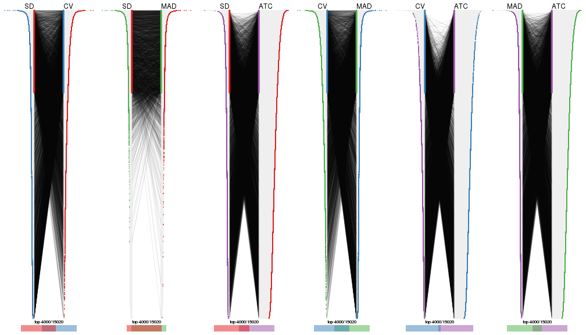
top_rows_overlap(res_list, top_n = 5000, method = "correspondance")
Heatmaps of the top rows:
top_rows_heatmap(res_list, top_n = 1000)
top_rows_heatmap(res_list, top_n = 2000)
top_rows_heatmap(res_list, top_n = 3000)
top_rows_heatmap(res_list, top_n = 4000)
top_rows_heatmap(res_list, top_n = 5000)
The object with results only for a single top-value method and a single partition method can be extracted as:
res = res_list["SD", "hclust"]
# you can also extract it by
# res = res_list["SD:hclust"]
A summary of res and all the functions that can be applied to it:
res
#> A 'ConsensusPartition' object with k = 2, 3, 4, 5, 6.
#> On a matrix with 15020 rows and 80 columns.
#> Top rows (1000, 2000, 3000, 4000, 5000) are extracted by 'SD' method.
#> Subgroups are detected by 'hclust' method.
#> Performed in total 1250 partitions by row resampling.
#> Best k for subgroups seems to be 3.
#>
#> Following methods can be applied to this 'ConsensusPartition' object:
#> [1] "cola_report" "collect_classes" "collect_plots"
#> [4] "collect_stats" "colnames" "compare_signatures"
#> [7] "consensus_heatmap" "dimension_reduction" "functional_enrichment"
#> [10] "get_anno_col" "get_anno" "get_classes"
#> [13] "get_consensus" "get_matrix" "get_membership"
#> [16] "get_param" "get_signatures" "get_stats"
#> [19] "is_best_k" "is_stable_k" "membership_heatmap"
#> [22] "ncol" "nrow" "plot_ecdf"
#> [25] "rownames" "select_partition_number" "show"
#> [28] "suggest_best_k" "test_to_known_factors"
collect_plots() function collects all the plots made from res for all k (number of partitions)
into one single page to provide an easy and fast comparison between different k.
collect_plots(res)
The plots are:
k and the heatmap of
predicted classes for each k.k.k.k.All the plots in panels can be made by individual functions and they are plotted later in this section.
select_partition_number() produces several plots showing different
statistics for choosing “optimized” k. There are following statistics:
k;k, the area increased is defined as \(A_k - A_{k-1}\).The detailed explanations of these statistics can be found in the cola vignette.
Generally speaking, lower PAC score, higher mean silhouette score or higher
concordance corresponds to better partition. Rand index and Jaccard index
measure how similar the current partition is compared to partition with k-1.
If they are too similar, we won't accept k is better than k-1.
select_partition_number(res)
The numeric values for all these statistics can be obtained by get_stats().
get_stats(res)
#> k 1-PAC mean_silhouette concordance area_increased Rand Jaccard
#> 2 2 0.246 0.734 0.828 0.4170 0.497 0.497
#> 3 3 0.301 0.654 0.773 0.4641 0.858 0.713
#> 4 4 0.411 0.601 0.729 0.1336 0.844 0.618
#> 5 5 0.525 0.396 0.699 0.0918 0.979 0.932
#> 6 6 0.575 0.532 0.654 0.0615 0.862 0.536
suggest_best_k() suggests the best \(k\) based on these statistics. The rules are as follows:
suggest_best_k(res)
#> [1] 3
Following shows the table of the partitions (You need to click the show/hide
code output link to see it). The membership matrix (columns with name p*)
is inferred by
clue::cl_consensus()
function with the SE method. Basically the value in the membership matrix
represents the probability to belong to a certain group. The finall class
label for an item is determined with the group with highest probability it
belongs to.
In get_classes() function, the entropy is calculated from the membership
matrix and the silhouette score is calculated from the consensus matrix.
cbind(get_classes(res, k = 2), get_membership(res, k = 2))
#> class entropy silhouette p1 p2
#> SRR1851004 2 0.402 0.729 0.080 0.920
#> SRR1851003 2 0.402 0.729 0.080 0.920
#> SRR1851002 2 0.833 0.735 0.264 0.736
#> SRR1851000 1 0.895 0.493 0.688 0.312
#> SRR1851001 2 0.833 0.735 0.264 0.736
#> SRR1850998 2 0.000 0.673 0.000 1.000
#> SRR1850999 1 0.895 0.493 0.688 0.312
#> SRR1850997 2 0.000 0.673 0.000 1.000
#> SRR1850996 1 0.814 0.628 0.748 0.252
#> SRR1851016 1 0.506 0.843 0.888 0.112
#> SRR1851010 1 0.541 0.827 0.876 0.124
#> SRR1851014 1 0.443 0.861 0.908 0.092
#> SRR1851015 1 0.753 0.681 0.784 0.216
#> SRR1851013 1 0.443 0.861 0.908 0.092
#> SRR1851012 1 0.327 0.866 0.940 0.060
#> SRR1851011 1 0.327 0.866 0.940 0.060
#> SRR1851009 2 0.224 0.701 0.036 0.964
#> SRR1851008 1 0.388 0.867 0.924 0.076
#> SRR1851007 1 0.388 0.867 0.924 0.076
#> SRR1851006 1 0.430 0.856 0.912 0.088
#> SRR1851005 1 0.430 0.856 0.912 0.088
#> SRR1850995 1 0.814 0.628 0.748 0.252
#> SRR1850994 1 0.260 0.865 0.956 0.044
#> SRR1850993 1 0.260 0.865 0.956 0.044
#> SRR1850992 2 0.981 0.600 0.420 0.580
#> SRR1850991 2 0.981 0.600 0.420 0.580
#> SRR1850990 1 0.469 0.848 0.900 0.100
#> SRR1850989 1 0.469 0.848 0.900 0.100
#> SRR1850987 2 0.981 0.599 0.420 0.580
#> SRR1850986 1 0.469 0.848 0.900 0.100
#> SRR1850985 1 0.469 0.848 0.900 0.100
#> SRR1850983 2 0.000 0.673 0.000 1.000
#> SRR1850984 2 0.224 0.701 0.036 0.964
#> SRR1850981 2 0.991 0.548 0.444 0.556
#> SRR1850980 2 0.985 0.586 0.428 0.572
#> SRR1850979 2 0.985 0.586 0.428 0.572
#> SRR1850978 1 0.295 0.865 0.948 0.052
#> SRR1850977 1 0.295 0.865 0.948 0.052
#> SRR1850976 1 0.204 0.865 0.968 0.032
#> SRR1850975 1 0.204 0.865 0.968 0.032
#> SRR1850974 2 0.402 0.725 0.080 0.920
#> SRR1850973 2 0.402 0.725 0.080 0.920
#> SRR1850972 1 0.295 0.865 0.948 0.052
#> SRR1850970 2 0.895 0.583 0.312 0.688
#> SRR1850971 1 0.295 0.865 0.948 0.052
#> SRR1850968 1 0.373 0.867 0.928 0.072
#> SRR1850969 2 0.584 0.747 0.140 0.860
#> SRR1850967 1 0.373 0.867 0.928 0.072
#> SRR1850966 2 0.662 0.753 0.172 0.828
#> SRR1850965 2 0.662 0.753 0.172 0.828
#> SRR1850964 2 0.981 0.602 0.420 0.580
#> SRR1850963 2 0.981 0.602 0.420 0.580
#> SRR1850962 1 0.000 0.850 1.000 0.000
#> SRR1850961 1 0.000 0.850 1.000 0.000
#> SRR1850959 2 0.980 0.607 0.416 0.584
#> SRR1850960 2 0.980 0.607 0.416 0.584
#> SRR1850958 2 0.900 0.694 0.316 0.684
#> SRR1850988 2 0.981 0.599 0.420 0.580
#> SRR1850957 2 0.900 0.694 0.316 0.684
#> SRR1850956 1 0.871 0.525 0.708 0.292
#> SRR1850955 1 0.871 0.525 0.708 0.292
#> SRR1850953 1 0.932 0.316 0.652 0.348
#> SRR1850954 1 0.932 0.316 0.652 0.348
#> SRR1850952 1 0.000 0.850 1.000 0.000
#> SRR1850982 2 0.991 0.548 0.444 0.556
#> SRR1850951 1 0.000 0.850 1.000 0.000
#> SRR1850950 2 0.584 0.748 0.140 0.860
#> SRR1850949 2 0.584 0.748 0.140 0.860
#> SRR1850948 1 0.000 0.850 1.000 0.000
#> SRR1850947 1 0.000 0.850 1.000 0.000
#> SRR1850946 2 0.881 0.711 0.300 0.700
#> SRR1850945 2 0.881 0.711 0.300 0.700
#> SRR1850944 2 0.689 0.751 0.184 0.816
#> SRR1850943 2 0.689 0.751 0.184 0.816
#> SRR1850942 1 0.000 0.850 1.000 0.000
#> SRR1850940 1 0.295 0.866 0.948 0.052
#> SRR1850941 1 0.000 0.850 1.000 0.000
#> SRR1850938 2 0.855 0.732 0.280 0.720
#> SRR1850939 1 0.295 0.866 0.948 0.052
#> SRR1850937 2 0.855 0.732 0.280 0.720
cbind(get_classes(res, k = 3), get_membership(res, k = 3))
#> class entropy silhouette p1 p2 p3
#> SRR1851004 2 0.3045 0.707 0.064 0.916 0.020
#> SRR1851003 2 0.3045 0.707 0.064 0.916 0.020
#> SRR1851002 2 0.6187 0.686 0.248 0.724 0.028
#> SRR1851000 3 0.8749 0.363 0.140 0.300 0.560
#> SRR1851001 2 0.6187 0.686 0.248 0.724 0.028
#> SRR1850998 2 0.0892 0.668 0.020 0.980 0.000
#> SRR1850999 3 0.8749 0.363 0.140 0.300 0.560
#> SRR1850997 2 0.0892 0.668 0.020 0.980 0.000
#> SRR1850996 1 0.9575 0.351 0.464 0.216 0.320
#> SRR1851016 1 0.2998 0.738 0.916 0.016 0.068
#> SRR1851010 3 0.5848 0.769 0.080 0.124 0.796
#> SRR1851014 3 0.7748 0.430 0.340 0.064 0.596
#> SRR1851015 1 0.6625 0.536 0.736 0.196 0.068
#> SRR1851013 3 0.7748 0.430 0.340 0.064 0.596
#> SRR1851012 3 0.3554 0.831 0.036 0.064 0.900
#> SRR1851011 3 0.3554 0.831 0.036 0.064 0.900
#> SRR1851009 2 0.1765 0.690 0.040 0.956 0.004
#> SRR1851008 3 0.4569 0.821 0.072 0.068 0.860
#> SRR1851007 3 0.4569 0.821 0.072 0.068 0.860
#> SRR1851006 3 0.4256 0.820 0.036 0.096 0.868
#> SRR1851005 3 0.4256 0.820 0.036 0.096 0.868
#> SRR1850995 1 0.9575 0.351 0.464 0.216 0.320
#> SRR1850994 1 0.4521 0.705 0.816 0.004 0.180
#> SRR1850993 1 0.4521 0.705 0.816 0.004 0.180
#> SRR1850992 2 0.6460 0.572 0.440 0.556 0.004
#> SRR1850991 2 0.6460 0.572 0.440 0.556 0.004
#> SRR1850990 1 0.2680 0.737 0.924 0.008 0.068
#> SRR1850989 1 0.2680 0.737 0.924 0.008 0.068
#> SRR1850987 2 0.7968 0.586 0.372 0.560 0.068
#> SRR1850986 1 0.2774 0.739 0.920 0.008 0.072
#> SRR1850985 1 0.2774 0.739 0.920 0.008 0.072
#> SRR1850983 2 0.0892 0.668 0.020 0.980 0.000
#> SRR1850984 2 0.1765 0.690 0.040 0.956 0.004
#> SRR1850981 2 0.6799 0.545 0.456 0.532 0.012
#> SRR1850980 2 0.7866 0.577 0.388 0.552 0.060
#> SRR1850979 2 0.7866 0.577 0.388 0.552 0.060
#> SRR1850978 1 0.3715 0.740 0.868 0.004 0.128
#> SRR1850977 1 0.3715 0.740 0.868 0.004 0.128
#> SRR1850976 3 0.4137 0.804 0.096 0.032 0.872
#> SRR1850975 3 0.4137 0.804 0.096 0.032 0.872
#> SRR1850974 2 0.2680 0.689 0.008 0.924 0.068
#> SRR1850973 2 0.2680 0.689 0.008 0.924 0.068
#> SRR1850972 1 0.3715 0.740 0.868 0.004 0.128
#> SRR1850970 2 0.6965 0.494 0.060 0.696 0.244
#> SRR1850971 1 0.3715 0.740 0.868 0.004 0.128
#> SRR1850968 3 0.3856 0.831 0.040 0.072 0.888
#> SRR1850969 2 0.4544 0.716 0.084 0.860 0.056
#> SRR1850967 3 0.3856 0.831 0.040 0.072 0.888
#> SRR1850966 2 0.5285 0.714 0.112 0.824 0.064
#> SRR1850965 2 0.5285 0.714 0.112 0.824 0.064
#> SRR1850964 2 0.6994 0.586 0.424 0.556 0.020
#> SRR1850963 2 0.6994 0.586 0.424 0.556 0.020
#> SRR1850962 3 0.0000 0.809 0.000 0.000 1.000
#> SRR1850961 3 0.0000 0.809 0.000 0.000 1.000
#> SRR1850959 2 0.7091 0.593 0.416 0.560 0.024
#> SRR1850960 2 0.7091 0.593 0.416 0.560 0.024
#> SRR1850958 2 0.7862 0.622 0.184 0.668 0.148
#> SRR1850988 2 0.7968 0.586 0.372 0.560 0.068
#> SRR1850957 2 0.7862 0.622 0.184 0.668 0.148
#> SRR1850956 1 0.9771 0.303 0.436 0.256 0.308
#> SRR1850955 1 0.9771 0.303 0.436 0.256 0.308
#> SRR1850953 1 0.8773 0.166 0.536 0.336 0.128
#> SRR1850954 1 0.8773 0.166 0.536 0.336 0.128
#> SRR1850952 3 0.4784 0.663 0.200 0.004 0.796
#> SRR1850982 2 0.6799 0.545 0.456 0.532 0.012
#> SRR1850951 3 0.4784 0.663 0.200 0.004 0.796
#> SRR1850950 2 0.4446 0.691 0.032 0.856 0.112
#> SRR1850949 2 0.4446 0.691 0.032 0.856 0.112
#> SRR1850948 3 0.0000 0.809 0.000 0.000 1.000
#> SRR1850947 3 0.0000 0.809 0.000 0.000 1.000
#> SRR1850946 2 0.7003 0.573 0.060 0.692 0.248
#> SRR1850945 2 0.7003 0.573 0.060 0.692 0.248
#> SRR1850944 2 0.4808 0.704 0.188 0.804 0.008
#> SRR1850943 2 0.4808 0.704 0.188 0.804 0.008
#> SRR1850942 3 0.0000 0.809 0.000 0.000 1.000
#> SRR1850940 3 0.3134 0.832 0.032 0.052 0.916
#> SRR1850941 3 0.0000 0.809 0.000 0.000 1.000
#> SRR1850938 2 0.5896 0.680 0.292 0.700 0.008
#> SRR1850939 3 0.3134 0.832 0.032 0.052 0.916
#> SRR1850937 2 0.5896 0.680 0.292 0.700 0.008
cbind(get_classes(res, k = 4), get_membership(res, k = 4))
#> class entropy silhouette p1 p2 p3 p4
#> SRR1851004 3 0.527 0.73247 0.008 0.300 0.676 0.016
#> SRR1851003 3 0.527 0.73247 0.008 0.300 0.676 0.016
#> SRR1851002 2 0.499 0.54187 0.024 0.756 0.204 0.016
#> SRR1851000 4 0.710 0.30484 0.076 0.356 0.024 0.544
#> SRR1851001 2 0.499 0.54187 0.024 0.756 0.204 0.016
#> SRR1850998 3 0.218 0.72705 0.012 0.064 0.924 0.000
#> SRR1850999 4 0.710 0.30484 0.076 0.356 0.024 0.544
#> SRR1850997 3 0.218 0.72705 0.012 0.064 0.924 0.000
#> SRR1850996 2 0.838 0.03988 0.320 0.396 0.020 0.264
#> SRR1851016 1 0.499 0.86629 0.732 0.236 0.028 0.004
#> SRR1851010 4 0.481 0.72599 0.020 0.176 0.024 0.780
#> SRR1851014 4 0.726 0.42138 0.280 0.152 0.008 0.560
#> SRR1851015 1 0.594 0.60109 0.548 0.412 0.040 0.000
#> SRR1851013 4 0.726 0.42138 0.280 0.152 0.008 0.560
#> SRR1851012 4 0.255 0.78800 0.008 0.092 0.000 0.900
#> SRR1851011 4 0.255 0.78800 0.008 0.092 0.000 0.900
#> SRR1851009 3 0.387 0.77378 0.000 0.228 0.772 0.000
#> SRR1851008 4 0.360 0.78285 0.056 0.084 0.000 0.860
#> SRR1851007 4 0.360 0.78285 0.056 0.084 0.000 0.860
#> SRR1851006 4 0.356 0.77496 0.016 0.112 0.012 0.860
#> SRR1851005 4 0.356 0.77496 0.016 0.112 0.012 0.860
#> SRR1850995 2 0.838 0.03988 0.320 0.396 0.020 0.264
#> SRR1850994 1 0.628 0.82926 0.656 0.252 0.008 0.084
#> SRR1850993 1 0.628 0.82926 0.656 0.252 0.008 0.084
#> SRR1850992 2 0.117 0.62761 0.020 0.968 0.012 0.000
#> SRR1850991 2 0.117 0.62761 0.020 0.968 0.012 0.000
#> SRR1850990 1 0.460 0.87793 0.732 0.256 0.008 0.004
#> SRR1850989 1 0.460 0.87793 0.732 0.256 0.008 0.004
#> SRR1850987 2 0.267 0.63026 0.020 0.912 0.008 0.060
#> SRR1850986 1 0.457 0.87903 0.736 0.252 0.008 0.004
#> SRR1850985 1 0.457 0.87903 0.736 0.252 0.008 0.004
#> SRR1850983 3 0.210 0.72350 0.012 0.060 0.928 0.000
#> SRR1850984 3 0.387 0.77378 0.000 0.228 0.772 0.000
#> SRR1850981 2 0.102 0.62486 0.032 0.968 0.000 0.000
#> SRR1850980 2 0.247 0.63198 0.024 0.920 0.004 0.052
#> SRR1850979 2 0.247 0.63198 0.024 0.920 0.004 0.052
#> SRR1850978 1 0.584 0.88377 0.708 0.220 0.020 0.052
#> SRR1850977 1 0.584 0.88377 0.708 0.220 0.020 0.052
#> SRR1850976 4 0.546 0.74980 0.108 0.104 0.020 0.768
#> SRR1850975 4 0.546 0.74980 0.108 0.104 0.020 0.768
#> SRR1850974 2 0.703 0.20550 0.032 0.532 0.380 0.056
#> SRR1850973 2 0.703 0.20550 0.032 0.532 0.380 0.056
#> SRR1850972 1 0.584 0.88377 0.708 0.220 0.020 0.052
#> SRR1850970 2 0.834 0.00175 0.024 0.420 0.328 0.228
#> SRR1850971 1 0.584 0.88377 0.708 0.220 0.020 0.052
#> SRR1850968 4 0.295 0.78746 0.024 0.088 0.000 0.888
#> SRR1850969 2 0.633 0.33300 0.024 0.608 0.332 0.036
#> SRR1850967 4 0.295 0.78746 0.024 0.088 0.000 0.888
#> SRR1850966 3 0.636 0.63707 0.020 0.364 0.580 0.036
#> SRR1850965 3 0.636 0.63707 0.020 0.364 0.580 0.036
#> SRR1850964 2 0.139 0.63142 0.016 0.964 0.012 0.008
#> SRR1850963 2 0.139 0.63142 0.016 0.964 0.012 0.008
#> SRR1850962 4 0.371 0.73823 0.140 0.000 0.024 0.836
#> SRR1850961 4 0.371 0.73823 0.140 0.000 0.024 0.836
#> SRR1850959 2 0.165 0.63342 0.016 0.956 0.016 0.012
#> SRR1850960 2 0.165 0.63342 0.016 0.956 0.016 0.012
#> SRR1850958 2 0.768 0.45002 0.092 0.624 0.164 0.120
#> SRR1850988 2 0.267 0.63026 0.020 0.912 0.008 0.060
#> SRR1850957 2 0.768 0.45002 0.092 0.624 0.164 0.120
#> SRR1850956 2 0.824 0.15680 0.280 0.448 0.020 0.252
#> SRR1850955 2 0.824 0.15680 0.280 0.448 0.020 0.252
#> SRR1850953 2 0.637 0.11257 0.312 0.616 0.012 0.060
#> SRR1850954 2 0.637 0.11257 0.312 0.616 0.012 0.060
#> SRR1850952 4 0.548 0.56327 0.316 0.016 0.012 0.656
#> SRR1850982 2 0.102 0.62486 0.032 0.968 0.000 0.000
#> SRR1850951 4 0.548 0.56327 0.316 0.016 0.012 0.656
#> SRR1850950 2 0.740 0.31976 0.040 0.568 0.304 0.088
#> SRR1850949 2 0.740 0.31976 0.040 0.568 0.304 0.088
#> SRR1850948 4 0.371 0.73823 0.140 0.000 0.024 0.836
#> SRR1850947 4 0.371 0.73823 0.140 0.000 0.024 0.836
#> SRR1850946 2 0.780 0.40476 0.052 0.584 0.148 0.216
#> SRR1850945 2 0.780 0.40476 0.052 0.584 0.148 0.216
#> SRR1850944 2 0.529 0.44299 0.032 0.700 0.264 0.004
#> SRR1850943 2 0.529 0.44299 0.032 0.700 0.264 0.004
#> SRR1850942 4 0.371 0.73823 0.140 0.000 0.024 0.836
#> SRR1850940 4 0.318 0.78999 0.036 0.084 0.000 0.880
#> SRR1850941 4 0.371 0.73823 0.140 0.000 0.024 0.836
#> SRR1850938 2 0.354 0.55241 0.008 0.828 0.164 0.000
#> SRR1850939 4 0.318 0.78999 0.036 0.084 0.000 0.880
#> SRR1850937 2 0.354 0.55241 0.008 0.828 0.164 0.000
cbind(get_classes(res, k = 5), get_membership(res, k = 5))
#> class entropy silhouette p1 p2 p3 p4 p5
#> SRR1851004 5 0.4017 0.6969 0.000 0.248 0.012 0.004 0.736
#> SRR1851003 5 0.4017 0.6969 0.000 0.248 0.012 0.004 0.736
#> SRR1851002 2 0.4570 0.4981 0.000 0.720 0.036 0.008 0.236
#> SRR1851000 4 0.6737 0.2335 0.048 0.248 0.084 0.600 0.020
#> SRR1851001 2 0.4570 0.4981 0.000 0.720 0.036 0.008 0.236
#> SRR1850998 5 0.2409 0.6745 0.012 0.020 0.060 0.000 0.908
#> SRR1850999 4 0.6737 0.2335 0.048 0.248 0.084 0.600 0.020
#> SRR1850997 5 0.2409 0.6745 0.012 0.020 0.060 0.000 0.908
#> SRR1850996 2 0.9391 0.0672 0.228 0.304 0.204 0.208 0.056
#> SRR1851016 1 0.3599 0.7382 0.832 0.060 0.104 0.000 0.004
#> SRR1851010 4 0.3361 0.4477 0.000 0.080 0.024 0.860 0.036
#> SRR1851014 4 0.4623 0.2173 0.340 0.012 0.008 0.640 0.000
#> SRR1851015 1 0.4380 0.5924 0.716 0.256 0.008 0.000 0.020
#> SRR1851013 4 0.4623 0.2173 0.340 0.012 0.008 0.640 0.000
#> SRR1851012 4 0.0451 0.4902 0.000 0.008 0.004 0.988 0.000
#> SRR1851011 4 0.0451 0.4902 0.000 0.008 0.004 0.988 0.000
#> SRR1851009 5 0.3843 0.7249 0.012 0.184 0.016 0.000 0.788
#> SRR1851008 4 0.1901 0.4845 0.040 0.004 0.024 0.932 0.000
#> SRR1851007 4 0.1901 0.4845 0.040 0.004 0.024 0.932 0.000
#> SRR1851006 4 0.1716 0.4866 0.000 0.016 0.016 0.944 0.024
#> SRR1851005 4 0.1716 0.4866 0.000 0.016 0.016 0.944 0.024
#> SRR1850995 2 0.9391 0.0672 0.228 0.304 0.204 0.208 0.056
#> SRR1850994 1 0.6086 0.5908 0.548 0.128 0.320 0.004 0.000
#> SRR1850993 1 0.6086 0.5908 0.548 0.128 0.320 0.004 0.000
#> SRR1850992 2 0.1334 0.6022 0.004 0.960 0.020 0.004 0.012
#> SRR1850991 2 0.1334 0.6022 0.004 0.960 0.020 0.004 0.012
#> SRR1850990 1 0.4975 0.7608 0.700 0.076 0.220 0.004 0.000
#> SRR1850989 1 0.4975 0.7608 0.700 0.076 0.220 0.004 0.000
#> SRR1850987 2 0.2762 0.6048 0.008 0.896 0.028 0.060 0.008
#> SRR1850986 1 0.4948 0.7603 0.700 0.072 0.224 0.004 0.000
#> SRR1850985 1 0.4948 0.7603 0.700 0.072 0.224 0.004 0.000
#> SRR1850983 5 0.2208 0.6686 0.012 0.012 0.060 0.000 0.916
#> SRR1850984 5 0.3843 0.7249 0.012 0.184 0.016 0.000 0.788
#> SRR1850981 2 0.1187 0.6034 0.004 0.964 0.024 0.004 0.004
#> SRR1850980 2 0.2430 0.6069 0.012 0.912 0.020 0.052 0.004
#> SRR1850979 2 0.2430 0.6069 0.012 0.912 0.020 0.052 0.004
#> SRR1850978 1 0.2278 0.7566 0.908 0.032 0.060 0.000 0.000
#> SRR1850977 1 0.2278 0.7566 0.908 0.032 0.060 0.000 0.000
#> SRR1850976 4 0.5468 0.1912 0.016 0.048 0.224 0.692 0.020
#> SRR1850975 4 0.5468 0.1912 0.016 0.048 0.224 0.692 0.020
#> SRR1850974 2 0.6779 0.1695 0.004 0.456 0.084 0.044 0.412
#> SRR1850973 2 0.6779 0.1695 0.004 0.456 0.084 0.044 0.412
#> SRR1850972 1 0.2278 0.7566 0.908 0.032 0.060 0.000 0.000
#> SRR1850970 5 0.7984 0.0459 0.004 0.332 0.076 0.220 0.368
#> SRR1850971 1 0.2278 0.7566 0.908 0.032 0.060 0.000 0.000
#> SRR1850968 4 0.1186 0.4925 0.008 0.008 0.020 0.964 0.000
#> SRR1850969 2 0.6137 0.2748 0.004 0.532 0.076 0.016 0.372
#> SRR1850967 4 0.1186 0.4925 0.008 0.008 0.020 0.964 0.000
#> SRR1850966 5 0.5335 0.6207 0.000 0.300 0.060 0.008 0.632
#> SRR1850965 5 0.5335 0.6207 0.000 0.300 0.060 0.008 0.632
#> SRR1850964 2 0.1029 0.6066 0.008 0.972 0.004 0.008 0.008
#> SRR1850963 2 0.1029 0.6066 0.008 0.972 0.004 0.008 0.008
#> SRR1850962 4 0.4300 -0.3833 0.000 0.000 0.476 0.524 0.000
#> SRR1850961 4 0.4300 -0.3833 0.000 0.000 0.476 0.524 0.000
#> SRR1850959 2 0.1580 0.6087 0.004 0.952 0.016 0.012 0.016
#> SRR1850960 2 0.1580 0.6087 0.004 0.952 0.016 0.012 0.016
#> SRR1850958 2 0.7885 0.3522 0.040 0.536 0.120 0.096 0.208
#> SRR1850988 2 0.2762 0.6048 0.008 0.896 0.028 0.060 0.008
#> SRR1850957 2 0.7885 0.3522 0.040 0.536 0.120 0.096 0.208
#> SRR1850956 2 0.9113 0.2143 0.164 0.384 0.196 0.200 0.056
#> SRR1850955 2 0.9113 0.2143 0.164 0.384 0.196 0.200 0.056
#> SRR1850953 2 0.6915 0.3108 0.160 0.556 0.240 0.040 0.004
#> SRR1850954 2 0.6915 0.3108 0.160 0.556 0.240 0.040 0.004
#> SRR1850952 3 0.6247 0.0000 0.144 0.000 0.428 0.428 0.000
#> SRR1850982 2 0.1187 0.6034 0.004 0.964 0.024 0.004 0.004
#> SRR1850951 4 0.6247 -1.0000 0.144 0.000 0.428 0.428 0.000
#> SRR1850950 2 0.7462 0.2498 0.004 0.464 0.120 0.080 0.332
#> SRR1850949 2 0.7462 0.2498 0.004 0.464 0.120 0.080 0.332
#> SRR1850948 4 0.4302 -0.3905 0.000 0.000 0.480 0.520 0.000
#> SRR1850947 4 0.4302 -0.3905 0.000 0.000 0.480 0.520 0.000
#> SRR1850946 2 0.8128 0.2984 0.004 0.444 0.148 0.228 0.176
#> SRR1850945 2 0.8128 0.2984 0.004 0.444 0.148 0.228 0.176
#> SRR1850944 2 0.5561 0.4405 0.016 0.656 0.084 0.000 0.244
#> SRR1850943 2 0.5561 0.4405 0.016 0.656 0.084 0.000 0.244
#> SRR1850942 4 0.4302 -0.3905 0.000 0.000 0.480 0.520 0.000
#> SRR1850940 4 0.3124 0.4207 0.000 0.016 0.136 0.844 0.004
#> SRR1850941 4 0.4302 -0.3905 0.000 0.000 0.480 0.520 0.000
#> SRR1850938 2 0.3565 0.5418 0.000 0.816 0.040 0.000 0.144
#> SRR1850939 4 0.3124 0.4207 0.000 0.016 0.136 0.844 0.004
#> SRR1850937 2 0.3565 0.5418 0.000 0.816 0.040 0.000 0.144
cbind(get_classes(res, k = 6), get_membership(res, k = 6))
#> class entropy silhouette p1 p2 p3 p4 p5 p6
#> SRR1851004 2 0.5005 0.676 0.000 0.628 0.000 0.000 0.124 0.248
#> SRR1851003 2 0.5005 0.676 0.000 0.628 0.000 0.000 0.124 0.248
#> SRR1851002 5 0.4904 0.463 0.000 0.156 0.000 0.004 0.672 0.168
#> SRR1851000 4 0.7145 0.400 0.016 0.004 0.148 0.512 0.104 0.216
#> SRR1851001 5 0.4904 0.463 0.000 0.156 0.000 0.004 0.672 0.168
#> SRR1850998 2 0.0260 0.649 0.000 0.992 0.000 0.000 0.008 0.000
#> SRR1850999 4 0.7145 0.400 0.016 0.004 0.148 0.512 0.104 0.216
#> SRR1850997 2 0.0260 0.649 0.000 0.992 0.000 0.000 0.008 0.000
#> SRR1850996 6 0.8794 0.289 0.180 0.000 0.140 0.180 0.200 0.300
#> SRR1851016 1 0.4517 0.672 0.740 0.000 0.000 0.128 0.020 0.112
#> SRR1851010 4 0.6401 0.541 0.000 0.020 0.368 0.484 0.052 0.076
#> SRR1851014 4 0.5661 0.412 0.320 0.000 0.140 0.532 0.000 0.008
#> SRR1851015 1 0.5381 0.527 0.664 0.016 0.000 0.032 0.220 0.068
#> SRR1851013 4 0.5661 0.412 0.320 0.000 0.140 0.532 0.000 0.008
#> SRR1851012 4 0.4067 0.618 0.000 0.000 0.444 0.548 0.000 0.008
#> SRR1851011 4 0.4067 0.618 0.000 0.000 0.444 0.548 0.000 0.008
#> SRR1851009 2 0.4074 0.718 0.000 0.748 0.000 0.000 0.092 0.160
#> SRR1851008 4 0.4974 0.630 0.024 0.000 0.420 0.528 0.000 0.028
#> SRR1851007 4 0.4974 0.630 0.024 0.000 0.420 0.528 0.000 0.028
#> SRR1851006 4 0.5172 0.597 0.000 0.012 0.420 0.516 0.004 0.048
#> SRR1851005 4 0.5172 0.597 0.000 0.012 0.420 0.516 0.004 0.048
#> SRR1850995 6 0.8794 0.289 0.180 0.000 0.140 0.180 0.200 0.300
#> SRR1850994 1 0.7945 0.494 0.436 0.000 0.104 0.240 0.096 0.124
#> SRR1850993 1 0.7945 0.494 0.436 0.000 0.104 0.240 0.096 0.124
#> SRR1850992 5 0.0653 0.762 0.000 0.012 0.000 0.004 0.980 0.004
#> SRR1850991 5 0.0653 0.762 0.000 0.012 0.000 0.004 0.980 0.004
#> SRR1850990 1 0.5212 0.715 0.620 0.000 0.000 0.288 0.032 0.060
#> SRR1850989 1 0.5212 0.715 0.620 0.000 0.000 0.288 0.032 0.060
#> SRR1850987 5 0.2638 0.743 0.000 0.000 0.036 0.032 0.888 0.044
#> SRR1850986 1 0.5161 0.716 0.620 0.000 0.000 0.292 0.028 0.060
#> SRR1850985 1 0.5161 0.716 0.620 0.000 0.000 0.292 0.028 0.060
#> SRR1850983 2 0.0000 0.642 0.000 1.000 0.000 0.000 0.000 0.000
#> SRR1850984 2 0.4074 0.718 0.000 0.748 0.000 0.000 0.092 0.160
#> SRR1850981 5 0.0891 0.758 0.000 0.000 0.000 0.008 0.968 0.024
#> SRR1850980 5 0.2421 0.750 0.004 0.000 0.032 0.028 0.904 0.032
#> SRR1850979 5 0.2421 0.750 0.004 0.000 0.032 0.028 0.904 0.032
#> SRR1850978 1 0.1364 0.725 0.944 0.000 0.048 0.004 0.004 0.000
#> SRR1850977 1 0.1364 0.725 0.944 0.000 0.048 0.004 0.004 0.000
#> SRR1850976 3 0.5774 0.200 0.016 0.000 0.596 0.284 0.036 0.068
#> SRR1850975 3 0.5774 0.200 0.016 0.000 0.596 0.284 0.036 0.068
#> SRR1850974 6 0.5768 0.300 0.000 0.268 0.000 0.032 0.120 0.580
#> SRR1850973 6 0.5768 0.300 0.000 0.268 0.000 0.032 0.120 0.580
#> SRR1850972 1 0.1578 0.724 0.936 0.000 0.048 0.012 0.004 0.000
#> SRR1850970 6 0.8019 0.223 0.000 0.228 0.120 0.092 0.128 0.432
#> SRR1850971 1 0.1578 0.724 0.936 0.000 0.048 0.012 0.004 0.000
#> SRR1850968 4 0.4284 0.631 0.004 0.000 0.440 0.544 0.000 0.012
#> SRR1850969 6 0.6082 0.215 0.000 0.232 0.000 0.004 0.332 0.432
#> SRR1850967 4 0.4284 0.631 0.004 0.000 0.440 0.544 0.000 0.012
#> SRR1850966 2 0.5648 0.565 0.000 0.512 0.000 0.000 0.176 0.312
#> SRR1850965 2 0.5648 0.565 0.000 0.512 0.000 0.000 0.176 0.312
#> SRR1850964 5 0.1080 0.762 0.004 0.004 0.000 0.000 0.960 0.032
#> SRR1850963 5 0.1080 0.762 0.004 0.004 0.000 0.000 0.960 0.032
#> SRR1850962 3 0.0146 0.683 0.000 0.000 0.996 0.004 0.000 0.000
#> SRR1850961 3 0.0146 0.683 0.000 0.000 0.996 0.004 0.000 0.000
#> SRR1850959 5 0.1219 0.759 0.000 0.004 0.000 0.000 0.948 0.048
#> SRR1850960 5 0.1219 0.759 0.000 0.004 0.000 0.000 0.948 0.048
#> SRR1850958 6 0.6922 0.393 0.012 0.096 0.004 0.116 0.256 0.516
#> SRR1850988 5 0.2638 0.743 0.000 0.000 0.036 0.032 0.888 0.044
#> SRR1850957 6 0.6922 0.393 0.012 0.096 0.004 0.116 0.256 0.516
#> SRR1850956 6 0.8627 0.319 0.124 0.000 0.136 0.168 0.280 0.292
#> SRR1850955 6 0.8627 0.319 0.124 0.000 0.136 0.168 0.280 0.292
#> SRR1850953 5 0.6977 0.318 0.064 0.000 0.044 0.224 0.536 0.132
#> SRR1850954 5 0.6977 0.318 0.064 0.000 0.044 0.224 0.536 0.132
#> SRR1850952 3 0.4528 0.527 0.064 0.000 0.752 0.132 0.000 0.052
#> SRR1850982 5 0.0891 0.758 0.000 0.000 0.000 0.008 0.968 0.024
#> SRR1850951 3 0.4528 0.527 0.064 0.000 0.752 0.132 0.000 0.052
#> SRR1850950 6 0.5813 0.371 0.000 0.192 0.000 0.064 0.120 0.624
#> SRR1850949 6 0.5813 0.371 0.000 0.192 0.000 0.064 0.120 0.624
#> SRR1850948 3 0.0000 0.685 0.000 0.000 1.000 0.000 0.000 0.000
#> SRR1850947 3 0.0000 0.685 0.000 0.000 1.000 0.000 0.000 0.000
#> SRR1850946 6 0.5839 0.428 0.000 0.064 0.000 0.208 0.112 0.616
#> SRR1850945 6 0.5839 0.428 0.000 0.064 0.000 0.208 0.112 0.616
#> SRR1850944 5 0.6021 0.157 0.000 0.164 0.000 0.016 0.488 0.332
#> SRR1850943 5 0.6021 0.157 0.000 0.164 0.000 0.016 0.488 0.332
#> SRR1850942 3 0.0000 0.685 0.000 0.000 1.000 0.000 0.000 0.000
#> SRR1850940 3 0.4878 -0.406 0.000 0.000 0.516 0.424 0.000 0.060
#> SRR1850941 3 0.0000 0.685 0.000 0.000 1.000 0.000 0.000 0.000
#> SRR1850938 5 0.3791 0.636 0.000 0.092 0.000 0.004 0.788 0.116
#> SRR1850939 3 0.4878 -0.406 0.000 0.000 0.516 0.424 0.000 0.060
#> SRR1850937 5 0.3791 0.636 0.000 0.092 0.000 0.004 0.788 0.116
Heatmaps for the consensus matrix. It visualizes the probability of two samples to be in a same group.
consensus_heatmap(res, k = 2)
consensus_heatmap(res, k = 3)
consensus_heatmap(res, k = 4)
consensus_heatmap(res, k = 5)
consensus_heatmap(res, k = 6)
Heatmaps for the membership of samples in all partitions to see how consistent they are:
membership_heatmap(res, k = 2)
membership_heatmap(res, k = 3)
membership_heatmap(res, k = 4)
membership_heatmap(res, k = 5)
membership_heatmap(res, k = 6)
As soon as we have had the classes for columns, we can look for signatures which are significantly different between classes which can be candidate marks for certain classes. Following are the heatmaps for signatures.
Signature heatmaps where rows are scaled:
get_signatures(res, k = 2)
get_signatures(res, k = 3)
get_signatures(res, k = 4)

get_signatures(res, k = 5)
get_signatures(res, k = 6)
Signature heatmaps where rows are not scaled:
get_signatures(res, k = 2, scale_rows = FALSE)
get_signatures(res, k = 3, scale_rows = FALSE)
get_signatures(res, k = 4, scale_rows = FALSE)
get_signatures(res, k = 5, scale_rows = FALSE)
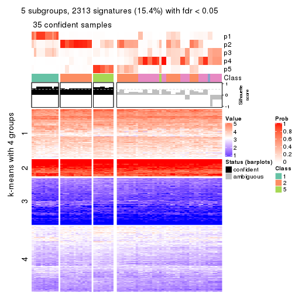
get_signatures(res, k = 6, scale_rows = FALSE)
Compare the overlap of signatures from different k:
compare_signatures(res)
get_signature() returns a data frame invisibly. TO get the list of signatures, the function
call should be assigned to a variable explicitly. In following code, if plot argument is set
to FALSE, no heatmap is plotted while only the differential analysis is performed.
# code only for demonstration
tb = get_signature(res, k = ..., plot = FALSE)
An example of the output of tb is:
#> which_row fdr mean_1 mean_2 scaled_mean_1 scaled_mean_2 km
#> 1 38 0.042760348 8.373488 9.131774 -0.5533452 0.5164555 1
#> 2 40 0.018707592 7.106213 8.469186 -0.6173731 0.5762149 1
#> 3 55 0.019134737 10.221463 11.207825 -0.6159697 0.5749050 1
#> 4 59 0.006059896 5.921854 7.869574 -0.6899429 0.6439467 1
#> 5 60 0.018055526 8.928898 10.211722 -0.6204761 0.5791110 1
#> 6 98 0.009384629 15.714769 14.887706 0.6635654 -0.6193277 2
...
The columns in tb are:
which_row: row indices corresponding to the input matrix.fdr: FDR for the differential test. mean_x: The mean value in group x.scaled_mean_x: The mean value in group x after rows are scaled.km: Row groups if k-means clustering is applied to rows.UMAP plot which shows how samples are separated.
dimension_reduction(res, k = 2, method = "UMAP")
dimension_reduction(res, k = 3, method = "UMAP")
dimension_reduction(res, k = 4, method = "UMAP")
dimension_reduction(res, k = 5, method = "UMAP")
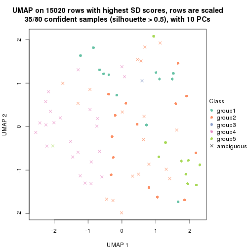
dimension_reduction(res, k = 6, method = "UMAP")
Following heatmap shows how subgroups are split when increasing k:
collect_classes(res)
If matrix rows can be associated to genes, consider to use functional_enrichment(res,
...) to perform function enrichment for the signature genes. See this vignette for more detailed explanations.
The object with results only for a single top-value method and a single partition method can be extracted as:
res = res_list["SD", "kmeans"]
# you can also extract it by
# res = res_list["SD:kmeans"]
A summary of res and all the functions that can be applied to it:
res
#> A 'ConsensusPartition' object with k = 2, 3, 4, 5, 6.
#> On a matrix with 15020 rows and 80 columns.
#> Top rows (1000, 2000, 3000, 4000, 5000) are extracted by 'SD' method.
#> Subgroups are detected by 'kmeans' method.
#> Performed in total 1250 partitions by row resampling.
#> Best k for subgroups seems to be 2.
#>
#> Following methods can be applied to this 'ConsensusPartition' object:
#> [1] "cola_report" "collect_classes" "collect_plots"
#> [4] "collect_stats" "colnames" "compare_signatures"
#> [7] "consensus_heatmap" "dimension_reduction" "functional_enrichment"
#> [10] "get_anno_col" "get_anno" "get_classes"
#> [13] "get_consensus" "get_matrix" "get_membership"
#> [16] "get_param" "get_signatures" "get_stats"
#> [19] "is_best_k" "is_stable_k" "membership_heatmap"
#> [22] "ncol" "nrow" "plot_ecdf"
#> [25] "rownames" "select_partition_number" "show"
#> [28] "suggest_best_k" "test_to_known_factors"
collect_plots() function collects all the plots made from res for all k (number of partitions)
into one single page to provide an easy and fast comparison between different k.
collect_plots(res)
The plots are:
k and the heatmap of
predicted classes for each k.k.k.k.All the plots in panels can be made by individual functions and they are plotted later in this section.
select_partition_number() produces several plots showing different
statistics for choosing “optimized” k. There are following statistics:
k;k, the area increased is defined as \(A_k - A_{k-1}\).The detailed explanations of these statistics can be found in the cola vignette.
Generally speaking, lower PAC score, higher mean silhouette score or higher
concordance corresponds to better partition. Rand index and Jaccard index
measure how similar the current partition is compared to partition with k-1.
If they are too similar, we won't accept k is better than k-1.
select_partition_number(res)
The numeric values for all these statistics can be obtained by get_stats().
get_stats(res)
#> k 1-PAC mean_silhouette concordance area_increased Rand Jaccard
#> 2 2 0.643 0.802 0.911 0.4940 0.494 0.494
#> 3 3 0.637 0.816 0.894 0.3478 0.676 0.435
#> 4 4 0.582 0.483 0.712 0.1093 0.851 0.590
#> 5 5 0.586 0.627 0.759 0.0636 0.833 0.463
#> 6 6 0.632 0.633 0.736 0.0427 0.979 0.904
suggest_best_k() suggests the best \(k\) based on these statistics. The rules are as follows:
suggest_best_k(res)
#> [1] 2
Following shows the table of the partitions (You need to click the show/hide
code output link to see it). The membership matrix (columns with name p*)
is inferred by
clue::cl_consensus()
function with the SE method. Basically the value in the membership matrix
represents the probability to belong to a certain group. The finall class
label for an item is determined with the group with highest probability it
belongs to.
In get_classes() function, the entropy is calculated from the membership
matrix and the silhouette score is calculated from the consensus matrix.
cbind(get_classes(res, k = 2), get_membership(res, k = 2))
#> class entropy silhouette p1 p2
#> SRR1851004 2 0.0000 0.878 0.000 1.000
#> SRR1851003 2 0.0000 0.878 0.000 1.000
#> SRR1851002 2 0.0000 0.878 0.000 1.000
#> SRR1851000 1 0.2043 0.921 0.968 0.032
#> SRR1851001 2 0.0000 0.878 0.000 1.000
#> SRR1850998 2 0.0000 0.878 0.000 1.000
#> SRR1850999 2 0.1633 0.870 0.024 0.976
#> SRR1850997 2 0.0000 0.878 0.000 1.000
#> SRR1850996 1 0.1633 0.927 0.976 0.024
#> SRR1851016 2 0.9881 0.370 0.436 0.564
#> SRR1851010 2 0.7299 0.730 0.204 0.796
#> SRR1851014 1 0.2043 0.921 0.968 0.032
#> SRR1851015 2 0.0376 0.877 0.004 0.996
#> SRR1851013 1 0.2043 0.921 0.968 0.032
#> SRR1851012 1 0.2236 0.920 0.964 0.036
#> SRR1851011 1 0.2778 0.910 0.952 0.048
#> SRR1851009 2 0.0000 0.878 0.000 1.000
#> SRR1851008 1 0.1633 0.927 0.976 0.024
#> SRR1851007 1 0.2043 0.925 0.968 0.032
#> SRR1851006 2 0.6148 0.768 0.152 0.848
#> SRR1851005 1 0.1843 0.925 0.972 0.028
#> SRR1850995 1 0.2236 0.924 0.964 0.036
#> SRR1850994 1 0.9998 -0.178 0.508 0.492
#> SRR1850993 1 0.0376 0.919 0.996 0.004
#> SRR1850992 2 0.0672 0.876 0.008 0.992
#> SRR1850991 2 0.4562 0.835 0.096 0.904
#> SRR1850990 1 0.1414 0.917 0.980 0.020
#> SRR1850989 2 0.9922 0.340 0.448 0.552
#> SRR1850987 1 0.9988 -0.104 0.520 0.480
#> SRR1850986 1 0.2236 0.904 0.964 0.036
#> SRR1850985 1 0.0376 0.919 0.996 0.004
#> SRR1850983 2 0.0000 0.878 0.000 1.000
#> SRR1850984 2 0.0000 0.878 0.000 1.000
#> SRR1850981 2 0.9795 0.422 0.416 0.584
#> SRR1850980 1 0.1184 0.918 0.984 0.016
#> SRR1850979 1 0.9209 0.393 0.664 0.336
#> SRR1850978 1 0.1184 0.918 0.984 0.016
#> SRR1850977 1 0.0376 0.919 0.996 0.004
#> SRR1850976 1 0.1633 0.927 0.976 0.024
#> SRR1850975 1 0.1633 0.927 0.976 0.024
#> SRR1850974 2 0.0376 0.876 0.004 0.996
#> SRR1850973 2 0.0000 0.878 0.000 1.000
#> SRR1850972 1 0.0376 0.919 0.996 0.004
#> SRR1850970 1 0.8081 0.640 0.752 0.248
#> SRR1850971 1 0.0376 0.919 0.996 0.004
#> SRR1850968 1 0.1633 0.927 0.976 0.024
#> SRR1850969 2 0.0000 0.878 0.000 1.000
#> SRR1850967 1 0.1633 0.927 0.976 0.024
#> SRR1850966 2 0.0376 0.877 0.004 0.996
#> SRR1850965 2 0.0000 0.878 0.000 1.000
#> SRR1850964 2 0.9881 0.372 0.436 0.564
#> SRR1850963 2 0.0376 0.877 0.004 0.996
#> SRR1850962 1 0.1633 0.927 0.976 0.024
#> SRR1850961 1 0.1633 0.927 0.976 0.024
#> SRR1850959 2 0.4815 0.825 0.104 0.896
#> SRR1850960 2 0.0376 0.877 0.004 0.996
#> SRR1850958 2 0.5737 0.796 0.136 0.864
#> SRR1850988 2 0.8713 0.630 0.292 0.708
#> SRR1850957 2 0.0000 0.878 0.000 1.000
#> SRR1850956 2 0.9170 0.566 0.332 0.668
#> SRR1850955 1 0.2043 0.924 0.968 0.032
#> SRR1850953 2 0.9248 0.554 0.340 0.660
#> SRR1850954 2 0.9815 0.388 0.420 0.580
#> SRR1850952 1 0.0376 0.919 0.996 0.004
#> SRR1850982 2 0.0672 0.876 0.008 0.992
#> SRR1850951 1 0.0000 0.918 1.000 0.000
#> SRR1850950 2 0.0376 0.876 0.004 0.996
#> SRR1850949 2 0.0376 0.876 0.004 0.996
#> SRR1850948 1 0.1633 0.927 0.976 0.024
#> SRR1850947 1 0.1633 0.927 0.976 0.024
#> SRR1850946 1 0.9580 0.360 0.620 0.380
#> SRR1850945 2 0.0000 0.878 0.000 1.000
#> SRR1850944 2 0.9000 0.587 0.316 0.684
#> SRR1850943 2 0.0672 0.876 0.008 0.992
#> SRR1850942 1 0.1633 0.927 0.976 0.024
#> SRR1850940 1 0.1843 0.925 0.972 0.028
#> SRR1850941 1 0.1633 0.927 0.976 0.024
#> SRR1850938 2 0.6973 0.748 0.188 0.812
#> SRR1850939 1 0.1633 0.927 0.976 0.024
#> SRR1850937 2 0.0672 0.876 0.008 0.992
cbind(get_classes(res, k = 3), get_membership(res, k = 3))
#> class entropy silhouette p1 p2 p3
#> SRR1851004 2 0.0000 0.929 0.000 1.000 0.000
#> SRR1851003 2 0.0000 0.929 0.000 1.000 0.000
#> SRR1851002 2 0.0000 0.929 0.000 1.000 0.000
#> SRR1851000 1 0.3686 0.826 0.860 0.000 0.140
#> SRR1851001 2 0.0000 0.929 0.000 1.000 0.000
#> SRR1850998 2 0.0000 0.929 0.000 1.000 0.000
#> SRR1850999 2 0.4810 0.799 0.028 0.832 0.140
#> SRR1850997 2 0.0000 0.929 0.000 1.000 0.000
#> SRR1850996 3 0.4504 0.770 0.196 0.000 0.804
#> SRR1851016 1 0.3610 0.851 0.888 0.096 0.016
#> SRR1851010 3 0.6627 0.457 0.020 0.336 0.644
#> SRR1851014 1 0.3816 0.827 0.852 0.000 0.148
#> SRR1851015 2 0.0892 0.922 0.020 0.980 0.000
#> SRR1851013 1 0.3816 0.827 0.852 0.000 0.148
#> SRR1851012 3 0.1453 0.874 0.024 0.008 0.968
#> SRR1851011 3 0.1620 0.873 0.024 0.012 0.964
#> SRR1851009 2 0.0000 0.929 0.000 1.000 0.000
#> SRR1851008 3 0.1860 0.872 0.052 0.000 0.948
#> SRR1851007 1 0.6225 0.413 0.568 0.000 0.432
#> SRR1851006 3 0.3120 0.841 0.012 0.080 0.908
#> SRR1851005 3 0.1031 0.875 0.024 0.000 0.976
#> SRR1850995 1 0.6275 0.496 0.644 0.008 0.348
#> SRR1850994 1 0.3112 0.863 0.916 0.056 0.028
#> SRR1850993 1 0.1163 0.856 0.972 0.000 0.028
#> SRR1850992 2 0.0747 0.924 0.016 0.984 0.000
#> SRR1850991 1 0.3192 0.844 0.888 0.112 0.000
#> SRR1850990 1 0.0983 0.865 0.980 0.004 0.016
#> SRR1850989 1 0.3459 0.851 0.892 0.096 0.012
#> SRR1850987 1 0.4602 0.841 0.852 0.040 0.108
#> SRR1850986 1 0.1337 0.860 0.972 0.012 0.016
#> SRR1850985 1 0.1289 0.855 0.968 0.000 0.032
#> SRR1850983 2 0.0000 0.929 0.000 1.000 0.000
#> SRR1850984 2 0.0237 0.928 0.000 0.996 0.004
#> SRR1850981 1 0.3454 0.848 0.888 0.104 0.008
#> SRR1850980 1 0.2550 0.864 0.932 0.012 0.056
#> SRR1850979 1 0.3973 0.857 0.880 0.032 0.088
#> SRR1850978 1 0.1129 0.858 0.976 0.004 0.020
#> SRR1850977 1 0.1289 0.855 0.968 0.000 0.032
#> SRR1850976 3 0.1411 0.875 0.036 0.000 0.964
#> SRR1850975 3 0.1411 0.875 0.036 0.000 0.964
#> SRR1850974 2 0.3129 0.856 0.008 0.904 0.088
#> SRR1850973 2 0.0000 0.929 0.000 1.000 0.000
#> SRR1850972 1 0.0892 0.860 0.980 0.000 0.020
#> SRR1850970 3 0.2651 0.853 0.012 0.060 0.928
#> SRR1850971 1 0.1411 0.862 0.964 0.000 0.036
#> SRR1850968 3 0.1529 0.873 0.040 0.000 0.960
#> SRR1850969 2 0.0000 0.929 0.000 1.000 0.000
#> SRR1850967 3 0.1529 0.873 0.040 0.000 0.960
#> SRR1850966 2 0.0000 0.929 0.000 1.000 0.000
#> SRR1850965 2 0.0000 0.929 0.000 1.000 0.000
#> SRR1850964 1 0.3459 0.851 0.892 0.096 0.012
#> SRR1850963 2 0.1267 0.919 0.024 0.972 0.004
#> SRR1850962 3 0.3267 0.846 0.116 0.000 0.884
#> SRR1850961 3 0.3267 0.846 0.116 0.000 0.884
#> SRR1850959 2 0.8466 0.104 0.400 0.508 0.092
#> SRR1850960 2 0.4887 0.667 0.228 0.772 0.000
#> SRR1850958 2 0.6318 0.347 0.356 0.636 0.008
#> SRR1850988 1 0.4818 0.844 0.844 0.108 0.048
#> SRR1850957 2 0.0237 0.928 0.004 0.996 0.000
#> SRR1850956 1 0.8939 0.559 0.560 0.264 0.176
#> SRR1850955 1 0.4755 0.757 0.808 0.008 0.184
#> SRR1850953 1 0.5067 0.837 0.832 0.116 0.052
#> SRR1850954 1 0.4544 0.846 0.860 0.084 0.056
#> SRR1850952 1 0.2261 0.843 0.932 0.000 0.068
#> SRR1850982 2 0.0747 0.924 0.016 0.984 0.000
#> SRR1850951 3 0.5327 0.687 0.272 0.000 0.728
#> SRR1850950 2 0.3918 0.829 0.012 0.868 0.120
#> SRR1850949 2 0.3918 0.829 0.012 0.868 0.120
#> SRR1850948 3 0.3267 0.846 0.116 0.000 0.884
#> SRR1850947 3 0.3267 0.846 0.116 0.000 0.884
#> SRR1850946 3 0.4861 0.735 0.008 0.192 0.800
#> SRR1850945 2 0.1163 0.913 0.000 0.972 0.028
#> SRR1850944 1 0.9544 0.319 0.464 0.328 0.208
#> SRR1850943 2 0.1015 0.924 0.012 0.980 0.008
#> SRR1850942 3 0.3267 0.846 0.116 0.000 0.884
#> SRR1850940 3 0.0237 0.875 0.004 0.000 0.996
#> SRR1850941 3 0.3038 0.849 0.104 0.000 0.896
#> SRR1850938 3 0.6811 0.282 0.016 0.404 0.580
#> SRR1850939 3 0.0424 0.875 0.008 0.000 0.992
#> SRR1850937 2 0.0424 0.927 0.008 0.992 0.000
cbind(get_classes(res, k = 4), get_membership(res, k = 4))
#> class entropy silhouette p1 p2 p3 p4
#> SRR1851004 2 0.0707 0.8618 0.000 0.980 0.000 0.020
#> SRR1851003 2 0.0336 0.8615 0.000 0.992 0.000 0.008
#> SRR1851002 2 0.2345 0.8527 0.000 0.900 0.000 0.100
#> SRR1851000 1 0.4972 0.3961 0.544 0.000 0.000 0.456
#> SRR1851001 2 0.1302 0.8618 0.000 0.956 0.000 0.044
#> SRR1850998 2 0.0336 0.8612 0.000 0.992 0.000 0.008
#> SRR1850999 4 0.4012 0.3576 0.004 0.204 0.004 0.788
#> SRR1850997 2 0.0336 0.8612 0.000 0.992 0.000 0.008
#> SRR1850996 3 0.3439 0.5394 0.048 0.000 0.868 0.084
#> SRR1851016 1 0.2149 0.7355 0.912 0.000 0.000 0.088
#> SRR1851010 4 0.6274 0.1836 0.000 0.088 0.292 0.620
#> SRR1851014 4 0.5285 -0.2050 0.468 0.000 0.008 0.524
#> SRR1851015 2 0.2469 0.8417 0.000 0.892 0.000 0.108
#> SRR1851013 1 0.5288 0.2703 0.520 0.000 0.008 0.472
#> SRR1851012 3 0.5592 0.0795 0.008 0.008 0.496 0.488
#> SRR1851011 4 0.5588 -0.1369 0.008 0.008 0.476 0.508
#> SRR1851009 2 0.0469 0.8608 0.000 0.988 0.000 0.012
#> SRR1851008 3 0.6214 0.0613 0.052 0.000 0.476 0.472
#> SRR1851007 4 0.6964 0.2346 0.188 0.000 0.228 0.584
#> SRR1851006 4 0.6125 -0.0515 0.000 0.048 0.436 0.516
#> SRR1851005 3 0.5294 0.0943 0.000 0.008 0.508 0.484
#> SRR1850995 4 0.8004 -0.0652 0.268 0.004 0.344 0.384
#> SRR1850994 1 0.5346 0.6457 0.692 0.004 0.032 0.272
#> SRR1850993 1 0.0927 0.7283 0.976 0.000 0.008 0.016
#> SRR1850992 2 0.3681 0.7828 0.008 0.816 0.000 0.176
#> SRR1850991 1 0.4837 0.6462 0.648 0.004 0.000 0.348
#> SRR1850990 1 0.2281 0.7442 0.904 0.000 0.000 0.096
#> SRR1850989 1 0.2345 0.7435 0.900 0.000 0.000 0.100
#> SRR1850987 4 0.4916 -0.3676 0.424 0.000 0.000 0.576
#> SRR1850986 1 0.0895 0.7331 0.976 0.000 0.004 0.020
#> SRR1850985 1 0.0376 0.7288 0.992 0.000 0.004 0.004
#> SRR1850983 2 0.0592 0.8607 0.000 0.984 0.000 0.016
#> SRR1850984 2 0.1118 0.8629 0.000 0.964 0.000 0.036
#> SRR1850981 1 0.4222 0.6825 0.728 0.000 0.000 0.272
#> SRR1850980 1 0.4889 0.6327 0.636 0.000 0.004 0.360
#> SRR1850979 1 0.5097 0.5447 0.568 0.000 0.004 0.428
#> SRR1850978 1 0.0927 0.7325 0.976 0.000 0.008 0.016
#> SRR1850977 1 0.0927 0.7325 0.976 0.000 0.008 0.016
#> SRR1850976 4 0.5292 -0.1682 0.008 0.000 0.480 0.512
#> SRR1850975 4 0.5285 -0.1419 0.008 0.000 0.468 0.524
#> SRR1850974 2 0.2973 0.7921 0.000 0.856 0.000 0.144
#> SRR1850973 2 0.0707 0.8622 0.000 0.980 0.000 0.020
#> SRR1850972 1 0.2197 0.7364 0.916 0.000 0.004 0.080
#> SRR1850970 4 0.6005 -0.0913 0.000 0.040 0.460 0.500
#> SRR1850971 1 0.2197 0.7364 0.916 0.000 0.004 0.080
#> SRR1850968 3 0.5511 0.0964 0.016 0.000 0.500 0.484
#> SRR1850969 2 0.0592 0.8625 0.000 0.984 0.000 0.016
#> SRR1850967 3 0.5511 0.0964 0.016 0.000 0.500 0.484
#> SRR1850966 2 0.1389 0.8623 0.000 0.952 0.000 0.048
#> SRR1850965 2 0.1022 0.8612 0.000 0.968 0.000 0.032
#> SRR1850964 1 0.4655 0.6749 0.684 0.004 0.000 0.312
#> SRR1850963 2 0.3791 0.7917 0.004 0.796 0.000 0.200
#> SRR1850962 3 0.0524 0.6498 0.004 0.000 0.988 0.008
#> SRR1850961 3 0.0524 0.6498 0.004 0.000 0.988 0.008
#> SRR1850959 4 0.4428 0.3266 0.068 0.124 0.000 0.808
#> SRR1850960 2 0.5865 0.4259 0.036 0.552 0.000 0.412
#> SRR1850958 2 0.7558 0.0252 0.192 0.428 0.000 0.380
#> SRR1850988 4 0.5558 -0.4002 0.432 0.020 0.000 0.548
#> SRR1850957 2 0.3870 0.7473 0.004 0.788 0.000 0.208
#> SRR1850956 4 0.8858 -0.0755 0.232 0.100 0.180 0.488
#> SRR1850955 4 0.7495 -0.2093 0.320 0.004 0.176 0.500
#> SRR1850953 1 0.7912 0.3506 0.448 0.064 0.076 0.412
#> SRR1850954 1 0.7709 0.3473 0.448 0.036 0.096 0.420
#> SRR1850952 3 0.7632 -0.1190 0.288 0.000 0.468 0.244
#> SRR1850982 2 0.3142 0.8250 0.008 0.860 0.000 0.132
#> SRR1850951 3 0.3306 0.5204 0.156 0.000 0.840 0.004
#> SRR1850950 2 0.5496 0.4265 0.000 0.604 0.024 0.372
#> SRR1850949 2 0.5496 0.4265 0.000 0.604 0.024 0.372
#> SRR1850948 3 0.0188 0.6515 0.004 0.000 0.996 0.000
#> SRR1850947 3 0.0188 0.6515 0.004 0.000 0.996 0.000
#> SRR1850946 4 0.7489 0.0639 0.000 0.184 0.364 0.452
#> SRR1850945 2 0.1637 0.8560 0.000 0.940 0.000 0.060
#> SRR1850944 4 0.4881 0.2544 0.140 0.036 0.028 0.796
#> SRR1850943 2 0.3105 0.8251 0.004 0.856 0.000 0.140
#> SRR1850942 3 0.0000 0.6516 0.000 0.000 1.000 0.000
#> SRR1850940 3 0.1637 0.6297 0.000 0.000 0.940 0.060
#> SRR1850941 3 0.0000 0.6516 0.000 0.000 1.000 0.000
#> SRR1850938 4 0.6942 0.2264 0.000 0.176 0.240 0.584
#> SRR1850939 3 0.1637 0.6297 0.000 0.000 0.940 0.060
#> SRR1850937 2 0.2401 0.8458 0.004 0.904 0.000 0.092
cbind(get_classes(res, k = 5), get_membership(res, k = 5))
#> class entropy silhouette p1 p2 p3 p4 p5
#> SRR1851004 2 0.3563 0.79646 0.024 0.856 0.032 0.008 0.080
#> SRR1851003 2 0.0992 0.83756 0.000 0.968 0.008 0.000 0.024
#> SRR1851002 2 0.2804 0.82360 0.000 0.880 0.016 0.012 0.092
#> SRR1851000 5 0.6794 0.38250 0.236 0.000 0.016 0.240 0.508
#> SRR1851001 2 0.1883 0.83665 0.000 0.932 0.008 0.012 0.048
#> SRR1850998 2 0.0912 0.84071 0.000 0.972 0.012 0.000 0.016
#> SRR1850999 5 0.5651 0.35977 0.000 0.048 0.020 0.356 0.576
#> SRR1850997 2 0.1106 0.84009 0.000 0.964 0.012 0.000 0.024
#> SRR1850996 3 0.4722 0.80606 0.044 0.000 0.776 0.116 0.064
#> SRR1851016 1 0.3678 0.71416 0.816 0.000 0.040 0.004 0.140
#> SRR1851010 4 0.3640 0.67915 0.000 0.040 0.028 0.844 0.088
#> SRR1851014 4 0.7090 -0.00694 0.280 0.000 0.016 0.428 0.276
#> SRR1851015 2 0.3826 0.75759 0.004 0.792 0.020 0.004 0.180
#> SRR1851013 4 0.7159 -0.10986 0.280 0.000 0.016 0.396 0.308
#> SRR1851012 4 0.1116 0.69672 0.000 0.004 0.028 0.964 0.004
#> SRR1851011 4 0.1116 0.69672 0.000 0.004 0.028 0.964 0.004
#> SRR1851009 2 0.1012 0.84110 0.000 0.968 0.012 0.000 0.020
#> SRR1851008 4 0.3776 0.65872 0.076 0.000 0.036 0.840 0.048
#> SRR1851007 4 0.5229 0.57407 0.116 0.000 0.016 0.716 0.152
#> SRR1851006 4 0.1597 0.70382 0.000 0.024 0.008 0.948 0.020
#> SRR1851005 4 0.1168 0.69391 0.000 0.000 0.032 0.960 0.008
#> SRR1850995 5 0.6735 0.38697 0.104 0.000 0.344 0.044 0.508
#> SRR1850994 1 0.5602 -0.30239 0.468 0.000 0.060 0.004 0.468
#> SRR1850993 1 0.1648 0.77967 0.940 0.000 0.020 0.000 0.040
#> SRR1850992 2 0.4984 0.50898 0.008 0.620 0.028 0.000 0.344
#> SRR1850991 5 0.4651 0.41197 0.372 0.000 0.020 0.000 0.608
#> SRR1850990 1 0.3163 0.73650 0.824 0.000 0.012 0.000 0.164
#> SRR1850989 1 0.3488 0.73016 0.808 0.000 0.024 0.000 0.168
#> SRR1850987 5 0.5077 0.59884 0.156 0.000 0.012 0.108 0.724
#> SRR1850986 1 0.1597 0.78229 0.940 0.000 0.012 0.000 0.048
#> SRR1850985 1 0.1059 0.76836 0.968 0.000 0.008 0.004 0.020
#> SRR1850983 2 0.1012 0.84109 0.000 0.968 0.012 0.000 0.020
#> SRR1850984 2 0.2390 0.82831 0.000 0.908 0.008 0.024 0.060
#> SRR1850981 5 0.4948 0.29782 0.436 0.000 0.028 0.000 0.536
#> SRR1850980 5 0.5434 0.43426 0.336 0.000 0.016 0.044 0.604
#> SRR1850979 5 0.5803 0.47425 0.300 0.000 0.016 0.080 0.604
#> SRR1850978 1 0.2448 0.79042 0.892 0.000 0.020 0.000 0.088
#> SRR1850977 1 0.2448 0.79042 0.892 0.000 0.020 0.000 0.088
#> SRR1850976 4 0.3719 0.67292 0.016 0.000 0.060 0.836 0.088
#> SRR1850975 4 0.3829 0.67644 0.016 0.000 0.060 0.828 0.096
#> SRR1850974 2 0.4998 0.60898 0.000 0.712 0.008 0.200 0.080
#> SRR1850973 2 0.1153 0.83967 0.000 0.964 0.004 0.008 0.024
#> SRR1850972 1 0.3599 0.75416 0.812 0.000 0.020 0.008 0.160
#> SRR1850970 4 0.2180 0.69667 0.000 0.024 0.032 0.924 0.020
#> SRR1850971 1 0.3599 0.75416 0.812 0.000 0.020 0.008 0.160
#> SRR1850968 4 0.2436 0.68927 0.020 0.000 0.036 0.912 0.032
#> SRR1850969 2 0.0960 0.84137 0.000 0.972 0.008 0.004 0.016
#> SRR1850967 4 0.2436 0.68927 0.020 0.000 0.036 0.912 0.032
#> SRR1850966 2 0.1914 0.83658 0.000 0.928 0.008 0.008 0.056
#> SRR1850965 2 0.1788 0.83622 0.000 0.932 0.004 0.008 0.056
#> SRR1850964 5 0.4481 0.35091 0.416 0.000 0.008 0.000 0.576
#> SRR1850963 2 0.4842 0.57462 0.008 0.644 0.008 0.012 0.328
#> SRR1850962 3 0.3656 0.87849 0.000 0.000 0.784 0.196 0.020
#> SRR1850961 3 0.3656 0.87849 0.000 0.000 0.784 0.196 0.020
#> SRR1850959 5 0.5351 0.56818 0.028 0.040 0.008 0.232 0.692
#> SRR1850960 5 0.4906 0.44381 0.016 0.280 0.008 0.016 0.680
#> SRR1850958 5 0.7812 0.10820 0.124 0.372 0.040 0.044 0.420
#> SRR1850988 5 0.5123 0.59912 0.160 0.004 0.012 0.096 0.728
#> SRR1850957 2 0.5773 0.34159 0.016 0.552 0.040 0.008 0.384
#> SRR1850956 5 0.6779 0.58235 0.112 0.028 0.152 0.064 0.644
#> SRR1850955 5 0.6286 0.58193 0.132 0.000 0.148 0.068 0.652
#> SRR1850953 5 0.6812 0.49203 0.272 0.024 0.084 0.040 0.580
#> SRR1850954 5 0.6778 0.49117 0.272 0.020 0.088 0.040 0.580
#> SRR1850952 3 0.5152 0.55103 0.196 0.000 0.696 0.004 0.104
#> SRR1850982 2 0.4669 0.72151 0.008 0.736 0.036 0.008 0.212
#> SRR1850951 3 0.4795 0.81036 0.120 0.000 0.752 0.116 0.012
#> SRR1850950 4 0.6577 0.01329 0.000 0.428 0.020 0.432 0.120
#> SRR1850949 4 0.6577 0.01329 0.000 0.428 0.020 0.432 0.120
#> SRR1850948 3 0.3544 0.88546 0.008 0.000 0.788 0.200 0.004
#> SRR1850947 3 0.3544 0.88546 0.008 0.000 0.788 0.200 0.004
#> SRR1850946 4 0.6767 0.51905 0.024 0.164 0.048 0.632 0.132
#> SRR1850945 2 0.4452 0.76935 0.004 0.792 0.024 0.056 0.124
#> SRR1850944 5 0.5455 0.57709 0.044 0.012 0.040 0.192 0.712
#> SRR1850943 2 0.6066 0.62684 0.016 0.616 0.064 0.020 0.284
#> SRR1850942 3 0.3421 0.88484 0.008 0.000 0.788 0.204 0.000
#> SRR1850940 3 0.4178 0.80671 0.008 0.000 0.696 0.292 0.004
#> SRR1850941 3 0.3421 0.88484 0.008 0.000 0.788 0.204 0.000
#> SRR1850938 4 0.5847 0.56103 0.008 0.072 0.040 0.680 0.200
#> SRR1850939 3 0.4178 0.80671 0.008 0.000 0.696 0.292 0.004
#> SRR1850937 2 0.3915 0.76126 0.004 0.788 0.024 0.004 0.180
cbind(get_classes(res, k = 6), get_membership(res, k = 6))
#> class entropy silhouette p1 p2 p3 p4 p5 p6
#> SRR1851004 2 0.367 0.7055 0.004 0.812 0.008 0.016 0.024 NA
#> SRR1851003 2 0.138 0.7417 0.000 0.948 0.000 0.008 0.008 NA
#> SRR1851002 2 0.511 0.6806 0.004 0.696 0.008 0.016 0.100 NA
#> SRR1851000 5 0.618 0.4406 0.156 0.000 0.004 0.216 0.576 NA
#> SRR1851001 2 0.380 0.7231 0.004 0.788 0.008 0.016 0.016 NA
#> SRR1850998 2 0.200 0.7403 0.000 0.900 0.004 0.000 0.004 NA
#> SRR1850999 5 0.577 0.4655 0.004 0.060 0.008 0.252 0.620 NA
#> SRR1850997 2 0.200 0.7403 0.000 0.900 0.004 0.000 0.004 NA
#> SRR1850996 3 0.482 0.7256 0.024 0.000 0.752 0.040 0.064 NA
#> SRR1851016 1 0.400 0.7654 0.784 0.000 0.004 0.008 0.096 NA
#> SRR1851010 4 0.433 0.6683 0.000 0.028 0.008 0.776 0.076 NA
#> SRR1851014 4 0.682 0.1631 0.204 0.000 0.004 0.456 0.280 NA
#> SRR1851015 2 0.521 0.6411 0.008 0.656 0.000 0.004 0.164 NA
#> SRR1851013 4 0.689 0.0816 0.204 0.000 0.004 0.428 0.308 NA
#> SRR1851012 4 0.185 0.7094 0.008 0.000 0.048 0.928 0.008 NA
#> SRR1851011 4 0.171 0.7130 0.008 0.000 0.040 0.936 0.008 NA
#> SRR1851009 2 0.210 0.7399 0.000 0.892 0.004 0.000 0.004 NA
#> SRR1851008 4 0.397 0.6784 0.084 0.000 0.036 0.816 0.024 NA
#> SRR1851007 4 0.459 0.6452 0.104 0.000 0.016 0.768 0.072 NA
#> SRR1851006 4 0.211 0.7145 0.000 0.012 0.032 0.920 0.008 NA
#> SRR1851005 4 0.194 0.7073 0.000 0.000 0.052 0.920 0.008 NA
#> SRR1850995 5 0.696 0.4297 0.040 0.004 0.288 0.024 0.480 NA
#> SRR1850994 5 0.640 0.4619 0.272 0.000 0.068 0.000 0.524 NA
#> SRR1850993 1 0.219 0.8198 0.912 0.000 0.036 0.000 0.032 NA
#> SRR1850992 2 0.556 0.4876 0.000 0.548 0.004 0.000 0.300 NA
#> SRR1850991 5 0.428 0.5802 0.212 0.000 0.000 0.000 0.712 NA
#> SRR1850990 1 0.338 0.7453 0.784 0.000 0.000 0.000 0.188 NA
#> SRR1850989 1 0.356 0.7384 0.776 0.000 0.000 0.000 0.184 NA
#> SRR1850987 5 0.308 0.6525 0.060 0.004 0.000 0.048 0.864 NA
#> SRR1850986 1 0.208 0.8259 0.916 0.000 0.024 0.000 0.044 NA
#> SRR1850985 1 0.163 0.8294 0.940 0.000 0.016 0.000 0.020 NA
#> SRR1850983 2 0.215 0.7398 0.000 0.888 0.004 0.000 0.004 NA
#> SRR1850984 2 0.220 0.7393 0.000 0.908 0.004 0.028 0.004 NA
#> SRR1850981 5 0.558 0.3374 0.368 0.000 0.004 0.000 0.500 NA
#> SRR1850980 5 0.479 0.5733 0.172 0.000 0.000 0.076 0.716 NA
#> SRR1850979 5 0.477 0.5791 0.164 0.000 0.000 0.080 0.720 NA
#> SRR1850978 1 0.265 0.8273 0.884 0.000 0.016 0.000 0.052 NA
#> SRR1850977 1 0.268 0.8229 0.888 0.000 0.020 0.004 0.040 NA
#> SRR1850976 4 0.483 0.6613 0.016 0.000 0.044 0.724 0.036 NA
#> SRR1850975 4 0.477 0.6625 0.016 0.000 0.040 0.728 0.036 NA
#> SRR1850974 2 0.542 0.4965 0.000 0.636 0.004 0.188 0.012 NA
#> SRR1850973 2 0.190 0.7390 0.000 0.912 0.004 0.008 0.000 NA
#> SRR1850972 1 0.443 0.7552 0.764 0.000 0.016 0.020 0.140 NA
#> SRR1850970 4 0.330 0.7033 0.000 0.020 0.048 0.856 0.016 NA
#> SRR1850971 1 0.442 0.7523 0.764 0.000 0.012 0.024 0.140 NA
#> SRR1850968 4 0.277 0.7075 0.020 0.000 0.048 0.888 0.016 NA
#> SRR1850969 2 0.234 0.7459 0.000 0.880 0.004 0.004 0.004 NA
#> SRR1850967 4 0.277 0.7075 0.020 0.000 0.048 0.888 0.016 NA
#> SRR1850966 2 0.417 0.7157 0.000 0.768 0.008 0.016 0.048 NA
#> SRR1850965 2 0.368 0.7224 0.000 0.800 0.008 0.016 0.024 NA
#> SRR1850964 5 0.423 0.5543 0.268 0.000 0.000 0.000 0.684 NA
#> SRR1850963 2 0.570 0.2776 0.004 0.460 0.000 0.004 0.412 NA
#> SRR1850962 3 0.287 0.8675 0.004 0.000 0.852 0.112 0.000 NA
#> SRR1850961 3 0.287 0.8675 0.004 0.000 0.852 0.112 0.000 NA
#> SRR1850959 5 0.354 0.6514 0.004 0.056 0.000 0.084 0.832 NA
#> SRR1850960 5 0.345 0.6017 0.000 0.148 0.000 0.012 0.808 NA
#> SRR1850958 2 0.768 0.0334 0.064 0.360 0.016 0.020 0.340 NA
#> SRR1850988 5 0.287 0.6552 0.060 0.004 0.000 0.040 0.876 NA
#> SRR1850957 2 0.669 0.1927 0.004 0.432 0.016 0.016 0.344 NA
#> SRR1850956 5 0.565 0.6106 0.036 0.004 0.124 0.012 0.668 NA
#> SRR1850955 5 0.574 0.6114 0.036 0.004 0.124 0.016 0.664 NA
#> SRR1850953 5 0.688 0.5525 0.108 0.016 0.080 0.016 0.560 NA
#> SRR1850954 5 0.684 0.5522 0.108 0.012 0.084 0.016 0.560 NA
#> SRR1850952 3 0.524 0.6145 0.116 0.000 0.700 0.000 0.092 NA
#> SRR1850982 2 0.583 0.5478 0.004 0.544 0.004 0.000 0.236 NA
#> SRR1850951 3 0.345 0.8184 0.088 0.000 0.836 0.052 0.004 NA
#> SRR1850950 4 0.685 0.2457 0.008 0.316 0.004 0.452 0.044 NA
#> SRR1850949 4 0.685 0.2457 0.008 0.316 0.004 0.452 0.044 NA
#> SRR1850948 3 0.201 0.8755 0.000 0.000 0.892 0.104 0.000 NA
#> SRR1850947 3 0.201 0.8755 0.000 0.000 0.892 0.104 0.000 NA
#> SRR1850946 4 0.668 0.3962 0.000 0.220 0.012 0.492 0.036 NA
#> SRR1850945 2 0.507 0.6221 0.000 0.672 0.004 0.056 0.036 NA
#> SRR1850944 5 0.566 0.6003 0.016 0.020 0.012 0.132 0.672 NA
#> SRR1850943 2 0.632 0.5467 0.020 0.536 0.000 0.016 0.176 NA
#> SRR1850942 3 0.245 0.8756 0.000 0.000 0.876 0.104 0.004 NA
#> SRR1850940 3 0.441 0.7869 0.000 0.000 0.732 0.188 0.020 NA
#> SRR1850941 3 0.245 0.8756 0.000 0.000 0.876 0.104 0.004 NA
#> SRR1850938 4 0.647 0.5192 0.004 0.076 0.008 0.584 0.140 NA
#> SRR1850939 3 0.441 0.7869 0.000 0.000 0.732 0.188 0.020 NA
#> SRR1850937 2 0.505 0.6434 0.004 0.652 0.000 0.000 0.156 NA
Heatmaps for the consensus matrix. It visualizes the probability of two samples to be in a same group.
consensus_heatmap(res, k = 2)

consensus_heatmap(res, k = 3)
consensus_heatmap(res, k = 4)
consensus_heatmap(res, k = 5)
consensus_heatmap(res, k = 6)
Heatmaps for the membership of samples in all partitions to see how consistent they are:
membership_heatmap(res, k = 2)
membership_heatmap(res, k = 3)
membership_heatmap(res, k = 4)
membership_heatmap(res, k = 5)
membership_heatmap(res, k = 6)
As soon as we have had the classes for columns, we can look for signatures which are significantly different between classes which can be candidate marks for certain classes. Following are the heatmaps for signatures.
Signature heatmaps where rows are scaled:
get_signatures(res, k = 2)
get_signatures(res, k = 3)
get_signatures(res, k = 4)
get_signatures(res, k = 5)
get_signatures(res, k = 6)
Signature heatmaps where rows are not scaled:
get_signatures(res, k = 2, scale_rows = FALSE)
get_signatures(res, k = 3, scale_rows = FALSE)
get_signatures(res, k = 4, scale_rows = FALSE)
get_signatures(res, k = 5, scale_rows = FALSE)
get_signatures(res, k = 6, scale_rows = FALSE)
Compare the overlap of signatures from different k:
compare_signatures(res)
get_signature() returns a data frame invisibly. TO get the list of signatures, the function
call should be assigned to a variable explicitly. In following code, if plot argument is set
to FALSE, no heatmap is plotted while only the differential analysis is performed.
# code only for demonstration
tb = get_signature(res, k = ..., plot = FALSE)
An example of the output of tb is:
#> which_row fdr mean_1 mean_2 scaled_mean_1 scaled_mean_2 km
#> 1 38 0.042760348 8.373488 9.131774 -0.5533452 0.5164555 1
#> 2 40 0.018707592 7.106213 8.469186 -0.6173731 0.5762149 1
#> 3 55 0.019134737 10.221463 11.207825 -0.6159697 0.5749050 1
#> 4 59 0.006059896 5.921854 7.869574 -0.6899429 0.6439467 1
#> 5 60 0.018055526 8.928898 10.211722 -0.6204761 0.5791110 1
#> 6 98 0.009384629 15.714769 14.887706 0.6635654 -0.6193277 2
...
The columns in tb are:
which_row: row indices corresponding to the input matrix.fdr: FDR for the differential test. mean_x: The mean value in group x.scaled_mean_x: The mean value in group x after rows are scaled.km: Row groups if k-means clustering is applied to rows.UMAP plot which shows how samples are separated.
dimension_reduction(res, k = 2, method = "UMAP")
dimension_reduction(res, k = 3, method = "UMAP")
dimension_reduction(res, k = 4, method = "UMAP")
dimension_reduction(res, k = 5, method = "UMAP")
dimension_reduction(res, k = 6, method = "UMAP")
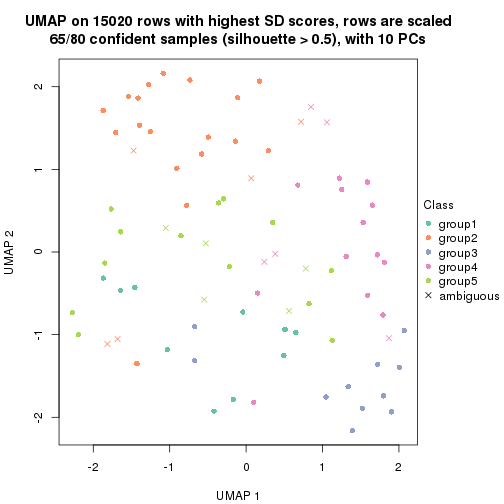
Following heatmap shows how subgroups are split when increasing k:
collect_classes(res)
If matrix rows can be associated to genes, consider to use functional_enrichment(res,
...) to perform function enrichment for the signature genes. See this vignette for more detailed explanations.
The object with results only for a single top-value method and a single partition method can be extracted as:
res = res_list["SD", "skmeans"]
# you can also extract it by
# res = res_list["SD:skmeans"]
A summary of res and all the functions that can be applied to it:
res
#> A 'ConsensusPartition' object with k = 2, 3, 4, 5, 6.
#> On a matrix with 15020 rows and 80 columns.
#> Top rows (1000, 2000, 3000, 4000, 5000) are extracted by 'SD' method.
#> Subgroups are detected by 'skmeans' method.
#> Performed in total 1250 partitions by row resampling.
#> Best k for subgroups seems to be 3.
#>
#> Following methods can be applied to this 'ConsensusPartition' object:
#> [1] "cola_report" "collect_classes" "collect_plots"
#> [4] "collect_stats" "colnames" "compare_signatures"
#> [7] "consensus_heatmap" "dimension_reduction" "functional_enrichment"
#> [10] "get_anno_col" "get_anno" "get_classes"
#> [13] "get_consensus" "get_matrix" "get_membership"
#> [16] "get_param" "get_signatures" "get_stats"
#> [19] "is_best_k" "is_stable_k" "membership_heatmap"
#> [22] "ncol" "nrow" "plot_ecdf"
#> [25] "rownames" "select_partition_number" "show"
#> [28] "suggest_best_k" "test_to_known_factors"
collect_plots() function collects all the plots made from res for all k (number of partitions)
into one single page to provide an easy and fast comparison between different k.
collect_plots(res)

The plots are:
k and the heatmap of
predicted classes for each k.k.k.k.All the plots in panels can be made by individual functions and they are plotted later in this section.
select_partition_number() produces several plots showing different
statistics for choosing “optimized” k. There are following statistics:
k;k, the area increased is defined as \(A_k - A_{k-1}\).The detailed explanations of these statistics can be found in the cola vignette.
Generally speaking, lower PAC score, higher mean silhouette score or higher
concordance corresponds to better partition. Rand index and Jaccard index
measure how similar the current partition is compared to partition with k-1.
If they are too similar, we won't accept k is better than k-1.
select_partition_number(res)

The numeric values for all these statistics can be obtained by get_stats().
get_stats(res)
#> k 1-PAC mean_silhouette concordance area_increased Rand Jaccard
#> 2 2 0.683 0.871 0.941 0.5061 0.494 0.494
#> 3 3 0.826 0.884 0.946 0.3284 0.695 0.458
#> 4 4 0.631 0.638 0.811 0.1121 0.915 0.747
#> 5 5 0.628 0.588 0.765 0.0622 0.918 0.708
#> 6 6 0.619 0.496 0.682 0.0398 0.943 0.757
suggest_best_k() suggests the best \(k\) based on these statistics. The rules are as follows:
suggest_best_k(res)
#> [1] 3
Following shows the table of the partitions (You need to click the show/hide
code output link to see it). The membership matrix (columns with name p*)
is inferred by
clue::cl_consensus()
function with the SE method. Basically the value in the membership matrix
represents the probability to belong to a certain group. The finall class
label for an item is determined with the group with highest probability it
belongs to.
In get_classes() function, the entropy is calculated from the membership
matrix and the silhouette score is calculated from the consensus matrix.
cbind(get_classes(res, k = 2), get_membership(res, k = 2))
#> class entropy silhouette p1 p2
#> SRR1851004 2 0.0000 0.936 0.000 1.000
#> SRR1851003 2 0.0000 0.936 0.000 1.000
#> SRR1851002 2 0.0000 0.936 0.000 1.000
#> SRR1851000 1 0.0000 0.932 1.000 0.000
#> SRR1851001 2 0.0000 0.936 0.000 1.000
#> SRR1850998 2 0.0000 0.936 0.000 1.000
#> SRR1850999 2 0.0000 0.936 0.000 1.000
#> SRR1850997 2 0.0000 0.936 0.000 1.000
#> SRR1850996 1 0.0000 0.932 1.000 0.000
#> SRR1851016 2 0.8386 0.683 0.268 0.732
#> SRR1851010 1 1.0000 0.102 0.500 0.500
#> SRR1851014 1 0.0000 0.932 1.000 0.000
#> SRR1851015 2 0.0000 0.936 0.000 1.000
#> SRR1851013 1 0.0000 0.932 1.000 0.000
#> SRR1851012 1 0.5178 0.843 0.884 0.116
#> SRR1851011 1 0.6048 0.811 0.852 0.148
#> SRR1851009 2 0.0000 0.936 0.000 1.000
#> SRR1851008 1 0.0000 0.932 1.000 0.000
#> SRR1851007 1 0.0000 0.932 1.000 0.000
#> SRR1851006 1 0.9754 0.394 0.592 0.408
#> SRR1851005 1 0.4815 0.854 0.896 0.104
#> SRR1850995 1 0.0376 0.929 0.996 0.004
#> SRR1850994 2 0.8713 0.642 0.292 0.708
#> SRR1850993 1 0.0000 0.932 1.000 0.000
#> SRR1850992 2 0.0000 0.936 0.000 1.000
#> SRR1850991 2 0.4815 0.867 0.104 0.896
#> SRR1850990 1 0.0000 0.932 1.000 0.000
#> SRR1850989 2 0.8144 0.707 0.252 0.748
#> SRR1850987 1 0.8763 0.555 0.704 0.296
#> SRR1850986 1 0.3274 0.885 0.940 0.060
#> SRR1850985 1 0.0000 0.932 1.000 0.000
#> SRR1850983 2 0.0000 0.936 0.000 1.000
#> SRR1850984 2 0.0000 0.936 0.000 1.000
#> SRR1850981 2 0.6712 0.801 0.176 0.824
#> SRR1850980 1 0.0000 0.932 1.000 0.000
#> SRR1850979 1 0.7950 0.655 0.760 0.240
#> SRR1850978 1 0.0000 0.932 1.000 0.000
#> SRR1850977 1 0.0000 0.932 1.000 0.000
#> SRR1850976 1 0.0000 0.932 1.000 0.000
#> SRR1850975 1 0.0000 0.932 1.000 0.000
#> SRR1850974 2 0.0000 0.936 0.000 1.000
#> SRR1850973 2 0.0000 0.936 0.000 1.000
#> SRR1850972 1 0.0000 0.932 1.000 0.000
#> SRR1850970 1 0.7950 0.701 0.760 0.240
#> SRR1850971 1 0.0000 0.932 1.000 0.000
#> SRR1850968 1 0.0000 0.932 1.000 0.000
#> SRR1850969 2 0.0000 0.936 0.000 1.000
#> SRR1850967 1 0.0000 0.932 1.000 0.000
#> SRR1850966 2 0.0000 0.936 0.000 1.000
#> SRR1850965 2 0.0000 0.936 0.000 1.000
#> SRR1850964 2 0.8081 0.713 0.248 0.752
#> SRR1850963 2 0.0000 0.936 0.000 1.000
#> SRR1850962 1 0.0000 0.932 1.000 0.000
#> SRR1850961 1 0.0000 0.932 1.000 0.000
#> SRR1850959 2 0.0672 0.931 0.008 0.992
#> SRR1850960 2 0.0000 0.936 0.000 1.000
#> SRR1850958 2 0.0672 0.931 0.008 0.992
#> SRR1850988 2 0.4298 0.880 0.088 0.912
#> SRR1850957 2 0.0000 0.936 0.000 1.000
#> SRR1850956 2 0.4022 0.889 0.080 0.920
#> SRR1850955 1 0.0000 0.932 1.000 0.000
#> SRR1850953 2 0.6801 0.797 0.180 0.820
#> SRR1850954 2 0.7453 0.763 0.212 0.788
#> SRR1850952 1 0.0000 0.932 1.000 0.000
#> SRR1850982 2 0.0000 0.936 0.000 1.000
#> SRR1850951 1 0.0000 0.932 1.000 0.000
#> SRR1850950 2 0.0000 0.936 0.000 1.000
#> SRR1850949 2 0.0000 0.936 0.000 1.000
#> SRR1850948 1 0.0000 0.932 1.000 0.000
#> SRR1850947 1 0.0000 0.932 1.000 0.000
#> SRR1850946 1 0.8861 0.605 0.696 0.304
#> SRR1850945 2 0.0000 0.936 0.000 1.000
#> SRR1850944 2 0.2778 0.909 0.048 0.952
#> SRR1850943 2 0.0000 0.936 0.000 1.000
#> SRR1850942 1 0.0000 0.932 1.000 0.000
#> SRR1850940 1 0.2778 0.899 0.952 0.048
#> SRR1850941 1 0.0000 0.932 1.000 0.000
#> SRR1850938 2 0.9044 0.479 0.320 0.680
#> SRR1850939 1 0.0000 0.932 1.000 0.000
#> SRR1850937 2 0.0000 0.936 0.000 1.000
cbind(get_classes(res, k = 3), get_membership(res, k = 3))
#> class entropy silhouette p1 p2 p3
#> SRR1851004 2 0.0000 0.986 0.000 1.000 0.000
#> SRR1851003 2 0.0000 0.986 0.000 1.000 0.000
#> SRR1851002 2 0.0000 0.986 0.000 1.000 0.000
#> SRR1851000 1 0.0892 0.931 0.980 0.000 0.020
#> SRR1851001 2 0.0000 0.986 0.000 1.000 0.000
#> SRR1850998 2 0.0000 0.986 0.000 1.000 0.000
#> SRR1850999 2 0.1411 0.956 0.000 0.964 0.036
#> SRR1850997 2 0.0000 0.986 0.000 1.000 0.000
#> SRR1850996 3 0.1753 0.866 0.048 0.000 0.952
#> SRR1851016 1 0.0000 0.942 1.000 0.000 0.000
#> SRR1851010 3 0.4504 0.756 0.000 0.196 0.804
#> SRR1851014 1 0.2261 0.891 0.932 0.000 0.068
#> SRR1851015 2 0.0000 0.986 0.000 1.000 0.000
#> SRR1851013 1 0.1411 0.919 0.964 0.000 0.036
#> SRR1851012 3 0.0237 0.892 0.000 0.004 0.996
#> SRR1851011 3 0.0424 0.891 0.000 0.008 0.992
#> SRR1851009 2 0.0000 0.986 0.000 1.000 0.000
#> SRR1851008 3 0.0424 0.891 0.008 0.000 0.992
#> SRR1851007 3 0.5678 0.527 0.316 0.000 0.684
#> SRR1851006 3 0.2356 0.858 0.000 0.072 0.928
#> SRR1851005 3 0.0000 0.892 0.000 0.000 1.000
#> SRR1850995 3 0.4634 0.756 0.164 0.012 0.824
#> SRR1850994 1 0.0424 0.938 0.992 0.000 0.008
#> SRR1850993 1 0.0000 0.942 1.000 0.000 0.000
#> SRR1850992 2 0.0000 0.986 0.000 1.000 0.000
#> SRR1850991 1 0.0000 0.942 1.000 0.000 0.000
#> SRR1850990 1 0.0000 0.942 1.000 0.000 0.000
#> SRR1850989 1 0.0000 0.942 1.000 0.000 0.000
#> SRR1850987 1 0.0000 0.942 1.000 0.000 0.000
#> SRR1850986 1 0.0000 0.942 1.000 0.000 0.000
#> SRR1850985 1 0.0237 0.940 0.996 0.000 0.004
#> SRR1850983 2 0.0000 0.986 0.000 1.000 0.000
#> SRR1850984 2 0.0000 0.986 0.000 1.000 0.000
#> SRR1850981 1 0.0000 0.942 1.000 0.000 0.000
#> SRR1850980 1 0.0000 0.942 1.000 0.000 0.000
#> SRR1850979 1 0.0000 0.942 1.000 0.000 0.000
#> SRR1850978 1 0.0000 0.942 1.000 0.000 0.000
#> SRR1850977 1 0.0237 0.940 0.996 0.000 0.004
#> SRR1850976 3 0.0424 0.891 0.008 0.000 0.992
#> SRR1850975 3 0.0424 0.891 0.008 0.000 0.992
#> SRR1850974 2 0.0000 0.986 0.000 1.000 0.000
#> SRR1850973 2 0.0000 0.986 0.000 1.000 0.000
#> SRR1850972 1 0.0000 0.942 1.000 0.000 0.000
#> SRR1850970 3 0.1163 0.883 0.000 0.028 0.972
#> SRR1850971 1 0.0424 0.938 0.992 0.000 0.008
#> SRR1850968 3 0.0424 0.891 0.008 0.000 0.992
#> SRR1850969 2 0.0000 0.986 0.000 1.000 0.000
#> SRR1850967 3 0.0424 0.891 0.008 0.000 0.992
#> SRR1850966 2 0.0000 0.986 0.000 1.000 0.000
#> SRR1850965 2 0.0000 0.986 0.000 1.000 0.000
#> SRR1850964 1 0.0000 0.942 1.000 0.000 0.000
#> SRR1850963 2 0.0000 0.986 0.000 1.000 0.000
#> SRR1850962 3 0.0000 0.892 0.000 0.000 1.000
#> SRR1850961 3 0.0000 0.892 0.000 0.000 1.000
#> SRR1850959 2 0.4994 0.825 0.112 0.836 0.052
#> SRR1850960 2 0.0237 0.983 0.004 0.996 0.000
#> SRR1850958 2 0.3454 0.878 0.104 0.888 0.008
#> SRR1850988 1 0.1031 0.926 0.976 0.024 0.000
#> SRR1850957 2 0.0237 0.983 0.004 0.996 0.000
#> SRR1850956 3 0.9877 0.201 0.276 0.316 0.408
#> SRR1850955 1 0.6252 0.201 0.556 0.000 0.444
#> SRR1850953 1 0.5860 0.693 0.748 0.228 0.024
#> SRR1850954 1 0.6714 0.719 0.748 0.112 0.140
#> SRR1850952 1 0.4654 0.722 0.792 0.000 0.208
#> SRR1850982 2 0.0000 0.986 0.000 1.000 0.000
#> SRR1850951 3 0.5291 0.604 0.268 0.000 0.732
#> SRR1850950 2 0.1031 0.967 0.000 0.976 0.024
#> SRR1850949 2 0.1031 0.967 0.000 0.976 0.024
#> SRR1850948 3 0.0000 0.892 0.000 0.000 1.000
#> SRR1850947 3 0.0000 0.892 0.000 0.000 1.000
#> SRR1850946 3 0.4291 0.772 0.000 0.180 0.820
#> SRR1850945 2 0.0000 0.986 0.000 1.000 0.000
#> SRR1850944 3 0.7570 0.315 0.044 0.404 0.552
#> SRR1850943 2 0.0000 0.986 0.000 1.000 0.000
#> SRR1850942 3 0.0000 0.892 0.000 0.000 1.000
#> SRR1850940 3 0.0000 0.892 0.000 0.000 1.000
#> SRR1850941 3 0.0000 0.892 0.000 0.000 1.000
#> SRR1850938 3 0.5465 0.628 0.000 0.288 0.712
#> SRR1850939 3 0.0000 0.892 0.000 0.000 1.000
#> SRR1850937 2 0.0000 0.986 0.000 1.000 0.000
cbind(get_classes(res, k = 4), get_membership(res, k = 4))
#> class entropy silhouette p1 p2 p3 p4
#> SRR1851004 2 0.0779 0.8747 0.004 0.980 0.016 0.000
#> SRR1851003 2 0.0000 0.8739 0.000 1.000 0.000 0.000
#> SRR1851002 2 0.2081 0.8546 0.000 0.916 0.084 0.000
#> SRR1851000 1 0.4231 0.7764 0.824 0.000 0.096 0.080
#> SRR1851001 2 0.0336 0.8746 0.000 0.992 0.008 0.000
#> SRR1850998 2 0.0188 0.8746 0.000 0.996 0.004 0.000
#> SRR1850999 2 0.8329 0.4860 0.084 0.540 0.136 0.240
#> SRR1850997 2 0.0188 0.8746 0.000 0.996 0.004 0.000
#> SRR1850996 3 0.5022 0.5173 0.028 0.000 0.708 0.264
#> SRR1851016 1 0.1398 0.8552 0.956 0.000 0.040 0.004
#> SRR1851010 4 0.3994 0.5753 0.008 0.088 0.056 0.848
#> SRR1851014 1 0.4655 0.6872 0.760 0.000 0.032 0.208
#> SRR1851015 2 0.1369 0.8736 0.016 0.964 0.016 0.004
#> SRR1851013 1 0.4105 0.7483 0.812 0.000 0.032 0.156
#> SRR1851012 4 0.0000 0.6718 0.000 0.000 0.000 1.000
#> SRR1851011 4 0.0000 0.6718 0.000 0.000 0.000 1.000
#> SRR1851009 2 0.0592 0.8751 0.000 0.984 0.016 0.000
#> SRR1851008 4 0.1798 0.6521 0.040 0.000 0.016 0.944
#> SRR1851007 4 0.5233 0.2873 0.332 0.000 0.020 0.648
#> SRR1851006 4 0.1890 0.6447 0.000 0.056 0.008 0.936
#> SRR1851005 4 0.0336 0.6718 0.000 0.000 0.008 0.992
#> SRR1850995 3 0.5295 0.5852 0.064 0.012 0.760 0.164
#> SRR1850994 1 0.5268 0.4788 0.540 0.008 0.452 0.000
#> SRR1850993 1 0.2921 0.8334 0.860 0.000 0.140 0.000
#> SRR1850992 2 0.3280 0.8294 0.016 0.860 0.124 0.000
#> SRR1850991 1 0.4098 0.7938 0.784 0.012 0.204 0.000
#> SRR1850990 1 0.1637 0.8555 0.940 0.000 0.060 0.000
#> SRR1850989 1 0.1716 0.8552 0.936 0.000 0.064 0.000
#> SRR1850987 1 0.5610 0.6695 0.668 0.008 0.292 0.032
#> SRR1850986 1 0.2704 0.8423 0.876 0.000 0.124 0.000
#> SRR1850985 1 0.2530 0.8435 0.888 0.000 0.112 0.000
#> SRR1850983 2 0.0469 0.8750 0.000 0.988 0.012 0.000
#> SRR1850984 2 0.0895 0.8745 0.000 0.976 0.020 0.004
#> SRR1850981 1 0.3873 0.7985 0.772 0.000 0.228 0.000
#> SRR1850980 1 0.1767 0.8514 0.944 0.000 0.044 0.012
#> SRR1850979 1 0.2563 0.8411 0.908 0.000 0.072 0.020
#> SRR1850978 1 0.2345 0.8473 0.900 0.000 0.100 0.000
#> SRR1850977 1 0.2530 0.8466 0.896 0.000 0.100 0.004
#> SRR1850976 4 0.3032 0.6156 0.008 0.000 0.124 0.868
#> SRR1850975 4 0.2342 0.6484 0.008 0.000 0.080 0.912
#> SRR1850974 2 0.3196 0.7857 0.000 0.856 0.008 0.136
#> SRR1850973 2 0.0188 0.8740 0.000 0.996 0.004 0.000
#> SRR1850972 1 0.1356 0.8502 0.960 0.000 0.032 0.008
#> SRR1850970 4 0.1837 0.6651 0.000 0.028 0.028 0.944
#> SRR1850971 1 0.1356 0.8502 0.960 0.000 0.032 0.008
#> SRR1850968 4 0.0376 0.6720 0.004 0.000 0.004 0.992
#> SRR1850969 2 0.0188 0.8746 0.000 0.996 0.004 0.000
#> SRR1850967 4 0.0376 0.6720 0.004 0.000 0.004 0.992
#> SRR1850966 2 0.1211 0.8700 0.000 0.960 0.040 0.000
#> SRR1850965 2 0.0188 0.8746 0.000 0.996 0.004 0.000
#> SRR1850964 1 0.3074 0.8370 0.848 0.000 0.152 0.000
#> SRR1850963 2 0.2256 0.8615 0.020 0.924 0.056 0.000
#> SRR1850962 4 0.5000 -0.1754 0.000 0.000 0.496 0.504
#> SRR1850961 4 0.5000 -0.1754 0.000 0.000 0.496 0.504
#> SRR1850959 2 0.9671 0.2359 0.228 0.380 0.220 0.172
#> SRR1850960 2 0.5763 0.6965 0.096 0.700 0.204 0.000
#> SRR1850958 2 0.7045 0.5503 0.176 0.616 0.196 0.012
#> SRR1850988 1 0.6357 0.6232 0.636 0.060 0.288 0.016
#> SRR1850957 2 0.2530 0.8439 0.004 0.896 0.100 0.000
#> SRR1850956 3 0.1985 0.5948 0.020 0.012 0.944 0.024
#> SRR1850955 3 0.3051 0.6118 0.088 0.000 0.884 0.028
#> SRR1850953 3 0.4893 0.4890 0.168 0.064 0.768 0.000
#> SRR1850954 3 0.3684 0.5838 0.132 0.020 0.844 0.004
#> SRR1850952 3 0.4405 0.5987 0.152 0.000 0.800 0.048
#> SRR1850982 2 0.2593 0.8509 0.016 0.904 0.080 0.000
#> SRR1850951 3 0.6439 0.4042 0.084 0.000 0.576 0.340
#> SRR1850950 2 0.5352 0.4163 0.000 0.596 0.016 0.388
#> SRR1850949 2 0.5326 0.4323 0.000 0.604 0.016 0.380
#> SRR1850948 3 0.5000 0.0738 0.000 0.000 0.504 0.496
#> SRR1850947 3 0.5000 0.0655 0.000 0.000 0.500 0.500
#> SRR1850946 4 0.5993 0.4607 0.000 0.148 0.160 0.692
#> SRR1850945 2 0.0376 0.8735 0.000 0.992 0.004 0.004
#> SRR1850944 3 0.7835 0.3047 0.076 0.104 0.584 0.236
#> SRR1850943 2 0.3605 0.8307 0.044 0.864 0.088 0.004
#> SRR1850942 3 0.5000 0.0603 0.000 0.000 0.500 0.500
#> SRR1850940 4 0.4898 0.0814 0.000 0.000 0.416 0.584
#> SRR1850941 4 0.5000 -0.1840 0.000 0.000 0.500 0.500
#> SRR1850938 4 0.7244 0.2742 0.000 0.244 0.212 0.544
#> SRR1850939 4 0.4907 0.0690 0.000 0.000 0.420 0.580
#> SRR1850937 2 0.1398 0.8719 0.004 0.956 0.040 0.000
cbind(get_classes(res, k = 5), get_membership(res, k = 5))
#> class entropy silhouette p1 p2 p3 p4 p5
#> SRR1851004 2 0.2416 0.7477 0.000 0.888 0.012 0.000 0.100
#> SRR1851003 2 0.0865 0.7688 0.000 0.972 0.004 0.000 0.024
#> SRR1851002 2 0.2912 0.7483 0.000 0.876 0.028 0.008 0.088
#> SRR1851000 1 0.5817 0.2716 0.516 0.000 0.012 0.064 0.408
#> SRR1851001 2 0.2026 0.7649 0.000 0.924 0.008 0.012 0.056
#> SRR1850998 2 0.0880 0.7695 0.000 0.968 0.000 0.000 0.032
#> SRR1850999 5 0.6746 0.4638 0.012 0.260 0.012 0.168 0.548
#> SRR1850997 2 0.0794 0.7687 0.000 0.972 0.000 0.000 0.028
#> SRR1850996 3 0.2770 0.6453 0.016 0.000 0.888 0.076 0.020
#> SRR1851016 1 0.2077 0.7584 0.908 0.000 0.008 0.000 0.084
#> SRR1851010 4 0.5640 0.4931 0.004 0.088 0.020 0.676 0.212
#> SRR1851014 1 0.6202 0.4166 0.572 0.004 0.000 0.228 0.196
#> SRR1851015 2 0.2488 0.7493 0.004 0.872 0.000 0.000 0.124
#> SRR1851013 1 0.5981 0.4536 0.588 0.000 0.000 0.196 0.216
#> SRR1851012 4 0.1701 0.7341 0.000 0.000 0.048 0.936 0.016
#> SRR1851011 4 0.1885 0.7333 0.004 0.000 0.044 0.932 0.020
#> SRR1851009 2 0.1608 0.7660 0.000 0.928 0.000 0.000 0.072
#> SRR1851008 4 0.4308 0.6811 0.056 0.000 0.088 0.808 0.048
#> SRR1851007 4 0.5589 0.3953 0.248 0.000 0.012 0.648 0.092
#> SRR1851006 4 0.1869 0.7179 0.000 0.028 0.008 0.936 0.028
#> SRR1851005 4 0.2416 0.7189 0.000 0.000 0.100 0.888 0.012
#> SRR1850995 3 0.4015 0.6161 0.056 0.000 0.828 0.048 0.068
#> SRR1850994 1 0.6287 0.3653 0.552 0.004 0.260 0.000 0.184
#> SRR1850993 1 0.1774 0.7558 0.932 0.000 0.052 0.000 0.016
#> SRR1850992 2 0.4454 0.5533 0.008 0.704 0.020 0.000 0.268
#> SRR1850991 1 0.5870 0.4109 0.600 0.044 0.044 0.000 0.312
#> SRR1850990 1 0.1485 0.7631 0.948 0.000 0.020 0.000 0.032
#> SRR1850989 1 0.2046 0.7577 0.916 0.000 0.016 0.000 0.068
#> SRR1850987 5 0.4848 0.3270 0.260 0.004 0.024 0.016 0.696
#> SRR1850986 1 0.1741 0.7574 0.936 0.000 0.040 0.000 0.024
#> SRR1850985 1 0.1549 0.7628 0.944 0.000 0.040 0.000 0.016
#> SRR1850983 2 0.1043 0.7686 0.000 0.960 0.000 0.000 0.040
#> SRR1850984 2 0.2919 0.7424 0.000 0.868 0.004 0.024 0.104
#> SRR1850981 1 0.5138 0.5839 0.684 0.000 0.084 0.004 0.228
#> SRR1850980 1 0.3128 0.7077 0.824 0.000 0.004 0.004 0.168
#> SRR1850979 1 0.5033 0.6112 0.692 0.008 0.024 0.020 0.256
#> SRR1850978 1 0.0693 0.7644 0.980 0.000 0.008 0.000 0.012
#> SRR1850977 1 0.1403 0.7635 0.952 0.000 0.024 0.000 0.024
#> SRR1850976 4 0.4635 0.5701 0.012 0.000 0.220 0.728 0.040
#> SRR1850975 4 0.4884 0.6324 0.020 0.004 0.168 0.748 0.060
#> SRR1850974 2 0.4890 0.5395 0.000 0.708 0.004 0.216 0.072
#> SRR1850973 2 0.1012 0.7676 0.000 0.968 0.000 0.012 0.020
#> SRR1850972 1 0.2124 0.7433 0.900 0.000 0.000 0.004 0.096
#> SRR1850970 4 0.4395 0.6482 0.000 0.044 0.144 0.784 0.028
#> SRR1850971 1 0.2629 0.7365 0.880 0.000 0.004 0.012 0.104
#> SRR1850968 4 0.2437 0.7299 0.004 0.000 0.060 0.904 0.032
#> SRR1850969 2 0.1124 0.7707 0.000 0.960 0.004 0.000 0.036
#> SRR1850967 4 0.2381 0.7319 0.004 0.000 0.052 0.908 0.036
#> SRR1850966 2 0.2972 0.7451 0.004 0.872 0.040 0.000 0.084
#> SRR1850965 2 0.1757 0.7673 0.000 0.936 0.012 0.004 0.048
#> SRR1850964 1 0.4252 0.6699 0.764 0.000 0.064 0.000 0.172
#> SRR1850963 2 0.3594 0.7006 0.004 0.804 0.012 0.004 0.176
#> SRR1850962 3 0.3661 0.6482 0.000 0.000 0.724 0.276 0.000
#> SRR1850961 3 0.3661 0.6482 0.000 0.000 0.724 0.276 0.000
#> SRR1850959 5 0.6566 0.5811 0.056 0.200 0.016 0.092 0.636
#> SRR1850960 5 0.5478 0.2382 0.028 0.388 0.024 0.000 0.560
#> SRR1850958 2 0.7891 -0.0859 0.144 0.456 0.092 0.012 0.296
#> SRR1850988 5 0.4695 0.4805 0.184 0.044 0.024 0.000 0.748
#> SRR1850957 2 0.4774 0.5049 0.004 0.688 0.044 0.000 0.264
#> SRR1850956 3 0.4506 0.4273 0.036 0.004 0.716 0.000 0.244
#> SRR1850955 3 0.4046 0.5609 0.068 0.000 0.804 0.008 0.120
#> SRR1850953 3 0.7831 0.0247 0.160 0.076 0.480 0.016 0.268
#> SRR1850954 3 0.6269 0.3329 0.124 0.012 0.632 0.020 0.212
#> SRR1850952 3 0.3810 0.5843 0.084 0.000 0.828 0.012 0.076
#> SRR1850982 2 0.4406 0.6546 0.004 0.752 0.040 0.004 0.200
#> SRR1850951 3 0.4465 0.6531 0.056 0.000 0.732 0.212 0.000
#> SRR1850950 2 0.6493 0.0941 0.000 0.436 0.008 0.412 0.144
#> SRR1850949 2 0.6489 0.1139 0.000 0.444 0.008 0.404 0.144
#> SRR1850948 3 0.3612 0.6534 0.000 0.000 0.732 0.268 0.000
#> SRR1850947 3 0.3612 0.6534 0.000 0.000 0.732 0.268 0.000
#> SRR1850946 4 0.7737 0.2064 0.000 0.168 0.280 0.452 0.100
#> SRR1850945 2 0.3854 0.6936 0.000 0.828 0.016 0.076 0.080
#> SRR1850944 5 0.8006 0.3494 0.060 0.068 0.216 0.132 0.524
#> SRR1850943 2 0.4991 0.5364 0.028 0.668 0.012 0.004 0.288
#> SRR1850942 3 0.3885 0.6492 0.000 0.000 0.724 0.268 0.008
#> SRR1850940 3 0.5026 0.4634 0.000 0.000 0.588 0.372 0.040
#> SRR1850941 3 0.3885 0.6492 0.000 0.000 0.724 0.268 0.008
#> SRR1850938 4 0.8155 0.1777 0.000 0.200 0.148 0.412 0.240
#> SRR1850939 3 0.4921 0.5222 0.000 0.000 0.620 0.340 0.040
#> SRR1850937 2 0.3044 0.7326 0.000 0.840 0.008 0.004 0.148
cbind(get_classes(res, k = 6), get_membership(res, k = 6))
#> class entropy silhouette p1 p2 p3 p4 p5 p6
#> SRR1851004 2 0.4830 0.6707 0.032 0.760 0.000 0.048 0.096 0.064
#> SRR1851003 2 0.1737 0.7432 0.000 0.932 0.000 0.008 0.040 0.020
#> SRR1851002 2 0.3930 0.6833 0.000 0.744 0.000 0.012 0.216 0.028
#> SRR1851000 6 0.6426 -0.0624 0.372 0.004 0.004 0.100 0.052 0.468
#> SRR1851001 2 0.3542 0.7104 0.000 0.796 0.000 0.020 0.164 0.020
#> SRR1850998 2 0.1116 0.7460 0.000 0.960 0.000 0.008 0.004 0.028
#> SRR1850999 6 0.7222 0.4100 0.012 0.216 0.008 0.168 0.096 0.500
#> SRR1850997 2 0.0777 0.7467 0.000 0.972 0.000 0.000 0.004 0.024
#> SRR1850996 3 0.3861 0.5211 0.016 0.000 0.768 0.012 0.192 0.012
#> SRR1851016 1 0.3251 0.6547 0.844 0.000 0.000 0.028 0.036 0.092
#> SRR1851010 4 0.7054 0.3940 0.000 0.080 0.104 0.576 0.124 0.116
#> SRR1851014 1 0.7061 0.1656 0.364 0.000 0.012 0.324 0.040 0.260
#> SRR1851015 2 0.3740 0.7130 0.000 0.808 0.000 0.020 0.072 0.100
#> SRR1851013 1 0.6819 0.2140 0.396 0.000 0.004 0.296 0.036 0.268
#> SRR1851012 4 0.4299 0.5819 0.004 0.000 0.264 0.696 0.020 0.016
#> SRR1851011 4 0.4422 0.5888 0.004 0.000 0.244 0.704 0.024 0.024
#> SRR1851009 2 0.1313 0.7462 0.000 0.952 0.000 0.016 0.004 0.028
#> SRR1851008 4 0.6558 0.5106 0.092 0.000 0.260 0.556 0.032 0.060
#> SRR1851007 4 0.6690 0.2608 0.232 0.000 0.072 0.560 0.032 0.104
#> SRR1851006 4 0.3911 0.5864 0.000 0.036 0.132 0.796 0.032 0.004
#> SRR1851005 4 0.4450 0.5382 0.000 0.000 0.336 0.628 0.028 0.008
#> SRR1850995 3 0.5879 0.2403 0.048 0.000 0.600 0.028 0.276 0.048
#> SRR1850994 5 0.5976 0.1515 0.416 0.000 0.048 0.000 0.456 0.080
#> SRR1850993 1 0.2255 0.6296 0.892 0.000 0.016 0.000 0.088 0.004
#> SRR1850992 2 0.5673 0.4873 0.020 0.620 0.000 0.012 0.116 0.232
#> SRR1850991 1 0.6413 0.2750 0.528 0.032 0.000 0.016 0.144 0.280
#> SRR1850990 1 0.2916 0.6427 0.864 0.000 0.000 0.012 0.052 0.072
#> SRR1850989 1 0.3142 0.6431 0.848 0.000 0.000 0.016 0.044 0.092
#> SRR1850987 6 0.4903 0.4543 0.128 0.012 0.016 0.024 0.072 0.748
#> SRR1850986 1 0.2163 0.6306 0.892 0.000 0.000 0.000 0.092 0.016
#> SRR1850985 1 0.1793 0.6590 0.932 0.000 0.008 0.004 0.040 0.016
#> SRR1850983 2 0.1148 0.7461 0.000 0.960 0.000 0.016 0.004 0.020
#> SRR1850984 2 0.3982 0.6956 0.000 0.800 0.000 0.072 0.044 0.084
#> SRR1850981 1 0.5631 0.3257 0.576 0.008 0.000 0.000 0.220 0.196
#> SRR1850980 1 0.4934 0.5641 0.648 0.000 0.000 0.032 0.044 0.276
#> SRR1850979 1 0.6294 0.3068 0.440 0.016 0.000 0.052 0.068 0.424
#> SRR1850978 1 0.3103 0.6662 0.856 0.000 0.000 0.024 0.044 0.076
#> SRR1850977 1 0.3837 0.6586 0.824 0.000 0.028 0.028 0.036 0.084
#> SRR1850976 4 0.5541 0.3518 0.008 0.000 0.440 0.476 0.056 0.020
#> SRR1850975 4 0.6345 0.4992 0.012 0.000 0.292 0.540 0.100 0.056
#> SRR1850974 2 0.5418 0.5028 0.000 0.644 0.004 0.236 0.076 0.040
#> SRR1850973 2 0.1536 0.7470 0.000 0.944 0.000 0.012 0.020 0.024
#> SRR1850972 1 0.3851 0.6465 0.780 0.000 0.000 0.032 0.024 0.164
#> SRR1850970 4 0.6417 0.4257 0.000 0.048 0.360 0.496 0.060 0.036
#> SRR1850971 1 0.4340 0.6220 0.740 0.000 0.000 0.052 0.024 0.184
#> SRR1850968 4 0.3982 0.5864 0.000 0.000 0.280 0.696 0.016 0.008
#> SRR1850969 2 0.2209 0.7456 0.000 0.904 0.000 0.004 0.052 0.040
#> SRR1850967 4 0.4161 0.6001 0.004 0.000 0.240 0.720 0.020 0.016
#> SRR1850966 2 0.4744 0.6823 0.012 0.732 0.000 0.028 0.168 0.060
#> SRR1850965 2 0.3789 0.7165 0.004 0.804 0.000 0.024 0.128 0.040
#> SRR1850964 1 0.4997 0.5032 0.688 0.004 0.000 0.012 0.168 0.128
#> SRR1850963 2 0.5230 0.6185 0.012 0.684 0.000 0.016 0.148 0.140
#> SRR1850962 3 0.0909 0.7167 0.000 0.000 0.968 0.020 0.012 0.000
#> SRR1850961 3 0.0909 0.7167 0.000 0.000 0.968 0.020 0.012 0.000
#> SRR1850959 6 0.6546 0.4330 0.016 0.168 0.000 0.120 0.108 0.588
#> SRR1850960 6 0.6120 0.2329 0.016 0.320 0.000 0.012 0.136 0.516
#> SRR1850958 2 0.8618 -0.1111 0.160 0.336 0.004 0.088 0.184 0.228
#> SRR1850988 6 0.4531 0.4573 0.080 0.032 0.004 0.004 0.116 0.764
#> SRR1850957 2 0.6394 0.4953 0.020 0.592 0.000 0.056 0.156 0.176
#> SRR1850956 5 0.6144 0.2397 0.012 0.012 0.376 0.020 0.500 0.080
#> SRR1850955 3 0.5896 -0.1178 0.032 0.000 0.496 0.020 0.400 0.052
#> SRR1850953 5 0.6148 0.5912 0.144 0.036 0.148 0.004 0.636 0.032
#> SRR1850954 5 0.5641 0.6153 0.124 0.004 0.224 0.004 0.624 0.020
#> SRR1850952 3 0.5162 0.0318 0.092 0.000 0.576 0.004 0.328 0.000
#> SRR1850982 2 0.5317 0.5909 0.016 0.648 0.000 0.004 0.212 0.120
#> SRR1850951 3 0.2653 0.6441 0.064 0.000 0.876 0.004 0.056 0.000
#> SRR1850950 4 0.6749 0.0922 0.000 0.340 0.000 0.424 0.172 0.064
#> SRR1850949 4 0.6723 0.0472 0.000 0.356 0.000 0.412 0.172 0.060
#> SRR1850948 3 0.0146 0.7201 0.000 0.000 0.996 0.004 0.000 0.000
#> SRR1850947 3 0.0291 0.7193 0.000 0.000 0.992 0.004 0.004 0.000
#> SRR1850946 3 0.8009 -0.1813 0.000 0.156 0.368 0.276 0.160 0.040
#> SRR1850945 2 0.4673 0.6632 0.000 0.744 0.008 0.100 0.124 0.024
#> SRR1850944 6 0.8711 0.1948 0.032 0.064 0.164 0.140 0.224 0.376
#> SRR1850943 2 0.7045 0.2808 0.048 0.500 0.000 0.048 0.136 0.268
#> SRR1850942 3 0.0603 0.7203 0.000 0.000 0.980 0.004 0.016 0.000
#> SRR1850940 3 0.3997 0.5407 0.000 0.000 0.780 0.140 0.060 0.020
#> SRR1850941 3 0.0603 0.7203 0.000 0.000 0.980 0.004 0.016 0.000
#> SRR1850938 4 0.8516 0.2211 0.000 0.116 0.248 0.332 0.188 0.116
#> SRR1850939 3 0.3427 0.6000 0.000 0.000 0.828 0.100 0.056 0.016
#> SRR1850937 2 0.4520 0.6591 0.000 0.716 0.000 0.004 0.156 0.124
Heatmaps for the consensus matrix. It visualizes the probability of two samples to be in a same group.
consensus_heatmap(res, k = 2)
consensus_heatmap(res, k = 3)
consensus_heatmap(res, k = 4)
consensus_heatmap(res, k = 5)
consensus_heatmap(res, k = 6)
Heatmaps for the membership of samples in all partitions to see how consistent they are:
membership_heatmap(res, k = 2)
membership_heatmap(res, k = 3)
membership_heatmap(res, k = 4)
membership_heatmap(res, k = 5)

membership_heatmap(res, k = 6)
As soon as we have had the classes for columns, we can look for signatures which are significantly different between classes which can be candidate marks for certain classes. Following are the heatmaps for signatures.
Signature heatmaps where rows are scaled:
get_signatures(res, k = 2)
get_signatures(res, k = 3)
get_signatures(res, k = 4)
get_signatures(res, k = 5)
get_signatures(res, k = 6)
Signature heatmaps where rows are not scaled:
get_signatures(res, k = 2, scale_rows = FALSE)
get_signatures(res, k = 3, scale_rows = FALSE)
get_signatures(res, k = 4, scale_rows = FALSE)
get_signatures(res, k = 5, scale_rows = FALSE)
get_signatures(res, k = 6, scale_rows = FALSE)
Compare the overlap of signatures from different k:
compare_signatures(res)
get_signature() returns a data frame invisibly. TO get the list of signatures, the function
call should be assigned to a variable explicitly. In following code, if plot argument is set
to FALSE, no heatmap is plotted while only the differential analysis is performed.
# code only for demonstration
tb = get_signature(res, k = ..., plot = FALSE)
An example of the output of tb is:
#> which_row fdr mean_1 mean_2 scaled_mean_1 scaled_mean_2 km
#> 1 38 0.042760348 8.373488 9.131774 -0.5533452 0.5164555 1
#> 2 40 0.018707592 7.106213 8.469186 -0.6173731 0.5762149 1
#> 3 55 0.019134737 10.221463 11.207825 -0.6159697 0.5749050 1
#> 4 59 0.006059896 5.921854 7.869574 -0.6899429 0.6439467 1
#> 5 60 0.018055526 8.928898 10.211722 -0.6204761 0.5791110 1
#> 6 98 0.009384629 15.714769 14.887706 0.6635654 -0.6193277 2
...
The columns in tb are:
which_row: row indices corresponding to the input matrix.fdr: FDR for the differential test. mean_x: The mean value in group x.scaled_mean_x: The mean value in group x after rows are scaled.km: Row groups if k-means clustering is applied to rows.UMAP plot which shows how samples are separated.
dimension_reduction(res, k = 2, method = "UMAP")
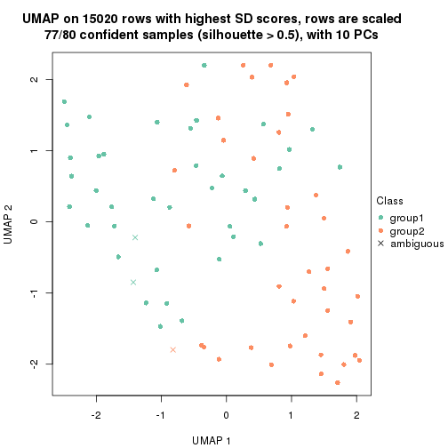
dimension_reduction(res, k = 3, method = "UMAP")
dimension_reduction(res, k = 4, method = "UMAP")
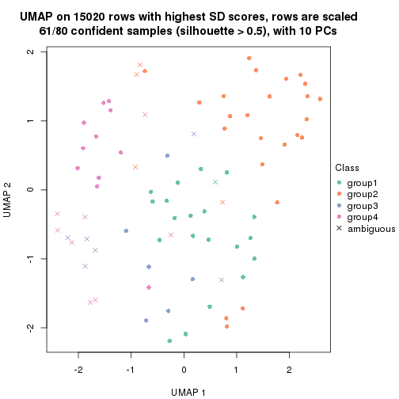
dimension_reduction(res, k = 5, method = "UMAP")
dimension_reduction(res, k = 6, method = "UMAP")
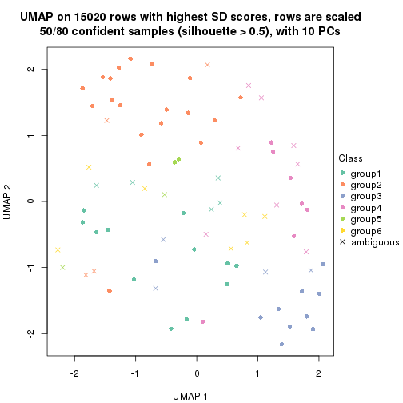
Following heatmap shows how subgroups are split when increasing k:
collect_classes(res)
If matrix rows can be associated to genes, consider to use functional_enrichment(res,
...) to perform function enrichment for the signature genes. See this vignette for more detailed explanations.
The object with results only for a single top-value method and a single partition method can be extracted as:
res = res_list["SD", "pam"]
# you can also extract it by
# res = res_list["SD:pam"]
A summary of res and all the functions that can be applied to it:
res
#> A 'ConsensusPartition' object with k = 2, 3, 4, 5, 6.
#> On a matrix with 15020 rows and 80 columns.
#> Top rows (1000, 2000, 3000, 4000, 5000) are extracted by 'SD' method.
#> Subgroups are detected by 'pam' method.
#> Performed in total 1250 partitions by row resampling.
#> Best k for subgroups seems to be 3.
#>
#> Following methods can be applied to this 'ConsensusPartition' object:
#> [1] "cola_report" "collect_classes" "collect_plots"
#> [4] "collect_stats" "colnames" "compare_signatures"
#> [7] "consensus_heatmap" "dimension_reduction" "functional_enrichment"
#> [10] "get_anno_col" "get_anno" "get_classes"
#> [13] "get_consensus" "get_matrix" "get_membership"
#> [16] "get_param" "get_signatures" "get_stats"
#> [19] "is_best_k" "is_stable_k" "membership_heatmap"
#> [22] "ncol" "nrow" "plot_ecdf"
#> [25] "rownames" "select_partition_number" "show"
#> [28] "suggest_best_k" "test_to_known_factors"
collect_plots() function collects all the plots made from res for all k (number of partitions)
into one single page to provide an easy and fast comparison between different k.
collect_plots(res)
The plots are:
k and the heatmap of
predicted classes for each k.k.k.k.All the plots in panels can be made by individual functions and they are plotted later in this section.
select_partition_number() produces several plots showing different
statistics for choosing “optimized” k. There are following statistics:
k;k, the area increased is defined as \(A_k - A_{k-1}\).The detailed explanations of these statistics can be found in the cola vignette.
Generally speaking, lower PAC score, higher mean silhouette score or higher
concordance corresponds to better partition. Rand index and Jaccard index
measure how similar the current partition is compared to partition with k-1.
If they are too similar, we won't accept k is better than k-1.
select_partition_number(res)
The numeric values for all these statistics can be obtained by get_stats().
get_stats(res)
#> k 1-PAC mean_silhouette concordance area_increased Rand Jaccard
#> 2 2 0.549 0.822 0.914 0.4960 0.505 0.505
#> 3 3 0.762 0.845 0.927 0.3317 0.803 0.620
#> 4 4 0.805 0.848 0.915 0.0891 0.933 0.807
#> 5 5 0.797 0.795 0.886 0.0731 0.920 0.732
#> 6 6 0.832 0.814 0.895 0.0374 0.959 0.823
suggest_best_k() suggests the best \(k\) based on these statistics. The rules are as follows:
suggest_best_k(res)
#> [1] 3
Following shows the table of the partitions (You need to click the show/hide
code output link to see it). The membership matrix (columns with name p*)
is inferred by
clue::cl_consensus()
function with the SE method. Basically the value in the membership matrix
represents the probability to belong to a certain group. The finall class
label for an item is determined with the group with highest probability it
belongs to.
In get_classes() function, the entropy is calculated from the membership
matrix and the silhouette score is calculated from the consensus matrix.
cbind(get_classes(res, k = 2), get_membership(res, k = 2))
#> class entropy silhouette p1 p2
#> SRR1851004 2 0.0000 0.9413 0.000 1.000
#> SRR1851003 2 0.0000 0.9413 0.000 1.000
#> SRR1851002 2 0.0000 0.9413 0.000 1.000
#> SRR1851000 1 0.8207 0.7234 0.744 0.256
#> SRR1851001 2 0.0000 0.9413 0.000 1.000
#> SRR1850998 2 0.0000 0.9413 0.000 1.000
#> SRR1850999 2 0.3733 0.8734 0.072 0.928
#> SRR1850997 2 0.0000 0.9413 0.000 1.000
#> SRR1850996 1 0.0000 0.8736 1.000 0.000
#> SRR1851016 1 0.9732 0.5027 0.596 0.404
#> SRR1851010 2 0.0000 0.9413 0.000 1.000
#> SRR1851014 1 0.5629 0.8329 0.868 0.132
#> SRR1851015 2 0.0000 0.9413 0.000 1.000
#> SRR1851013 1 0.5408 0.8366 0.876 0.124
#> SRR1851012 1 0.1184 0.8700 0.984 0.016
#> SRR1851011 1 0.3431 0.8578 0.936 0.064
#> SRR1851009 2 0.0000 0.9413 0.000 1.000
#> SRR1851008 1 0.0376 0.8729 0.996 0.004
#> SRR1851007 1 0.5737 0.8308 0.864 0.136
#> SRR1851006 2 0.7815 0.6661 0.232 0.768
#> SRR1851005 1 0.1843 0.8660 0.972 0.028
#> SRR1850995 1 0.0000 0.8736 1.000 0.000
#> SRR1850994 1 0.7299 0.7718 0.796 0.204
#> SRR1850993 1 0.0000 0.8736 1.000 0.000
#> SRR1850992 2 0.0000 0.9413 0.000 1.000
#> SRR1850991 1 0.9833 0.4629 0.576 0.424
#> SRR1850990 1 0.5842 0.8114 0.860 0.140
#> SRR1850989 1 0.9732 0.5027 0.596 0.404
#> SRR1850987 1 0.9522 0.5625 0.628 0.372
#> SRR1850986 1 0.6148 0.8172 0.848 0.152
#> SRR1850985 1 0.0000 0.8736 1.000 0.000
#> SRR1850983 2 0.0000 0.9413 0.000 1.000
#> SRR1850984 2 0.0000 0.9413 0.000 1.000
#> SRR1850981 1 0.9427 0.5810 0.640 0.360
#> SRR1850980 1 0.4022 0.8536 0.920 0.080
#> SRR1850979 1 0.5408 0.8356 0.876 0.124
#> SRR1850978 1 0.9248 0.6098 0.660 0.340
#> SRR1850977 1 0.0000 0.8736 1.000 0.000
#> SRR1850976 1 0.0000 0.8736 1.000 0.000
#> SRR1850975 1 0.0000 0.8736 1.000 0.000
#> SRR1850974 2 0.0000 0.9413 0.000 1.000
#> SRR1850973 2 0.0000 0.9413 0.000 1.000
#> SRR1850972 1 0.4431 0.8416 0.908 0.092
#> SRR1850970 2 0.9933 0.2221 0.452 0.548
#> SRR1850971 1 0.0000 0.8736 1.000 0.000
#> SRR1850968 1 0.0000 0.8736 1.000 0.000
#> SRR1850969 2 0.0000 0.9413 0.000 1.000
#> SRR1850967 1 0.6247 0.8083 0.844 0.156
#> SRR1850966 2 0.0000 0.9413 0.000 1.000
#> SRR1850965 2 0.0000 0.9413 0.000 1.000
#> SRR1850964 1 0.9710 0.5089 0.600 0.400
#> SRR1850963 2 0.0938 0.9318 0.012 0.988
#> SRR1850962 1 0.0000 0.8736 1.000 0.000
#> SRR1850961 1 0.0000 0.8736 1.000 0.000
#> SRR1850959 1 0.5737 0.8310 0.864 0.136
#> SRR1850960 2 0.0000 0.9413 0.000 1.000
#> SRR1850958 2 0.0000 0.9413 0.000 1.000
#> SRR1850988 2 0.9881 -0.0454 0.436 0.564
#> SRR1850957 2 0.0000 0.9413 0.000 1.000
#> SRR1850956 1 0.6712 0.7973 0.824 0.176
#> SRR1850955 1 0.0000 0.8736 1.000 0.000
#> SRR1850953 2 0.8081 0.6488 0.248 0.752
#> SRR1850954 1 0.3879 0.8533 0.924 0.076
#> SRR1850952 1 0.0000 0.8736 1.000 0.000
#> SRR1850982 2 0.0000 0.9413 0.000 1.000
#> SRR1850951 1 0.0000 0.8736 1.000 0.000
#> SRR1850950 2 0.0000 0.9413 0.000 1.000
#> SRR1850949 2 0.0000 0.9413 0.000 1.000
#> SRR1850948 1 0.0000 0.8736 1.000 0.000
#> SRR1850947 1 0.0000 0.8736 1.000 0.000
#> SRR1850946 1 0.9795 0.2067 0.584 0.416
#> SRR1850945 2 0.0672 0.9357 0.008 0.992
#> SRR1850944 2 0.0938 0.9329 0.012 0.988
#> SRR1850943 2 0.0000 0.9413 0.000 1.000
#> SRR1850942 1 0.0000 0.8736 1.000 0.000
#> SRR1850940 1 0.0000 0.8736 1.000 0.000
#> SRR1850941 1 0.0000 0.8736 1.000 0.000
#> SRR1850938 2 0.6887 0.7483 0.184 0.816
#> SRR1850939 1 0.0000 0.8736 1.000 0.000
#> SRR1850937 2 0.0000 0.9413 0.000 1.000
cbind(get_classes(res, k = 3), get_membership(res, k = 3))
#> class entropy silhouette p1 p2 p3
#> SRR1851004 2 0.0000 0.9690 0.000 1.000 0.000
#> SRR1851003 2 0.0000 0.9690 0.000 1.000 0.000
#> SRR1851002 2 0.0000 0.9690 0.000 1.000 0.000
#> SRR1851000 1 0.4744 0.8034 0.836 0.136 0.028
#> SRR1851001 2 0.0000 0.9690 0.000 1.000 0.000
#> SRR1850998 2 0.0000 0.9690 0.000 1.000 0.000
#> SRR1850999 2 0.2711 0.8883 0.000 0.912 0.088
#> SRR1850997 2 0.0000 0.9690 0.000 1.000 0.000
#> SRR1850996 3 0.0000 0.8962 0.000 0.000 1.000
#> SRR1851016 1 0.1163 0.8679 0.972 0.028 0.000
#> SRR1851010 2 0.0000 0.9690 0.000 1.000 0.000
#> SRR1851014 1 0.3879 0.8096 0.848 0.000 0.152
#> SRR1851015 2 0.0000 0.9690 0.000 1.000 0.000
#> SRR1851013 1 0.3340 0.8332 0.880 0.000 0.120
#> SRR1851012 3 0.0237 0.8943 0.000 0.004 0.996
#> SRR1851011 3 0.7102 0.1051 0.420 0.024 0.556
#> SRR1851009 2 0.0000 0.9690 0.000 1.000 0.000
#> SRR1851008 3 0.0892 0.8888 0.020 0.000 0.980
#> SRR1851007 1 0.5327 0.6707 0.728 0.000 0.272
#> SRR1851006 2 0.5706 0.5338 0.000 0.680 0.320
#> SRR1851005 3 0.0000 0.8962 0.000 0.000 1.000
#> SRR1850995 1 0.5882 0.5457 0.652 0.000 0.348
#> SRR1850994 1 0.0000 0.8715 1.000 0.000 0.000
#> SRR1850993 1 0.0000 0.8715 1.000 0.000 0.000
#> SRR1850992 2 0.0000 0.9690 0.000 1.000 0.000
#> SRR1850991 1 0.4121 0.7812 0.832 0.168 0.000
#> SRR1850990 1 0.0237 0.8719 0.996 0.004 0.000
#> SRR1850989 1 0.1163 0.8679 0.972 0.028 0.000
#> SRR1850987 1 0.3482 0.8154 0.872 0.128 0.000
#> SRR1850986 1 0.0000 0.8715 1.000 0.000 0.000
#> SRR1850985 1 0.0592 0.8719 0.988 0.000 0.012
#> SRR1850983 2 0.0000 0.9690 0.000 1.000 0.000
#> SRR1850984 2 0.0000 0.9690 0.000 1.000 0.000
#> SRR1850981 1 0.0747 0.8716 0.984 0.016 0.000
#> SRR1850980 1 0.0424 0.8721 0.992 0.000 0.008
#> SRR1850979 1 0.1964 0.8633 0.944 0.000 0.056
#> SRR1850978 1 0.0000 0.8715 1.000 0.000 0.000
#> SRR1850977 1 0.0000 0.8715 1.000 0.000 0.000
#> SRR1850976 3 0.2878 0.8309 0.096 0.000 0.904
#> SRR1850975 1 0.6305 0.1367 0.516 0.000 0.484
#> SRR1850974 2 0.0000 0.9690 0.000 1.000 0.000
#> SRR1850973 2 0.0000 0.9690 0.000 1.000 0.000
#> SRR1850972 1 0.0000 0.8715 1.000 0.000 0.000
#> SRR1850970 3 0.0000 0.8962 0.000 0.000 1.000
#> SRR1850971 1 0.0892 0.8707 0.980 0.000 0.020
#> SRR1850968 3 0.0892 0.8876 0.020 0.000 0.980
#> SRR1850969 2 0.0000 0.9690 0.000 1.000 0.000
#> SRR1850967 3 0.8708 0.0426 0.404 0.108 0.488
#> SRR1850966 2 0.0000 0.9690 0.000 1.000 0.000
#> SRR1850965 2 0.0000 0.9690 0.000 1.000 0.000
#> SRR1850964 1 0.2356 0.8501 0.928 0.072 0.000
#> SRR1850963 2 0.2165 0.9172 0.064 0.936 0.000
#> SRR1850962 3 0.0000 0.8962 0.000 0.000 1.000
#> SRR1850961 3 0.0000 0.8962 0.000 0.000 1.000
#> SRR1850959 1 0.5698 0.6943 0.736 0.012 0.252
#> SRR1850960 2 0.0237 0.9662 0.004 0.996 0.000
#> SRR1850958 2 0.0000 0.9690 0.000 1.000 0.000
#> SRR1850988 1 0.5706 0.5962 0.680 0.320 0.000
#> SRR1850957 2 0.0000 0.9690 0.000 1.000 0.000
#> SRR1850956 1 0.4291 0.7854 0.820 0.000 0.180
#> SRR1850955 1 0.3038 0.8398 0.896 0.000 0.104
#> SRR1850953 2 0.6062 0.7482 0.072 0.780 0.148
#> SRR1850954 3 0.6075 0.5338 0.316 0.008 0.676
#> SRR1850952 1 0.3941 0.7559 0.844 0.000 0.156
#> SRR1850982 2 0.0000 0.9690 0.000 1.000 0.000
#> SRR1850951 3 0.5397 0.6115 0.280 0.000 0.720
#> SRR1850950 2 0.0000 0.9690 0.000 1.000 0.000
#> SRR1850949 2 0.0000 0.9690 0.000 1.000 0.000
#> SRR1850948 3 0.1163 0.8854 0.028 0.000 0.972
#> SRR1850947 3 0.1163 0.8854 0.028 0.000 0.972
#> SRR1850946 3 0.0000 0.8962 0.000 0.000 1.000
#> SRR1850945 2 0.0424 0.9637 0.000 0.992 0.008
#> SRR1850944 2 0.1129 0.9522 0.004 0.976 0.020
#> SRR1850943 2 0.0000 0.9690 0.000 1.000 0.000
#> SRR1850942 3 0.0000 0.8962 0.000 0.000 1.000
#> SRR1850940 3 0.0000 0.8962 0.000 0.000 1.000
#> SRR1850941 3 0.0237 0.8953 0.004 0.000 0.996
#> SRR1850938 2 0.4555 0.7574 0.000 0.800 0.200
#> SRR1850939 3 0.1163 0.8854 0.028 0.000 0.972
#> SRR1850937 2 0.0000 0.9690 0.000 1.000 0.000
cbind(get_classes(res, k = 4), get_membership(res, k = 4))
#> class entropy silhouette p1 p2 p3 p4
#> SRR1851004 2 0.0000 0.9631 0.000 1.000 0.000 0.000
#> SRR1851003 2 0.0000 0.9631 0.000 1.000 0.000 0.000
#> SRR1851002 2 0.1109 0.9454 0.000 0.968 0.028 0.004
#> SRR1851000 1 0.7332 0.2274 0.468 0.160 0.000 0.372
#> SRR1851001 2 0.0188 0.9614 0.000 0.996 0.004 0.000
#> SRR1850998 2 0.0000 0.9631 0.000 1.000 0.000 0.000
#> SRR1850999 2 0.2345 0.8701 0.000 0.900 0.000 0.100
#> SRR1850997 2 0.0000 0.9631 0.000 1.000 0.000 0.000
#> SRR1850996 4 0.3688 0.7217 0.000 0.000 0.208 0.792
#> SRR1851016 1 0.0188 0.8528 0.996 0.000 0.000 0.004
#> SRR1851010 2 0.0000 0.9631 0.000 1.000 0.000 0.000
#> SRR1851014 1 0.3172 0.7871 0.840 0.000 0.000 0.160
#> SRR1851015 2 0.0000 0.9631 0.000 1.000 0.000 0.000
#> SRR1851013 1 0.3074 0.7927 0.848 0.000 0.000 0.152
#> SRR1851012 4 0.0707 0.9174 0.000 0.000 0.020 0.980
#> SRR1851011 4 0.0779 0.9170 0.004 0.000 0.016 0.980
#> SRR1851009 2 0.0000 0.9631 0.000 1.000 0.000 0.000
#> SRR1851008 4 0.0707 0.9174 0.000 0.000 0.020 0.980
#> SRR1851007 1 0.4830 0.4732 0.608 0.000 0.000 0.392
#> SRR1851006 4 0.0707 0.9049 0.000 0.020 0.000 0.980
#> SRR1851005 4 0.0707 0.9174 0.000 0.000 0.020 0.980
#> SRR1850995 4 0.0707 0.9083 0.020 0.000 0.000 0.980
#> SRR1850994 1 0.2610 0.8413 0.900 0.000 0.088 0.012
#> SRR1850993 1 0.1209 0.8507 0.964 0.000 0.032 0.004
#> SRR1850992 2 0.0000 0.9631 0.000 1.000 0.000 0.000
#> SRR1850991 1 0.4667 0.7563 0.788 0.172 0.020 0.020
#> SRR1850990 1 0.1151 0.8540 0.968 0.000 0.024 0.008
#> SRR1850989 1 0.1543 0.8535 0.956 0.004 0.032 0.008
#> SRR1850987 1 0.3306 0.7780 0.840 0.156 0.004 0.000
#> SRR1850986 1 0.1610 0.8499 0.952 0.000 0.032 0.016
#> SRR1850985 1 0.2335 0.8482 0.920 0.000 0.060 0.020
#> SRR1850983 2 0.0000 0.9631 0.000 1.000 0.000 0.000
#> SRR1850984 2 0.0000 0.9631 0.000 1.000 0.000 0.000
#> SRR1850981 1 0.2002 0.8519 0.936 0.020 0.044 0.000
#> SRR1850980 1 0.0000 0.8534 1.000 0.000 0.000 0.000
#> SRR1850979 1 0.0921 0.8521 0.972 0.000 0.000 0.028
#> SRR1850978 1 0.0000 0.8534 1.000 0.000 0.000 0.000
#> SRR1850977 1 0.0188 0.8535 0.996 0.000 0.004 0.000
#> SRR1850976 4 0.5159 0.3738 0.012 0.000 0.364 0.624
#> SRR1850975 4 0.3463 0.7982 0.096 0.000 0.040 0.864
#> SRR1850974 2 0.0000 0.9631 0.000 1.000 0.000 0.000
#> SRR1850973 2 0.0000 0.9631 0.000 1.000 0.000 0.000
#> SRR1850972 1 0.0000 0.8534 1.000 0.000 0.000 0.000
#> SRR1850970 4 0.0707 0.9174 0.000 0.000 0.020 0.980
#> SRR1850971 1 0.0000 0.8534 1.000 0.000 0.000 0.000
#> SRR1850968 4 0.1174 0.9133 0.012 0.000 0.020 0.968
#> SRR1850969 2 0.0000 0.9631 0.000 1.000 0.000 0.000
#> SRR1850967 4 0.0804 0.9102 0.008 0.012 0.000 0.980
#> SRR1850966 2 0.1488 0.9375 0.000 0.956 0.032 0.012
#> SRR1850965 2 0.0188 0.9614 0.000 0.996 0.004 0.000
#> SRR1850964 1 0.4163 0.8076 0.828 0.096 0.076 0.000
#> SRR1850963 2 0.0707 0.9504 0.020 0.980 0.000 0.000
#> SRR1850962 3 0.2589 0.9042 0.000 0.000 0.884 0.116
#> SRR1850961 3 0.3219 0.8499 0.000 0.000 0.836 0.164
#> SRR1850959 1 0.4994 0.2352 0.520 0.000 0.000 0.480
#> SRR1850960 2 0.0000 0.9631 0.000 1.000 0.000 0.000
#> SRR1850958 2 0.0336 0.9591 0.000 0.992 0.000 0.008
#> SRR1850988 1 0.4585 0.5769 0.668 0.332 0.000 0.000
#> SRR1850957 2 0.0000 0.9631 0.000 1.000 0.000 0.000
#> SRR1850956 1 0.4624 0.7744 0.784 0.000 0.164 0.052
#> SRR1850955 1 0.3636 0.7910 0.820 0.000 0.172 0.008
#> SRR1850953 2 0.4872 0.7204 0.024 0.760 0.204 0.012
#> SRR1850954 3 0.3271 0.7390 0.132 0.000 0.856 0.012
#> SRR1850952 1 0.5110 0.5801 0.636 0.000 0.352 0.012
#> SRR1850982 2 0.0000 0.9631 0.000 1.000 0.000 0.000
#> SRR1850951 3 0.0188 0.8823 0.004 0.000 0.996 0.000
#> SRR1850950 2 0.0707 0.9523 0.000 0.980 0.020 0.000
#> SRR1850949 2 0.0000 0.9631 0.000 1.000 0.000 0.000
#> SRR1850948 3 0.1302 0.9161 0.000 0.000 0.956 0.044
#> SRR1850947 3 0.1211 0.9144 0.000 0.000 0.960 0.040
#> SRR1850946 3 0.2704 0.9022 0.000 0.000 0.876 0.124
#> SRR1850945 2 0.1938 0.9224 0.000 0.936 0.052 0.012
#> SRR1850944 2 0.1389 0.9268 0.000 0.952 0.048 0.000
#> SRR1850943 2 0.0000 0.9631 0.000 1.000 0.000 0.000
#> SRR1850942 3 0.2149 0.9193 0.000 0.000 0.912 0.088
#> SRR1850940 3 0.2408 0.9146 0.000 0.000 0.896 0.104
#> SRR1850941 3 0.2149 0.9197 0.000 0.000 0.912 0.088
#> SRR1850938 2 0.7297 0.0101 0.000 0.456 0.152 0.392
#> SRR1850939 3 0.1118 0.9119 0.000 0.000 0.964 0.036
#> SRR1850937 2 0.0000 0.9631 0.000 1.000 0.000 0.000
cbind(get_classes(res, k = 5), get_membership(res, k = 5))
#> class entropy silhouette p1 p2 p3 p4 p5
#> SRR1851004 2 0.1043 0.9447 0.000 0.960 0.000 0.000 0.040
#> SRR1851003 2 0.0162 0.9616 0.000 0.996 0.000 0.000 0.004
#> SRR1851002 2 0.3210 0.7333 0.000 0.788 0.000 0.000 0.212
#> SRR1851000 1 0.6894 0.2289 0.452 0.160 0.000 0.364 0.024
#> SRR1851001 2 0.0880 0.9540 0.000 0.968 0.000 0.000 0.032
#> SRR1850998 2 0.0000 0.9622 0.000 1.000 0.000 0.000 0.000
#> SRR1850999 2 0.2569 0.8900 0.000 0.892 0.000 0.068 0.040
#> SRR1850997 2 0.0000 0.9622 0.000 1.000 0.000 0.000 0.000
#> SRR1850996 4 0.3039 0.7347 0.000 0.000 0.192 0.808 0.000
#> SRR1851016 1 0.1041 0.7882 0.964 0.000 0.004 0.000 0.032
#> SRR1851010 2 0.0000 0.9622 0.000 1.000 0.000 0.000 0.000
#> SRR1851014 1 0.2732 0.7440 0.840 0.000 0.000 0.160 0.000
#> SRR1851015 2 0.0000 0.9622 0.000 1.000 0.000 0.000 0.000
#> SRR1851013 1 0.2719 0.7523 0.852 0.000 0.000 0.144 0.004
#> SRR1851012 4 0.0162 0.9148 0.000 0.000 0.004 0.996 0.000
#> SRR1851011 4 0.0162 0.9144 0.004 0.000 0.000 0.996 0.000
#> SRR1851009 2 0.0000 0.9622 0.000 1.000 0.000 0.000 0.000
#> SRR1851008 4 0.0162 0.9148 0.000 0.000 0.004 0.996 0.000
#> SRR1851007 1 0.4161 0.4640 0.608 0.000 0.000 0.392 0.000
#> SRR1851006 4 0.0324 0.9129 0.000 0.004 0.000 0.992 0.004
#> SRR1851005 4 0.0162 0.9148 0.000 0.000 0.004 0.996 0.000
#> SRR1850995 4 0.0613 0.9112 0.004 0.000 0.004 0.984 0.008
#> SRR1850994 5 0.3953 0.6829 0.148 0.000 0.060 0.000 0.792
#> SRR1850993 1 0.1997 0.7802 0.924 0.000 0.036 0.000 0.040
#> SRR1850992 2 0.0000 0.9622 0.000 1.000 0.000 0.000 0.000
#> SRR1850991 5 0.3639 0.6613 0.056 0.100 0.004 0.004 0.836
#> SRR1850990 1 0.3205 0.7439 0.816 0.000 0.004 0.004 0.176
#> SRR1850989 1 0.3917 0.6997 0.744 0.004 0.004 0.004 0.244
#> SRR1850987 1 0.2929 0.7014 0.840 0.152 0.000 0.000 0.008
#> SRR1850986 5 0.5193 -0.2000 0.480 0.000 0.032 0.004 0.484
#> SRR1850985 1 0.4166 0.7370 0.788 0.000 0.056 0.008 0.148
#> SRR1850983 2 0.0000 0.9622 0.000 1.000 0.000 0.000 0.000
#> SRR1850984 2 0.0000 0.9622 0.000 1.000 0.000 0.000 0.000
#> SRR1850981 1 0.2536 0.7799 0.904 0.012 0.052 0.000 0.032
#> SRR1850980 1 0.0000 0.7923 1.000 0.000 0.000 0.000 0.000
#> SRR1850979 1 0.0880 0.7919 0.968 0.000 0.000 0.032 0.000
#> SRR1850978 1 0.0000 0.7923 1.000 0.000 0.000 0.000 0.000
#> SRR1850977 1 0.0000 0.7923 1.000 0.000 0.000 0.000 0.000
#> SRR1850976 4 0.5777 0.4602 0.008 0.000 0.276 0.612 0.104
#> SRR1850975 4 0.4514 0.7159 0.076 0.000 0.008 0.764 0.152
#> SRR1850974 2 0.0000 0.9622 0.000 1.000 0.000 0.000 0.000
#> SRR1850973 2 0.0794 0.9551 0.000 0.972 0.000 0.000 0.028
#> SRR1850972 1 0.0000 0.7923 1.000 0.000 0.000 0.000 0.000
#> SRR1850970 4 0.0955 0.8979 0.000 0.000 0.004 0.968 0.028
#> SRR1850971 1 0.0162 0.7925 0.996 0.000 0.000 0.004 0.000
#> SRR1850968 4 0.0671 0.9077 0.016 0.000 0.004 0.980 0.000
#> SRR1850969 2 0.0794 0.9551 0.000 0.972 0.000 0.000 0.028
#> SRR1850967 4 0.0162 0.9144 0.004 0.000 0.000 0.996 0.000
#> SRR1850966 5 0.3816 0.5387 0.000 0.304 0.000 0.000 0.696
#> SRR1850965 2 0.1671 0.9306 0.000 0.924 0.000 0.000 0.076
#> SRR1850964 1 0.3912 0.7565 0.828 0.028 0.052 0.000 0.092
#> SRR1850963 2 0.1399 0.9470 0.020 0.952 0.000 0.000 0.028
#> SRR1850962 3 0.2020 0.9058 0.000 0.000 0.900 0.100 0.000
#> SRR1850961 3 0.2773 0.8432 0.000 0.000 0.836 0.164 0.000
#> SRR1850959 1 0.5473 0.3077 0.520 0.000 0.000 0.416 0.064
#> SRR1850960 2 0.1544 0.9349 0.000 0.932 0.000 0.000 0.068
#> SRR1850958 2 0.2286 0.8827 0.000 0.888 0.000 0.004 0.108
#> SRR1850988 1 0.4503 0.4615 0.664 0.312 0.000 0.000 0.024
#> SRR1850957 2 0.1544 0.9349 0.000 0.932 0.000 0.000 0.068
#> SRR1850956 5 0.3752 0.6870 0.072 0.000 0.092 0.008 0.828
#> SRR1850955 1 0.6120 0.0254 0.484 0.000 0.112 0.004 0.400
#> SRR1850953 5 0.3875 0.6955 0.000 0.072 0.124 0.000 0.804
#> SRR1850954 5 0.3810 0.6757 0.040 0.000 0.168 0.000 0.792
#> SRR1850952 5 0.3904 0.6823 0.052 0.000 0.156 0.000 0.792
#> SRR1850982 2 0.0000 0.9622 0.000 1.000 0.000 0.000 0.000
#> SRR1850951 3 0.0404 0.9006 0.000 0.000 0.988 0.000 0.012
#> SRR1850950 2 0.1043 0.9402 0.000 0.960 0.000 0.000 0.040
#> SRR1850949 2 0.0000 0.9622 0.000 1.000 0.000 0.000 0.000
#> SRR1850948 3 0.0404 0.9143 0.000 0.000 0.988 0.012 0.000
#> SRR1850947 3 0.0290 0.9123 0.000 0.000 0.992 0.008 0.000
#> SRR1850946 3 0.3695 0.8051 0.000 0.000 0.800 0.164 0.036
#> SRR1850945 5 0.3496 0.6497 0.000 0.200 0.012 0.000 0.788
#> SRR1850944 2 0.1270 0.9278 0.000 0.948 0.052 0.000 0.000
#> SRR1850943 2 0.0000 0.9622 0.000 1.000 0.000 0.000 0.000
#> SRR1850942 3 0.1478 0.9225 0.000 0.000 0.936 0.064 0.000
#> SRR1850940 3 0.1671 0.9199 0.000 0.000 0.924 0.076 0.000
#> SRR1850941 3 0.1410 0.9233 0.000 0.000 0.940 0.060 0.000
#> SRR1850938 5 0.7755 0.3153 0.000 0.216 0.076 0.284 0.424
#> SRR1850939 3 0.0162 0.9090 0.000 0.000 0.996 0.004 0.000
#> SRR1850937 2 0.0609 0.9578 0.000 0.980 0.000 0.000 0.020
cbind(get_classes(res, k = 6), get_membership(res, k = 6))
#> class entropy silhouette p1 p2 p3 p4 p5 p6
#> SRR1851004 2 0.1141 0.919369 0.000 0.948 0.000 0.000 0.052 0.000
#> SRR1851003 2 0.0260 0.939591 0.000 0.992 0.000 0.000 0.008 0.000
#> SRR1851002 2 0.3360 0.681189 0.004 0.732 0.000 0.000 0.264 0.000
#> SRR1851000 6 0.6717 0.254621 0.040 0.160 0.000 0.348 0.012 0.440
#> SRR1851001 2 0.1531 0.919408 0.004 0.928 0.000 0.000 0.068 0.000
#> SRR1850998 2 0.0000 0.940124 0.000 1.000 0.000 0.000 0.000 0.000
#> SRR1850999 2 0.2506 0.876935 0.000 0.880 0.000 0.068 0.052 0.000
#> SRR1850997 2 0.0000 0.940124 0.000 1.000 0.000 0.000 0.000 0.000
#> SRR1850996 4 0.3512 0.702574 0.032 0.000 0.196 0.772 0.000 0.000
#> SRR1851016 6 0.2562 0.689987 0.172 0.000 0.000 0.000 0.000 0.828
#> SRR1851010 2 0.0000 0.940124 0.000 1.000 0.000 0.000 0.000 0.000
#> SRR1851014 6 0.2491 0.749834 0.000 0.000 0.000 0.164 0.000 0.836
#> SRR1851015 2 0.0000 0.940124 0.000 1.000 0.000 0.000 0.000 0.000
#> SRR1851013 6 0.2593 0.755990 0.008 0.000 0.000 0.148 0.000 0.844
#> SRR1851012 4 0.0000 0.958501 0.000 0.000 0.000 1.000 0.000 0.000
#> SRR1851011 4 0.0000 0.958501 0.000 0.000 0.000 1.000 0.000 0.000
#> SRR1851009 2 0.0000 0.940124 0.000 1.000 0.000 0.000 0.000 0.000
#> SRR1851008 4 0.0000 0.958501 0.000 0.000 0.000 1.000 0.000 0.000
#> SRR1851007 6 0.3737 0.479303 0.000 0.000 0.000 0.392 0.000 0.608
#> SRR1851006 4 0.0000 0.958501 0.000 0.000 0.000 1.000 0.000 0.000
#> SRR1851005 4 0.0000 0.958501 0.000 0.000 0.000 1.000 0.000 0.000
#> SRR1850995 4 0.0260 0.953175 0.000 0.000 0.000 0.992 0.008 0.000
#> SRR1850994 5 0.2747 0.722526 0.040 0.000 0.024 0.000 0.880 0.056
#> SRR1850993 6 0.3192 0.657712 0.216 0.000 0.004 0.000 0.004 0.776
#> SRR1850992 2 0.0000 0.940124 0.000 1.000 0.000 0.000 0.000 0.000
#> SRR1850991 1 0.2549 0.822773 0.884 0.036 0.000 0.000 0.072 0.008
#> SRR1850990 1 0.1663 0.871091 0.912 0.000 0.000 0.000 0.000 0.088
#> SRR1850989 1 0.1753 0.872480 0.912 0.000 0.000 0.000 0.004 0.084
#> SRR1850987 6 0.2821 0.713074 0.000 0.152 0.000 0.000 0.016 0.832
#> SRR1850986 1 0.1204 0.868121 0.944 0.000 0.000 0.000 0.000 0.056
#> SRR1850985 1 0.1411 0.870353 0.936 0.000 0.000 0.004 0.000 0.060
#> SRR1850983 2 0.0000 0.940124 0.000 1.000 0.000 0.000 0.000 0.000
#> SRR1850984 2 0.0000 0.940124 0.000 1.000 0.000 0.000 0.000 0.000
#> SRR1850981 6 0.2870 0.773424 0.072 0.012 0.024 0.000 0.016 0.876
#> SRR1850980 6 0.0000 0.791182 0.000 0.000 0.000 0.000 0.000 1.000
#> SRR1850979 6 0.0865 0.792780 0.000 0.000 0.000 0.036 0.000 0.964
#> SRR1850978 6 0.0547 0.792244 0.020 0.000 0.000 0.000 0.000 0.980
#> SRR1850977 6 0.0547 0.792244 0.020 0.000 0.000 0.000 0.000 0.980
#> SRR1850976 1 0.4457 0.720185 0.724 0.000 0.136 0.136 0.000 0.004
#> SRR1850975 1 0.3535 0.723153 0.760 0.000 0.000 0.220 0.008 0.012
#> SRR1850974 2 0.0000 0.940124 0.000 1.000 0.000 0.000 0.000 0.000
#> SRR1850973 2 0.1327 0.921714 0.000 0.936 0.000 0.000 0.064 0.000
#> SRR1850972 6 0.0547 0.792244 0.020 0.000 0.000 0.000 0.000 0.980
#> SRR1850970 4 0.1327 0.894382 0.000 0.000 0.000 0.936 0.064 0.000
#> SRR1850971 6 0.0458 0.792297 0.016 0.000 0.000 0.000 0.000 0.984
#> SRR1850968 4 0.0458 0.947006 0.000 0.000 0.000 0.984 0.000 0.016
#> SRR1850969 2 0.1327 0.921714 0.000 0.936 0.000 0.000 0.064 0.000
#> SRR1850967 4 0.0000 0.958501 0.000 0.000 0.000 1.000 0.000 0.000
#> SRR1850966 5 0.2664 0.597472 0.000 0.184 0.000 0.000 0.816 0.000
#> SRR1850965 2 0.2048 0.894154 0.000 0.880 0.000 0.000 0.120 0.000
#> SRR1850964 6 0.3580 0.749848 0.116 0.012 0.024 0.000 0.024 0.824
#> SRR1850963 2 0.1838 0.914096 0.000 0.916 0.000 0.000 0.068 0.016
#> SRR1850962 3 0.2164 0.902112 0.032 0.000 0.900 0.068 0.000 0.000
#> SRR1850961 3 0.3062 0.830852 0.032 0.000 0.824 0.144 0.000 0.000
#> SRR1850959 6 0.5292 0.364450 0.000 0.000 0.000 0.372 0.108 0.520
#> SRR1850960 2 0.1957 0.899198 0.000 0.888 0.000 0.000 0.112 0.000
#> SRR1850958 2 0.4352 0.556909 0.280 0.668 0.000 0.000 0.052 0.000
#> SRR1850988 6 0.4170 0.497007 0.000 0.308 0.000 0.000 0.032 0.660
#> SRR1850957 2 0.1910 0.901894 0.000 0.892 0.000 0.000 0.108 0.000
#> SRR1850956 5 0.1267 0.730462 0.000 0.000 0.060 0.000 0.940 0.000
#> SRR1850955 5 0.5789 0.000941 0.004 0.000 0.132 0.004 0.432 0.428
#> SRR1850953 5 0.1934 0.739647 0.040 0.000 0.044 0.000 0.916 0.000
#> SRR1850954 5 0.2420 0.736024 0.040 0.000 0.076 0.000 0.884 0.000
#> SRR1850952 5 0.2474 0.734996 0.040 0.000 0.080 0.000 0.880 0.000
#> SRR1850982 2 0.0146 0.939221 0.000 0.996 0.000 0.000 0.004 0.000
#> SRR1850951 3 0.1049 0.905335 0.032 0.000 0.960 0.000 0.008 0.000
#> SRR1850950 2 0.1049 0.927398 0.008 0.960 0.000 0.000 0.032 0.000
#> SRR1850949 2 0.0000 0.940124 0.000 1.000 0.000 0.000 0.000 0.000
#> SRR1850948 3 0.0405 0.931196 0.004 0.000 0.988 0.008 0.000 0.000
#> SRR1850947 3 0.0291 0.929379 0.004 0.000 0.992 0.004 0.000 0.000
#> SRR1850946 3 0.2950 0.814870 0.000 0.000 0.828 0.148 0.024 0.000
#> SRR1850945 5 0.1700 0.699119 0.004 0.080 0.000 0.000 0.916 0.000
#> SRR1850944 2 0.1204 0.914990 0.000 0.944 0.056 0.000 0.000 0.000
#> SRR1850943 2 0.0000 0.940124 0.000 1.000 0.000 0.000 0.000 0.000
#> SRR1850942 3 0.0632 0.933221 0.000 0.000 0.976 0.024 0.000 0.000
#> SRR1850940 3 0.1007 0.928962 0.000 0.000 0.956 0.044 0.000 0.000
#> SRR1850941 3 0.0632 0.933221 0.000 0.000 0.976 0.024 0.000 0.000
#> SRR1850938 5 0.7029 0.304503 0.004 0.196 0.080 0.276 0.444 0.000
#> SRR1850939 3 0.0000 0.927240 0.000 0.000 1.000 0.000 0.000 0.000
#> SRR1850937 2 0.1007 0.930281 0.000 0.956 0.000 0.000 0.044 0.000
Heatmaps for the consensus matrix. It visualizes the probability of two samples to be in a same group.
consensus_heatmap(res, k = 2)
consensus_heatmap(res, k = 3)
consensus_heatmap(res, k = 4)
consensus_heatmap(res, k = 5)
consensus_heatmap(res, k = 6)
Heatmaps for the membership of samples in all partitions to see how consistent they are:
membership_heatmap(res, k = 2)
membership_heatmap(res, k = 3)
membership_heatmap(res, k = 4)
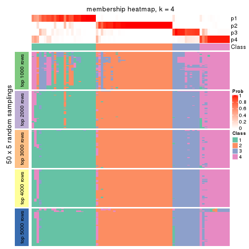
membership_heatmap(res, k = 5)

membership_heatmap(res, k = 6)
As soon as we have had the classes for columns, we can look for signatures which are significantly different between classes which can be candidate marks for certain classes. Following are the heatmaps for signatures.
Signature heatmaps where rows are scaled:
get_signatures(res, k = 2)
get_signatures(res, k = 3)
get_signatures(res, k = 4)
get_signatures(res, k = 5)

get_signatures(res, k = 6)
Signature heatmaps where rows are not scaled:
get_signatures(res, k = 2, scale_rows = FALSE)
get_signatures(res, k = 3, scale_rows = FALSE)
get_signatures(res, k = 4, scale_rows = FALSE)
get_signatures(res, k = 5, scale_rows = FALSE)
get_signatures(res, k = 6, scale_rows = FALSE)
Compare the overlap of signatures from different k:
compare_signatures(res)
get_signature() returns a data frame invisibly. TO get the list of signatures, the function
call should be assigned to a variable explicitly. In following code, if plot argument is set
to FALSE, no heatmap is plotted while only the differential analysis is performed.
# code only for demonstration
tb = get_signature(res, k = ..., plot = FALSE)
An example of the output of tb is:
#> which_row fdr mean_1 mean_2 scaled_mean_1 scaled_mean_2 km
#> 1 38 0.042760348 8.373488 9.131774 -0.5533452 0.5164555 1
#> 2 40 0.018707592 7.106213 8.469186 -0.6173731 0.5762149 1
#> 3 55 0.019134737 10.221463 11.207825 -0.6159697 0.5749050 1
#> 4 59 0.006059896 5.921854 7.869574 -0.6899429 0.6439467 1
#> 5 60 0.018055526 8.928898 10.211722 -0.6204761 0.5791110 1
#> 6 98 0.009384629 15.714769 14.887706 0.6635654 -0.6193277 2
...
The columns in tb are:
which_row: row indices corresponding to the input matrix.fdr: FDR for the differential test. mean_x: The mean value in group x.scaled_mean_x: The mean value in group x after rows are scaled.km: Row groups if k-means clustering is applied to rows.UMAP plot which shows how samples are separated.
dimension_reduction(res, k = 2, method = "UMAP")
dimension_reduction(res, k = 3, method = "UMAP")
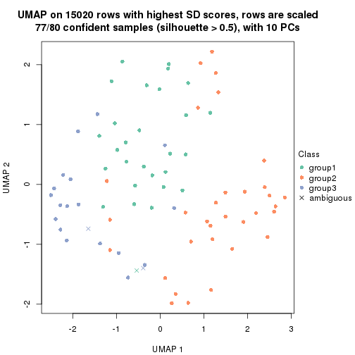
dimension_reduction(res, k = 4, method = "UMAP")
dimension_reduction(res, k = 5, method = "UMAP")
dimension_reduction(res, k = 6, method = "UMAP")
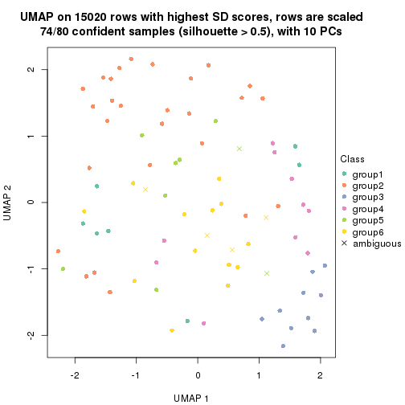
Following heatmap shows how subgroups are split when increasing k:
collect_classes(res)
If matrix rows can be associated to genes, consider to use functional_enrichment(res,
...) to perform function enrichment for the signature genes. See this vignette for more detailed explanations.
The object with results only for a single top-value method and a single partition method can be extracted as:
res = res_list["SD", "mclust"]
# you can also extract it by
# res = res_list["SD:mclust"]
A summary of res and all the functions that can be applied to it:
res
#> A 'ConsensusPartition' object with k = 2, 3, 4, 5, 6.
#> On a matrix with 15020 rows and 80 columns.
#> Top rows (1000, 2000, 3000, 4000, 5000) are extracted by 'SD' method.
#> Subgroups are detected by 'mclust' method.
#> Performed in total 1250 partitions by row resampling.
#> Best k for subgroups seems to be 6.
#>
#> Following methods can be applied to this 'ConsensusPartition' object:
#> [1] "cola_report" "collect_classes" "collect_plots"
#> [4] "collect_stats" "colnames" "compare_signatures"
#> [7] "consensus_heatmap" "dimension_reduction" "functional_enrichment"
#> [10] "get_anno_col" "get_anno" "get_classes"
#> [13] "get_consensus" "get_matrix" "get_membership"
#> [16] "get_param" "get_signatures" "get_stats"
#> [19] "is_best_k" "is_stable_k" "membership_heatmap"
#> [22] "ncol" "nrow" "plot_ecdf"
#> [25] "rownames" "select_partition_number" "show"
#> [28] "suggest_best_k" "test_to_known_factors"
collect_plots() function collects all the plots made from res for all k (number of partitions)
into one single page to provide an easy and fast comparison between different k.
collect_plots(res)
The plots are:
k and the heatmap of
predicted classes for each k.k.k.k.All the plots in panels can be made by individual functions and they are plotted later in this section.
select_partition_number() produces several plots showing different
statistics for choosing “optimized” k. There are following statistics:
k;k, the area increased is defined as \(A_k - A_{k-1}\).The detailed explanations of these statistics can be found in the cola vignette.
Generally speaking, lower PAC score, higher mean silhouette score or higher
concordance corresponds to better partition. Rand index and Jaccard index
measure how similar the current partition is compared to partition with k-1.
If they are too similar, we won't accept k is better than k-1.
select_partition_number(res)
The numeric values for all these statistics can be obtained by get_stats().
get_stats(res)
#> k 1-PAC mean_silhouette concordance area_increased Rand Jaccard
#> 2 2 0.158 0.413 0.674 0.3796 0.495 0.495
#> 3 3 0.288 0.622 0.790 0.3294 0.607 0.423
#> 4 4 0.451 0.652 0.734 0.3460 0.784 0.564
#> 5 5 0.511 0.610 0.773 0.1158 0.799 0.437
#> 6 6 0.609 0.587 0.778 0.0676 0.913 0.629
suggest_best_k() suggests the best \(k\) based on these statistics. The rules are as follows:
suggest_best_k(res)
#> [1] 6
Following shows the table of the partitions (You need to click the show/hide
code output link to see it). The membership matrix (columns with name p*)
is inferred by
clue::cl_consensus()
function with the SE method. Basically the value in the membership matrix
represents the probability to belong to a certain group. The finall class
label for an item is determined with the group with highest probability it
belongs to.
In get_classes() function, the entropy is calculated from the membership
matrix and the silhouette score is calculated from the consensus matrix.
cbind(get_classes(res, k = 2), get_membership(res, k = 2))
#> class entropy silhouette p1 p2
#> SRR1851004 2 0.7745 0.37411 0.228 0.772
#> SRR1851003 2 0.0672 0.55387 0.008 0.992
#> SRR1851002 2 0.7528 0.38388 0.216 0.784
#> SRR1851000 1 0.8499 0.68298 0.724 0.276
#> SRR1851001 2 0.0000 0.55371 0.000 1.000
#> SRR1850998 2 0.0000 0.55371 0.000 1.000
#> SRR1850999 2 0.9661 0.15152 0.392 0.608
#> SRR1850997 2 0.0000 0.55371 0.000 1.000
#> SRR1850996 1 0.9866 0.44099 0.568 0.432
#> SRR1851016 1 0.7674 0.68809 0.776 0.224
#> SRR1851010 2 0.9209 0.25349 0.336 0.664
#> SRR1851014 1 0.8555 0.68100 0.720 0.280
#> SRR1851015 2 0.8661 0.30566 0.288 0.712
#> SRR1851013 1 0.8555 0.68100 0.720 0.280
#> SRR1851012 2 0.9686 0.13809 0.396 0.604
#> SRR1851011 2 0.9686 0.13809 0.396 0.604
#> SRR1851009 2 0.0000 0.55371 0.000 1.000
#> SRR1851008 1 0.8499 0.68298 0.724 0.276
#> SRR1851007 1 0.8499 0.68298 0.724 0.276
#> SRR1851006 2 0.9358 0.22776 0.352 0.648
#> SRR1851005 2 0.9635 0.15392 0.388 0.612
#> SRR1850995 1 0.9661 0.53992 0.608 0.392
#> SRR1850994 1 0.9209 0.60977 0.664 0.336
#> SRR1850993 1 0.7674 0.68809 0.776 0.224
#> SRR1850992 2 0.8267 0.33379 0.260 0.740
#> SRR1850991 1 0.7883 0.68423 0.764 0.236
#> SRR1850990 1 0.7674 0.68809 0.776 0.224
#> SRR1850989 1 0.7674 0.68809 0.776 0.224
#> SRR1850987 1 0.9000 0.65106 0.684 0.316
#> SRR1850986 1 0.7674 0.68809 0.776 0.224
#> SRR1850985 1 0.7674 0.68809 0.776 0.224
#> SRR1850983 2 0.0000 0.55371 0.000 1.000
#> SRR1850984 2 0.0938 0.55273 0.012 0.988
#> SRR1850981 1 0.7883 0.69168 0.764 0.236
#> SRR1850980 1 0.7950 0.69135 0.760 0.240
#> SRR1850979 1 0.8608 0.67883 0.716 0.284
#> SRR1850978 1 0.7674 0.68809 0.776 0.224
#> SRR1850977 1 0.7674 0.68809 0.776 0.224
#> SRR1850976 2 0.9580 0.16394 0.380 0.620
#> SRR1850975 2 0.9608 0.15787 0.384 0.616
#> SRR1850974 2 0.5059 0.52325 0.112 0.888
#> SRR1850973 2 0.0000 0.55371 0.000 1.000
#> SRR1850972 1 0.7674 0.68809 0.776 0.224
#> SRR1850970 2 0.9522 0.18300 0.372 0.628
#> SRR1850971 1 0.7883 0.69142 0.764 0.236
#> SRR1850968 2 0.9998 -0.15775 0.492 0.508
#> SRR1850969 2 0.0672 0.55351 0.008 0.992
#> SRR1850967 2 1.0000 -0.16912 0.496 0.504
#> SRR1850966 2 0.7883 0.36297 0.236 0.764
#> SRR1850965 2 0.0000 0.55371 0.000 1.000
#> SRR1850964 1 0.7815 0.69071 0.768 0.232
#> SRR1850963 2 0.5946 0.50973 0.144 0.856
#> SRR1850962 1 0.9710 0.00550 0.600 0.400
#> SRR1850961 1 0.9710 0.00550 0.600 0.400
#> SRR1850959 2 0.9866 0.02003 0.432 0.568
#> SRR1850960 2 0.7815 0.36426 0.232 0.768
#> SRR1850958 1 0.9988 0.25383 0.520 0.480
#> SRR1850988 1 0.9427 0.59702 0.640 0.360
#> SRR1850957 2 0.6531 0.44223 0.168 0.832
#> SRR1850956 1 0.9580 0.56456 0.620 0.380
#> SRR1850955 1 0.9661 0.53992 0.608 0.392
#> SRR1850953 1 0.9580 0.56456 0.620 0.380
#> SRR1850954 1 0.9580 0.56456 0.620 0.380
#> SRR1850952 1 0.9427 0.58961 0.640 0.360
#> SRR1850982 2 0.8861 0.27681 0.304 0.696
#> SRR1850951 2 0.9896 0.11025 0.440 0.560
#> SRR1850950 2 0.5629 0.51209 0.132 0.868
#> SRR1850949 2 0.4939 0.53000 0.108 0.892
#> SRR1850948 1 0.9710 0.00550 0.600 0.400
#> SRR1850947 1 0.9710 0.00550 0.600 0.400
#> SRR1850946 2 0.9460 0.20669 0.364 0.636
#> SRR1850945 2 0.1184 0.55367 0.016 0.984
#> SRR1850944 2 0.9983 -0.15717 0.476 0.524
#> SRR1850943 2 0.9754 0.07806 0.408 0.592
#> SRR1850942 1 0.9754 0.00250 0.592 0.408
#> SRR1850940 2 0.9580 0.16394 0.380 0.620
#> SRR1850941 1 0.9795 -0.00207 0.584 0.416
#> SRR1850938 2 0.9522 0.18300 0.372 0.628
#> SRR1850939 1 0.9850 -0.01141 0.572 0.428
#> SRR1850937 2 0.3431 0.53125 0.064 0.936
cbind(get_classes(res, k = 3), get_membership(res, k = 3))
#> class entropy silhouette p1 p2 p3
#> SRR1851004 2 0.5529 0.4945 0.296 0.704 0.000
#> SRR1851003 2 0.0592 0.7296 0.012 0.988 0.000
#> SRR1851002 2 0.5497 0.5038 0.292 0.708 0.000
#> SRR1851000 1 0.2066 0.7090 0.940 0.060 0.000
#> SRR1851001 2 0.1753 0.7419 0.048 0.952 0.000
#> SRR1850998 2 0.0829 0.7271 0.012 0.984 0.004
#> SRR1850999 1 0.6140 0.4920 0.596 0.404 0.000
#> SRR1850997 2 0.0592 0.7296 0.012 0.988 0.000
#> SRR1850996 1 0.8076 0.6421 0.632 0.116 0.252
#> SRR1851016 1 0.0000 0.6861 1.000 0.000 0.000
#> SRR1851010 1 0.6421 0.4500 0.572 0.424 0.004
#> SRR1851014 1 0.2261 0.7087 0.932 0.068 0.000
#> SRR1851015 2 0.4452 0.6295 0.192 0.808 0.000
#> SRR1851013 1 0.2261 0.7087 0.932 0.068 0.000
#> SRR1851012 1 0.8641 0.6354 0.592 0.160 0.248
#> SRR1851011 1 0.8729 0.6338 0.592 0.204 0.204
#> SRR1851009 2 0.0592 0.7296 0.012 0.988 0.000
#> SRR1851008 1 0.6187 0.6332 0.724 0.028 0.248
#> SRR1851007 1 0.5875 0.7002 0.792 0.072 0.136
#> SRR1851006 1 0.6786 0.3741 0.540 0.448 0.012
#> SRR1851005 1 0.8641 0.6354 0.592 0.160 0.248
#> SRR1850995 1 0.7246 0.6458 0.664 0.276 0.060
#> SRR1850994 1 0.4195 0.7138 0.852 0.136 0.012
#> SRR1850993 1 0.0237 0.6890 0.996 0.004 0.000
#> SRR1850992 2 0.1964 0.7299 0.056 0.944 0.000
#> SRR1850991 1 0.1860 0.7086 0.948 0.052 0.000
#> SRR1850990 1 0.0237 0.6890 0.996 0.004 0.000
#> SRR1850989 1 0.0237 0.6890 0.996 0.004 0.000
#> SRR1850987 1 0.4452 0.6978 0.808 0.192 0.000
#> SRR1850986 1 0.0237 0.6890 0.996 0.004 0.000
#> SRR1850985 1 0.0237 0.6890 0.996 0.004 0.000
#> SRR1850983 2 0.0592 0.7296 0.012 0.988 0.000
#> SRR1850984 2 0.2772 0.7303 0.080 0.916 0.004
#> SRR1850981 1 0.2878 0.7151 0.904 0.096 0.000
#> SRR1850980 1 0.2066 0.7099 0.940 0.060 0.000
#> SRR1850979 1 0.3267 0.7152 0.884 0.116 0.000
#> SRR1850978 1 0.0237 0.6890 0.996 0.004 0.000
#> SRR1850977 1 0.0237 0.6890 0.996 0.004 0.000
#> SRR1850976 1 0.8576 0.6392 0.596 0.152 0.252
#> SRR1850975 1 0.8685 0.6371 0.596 0.212 0.192
#> SRR1850974 2 0.6498 0.1887 0.396 0.596 0.008
#> SRR1850973 2 0.0592 0.7296 0.012 0.988 0.000
#> SRR1850972 1 0.0000 0.6861 1.000 0.000 0.000
#> SRR1850970 1 0.8703 0.6112 0.584 0.256 0.160
#> SRR1850971 1 0.0747 0.6867 0.984 0.016 0.000
#> SRR1850968 1 0.8221 0.6482 0.624 0.128 0.248
#> SRR1850969 2 0.0592 0.7296 0.012 0.988 0.000
#> SRR1850967 1 0.8221 0.6482 0.624 0.128 0.248
#> SRR1850966 2 0.6215 0.0748 0.428 0.572 0.000
#> SRR1850965 2 0.1289 0.7384 0.032 0.968 0.000
#> SRR1850964 1 0.1860 0.7088 0.948 0.052 0.000
#> SRR1850963 2 0.6008 0.2726 0.372 0.628 0.000
#> SRR1850962 3 0.0000 0.9147 0.000 0.000 1.000
#> SRR1850961 3 0.0000 0.9147 0.000 0.000 1.000
#> SRR1850959 1 0.6140 0.4920 0.596 0.404 0.000
#> SRR1850960 1 0.6308 0.2307 0.508 0.492 0.000
#> SRR1850958 1 0.6260 0.3464 0.552 0.448 0.000
#> SRR1850988 1 0.5733 0.6036 0.676 0.324 0.000
#> SRR1850957 2 0.5678 0.4494 0.316 0.684 0.000
#> SRR1850956 1 0.6357 0.5905 0.652 0.336 0.012
#> SRR1850955 1 0.5775 0.6650 0.728 0.260 0.012
#> SRR1850953 1 0.6470 0.5639 0.632 0.356 0.012
#> SRR1850954 1 0.6143 0.6267 0.684 0.304 0.012
#> SRR1850952 1 0.4446 0.7161 0.856 0.112 0.032
#> SRR1850982 2 0.4750 0.6234 0.216 0.784 0.000
#> SRR1850951 1 0.8141 0.6362 0.624 0.116 0.260
#> SRR1850950 2 0.6505 -0.1319 0.468 0.528 0.004
#> SRR1850949 2 0.6495 -0.0980 0.460 0.536 0.004
#> SRR1850948 3 0.0000 0.9147 0.000 0.000 1.000
#> SRR1850947 3 0.0747 0.9171 0.016 0.000 0.984
#> SRR1850946 1 0.8731 0.4899 0.528 0.352 0.120
#> SRR1850945 2 0.5020 0.6477 0.192 0.796 0.012
#> SRR1850944 1 0.6451 0.5247 0.608 0.384 0.008
#> SRR1850943 1 0.5706 0.5666 0.680 0.320 0.000
#> SRR1850942 3 0.0892 0.9159 0.020 0.000 0.980
#> SRR1850940 1 0.8587 0.6355 0.592 0.148 0.260
#> SRR1850941 3 0.3267 0.8380 0.116 0.000 0.884
#> SRR1850938 1 0.6345 0.4941 0.596 0.400 0.004
#> SRR1850939 3 0.6044 0.6896 0.172 0.056 0.772
#> SRR1850937 2 0.0747 0.7311 0.016 0.984 0.000
cbind(get_classes(res, k = 4), get_membership(res, k = 4))
#> class entropy silhouette p1 p2 p3 p4
#> SRR1851004 2 0.5812 0.6919 0.156 0.708 0.000 0.136
#> SRR1851003 2 0.4252 0.7464 0.004 0.744 0.000 0.252
#> SRR1851002 2 0.1229 0.6985 0.020 0.968 0.004 0.008
#> SRR1851000 1 0.3591 0.6881 0.824 0.008 0.000 0.168
#> SRR1851001 2 0.4122 0.7496 0.000 0.760 0.004 0.236
#> SRR1850998 2 0.4103 0.7463 0.000 0.744 0.000 0.256
#> SRR1850999 4 0.6742 0.5410 0.160 0.232 0.000 0.608
#> SRR1850997 2 0.4072 0.7467 0.000 0.748 0.000 0.252
#> SRR1850996 1 0.7412 0.6421 0.568 0.232 0.188 0.012
#> SRR1851016 1 0.1247 0.7365 0.968 0.004 0.016 0.012
#> SRR1851010 4 0.4956 0.6625 0.056 0.188 0.000 0.756
#> SRR1851014 1 0.5127 0.4636 0.632 0.012 0.000 0.356
#> SRR1851015 2 0.5188 0.7391 0.096 0.756 0.000 0.148
#> SRR1851013 1 0.3718 0.6864 0.820 0.012 0.000 0.168
#> SRR1851012 4 0.2957 0.7190 0.068 0.016 0.016 0.900
#> SRR1851011 4 0.2546 0.7194 0.060 0.028 0.000 0.912
#> SRR1851009 2 0.4252 0.7475 0.004 0.744 0.000 0.252
#> SRR1851008 1 0.5214 0.4200 0.624 0.004 0.008 0.364
#> SRR1851007 1 0.4980 0.5095 0.680 0.016 0.000 0.304
#> SRR1851006 4 0.5136 0.6603 0.056 0.188 0.004 0.752
#> SRR1851005 4 0.3070 0.7187 0.068 0.016 0.020 0.896
#> SRR1850995 1 0.7613 0.6423 0.560 0.300 0.084 0.056
#> SRR1850994 1 0.4798 0.7087 0.744 0.232 0.012 0.012
#> SRR1850993 1 0.0967 0.7351 0.976 0.004 0.016 0.004
#> SRR1850992 2 0.1398 0.6931 0.040 0.956 0.004 0.000
#> SRR1850991 1 0.2839 0.7469 0.884 0.108 0.004 0.004
#> SRR1850990 1 0.0524 0.7376 0.988 0.000 0.008 0.004
#> SRR1850989 1 0.0779 0.7364 0.980 0.004 0.016 0.000
#> SRR1850987 1 0.7007 0.6409 0.580 0.208 0.000 0.212
#> SRR1850986 1 0.0967 0.7351 0.976 0.004 0.016 0.004
#> SRR1850985 1 0.0657 0.7373 0.984 0.004 0.012 0.000
#> SRR1850983 2 0.4103 0.7463 0.000 0.744 0.000 0.256
#> SRR1850984 2 0.4744 0.7343 0.024 0.736 0.000 0.240
#> SRR1850981 1 0.4268 0.7120 0.760 0.232 0.004 0.004
#> SRR1850980 1 0.3166 0.7473 0.868 0.116 0.000 0.016
#> SRR1850979 1 0.5669 0.7157 0.708 0.200 0.000 0.092
#> SRR1850978 1 0.0524 0.7369 0.988 0.000 0.008 0.004
#> SRR1850977 1 0.0469 0.7365 0.988 0.000 0.012 0.000
#> SRR1850976 1 0.7721 -0.0113 0.432 0.024 0.120 0.424
#> SRR1850975 4 0.6471 0.0238 0.440 0.044 0.012 0.504
#> SRR1850974 2 0.6249 0.0867 0.044 0.476 0.004 0.476
#> SRR1850973 2 0.4072 0.7470 0.000 0.748 0.000 0.252
#> SRR1850972 1 0.0524 0.7384 0.988 0.000 0.004 0.008
#> SRR1850970 4 0.3731 0.7169 0.064 0.072 0.004 0.860
#> SRR1850971 1 0.1302 0.7361 0.956 0.000 0.000 0.044
#> SRR1850968 4 0.2976 0.7015 0.120 0.000 0.008 0.872
#> SRR1850969 2 0.0657 0.7050 0.000 0.984 0.004 0.012
#> SRR1850967 4 0.2546 0.7100 0.092 0.000 0.008 0.900
#> SRR1850966 2 0.1721 0.6912 0.028 0.952 0.008 0.012
#> SRR1850965 2 0.4122 0.7496 0.000 0.760 0.004 0.236
#> SRR1850964 1 0.2737 0.7476 0.888 0.104 0.000 0.008
#> SRR1850963 2 0.4234 0.7413 0.052 0.816 0.000 0.132
#> SRR1850962 3 0.0817 0.9507 0.000 0.000 0.976 0.024
#> SRR1850961 3 0.0817 0.9507 0.000 0.000 0.976 0.024
#> SRR1850959 1 0.7707 0.1888 0.452 0.276 0.000 0.272
#> SRR1850960 2 0.2730 0.6537 0.088 0.896 0.000 0.016
#> SRR1850958 1 0.6329 0.3871 0.616 0.292 0.000 0.092
#> SRR1850988 1 0.6007 0.6498 0.604 0.340 0.000 0.056
#> SRR1850957 2 0.4286 0.7412 0.052 0.812 0.000 0.136
#> SRR1850956 1 0.6025 0.5653 0.540 0.424 0.008 0.028
#> SRR1850955 1 0.6378 0.6803 0.640 0.280 0.016 0.064
#> SRR1850953 1 0.6133 0.6056 0.572 0.384 0.012 0.032
#> SRR1850954 1 0.6922 0.6532 0.596 0.308 0.060 0.036
#> SRR1850952 1 0.6801 0.6797 0.636 0.232 0.116 0.016
#> SRR1850982 2 0.1639 0.6824 0.036 0.952 0.008 0.004
#> SRR1850951 1 0.4317 0.6802 0.784 0.004 0.196 0.016
#> SRR1850950 4 0.5970 0.3650 0.052 0.348 0.000 0.600
#> SRR1850949 4 0.6083 0.3332 0.056 0.360 0.000 0.584
#> SRR1850948 3 0.0817 0.9507 0.000 0.000 0.976 0.024
#> SRR1850947 3 0.1004 0.9493 0.004 0.000 0.972 0.024
#> SRR1850946 4 0.4957 0.6549 0.060 0.164 0.004 0.772
#> SRR1850945 2 0.5350 0.7063 0.036 0.700 0.004 0.260
#> SRR1850944 4 0.7078 -0.1261 0.420 0.124 0.000 0.456
#> SRR1850943 2 0.4991 0.3990 0.388 0.608 0.000 0.004
#> SRR1850942 3 0.0921 0.9499 0.000 0.000 0.972 0.028
#> SRR1850940 4 0.6223 0.6492 0.152 0.016 0.128 0.704
#> SRR1850941 3 0.1724 0.9319 0.020 0.000 0.948 0.032
#> SRR1850938 4 0.5837 0.5624 0.072 0.260 0.000 0.668
#> SRR1850939 3 0.4904 0.6948 0.040 0.000 0.744 0.216
#> SRR1850937 2 0.1297 0.7107 0.016 0.964 0.000 0.020
cbind(get_classes(res, k = 5), get_membership(res, k = 5))
#> class entropy silhouette p1 p2 p3 p4 p5
#> SRR1851004 2 0.2921 0.773835 0.124 0.856 0.000 0.000 0.020
#> SRR1851003 2 0.0162 0.819007 0.000 0.996 0.000 0.000 0.004
#> SRR1851002 5 0.4291 -0.201385 0.000 0.464 0.000 0.000 0.536
#> SRR1851000 4 0.6769 -0.104762 0.396 0.016 0.000 0.428 0.160
#> SRR1851001 2 0.3177 0.778906 0.000 0.792 0.000 0.000 0.208
#> SRR1850998 2 0.0451 0.815671 0.000 0.988 0.000 0.004 0.008
#> SRR1850999 4 0.5421 0.608656 0.008 0.136 0.000 0.684 0.172
#> SRR1850997 2 0.0613 0.816066 0.004 0.984 0.000 0.004 0.008
#> SRR1850996 5 0.5554 0.168385 0.040 0.016 0.404 0.000 0.540
#> SRR1851016 1 0.4322 0.831620 0.768 0.000 0.000 0.088 0.144
#> SRR1851010 4 0.2853 0.742821 0.008 0.108 0.004 0.872 0.008
#> SRR1851014 4 0.5412 0.440289 0.052 0.016 0.000 0.632 0.300
#> SRR1851015 2 0.3170 0.791163 0.004 0.828 0.000 0.008 0.160
#> SRR1851013 4 0.6195 0.337344 0.112 0.016 0.000 0.564 0.308
#> SRR1851012 4 0.1041 0.724480 0.004 0.032 0.000 0.964 0.000
#> SRR1851011 4 0.1928 0.738772 0.004 0.072 0.000 0.920 0.004
#> SRR1851009 2 0.0486 0.817412 0.004 0.988 0.000 0.004 0.004
#> SRR1851008 4 0.4657 0.569084 0.296 0.000 0.000 0.668 0.036
#> SRR1851007 4 0.5828 0.482755 0.172 0.020 0.000 0.660 0.148
#> SRR1851006 4 0.2729 0.741412 0.004 0.108 0.004 0.876 0.008
#> SRR1851005 4 0.2228 0.739663 0.000 0.092 0.004 0.900 0.004
#> SRR1850995 5 0.2486 0.606760 0.020 0.032 0.012 0.020 0.916
#> SRR1850994 5 0.3585 0.389958 0.220 0.004 0.004 0.000 0.772
#> SRR1850993 1 0.2648 0.892112 0.848 0.000 0.000 0.000 0.152
#> SRR1850992 2 0.4006 0.782433 0.112 0.804 0.000 0.004 0.080
#> SRR1850991 5 0.4572 0.008768 0.452 0.004 0.000 0.004 0.540
#> SRR1850990 1 0.2833 0.887183 0.852 0.004 0.000 0.004 0.140
#> SRR1850989 1 0.2956 0.887533 0.848 0.004 0.000 0.008 0.140
#> SRR1850987 5 0.6609 0.422331 0.072 0.096 0.000 0.236 0.596
#> SRR1850986 1 0.2648 0.892112 0.848 0.000 0.000 0.000 0.152
#> SRR1850985 1 0.2806 0.891669 0.844 0.000 0.000 0.004 0.152
#> SRR1850983 2 0.0613 0.815648 0.004 0.984 0.000 0.004 0.008
#> SRR1850984 2 0.1314 0.815704 0.004 0.960 0.004 0.024 0.008
#> SRR1850981 5 0.4321 0.126993 0.396 0.004 0.000 0.000 0.600
#> SRR1850980 1 0.5185 0.034868 0.496 0.016 0.000 0.016 0.472
#> SRR1850979 5 0.6304 0.503776 0.176 0.088 0.000 0.088 0.648
#> SRR1850978 1 0.2648 0.892112 0.848 0.000 0.000 0.000 0.152
#> SRR1850977 1 0.2648 0.892112 0.848 0.000 0.000 0.000 0.152
#> SRR1850976 3 0.7909 -0.000663 0.024 0.032 0.404 0.272 0.268
#> SRR1850975 4 0.6508 0.461760 0.012 0.096 0.024 0.572 0.296
#> SRR1850974 4 0.4347 0.646943 0.004 0.276 0.004 0.704 0.012
#> SRR1850973 2 0.0404 0.819507 0.000 0.988 0.000 0.000 0.012
#> SRR1850972 1 0.4150 0.847437 0.788 0.004 0.000 0.068 0.140
#> SRR1850970 4 0.2463 0.741113 0.000 0.100 0.004 0.888 0.008
#> SRR1850971 1 0.4457 0.821686 0.756 0.000 0.000 0.092 0.152
#> SRR1850968 4 0.3106 0.675548 0.132 0.000 0.000 0.844 0.024
#> SRR1850969 2 0.2813 0.800758 0.000 0.832 0.000 0.000 0.168
#> SRR1850967 4 0.3193 0.674386 0.132 0.000 0.000 0.840 0.028
#> SRR1850966 5 0.4321 0.015603 0.000 0.396 0.004 0.000 0.600
#> SRR1850965 2 0.2970 0.787901 0.000 0.828 0.004 0.000 0.168
#> SRR1850964 5 0.4695 -0.023793 0.464 0.008 0.000 0.004 0.524
#> SRR1850963 2 0.3143 0.767006 0.000 0.796 0.000 0.000 0.204
#> SRR1850962 3 0.0000 0.844909 0.000 0.000 1.000 0.000 0.000
#> SRR1850961 3 0.0000 0.844909 0.000 0.000 1.000 0.000 0.000
#> SRR1850959 5 0.6608 0.239167 0.024 0.136 0.000 0.316 0.524
#> SRR1850960 2 0.4651 0.326566 0.008 0.560 0.000 0.004 0.428
#> SRR1850958 4 0.7734 0.418564 0.204 0.280 0.000 0.436 0.080
#> SRR1850988 5 0.5723 0.557970 0.080 0.196 0.000 0.044 0.680
#> SRR1850957 2 0.3661 0.669320 0.000 0.724 0.000 0.000 0.276
#> SRR1850956 5 0.2364 0.607900 0.000 0.064 0.008 0.020 0.908
#> SRR1850955 5 0.2689 0.603582 0.036 0.040 0.000 0.024 0.900
#> SRR1850953 5 0.1518 0.604021 0.004 0.048 0.004 0.000 0.944
#> SRR1850954 5 0.1644 0.598505 0.012 0.028 0.008 0.004 0.948
#> SRR1850952 5 0.4226 0.419039 0.188 0.012 0.032 0.000 0.768
#> SRR1850982 2 0.4101 0.580655 0.000 0.628 0.000 0.000 0.372
#> SRR1850951 3 0.5656 0.407819 0.176 0.016 0.672 0.000 0.136
#> SRR1850950 4 0.3831 0.706673 0.004 0.216 0.004 0.768 0.008
#> SRR1850949 4 0.3862 0.704811 0.004 0.220 0.004 0.764 0.008
#> SRR1850948 3 0.0000 0.844909 0.000 0.000 1.000 0.000 0.000
#> SRR1850947 3 0.0000 0.844909 0.000 0.000 1.000 0.000 0.000
#> SRR1850946 4 0.3341 0.733437 0.000 0.128 0.024 0.840 0.008
#> SRR1850945 2 0.5025 0.673384 0.000 0.700 0.004 0.212 0.084
#> SRR1850944 5 0.6328 0.139549 0.016 0.108 0.000 0.368 0.508
#> SRR1850943 2 0.4171 0.717004 0.152 0.792 0.000 0.028 0.028
#> SRR1850942 3 0.0000 0.844909 0.000 0.000 1.000 0.000 0.000
#> SRR1850940 4 0.3799 0.565986 0.004 0.008 0.212 0.772 0.004
#> SRR1850941 3 0.0794 0.828707 0.000 0.000 0.972 0.000 0.028
#> SRR1850938 4 0.3844 0.723719 0.000 0.180 0.004 0.788 0.028
#> SRR1850939 3 0.2597 0.772655 0.000 0.004 0.872 0.120 0.004
#> SRR1850937 2 0.2921 0.798823 0.004 0.844 0.000 0.004 0.148
cbind(get_classes(res, k = 6), get_membership(res, k = 6))
#> class entropy silhouette p1 p2 p3 p4 p5 p6
#> SRR1851004 2 0.3499 0.7373 0.024 0.820 0.000 0.024 0.004 0.128
#> SRR1851003 2 0.0632 0.7794 0.000 0.976 0.000 0.024 0.000 0.000
#> SRR1851002 5 0.3861 0.3902 0.000 0.316 0.000 0.004 0.672 0.008
#> SRR1851000 6 0.2480 0.6967 0.104 0.000 0.000 0.024 0.000 0.872
#> SRR1851001 2 0.2915 0.6987 0.000 0.808 0.000 0.008 0.184 0.000
#> SRR1850998 2 0.2358 0.7748 0.000 0.900 0.000 0.048 0.012 0.040
#> SRR1850999 4 0.3701 0.6702 0.000 0.168 0.000 0.784 0.012 0.036
#> SRR1850997 2 0.1737 0.7738 0.000 0.932 0.000 0.020 0.008 0.040
#> SRR1850996 5 0.5457 0.3369 0.104 0.000 0.344 0.004 0.544 0.004
#> SRR1851016 6 0.3944 0.2237 0.428 0.004 0.000 0.000 0.000 0.568
#> SRR1851010 4 0.1471 0.7483 0.000 0.064 0.000 0.932 0.004 0.000
#> SRR1851014 6 0.4376 0.6340 0.092 0.000 0.000 0.180 0.004 0.724
#> SRR1851015 2 0.3910 0.7491 0.012 0.800 0.000 0.120 0.012 0.056
#> SRR1851013 6 0.4567 0.6090 0.096 0.000 0.000 0.032 0.128 0.744
#> SRR1851012 4 0.1226 0.7182 0.000 0.004 0.000 0.952 0.004 0.040
#> SRR1851011 4 0.0951 0.7310 0.000 0.008 0.000 0.968 0.004 0.020
#> SRR1851009 2 0.2272 0.7739 0.000 0.900 0.000 0.056 0.004 0.040
#> SRR1851008 6 0.3857 0.6933 0.084 0.000 0.000 0.112 0.012 0.792
#> SRR1851007 6 0.3613 0.7048 0.096 0.000 0.000 0.096 0.004 0.804
#> SRR1851006 4 0.1511 0.7521 0.000 0.044 0.012 0.940 0.004 0.000
#> SRR1851005 4 0.1508 0.7433 0.000 0.020 0.016 0.948 0.004 0.012
#> SRR1850995 5 0.2896 0.6308 0.064 0.008 0.012 0.008 0.880 0.028
#> SRR1850994 5 0.2673 0.5991 0.128 0.000 0.008 0.004 0.856 0.004
#> SRR1850993 1 0.0000 0.6924 1.000 0.000 0.000 0.000 0.000 0.000
#> SRR1850992 2 0.3953 0.7064 0.060 0.792 0.000 0.008 0.128 0.012
#> SRR1850991 1 0.5054 0.1212 0.532 0.016 0.000 0.008 0.416 0.028
#> SRR1850990 1 0.1218 0.6838 0.956 0.004 0.000 0.012 0.000 0.028
#> SRR1850989 1 0.3014 0.5904 0.804 0.000 0.000 0.012 0.000 0.184
#> SRR1850987 5 0.8026 0.4193 0.080 0.132 0.000 0.188 0.440 0.160
#> SRR1850986 1 0.0000 0.6924 1.000 0.000 0.000 0.000 0.000 0.000
#> SRR1850985 1 0.3175 0.4830 0.744 0.000 0.000 0.000 0.000 0.256
#> SRR1850983 2 0.2384 0.7720 0.000 0.896 0.000 0.056 0.008 0.040
#> SRR1850984 2 0.3265 0.6517 0.000 0.748 0.000 0.248 0.000 0.004
#> SRR1850981 5 0.4561 -0.0123 0.464 0.008 0.000 0.000 0.508 0.020
#> SRR1850980 1 0.5895 0.2819 0.552 0.004 0.000 0.048 0.320 0.076
#> SRR1850979 5 0.8098 0.3726 0.168 0.096 0.000 0.140 0.440 0.156
#> SRR1850978 1 0.0000 0.6924 1.000 0.000 0.000 0.000 0.000 0.000
#> SRR1850977 1 0.0146 0.6919 0.996 0.000 0.000 0.000 0.000 0.004
#> SRR1850976 3 0.4737 0.7190 0.080 0.004 0.756 0.116 0.032 0.012
#> SRR1850975 4 0.6652 0.5182 0.048 0.120 0.052 0.616 0.152 0.012
#> SRR1850974 4 0.3209 0.7218 0.000 0.156 0.016 0.816 0.012 0.000
#> SRR1850973 2 0.1434 0.7791 0.000 0.948 0.000 0.012 0.028 0.012
#> SRR1850972 1 0.3163 0.4310 0.764 0.000 0.000 0.000 0.004 0.232
#> SRR1850970 4 0.1511 0.7507 0.000 0.044 0.012 0.940 0.000 0.004
#> SRR1850971 6 0.2994 0.6271 0.208 0.004 0.000 0.000 0.000 0.788
#> SRR1850968 4 0.4136 0.1546 0.000 0.000 0.000 0.560 0.012 0.428
#> SRR1850969 2 0.1838 0.7745 0.000 0.916 0.000 0.016 0.068 0.000
#> SRR1850967 4 0.4152 0.1258 0.000 0.000 0.000 0.548 0.012 0.440
#> SRR1850966 5 0.3421 0.4925 0.000 0.256 0.000 0.000 0.736 0.008
#> SRR1850965 2 0.3189 0.6409 0.000 0.760 0.000 0.004 0.236 0.000
#> SRR1850964 1 0.4936 0.1514 0.536 0.004 0.000 0.012 0.416 0.032
#> SRR1850963 2 0.4585 0.6584 0.000 0.732 0.000 0.088 0.156 0.024
#> SRR1850962 3 0.0000 0.9295 0.000 0.000 1.000 0.000 0.000 0.000
#> SRR1850961 3 0.0000 0.9295 0.000 0.000 1.000 0.000 0.000 0.000
#> SRR1850959 5 0.7436 0.3426 0.024 0.216 0.000 0.264 0.420 0.076
#> SRR1850960 2 0.5293 0.1699 0.000 0.548 0.000 0.056 0.372 0.024
#> SRR1850958 6 0.7953 0.1371 0.088 0.284 0.000 0.236 0.048 0.344
#> SRR1850988 5 0.7641 0.3941 0.068 0.256 0.000 0.148 0.452 0.076
#> SRR1850957 2 0.4448 0.4277 0.000 0.664 0.004 0.024 0.296 0.012
#> SRR1850956 5 0.1961 0.6327 0.016 0.016 0.004 0.012 0.932 0.020
#> SRR1850955 5 0.3709 0.6269 0.092 0.036 0.016 0.012 0.832 0.012
#> SRR1850953 5 0.1509 0.6312 0.024 0.008 0.008 0.000 0.948 0.012
#> SRR1850954 5 0.1426 0.6258 0.028 0.000 0.008 0.000 0.948 0.016
#> SRR1850952 5 0.3032 0.5962 0.128 0.000 0.024 0.004 0.840 0.004
#> SRR1850982 5 0.4199 -0.0273 0.004 0.444 0.000 0.000 0.544 0.008
#> SRR1850951 3 0.2624 0.7877 0.124 0.000 0.856 0.000 0.020 0.000
#> SRR1850950 4 0.2288 0.7438 0.000 0.116 0.004 0.876 0.004 0.000
#> SRR1850949 4 0.1958 0.7478 0.000 0.100 0.000 0.896 0.004 0.000
#> SRR1850948 3 0.0000 0.9295 0.000 0.000 1.000 0.000 0.000 0.000
#> SRR1850947 3 0.0000 0.9295 0.000 0.000 1.000 0.000 0.000 0.000
#> SRR1850946 4 0.2792 0.7340 0.000 0.052 0.048 0.880 0.016 0.004
#> SRR1850945 4 0.6109 0.2621 0.000 0.296 0.012 0.480 0.212 0.000
#> SRR1850944 4 0.7226 -0.2473 0.036 0.136 0.000 0.392 0.376 0.060
#> SRR1850943 2 0.6046 0.4476 0.056 0.552 0.000 0.104 0.000 0.288
#> SRR1850942 3 0.0000 0.9295 0.000 0.000 1.000 0.000 0.000 0.000
#> SRR1850940 4 0.4031 0.4458 0.008 0.000 0.332 0.652 0.008 0.000
#> SRR1850941 3 0.0000 0.9295 0.000 0.000 1.000 0.000 0.000 0.000
#> SRR1850938 4 0.2773 0.7295 0.000 0.152 0.000 0.836 0.004 0.008
#> SRR1850939 3 0.1858 0.8580 0.000 0.000 0.904 0.092 0.004 0.000
#> SRR1850937 2 0.3011 0.7439 0.008 0.852 0.000 0.012 0.112 0.016
Heatmaps for the consensus matrix. It visualizes the probability of two samples to be in a same group.
consensus_heatmap(res, k = 2)
consensus_heatmap(res, k = 3)
consensus_heatmap(res, k = 4)
consensus_heatmap(res, k = 5)
consensus_heatmap(res, k = 6)
Heatmaps for the membership of samples in all partitions to see how consistent they are:
membership_heatmap(res, k = 2)

membership_heatmap(res, k = 3)
membership_heatmap(res, k = 4)
membership_heatmap(res, k = 5)
membership_heatmap(res, k = 6)
As soon as we have had the classes for columns, we can look for signatures which are significantly different between classes which can be candidate marks for certain classes. Following are the heatmaps for signatures.
Signature heatmaps where rows are scaled:
get_signatures(res, k = 2)
get_signatures(res, k = 3)
get_signatures(res, k = 4)
get_signatures(res, k = 5)
get_signatures(res, k = 6)
Signature heatmaps where rows are not scaled:
get_signatures(res, k = 2, scale_rows = FALSE)
get_signatures(res, k = 3, scale_rows = FALSE)
get_signatures(res, k = 4, scale_rows = FALSE)
get_signatures(res, k = 5, scale_rows = FALSE)
get_signatures(res, k = 6, scale_rows = FALSE)
Compare the overlap of signatures from different k:
compare_signatures(res)
get_signature() returns a data frame invisibly. TO get the list of signatures, the function
call should be assigned to a variable explicitly. In following code, if plot argument is set
to FALSE, no heatmap is plotted while only the differential analysis is performed.
# code only for demonstration
tb = get_signature(res, k = ..., plot = FALSE)
An example of the output of tb is:
#> which_row fdr mean_1 mean_2 scaled_mean_1 scaled_mean_2 km
#> 1 38 0.042760348 8.373488 9.131774 -0.5533452 0.5164555 1
#> 2 40 0.018707592 7.106213 8.469186 -0.6173731 0.5762149 1
#> 3 55 0.019134737 10.221463 11.207825 -0.6159697 0.5749050 1
#> 4 59 0.006059896 5.921854 7.869574 -0.6899429 0.6439467 1
#> 5 60 0.018055526 8.928898 10.211722 -0.6204761 0.5791110 1
#> 6 98 0.009384629 15.714769 14.887706 0.6635654 -0.6193277 2
...
The columns in tb are:
which_row: row indices corresponding to the input matrix.fdr: FDR for the differential test. mean_x: The mean value in group x.scaled_mean_x: The mean value in group x after rows are scaled.km: Row groups if k-means clustering is applied to rows.UMAP plot which shows how samples are separated.
dimension_reduction(res, k = 2, method = "UMAP")

dimension_reduction(res, k = 3, method = "UMAP")
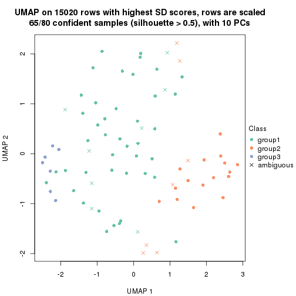
dimension_reduction(res, k = 4, method = "UMAP")

dimension_reduction(res, k = 5, method = "UMAP")
dimension_reduction(res, k = 6, method = "UMAP")
Following heatmap shows how subgroups are split when increasing k:
collect_classes(res)
If matrix rows can be associated to genes, consider to use functional_enrichment(res,
...) to perform function enrichment for the signature genes. See this vignette for more detailed explanations.
The object with results only for a single top-value method and a single partition method can be extracted as:
res = res_list["SD", "NMF"]
# you can also extract it by
# res = res_list["SD:NMF"]
A summary of res and all the functions that can be applied to it:
res
#> A 'ConsensusPartition' object with k = 2, 3, 4, 5, 6.
#> On a matrix with 15020 rows and 80 columns.
#> Top rows (1000, 2000, 3000, 4000, 5000) are extracted by 'SD' method.
#> Subgroups are detected by 'NMF' method.
#> Performed in total 1250 partitions by row resampling.
#> Best k for subgroups seems to be 2.
#>
#> Following methods can be applied to this 'ConsensusPartition' object:
#> [1] "cola_report" "collect_classes" "collect_plots"
#> [4] "collect_stats" "colnames" "compare_signatures"
#> [7] "consensus_heatmap" "dimension_reduction" "functional_enrichment"
#> [10] "get_anno_col" "get_anno" "get_classes"
#> [13] "get_consensus" "get_matrix" "get_membership"
#> [16] "get_param" "get_signatures" "get_stats"
#> [19] "is_best_k" "is_stable_k" "membership_heatmap"
#> [22] "ncol" "nrow" "plot_ecdf"
#> [25] "rownames" "select_partition_number" "show"
#> [28] "suggest_best_k" "test_to_known_factors"
collect_plots() function collects all the plots made from res for all k (number of partitions)
into one single page to provide an easy and fast comparison between different k.
collect_plots(res)
The plots are:
k and the heatmap of
predicted classes for each k.k.k.k.All the plots in panels can be made by individual functions and they are plotted later in this section.
select_partition_number() produces several plots showing different
statistics for choosing “optimized” k. There are following statistics:
k;k, the area increased is defined as \(A_k - A_{k-1}\).The detailed explanations of these statistics can be found in the cola vignette.
Generally speaking, lower PAC score, higher mean silhouette score or higher
concordance corresponds to better partition. Rand index and Jaccard index
measure how similar the current partition is compared to partition with k-1.
If they are too similar, we won't accept k is better than k-1.
select_partition_number(res)
The numeric values for all these statistics can be obtained by get_stats().
get_stats(res)
#> k 1-PAC mean_silhouette concordance area_increased Rand Jaccard
#> 2 2 0.755 0.881 0.948 0.4977 0.505 0.505
#> 3 3 0.560 0.770 0.866 0.3268 0.711 0.491
#> 4 4 0.540 0.561 0.741 0.1225 0.752 0.403
#> 5 5 0.554 0.484 0.694 0.0691 0.819 0.451
#> 6 6 0.574 0.403 0.653 0.0418 0.935 0.739
suggest_best_k() suggests the best \(k\) based on these statistics. The rules are as follows:
suggest_best_k(res)
#> [1] 2
Following shows the table of the partitions (You need to click the show/hide
code output link to see it). The membership matrix (columns with name p*)
is inferred by
clue::cl_consensus()
function with the SE method. Basically the value in the membership matrix
represents the probability to belong to a certain group. The finall class
label for an item is determined with the group with highest probability it
belongs to.
In get_classes() function, the entropy is calculated from the membership
matrix and the silhouette score is calculated from the consensus matrix.
cbind(get_classes(res, k = 2), get_membership(res, k = 2))
#> class entropy silhouette p1 p2
#> SRR1851004 2 0.0000 0.922 0.000 1.000
#> SRR1851003 2 0.0000 0.922 0.000 1.000
#> SRR1851002 2 0.0000 0.922 0.000 1.000
#> SRR1851000 1 0.0938 0.964 0.988 0.012
#> SRR1851001 2 0.0000 0.922 0.000 1.000
#> SRR1850998 2 0.0000 0.922 0.000 1.000
#> SRR1850999 2 0.0000 0.922 0.000 1.000
#> SRR1850997 2 0.0000 0.922 0.000 1.000
#> SRR1850996 1 0.0000 0.971 1.000 0.000
#> SRR1851016 2 0.9552 0.458 0.376 0.624
#> SRR1851010 2 0.0000 0.922 0.000 1.000
#> SRR1851014 2 0.9850 0.317 0.428 0.572
#> SRR1851015 2 0.0000 0.922 0.000 1.000
#> SRR1851013 1 0.1633 0.956 0.976 0.024
#> SRR1851012 2 0.9580 0.431 0.380 0.620
#> SRR1851011 2 0.0672 0.918 0.008 0.992
#> SRR1851009 2 0.0000 0.922 0.000 1.000
#> SRR1851008 1 0.0000 0.971 1.000 0.000
#> SRR1851007 1 0.1414 0.959 0.980 0.020
#> SRR1851006 2 0.0000 0.922 0.000 1.000
#> SRR1851005 1 0.6887 0.771 0.816 0.184
#> SRR1850995 1 0.0000 0.971 1.000 0.000
#> SRR1850994 1 0.0000 0.971 1.000 0.000
#> SRR1850993 1 0.0000 0.971 1.000 0.000
#> SRR1850992 2 0.0000 0.922 0.000 1.000
#> SRR1850991 2 0.1184 0.914 0.016 0.984
#> SRR1850990 1 0.0000 0.971 1.000 0.000
#> SRR1850989 1 0.8661 0.568 0.712 0.288
#> SRR1850987 2 0.7139 0.755 0.196 0.804
#> SRR1850986 1 0.0000 0.971 1.000 0.000
#> SRR1850985 1 0.0000 0.971 1.000 0.000
#> SRR1850983 2 0.0000 0.922 0.000 1.000
#> SRR1850984 2 0.0000 0.922 0.000 1.000
#> SRR1850981 2 0.7815 0.710 0.232 0.768
#> SRR1850980 1 0.0000 0.971 1.000 0.000
#> SRR1850979 2 0.9970 0.192 0.468 0.532
#> SRR1850978 1 0.0000 0.971 1.000 0.000
#> SRR1850977 1 0.0000 0.971 1.000 0.000
#> SRR1850976 1 0.0000 0.971 1.000 0.000
#> SRR1850975 1 0.4939 0.874 0.892 0.108
#> SRR1850974 2 0.0000 0.922 0.000 1.000
#> SRR1850973 2 0.0000 0.922 0.000 1.000
#> SRR1850972 1 0.0000 0.971 1.000 0.000
#> SRR1850970 2 0.0000 0.922 0.000 1.000
#> SRR1850971 1 0.0000 0.971 1.000 0.000
#> SRR1850968 1 0.0000 0.971 1.000 0.000
#> SRR1850969 2 0.0000 0.922 0.000 1.000
#> SRR1850967 1 0.3733 0.914 0.928 0.072
#> SRR1850966 2 0.0000 0.922 0.000 1.000
#> SRR1850965 2 0.0000 0.922 0.000 1.000
#> SRR1850964 1 0.2948 0.933 0.948 0.052
#> SRR1850963 2 0.0000 0.922 0.000 1.000
#> SRR1850962 1 0.0000 0.971 1.000 0.000
#> SRR1850961 1 0.0000 0.971 1.000 0.000
#> SRR1850959 2 0.0000 0.922 0.000 1.000
#> SRR1850960 2 0.0000 0.922 0.000 1.000
#> SRR1850958 2 0.8081 0.674 0.248 0.752
#> SRR1850988 2 0.2043 0.903 0.032 0.968
#> SRR1850957 2 0.0000 0.922 0.000 1.000
#> SRR1850956 2 0.7139 0.759 0.196 0.804
#> SRR1850955 1 0.0672 0.967 0.992 0.008
#> SRR1850953 2 0.6712 0.779 0.176 0.824
#> SRR1850954 2 0.9983 0.171 0.476 0.524
#> SRR1850952 1 0.0000 0.971 1.000 0.000
#> SRR1850982 2 0.0000 0.922 0.000 1.000
#> SRR1850951 1 0.0000 0.971 1.000 0.000
#> SRR1850950 2 0.0000 0.922 0.000 1.000
#> SRR1850949 2 0.0000 0.922 0.000 1.000
#> SRR1850948 1 0.0000 0.971 1.000 0.000
#> SRR1850947 1 0.0000 0.971 1.000 0.000
#> SRR1850946 2 0.0000 0.922 0.000 1.000
#> SRR1850945 2 0.0000 0.922 0.000 1.000
#> SRR1850944 2 0.4161 0.864 0.084 0.916
#> SRR1850943 2 0.0000 0.922 0.000 1.000
#> SRR1850942 1 0.0000 0.971 1.000 0.000
#> SRR1850940 1 0.4690 0.884 0.900 0.100
#> SRR1850941 1 0.0000 0.971 1.000 0.000
#> SRR1850938 2 0.0376 0.920 0.004 0.996
#> SRR1850939 1 0.0000 0.971 1.000 0.000
#> SRR1850937 2 0.0000 0.922 0.000 1.000
cbind(get_classes(res, k = 3), get_membership(res, k = 3))
#> class entropy silhouette p1 p2 p3
#> SRR1851004 2 0.1877 0.8843 0.032 0.956 0.012
#> SRR1851003 2 0.0661 0.8834 0.008 0.988 0.004
#> SRR1851002 2 0.2261 0.8740 0.068 0.932 0.000
#> SRR1851000 1 0.3482 0.8254 0.872 0.000 0.128
#> SRR1851001 2 0.0237 0.8824 0.000 0.996 0.004
#> SRR1850998 2 0.0000 0.8829 0.000 1.000 0.000
#> SRR1850999 2 0.1774 0.8842 0.024 0.960 0.016
#> SRR1850997 2 0.1964 0.8765 0.056 0.944 0.000
#> SRR1850996 3 0.2537 0.8245 0.080 0.000 0.920
#> SRR1851016 1 0.1399 0.8000 0.968 0.028 0.004
#> SRR1851010 2 0.1529 0.8750 0.000 0.960 0.040
#> SRR1851014 1 0.5207 0.8084 0.824 0.052 0.124
#> SRR1851015 2 0.3752 0.8297 0.144 0.856 0.000
#> SRR1851013 1 0.4605 0.7744 0.796 0.000 0.204
#> SRR1851012 3 0.4796 0.6795 0.000 0.220 0.780
#> SRR1851011 2 0.4555 0.7586 0.000 0.800 0.200
#> SRR1851009 2 0.1031 0.8830 0.024 0.976 0.000
#> SRR1851008 3 0.1964 0.8294 0.056 0.000 0.944
#> SRR1851007 3 0.5551 0.6493 0.224 0.016 0.760
#> SRR1851006 2 0.3752 0.8143 0.000 0.856 0.144
#> SRR1851005 3 0.4399 0.7218 0.000 0.188 0.812
#> SRR1850995 3 0.2537 0.8245 0.080 0.000 0.920
#> SRR1850994 1 0.4002 0.8040 0.840 0.000 0.160
#> SRR1850993 1 0.4346 0.7914 0.816 0.000 0.184
#> SRR1850992 2 0.6225 0.3441 0.432 0.568 0.000
#> SRR1850991 1 0.2537 0.7668 0.920 0.080 0.000
#> SRR1850990 1 0.2711 0.8305 0.912 0.000 0.088
#> SRR1850989 1 0.0592 0.8059 0.988 0.012 0.000
#> SRR1850987 1 0.2845 0.7816 0.920 0.068 0.012
#> SRR1850986 1 0.2878 0.8298 0.904 0.000 0.096
#> SRR1850985 1 0.4291 0.7942 0.820 0.000 0.180
#> SRR1850983 2 0.1289 0.8817 0.032 0.968 0.000
#> SRR1850984 2 0.1529 0.8749 0.000 0.960 0.040
#> SRR1850981 1 0.1289 0.7975 0.968 0.032 0.000
#> SRR1850980 1 0.4002 0.8095 0.840 0.000 0.160
#> SRR1850979 1 0.3181 0.8254 0.912 0.024 0.064
#> SRR1850978 1 0.2356 0.8302 0.928 0.000 0.072
#> SRR1850977 1 0.4346 0.7915 0.816 0.000 0.184
#> SRR1850976 3 0.2448 0.8282 0.076 0.000 0.924
#> SRR1850975 3 0.6062 0.7569 0.148 0.072 0.780
#> SRR1850974 2 0.2878 0.8494 0.000 0.904 0.096
#> SRR1850973 2 0.0747 0.8808 0.000 0.984 0.016
#> SRR1850972 1 0.3551 0.8230 0.868 0.000 0.132
#> SRR1850970 2 0.4399 0.7716 0.000 0.812 0.188
#> SRR1850971 1 0.3340 0.8267 0.880 0.000 0.120
#> SRR1850968 3 0.2165 0.8086 0.000 0.064 0.936
#> SRR1850969 2 0.1647 0.8818 0.036 0.960 0.004
#> SRR1850967 3 0.3644 0.7748 0.004 0.124 0.872
#> SRR1850966 2 0.2066 0.8751 0.060 0.940 0.000
#> SRR1850965 2 0.1031 0.8793 0.000 0.976 0.024
#> SRR1850964 1 0.2356 0.8306 0.928 0.000 0.072
#> SRR1850963 2 0.1753 0.8796 0.048 0.952 0.000
#> SRR1850962 3 0.2165 0.8326 0.064 0.000 0.936
#> SRR1850961 3 0.1411 0.8369 0.036 0.000 0.964
#> SRR1850959 2 0.4121 0.8133 0.168 0.832 0.000
#> SRR1850960 2 0.5254 0.6973 0.264 0.736 0.000
#> SRR1850958 2 0.7980 0.2899 0.064 0.536 0.400
#> SRR1850988 1 0.3752 0.7127 0.856 0.144 0.000
#> SRR1850957 2 0.2584 0.8765 0.064 0.928 0.008
#> SRR1850956 3 0.8334 0.0546 0.080 0.440 0.480
#> SRR1850955 1 0.6339 0.5451 0.632 0.008 0.360
#> SRR1850953 1 0.8167 0.5448 0.640 0.212 0.148
#> SRR1850954 1 0.5330 0.7576 0.812 0.044 0.144
#> SRR1850952 1 0.6291 0.2610 0.532 0.000 0.468
#> SRR1850982 2 0.4504 0.7862 0.196 0.804 0.000
#> SRR1850951 3 0.5363 0.5680 0.276 0.000 0.724
#> SRR1850950 2 0.2796 0.8515 0.000 0.908 0.092
#> SRR1850949 2 0.2711 0.8533 0.000 0.912 0.088
#> SRR1850948 3 0.2448 0.8274 0.076 0.000 0.924
#> SRR1850947 3 0.2066 0.8341 0.060 0.000 0.940
#> SRR1850946 2 0.4178 0.7895 0.000 0.828 0.172
#> SRR1850945 2 0.2261 0.8632 0.000 0.932 0.068
#> SRR1850944 2 0.5377 0.7962 0.112 0.820 0.068
#> SRR1850943 1 0.6215 0.0902 0.572 0.428 0.000
#> SRR1850942 3 0.1643 0.8369 0.044 0.000 0.956
#> SRR1850940 3 0.4235 0.7355 0.000 0.176 0.824
#> SRR1850941 3 0.0424 0.8335 0.008 0.000 0.992
#> SRR1850938 2 0.3752 0.8172 0.000 0.856 0.144
#> SRR1850939 3 0.0983 0.8286 0.004 0.016 0.980
#> SRR1850937 2 0.4121 0.8120 0.168 0.832 0.000
cbind(get_classes(res, k = 4), get_membership(res, k = 4))
#> class entropy silhouette p1 p2 p3 p4
#> SRR1851004 4 0.5681 0.573 0.088 0.208 0.000 0.704
#> SRR1851003 4 0.4222 0.554 0.000 0.272 0.000 0.728
#> SRR1851002 2 0.4079 0.562 0.000 0.800 0.020 0.180
#> SRR1851000 1 0.1762 0.767 0.944 0.004 0.004 0.048
#> SRR1851001 2 0.5383 0.169 0.000 0.536 0.012 0.452
#> SRR1850998 4 0.4830 0.309 0.000 0.392 0.000 0.608
#> SRR1850999 4 0.3647 0.650 0.016 0.152 0.000 0.832
#> SRR1850997 2 0.4877 0.337 0.000 0.592 0.000 0.408
#> SRR1850996 3 0.0937 0.836 0.012 0.012 0.976 0.000
#> SRR1851016 1 0.1302 0.791 0.956 0.044 0.000 0.000
#> SRR1851010 4 0.3172 0.645 0.000 0.160 0.000 0.840
#> SRR1851014 1 0.2382 0.751 0.912 0.004 0.004 0.080
#> SRR1851015 2 0.5688 0.161 0.024 0.512 0.000 0.464
#> SRR1851013 1 0.2010 0.761 0.932 0.004 0.004 0.060
#> SRR1851012 4 0.4410 0.536 0.128 0.000 0.064 0.808
#> SRR1851011 4 0.2675 0.592 0.100 0.000 0.008 0.892
#> SRR1851009 4 0.4522 0.472 0.000 0.320 0.000 0.680
#> SRR1851008 1 0.4353 0.624 0.756 0.000 0.012 0.232
#> SRR1851007 1 0.3973 0.664 0.792 0.004 0.004 0.200
#> SRR1851006 4 0.1798 0.666 0.000 0.040 0.016 0.944
#> SRR1851005 4 0.4459 0.512 0.032 0.000 0.188 0.780
#> SRR1850995 3 0.0859 0.837 0.008 0.008 0.980 0.004
#> SRR1850994 3 0.6532 0.493 0.084 0.368 0.548 0.000
#> SRR1850993 1 0.5681 0.716 0.704 0.208 0.088 0.000
#> SRR1850992 2 0.2867 0.562 0.012 0.884 0.000 0.104
#> SRR1850991 2 0.4194 0.180 0.228 0.764 0.008 0.000
#> SRR1850990 1 0.3978 0.773 0.796 0.192 0.012 0.000
#> SRR1850989 1 0.3528 0.777 0.808 0.192 0.000 0.000
#> SRR1850987 2 0.5155 -0.284 0.468 0.528 0.000 0.004
#> SRR1850986 1 0.5926 0.668 0.632 0.308 0.060 0.000
#> SRR1850985 1 0.2715 0.796 0.892 0.100 0.004 0.004
#> SRR1850983 4 0.4933 0.156 0.000 0.432 0.000 0.568
#> SRR1850984 4 0.3123 0.650 0.000 0.156 0.000 0.844
#> SRR1850981 2 0.4761 0.205 0.192 0.764 0.044 0.000
#> SRR1850980 1 0.3758 0.783 0.848 0.104 0.048 0.000
#> SRR1850979 1 0.4509 0.614 0.708 0.288 0.000 0.004
#> SRR1850978 1 0.4420 0.750 0.748 0.240 0.012 0.000
#> SRR1850977 1 0.2831 0.795 0.876 0.120 0.004 0.000
#> SRR1850976 3 0.5092 0.692 0.140 0.000 0.764 0.096
#> SRR1850975 3 0.8803 0.419 0.176 0.108 0.504 0.212
#> SRR1850974 4 0.2831 0.663 0.000 0.120 0.004 0.876
#> SRR1850973 4 0.4522 0.487 0.000 0.320 0.000 0.680
#> SRR1850972 1 0.2882 0.794 0.892 0.084 0.024 0.000
#> SRR1850970 4 0.2926 0.663 0.000 0.056 0.048 0.896
#> SRR1850971 1 0.0657 0.786 0.984 0.012 0.000 0.004
#> SRR1850968 4 0.5936 0.273 0.324 0.000 0.056 0.620
#> SRR1850969 2 0.4830 0.383 0.000 0.608 0.000 0.392
#> SRR1850967 4 0.5407 0.361 0.296 0.000 0.036 0.668
#> SRR1850966 2 0.4855 0.518 0.000 0.712 0.020 0.268
#> SRR1850965 4 0.5212 0.246 0.000 0.420 0.008 0.572
#> SRR1850964 1 0.5842 0.508 0.520 0.448 0.032 0.000
#> SRR1850963 2 0.4790 0.397 0.000 0.620 0.000 0.380
#> SRR1850962 3 0.1109 0.835 0.028 0.000 0.968 0.004
#> SRR1850961 3 0.1520 0.833 0.020 0.000 0.956 0.024
#> SRR1850959 2 0.6564 0.383 0.084 0.536 0.000 0.380
#> SRR1850960 2 0.3668 0.561 0.004 0.808 0.000 0.188
#> SRR1850958 4 0.6980 0.443 0.240 0.096 0.032 0.632
#> SRR1850988 2 0.4337 0.449 0.140 0.808 0.000 0.052
#> SRR1850957 2 0.4843 0.372 0.000 0.604 0.000 0.396
#> SRR1850956 3 0.4465 0.729 0.004 0.200 0.776 0.020
#> SRR1850955 3 0.4677 0.743 0.040 0.192 0.768 0.000
#> SRR1850953 2 0.5229 -0.261 0.008 0.564 0.428 0.000
#> SRR1850954 3 0.5570 0.461 0.020 0.440 0.540 0.000
#> SRR1850952 3 0.4057 0.761 0.028 0.160 0.812 0.000
#> SRR1850982 2 0.2587 0.554 0.004 0.908 0.012 0.076
#> SRR1850951 3 0.3471 0.799 0.072 0.060 0.868 0.000
#> SRR1850950 4 0.1489 0.669 0.000 0.044 0.004 0.952
#> SRR1850949 4 0.0817 0.665 0.000 0.024 0.000 0.976
#> SRR1850948 3 0.0592 0.837 0.016 0.000 0.984 0.000
#> SRR1850947 3 0.0469 0.837 0.012 0.000 0.988 0.000
#> SRR1850946 4 0.4096 0.657 0.016 0.084 0.052 0.848
#> SRR1850945 4 0.5038 0.520 0.000 0.296 0.020 0.684
#> SRR1850944 2 0.7763 0.337 0.052 0.500 0.084 0.364
#> SRR1850943 1 0.7754 -0.209 0.420 0.336 0.000 0.244
#> SRR1850942 3 0.0779 0.837 0.016 0.000 0.980 0.004
#> SRR1850940 3 0.4155 0.646 0.000 0.004 0.756 0.240
#> SRR1850941 3 0.1109 0.834 0.004 0.000 0.968 0.028
#> SRR1850938 4 0.5558 0.588 0.000 0.208 0.080 0.712
#> SRR1850939 3 0.1209 0.832 0.004 0.000 0.964 0.032
#> SRR1850937 2 0.3649 0.557 0.000 0.796 0.000 0.204
cbind(get_classes(res, k = 5), get_membership(res, k = 5))
#> class entropy silhouette p1 p2 p3 p4 p5
#> SRR1851004 2 0.6602 0.38113 0.024 0.560 0.000 0.240 0.176
#> SRR1851003 2 0.4622 0.45320 0.000 0.684 0.000 0.276 0.040
#> SRR1851002 2 0.5552 0.22685 0.000 0.584 0.000 0.088 0.328
#> SRR1851000 1 0.3142 0.64232 0.868 0.008 0.000 0.056 0.068
#> SRR1851001 2 0.5191 0.47106 0.000 0.684 0.000 0.192 0.124
#> SRR1850998 2 0.3048 0.55900 0.000 0.820 0.000 0.176 0.004
#> SRR1850999 2 0.5897 0.24158 0.012 0.524 0.004 0.400 0.060
#> SRR1850997 2 0.1648 0.59548 0.000 0.940 0.000 0.020 0.040
#> SRR1850996 3 0.1661 0.82561 0.000 0.000 0.940 0.024 0.036
#> SRR1851016 1 0.3605 0.60835 0.832 0.012 0.000 0.036 0.120
#> SRR1851010 4 0.5921 0.37529 0.008 0.312 0.012 0.596 0.072
#> SRR1851014 1 0.3351 0.61116 0.828 0.004 0.000 0.148 0.020
#> SRR1851015 2 0.3387 0.58811 0.028 0.852 0.000 0.100 0.020
#> SRR1851013 1 0.3039 0.63406 0.864 0.004 0.004 0.108 0.020
#> SRR1851012 4 0.4103 0.65583 0.060 0.068 0.016 0.832 0.024
#> SRR1851011 4 0.4816 0.62377 0.060 0.168 0.000 0.748 0.024
#> SRR1851009 2 0.3849 0.52257 0.000 0.752 0.000 0.232 0.016
#> SRR1851008 1 0.5379 0.48824 0.648 0.000 0.000 0.244 0.108
#> SRR1851007 1 0.4768 0.46987 0.656 0.000 0.000 0.304 0.040
#> SRR1851006 4 0.3462 0.60784 0.000 0.196 0.000 0.792 0.012
#> SRR1851005 4 0.5337 0.59752 0.008 0.076 0.160 0.728 0.028
#> SRR1850995 3 0.2433 0.82432 0.000 0.012 0.908 0.024 0.056
#> SRR1850994 3 0.6186 0.26226 0.036 0.056 0.488 0.000 0.420
#> SRR1850993 1 0.5643 0.28063 0.628 0.000 0.112 0.004 0.256
#> SRR1850992 2 0.4348 0.26575 0.000 0.668 0.000 0.016 0.316
#> SRR1850991 5 0.6630 0.49744 0.212 0.308 0.000 0.004 0.476
#> SRR1850990 1 0.4798 -0.00201 0.540 0.000 0.000 0.020 0.440
#> SRR1850989 1 0.3861 0.43273 0.712 0.000 0.000 0.004 0.284
#> SRR1850987 1 0.7440 -0.19057 0.448 0.252 0.008 0.028 0.264
#> SRR1850986 5 0.5031 0.09321 0.468 0.004 0.016 0.004 0.508
#> SRR1850985 1 0.4193 0.51570 0.720 0.000 0.000 0.024 0.256
#> SRR1850983 2 0.2964 0.58311 0.000 0.856 0.000 0.120 0.024
#> SRR1850984 2 0.5314 0.19468 0.000 0.528 0.000 0.420 0.052
#> SRR1850981 5 0.5945 0.53908 0.168 0.144 0.012 0.012 0.664
#> SRR1850980 1 0.2764 0.63269 0.892 0.004 0.020 0.012 0.072
#> SRR1850979 1 0.5494 0.50497 0.724 0.072 0.000 0.080 0.124
#> SRR1850978 1 0.3707 0.38655 0.716 0.000 0.000 0.000 0.284
#> SRR1850977 1 0.2069 0.62616 0.912 0.000 0.012 0.000 0.076
#> SRR1850976 4 0.7438 0.29976 0.052 0.008 0.172 0.496 0.272
#> SRR1850975 4 0.6856 0.38729 0.052 0.024 0.060 0.552 0.312
#> SRR1850974 4 0.5333 0.27646 0.000 0.384 0.004 0.564 0.048
#> SRR1850973 2 0.4475 0.44212 0.000 0.692 0.000 0.276 0.032
#> SRR1850972 1 0.2523 0.63520 0.904 0.004 0.020 0.008 0.064
#> SRR1850970 4 0.4671 0.57454 0.000 0.232 0.032 0.720 0.016
#> SRR1850971 1 0.1439 0.64986 0.956 0.004 0.004 0.020 0.016
#> SRR1850968 4 0.4736 0.58835 0.192 0.008 0.028 0.748 0.024
#> SRR1850969 2 0.2504 0.59236 0.000 0.896 0.000 0.040 0.064
#> SRR1850967 4 0.4351 0.60547 0.180 0.012 0.008 0.772 0.028
#> SRR1850966 2 0.5477 0.42335 0.000 0.652 0.040 0.036 0.272
#> SRR1850965 2 0.5301 0.50291 0.000 0.688 0.008 0.200 0.104
#> SRR1850964 5 0.5679 0.15348 0.472 0.028 0.012 0.012 0.476
#> SRR1850963 2 0.5602 0.46668 0.000 0.640 0.000 0.196 0.164
#> SRR1850962 3 0.1653 0.82348 0.004 0.000 0.944 0.028 0.024
#> SRR1850961 3 0.1943 0.81468 0.000 0.000 0.924 0.056 0.020
#> SRR1850959 2 0.7638 0.19169 0.072 0.444 0.000 0.284 0.200
#> SRR1850960 2 0.5071 0.31742 0.004 0.640 0.000 0.048 0.308
#> SRR1850958 2 0.9460 -0.00476 0.072 0.292 0.164 0.268 0.204
#> SRR1850988 2 0.6599 -0.04045 0.132 0.548 0.008 0.016 0.296
#> SRR1850957 2 0.3812 0.58922 0.000 0.816 0.008 0.048 0.128
#> SRR1850956 3 0.3120 0.80229 0.000 0.048 0.864 0.004 0.084
#> SRR1850955 3 0.2927 0.81075 0.020 0.020 0.880 0.000 0.080
#> SRR1850953 3 0.6999 0.16066 0.016 0.176 0.412 0.004 0.392
#> SRR1850954 3 0.6643 0.34196 0.020 0.116 0.484 0.004 0.376
#> SRR1850952 3 0.3742 0.74123 0.020 0.000 0.788 0.004 0.188
#> SRR1850982 5 0.5080 0.22493 0.000 0.368 0.000 0.044 0.588
#> SRR1850951 3 0.3234 0.80109 0.048 0.000 0.856 0.004 0.092
#> SRR1850950 4 0.4626 0.62034 0.000 0.152 0.008 0.756 0.084
#> SRR1850949 4 0.4712 0.60597 0.000 0.168 0.000 0.732 0.100
#> SRR1850948 3 0.0566 0.82805 0.000 0.000 0.984 0.004 0.012
#> SRR1850947 3 0.0290 0.82805 0.000 0.000 0.992 0.000 0.008
#> SRR1850946 2 0.8177 0.06705 0.012 0.392 0.096 0.324 0.176
#> SRR1850945 2 0.5060 0.49658 0.000 0.716 0.024 0.204 0.056
#> SRR1850944 2 0.6639 0.51946 0.032 0.668 0.116 0.092 0.092
#> SRR1850943 2 0.7176 0.23578 0.272 0.488 0.000 0.040 0.200
#> SRR1850942 3 0.1124 0.82556 0.000 0.000 0.960 0.004 0.036
#> SRR1850940 3 0.4910 0.70649 0.000 0.056 0.768 0.100 0.076
#> SRR1850941 3 0.1251 0.82749 0.000 0.000 0.956 0.008 0.036
#> SRR1850938 2 0.7149 0.12900 0.000 0.468 0.084 0.356 0.092
#> SRR1850939 3 0.3405 0.79695 0.012 0.012 0.864 0.036 0.076
#> SRR1850937 2 0.3562 0.46428 0.000 0.788 0.000 0.016 0.196
cbind(get_classes(res, k = 6), get_membership(res, k = 6))
#> class entropy silhouette p1 p2 p3 p4 p5 p6
#> SRR1851004 2 0.5469 -0.2542 0.000 0.468 0.000 0.124 0.000 0.408
#> SRR1851003 2 0.5399 0.2082 0.000 0.600 0.000 0.220 0.004 0.176
#> SRR1851002 2 0.6712 0.2327 0.000 0.528 0.016 0.060 0.244 0.152
#> SRR1851000 1 0.3997 0.6274 0.800 0.028 0.000 0.076 0.004 0.092
#> SRR1851001 2 0.7424 0.1405 0.000 0.456 0.024 0.208 0.096 0.216
#> SRR1850998 2 0.3054 0.4422 0.000 0.828 0.000 0.136 0.000 0.036
#> SRR1850999 2 0.6657 0.0880 0.028 0.420 0.008 0.372 0.004 0.168
#> SRR1850997 2 0.2074 0.4311 0.000 0.912 0.000 0.036 0.004 0.048
#> SRR1850996 3 0.4081 0.6797 0.000 0.000 0.772 0.012 0.092 0.124
#> SRR1851016 1 0.3753 0.6118 0.768 0.004 0.000 0.008 0.024 0.196
#> SRR1851010 4 0.5563 0.5006 0.008 0.188 0.004 0.632 0.008 0.160
#> SRR1851014 1 0.3680 0.6284 0.808 0.020 0.004 0.140 0.004 0.024
#> SRR1851015 2 0.3408 0.4361 0.036 0.828 0.000 0.112 0.000 0.024
#> SRR1851013 1 0.2776 0.6417 0.860 0.000 0.004 0.112 0.004 0.020
#> SRR1851012 4 0.2315 0.6255 0.040 0.016 0.000 0.908 0.004 0.032
#> SRR1851011 4 0.4550 0.5869 0.036 0.092 0.000 0.748 0.000 0.124
#> SRR1851009 2 0.3555 0.4226 0.000 0.776 0.000 0.184 0.000 0.040
#> SRR1851008 1 0.5269 0.4775 0.596 0.000 0.000 0.248 0.000 0.156
#> SRR1851007 1 0.4837 0.4766 0.616 0.000 0.000 0.312 0.004 0.068
#> SRR1851006 4 0.2968 0.6264 0.000 0.092 0.000 0.852 0.004 0.052
#> SRR1851005 4 0.5383 0.5222 0.020 0.024 0.084 0.716 0.020 0.136
#> SRR1850995 3 0.4393 0.6730 0.000 0.004 0.752 0.012 0.100 0.132
#> SRR1850994 5 0.7542 -0.0167 0.048 0.128 0.348 0.000 0.392 0.084
#> SRR1850993 1 0.5978 0.3885 0.588 0.000 0.108 0.000 0.240 0.064
#> SRR1850992 2 0.4870 0.3208 0.004 0.684 0.000 0.004 0.188 0.120
#> SRR1850991 5 0.7097 0.1916 0.144 0.360 0.000 0.004 0.388 0.104
#> SRR1850990 5 0.4532 0.2465 0.292 0.000 0.000 0.008 0.656 0.044
#> SRR1850989 1 0.4923 0.5118 0.652 0.004 0.000 0.000 0.236 0.108
#> SRR1850987 1 0.7919 -0.0520 0.348 0.332 0.024 0.020 0.076 0.200
#> SRR1850986 5 0.4599 0.1592 0.328 0.000 0.016 0.000 0.628 0.028
#> SRR1850985 1 0.5270 0.4872 0.604 0.000 0.000 0.000 0.216 0.180
#> SRR1850983 2 0.2701 0.4434 0.000 0.864 0.000 0.104 0.004 0.028
#> SRR1850984 2 0.5670 0.0733 0.000 0.452 0.000 0.392 0.000 0.156
#> SRR1850981 5 0.4583 0.4336 0.136 0.096 0.008 0.000 0.744 0.016
#> SRR1850980 1 0.1325 0.6621 0.956 0.008 0.004 0.004 0.004 0.024
#> SRR1850979 1 0.6263 0.4343 0.628 0.128 0.000 0.140 0.024 0.080
#> SRR1850978 1 0.3480 0.5711 0.776 0.000 0.008 0.000 0.200 0.016
#> SRR1850977 1 0.2647 0.6429 0.876 0.000 0.016 0.000 0.088 0.020
#> SRR1850976 5 0.6148 0.0988 0.012 0.008 0.020 0.328 0.532 0.100
#> SRR1850975 5 0.5869 0.1137 0.008 0.020 0.008 0.332 0.552 0.080
#> SRR1850974 4 0.5697 0.2527 0.000 0.284 0.000 0.516 0.000 0.200
#> SRR1850973 2 0.5486 0.1703 0.000 0.568 0.000 0.208 0.000 0.224
#> SRR1850972 1 0.1788 0.6566 0.928 0.000 0.012 0.004 0.052 0.004
#> SRR1850970 4 0.5677 0.4908 0.000 0.184 0.012 0.656 0.048 0.100
#> SRR1850971 1 0.0862 0.6620 0.972 0.000 0.004 0.016 0.008 0.000
#> SRR1850968 4 0.3531 0.5559 0.140 0.000 0.004 0.812 0.016 0.028
#> SRR1850969 2 0.2318 0.4370 0.000 0.904 0.000 0.048 0.028 0.020
#> SRR1850967 4 0.3098 0.5921 0.100 0.004 0.000 0.852 0.016 0.028
#> SRR1850966 2 0.6721 0.0876 0.000 0.520 0.032 0.036 0.264 0.148
#> SRR1850965 2 0.6631 0.1184 0.000 0.536 0.004 0.148 0.088 0.224
#> SRR1850964 1 0.5494 0.1700 0.500 0.056 0.000 0.004 0.416 0.024
#> SRR1850963 2 0.6546 0.3333 0.004 0.540 0.000 0.236 0.140 0.080
#> SRR1850962 3 0.4740 0.6666 0.008 0.000 0.732 0.020 0.096 0.144
#> SRR1850961 3 0.4740 0.6655 0.008 0.000 0.732 0.020 0.096 0.144
#> SRR1850959 2 0.7776 0.0877 0.024 0.372 0.000 0.288 0.188 0.128
#> SRR1850960 2 0.5746 0.2521 0.008 0.564 0.000 0.012 0.296 0.120
#> SRR1850958 6 0.7656 0.4331 0.028 0.208 0.168 0.060 0.040 0.496
#> SRR1850988 2 0.6695 0.2041 0.140 0.560 0.008 0.004 0.092 0.196
#> SRR1850957 2 0.4211 0.2551 0.004 0.728 0.000 0.016 0.028 0.224
#> SRR1850956 3 0.5624 0.6271 0.004 0.088 0.688 0.008 0.108 0.104
#> SRR1850955 3 0.2345 0.7307 0.008 0.044 0.908 0.000 0.020 0.020
#> SRR1850953 3 0.7452 0.1517 0.008 0.136 0.440 0.008 0.272 0.136
#> SRR1850954 3 0.6648 0.2156 0.008 0.064 0.480 0.004 0.340 0.104
#> SRR1850952 3 0.4063 0.6490 0.036 0.000 0.776 0.000 0.148 0.040
#> SRR1850982 5 0.4993 0.2252 0.000 0.324 0.000 0.024 0.608 0.044
#> SRR1850951 3 0.4092 0.6813 0.072 0.000 0.800 0.004 0.072 0.052
#> SRR1850950 4 0.5431 0.5639 0.000 0.064 0.000 0.668 0.096 0.172
#> SRR1850949 4 0.5242 0.5383 0.000 0.092 0.000 0.656 0.032 0.220
#> SRR1850948 3 0.1785 0.7352 0.000 0.000 0.928 0.008 0.016 0.048
#> SRR1850947 3 0.0767 0.7366 0.000 0.000 0.976 0.008 0.004 0.012
#> SRR1850946 6 0.7102 0.3735 0.004 0.232 0.104 0.172 0.004 0.484
#> SRR1850945 2 0.6712 0.0322 0.000 0.504 0.064 0.156 0.008 0.268
#> SRR1850944 2 0.8269 0.0823 0.028 0.424 0.136 0.084 0.072 0.256
#> SRR1850943 6 0.6615 0.2173 0.164 0.388 0.000 0.024 0.016 0.408
#> SRR1850942 3 0.2045 0.7274 0.000 0.000 0.916 0.016 0.016 0.052
#> SRR1850940 3 0.5666 0.4949 0.008 0.004 0.628 0.132 0.016 0.212
#> SRR1850941 3 0.2039 0.7313 0.000 0.000 0.916 0.012 0.020 0.052
#> SRR1850938 4 0.7874 0.1370 0.004 0.212 0.164 0.368 0.012 0.240
#> SRR1850939 3 0.4610 0.6093 0.012 0.000 0.728 0.056 0.016 0.188
#> SRR1850937 2 0.4493 0.3622 0.008 0.732 0.000 0.004 0.092 0.164
Heatmaps for the consensus matrix. It visualizes the probability of two samples to be in a same group.
consensus_heatmap(res, k = 2)
consensus_heatmap(res, k = 3)
consensus_heatmap(res, k = 4)
consensus_heatmap(res, k = 5)
consensus_heatmap(res, k = 6)
Heatmaps for the membership of samples in all partitions to see how consistent they are:
membership_heatmap(res, k = 2)
membership_heatmap(res, k = 3)

membership_heatmap(res, k = 4)
membership_heatmap(res, k = 5)
membership_heatmap(res, k = 6)
As soon as we have had the classes for columns, we can look for signatures which are significantly different between classes which can be candidate marks for certain classes. Following are the heatmaps for signatures.
Signature heatmaps where rows are scaled:
get_signatures(res, k = 2)
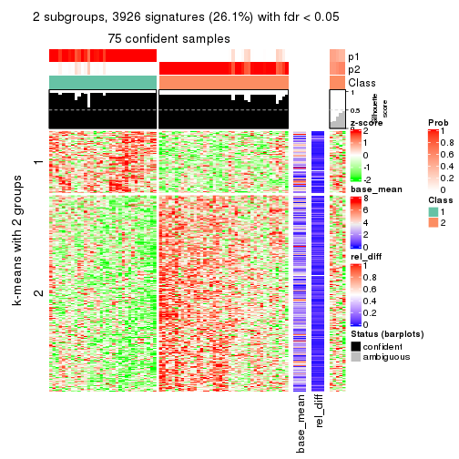
get_signatures(res, k = 3)
get_signatures(res, k = 4)
get_signatures(res, k = 5)
get_signatures(res, k = 6)
Signature heatmaps where rows are not scaled:
get_signatures(res, k = 2, scale_rows = FALSE)
get_signatures(res, k = 3, scale_rows = FALSE)
get_signatures(res, k = 4, scale_rows = FALSE)
get_signatures(res, k = 5, scale_rows = FALSE)

get_signatures(res, k = 6, scale_rows = FALSE)
Compare the overlap of signatures from different k:
compare_signatures(res)
get_signature() returns a data frame invisibly. TO get the list of signatures, the function
call should be assigned to a variable explicitly. In following code, if plot argument is set
to FALSE, no heatmap is plotted while only the differential analysis is performed.
# code only for demonstration
tb = get_signature(res, k = ..., plot = FALSE)
An example of the output of tb is:
#> which_row fdr mean_1 mean_2 scaled_mean_1 scaled_mean_2 km
#> 1 38 0.042760348 8.373488 9.131774 -0.5533452 0.5164555 1
#> 2 40 0.018707592 7.106213 8.469186 -0.6173731 0.5762149 1
#> 3 55 0.019134737 10.221463 11.207825 -0.6159697 0.5749050 1
#> 4 59 0.006059896 5.921854 7.869574 -0.6899429 0.6439467 1
#> 5 60 0.018055526 8.928898 10.211722 -0.6204761 0.5791110 1
#> 6 98 0.009384629 15.714769 14.887706 0.6635654 -0.6193277 2
...
The columns in tb are:
which_row: row indices corresponding to the input matrix.fdr: FDR for the differential test. mean_x: The mean value in group x.scaled_mean_x: The mean value in group x after rows are scaled.km: Row groups if k-means clustering is applied to rows.UMAP plot which shows how samples are separated.
dimension_reduction(res, k = 2, method = "UMAP")

dimension_reduction(res, k = 3, method = "UMAP")
dimension_reduction(res, k = 4, method = "UMAP")
dimension_reduction(res, k = 5, method = "UMAP")
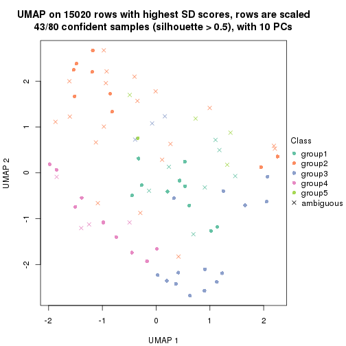
dimension_reduction(res, k = 6, method = "UMAP")
Following heatmap shows how subgroups are split when increasing k:
collect_classes(res)
If matrix rows can be associated to genes, consider to use functional_enrichment(res,
...) to perform function enrichment for the signature genes. See this vignette for more detailed explanations.
The object with results only for a single top-value method and a single partition method can be extracted as:
res = res_list["CV", "hclust"]
# you can also extract it by
# res = res_list["CV:hclust"]
A summary of res and all the functions that can be applied to it:
res
#> A 'ConsensusPartition' object with k = 2, 3, 4, 5, 6.
#> On a matrix with 15020 rows and 80 columns.
#> Top rows (1000, 2000, 3000, 4000, 5000) are extracted by 'CV' method.
#> Subgroups are detected by 'hclust' method.
#> Performed in total 1250 partitions by row resampling.
#> Best k for subgroups seems to be 4.
#>
#> Following methods can be applied to this 'ConsensusPartition' object:
#> [1] "cola_report" "collect_classes" "collect_plots"
#> [4] "collect_stats" "colnames" "compare_signatures"
#> [7] "consensus_heatmap" "dimension_reduction" "functional_enrichment"
#> [10] "get_anno_col" "get_anno" "get_classes"
#> [13] "get_consensus" "get_matrix" "get_membership"
#> [16] "get_param" "get_signatures" "get_stats"
#> [19] "is_best_k" "is_stable_k" "membership_heatmap"
#> [22] "ncol" "nrow" "plot_ecdf"
#> [25] "rownames" "select_partition_number" "show"
#> [28] "suggest_best_k" "test_to_known_factors"
collect_plots() function collects all the plots made from res for all k (number of partitions)
into one single page to provide an easy and fast comparison between different k.
collect_plots(res)
The plots are:
k and the heatmap of
predicted classes for each k.k.k.k.All the plots in panels can be made by individual functions and they are plotted later in this section.
select_partition_number() produces several plots showing different
statistics for choosing “optimized” k. There are following statistics:
k;k, the area increased is defined as \(A_k - A_{k-1}\).The detailed explanations of these statistics can be found in the cola vignette.
Generally speaking, lower PAC score, higher mean silhouette score or higher
concordance corresponds to better partition. Rand index and Jaccard index
measure how similar the current partition is compared to partition with k-1.
If they are too similar, we won't accept k is better than k-1.
select_partition_number(res)
The numeric values for all these statistics can be obtained by get_stats().
get_stats(res)
#> k 1-PAC mean_silhouette concordance area_increased Rand Jaccard
#> 2 2 0.5130 0.873 0.911 0.1399 0.975 0.975
#> 3 3 0.0832 0.411 0.671 1.9151 0.541 0.529
#> 4 4 0.0839 0.553 0.729 0.3415 0.799 0.653
#> 5 5 0.1842 0.433 0.687 0.1210 0.990 0.977
#> 6 6 0.2646 0.309 0.617 0.0926 0.887 0.742
suggest_best_k() suggests the best \(k\) based on these statistics. The rules are as follows:
suggest_best_k(res)
#> [1] 4
Following shows the table of the partitions (You need to click the show/hide
code output link to see it). The membership matrix (columns with name p*)
is inferred by
clue::cl_consensus()
function with the SE method. Basically the value in the membership matrix
represents the probability to belong to a certain group. The finall class
label for an item is determined with the group with highest probability it
belongs to.
In get_classes() function, the entropy is calculated from the membership
matrix and the silhouette score is calculated from the consensus matrix.
cbind(get_classes(res, k = 2), get_membership(res, k = 2))
#> class entropy silhouette p1 p2
#> SRR1851004 1 0.7219 0.844 0.800 0.200
#> SRR1851003 1 0.7219 0.844 0.800 0.200
#> SRR1851002 1 0.7056 0.849 0.808 0.192
#> SRR1851000 1 0.0672 0.916 0.992 0.008
#> SRR1851001 1 0.7056 0.849 0.808 0.192
#> SRR1850998 1 0.9358 0.651 0.648 0.352
#> SRR1850999 1 0.0672 0.916 0.992 0.008
#> SRR1850997 1 0.9358 0.651 0.648 0.352
#> SRR1850996 1 0.1414 0.909 0.980 0.020
#> SRR1851016 1 0.1184 0.915 0.984 0.016
#> SRR1851010 1 0.2423 0.915 0.960 0.040
#> SRR1851014 1 0.2423 0.915 0.960 0.040
#> SRR1851015 1 0.1414 0.915 0.980 0.020
#> SRR1851013 1 0.2236 0.915 0.964 0.036
#> SRR1851012 1 0.2778 0.916 0.952 0.048
#> SRR1851011 1 0.2778 0.915 0.952 0.048
#> SRR1851009 1 0.6973 0.853 0.812 0.188
#> SRR1851008 1 0.1414 0.914 0.980 0.020
#> SRR1851007 1 0.1414 0.914 0.980 0.020
#> SRR1851006 1 0.2423 0.915 0.960 0.040
#> SRR1851005 1 0.2423 0.915 0.960 0.040
#> SRR1850995 1 0.1414 0.909 0.980 0.020
#> SRR1850994 1 0.1414 0.909 0.980 0.020
#> SRR1850993 1 0.1414 0.909 0.980 0.020
#> SRR1850992 1 0.2043 0.914 0.968 0.032
#> SRR1850991 1 0.2043 0.914 0.968 0.032
#> SRR1850990 1 0.2043 0.914 0.968 0.032
#> SRR1850989 1 0.2043 0.914 0.968 0.032
#> SRR1850987 1 0.4431 0.902 0.908 0.092
#> SRR1850986 1 0.1414 0.909 0.980 0.020
#> SRR1850985 1 0.1414 0.909 0.980 0.020
#> SRR1850983 2 0.1633 0.000 0.024 0.976
#> SRR1850984 1 0.7056 0.850 0.808 0.192
#> SRR1850981 1 0.2043 0.914 0.968 0.032
#> SRR1850980 1 0.1843 0.917 0.972 0.028
#> SRR1850979 1 0.1843 0.917 0.972 0.028
#> SRR1850978 1 0.1414 0.909 0.980 0.020
#> SRR1850977 1 0.1414 0.909 0.980 0.020
#> SRR1850976 1 0.1414 0.909 0.980 0.020
#> SRR1850975 1 0.1414 0.909 0.980 0.020
#> SRR1850974 1 0.8327 0.783 0.736 0.264
#> SRR1850973 1 0.7745 0.822 0.772 0.228
#> SRR1850972 1 0.0376 0.913 0.996 0.004
#> SRR1850970 1 0.6048 0.881 0.852 0.148
#> SRR1850971 1 0.0376 0.913 0.996 0.004
#> SRR1850968 1 0.2423 0.914 0.960 0.040
#> SRR1850969 1 0.7139 0.847 0.804 0.196
#> SRR1850967 1 0.2423 0.914 0.960 0.040
#> SRR1850966 1 0.6801 0.857 0.820 0.180
#> SRR1850965 1 0.6801 0.857 0.820 0.180
#> SRR1850964 1 0.3733 0.906 0.928 0.072
#> SRR1850963 1 0.3733 0.906 0.928 0.072
#> SRR1850962 1 0.1633 0.908 0.976 0.024
#> SRR1850961 1 0.1633 0.908 0.976 0.024
#> SRR1850959 1 0.4431 0.902 0.908 0.092
#> SRR1850960 1 0.4431 0.902 0.908 0.092
#> SRR1850958 1 0.6148 0.875 0.848 0.152
#> SRR1850988 1 0.4431 0.902 0.908 0.092
#> SRR1850957 1 0.6148 0.875 0.848 0.152
#> SRR1850956 1 0.4298 0.902 0.912 0.088
#> SRR1850955 1 0.4298 0.902 0.912 0.088
#> SRR1850953 1 0.1843 0.912 0.972 0.028
#> SRR1850954 1 0.1633 0.911 0.976 0.024
#> SRR1850952 1 0.1414 0.909 0.980 0.020
#> SRR1850982 1 0.2043 0.914 0.968 0.032
#> SRR1850951 1 0.1414 0.909 0.980 0.020
#> SRR1850950 1 0.7815 0.817 0.768 0.232
#> SRR1850949 1 0.7815 0.817 0.768 0.232
#> SRR1850948 1 0.1633 0.908 0.976 0.024
#> SRR1850947 1 0.1633 0.908 0.976 0.024
#> SRR1850946 1 0.8207 0.793 0.744 0.256
#> SRR1850945 1 0.8207 0.793 0.744 0.256
#> SRR1850944 1 0.7299 0.837 0.796 0.204
#> SRR1850943 1 0.7299 0.837 0.796 0.204
#> SRR1850942 1 0.1633 0.908 0.976 0.024
#> SRR1850940 1 0.3584 0.913 0.932 0.068
#> SRR1850941 1 0.1633 0.908 0.976 0.024
#> SRR1850938 1 0.7299 0.844 0.796 0.204
#> SRR1850939 1 0.3584 0.913 0.932 0.068
#> SRR1850937 1 0.7299 0.844 0.796 0.204
cbind(get_classes(res, k = 3), get_membership(res, k = 3))
#> class entropy silhouette p1 p2 p3
#> SRR1851004 2 0.219 0.6159 0.028 0.948 0.024
#> SRR1851003 2 0.219 0.6159 0.028 0.948 0.024
#> SRR1851002 2 0.231 0.6166 0.024 0.944 0.032
#> SRR1851000 2 0.627 -0.3368 0.000 0.548 0.452
#> SRR1851001 2 0.231 0.6166 0.024 0.944 0.032
#> SRR1850998 2 0.536 0.4938 0.168 0.800 0.032
#> SRR1850999 2 0.627 -0.3368 0.000 0.548 0.452
#> SRR1850997 2 0.536 0.4938 0.168 0.800 0.032
#> SRR1850996 3 0.682 0.4569 0.012 0.484 0.504
#> SRR1851016 2 0.603 0.4119 0.024 0.732 0.244
#> SRR1851010 3 0.652 0.4099 0.004 0.480 0.516
#> SRR1851014 2 0.631 -0.3789 0.000 0.508 0.492
#> SRR1851015 2 0.586 0.4250 0.020 0.740 0.240
#> SRR1851013 2 0.631 -0.4180 0.000 0.512 0.488
#> SRR1851012 3 0.650 0.3254 0.004 0.468 0.528
#> SRR1851011 3 0.652 0.3782 0.004 0.492 0.504
#> SRR1851009 2 0.219 0.6239 0.024 0.948 0.028
#> SRR1851008 3 0.629 0.5257 0.000 0.468 0.532
#> SRR1851007 3 0.629 0.5257 0.000 0.468 0.532
#> SRR1851006 2 0.652 -0.4152 0.004 0.516 0.480
#> SRR1851005 2 0.652 -0.4152 0.004 0.516 0.480
#> SRR1850995 3 0.682 0.4569 0.012 0.484 0.504
#> SRR1850994 2 0.718 -0.3580 0.024 0.508 0.468
#> SRR1850993 2 0.718 -0.3580 0.024 0.508 0.468
#> SRR1850992 2 0.621 0.5027 0.048 0.752 0.200
#> SRR1850991 2 0.621 0.5027 0.048 0.752 0.200
#> SRR1850990 2 0.626 0.4998 0.048 0.748 0.204
#> SRR1850989 2 0.626 0.4998 0.048 0.748 0.204
#> SRR1850987 2 0.475 0.5659 0.012 0.816 0.172
#> SRR1850986 3 0.712 0.2525 0.048 0.296 0.656
#> SRR1850985 3 0.718 0.2551 0.048 0.304 0.648
#> SRR1850983 1 0.186 0.0000 0.948 0.052 0.000
#> SRR1850984 2 0.178 0.6226 0.020 0.960 0.020
#> SRR1850981 2 0.635 0.4868 0.048 0.740 0.212
#> SRR1850980 2 0.625 -0.0639 0.004 0.620 0.376
#> SRR1850979 2 0.625 -0.0639 0.004 0.620 0.376
#> SRR1850978 3 0.623 0.6230 0.004 0.372 0.624
#> SRR1850977 3 0.623 0.6230 0.004 0.372 0.624
#> SRR1850976 3 0.518 0.3972 0.032 0.156 0.812
#> SRR1850975 3 0.518 0.3972 0.032 0.156 0.812
#> SRR1850974 2 0.730 0.3417 0.088 0.692 0.220
#> SRR1850973 2 0.496 0.5427 0.048 0.836 0.116
#> SRR1850972 3 0.630 0.4932 0.000 0.472 0.528
#> SRR1850970 2 0.491 0.4551 0.008 0.796 0.196
#> SRR1850971 3 0.630 0.4932 0.000 0.472 0.528
#> SRR1850968 3 0.648 0.5344 0.004 0.448 0.548
#> SRR1850969 2 0.177 0.6208 0.024 0.960 0.016
#> SRR1850967 3 0.648 0.5344 0.004 0.448 0.548
#> SRR1850966 2 0.227 0.6244 0.016 0.944 0.040
#> SRR1850965 2 0.227 0.6244 0.016 0.944 0.040
#> SRR1850964 2 0.486 0.5482 0.012 0.808 0.180
#> SRR1850963 2 0.486 0.5482 0.012 0.808 0.180
#> SRR1850962 3 0.566 0.6286 0.004 0.284 0.712
#> SRR1850961 3 0.566 0.6286 0.004 0.284 0.712
#> SRR1850959 2 0.426 0.5843 0.012 0.848 0.140
#> SRR1850960 2 0.426 0.5843 0.012 0.848 0.140
#> SRR1850958 2 0.210 0.6228 0.004 0.944 0.052
#> SRR1850988 2 0.475 0.5659 0.012 0.816 0.172
#> SRR1850957 2 0.210 0.6228 0.004 0.944 0.052
#> SRR1850956 2 0.411 0.5730 0.004 0.844 0.152
#> SRR1850955 2 0.411 0.5730 0.004 0.844 0.152
#> SRR1850953 3 0.707 0.4134 0.020 0.476 0.504
#> SRR1850954 3 0.707 0.4178 0.020 0.472 0.508
#> SRR1850952 3 0.623 0.6230 0.004 0.372 0.624
#> SRR1850982 2 0.635 0.4868 0.048 0.740 0.212
#> SRR1850951 3 0.623 0.6230 0.004 0.372 0.624
#> SRR1850950 2 0.512 0.5587 0.060 0.832 0.108
#> SRR1850949 2 0.512 0.5587 0.060 0.832 0.108
#> SRR1850948 3 0.578 0.6318 0.004 0.300 0.696
#> SRR1850947 3 0.578 0.6318 0.004 0.300 0.696
#> SRR1850946 2 0.695 0.4018 0.084 0.720 0.196
#> SRR1850945 2 0.695 0.4018 0.084 0.720 0.196
#> SRR1850944 2 0.464 0.6120 0.060 0.856 0.084
#> SRR1850943 2 0.464 0.6120 0.060 0.856 0.084
#> SRR1850942 3 0.575 0.6329 0.004 0.296 0.700
#> SRR1850940 3 0.652 0.3069 0.004 0.488 0.508
#> SRR1850941 3 0.575 0.6329 0.004 0.296 0.700
#> SRR1850938 2 0.324 0.6079 0.032 0.912 0.056
#> SRR1850939 3 0.652 0.3069 0.004 0.488 0.508
#> SRR1850937 2 0.324 0.6079 0.032 0.912 0.056
cbind(get_classes(res, k = 4), get_membership(res, k = 4))
#> class entropy silhouette p1 p2 p3 p4
#> SRR1851004 2 0.180 0.694 0.016 0.948 0.032 0.004
#> SRR1851003 2 0.180 0.694 0.016 0.948 0.032 0.004
#> SRR1851002 2 0.192 0.693 0.024 0.944 0.028 0.004
#> SRR1851000 3 0.614 0.423 0.052 0.404 0.544 0.000
#> SRR1851001 2 0.192 0.693 0.024 0.944 0.028 0.004
#> SRR1850998 2 0.503 0.566 0.096 0.804 0.040 0.060
#> SRR1850999 3 0.615 0.414 0.052 0.408 0.540 0.000
#> SRR1850997 2 0.503 0.566 0.096 0.804 0.040 0.060
#> SRR1850996 3 0.627 0.598 0.108 0.248 0.644 0.000
#> SRR1851016 2 0.689 0.418 0.152 0.580 0.268 0.000
#> SRR1851010 3 0.577 0.470 0.032 0.404 0.564 0.000
#> SRR1851014 3 0.611 0.553 0.064 0.332 0.604 0.000
#> SRR1851015 2 0.683 0.431 0.148 0.588 0.264 0.000
#> SRR1851013 3 0.584 0.560 0.044 0.352 0.604 0.000
#> SRR1851012 3 0.598 0.441 0.076 0.272 0.652 0.000
#> SRR1851011 3 0.578 0.444 0.032 0.408 0.560 0.000
#> SRR1851009 2 0.291 0.704 0.016 0.892 0.088 0.004
#> SRR1851008 3 0.536 0.605 0.028 0.320 0.652 0.000
#> SRR1851007 3 0.536 0.605 0.028 0.320 0.652 0.000
#> SRR1851006 3 0.547 0.432 0.016 0.440 0.544 0.000
#> SRR1851005 3 0.547 0.432 0.016 0.440 0.544 0.000
#> SRR1850995 3 0.627 0.598 0.108 0.248 0.644 0.000
#> SRR1850994 3 0.666 0.399 0.220 0.160 0.620 0.000
#> SRR1850993 3 0.666 0.399 0.220 0.160 0.620 0.000
#> SRR1850992 2 0.642 0.593 0.216 0.644 0.140 0.000
#> SRR1850991 2 0.642 0.593 0.216 0.644 0.140 0.000
#> SRR1850990 2 0.645 0.590 0.220 0.640 0.140 0.000
#> SRR1850989 2 0.645 0.590 0.220 0.640 0.140 0.000
#> SRR1850987 2 0.559 0.620 0.080 0.708 0.212 0.000
#> SRR1850986 1 0.433 0.682 0.816 0.112 0.072 0.000
#> SRR1850985 1 0.453 0.688 0.804 0.116 0.080 0.000
#> SRR1850983 4 0.000 0.000 0.000 0.000 0.000 1.000
#> SRR1850984 2 0.241 0.705 0.016 0.920 0.060 0.004
#> SRR1850981 2 0.672 0.556 0.224 0.612 0.164 0.000
#> SRR1850980 2 0.601 -0.185 0.040 0.496 0.464 0.000
#> SRR1850979 2 0.601 -0.185 0.040 0.496 0.464 0.000
#> SRR1850978 3 0.409 0.592 0.072 0.096 0.832 0.000
#> SRR1850977 3 0.409 0.592 0.072 0.096 0.832 0.000
#> SRR1850976 1 0.562 0.708 0.660 0.048 0.292 0.000
#> SRR1850975 1 0.562 0.708 0.660 0.048 0.292 0.000
#> SRR1850974 2 0.655 0.343 0.136 0.624 0.240 0.000
#> SRR1850973 2 0.494 0.568 0.072 0.780 0.144 0.004
#> SRR1850972 3 0.525 0.626 0.044 0.248 0.708 0.000
#> SRR1850970 2 0.461 0.537 0.024 0.752 0.224 0.000
#> SRR1850971 3 0.525 0.626 0.044 0.248 0.708 0.000
#> SRR1850968 3 0.511 0.608 0.020 0.308 0.672 0.000
#> SRR1850969 2 0.225 0.701 0.016 0.928 0.052 0.004
#> SRR1850967 3 0.511 0.608 0.020 0.308 0.672 0.000
#> SRR1850966 2 0.272 0.705 0.032 0.904 0.064 0.000
#> SRR1850965 2 0.272 0.705 0.032 0.904 0.064 0.000
#> SRR1850964 2 0.605 0.600 0.120 0.680 0.200 0.000
#> SRR1850963 2 0.605 0.600 0.120 0.680 0.200 0.000
#> SRR1850962 3 0.213 0.606 0.004 0.076 0.920 0.000
#> SRR1850961 3 0.213 0.606 0.004 0.076 0.920 0.000
#> SRR1850959 2 0.497 0.655 0.076 0.768 0.156 0.000
#> SRR1850960 2 0.497 0.655 0.076 0.768 0.156 0.000
#> SRR1850958 2 0.324 0.703 0.036 0.876 0.088 0.000
#> SRR1850988 2 0.559 0.620 0.080 0.708 0.212 0.000
#> SRR1850957 2 0.324 0.703 0.036 0.876 0.088 0.000
#> SRR1850956 2 0.537 0.634 0.080 0.732 0.188 0.000
#> SRR1850955 2 0.537 0.634 0.080 0.732 0.188 0.000
#> SRR1850953 3 0.691 0.426 0.196 0.212 0.592 0.000
#> SRR1850954 3 0.692 0.421 0.200 0.208 0.592 0.000
#> SRR1850952 3 0.390 0.579 0.072 0.084 0.844 0.000
#> SRR1850982 2 0.672 0.556 0.224 0.612 0.164 0.000
#> SRR1850951 3 0.390 0.579 0.072 0.084 0.844 0.000
#> SRR1850950 2 0.505 0.630 0.084 0.764 0.152 0.000
#> SRR1850949 2 0.505 0.630 0.084 0.764 0.152 0.000
#> SRR1850948 3 0.205 0.604 0.004 0.072 0.924 0.000
#> SRR1850947 3 0.205 0.604 0.004 0.072 0.924 0.000
#> SRR1850946 2 0.628 0.424 0.128 0.656 0.216 0.000
#> SRR1850945 2 0.628 0.424 0.128 0.656 0.216 0.000
#> SRR1850944 2 0.515 0.675 0.100 0.760 0.140 0.000
#> SRR1850943 2 0.515 0.675 0.100 0.760 0.140 0.000
#> SRR1850942 3 0.213 0.605 0.004 0.076 0.920 0.000
#> SRR1850940 3 0.625 0.380 0.064 0.372 0.564 0.000
#> SRR1850941 3 0.213 0.605 0.004 0.076 0.920 0.000
#> SRR1850938 2 0.346 0.672 0.040 0.864 0.096 0.000
#> SRR1850939 3 0.625 0.380 0.064 0.372 0.564 0.000
#> SRR1850937 2 0.346 0.672 0.040 0.864 0.096 0.000
cbind(get_classes(res, k = 5), get_membership(res, k = 5))
#> class entropy silhouette p1 p2 p3 p4 p5
#> SRR1851004 2 0.226 0.67479 0.004 0.912 0.012 0.068 0.004
#> SRR1851003 2 0.226 0.67479 0.004 0.912 0.012 0.068 0.004
#> SRR1851002 2 0.268 0.67385 0.008 0.892 0.016 0.080 0.004
#> SRR1851000 3 0.625 0.34443 0.024 0.400 0.496 0.080 0.000
#> SRR1851001 2 0.268 0.67385 0.008 0.892 0.016 0.080 0.004
#> SRR1850998 2 0.475 0.47096 0.008 0.700 0.000 0.252 0.040
#> SRR1850999 3 0.625 0.33440 0.024 0.404 0.492 0.080 0.000
#> SRR1850997 2 0.475 0.47096 0.008 0.700 0.000 0.252 0.040
#> SRR1850996 3 0.642 0.39588 0.056 0.220 0.616 0.108 0.000
#> SRR1851016 2 0.689 0.41511 0.108 0.580 0.220 0.092 0.000
#> SRR1851010 3 0.639 0.19703 0.000 0.344 0.476 0.180 0.000
#> SRR1851014 3 0.656 -0.25627 0.000 0.208 0.440 0.352 0.000
#> SRR1851015 2 0.682 0.42563 0.104 0.588 0.216 0.092 0.000
#> SRR1851013 3 0.661 0.00254 0.000 0.252 0.460 0.288 0.000
#> SRR1851012 4 0.603 0.00000 0.004 0.112 0.352 0.532 0.000
#> SRR1851011 3 0.671 -0.04810 0.000 0.332 0.412 0.256 0.000
#> SRR1851009 2 0.310 0.68220 0.004 0.872 0.072 0.048 0.004
#> SRR1851008 3 0.562 0.45753 0.012 0.292 0.620 0.076 0.000
#> SRR1851007 3 0.562 0.45753 0.012 0.292 0.620 0.076 0.000
#> SRR1851006 3 0.615 0.26092 0.000 0.400 0.468 0.132 0.000
#> SRR1851005 3 0.615 0.26092 0.000 0.400 0.468 0.132 0.000
#> SRR1850995 3 0.642 0.39588 0.056 0.220 0.616 0.108 0.000
#> SRR1850994 3 0.676 0.34441 0.200 0.144 0.592 0.064 0.000
#> SRR1850993 3 0.676 0.34441 0.200 0.144 0.592 0.064 0.000
#> SRR1850992 2 0.585 0.59068 0.192 0.672 0.092 0.044 0.000
#> SRR1850991 2 0.585 0.59068 0.192 0.672 0.092 0.044 0.000
#> SRR1850990 2 0.588 0.58759 0.196 0.668 0.092 0.044 0.000
#> SRR1850989 2 0.588 0.58759 0.196 0.668 0.092 0.044 0.000
#> SRR1850987 2 0.531 0.60474 0.048 0.720 0.172 0.060 0.000
#> SRR1850986 1 0.128 0.67970 0.956 0.032 0.012 0.000 0.000
#> SRR1850985 1 0.157 0.68288 0.944 0.036 0.020 0.000 0.000
#> SRR1850983 5 0.000 0.00000 0.000 0.000 0.000 0.000 1.000
#> SRR1850984 2 0.259 0.68675 0.004 0.896 0.020 0.076 0.004
#> SRR1850981 2 0.618 0.56081 0.200 0.640 0.116 0.044 0.000
#> SRR1850980 2 0.574 -0.12179 0.020 0.500 0.436 0.044 0.000
#> SRR1850979 2 0.574 -0.12179 0.020 0.500 0.436 0.044 0.000
#> SRR1850978 3 0.415 0.44297 0.040 0.092 0.816 0.052 0.000
#> SRR1850977 3 0.415 0.44297 0.040 0.092 0.816 0.052 0.000
#> SRR1850976 1 0.493 0.69479 0.732 0.020 0.184 0.064 0.000
#> SRR1850975 1 0.493 0.69479 0.732 0.020 0.184 0.064 0.000
#> SRR1850974 2 0.578 -0.04533 0.000 0.468 0.088 0.444 0.000
#> SRR1850973 2 0.506 0.38337 0.000 0.632 0.044 0.320 0.004
#> SRR1850972 3 0.520 0.48539 0.020 0.256 0.676 0.048 0.000
#> SRR1850970 2 0.472 0.55102 0.004 0.744 0.148 0.104 0.000
#> SRR1850971 3 0.520 0.48539 0.020 0.256 0.676 0.048 0.000
#> SRR1850968 3 0.566 0.41976 0.000 0.288 0.600 0.112 0.000
#> SRR1850969 2 0.214 0.68199 0.004 0.924 0.024 0.044 0.004
#> SRR1850967 3 0.566 0.41976 0.000 0.288 0.600 0.112 0.000
#> SRR1850966 2 0.267 0.68736 0.020 0.900 0.032 0.048 0.000
#> SRR1850965 2 0.267 0.68736 0.020 0.900 0.032 0.048 0.000
#> SRR1850964 2 0.591 0.58844 0.092 0.684 0.156 0.068 0.000
#> SRR1850963 2 0.591 0.58844 0.092 0.684 0.156 0.068 0.000
#> SRR1850962 3 0.279 0.38096 0.004 0.072 0.884 0.040 0.000
#> SRR1850961 3 0.279 0.38096 0.004 0.072 0.884 0.040 0.000
#> SRR1850959 2 0.453 0.63491 0.044 0.784 0.128 0.044 0.000
#> SRR1850960 2 0.453 0.63491 0.044 0.784 0.128 0.044 0.000
#> SRR1850958 2 0.266 0.68575 0.024 0.900 0.052 0.024 0.000
#> SRR1850988 2 0.531 0.60474 0.048 0.720 0.172 0.060 0.000
#> SRR1850957 2 0.266 0.68575 0.024 0.900 0.052 0.024 0.000
#> SRR1850956 2 0.494 0.62130 0.060 0.752 0.148 0.040 0.000
#> SRR1850955 2 0.494 0.62130 0.060 0.752 0.148 0.040 0.000
#> SRR1850953 3 0.760 0.17271 0.108 0.164 0.496 0.232 0.000
#> SRR1850954 3 0.758 0.16676 0.108 0.156 0.496 0.240 0.000
#> SRR1850952 3 0.398 0.43063 0.040 0.080 0.828 0.052 0.000
#> SRR1850982 2 0.618 0.56081 0.200 0.640 0.116 0.044 0.000
#> SRR1850951 3 0.398 0.43063 0.040 0.080 0.828 0.052 0.000
#> SRR1850950 2 0.483 0.59139 0.000 0.712 0.088 0.200 0.000
#> SRR1850949 2 0.483 0.59139 0.000 0.712 0.088 0.200 0.000
#> SRR1850948 3 0.268 0.36487 0.004 0.052 0.892 0.052 0.000
#> SRR1850947 3 0.268 0.36487 0.004 0.052 0.892 0.052 0.000
#> SRR1850946 2 0.578 0.24718 0.000 0.552 0.104 0.344 0.000
#> SRR1850945 2 0.578 0.24718 0.000 0.552 0.104 0.344 0.000
#> SRR1850944 2 0.472 0.65576 0.020 0.764 0.084 0.132 0.000
#> SRR1850943 2 0.472 0.65576 0.020 0.764 0.084 0.132 0.000
#> SRR1850942 3 0.282 0.36610 0.004 0.060 0.884 0.052 0.000
#> SRR1850940 3 0.671 -0.13211 0.000 0.300 0.424 0.276 0.000
#> SRR1850941 3 0.282 0.36610 0.004 0.060 0.884 0.052 0.000
#> SRR1850938 2 0.379 0.64298 0.000 0.800 0.048 0.152 0.000
#> SRR1850939 3 0.671 -0.13211 0.000 0.300 0.424 0.276 0.000
#> SRR1850937 2 0.379 0.64298 0.000 0.800 0.048 0.152 0.000
cbind(get_classes(res, k = 6), get_membership(res, k = 6))
#> class entropy silhouette p1 p2 p3 p4 p5 p6
#> SRR1851004 2 0.383 0.4256 0.000 0.712 0.012 0.268 0 0.008
#> SRR1851003 2 0.383 0.4256 0.000 0.712 0.012 0.268 0 0.008
#> SRR1851002 2 0.374 0.4236 0.000 0.716 0.008 0.268 0 0.008
#> SRR1851000 3 0.625 0.1113 0.008 0.408 0.444 0.036 0 0.104
#> SRR1851001 2 0.374 0.4236 0.000 0.716 0.008 0.268 0 0.008
#> SRR1850998 4 0.510 0.2379 0.004 0.428 0.000 0.500 0 0.068
#> SRR1850999 3 0.625 0.1080 0.008 0.412 0.440 0.036 0 0.104
#> SRR1850997 4 0.510 0.2379 0.004 0.428 0.000 0.500 0 0.068
#> SRR1850996 3 0.642 0.1204 0.040 0.188 0.584 0.028 0 0.160
#> SRR1851016 2 0.569 0.4066 0.052 0.656 0.184 0.012 0 0.096
#> SRR1851010 3 0.709 -0.1000 0.004 0.272 0.380 0.284 0 0.060
#> SRR1851014 6 0.741 0.0000 0.004 0.112 0.332 0.208 0 0.344
#> SRR1851015 2 0.561 0.4156 0.048 0.664 0.180 0.012 0 0.096
#> SRR1851013 3 0.758 -0.7902 0.004 0.156 0.356 0.200 0 0.284
#> SRR1851012 4 0.656 -0.4844 0.000 0.028 0.264 0.420 0 0.288
#> SRR1851011 4 0.714 -0.1245 0.004 0.224 0.328 0.372 0 0.072
#> SRR1851009 2 0.444 0.4835 0.000 0.712 0.060 0.216 0 0.012
#> SRR1851008 3 0.632 0.1983 0.008 0.256 0.564 0.084 0 0.088
#> SRR1851007 3 0.632 0.1983 0.008 0.256 0.564 0.084 0 0.088
#> SRR1851006 3 0.714 -0.0435 0.004 0.304 0.380 0.244 0 0.068
#> SRR1851005 3 0.714 -0.0435 0.004 0.304 0.380 0.244 0 0.068
#> SRR1850995 3 0.642 0.1204 0.040 0.188 0.584 0.028 0 0.160
#> SRR1850994 3 0.654 0.2022 0.172 0.140 0.556 0.000 0 0.132
#> SRR1850993 3 0.654 0.2022 0.172 0.140 0.556 0.000 0 0.132
#> SRR1850992 2 0.399 0.5514 0.132 0.788 0.060 0.008 0 0.012
#> SRR1850991 2 0.399 0.5514 0.132 0.788 0.060 0.008 0 0.012
#> SRR1850990 2 0.403 0.5487 0.136 0.784 0.060 0.008 0 0.012
#> SRR1850989 2 0.403 0.5487 0.136 0.784 0.060 0.008 0 0.012
#> SRR1850987 2 0.351 0.5691 0.000 0.804 0.152 0.028 0 0.016
#> SRR1850986 1 0.187 0.6663 0.920 0.064 0.008 0.004 0 0.004
#> SRR1850985 1 0.198 0.6636 0.912 0.068 0.016 0.000 0 0.004
#> SRR1850983 5 0.000 0.0000 0.000 0.000 0.000 0.000 1 0.000
#> SRR1850984 2 0.376 0.4846 0.000 0.736 0.012 0.240 0 0.012
#> SRR1850981 2 0.446 0.5334 0.132 0.756 0.088 0.012 0 0.012
#> SRR1850980 2 0.569 -0.0591 0.008 0.500 0.404 0.060 0 0.028
#> SRR1850979 2 0.569 -0.0591 0.008 0.500 0.404 0.060 0 0.028
#> SRR1850978 3 0.388 0.3633 0.028 0.064 0.800 0.000 0 0.108
#> SRR1850977 3 0.388 0.3633 0.028 0.064 0.800 0.000 0 0.108
#> SRR1850976 1 0.551 0.6641 0.672 0.004 0.104 0.060 0 0.160
#> SRR1850975 1 0.551 0.6641 0.672 0.004 0.104 0.060 0 0.160
#> SRR1850974 4 0.418 0.4618 0.000 0.200 0.044 0.740 0 0.016
#> SRR1850973 4 0.469 0.3626 0.000 0.360 0.032 0.596 0 0.012
#> SRR1850972 3 0.523 0.2790 0.008 0.260 0.636 0.012 0 0.084
#> SRR1850970 2 0.569 0.1973 0.004 0.584 0.064 0.300 0 0.048
#> SRR1850971 3 0.523 0.2790 0.008 0.260 0.636 0.012 0 0.084
#> SRR1850968 3 0.670 0.1534 0.004 0.224 0.524 0.164 0 0.084
#> SRR1850969 2 0.365 0.4870 0.000 0.752 0.016 0.224 0 0.008
#> SRR1850967 3 0.670 0.1534 0.004 0.224 0.524 0.164 0 0.084
#> SRR1850966 2 0.394 0.5104 0.008 0.756 0.020 0.204 0 0.012
#> SRR1850965 2 0.394 0.5104 0.008 0.756 0.020 0.204 0 0.012
#> SRR1850964 2 0.449 0.5653 0.036 0.768 0.136 0.032 0 0.028
#> SRR1850963 2 0.449 0.5653 0.036 0.768 0.136 0.032 0 0.028
#> SRR1850962 3 0.278 0.3518 0.000 0.068 0.876 0.032 0 0.024
#> SRR1850961 3 0.278 0.3518 0.000 0.068 0.876 0.032 0 0.024
#> SRR1850959 2 0.338 0.5707 0.000 0.820 0.124 0.048 0 0.008
#> SRR1850960 2 0.338 0.5707 0.000 0.820 0.124 0.048 0 0.008
#> SRR1850958 2 0.367 0.5569 0.008 0.800 0.036 0.148 0 0.008
#> SRR1850988 2 0.351 0.5691 0.000 0.804 0.152 0.028 0 0.016
#> SRR1850957 2 0.367 0.5569 0.008 0.800 0.036 0.148 0 0.008
#> SRR1850956 2 0.366 0.5846 0.012 0.816 0.124 0.028 0 0.020
#> SRR1850955 2 0.366 0.5846 0.012 0.816 0.124 0.028 0 0.020
#> SRR1850953 3 0.715 0.0372 0.064 0.112 0.456 0.044 0 0.324
#> SRR1850954 3 0.711 0.0276 0.064 0.104 0.452 0.044 0 0.336
#> SRR1850952 3 0.364 0.3569 0.028 0.048 0.816 0.000 0 0.108
#> SRR1850982 2 0.446 0.5334 0.132 0.756 0.088 0.012 0 0.012
#> SRR1850951 3 0.364 0.3569 0.028 0.048 0.816 0.000 0 0.108
#> SRR1850950 2 0.517 0.0911 0.000 0.532 0.048 0.400 0 0.020
#> SRR1850949 2 0.517 0.0911 0.000 0.532 0.048 0.400 0 0.020
#> SRR1850948 3 0.283 0.3512 0.000 0.052 0.876 0.044 0 0.028
#> SRR1850947 3 0.283 0.3512 0.000 0.052 0.876 0.044 0 0.028
#> SRR1850946 4 0.470 0.4705 0.000 0.316 0.056 0.624 0 0.004
#> SRR1850945 4 0.470 0.4705 0.000 0.316 0.056 0.624 0 0.004
#> SRR1850944 2 0.479 0.4549 0.008 0.696 0.060 0.220 0 0.016
#> SRR1850943 2 0.479 0.4549 0.008 0.696 0.060 0.220 0 0.016
#> SRR1850942 3 0.284 0.3464 0.000 0.040 0.876 0.052 0 0.032
#> SRR1850940 4 0.666 0.0925 0.000 0.188 0.352 0.412 0 0.048
#> SRR1850941 3 0.284 0.3464 0.000 0.040 0.876 0.052 0 0.032
#> SRR1850938 2 0.459 0.1891 0.000 0.588 0.036 0.372 0 0.004
#> SRR1850939 4 0.666 0.0925 0.000 0.188 0.352 0.412 0 0.048
#> SRR1850937 2 0.459 0.1891 0.000 0.588 0.036 0.372 0 0.004
Heatmaps for the consensus matrix. It visualizes the probability of two samples to be in a same group.
consensus_heatmap(res, k = 2)
consensus_heatmap(res, k = 3)
consensus_heatmap(res, k = 4)
consensus_heatmap(res, k = 5)
consensus_heatmap(res, k = 6)
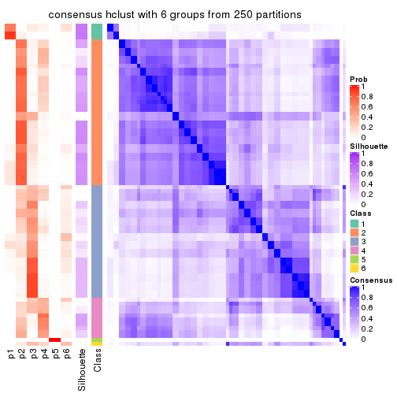
Heatmaps for the membership of samples in all partitions to see how consistent they are:
membership_heatmap(res, k = 2)
membership_heatmap(res, k = 3)
membership_heatmap(res, k = 4)
membership_heatmap(res, k = 5)
membership_heatmap(res, k = 6)
As soon as we have had the classes for columns, we can look for signatures which are significantly different between classes which can be candidate marks for certain classes. Following are the heatmaps for signatures.
Signature heatmaps where rows are scaled:
get_signatures(res, k = 2)

get_signatures(res, k = 3)
get_signatures(res, k = 4)
get_signatures(res, k = 5)
get_signatures(res, k = 6)
Signature heatmaps where rows are not scaled:
get_signatures(res, k = 2, scale_rows = FALSE)

get_signatures(res, k = 3, scale_rows = FALSE)
get_signatures(res, k = 4, scale_rows = FALSE)

get_signatures(res, k = 5, scale_rows = FALSE)
get_signatures(res, k = 6, scale_rows = FALSE)
Compare the overlap of signatures from different k:
compare_signatures(res)
get_signature() returns a data frame invisibly. TO get the list of signatures, the function
call should be assigned to a variable explicitly. In following code, if plot argument is set
to FALSE, no heatmap is plotted while only the differential analysis is performed.
# code only for demonstration
tb = get_signature(res, k = ..., plot = FALSE)
An example of the output of tb is:
#> which_row fdr mean_1 mean_2 scaled_mean_1 scaled_mean_2 km
#> 1 38 0.042760348 8.373488 9.131774 -0.5533452 0.5164555 1
#> 2 40 0.018707592 7.106213 8.469186 -0.6173731 0.5762149 1
#> 3 55 0.019134737 10.221463 11.207825 -0.6159697 0.5749050 1
#> 4 59 0.006059896 5.921854 7.869574 -0.6899429 0.6439467 1
#> 5 60 0.018055526 8.928898 10.211722 -0.6204761 0.5791110 1
#> 6 98 0.009384629 15.714769 14.887706 0.6635654 -0.6193277 2
...
The columns in tb are:
which_row: row indices corresponding to the input matrix.fdr: FDR for the differential test. mean_x: The mean value in group x.scaled_mean_x: The mean value in group x after rows are scaled.km: Row groups if k-means clustering is applied to rows.UMAP plot which shows how samples are separated.
dimension_reduction(res, k = 2, method = "UMAP")
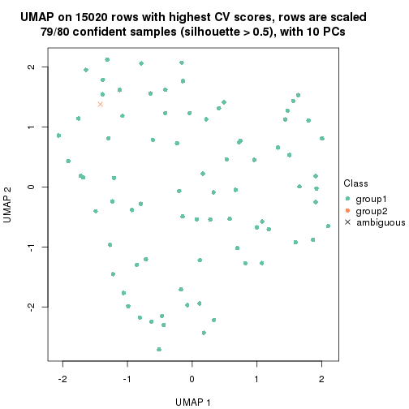
dimension_reduction(res, k = 3, method = "UMAP")
dimension_reduction(res, k = 4, method = "UMAP")
dimension_reduction(res, k = 5, method = "UMAP")
dimension_reduction(res, k = 6, method = "UMAP")
Following heatmap shows how subgroups are split when increasing k:
collect_classes(res)
If matrix rows can be associated to genes, consider to use functional_enrichment(res,
...) to perform function enrichment for the signature genes. See this vignette for more detailed explanations.
The object with results only for a single top-value method and a single partition method can be extracted as:
res = res_list["CV", "kmeans"]
# you can also extract it by
# res = res_list["CV:kmeans"]
A summary of res and all the functions that can be applied to it:
res
#> A 'ConsensusPartition' object with k = 2, 3, 4, 5, 6.
#> On a matrix with 15020 rows and 80 columns.
#> Top rows (1000, 2000, 3000, 4000, 5000) are extracted by 'CV' method.
#> Subgroups are detected by 'kmeans' method.
#> Performed in total 1250 partitions by row resampling.
#> Best k for subgroups seems to be 2.
#>
#> Following methods can be applied to this 'ConsensusPartition' object:
#> [1] "cola_report" "collect_classes" "collect_plots"
#> [4] "collect_stats" "colnames" "compare_signatures"
#> [7] "consensus_heatmap" "dimension_reduction" "functional_enrichment"
#> [10] "get_anno_col" "get_anno" "get_classes"
#> [13] "get_consensus" "get_matrix" "get_membership"
#> [16] "get_param" "get_signatures" "get_stats"
#> [19] "is_best_k" "is_stable_k" "membership_heatmap"
#> [22] "ncol" "nrow" "plot_ecdf"
#> [25] "rownames" "select_partition_number" "show"
#> [28] "suggest_best_k" "test_to_known_factors"
collect_plots() function collects all the plots made from res for all k (number of partitions)
into one single page to provide an easy and fast comparison between different k.
collect_plots(res)
The plots are:
k and the heatmap of
predicted classes for each k.k.k.k.All the plots in panels can be made by individual functions and they are plotted later in this section.
select_partition_number() produces several plots showing different
statistics for choosing “optimized” k. There are following statistics:
k;k, the area increased is defined as \(A_k - A_{k-1}\).The detailed explanations of these statistics can be found in the cola vignette.
Generally speaking, lower PAC score, higher mean silhouette score or higher
concordance corresponds to better partition. Rand index and Jaccard index
measure how similar the current partition is compared to partition with k-1.
If they are too similar, we won't accept k is better than k-1.
select_partition_number(res)
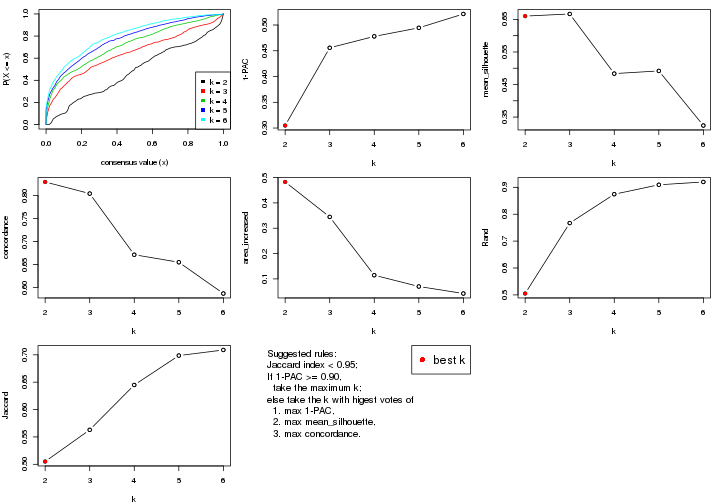
The numeric values for all these statistics can be obtained by get_stats().
get_stats(res)
#> k 1-PAC mean_silhouette concordance area_increased Rand Jaccard
#> 2 2 0.305 0.660 0.830 0.4826 0.505 0.505
#> 3 3 0.456 0.667 0.804 0.3446 0.767 0.563
#> 4 4 0.478 0.483 0.671 0.1145 0.874 0.645
#> 5 5 0.495 0.492 0.655 0.0700 0.909 0.699
#> 6 6 0.521 0.324 0.587 0.0422 0.920 0.709
suggest_best_k() suggests the best \(k\) based on these statistics. The rules are as follows:
suggest_best_k(res)
#> [1] 2
Following shows the table of the partitions (You need to click the show/hide
code output link to see it). The membership matrix (columns with name p*)
is inferred by
clue::cl_consensus()
function with the SE method. Basically the value in the membership matrix
represents the probability to belong to a certain group. The finall class
label for an item is determined with the group with highest probability it
belongs to.
In get_classes() function, the entropy is calculated from the membership
matrix and the silhouette score is calculated from the consensus matrix.
cbind(get_classes(res, k = 2), get_membership(res, k = 2))
#> class entropy silhouette p1 p2
#> SRR1851004 2 0.0376 0.8906 0.004 0.996
#> SRR1851003 2 0.0376 0.8906 0.004 0.996
#> SRR1851002 2 0.0376 0.8906 0.004 0.996
#> SRR1851000 1 0.5946 0.7352 0.856 0.144
#> SRR1851001 2 0.0376 0.8906 0.004 0.996
#> SRR1850998 2 0.0000 0.8898 0.000 1.000
#> SRR1850999 2 0.2043 0.8746 0.032 0.968
#> SRR1850997 2 0.0000 0.8898 0.000 1.000
#> SRR1850996 1 0.5059 0.7437 0.888 0.112
#> SRR1851016 1 0.9732 0.3938 0.596 0.404
#> SRR1851010 2 1.0000 -0.2299 0.496 0.504
#> SRR1851014 1 0.7219 0.7007 0.800 0.200
#> SRR1851015 2 0.0672 0.8887 0.008 0.992
#> SRR1851013 1 0.7453 0.6912 0.788 0.212
#> SRR1851012 1 0.9970 0.2775 0.532 0.468
#> SRR1851011 1 0.9970 0.2775 0.532 0.468
#> SRR1851009 2 0.0000 0.8898 0.000 1.000
#> SRR1851008 1 0.6343 0.7267 0.840 0.160
#> SRR1851007 1 0.6048 0.7332 0.852 0.148
#> SRR1851006 2 0.9732 0.1052 0.404 0.596
#> SRR1851005 1 0.9922 0.3382 0.552 0.448
#> SRR1850995 1 0.5408 0.7427 0.876 0.124
#> SRR1850994 1 0.9087 0.5010 0.676 0.324
#> SRR1850993 1 0.1843 0.7295 0.972 0.028
#> SRR1850992 2 0.5178 0.7634 0.116 0.884
#> SRR1850991 1 1.0000 0.1350 0.500 0.500
#> SRR1850990 1 0.9393 0.4552 0.644 0.356
#> SRR1850989 1 0.9881 0.3024 0.564 0.436
#> SRR1850987 1 0.9922 0.3727 0.552 0.448
#> SRR1850986 1 0.9170 0.4886 0.668 0.332
#> SRR1850985 1 0.1843 0.7268 0.972 0.028
#> SRR1850983 2 0.1414 0.8723 0.020 0.980
#> SRR1850984 2 0.0000 0.8898 0.000 1.000
#> SRR1850981 1 0.9635 0.4009 0.612 0.388
#> SRR1850980 1 0.5408 0.7370 0.876 0.124
#> SRR1850979 1 0.6712 0.7305 0.824 0.176
#> SRR1850978 1 0.3274 0.7261 0.940 0.060
#> SRR1850977 1 0.1843 0.7295 0.972 0.028
#> SRR1850976 1 0.2948 0.7309 0.948 0.052
#> SRR1850975 1 0.2948 0.7309 0.948 0.052
#> SRR1850974 2 0.2948 0.8481 0.052 0.948
#> SRR1850973 2 0.0376 0.8906 0.004 0.996
#> SRR1850972 1 0.2043 0.7287 0.968 0.032
#> SRR1850970 1 1.0000 0.2039 0.504 0.496
#> SRR1850971 1 0.2423 0.7320 0.960 0.040
#> SRR1850968 1 0.9393 0.5224 0.644 0.356
#> SRR1850969 2 0.0376 0.8906 0.004 0.996
#> SRR1850967 1 0.9323 0.5341 0.652 0.348
#> SRR1850966 2 0.2948 0.8457 0.052 0.948
#> SRR1850965 2 0.0376 0.8906 0.004 0.996
#> SRR1850964 1 0.9896 0.2846 0.560 0.440
#> SRR1850963 2 0.0672 0.8893 0.008 0.992
#> SRR1850962 1 0.4939 0.7435 0.892 0.108
#> SRR1850961 1 0.5408 0.7427 0.876 0.124
#> SRR1850959 2 0.1414 0.8832 0.020 0.980
#> SRR1850960 2 0.0938 0.8873 0.012 0.988
#> SRR1850958 2 0.0376 0.8906 0.004 0.996
#> SRR1850988 2 0.6531 0.6714 0.168 0.832
#> SRR1850957 2 0.0376 0.8906 0.004 0.996
#> SRR1850956 1 0.9983 0.3381 0.524 0.476
#> SRR1850955 1 0.5178 0.7435 0.884 0.116
#> SRR1850953 1 0.9635 0.4047 0.612 0.388
#> SRR1850954 1 0.7950 0.6036 0.760 0.240
#> SRR1850952 1 0.1843 0.7295 0.972 0.028
#> SRR1850982 2 0.6048 0.7232 0.148 0.852
#> SRR1850951 1 0.1843 0.7295 0.972 0.028
#> SRR1850950 2 0.1184 0.8853 0.016 0.984
#> SRR1850949 2 0.1184 0.8853 0.016 0.984
#> SRR1850948 1 0.5408 0.7427 0.876 0.124
#> SRR1850947 1 0.5408 0.7427 0.876 0.124
#> SRR1850946 2 0.9775 0.0764 0.412 0.588
#> SRR1850945 2 0.0938 0.8865 0.012 0.988
#> SRR1850944 2 0.5842 0.7275 0.140 0.860
#> SRR1850943 2 0.0000 0.8898 0.000 1.000
#> SRR1850942 1 0.5408 0.7427 0.876 0.124
#> SRR1850940 1 0.9933 0.3275 0.548 0.452
#> SRR1850941 1 0.5408 0.7427 0.876 0.124
#> SRR1850938 2 0.9087 0.3298 0.324 0.676
#> SRR1850939 1 0.9710 0.4429 0.600 0.400
#> SRR1850937 2 0.0000 0.8898 0.000 1.000
cbind(get_classes(res, k = 3), get_membership(res, k = 3))
#> class entropy silhouette p1 p2 p3
#> SRR1851004 2 0.0237 0.8996 0.000 0.996 0.004
#> SRR1851003 2 0.0237 0.8996 0.000 0.996 0.004
#> SRR1851002 2 0.0237 0.8994 0.000 0.996 0.004
#> SRR1851000 1 0.8113 0.3174 0.504 0.068 0.428
#> SRR1851001 2 0.0237 0.8994 0.000 0.996 0.004
#> SRR1850998 2 0.1015 0.8962 0.012 0.980 0.008
#> SRR1850999 2 0.5200 0.7386 0.020 0.796 0.184
#> SRR1850997 2 0.1015 0.8962 0.012 0.980 0.008
#> SRR1850996 3 0.4808 0.5732 0.188 0.008 0.804
#> SRR1851016 1 0.6843 0.6965 0.740 0.116 0.144
#> SRR1851010 3 0.5420 0.6591 0.008 0.240 0.752
#> SRR1851014 3 0.7825 0.2876 0.300 0.080 0.620
#> SRR1851015 2 0.1170 0.8968 0.008 0.976 0.016
#> SRR1851013 3 0.8144 0.1556 0.344 0.084 0.572
#> SRR1851012 3 0.5201 0.6681 0.004 0.236 0.760
#> SRR1851011 3 0.5325 0.6594 0.004 0.248 0.748
#> SRR1851009 2 0.0000 0.8994 0.000 1.000 0.000
#> SRR1851008 3 0.4189 0.6796 0.056 0.068 0.876
#> SRR1851007 3 0.8068 -0.2646 0.456 0.064 0.480
#> SRR1851006 3 0.5541 0.6568 0.008 0.252 0.740
#> SRR1851005 3 0.4861 0.6941 0.012 0.180 0.808
#> SRR1850995 3 0.6357 0.2474 0.336 0.012 0.652
#> SRR1850994 1 0.6000 0.7239 0.760 0.040 0.200
#> SRR1850993 1 0.5061 0.7149 0.784 0.008 0.208
#> SRR1850992 2 0.5070 0.7093 0.224 0.772 0.004
#> SRR1850991 1 0.3038 0.6783 0.896 0.104 0.000
#> SRR1850990 1 0.2400 0.7019 0.932 0.064 0.004
#> SRR1850989 1 0.2945 0.6899 0.908 0.088 0.004
#> SRR1850987 1 0.9527 0.3028 0.480 0.220 0.300
#> SRR1850986 1 0.1832 0.7085 0.956 0.036 0.008
#> SRR1850985 1 0.1289 0.7094 0.968 0.000 0.032
#> SRR1850983 2 0.2050 0.8837 0.020 0.952 0.028
#> SRR1850984 2 0.0424 0.8989 0.000 0.992 0.008
#> SRR1850981 1 0.2165 0.7015 0.936 0.064 0.000
#> SRR1850980 1 0.7366 0.4960 0.564 0.036 0.400
#> SRR1850979 1 0.7561 0.3989 0.516 0.040 0.444
#> SRR1850978 1 0.5020 0.7220 0.796 0.012 0.192
#> SRR1850977 1 0.4931 0.7033 0.768 0.000 0.232
#> SRR1850976 1 0.5461 0.5340 0.748 0.008 0.244
#> SRR1850975 1 0.5461 0.5340 0.748 0.008 0.244
#> SRR1850974 2 0.3918 0.8046 0.004 0.856 0.140
#> SRR1850973 2 0.0237 0.8994 0.000 0.996 0.004
#> SRR1850972 1 0.4605 0.7181 0.796 0.000 0.204
#> SRR1850970 3 0.5285 0.6650 0.004 0.244 0.752
#> SRR1850971 1 0.6215 0.4642 0.572 0.000 0.428
#> SRR1850968 3 0.4683 0.6999 0.024 0.140 0.836
#> SRR1850969 2 0.0000 0.8994 0.000 1.000 0.000
#> SRR1850967 3 0.4995 0.6980 0.032 0.144 0.824
#> SRR1850966 2 0.1529 0.8866 0.040 0.960 0.000
#> SRR1850965 2 0.0237 0.8994 0.004 0.996 0.000
#> SRR1850964 1 0.3678 0.7058 0.892 0.080 0.028
#> SRR1850963 2 0.1267 0.8950 0.024 0.972 0.004
#> SRR1850962 3 0.4164 0.6263 0.144 0.008 0.848
#> SRR1850961 3 0.3965 0.6334 0.132 0.008 0.860
#> SRR1850959 2 0.4731 0.7948 0.032 0.840 0.128
#> SRR1850960 2 0.1877 0.8878 0.032 0.956 0.012
#> SRR1850958 2 0.1289 0.8923 0.032 0.968 0.000
#> SRR1850988 1 0.9125 0.3407 0.464 0.392 0.144
#> SRR1850957 2 0.0592 0.8982 0.012 0.988 0.000
#> SRR1850956 1 0.8771 0.5816 0.556 0.140 0.304
#> SRR1850955 1 0.6910 0.4977 0.584 0.020 0.396
#> SRR1850953 1 0.6302 0.7249 0.744 0.048 0.208
#> SRR1850954 1 0.5803 0.7220 0.760 0.028 0.212
#> SRR1850952 1 0.5070 0.7077 0.772 0.004 0.224
#> SRR1850982 2 0.5443 0.6650 0.260 0.736 0.004
#> SRR1850951 3 0.5650 0.3522 0.312 0.000 0.688
#> SRR1850950 2 0.5538 0.7973 0.060 0.808 0.132
#> SRR1850949 2 0.5538 0.7973 0.060 0.808 0.132
#> SRR1850948 3 0.4099 0.6293 0.140 0.008 0.852
#> SRR1850947 3 0.4099 0.6293 0.140 0.008 0.852
#> SRR1850946 3 0.6148 0.4794 0.004 0.356 0.640
#> SRR1850945 2 0.1964 0.8782 0.000 0.944 0.056
#> SRR1850944 2 0.8222 0.3739 0.100 0.592 0.308
#> SRR1850943 2 0.2486 0.8815 0.008 0.932 0.060
#> SRR1850942 3 0.4033 0.6312 0.136 0.008 0.856
#> SRR1850940 3 0.4615 0.7016 0.020 0.144 0.836
#> SRR1850941 3 0.4033 0.6312 0.136 0.008 0.856
#> SRR1850938 2 0.6518 -0.0252 0.004 0.512 0.484
#> SRR1850939 3 0.4418 0.7023 0.020 0.132 0.848
#> SRR1850937 2 0.0592 0.8979 0.000 0.988 0.012
cbind(get_classes(res, k = 4), get_membership(res, k = 4))
#> class entropy silhouette p1 p2 p3 p4
#> SRR1851004 2 0.0000 0.820 0.000 1.000 0.000 0.000
#> SRR1851003 2 0.0000 0.820 0.000 1.000 0.000 0.000
#> SRR1851002 2 0.1302 0.820 0.000 0.956 0.000 0.044
#> SRR1851000 4 0.7636 0.443 0.240 0.020 0.184 0.556
#> SRR1851001 2 0.1302 0.820 0.000 0.956 0.000 0.044
#> SRR1850998 2 0.1639 0.815 0.008 0.952 0.004 0.036
#> SRR1850999 4 0.6461 0.339 0.008 0.344 0.064 0.584
#> SRR1850997 2 0.1639 0.815 0.008 0.952 0.004 0.036
#> SRR1850996 3 0.3570 0.444 0.048 0.000 0.860 0.092
#> SRR1851016 1 0.6619 0.390 0.616 0.036 0.044 0.304
#> SRR1851010 4 0.6825 -0.214 0.004 0.084 0.448 0.464
#> SRR1851014 4 0.6635 0.286 0.068 0.020 0.296 0.616
#> SRR1851015 2 0.3933 0.701 0.000 0.792 0.008 0.200
#> SRR1851013 4 0.6919 0.339 0.088 0.024 0.276 0.612
#> SRR1851012 3 0.7172 0.151 0.004 0.116 0.448 0.432
#> SRR1851011 3 0.7211 0.145 0.004 0.120 0.444 0.432
#> SRR1851009 2 0.1022 0.822 0.000 0.968 0.000 0.032
#> SRR1851008 3 0.6099 0.113 0.012 0.024 0.500 0.464
#> SRR1851007 4 0.7472 0.397 0.160 0.024 0.232 0.584
#> SRR1851006 4 0.6921 -0.207 0.004 0.092 0.452 0.452
#> SRR1851005 3 0.6438 0.135 0.004 0.056 0.488 0.452
#> SRR1850995 3 0.5850 0.273 0.116 0.000 0.700 0.184
#> SRR1850994 1 0.6558 0.654 0.636 0.008 0.252 0.104
#> SRR1850993 1 0.5907 0.656 0.668 0.000 0.252 0.080
#> SRR1850992 2 0.6126 0.557 0.300 0.632 0.004 0.064
#> SRR1850991 1 0.2884 0.650 0.900 0.028 0.004 0.068
#> SRR1850990 1 0.2111 0.655 0.932 0.024 0.000 0.044
#> SRR1850989 1 0.2197 0.653 0.928 0.024 0.000 0.048
#> SRR1850987 4 0.8331 0.378 0.264 0.140 0.072 0.524
#> SRR1850986 1 0.0992 0.667 0.976 0.012 0.008 0.004
#> SRR1850985 1 0.1833 0.672 0.944 0.000 0.024 0.032
#> SRR1850983 2 0.4327 0.737 0.016 0.812 0.020 0.152
#> SRR1850984 2 0.1004 0.821 0.000 0.972 0.004 0.024
#> SRR1850981 1 0.3472 0.636 0.868 0.024 0.008 0.100
#> SRR1850980 4 0.8112 0.155 0.352 0.020 0.192 0.436
#> SRR1850979 4 0.8017 0.275 0.320 0.020 0.188 0.472
#> SRR1850978 1 0.6026 0.660 0.672 0.004 0.244 0.080
#> SRR1850977 1 0.6206 0.640 0.632 0.000 0.280 0.088
#> SRR1850976 1 0.6443 0.326 0.628 0.012 0.072 0.288
#> SRR1850975 1 0.6465 0.321 0.624 0.012 0.072 0.292
#> SRR1850974 2 0.5231 0.611 0.004 0.716 0.036 0.244
#> SRR1850973 2 0.1576 0.818 0.000 0.948 0.004 0.048
#> SRR1850972 1 0.6731 0.510 0.608 0.000 0.156 0.236
#> SRR1850970 3 0.7553 0.144 0.000 0.200 0.456 0.344
#> SRR1850971 4 0.7900 0.350 0.312 0.008 0.224 0.456
#> SRR1850968 3 0.6663 0.144 0.012 0.056 0.500 0.432
#> SRR1850969 2 0.0469 0.821 0.000 0.988 0.000 0.012
#> SRR1850967 3 0.6643 0.133 0.016 0.048 0.496 0.440
#> SRR1850966 2 0.2578 0.812 0.036 0.912 0.000 0.052
#> SRR1850965 2 0.1975 0.817 0.016 0.936 0.000 0.048
#> SRR1850964 1 0.3877 0.672 0.860 0.024 0.032 0.084
#> SRR1850963 2 0.4193 0.785 0.064 0.832 0.004 0.100
#> SRR1850962 3 0.1305 0.508 0.036 0.000 0.960 0.004
#> SRR1850961 3 0.1109 0.510 0.028 0.000 0.968 0.004
#> SRR1850959 4 0.6814 0.113 0.016 0.420 0.060 0.504
#> SRR1850960 2 0.5472 0.643 0.024 0.724 0.028 0.224
#> SRR1850958 2 0.3854 0.752 0.012 0.828 0.008 0.152
#> SRR1850988 4 0.8428 0.240 0.280 0.224 0.036 0.460
#> SRR1850957 2 0.3113 0.788 0.012 0.876 0.004 0.108
#> SRR1850956 1 0.9070 0.387 0.372 0.076 0.344 0.208
#> SRR1850955 3 0.8020 -0.432 0.360 0.012 0.420 0.208
#> SRR1850953 1 0.7596 0.614 0.544 0.016 0.268 0.172
#> SRR1850954 1 0.7322 0.610 0.540 0.004 0.284 0.172
#> SRR1850952 1 0.6497 0.624 0.596 0.000 0.304 0.100
#> SRR1850982 2 0.6621 0.514 0.316 0.588 0.004 0.092
#> SRR1850951 3 0.5062 0.261 0.184 0.000 0.752 0.064
#> SRR1850950 2 0.6591 0.557 0.040 0.632 0.044 0.284
#> SRR1850949 2 0.6510 0.559 0.036 0.636 0.044 0.284
#> SRR1850948 3 0.0921 0.511 0.028 0.000 0.972 0.000
#> SRR1850947 3 0.0921 0.511 0.028 0.000 0.972 0.000
#> SRR1850946 3 0.7824 0.081 0.000 0.336 0.400 0.264
#> SRR1850945 2 0.2706 0.804 0.000 0.900 0.020 0.080
#> SRR1850944 4 0.6903 0.245 0.004 0.336 0.108 0.552
#> SRR1850943 2 0.5131 0.639 0.000 0.692 0.028 0.280
#> SRR1850942 3 0.1305 0.507 0.036 0.000 0.960 0.004
#> SRR1850940 3 0.5934 0.376 0.004 0.084 0.688 0.224
#> SRR1850941 3 0.1305 0.507 0.036 0.000 0.960 0.004
#> SRR1850938 2 0.7768 -0.137 0.000 0.400 0.240 0.360
#> SRR1850939 3 0.5934 0.376 0.004 0.084 0.688 0.224
#> SRR1850937 2 0.2489 0.813 0.000 0.912 0.020 0.068
cbind(get_classes(res, k = 5), get_membership(res, k = 5))
#> class entropy silhouette p1 p2 p3 p4 p5
#> SRR1851004 2 0.0912 0.7547 0.000 0.972 0.000 0.016 0.012
#> SRR1851003 2 0.0912 0.7547 0.000 0.972 0.000 0.016 0.012
#> SRR1851002 2 0.2409 0.7505 0.008 0.908 0.000 0.028 0.056
#> SRR1851000 4 0.6485 0.4093 0.124 0.012 0.044 0.640 0.180
#> SRR1851001 2 0.2409 0.7505 0.008 0.908 0.000 0.028 0.056
#> SRR1850998 2 0.2172 0.7514 0.000 0.916 0.004 0.020 0.060
#> SRR1850999 4 0.6263 0.4533 0.008 0.140 0.024 0.636 0.192
#> SRR1850997 2 0.2172 0.7514 0.000 0.916 0.004 0.020 0.060
#> SRR1850996 3 0.2610 0.6641 0.004 0.000 0.892 0.076 0.028
#> SRR1851016 1 0.7179 0.3073 0.504 0.020 0.020 0.296 0.160
#> SRR1851010 4 0.6529 0.4243 0.000 0.060 0.228 0.604 0.108
#> SRR1851014 4 0.5415 0.4737 0.024 0.016 0.116 0.736 0.108
#> SRR1851015 2 0.4988 0.6235 0.000 0.716 0.008 0.192 0.084
#> SRR1851013 4 0.5520 0.4715 0.032 0.016 0.096 0.732 0.124
#> SRR1851012 4 0.6347 0.3938 0.000 0.080 0.264 0.600 0.056
#> SRR1851011 4 0.6397 0.3921 0.000 0.084 0.264 0.596 0.056
#> SRR1851009 2 0.2408 0.7552 0.000 0.892 0.000 0.016 0.092
#> SRR1851008 4 0.5335 0.4349 0.008 0.016 0.248 0.680 0.048
#> SRR1851007 4 0.5594 0.4773 0.068 0.012 0.096 0.736 0.088
#> SRR1851006 4 0.5869 0.4285 0.000 0.068 0.252 0.640 0.040
#> SRR1851005 4 0.5334 0.4105 0.000 0.052 0.284 0.648 0.016
#> SRR1850995 3 0.4785 0.5668 0.024 0.000 0.756 0.152 0.068
#> SRR1850994 1 0.6261 0.5473 0.600 0.000 0.268 0.040 0.092
#> SRR1850993 1 0.5771 0.5548 0.640 0.000 0.260 0.032 0.068
#> SRR1850992 2 0.6893 0.4563 0.264 0.508 0.000 0.024 0.204
#> SRR1850991 1 0.3801 0.6375 0.812 0.008 0.000 0.040 0.140
#> SRR1850990 1 0.1628 0.6469 0.936 0.000 0.000 0.008 0.056
#> SRR1850989 1 0.1628 0.6469 0.936 0.000 0.000 0.008 0.056
#> SRR1850987 4 0.8268 0.2346 0.160 0.084 0.028 0.412 0.316
#> SRR1850986 1 0.0451 0.6474 0.988 0.000 0.004 0.000 0.008
#> SRR1850985 1 0.1299 0.6489 0.960 0.000 0.012 0.008 0.020
#> SRR1850983 2 0.4433 0.6465 0.000 0.696 0.008 0.016 0.280
#> SRR1850984 2 0.2388 0.7532 0.000 0.900 0.000 0.028 0.072
#> SRR1850981 1 0.4634 0.6030 0.744 0.004 0.012 0.040 0.200
#> SRR1850980 4 0.8273 0.1612 0.220 0.008 0.152 0.436 0.184
#> SRR1850979 4 0.8024 0.2755 0.168 0.008 0.160 0.484 0.180
#> SRR1850978 1 0.6103 0.5570 0.628 0.000 0.248 0.056 0.068
#> SRR1850977 1 0.6643 0.4759 0.540 0.000 0.320 0.064 0.076
#> SRR1850976 1 0.7367 0.2680 0.488 0.000 0.056 0.232 0.224
#> SRR1850975 1 0.7367 0.2680 0.488 0.000 0.056 0.232 0.224
#> SRR1850974 2 0.6325 0.3994 0.000 0.560 0.008 0.256 0.176
#> SRR1850973 2 0.2522 0.7448 0.000 0.896 0.004 0.024 0.076
#> SRR1850972 1 0.7474 0.4391 0.512 0.000 0.108 0.236 0.144
#> SRR1850970 4 0.7474 0.3207 0.000 0.196 0.284 0.460 0.060
#> SRR1850971 4 0.7263 0.3243 0.216 0.000 0.104 0.544 0.136
#> SRR1850968 4 0.6012 0.4308 0.000 0.032 0.240 0.632 0.096
#> SRR1850969 2 0.1205 0.7571 0.000 0.956 0.000 0.004 0.040
#> SRR1850967 4 0.6009 0.4368 0.000 0.032 0.232 0.636 0.100
#> SRR1850966 2 0.4240 0.7261 0.032 0.796 0.004 0.024 0.144
#> SRR1850965 2 0.3711 0.7343 0.016 0.824 0.004 0.020 0.136
#> SRR1850964 1 0.3698 0.6538 0.832 0.000 0.012 0.052 0.104
#> SRR1850963 2 0.5250 0.7026 0.056 0.732 0.000 0.060 0.152
#> SRR1850962 3 0.1557 0.6893 0.000 0.000 0.940 0.052 0.008
#> SRR1850961 3 0.1557 0.6893 0.000 0.000 0.940 0.052 0.008
#> SRR1850959 4 0.7670 0.0502 0.016 0.340 0.024 0.376 0.244
#> SRR1850960 2 0.6106 0.6005 0.024 0.640 0.004 0.124 0.208
#> SRR1850958 2 0.4887 0.6758 0.008 0.744 0.004 0.092 0.152
#> SRR1850988 4 0.8599 0.1438 0.176 0.132 0.020 0.344 0.328
#> SRR1850957 2 0.4481 0.6944 0.004 0.772 0.004 0.080 0.140
#> SRR1850956 3 0.9400 -0.1599 0.228 0.096 0.320 0.108 0.248
#> SRR1850955 3 0.8780 -0.0180 0.192 0.028 0.388 0.152 0.240
#> SRR1850953 1 0.7875 0.4402 0.444 0.016 0.284 0.056 0.200
#> SRR1850954 1 0.7820 0.4357 0.440 0.012 0.288 0.056 0.204
#> SRR1850952 1 0.6792 0.4572 0.512 0.000 0.336 0.052 0.100
#> SRR1850982 2 0.7314 0.3798 0.284 0.472 0.008 0.028 0.208
#> SRR1850951 3 0.4826 0.5386 0.108 0.000 0.772 0.052 0.068
#> SRR1850950 2 0.7452 0.2300 0.020 0.400 0.008 0.284 0.288
#> SRR1850949 2 0.7452 0.2300 0.020 0.400 0.008 0.284 0.288
#> SRR1850948 3 0.1768 0.6914 0.000 0.000 0.924 0.072 0.004
#> SRR1850947 3 0.1768 0.6914 0.000 0.000 0.924 0.072 0.004
#> SRR1850946 4 0.8227 0.1931 0.000 0.296 0.252 0.336 0.116
#> SRR1850945 2 0.4750 0.6737 0.000 0.760 0.016 0.104 0.120
#> SRR1850944 4 0.7268 0.2548 0.004 0.212 0.024 0.428 0.332
#> SRR1850943 2 0.6640 0.3947 0.000 0.472 0.004 0.212 0.312
#> SRR1850942 3 0.2364 0.6884 0.008 0.000 0.908 0.064 0.020
#> SRR1850940 3 0.6702 0.0732 0.000 0.064 0.520 0.340 0.076
#> SRR1850941 3 0.2364 0.6884 0.008 0.000 0.908 0.064 0.020
#> SRR1850938 4 0.8090 0.2090 0.000 0.296 0.116 0.384 0.204
#> SRR1850939 3 0.6702 0.0732 0.000 0.064 0.520 0.340 0.076
#> SRR1850937 2 0.3604 0.7344 0.000 0.836 0.008 0.056 0.100
cbind(get_classes(res, k = 6), get_membership(res, k = 6))
#> class entropy silhouette p1 p2 p3 p4 p5 p6
#> SRR1851004 2 0.1346 0.61732 0.000 0.952 0.000 0.024 0.016 0.008
#> SRR1851003 2 0.1262 0.61683 0.000 0.956 0.000 0.020 0.016 0.008
#> SRR1851002 2 0.3893 0.57766 0.004 0.788 0.000 0.100 0.104 0.004
#> SRR1851000 6 0.3284 0.43081 0.052 0.008 0.016 0.016 0.044 0.864
#> SRR1851001 2 0.3893 0.57766 0.004 0.788 0.000 0.100 0.104 0.004
#> SRR1850998 2 0.2856 0.60579 0.000 0.868 0.004 0.064 0.060 0.004
#> SRR1850999 6 0.3812 0.38713 0.004 0.092 0.012 0.028 0.040 0.824
#> SRR1850997 2 0.2856 0.60579 0.000 0.868 0.004 0.064 0.060 0.004
#> SRR1850996 3 0.3943 0.51352 0.008 0.000 0.792 0.016 0.136 0.048
#> SRR1851016 6 0.6569 -0.07905 0.376 0.020 0.000 0.044 0.104 0.456
#> SRR1851010 6 0.6373 0.00929 0.000 0.016 0.196 0.392 0.004 0.392
#> SRR1851014 6 0.3937 0.40650 0.008 0.000 0.064 0.080 0.036 0.812
#> SRR1851015 2 0.5616 0.41146 0.004 0.600 0.000 0.068 0.044 0.284
#> SRR1851013 6 0.3211 0.42482 0.004 0.008 0.056 0.044 0.024 0.864
#> SRR1851012 6 0.7185 0.04551 0.000 0.056 0.188 0.296 0.024 0.436
#> SRR1851011 6 0.7185 0.04551 0.000 0.056 0.188 0.296 0.024 0.436
#> SRR1851009 2 0.2964 0.61211 0.004 0.852 0.000 0.108 0.032 0.004
#> SRR1851008 6 0.5735 0.28637 0.008 0.000 0.208 0.172 0.012 0.600
#> SRR1851007 6 0.4604 0.39470 0.028 0.000 0.064 0.136 0.016 0.756
#> SRR1851006 6 0.6437 0.14199 0.000 0.024 0.212 0.288 0.004 0.472
#> SRR1851005 6 0.6312 0.15859 0.000 0.016 0.224 0.276 0.004 0.480
#> SRR1850995 3 0.5723 0.35173 0.016 0.008 0.652 0.016 0.164 0.144
#> SRR1850994 1 0.6852 -0.28418 0.376 0.004 0.204 0.000 0.368 0.048
#> SRR1850993 1 0.6908 -0.00267 0.464 0.000 0.196 0.012 0.276 0.052
#> SRR1850992 2 0.7646 0.31386 0.308 0.404 0.000 0.088 0.156 0.044
#> SRR1850991 1 0.4752 0.36905 0.736 0.004 0.000 0.040 0.144 0.076
#> SRR1850990 1 0.1036 0.49612 0.964 0.000 0.000 0.004 0.024 0.008
#> SRR1850989 1 0.1138 0.49601 0.960 0.000 0.000 0.004 0.024 0.012
#> SRR1850987 6 0.6647 0.27209 0.048 0.064 0.012 0.128 0.124 0.624
#> SRR1850986 1 0.1411 0.49300 0.936 0.000 0.000 0.004 0.060 0.000
#> SRR1850985 1 0.2164 0.48802 0.908 0.000 0.000 0.008 0.056 0.028
#> SRR1850983 2 0.5598 0.36082 0.000 0.568 0.000 0.208 0.220 0.004
#> SRR1850984 2 0.2933 0.59879 0.000 0.860 0.000 0.092 0.032 0.016
#> SRR1850981 1 0.5432 0.32702 0.652 0.000 0.004 0.136 0.184 0.024
#> SRR1850980 6 0.6562 0.24090 0.092 0.008 0.116 0.044 0.108 0.632
#> SRR1850979 6 0.6426 0.26955 0.080 0.008 0.120 0.044 0.104 0.644
#> SRR1850978 1 0.7044 0.03029 0.472 0.000 0.192 0.016 0.256 0.064
#> SRR1850977 1 0.7297 -0.03282 0.424 0.000 0.236 0.016 0.252 0.072
#> SRR1850976 1 0.6784 0.26285 0.516 0.000 0.024 0.284 0.080 0.096
#> SRR1850975 1 0.6784 0.26285 0.516 0.000 0.024 0.284 0.080 0.096
#> SRR1850974 2 0.6162 -0.38680 0.000 0.492 0.020 0.380 0.036 0.072
#> SRR1850973 2 0.2527 0.59264 0.000 0.880 0.000 0.084 0.032 0.004
#> SRR1850972 6 0.7682 -0.23674 0.356 0.000 0.088 0.044 0.156 0.356
#> SRR1850970 4 0.8056 0.23562 0.000 0.192 0.232 0.304 0.020 0.252
#> SRR1850971 6 0.7113 0.27118 0.196 0.000 0.096 0.052 0.112 0.544
#> SRR1850968 6 0.6306 0.14155 0.004 0.000 0.240 0.316 0.008 0.432
#> SRR1850969 2 0.1565 0.62691 0.000 0.940 0.000 0.028 0.028 0.004
#> SRR1850967 6 0.6494 0.13717 0.004 0.008 0.228 0.320 0.008 0.432
#> SRR1850966 2 0.4353 0.59181 0.020 0.752 0.000 0.060 0.164 0.004
#> SRR1850965 2 0.4270 0.59316 0.016 0.756 0.000 0.060 0.164 0.004
#> SRR1850964 1 0.6011 0.29611 0.644 0.020 0.008 0.056 0.196 0.076
#> SRR1850963 2 0.6682 0.51167 0.044 0.596 0.004 0.136 0.164 0.056
#> SRR1850962 3 0.2145 0.60300 0.004 0.000 0.912 0.008 0.056 0.020
#> SRR1850961 3 0.2164 0.60399 0.000 0.000 0.908 0.008 0.056 0.028
#> SRR1850959 6 0.7865 0.01150 0.024 0.272 0.016 0.112 0.156 0.420
#> SRR1850960 2 0.7545 0.38911 0.028 0.488 0.008 0.108 0.176 0.192
#> SRR1850958 2 0.6163 0.50212 0.016 0.640 0.004 0.076 0.128 0.136
#> SRR1850988 6 0.7237 0.17935 0.052 0.088 0.012 0.128 0.156 0.564
#> SRR1850957 2 0.5695 0.52934 0.004 0.672 0.004 0.076 0.124 0.120
#> SRR1850956 5 0.9168 0.43603 0.116 0.076 0.280 0.072 0.300 0.156
#> SRR1850955 3 0.8706 -0.56395 0.104 0.036 0.340 0.064 0.280 0.176
#> SRR1850953 5 0.8347 0.64824 0.256 0.020 0.220 0.100 0.360 0.044
#> SRR1850954 5 0.8276 0.65346 0.248 0.016 0.236 0.096 0.360 0.044
#> SRR1850952 3 0.7342 -0.52356 0.312 0.000 0.324 0.016 0.292 0.056
#> SRR1850982 2 0.7956 0.15609 0.304 0.324 0.004 0.160 0.192 0.016
#> SRR1850951 3 0.4884 0.27428 0.060 0.000 0.716 0.016 0.184 0.024
#> SRR1850950 4 0.6496 0.51679 0.028 0.304 0.012 0.536 0.024 0.096
#> SRR1850949 4 0.6496 0.51679 0.028 0.304 0.012 0.536 0.024 0.096
#> SRR1850948 3 0.0806 0.61681 0.000 0.000 0.972 0.008 0.000 0.020
#> SRR1850947 3 0.0806 0.61681 0.000 0.000 0.972 0.008 0.000 0.020
#> SRR1850946 4 0.7845 0.51646 0.000 0.296 0.232 0.344 0.036 0.092
#> SRR1850945 2 0.4843 0.34144 0.000 0.700 0.008 0.216 0.040 0.036
#> SRR1850944 6 0.7729 -0.13577 0.012 0.140 0.036 0.348 0.080 0.384
#> SRR1850943 2 0.7535 0.03989 0.012 0.360 0.008 0.304 0.068 0.248
#> SRR1850942 3 0.1536 0.61051 0.000 0.000 0.944 0.012 0.024 0.020
#> SRR1850940 3 0.6620 0.08503 0.000 0.024 0.532 0.212 0.032 0.200
#> SRR1850941 3 0.1536 0.61051 0.000 0.000 0.944 0.012 0.024 0.020
#> SRR1850938 4 0.6927 0.56107 0.000 0.248 0.084 0.492 0.008 0.168
#> SRR1850939 3 0.6620 0.08503 0.000 0.024 0.532 0.212 0.032 0.200
#> SRR1850937 2 0.4334 0.56522 0.000 0.748 0.008 0.184 0.024 0.036
Heatmaps for the consensus matrix. It visualizes the probability of two samples to be in a same group.
consensus_heatmap(res, k = 2)
consensus_heatmap(res, k = 3)
consensus_heatmap(res, k = 4)
consensus_heatmap(res, k = 5)
consensus_heatmap(res, k = 6)
Heatmaps for the membership of samples in all partitions to see how consistent they are:
membership_heatmap(res, k = 2)
membership_heatmap(res, k = 3)
membership_heatmap(res, k = 4)
membership_heatmap(res, k = 5)
membership_heatmap(res, k = 6)
As soon as we have had the classes for columns, we can look for signatures which are significantly different between classes which can be candidate marks for certain classes. Following are the heatmaps for signatures.
Signature heatmaps where rows are scaled:
get_signatures(res, k = 2)
get_signatures(res, k = 3)
get_signatures(res, k = 4)
get_signatures(res, k = 5)
get_signatures(res, k = 6)
Signature heatmaps where rows are not scaled:
get_signatures(res, k = 2, scale_rows = FALSE)
get_signatures(res, k = 3, scale_rows = FALSE)
get_signatures(res, k = 4, scale_rows = FALSE)
get_signatures(res, k = 5, scale_rows = FALSE)
get_signatures(res, k = 6, scale_rows = FALSE)
Compare the overlap of signatures from different k:
compare_signatures(res)
get_signature() returns a data frame invisibly. TO get the list of signatures, the function
call should be assigned to a variable explicitly. In following code, if plot argument is set
to FALSE, no heatmap is plotted while only the differential analysis is performed.
# code only for demonstration
tb = get_signature(res, k = ..., plot = FALSE)
An example of the output of tb is:
#> which_row fdr mean_1 mean_2 scaled_mean_1 scaled_mean_2 km
#> 1 38 0.042760348 8.373488 9.131774 -0.5533452 0.5164555 1
#> 2 40 0.018707592 7.106213 8.469186 -0.6173731 0.5762149 1
#> 3 55 0.019134737 10.221463 11.207825 -0.6159697 0.5749050 1
#> 4 59 0.006059896 5.921854 7.869574 -0.6899429 0.6439467 1
#> 5 60 0.018055526 8.928898 10.211722 -0.6204761 0.5791110 1
#> 6 98 0.009384629 15.714769 14.887706 0.6635654 -0.6193277 2
...
The columns in tb are:
which_row: row indices corresponding to the input matrix.fdr: FDR for the differential test. mean_x: The mean value in group x.scaled_mean_x: The mean value in group x after rows are scaled.km: Row groups if k-means clustering is applied to rows.UMAP plot which shows how samples are separated.
dimension_reduction(res, k = 2, method = "UMAP")
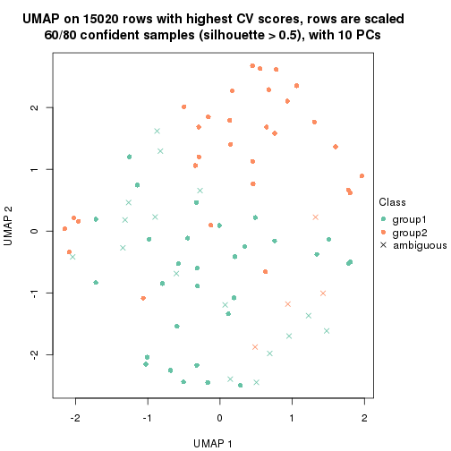
dimension_reduction(res, k = 3, method = "UMAP")
dimension_reduction(res, k = 4, method = "UMAP")
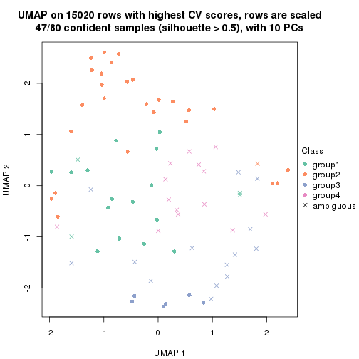
dimension_reduction(res, k = 5, method = "UMAP")
dimension_reduction(res, k = 6, method = "UMAP")
Following heatmap shows how subgroups are split when increasing k:
collect_classes(res)
If matrix rows can be associated to genes, consider to use functional_enrichment(res,
...) to perform function enrichment for the signature genes. See this vignette for more detailed explanations.
The object with results only for a single top-value method and a single partition method can be extracted as:
res = res_list["CV", "skmeans"]
# you can also extract it by
# res = res_list["CV:skmeans"]
A summary of res and all the functions that can be applied to it:
res
#> A 'ConsensusPartition' object with k = 2, 3, 4, 5, 6.
#> On a matrix with 15020 rows and 80 columns.
#> Top rows (1000, 2000, 3000, 4000, 5000) are extracted by 'CV' method.
#> Subgroups are detected by 'skmeans' method.
#> Performed in total 1250 partitions by row resampling.
#> Best k for subgroups seems to be 2.
#>
#> Following methods can be applied to this 'ConsensusPartition' object:
#> [1] "cola_report" "collect_classes" "collect_plots"
#> [4] "collect_stats" "colnames" "compare_signatures"
#> [7] "consensus_heatmap" "dimension_reduction" "functional_enrichment"
#> [10] "get_anno_col" "get_anno" "get_classes"
#> [13] "get_consensus" "get_matrix" "get_membership"
#> [16] "get_param" "get_signatures" "get_stats"
#> [19] "is_best_k" "is_stable_k" "membership_heatmap"
#> [22] "ncol" "nrow" "plot_ecdf"
#> [25] "rownames" "select_partition_number" "show"
#> [28] "suggest_best_k" "test_to_known_factors"
collect_plots() function collects all the plots made from res for all k (number of partitions)
into one single page to provide an easy and fast comparison between different k.
collect_plots(res)
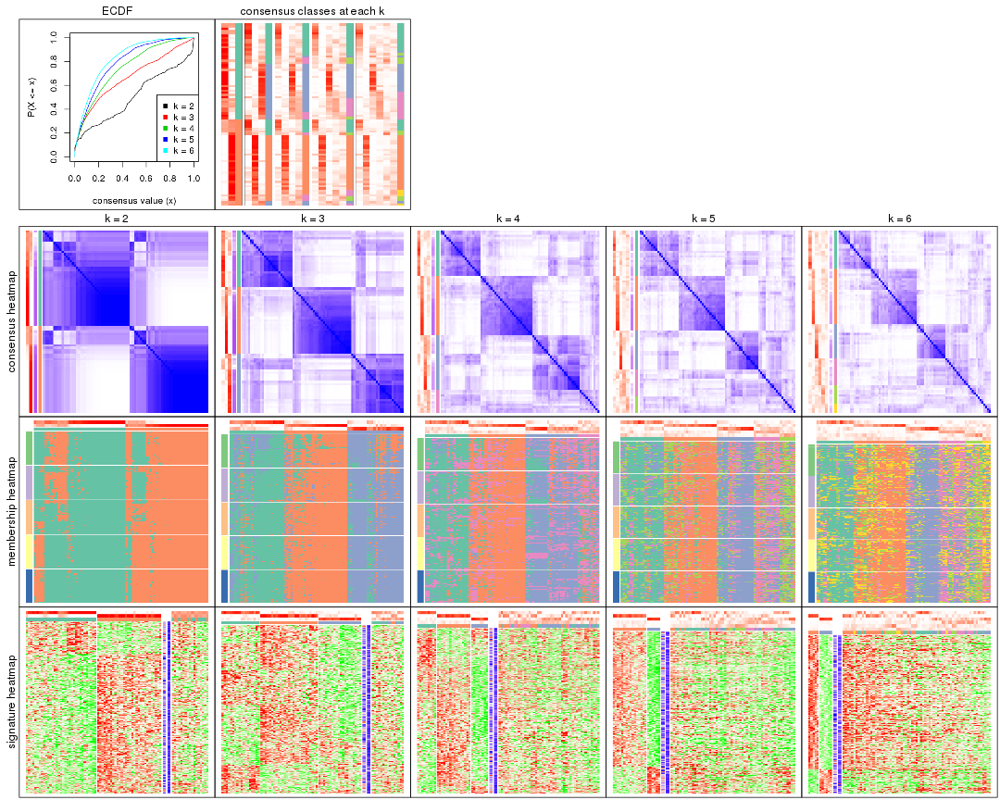
The plots are:
k and the heatmap of
predicted classes for each k.k.k.k.All the plots in panels can be made by individual functions and they are plotted later in this section.
select_partition_number() produces several plots showing different
statistics for choosing “optimized” k. There are following statistics:
k;k, the area increased is defined as \(A_k - A_{k-1}\).The detailed explanations of these statistics can be found in the cola vignette.
Generally speaking, lower PAC score, higher mean silhouette score or higher
concordance corresponds to better partition. Rand index and Jaccard index
measure how similar the current partition is compared to partition with k-1.
If they are too similar, we won't accept k is better than k-1.
select_partition_number(res)
The numeric values for all these statistics can be obtained by get_stats().
get_stats(res)
#> k 1-PAC mean_silhouette concordance area_increased Rand Jaccard
#> 2 2 0.467 0.662 0.866 0.5063 0.495 0.495
#> 3 3 0.408 0.668 0.816 0.3270 0.721 0.493
#> 4 4 0.373 0.428 0.658 0.1169 0.903 0.718
#> 5 5 0.398 0.336 0.598 0.0618 0.928 0.739
#> 6 6 0.447 0.288 0.548 0.0411 0.939 0.741
suggest_best_k() suggests the best \(k\) based on these statistics. The rules are as follows:
suggest_best_k(res)
#> [1] 2
Following shows the table of the partitions (You need to click the show/hide
code output link to see it). The membership matrix (columns with name p*)
is inferred by
clue::cl_consensus()
function with the SE method. Basically the value in the membership matrix
represents the probability to belong to a certain group. The finall class
label for an item is determined with the group with highest probability it
belongs to.
In get_classes() function, the entropy is calculated from the membership
matrix and the silhouette score is calculated from the consensus matrix.
cbind(get_classes(res, k = 2), get_membership(res, k = 2))
#> class entropy silhouette p1 p2
#> SRR1851004 2 0.0000 0.8488 0.000 1.000
#> SRR1851003 2 0.0000 0.8488 0.000 1.000
#> SRR1851002 2 0.0000 0.8488 0.000 1.000
#> SRR1851000 1 0.1184 0.8047 0.984 0.016
#> SRR1851001 2 0.0000 0.8488 0.000 1.000
#> SRR1850998 2 0.0000 0.8488 0.000 1.000
#> SRR1850999 2 0.3274 0.8139 0.060 0.940
#> SRR1850997 2 0.0000 0.8488 0.000 1.000
#> SRR1850996 1 0.0000 0.8067 1.000 0.000
#> SRR1851016 1 0.9996 -0.0528 0.512 0.488
#> SRR1851010 1 0.9993 0.1975 0.516 0.484
#> SRR1851014 1 0.3584 0.7848 0.932 0.068
#> SRR1851015 2 0.0000 0.8488 0.000 1.000
#> SRR1851013 1 0.3274 0.7905 0.940 0.060
#> SRR1851012 1 0.9170 0.5148 0.668 0.332
#> SRR1851011 1 0.9881 0.3179 0.564 0.436
#> SRR1851009 2 0.0000 0.8488 0.000 1.000
#> SRR1851008 1 0.0672 0.8059 0.992 0.008
#> SRR1851007 1 0.0000 0.8067 1.000 0.000
#> SRR1851006 1 1.0000 0.1592 0.504 0.496
#> SRR1851005 1 0.9129 0.5226 0.672 0.328
#> SRR1850995 1 0.1843 0.8019 0.972 0.028
#> SRR1850994 1 0.9850 0.1384 0.572 0.428
#> SRR1850993 1 0.0376 0.8059 0.996 0.004
#> SRR1850992 2 0.1633 0.8383 0.024 0.976
#> SRR1850991 2 0.9635 0.3550 0.388 0.612
#> SRR1850990 1 0.9963 0.0310 0.536 0.464
#> SRR1850989 2 0.9815 0.2852 0.420 0.580
#> SRR1850987 1 0.9323 0.4762 0.652 0.348
#> SRR1850986 1 0.9881 0.1175 0.564 0.436
#> SRR1850985 1 0.0000 0.8067 1.000 0.000
#> SRR1850983 2 0.0000 0.8488 0.000 1.000
#> SRR1850984 2 0.0000 0.8488 0.000 1.000
#> SRR1850981 2 0.9896 0.2345 0.440 0.560
#> SRR1850980 1 0.1843 0.8026 0.972 0.028
#> SRR1850979 1 0.2948 0.7954 0.948 0.052
#> SRR1850978 1 0.4298 0.7545 0.912 0.088
#> SRR1850977 1 0.0000 0.8067 1.000 0.000
#> SRR1850976 1 0.1184 0.8048 0.984 0.016
#> SRR1850975 1 0.4022 0.7759 0.920 0.080
#> SRR1850974 2 0.4815 0.7596 0.104 0.896
#> SRR1850973 2 0.0000 0.8488 0.000 1.000
#> SRR1850972 1 0.0000 0.8067 1.000 0.000
#> SRR1850970 1 0.9866 0.3258 0.568 0.432
#> SRR1850971 1 0.0000 0.8067 1.000 0.000
#> SRR1850968 1 0.7815 0.6506 0.768 0.232
#> SRR1850969 2 0.0000 0.8488 0.000 1.000
#> SRR1850967 1 0.7815 0.6511 0.768 0.232
#> SRR1850966 2 0.0938 0.8447 0.012 0.988
#> SRR1850965 2 0.0000 0.8488 0.000 1.000
#> SRR1850964 2 0.9850 0.2670 0.428 0.572
#> SRR1850963 2 0.3114 0.8174 0.056 0.944
#> SRR1850962 1 0.0000 0.8067 1.000 0.000
#> SRR1850961 1 0.0000 0.8067 1.000 0.000
#> SRR1850959 2 0.5629 0.7464 0.132 0.868
#> SRR1850960 2 0.0938 0.8444 0.012 0.988
#> SRR1850958 2 0.0000 0.8488 0.000 1.000
#> SRR1850988 2 0.5737 0.7448 0.136 0.864
#> SRR1850957 2 0.0000 0.8488 0.000 1.000
#> SRR1850956 2 0.9909 0.2259 0.444 0.556
#> SRR1850955 1 0.0376 0.8067 0.996 0.004
#> SRR1850953 2 0.9970 0.1650 0.468 0.532
#> SRR1850954 1 0.8386 0.5191 0.732 0.268
#> SRR1850952 1 0.0000 0.8067 1.000 0.000
#> SRR1850982 2 0.3879 0.8014 0.076 0.924
#> SRR1850951 1 0.0000 0.8067 1.000 0.000
#> SRR1850950 2 0.0376 0.8473 0.004 0.996
#> SRR1850949 2 0.0376 0.8473 0.004 0.996
#> SRR1850948 1 0.0000 0.8067 1.000 0.000
#> SRR1850947 1 0.0000 0.8067 1.000 0.000
#> SRR1850946 2 0.9977 -0.1068 0.472 0.528
#> SRR1850945 2 0.0672 0.8455 0.008 0.992
#> SRR1850944 2 0.7950 0.5815 0.240 0.760
#> SRR1850943 2 0.0000 0.8488 0.000 1.000
#> SRR1850942 1 0.0000 0.8067 1.000 0.000
#> SRR1850940 1 0.8763 0.5682 0.704 0.296
#> SRR1850941 1 0.0000 0.8067 1.000 0.000
#> SRR1850938 2 0.9795 0.0948 0.416 0.584
#> SRR1850939 1 0.7299 0.6781 0.796 0.204
#> SRR1850937 2 0.0000 0.8488 0.000 1.000
cbind(get_classes(res, k = 3), get_membership(res, k = 3))
#> class entropy silhouette p1 p2 p3
#> SRR1851004 2 0.0237 0.8611 0.000 0.996 0.004
#> SRR1851003 2 0.0237 0.8611 0.000 0.996 0.004
#> SRR1851002 2 0.0983 0.8613 0.004 0.980 0.016
#> SRR1851000 1 0.7561 0.2934 0.516 0.040 0.444
#> SRR1851001 2 0.0829 0.8617 0.004 0.984 0.012
#> SRR1850998 2 0.0592 0.8614 0.000 0.988 0.012
#> SRR1850999 2 0.7860 0.6079 0.132 0.664 0.204
#> SRR1850997 2 0.0237 0.8611 0.000 0.996 0.004
#> SRR1850996 3 0.4605 0.6106 0.204 0.000 0.796
#> SRR1851016 1 0.2982 0.7591 0.920 0.024 0.056
#> SRR1851010 3 0.5719 0.7134 0.052 0.156 0.792
#> SRR1851014 3 0.5631 0.6882 0.132 0.064 0.804
#> SRR1851015 2 0.2636 0.8580 0.048 0.932 0.020
#> SRR1851013 3 0.8297 0.2506 0.348 0.092 0.560
#> SRR1851012 3 0.4110 0.7342 0.004 0.152 0.844
#> SRR1851011 3 0.4733 0.7106 0.004 0.196 0.800
#> SRR1851009 2 0.1647 0.8587 0.036 0.960 0.004
#> SRR1851008 3 0.2383 0.7541 0.044 0.016 0.940
#> SRR1851007 3 0.6912 0.0103 0.444 0.016 0.540
#> SRR1851006 3 0.5178 0.6692 0.000 0.256 0.744
#> SRR1851005 3 0.3454 0.7543 0.008 0.104 0.888
#> SRR1850995 3 0.7739 0.4278 0.268 0.088 0.644
#> SRR1850994 1 0.3682 0.7530 0.876 0.008 0.116
#> SRR1850993 1 0.3116 0.7510 0.892 0.000 0.108
#> SRR1850992 2 0.5517 0.6916 0.268 0.728 0.004
#> SRR1850991 1 0.3031 0.7378 0.912 0.076 0.012
#> SRR1850990 1 0.0747 0.7525 0.984 0.016 0.000
#> SRR1850989 1 0.1163 0.7515 0.972 0.028 0.000
#> SRR1850987 1 0.8266 0.5306 0.624 0.136 0.240
#> SRR1850986 1 0.0661 0.7539 0.988 0.004 0.008
#> SRR1850985 1 0.3500 0.7428 0.880 0.004 0.116
#> SRR1850983 2 0.0592 0.8609 0.000 0.988 0.012
#> SRR1850984 2 0.0661 0.8627 0.004 0.988 0.008
#> SRR1850981 1 0.1585 0.7520 0.964 0.028 0.008
#> SRR1850980 1 0.5420 0.6883 0.752 0.008 0.240
#> SRR1850979 1 0.7262 0.3243 0.528 0.028 0.444
#> SRR1850978 1 0.2959 0.7527 0.900 0.000 0.100
#> SRR1850977 1 0.5650 0.5989 0.688 0.000 0.312
#> SRR1850976 1 0.6566 0.3342 0.612 0.012 0.376
#> SRR1850975 1 0.6742 0.4581 0.656 0.028 0.316
#> SRR1850974 2 0.5178 0.6161 0.000 0.744 0.256
#> SRR1850973 2 0.0592 0.8608 0.000 0.988 0.012
#> SRR1850972 1 0.3686 0.7462 0.860 0.000 0.140
#> SRR1850970 3 0.4555 0.7087 0.000 0.200 0.800
#> SRR1850971 3 0.6215 0.1431 0.428 0.000 0.572
#> SRR1850968 3 0.3134 0.7593 0.032 0.052 0.916
#> SRR1850969 2 0.0424 0.8614 0.008 0.992 0.000
#> SRR1850967 3 0.4845 0.7329 0.104 0.052 0.844
#> SRR1850966 2 0.4121 0.7917 0.168 0.832 0.000
#> SRR1850965 2 0.1711 0.8621 0.032 0.960 0.008
#> SRR1850964 1 0.1711 0.7552 0.960 0.032 0.008
#> SRR1850963 2 0.6188 0.7355 0.216 0.744 0.040
#> SRR1850962 3 0.2165 0.7365 0.064 0.000 0.936
#> SRR1850961 3 0.1411 0.7439 0.036 0.000 0.964
#> SRR1850959 2 0.8894 0.3874 0.152 0.548 0.300
#> SRR1850960 2 0.6007 0.7551 0.192 0.764 0.044
#> SRR1850958 2 0.4539 0.8005 0.148 0.836 0.016
#> SRR1850988 1 0.8213 0.3512 0.568 0.344 0.088
#> SRR1850957 2 0.1765 0.8605 0.040 0.956 0.004
#> SRR1850956 1 0.9182 0.4989 0.540 0.228 0.232
#> SRR1850955 1 0.7619 0.3484 0.532 0.044 0.424
#> SRR1850953 1 0.6986 0.6572 0.724 0.180 0.096
#> SRR1850954 1 0.6446 0.6979 0.736 0.052 0.212
#> SRR1850952 1 0.3619 0.7489 0.864 0.000 0.136
#> SRR1850982 2 0.5656 0.6699 0.284 0.712 0.004
#> SRR1850951 3 0.5988 0.2739 0.368 0.000 0.632
#> SRR1850950 2 0.5817 0.8093 0.100 0.800 0.100
#> SRR1850949 2 0.5093 0.8264 0.076 0.836 0.088
#> SRR1850948 3 0.1529 0.7437 0.040 0.000 0.960
#> SRR1850947 3 0.1529 0.7442 0.040 0.000 0.960
#> SRR1850946 3 0.5859 0.5169 0.000 0.344 0.656
#> SRR1850945 2 0.3038 0.8236 0.000 0.896 0.104
#> SRR1850944 2 0.9432 0.1305 0.180 0.448 0.372
#> SRR1850943 2 0.5571 0.8040 0.140 0.804 0.056
#> SRR1850942 3 0.2165 0.7375 0.064 0.000 0.936
#> SRR1850940 3 0.1964 0.7575 0.000 0.056 0.944
#> SRR1850941 3 0.2261 0.7341 0.068 0.000 0.932
#> SRR1850938 3 0.6809 0.0982 0.012 0.464 0.524
#> SRR1850939 3 0.1964 0.7575 0.000 0.056 0.944
#> SRR1850937 2 0.2313 0.8626 0.024 0.944 0.032
cbind(get_classes(res, k = 4), get_membership(res, k = 4))
#> class entropy silhouette p1 p2 p3 p4
#> SRR1851004 2 0.185 0.73427 0.004 0.940 0.004 0.052
#> SRR1851003 2 0.166 0.73386 0.000 0.944 0.004 0.052
#> SRR1851002 2 0.294 0.73297 0.032 0.904 0.012 0.052
#> SRR1851000 4 0.864 0.15797 0.344 0.040 0.224 0.392
#> SRR1851001 2 0.212 0.72991 0.012 0.932 0.004 0.052
#> SRR1850998 2 0.205 0.73270 0.000 0.924 0.004 0.072
#> SRR1850999 4 0.820 0.12498 0.068 0.364 0.100 0.468
#> SRR1850997 2 0.164 0.73171 0.000 0.940 0.000 0.060
#> SRR1850996 3 0.506 0.36726 0.184 0.000 0.752 0.064
#> SRR1851016 1 0.632 0.39538 0.648 0.032 0.040 0.280
#> SRR1851010 3 0.732 0.32929 0.012 0.112 0.492 0.384
#> SRR1851014 4 0.843 -0.00872 0.104 0.080 0.400 0.416
#> SRR1851015 2 0.505 0.65455 0.024 0.740 0.012 0.224
#> SRR1851013 4 0.889 0.24135 0.160 0.084 0.340 0.416
#> SRR1851012 3 0.670 0.43494 0.008 0.084 0.580 0.328
#> SRR1851011 3 0.720 0.36034 0.004 0.124 0.492 0.380
#> SRR1851009 2 0.348 0.72565 0.028 0.856 0.000 0.116
#> SRR1851008 3 0.583 0.38804 0.052 0.000 0.632 0.316
#> SRR1851007 4 0.799 0.20683 0.312 0.004 0.280 0.404
#> SRR1851006 3 0.752 0.23269 0.000 0.188 0.444 0.368
#> SRR1851005 3 0.580 0.46390 0.004 0.064 0.684 0.248
#> SRR1850995 3 0.781 0.10057 0.252 0.044 0.564 0.140
#> SRR1850994 1 0.599 0.56225 0.724 0.024 0.168 0.084
#> SRR1850993 1 0.459 0.57993 0.792 0.000 0.148 0.060
#> SRR1850992 2 0.722 0.39652 0.260 0.544 0.000 0.196
#> SRR1850991 1 0.503 0.47376 0.768 0.092 0.000 0.140
#> SRR1850990 1 0.277 0.57168 0.880 0.004 0.000 0.116
#> SRR1850989 1 0.305 0.57005 0.872 0.012 0.000 0.116
#> SRR1850987 4 0.861 0.28676 0.260 0.092 0.144 0.504
#> SRR1850986 1 0.158 0.59110 0.952 0.000 0.012 0.036
#> SRR1850985 1 0.471 0.57465 0.784 0.000 0.152 0.064
#> SRR1850983 2 0.316 0.72762 0.000 0.864 0.012 0.124
#> SRR1850984 2 0.418 0.70014 0.012 0.800 0.008 0.180
#> SRR1850981 1 0.531 0.50285 0.760 0.080 0.008 0.152
#> SRR1850980 1 0.772 0.29761 0.520 0.012 0.212 0.256
#> SRR1850979 4 0.861 0.06988 0.332 0.028 0.296 0.344
#> SRR1850978 1 0.453 0.59274 0.804 0.000 0.116 0.080
#> SRR1850977 1 0.679 0.40651 0.556 0.000 0.328 0.116
#> SRR1850976 1 0.756 0.14815 0.516 0.004 0.232 0.248
#> SRR1850975 1 0.788 0.15869 0.516 0.028 0.156 0.300
#> SRR1850974 2 0.653 0.40674 0.000 0.632 0.148 0.220
#> SRR1850973 2 0.194 0.72730 0.000 0.936 0.012 0.052
#> SRR1850972 1 0.659 0.46664 0.628 0.000 0.156 0.216
#> SRR1850970 3 0.661 0.44435 0.004 0.136 0.636 0.224
#> SRR1850971 3 0.788 -0.18008 0.300 0.000 0.384 0.316
#> SRR1850968 3 0.601 0.41750 0.020 0.020 0.596 0.364
#> SRR1850969 2 0.166 0.73261 0.000 0.944 0.004 0.052
#> SRR1850967 3 0.732 0.31953 0.092 0.020 0.488 0.400
#> SRR1850966 2 0.626 0.47533 0.260 0.648 0.004 0.088
#> SRR1850965 2 0.442 0.70105 0.072 0.828 0.012 0.088
#> SRR1850964 1 0.424 0.57259 0.840 0.044 0.020 0.096
#> SRR1850963 2 0.798 0.41464 0.196 0.572 0.056 0.176
#> SRR1850962 3 0.214 0.51806 0.056 0.000 0.928 0.016
#> SRR1850961 3 0.172 0.52534 0.032 0.000 0.948 0.020
#> SRR1850959 4 0.938 0.14338 0.120 0.344 0.184 0.352
#> SRR1850960 2 0.742 0.49657 0.140 0.592 0.028 0.240
#> SRR1850958 2 0.700 0.46701 0.152 0.604 0.008 0.236
#> SRR1850988 4 0.837 0.16190 0.324 0.260 0.020 0.396
#> SRR1850957 2 0.391 0.70693 0.024 0.820 0.000 0.156
#> SRR1850956 1 0.967 0.05218 0.364 0.152 0.228 0.256
#> SRR1850955 3 0.834 -0.11284 0.328 0.036 0.452 0.184
#> SRR1850953 1 0.779 0.44874 0.620 0.112 0.144 0.124
#> SRR1850954 1 0.830 0.32515 0.504 0.048 0.272 0.176
#> SRR1850952 1 0.599 0.49018 0.644 0.000 0.284 0.072
#> SRR1850982 2 0.672 0.43137 0.300 0.580 0.000 0.120
#> SRR1850951 3 0.604 0.19668 0.304 0.000 0.628 0.068
#> SRR1850950 2 0.789 0.34241 0.088 0.508 0.060 0.344
#> SRR1850949 2 0.742 0.41468 0.060 0.556 0.060 0.324
#> SRR1850948 3 0.145 0.52471 0.036 0.000 0.956 0.008
#> SRR1850947 3 0.126 0.52363 0.028 0.000 0.964 0.008
#> SRR1850946 3 0.758 0.22008 0.000 0.284 0.480 0.236
#> SRR1850945 2 0.471 0.65838 0.000 0.792 0.088 0.120
#> SRR1850944 4 0.934 0.22595 0.108 0.216 0.280 0.396
#> SRR1850943 2 0.734 0.39328 0.100 0.516 0.020 0.364
#> SRR1850942 3 0.280 0.51197 0.068 0.000 0.900 0.032
#> SRR1850940 3 0.511 0.50904 0.000 0.056 0.740 0.204
#> SRR1850941 3 0.284 0.51216 0.056 0.000 0.900 0.044
#> SRR1850938 3 0.805 0.02161 0.004 0.300 0.376 0.320
#> SRR1850939 3 0.459 0.51810 0.000 0.036 0.772 0.192
#> SRR1850937 2 0.473 0.71434 0.024 0.804 0.036 0.136
cbind(get_classes(res, k = 5), get_membership(res, k = 5))
#> class entropy silhouette p1 p2 p3 p4 p5
#> SRR1851004 2 0.383 0.66573 0.016 0.828 0.000 0.060 0.096
#> SRR1851003 2 0.223 0.67166 0.004 0.916 0.000 0.044 0.036
#> SRR1851002 2 0.405 0.66319 0.024 0.824 0.004 0.092 0.056
#> SRR1851000 5 0.831 0.22259 0.228 0.020 0.164 0.132 0.456
#> SRR1851001 2 0.430 0.65731 0.024 0.796 0.000 0.124 0.056
#> SRR1850998 2 0.184 0.67100 0.000 0.932 0.000 0.036 0.032
#> SRR1850999 5 0.795 0.22517 0.044 0.272 0.036 0.184 0.464
#> SRR1850997 2 0.146 0.66832 0.004 0.952 0.000 0.016 0.028
#> SRR1850996 3 0.577 0.46804 0.152 0.000 0.696 0.064 0.088
#> SRR1851016 1 0.644 0.11829 0.488 0.016 0.032 0.048 0.416
#> SRR1851010 4 0.740 0.28707 0.020 0.052 0.324 0.492 0.112
#> SRR1851014 4 0.918 -0.00123 0.092 0.084 0.224 0.348 0.252
#> SRR1851015 2 0.569 0.54346 0.036 0.656 0.000 0.064 0.244
#> SRR1851013 5 0.908 0.08619 0.092 0.084 0.196 0.252 0.376
#> SRR1851012 4 0.707 0.14090 0.000 0.060 0.396 0.436 0.108
#> SRR1851011 4 0.749 0.24635 0.000 0.084 0.332 0.448 0.136
#> SRR1851009 2 0.422 0.65575 0.012 0.796 0.000 0.120 0.072
#> SRR1851008 3 0.745 -0.04900 0.056 0.000 0.452 0.300 0.192
#> SRR1851007 4 0.828 -0.20590 0.232 0.004 0.108 0.328 0.328
#> SRR1851006 4 0.812 0.29929 0.004 0.180 0.260 0.428 0.128
#> SRR1851005 3 0.727 0.01021 0.008 0.036 0.488 0.300 0.168
#> SRR1850995 3 0.831 0.24008 0.196 0.044 0.492 0.104 0.164
#> SRR1850994 1 0.617 0.47004 0.676 0.020 0.156 0.032 0.116
#> SRR1850993 1 0.502 0.47727 0.736 0.000 0.140 0.016 0.108
#> SRR1850992 2 0.743 0.21198 0.304 0.452 0.000 0.056 0.188
#> SRR1850991 1 0.583 0.36556 0.700 0.100 0.008 0.044 0.148
#> SRR1850990 1 0.385 0.45570 0.816 0.004 0.000 0.080 0.100
#> SRR1850989 1 0.394 0.44597 0.804 0.016 0.000 0.032 0.148
#> SRR1850987 5 0.833 0.31353 0.204 0.056 0.096 0.148 0.496
#> SRR1850986 1 0.149 0.48450 0.948 0.004 0.000 0.008 0.040
#> SRR1850985 1 0.530 0.43209 0.720 0.000 0.160 0.032 0.088
#> SRR1850983 2 0.471 0.65738 0.008 0.772 0.012 0.124 0.084
#> SRR1850984 2 0.558 0.60065 0.016 0.696 0.008 0.176 0.104
#> SRR1850981 1 0.693 0.36732 0.620 0.056 0.028 0.112 0.184
#> SRR1850980 1 0.795 0.16193 0.404 0.012 0.212 0.060 0.312
#> SRR1850979 5 0.923 0.08596 0.244 0.060 0.216 0.140 0.340
#> SRR1850978 1 0.572 0.46437 0.676 0.000 0.128 0.024 0.172
#> SRR1850977 1 0.715 0.23168 0.428 0.000 0.380 0.044 0.148
#> SRR1850976 1 0.769 0.14012 0.464 0.004 0.152 0.292 0.088
#> SRR1850975 1 0.754 0.12329 0.448 0.012 0.084 0.360 0.096
#> SRR1850974 2 0.682 0.07133 0.000 0.468 0.120 0.376 0.036
#> SRR1850973 2 0.309 0.66432 0.000 0.860 0.004 0.104 0.032
#> SRR1850972 1 0.743 0.25944 0.492 0.000 0.148 0.084 0.276
#> SRR1850970 3 0.689 0.12675 0.004 0.140 0.572 0.232 0.052
#> SRR1850971 3 0.870 -0.18300 0.264 0.004 0.288 0.212 0.232
#> SRR1850968 4 0.721 0.20008 0.028 0.032 0.384 0.460 0.096
#> SRR1850969 2 0.255 0.67603 0.016 0.908 0.004 0.048 0.024
#> SRR1850967 4 0.767 0.30055 0.060 0.032 0.292 0.500 0.116
#> SRR1850966 2 0.634 0.44101 0.264 0.604 0.004 0.040 0.088
#> SRR1850965 2 0.563 0.61728 0.044 0.720 0.008 0.100 0.128
#> SRR1850964 1 0.576 0.40607 0.720 0.076 0.012 0.068 0.124
#> SRR1850963 2 0.814 0.33634 0.164 0.500 0.024 0.172 0.140
#> SRR1850962 3 0.233 0.57370 0.040 0.000 0.916 0.028 0.016
#> SRR1850961 3 0.227 0.57671 0.032 0.000 0.920 0.024 0.024
#> SRR1850959 5 0.928 0.16760 0.100 0.256 0.080 0.260 0.304
#> SRR1850960 2 0.782 0.26034 0.172 0.476 0.004 0.104 0.244
#> SRR1850958 2 0.763 0.23650 0.164 0.488 0.008 0.072 0.268
#> SRR1850988 5 0.772 0.31289 0.160 0.188 0.040 0.064 0.548
#> SRR1850957 2 0.572 0.59930 0.032 0.696 0.008 0.088 0.176
#> SRR1850956 1 0.963 -0.01826 0.276 0.144 0.240 0.100 0.240
#> SRR1850955 3 0.812 0.21606 0.184 0.048 0.516 0.084 0.168
#> SRR1850953 1 0.847 0.31185 0.504 0.128 0.156 0.072 0.140
#> SRR1850954 1 0.851 0.25783 0.428 0.040 0.272 0.100 0.160
#> SRR1850952 1 0.633 0.36095 0.532 0.000 0.336 0.016 0.116
#> SRR1850982 2 0.792 0.28791 0.236 0.472 0.004 0.136 0.152
#> SRR1850951 3 0.492 0.48215 0.176 0.000 0.736 0.020 0.068
#> SRR1850950 4 0.760 0.07669 0.108 0.300 0.020 0.496 0.076
#> SRR1850949 4 0.738 -0.12225 0.060 0.384 0.016 0.444 0.096
#> SRR1850948 3 0.131 0.57772 0.012 0.000 0.960 0.012 0.016
#> SRR1850947 3 0.154 0.57193 0.008 0.000 0.948 0.036 0.008
#> SRR1850946 3 0.755 -0.09424 0.000 0.168 0.456 0.300 0.076
#> SRR1850945 2 0.611 0.54260 0.004 0.664 0.088 0.188 0.056
#> SRR1850944 4 0.927 0.01984 0.068 0.128 0.244 0.336 0.224
#> SRR1850943 2 0.791 0.13223 0.080 0.388 0.000 0.252 0.280
#> SRR1850942 3 0.227 0.57609 0.032 0.000 0.920 0.020 0.028
#> SRR1850940 3 0.455 0.38626 0.000 0.012 0.720 0.240 0.028
#> SRR1850941 3 0.232 0.57142 0.016 0.000 0.916 0.024 0.044
#> SRR1850938 4 0.824 0.25635 0.012 0.220 0.260 0.412 0.096
#> SRR1850939 3 0.442 0.41983 0.000 0.004 0.740 0.212 0.044
#> SRR1850937 2 0.576 0.61957 0.044 0.728 0.028 0.112 0.088
cbind(get_classes(res, k = 6), get_membership(res, k = 6))
#> class entropy silhouette p1 p2 p3 p4 p5 p6
#> SRR1851004 2 0.377 0.50343 0.004 0.820 0.000 0.036 0.060 0.080
#> SRR1851003 2 0.301 0.51510 0.004 0.864 0.000 0.024 0.028 0.080
#> SRR1851002 2 0.514 0.45989 0.032 0.712 0.004 0.040 0.032 0.180
#> SRR1851000 5 0.829 0.19729 0.196 0.008 0.124 0.252 0.368 0.052
#> SRR1851001 2 0.482 0.44955 0.008 0.708 0.000 0.048 0.032 0.204
#> SRR1850998 2 0.262 0.50299 0.004 0.888 0.000 0.016 0.028 0.064
#> SRR1850999 5 0.802 0.11908 0.044 0.196 0.012 0.184 0.444 0.120
#> SRR1850997 2 0.223 0.50513 0.008 0.908 0.000 0.004 0.024 0.056
#> SRR1850996 3 0.556 0.46643 0.092 0.008 0.716 0.060 0.092 0.032
#> SRR1851016 1 0.736 0.15806 0.484 0.024 0.040 0.128 0.284 0.040
#> SRR1851010 4 0.832 0.19092 0.012 0.096 0.200 0.428 0.100 0.164
#> SRR1851014 4 0.775 0.29842 0.024 0.048 0.192 0.500 0.160 0.076
#> SRR1851015 2 0.684 0.33350 0.036 0.576 0.004 0.068 0.164 0.152
#> SRR1851013 4 0.834 0.03291 0.076 0.052 0.152 0.404 0.272 0.044
#> SRR1851012 4 0.689 0.38583 0.012 0.056 0.236 0.560 0.040 0.096
#> SRR1851011 4 0.705 0.34784 0.000 0.104 0.224 0.524 0.028 0.120
#> SRR1851009 2 0.486 0.42724 0.020 0.712 0.000 0.020 0.052 0.196
#> SRR1851008 4 0.656 0.36358 0.036 0.012 0.308 0.540 0.052 0.052
#> SRR1851007 4 0.814 0.11264 0.164 0.024 0.096 0.480 0.152 0.084
#> SRR1851006 4 0.757 0.22055 0.000 0.188 0.148 0.492 0.056 0.116
#> SRR1851005 4 0.714 0.26487 0.020 0.040 0.368 0.448 0.068 0.056
#> SRR1850995 3 0.824 0.20062 0.088 0.036 0.480 0.108 0.176 0.112
#> SRR1850994 1 0.712 0.35722 0.556 0.032 0.192 0.012 0.116 0.092
#> SRR1850993 1 0.636 0.38485 0.616 0.000 0.176 0.040 0.112 0.056
#> SRR1850992 2 0.753 0.16823 0.288 0.396 0.000 0.012 0.172 0.132
#> SRR1850991 1 0.578 0.36691 0.688 0.084 0.008 0.020 0.128 0.072
#> SRR1850990 1 0.389 0.45895 0.820 0.016 0.004 0.020 0.052 0.088
#> SRR1850989 1 0.443 0.44017 0.788 0.024 0.004 0.028 0.096 0.060
#> SRR1850987 5 0.716 0.35247 0.120 0.024 0.064 0.128 0.592 0.072
#> SRR1850986 1 0.214 0.48159 0.920 0.004 0.012 0.004 0.028 0.032
#> SRR1850985 1 0.531 0.43917 0.708 0.000 0.140 0.084 0.048 0.020
#> SRR1850983 2 0.439 0.46426 0.004 0.768 0.000 0.052 0.048 0.128
#> SRR1850984 2 0.664 0.35488 0.040 0.604 0.008 0.060 0.108 0.180
#> SRR1850981 1 0.710 0.33209 0.548 0.040 0.024 0.036 0.140 0.212
#> SRR1850980 5 0.858 0.17179 0.220 0.016 0.184 0.164 0.360 0.056
#> SRR1850979 5 0.876 0.23147 0.120 0.044 0.172 0.204 0.392 0.068
#> SRR1850978 1 0.659 0.36904 0.592 0.000 0.160 0.044 0.152 0.052
#> SRR1850977 3 0.722 0.00537 0.300 0.000 0.468 0.072 0.116 0.044
#> SRR1850976 1 0.807 0.20066 0.432 0.012 0.124 0.152 0.048 0.232
#> SRR1850975 1 0.768 0.18366 0.428 0.012 0.052 0.208 0.040 0.260
#> SRR1850974 2 0.692 -0.10525 0.000 0.460 0.048 0.164 0.020 0.308
#> SRR1850973 2 0.357 0.46515 0.000 0.796 0.000 0.040 0.008 0.156
#> SRR1850972 1 0.795 0.16109 0.424 0.000 0.152 0.132 0.232 0.060
#> SRR1850970 3 0.799 -0.08115 0.004 0.112 0.420 0.248 0.056 0.160
#> SRR1850971 4 0.831 0.03761 0.188 0.004 0.208 0.384 0.156 0.060
#> SRR1850968 4 0.703 0.36308 0.020 0.016 0.292 0.480 0.032 0.160
#> SRR1850969 2 0.310 0.51161 0.000 0.844 0.000 0.008 0.044 0.104
#> SRR1850967 4 0.781 0.25899 0.040 0.020 0.192 0.440 0.060 0.248
#> SRR1850966 2 0.740 0.27568 0.256 0.456 0.004 0.016 0.100 0.168
#> SRR1850965 2 0.683 0.41176 0.084 0.576 0.004 0.032 0.120 0.184
#> SRR1850964 1 0.636 0.39528 0.664 0.068 0.028 0.036 0.096 0.108
#> SRR1850963 2 0.847 0.10559 0.128 0.388 0.024 0.068 0.128 0.264
#> SRR1850962 3 0.266 0.55288 0.020 0.000 0.896 0.028 0.032 0.024
#> SRR1850961 3 0.317 0.52316 0.016 0.000 0.860 0.072 0.040 0.012
#> SRR1850959 5 0.928 0.06036 0.060 0.196 0.088 0.172 0.324 0.160
#> SRR1850960 2 0.822 0.17347 0.152 0.400 0.016 0.036 0.236 0.160
#> SRR1850958 2 0.817 0.06433 0.144 0.344 0.020 0.032 0.332 0.128
#> SRR1850988 5 0.647 0.29201 0.116 0.100 0.024 0.028 0.648 0.084
#> SRR1850957 2 0.658 0.32713 0.036 0.512 0.000 0.028 0.304 0.120
#> SRR1850956 5 0.925 0.10193 0.188 0.096 0.216 0.048 0.308 0.144
#> SRR1850955 3 0.778 0.24567 0.120 0.024 0.516 0.052 0.168 0.120
#> SRR1850953 1 0.873 0.20681 0.404 0.104 0.116 0.052 0.092 0.232
#> SRR1850954 1 0.911 0.11018 0.288 0.040 0.248 0.076 0.144 0.204
#> SRR1850952 1 0.724 0.20949 0.412 0.004 0.340 0.012 0.148 0.084
#> SRR1850982 2 0.737 0.10359 0.212 0.400 0.000 0.012 0.088 0.288
#> SRR1850951 3 0.512 0.45487 0.128 0.000 0.728 0.064 0.060 0.020
#> SRR1850950 6 0.791 0.37228 0.084 0.316 0.016 0.124 0.052 0.408
#> SRR1850949 6 0.757 0.35765 0.052 0.312 0.008 0.148 0.052 0.428
#> SRR1850948 3 0.161 0.54947 0.000 0.000 0.932 0.056 0.008 0.004
#> SRR1850947 3 0.188 0.55349 0.008 0.004 0.928 0.048 0.008 0.004
#> SRR1850946 3 0.840 -0.16708 0.000 0.228 0.328 0.200 0.060 0.184
#> SRR1850945 2 0.674 0.26108 0.000 0.580 0.064 0.076 0.076 0.204
#> SRR1850944 6 0.930 0.11912 0.032 0.136 0.172 0.156 0.232 0.272
#> SRR1850943 2 0.834 -0.19975 0.052 0.328 0.012 0.096 0.240 0.272
#> SRR1850942 3 0.293 0.55203 0.024 0.000 0.876 0.064 0.016 0.020
#> SRR1850940 3 0.648 0.13768 0.000 0.024 0.528 0.300 0.044 0.104
#> SRR1850941 3 0.288 0.55256 0.020 0.000 0.884 0.040 0.028 0.028
#> SRR1850938 6 0.894 0.26634 0.012 0.216 0.148 0.180 0.128 0.316
#> SRR1850939 3 0.555 0.24824 0.000 0.020 0.608 0.292 0.028 0.052
#> SRR1850937 2 0.605 0.36521 0.012 0.608 0.012 0.020 0.128 0.220
Heatmaps for the consensus matrix. It visualizes the probability of two samples to be in a same group.
consensus_heatmap(res, k = 2)
consensus_heatmap(res, k = 3)
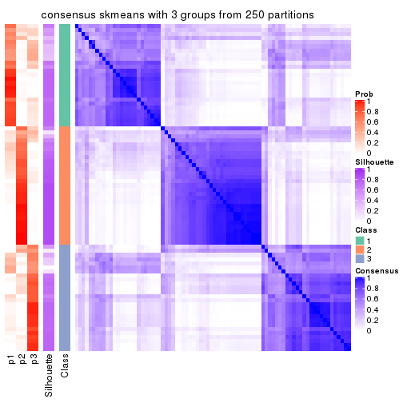
consensus_heatmap(res, k = 4)
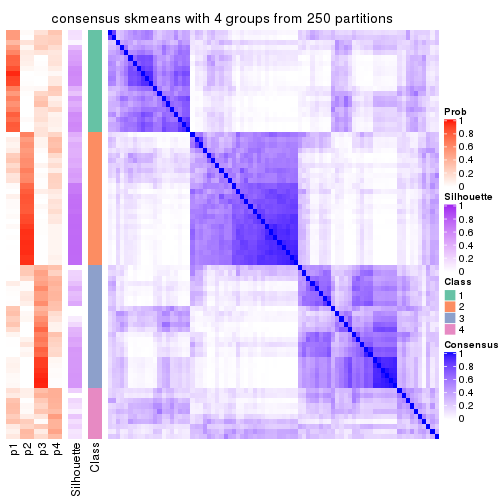
consensus_heatmap(res, k = 5)
consensus_heatmap(res, k = 6)
Heatmaps for the membership of samples in all partitions to see how consistent they are:
membership_heatmap(res, k = 2)
membership_heatmap(res, k = 3)
membership_heatmap(res, k = 4)

membership_heatmap(res, k = 5)

membership_heatmap(res, k = 6)
As soon as we have had the classes for columns, we can look for signatures which are significantly different between classes which can be candidate marks for certain classes. Following are the heatmaps for signatures.
Signature heatmaps where rows are scaled:
get_signatures(res, k = 2)
get_signatures(res, k = 3)
get_signatures(res, k = 4)
get_signatures(res, k = 5)
get_signatures(res, k = 6)

Signature heatmaps where rows are not scaled:
get_signatures(res, k = 2, scale_rows = FALSE)
get_signatures(res, k = 3, scale_rows = FALSE)
get_signatures(res, k = 4, scale_rows = FALSE)
get_signatures(res, k = 5, scale_rows = FALSE)
get_signatures(res, k = 6, scale_rows = FALSE)
Compare the overlap of signatures from different k:
compare_signatures(res)
get_signature() returns a data frame invisibly. TO get the list of signatures, the function
call should be assigned to a variable explicitly. In following code, if plot argument is set
to FALSE, no heatmap is plotted while only the differential analysis is performed.
# code only for demonstration
tb = get_signature(res, k = ..., plot = FALSE)
An example of the output of tb is:
#> which_row fdr mean_1 mean_2 scaled_mean_1 scaled_mean_2 km
#> 1 38 0.042760348 8.373488 9.131774 -0.5533452 0.5164555 1
#> 2 40 0.018707592 7.106213 8.469186 -0.6173731 0.5762149 1
#> 3 55 0.019134737 10.221463 11.207825 -0.6159697 0.5749050 1
#> 4 59 0.006059896 5.921854 7.869574 -0.6899429 0.6439467 1
#> 5 60 0.018055526 8.928898 10.211722 -0.6204761 0.5791110 1
#> 6 98 0.009384629 15.714769 14.887706 0.6635654 -0.6193277 2
...
The columns in tb are:
which_row: row indices corresponding to the input matrix.fdr: FDR for the differential test. mean_x: The mean value in group x.scaled_mean_x: The mean value in group x after rows are scaled.km: Row groups if k-means clustering is applied to rows.UMAP plot which shows how samples are separated.
dimension_reduction(res, k = 2, method = "UMAP")
dimension_reduction(res, k = 3, method = "UMAP")
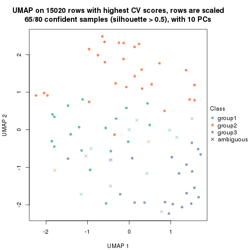
dimension_reduction(res, k = 4, method = "UMAP")
dimension_reduction(res, k = 5, method = "UMAP")
dimension_reduction(res, k = 6, method = "UMAP")
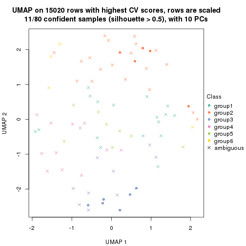
Following heatmap shows how subgroups are split when increasing k:
collect_classes(res)
If matrix rows can be associated to genes, consider to use functional_enrichment(res,
...) to perform function enrichment for the signature genes. See this vignette for more detailed explanations.
The object with results only for a single top-value method and a single partition method can be extracted as:
res = res_list["CV", "pam"]
# you can also extract it by
# res = res_list["CV:pam"]
A summary of res and all the functions that can be applied to it:
res
#> A 'ConsensusPartition' object with k = 2, 3, 4, 5, 6.
#> On a matrix with 15020 rows and 80 columns.
#> Top rows (1000, 2000, 3000, 4000, 5000) are extracted by 'CV' method.
#> Subgroups are detected by 'pam' method.
#> Performed in total 1250 partitions by row resampling.
#> Best k for subgroups seems to be 2.
#>
#> Following methods can be applied to this 'ConsensusPartition' object:
#> [1] "cola_report" "collect_classes" "collect_plots"
#> [4] "collect_stats" "colnames" "compare_signatures"
#> [7] "consensus_heatmap" "dimension_reduction" "functional_enrichment"
#> [10] "get_anno_col" "get_anno" "get_classes"
#> [13] "get_consensus" "get_matrix" "get_membership"
#> [16] "get_param" "get_signatures" "get_stats"
#> [19] "is_best_k" "is_stable_k" "membership_heatmap"
#> [22] "ncol" "nrow" "plot_ecdf"
#> [25] "rownames" "select_partition_number" "show"
#> [28] "suggest_best_k" "test_to_known_factors"
collect_plots() function collects all the plots made from res for all k (number of partitions)
into one single page to provide an easy and fast comparison between different k.
collect_plots(res)
The plots are:
k and the heatmap of
predicted classes for each k.k.k.k.All the plots in panels can be made by individual functions and they are plotted later in this section.
select_partition_number() produces several plots showing different
statistics for choosing “optimized” k. There are following statistics:
k;k, the area increased is defined as \(A_k - A_{k-1}\).The detailed explanations of these statistics can be found in the cola vignette.
Generally speaking, lower PAC score, higher mean silhouette score or higher
concordance corresponds to better partition. Rand index and Jaccard index
measure how similar the current partition is compared to partition with k-1.
If they are too similar, we won't accept k is better than k-1.
select_partition_number(res)

The numeric values for all these statistics can be obtained by get_stats().
get_stats(res)
#> k 1-PAC mean_silhouette concordance area_increased Rand Jaccard
#> 2 2 0.618 0.831 0.921 0.4122 0.596 0.596
#> 3 3 0.582 0.749 0.881 0.2732 0.885 0.808
#> 4 4 0.593 0.664 0.835 0.0956 0.928 0.863
#> 5 5 0.651 0.744 0.869 0.0697 0.930 0.859
#> 6 6 0.698 0.657 0.847 0.0578 0.944 0.869
suggest_best_k() suggests the best \(k\) based on these statistics. The rules are as follows:
suggest_best_k(res)
#> [1] 2
Following shows the table of the partitions (You need to click the show/hide
code output link to see it). The membership matrix (columns with name p*)
is inferred by
clue::cl_consensus()
function with the SE method. Basically the value in the membership matrix
represents the probability to belong to a certain group. The finall class
label for an item is determined with the group with highest probability it
belongs to.
In get_classes() function, the entropy is calculated from the membership
matrix and the silhouette score is calculated from the consensus matrix.
cbind(get_classes(res, k = 2), get_membership(res, k = 2))
#> class entropy silhouette p1 p2
#> SRR1851004 2 0.0000 0.926 0.000 1.000
#> SRR1851003 2 0.0000 0.926 0.000 1.000
#> SRR1851002 2 0.0938 0.924 0.012 0.988
#> SRR1851000 2 0.0938 0.924 0.012 0.988
#> SRR1851001 2 0.0000 0.926 0.000 1.000
#> SRR1850998 2 0.0000 0.926 0.000 1.000
#> SRR1850999 2 0.0000 0.926 0.000 1.000
#> SRR1850997 2 0.0000 0.926 0.000 1.000
#> SRR1850996 1 0.4431 0.838 0.908 0.092
#> SRR1851016 2 0.0000 0.926 0.000 1.000
#> SRR1851010 2 0.0000 0.926 0.000 1.000
#> SRR1851014 2 0.9209 0.530 0.336 0.664
#> SRR1851015 2 0.0000 0.926 0.000 1.000
#> SRR1851013 2 0.8081 0.688 0.248 0.752
#> SRR1851012 1 0.5946 0.797 0.856 0.144
#> SRR1851011 1 0.9963 0.196 0.536 0.464
#> SRR1851009 2 0.0000 0.926 0.000 1.000
#> SRR1851008 1 0.1843 0.872 0.972 0.028
#> SRR1851007 2 0.3114 0.904 0.056 0.944
#> SRR1851006 2 0.2603 0.908 0.044 0.956
#> SRR1851005 2 0.8081 0.661 0.248 0.752
#> SRR1850995 2 0.9286 0.489 0.344 0.656
#> SRR1850994 2 0.5629 0.840 0.132 0.868
#> SRR1850993 2 0.4690 0.857 0.100 0.900
#> SRR1850992 2 0.0000 0.926 0.000 1.000
#> SRR1850991 2 0.0000 0.926 0.000 1.000
#> SRR1850990 2 0.1414 0.922 0.020 0.980
#> SRR1850989 2 0.0000 0.926 0.000 1.000
#> SRR1850987 2 0.1414 0.922 0.020 0.980
#> SRR1850986 2 0.0376 0.925 0.004 0.996
#> SRR1850985 1 0.4298 0.848 0.912 0.088
#> SRR1850983 2 0.0000 0.926 0.000 1.000
#> SRR1850984 2 0.0000 0.926 0.000 1.000
#> SRR1850981 2 0.0000 0.926 0.000 1.000
#> SRR1850980 2 0.9754 0.293 0.408 0.592
#> SRR1850979 2 0.1843 0.917 0.028 0.972
#> SRR1850978 2 0.1414 0.922 0.020 0.980
#> SRR1850977 1 0.1633 0.872 0.976 0.024
#> SRR1850976 2 0.9833 0.221 0.424 0.576
#> SRR1850975 2 0.1843 0.915 0.028 0.972
#> SRR1850974 2 0.3114 0.902 0.056 0.944
#> SRR1850973 2 0.2236 0.914 0.036 0.964
#> SRR1850972 2 0.8763 0.607 0.296 0.704
#> SRR1850970 1 0.4161 0.845 0.916 0.084
#> SRR1850971 1 0.8661 0.615 0.712 0.288
#> SRR1850968 1 0.9896 0.326 0.560 0.440
#> SRR1850969 2 0.3114 0.902 0.056 0.944
#> SRR1850967 2 0.3431 0.896 0.064 0.936
#> SRR1850966 2 0.0000 0.926 0.000 1.000
#> SRR1850965 2 0.2948 0.905 0.052 0.948
#> SRR1850964 2 0.0000 0.926 0.000 1.000
#> SRR1850963 2 0.0000 0.926 0.000 1.000
#> SRR1850962 1 0.2043 0.870 0.968 0.032
#> SRR1850961 1 0.0000 0.870 1.000 0.000
#> SRR1850959 2 0.4815 0.869 0.104 0.896
#> SRR1850960 2 0.0938 0.924 0.012 0.988
#> SRR1850958 2 0.0376 0.925 0.004 0.996
#> SRR1850988 2 0.0376 0.925 0.004 0.996
#> SRR1850957 2 0.0000 0.926 0.000 1.000
#> SRR1850956 2 0.7139 0.763 0.196 0.804
#> SRR1850955 1 0.9129 0.524 0.672 0.328
#> SRR1850953 2 0.4690 0.870 0.100 0.900
#> SRR1850954 1 0.9710 0.315 0.600 0.400
#> SRR1850952 1 0.0938 0.870 0.988 0.012
#> SRR1850982 2 0.0000 0.926 0.000 1.000
#> SRR1850951 1 0.0000 0.870 1.000 0.000
#> SRR1850950 2 0.0000 0.926 0.000 1.000
#> SRR1850949 2 0.0000 0.926 0.000 1.000
#> SRR1850948 1 0.0000 0.870 1.000 0.000
#> SRR1850947 1 0.0000 0.870 1.000 0.000
#> SRR1850946 1 0.1843 0.872 0.972 0.028
#> SRR1850945 2 0.7139 0.769 0.196 0.804
#> SRR1850944 2 0.1843 0.919 0.028 0.972
#> SRR1850943 2 0.0938 0.924 0.012 0.988
#> SRR1850942 1 0.0672 0.871 0.992 0.008
#> SRR1850940 1 0.0000 0.870 1.000 0.000
#> SRR1850941 1 0.1843 0.872 0.972 0.028
#> SRR1850938 2 0.4939 0.869 0.108 0.892
#> SRR1850939 1 0.0000 0.870 1.000 0.000
#> SRR1850937 2 0.0000 0.926 0.000 1.000
cbind(get_classes(res, k = 3), get_membership(res, k = 3))
#> class entropy silhouette p1 p2 p3
#> SRR1851004 2 0.0000 0.909 0.000 1.000 0.000
#> SRR1851003 2 0.0000 0.909 0.000 1.000 0.000
#> SRR1851002 2 0.0829 0.907 0.004 0.984 0.012
#> SRR1851000 2 0.2116 0.896 0.040 0.948 0.012
#> SRR1851001 2 0.0000 0.909 0.000 1.000 0.000
#> SRR1850998 2 0.0000 0.909 0.000 1.000 0.000
#> SRR1850999 2 0.0237 0.909 0.004 0.996 0.000
#> SRR1850997 2 0.0000 0.909 0.000 1.000 0.000
#> SRR1850996 3 0.6737 0.292 0.384 0.016 0.600
#> SRR1851016 2 0.4346 0.743 0.184 0.816 0.000
#> SRR1851010 2 0.0000 0.909 0.000 1.000 0.000
#> SRR1851014 2 0.7208 0.504 0.048 0.644 0.308
#> SRR1851015 2 0.0000 0.909 0.000 1.000 0.000
#> SRR1851013 2 0.6646 0.634 0.048 0.712 0.240
#> SRR1851012 3 0.4335 0.667 0.036 0.100 0.864
#> SRR1851011 3 0.7015 0.306 0.024 0.392 0.584
#> SRR1851009 2 0.0000 0.909 0.000 1.000 0.000
#> SRR1851008 3 0.3141 0.727 0.068 0.020 0.912
#> SRR1851007 2 0.4399 0.837 0.092 0.864 0.044
#> SRR1851006 2 0.2173 0.892 0.008 0.944 0.048
#> SRR1851005 2 0.6559 0.608 0.040 0.708 0.252
#> SRR1850995 1 0.9481 0.265 0.492 0.284 0.224
#> SRR1850994 1 0.5159 0.761 0.820 0.140 0.040
#> SRR1850993 1 0.3295 0.794 0.896 0.096 0.008
#> SRR1850992 2 0.0000 0.909 0.000 1.000 0.000
#> SRR1850991 2 0.1753 0.890 0.048 0.952 0.000
#> SRR1850990 2 0.5903 0.668 0.232 0.744 0.024
#> SRR1850989 2 0.1964 0.882 0.056 0.944 0.000
#> SRR1850987 2 0.1267 0.905 0.004 0.972 0.024
#> SRR1850986 1 0.2878 0.784 0.904 0.096 0.000
#> SRR1850985 3 0.6627 0.472 0.336 0.020 0.644
#> SRR1850983 2 0.0000 0.909 0.000 1.000 0.000
#> SRR1850984 2 0.0000 0.909 0.000 1.000 0.000
#> SRR1850981 2 0.0000 0.909 0.000 1.000 0.000
#> SRR1850980 2 0.9888 -0.263 0.264 0.388 0.348
#> SRR1850979 2 0.1919 0.899 0.020 0.956 0.024
#> SRR1850978 1 0.3918 0.775 0.856 0.140 0.004
#> SRR1850977 1 0.1964 0.737 0.944 0.000 0.056
#> SRR1850976 2 0.8710 0.106 0.112 0.508 0.380
#> SRR1850975 2 0.2982 0.872 0.056 0.920 0.024
#> SRR1850974 2 0.2261 0.883 0.000 0.932 0.068
#> SRR1850973 2 0.1411 0.900 0.000 0.964 0.036
#> SRR1850972 1 0.4937 0.718 0.824 0.028 0.148
#> SRR1850970 3 0.2804 0.709 0.016 0.060 0.924
#> SRR1850971 3 0.8822 0.219 0.324 0.136 0.540
#> SRR1850968 3 0.7311 0.324 0.036 0.384 0.580
#> SRR1850969 2 0.2261 0.883 0.000 0.932 0.068
#> SRR1850967 2 0.2261 0.884 0.000 0.932 0.068
#> SRR1850966 2 0.0237 0.909 0.004 0.996 0.000
#> SRR1850965 2 0.2165 0.885 0.000 0.936 0.064
#> SRR1850964 2 0.0000 0.909 0.000 1.000 0.000
#> SRR1850963 2 0.0000 0.909 0.000 1.000 0.000
#> SRR1850962 3 0.3030 0.709 0.092 0.004 0.904
#> SRR1850961 3 0.1860 0.726 0.052 0.000 0.948
#> SRR1850959 2 0.3921 0.845 0.016 0.872 0.112
#> SRR1850960 2 0.1015 0.906 0.008 0.980 0.012
#> SRR1850958 2 0.0237 0.909 0.000 0.996 0.004
#> SRR1850988 2 0.0237 0.909 0.000 0.996 0.004
#> SRR1850957 2 0.0237 0.909 0.004 0.996 0.000
#> SRR1850956 2 0.5955 0.727 0.048 0.772 0.180
#> SRR1850955 3 0.8394 0.307 0.108 0.316 0.576
#> SRR1850953 2 0.4174 0.838 0.036 0.872 0.092
#> SRR1850954 3 0.8789 0.141 0.112 0.428 0.460
#> SRR1850952 1 0.4931 0.646 0.784 0.004 0.212
#> SRR1850982 2 0.0000 0.909 0.000 1.000 0.000
#> SRR1850951 3 0.1031 0.729 0.024 0.000 0.976
#> SRR1850950 2 0.0000 0.909 0.000 1.000 0.000
#> SRR1850949 2 0.0000 0.909 0.000 1.000 0.000
#> SRR1850948 3 0.1031 0.728 0.024 0.000 0.976
#> SRR1850947 3 0.1031 0.729 0.024 0.000 0.976
#> SRR1850946 3 0.2176 0.731 0.020 0.032 0.948
#> SRR1850945 2 0.4702 0.748 0.000 0.788 0.212
#> SRR1850944 2 0.1585 0.902 0.008 0.964 0.028
#> SRR1850943 2 0.0829 0.906 0.004 0.984 0.012
#> SRR1850942 3 0.1878 0.726 0.044 0.004 0.952
#> SRR1850940 3 0.0592 0.727 0.012 0.000 0.988
#> SRR1850941 3 0.2749 0.723 0.064 0.012 0.924
#> SRR1850938 2 0.3695 0.852 0.012 0.880 0.108
#> SRR1850939 3 0.0747 0.726 0.016 0.000 0.984
#> SRR1850937 2 0.0000 0.909 0.000 1.000 0.000
cbind(get_classes(res, k = 4), get_membership(res, k = 4))
#> class entropy silhouette p1 p2 p3 p4
#> SRR1851004 2 0.0000 0.8725 0.000 1.000 0.000 0.000
#> SRR1851003 2 0.0000 0.8725 0.000 1.000 0.000 0.000
#> SRR1851002 2 0.0672 0.8711 0.000 0.984 0.008 0.008
#> SRR1851000 2 0.2174 0.8545 0.000 0.928 0.020 0.052
#> SRR1851001 2 0.0000 0.8725 0.000 1.000 0.000 0.000
#> SRR1850998 2 0.0000 0.8725 0.000 1.000 0.000 0.000
#> SRR1850999 2 0.0000 0.8725 0.000 1.000 0.000 0.000
#> SRR1850997 2 0.0000 0.8725 0.000 1.000 0.000 0.000
#> SRR1850996 4 0.4988 0.5840 0.024 0.016 0.204 0.756
#> SRR1851016 2 0.4114 0.7642 0.060 0.828 0.000 0.112
#> SRR1851010 2 0.0000 0.8725 0.000 1.000 0.000 0.000
#> SRR1851014 2 0.6808 0.3900 0.000 0.560 0.320 0.120
#> SRR1851015 2 0.0000 0.8725 0.000 1.000 0.000 0.000
#> SRR1851013 2 0.5745 0.5684 0.000 0.656 0.288 0.056
#> SRR1851012 3 0.2048 0.6092 0.000 0.008 0.928 0.064
#> SRR1851011 3 0.5574 0.2306 0.000 0.284 0.668 0.048
#> SRR1851009 2 0.0000 0.8725 0.000 1.000 0.000 0.000
#> SRR1851008 4 0.5531 0.2835 0.004 0.012 0.436 0.548
#> SRR1851007 2 0.5035 0.7600 0.040 0.796 0.040 0.124
#> SRR1851006 2 0.2214 0.8517 0.000 0.928 0.044 0.028
#> SRR1851005 2 0.6260 0.5864 0.000 0.664 0.192 0.144
#> SRR1850995 4 0.6780 0.2755 0.108 0.096 0.096 0.700
#> SRR1850994 1 0.6775 0.6171 0.636 0.128 0.012 0.224
#> SRR1850993 1 0.5599 0.6940 0.664 0.048 0.000 0.288
#> SRR1850992 2 0.0000 0.8725 0.000 1.000 0.000 0.000
#> SRR1850991 2 0.3052 0.8000 0.136 0.860 0.004 0.000
#> SRR1850990 2 0.5582 0.4364 0.400 0.576 0.000 0.024
#> SRR1850989 2 0.4585 0.5750 0.332 0.668 0.000 0.000
#> SRR1850987 2 0.1004 0.8685 0.000 0.972 0.024 0.004
#> SRR1850986 1 0.0188 0.5401 0.996 0.004 0.000 0.000
#> SRR1850985 1 0.7613 -0.0516 0.540 0.012 0.212 0.236
#> SRR1850983 2 0.0000 0.8725 0.000 1.000 0.000 0.000
#> SRR1850984 2 0.0000 0.8725 0.000 1.000 0.000 0.000
#> SRR1850981 2 0.0000 0.8725 0.000 1.000 0.000 0.000
#> SRR1850980 2 0.9260 -0.1126 0.092 0.396 0.264 0.248
#> SRR1850979 2 0.2313 0.8542 0.000 0.924 0.032 0.044
#> SRR1850978 1 0.6040 0.6815 0.648 0.080 0.000 0.272
#> SRR1850977 1 0.4917 0.6678 0.656 0.000 0.008 0.336
#> SRR1850976 2 0.8996 -0.0717 0.352 0.368 0.068 0.212
#> SRR1850975 2 0.5853 0.5269 0.332 0.628 0.028 0.012
#> SRR1850974 2 0.2021 0.8539 0.000 0.936 0.040 0.024
#> SRR1850973 2 0.1406 0.8639 0.000 0.960 0.024 0.016
#> SRR1850972 1 0.7076 0.6231 0.588 0.004 0.184 0.224
#> SRR1850970 3 0.1970 0.6358 0.000 0.008 0.932 0.060
#> SRR1850971 3 0.7454 0.2637 0.092 0.060 0.608 0.240
#> SRR1850968 3 0.6862 0.2129 0.000 0.228 0.596 0.176
#> SRR1850969 2 0.2124 0.8520 0.000 0.932 0.040 0.028
#> SRR1850967 2 0.2565 0.8450 0.000 0.912 0.056 0.032
#> SRR1850966 2 0.0188 0.8722 0.000 0.996 0.000 0.004
#> SRR1850965 2 0.2032 0.8541 0.000 0.936 0.036 0.028
#> SRR1850964 2 0.0336 0.8719 0.008 0.992 0.000 0.000
#> SRR1850963 2 0.0000 0.8725 0.000 1.000 0.000 0.000
#> SRR1850962 4 0.4990 0.5635 0.008 0.000 0.352 0.640
#> SRR1850961 4 0.5004 0.5291 0.004 0.000 0.392 0.604
#> SRR1850959 2 0.3745 0.8134 0.000 0.852 0.088 0.060
#> SRR1850960 2 0.0804 0.8695 0.000 0.980 0.012 0.008
#> SRR1850958 2 0.0188 0.8721 0.000 0.996 0.000 0.004
#> SRR1850988 2 0.0336 0.8718 0.000 0.992 0.008 0.000
#> SRR1850957 2 0.0188 0.8722 0.000 0.996 0.000 0.004
#> SRR1850956 2 0.5250 0.7028 0.000 0.744 0.080 0.176
#> SRR1850955 2 0.8952 -0.1734 0.060 0.388 0.316 0.236
#> SRR1850953 2 0.3717 0.8112 0.004 0.860 0.056 0.080
#> SRR1850954 2 0.8486 0.0883 0.040 0.460 0.276 0.224
#> SRR1850952 1 0.7300 0.5860 0.516 0.000 0.180 0.304
#> SRR1850982 2 0.0000 0.8725 0.000 1.000 0.000 0.000
#> SRR1850951 3 0.2469 0.6092 0.000 0.000 0.892 0.108
#> SRR1850950 2 0.0000 0.8725 0.000 1.000 0.000 0.000
#> SRR1850949 2 0.0000 0.8725 0.000 1.000 0.000 0.000
#> SRR1850948 3 0.3052 0.5567 0.004 0.000 0.860 0.136
#> SRR1850947 3 0.4431 0.2311 0.000 0.000 0.696 0.304
#> SRR1850946 3 0.2376 0.6320 0.000 0.016 0.916 0.068
#> SRR1850945 2 0.4636 0.7314 0.000 0.772 0.188 0.040
#> SRR1850944 2 0.1452 0.8642 0.000 0.956 0.036 0.008
#> SRR1850943 2 0.0779 0.8695 0.000 0.980 0.016 0.004
#> SRR1850942 3 0.3945 0.4916 0.000 0.004 0.780 0.216
#> SRR1850940 3 0.0188 0.6424 0.000 0.000 0.996 0.004
#> SRR1850941 3 0.4053 0.4788 0.000 0.004 0.768 0.228
#> SRR1850938 2 0.3149 0.8300 0.000 0.880 0.088 0.032
#> SRR1850939 3 0.0000 0.6422 0.000 0.000 1.000 0.000
#> SRR1850937 2 0.0000 0.8725 0.000 1.000 0.000 0.000
cbind(get_classes(res, k = 5), get_membership(res, k = 5))
#> class entropy silhouette p1 p2 p3 p4 p5
#> SRR1851004 2 0.0000 0.8847 0.000 1.000 0.000 0.000 0.000
#> SRR1851003 2 0.0000 0.8847 0.000 1.000 0.000 0.000 0.000
#> SRR1851002 2 0.0566 0.8833 0.000 0.984 0.004 0.000 0.012
#> SRR1851000 2 0.2715 0.8449 0.016 0.900 0.004 0.052 0.028
#> SRR1851001 2 0.0000 0.8847 0.000 1.000 0.000 0.000 0.000
#> SRR1850998 2 0.0000 0.8847 0.000 1.000 0.000 0.000 0.000
#> SRR1850999 2 0.0162 0.8846 0.000 0.996 0.000 0.000 0.004
#> SRR1850997 2 0.0000 0.8847 0.000 1.000 0.000 0.000 0.000
#> SRR1850996 5 0.1492 0.8299 0.008 0.004 0.040 0.000 0.948
#> SRR1851016 2 0.4124 0.6817 0.180 0.776 0.000 0.036 0.008
#> SRR1851010 2 0.0000 0.8847 0.000 1.000 0.000 0.000 0.000
#> SRR1851014 2 0.7415 0.4014 0.016 0.564 0.176 0.164 0.080
#> SRR1851015 2 0.0000 0.8847 0.000 1.000 0.000 0.000 0.000
#> SRR1851013 2 0.5162 0.5484 0.004 0.656 0.292 0.012 0.036
#> SRR1851012 3 0.1579 0.7336 0.000 0.000 0.944 0.024 0.032
#> SRR1851011 3 0.4844 0.4241 0.000 0.244 0.704 0.020 0.032
#> SRR1851009 2 0.0000 0.8847 0.000 1.000 0.000 0.000 0.000
#> SRR1851008 5 0.5966 0.5911 0.020 0.012 0.112 0.188 0.668
#> SRR1851007 2 0.5900 0.6054 0.044 0.696 0.020 0.176 0.064
#> SRR1851006 2 0.1996 0.8632 0.004 0.932 0.016 0.008 0.040
#> SRR1851005 2 0.7083 0.4534 0.012 0.604 0.124 0.100 0.160
#> SRR1850995 5 0.4965 0.6353 0.220 0.016 0.032 0.012 0.720
#> SRR1850994 1 0.2535 0.7763 0.892 0.076 0.000 0.000 0.032
#> SRR1850993 1 0.0693 0.8544 0.980 0.008 0.000 0.000 0.012
#> SRR1850992 2 0.0000 0.8847 0.000 1.000 0.000 0.000 0.000
#> SRR1850991 2 0.3970 0.5842 0.020 0.744 0.000 0.236 0.000
#> SRR1850990 4 0.3487 0.7099 0.008 0.212 0.000 0.780 0.000
#> SRR1850989 4 0.3857 0.6048 0.000 0.312 0.000 0.688 0.000
#> SRR1850987 2 0.1200 0.8781 0.008 0.964 0.012 0.000 0.016
#> SRR1850986 4 0.3752 0.3868 0.292 0.000 0.000 0.708 0.000
#> SRR1850985 4 0.3160 0.4564 0.032 0.000 0.040 0.876 0.052
#> SRR1850983 2 0.0000 0.8847 0.000 1.000 0.000 0.000 0.000
#> SRR1850984 2 0.0000 0.8847 0.000 1.000 0.000 0.000 0.000
#> SRR1850981 2 0.0000 0.8847 0.000 1.000 0.000 0.000 0.000
#> SRR1850980 2 0.8478 -0.0498 0.264 0.408 0.212 0.032 0.084
#> SRR1850979 2 0.2514 0.8569 0.008 0.912 0.028 0.012 0.040
#> SRR1850978 1 0.0865 0.8517 0.972 0.024 0.000 0.000 0.004
#> SRR1850977 1 0.0404 0.8510 0.988 0.000 0.000 0.000 0.012
#> SRR1850976 4 0.3257 0.6712 0.000 0.112 0.012 0.852 0.024
#> SRR1850975 4 0.3491 0.6991 0.000 0.228 0.004 0.768 0.000
#> SRR1850974 2 0.1626 0.8659 0.000 0.940 0.016 0.000 0.044
#> SRR1850973 2 0.1195 0.8752 0.000 0.960 0.012 0.000 0.028
#> SRR1850972 1 0.3578 0.7404 0.788 0.004 0.200 0.004 0.004
#> SRR1850970 3 0.2069 0.7435 0.000 0.012 0.912 0.000 0.076
#> SRR1850971 3 0.8059 0.3606 0.244 0.044 0.504 0.112 0.096
#> SRR1850968 3 0.7361 0.4204 0.008 0.152 0.568 0.160 0.112
#> SRR1850969 2 0.1701 0.8637 0.000 0.936 0.016 0.000 0.048
#> SRR1850967 2 0.1907 0.8624 0.000 0.928 0.028 0.000 0.044
#> SRR1850966 2 0.0162 0.8846 0.004 0.996 0.000 0.000 0.000
#> SRR1850965 2 0.1597 0.8657 0.000 0.940 0.012 0.000 0.048
#> SRR1850964 2 0.0404 0.8830 0.000 0.988 0.000 0.012 0.000
#> SRR1850963 2 0.0000 0.8847 0.000 1.000 0.000 0.000 0.000
#> SRR1850962 5 0.1591 0.8253 0.004 0.000 0.052 0.004 0.940
#> SRR1850961 5 0.1478 0.8274 0.000 0.000 0.064 0.000 0.936
#> SRR1850959 2 0.3071 0.8339 0.012 0.872 0.036 0.000 0.080
#> SRR1850960 2 0.0807 0.8806 0.012 0.976 0.000 0.000 0.012
#> SRR1850958 2 0.0162 0.8845 0.000 0.996 0.000 0.000 0.004
#> SRR1850988 2 0.0451 0.8835 0.000 0.988 0.008 0.000 0.004
#> SRR1850957 2 0.0162 0.8846 0.004 0.996 0.000 0.000 0.000
#> SRR1850956 2 0.4672 0.7451 0.028 0.784 0.028 0.024 0.136
#> SRR1850955 2 0.8278 0.1854 0.120 0.484 0.208 0.032 0.156
#> SRR1850953 2 0.3484 0.8205 0.016 0.868 0.032 0.028 0.056
#> SRR1850954 2 0.7758 0.3208 0.088 0.532 0.232 0.032 0.116
#> SRR1850952 1 0.3764 0.7561 0.808 0.000 0.148 0.004 0.040
#> SRR1850982 2 0.0000 0.8847 0.000 1.000 0.000 0.000 0.000
#> SRR1850951 3 0.2460 0.7381 0.004 0.000 0.900 0.024 0.072
#> SRR1850950 2 0.0000 0.8847 0.000 1.000 0.000 0.000 0.000
#> SRR1850949 2 0.0000 0.8847 0.000 1.000 0.000 0.000 0.000
#> SRR1850948 3 0.3048 0.6836 0.004 0.000 0.820 0.000 0.176
#> SRR1850947 3 0.4309 0.4799 0.000 0.000 0.676 0.016 0.308
#> SRR1850946 3 0.2275 0.7459 0.008 0.004 0.912 0.008 0.068
#> SRR1850945 2 0.4491 0.7319 0.008 0.772 0.152 0.004 0.064
#> SRR1850944 2 0.1596 0.8720 0.012 0.948 0.028 0.000 0.012
#> SRR1850943 2 0.0981 0.8791 0.008 0.972 0.008 0.000 0.012
#> SRR1850942 3 0.4281 0.6696 0.012 0.000 0.756 0.028 0.204
#> SRR1850940 3 0.0000 0.7447 0.000 0.000 1.000 0.000 0.000
#> SRR1850941 3 0.4479 0.6613 0.012 0.000 0.748 0.040 0.200
#> SRR1850938 2 0.2943 0.8371 0.008 0.880 0.052 0.000 0.060
#> SRR1850939 3 0.0000 0.7447 0.000 0.000 1.000 0.000 0.000
#> SRR1850937 2 0.0162 0.8845 0.004 0.996 0.000 0.000 0.000
cbind(get_classes(res, k = 6), get_membership(res, k = 6))
#> class entropy silhouette p1 p2 p3 p4 p5 p6
#> SRR1851004 2 0.0000 0.8615 0.000 1.000 0.000 0.000 0.000 0.000
#> SRR1851003 2 0.0000 0.8615 0.000 1.000 0.000 0.000 0.000 0.000
#> SRR1851002 2 0.0436 0.8594 0.000 0.988 0.004 0.000 0.004 0.004
#> SRR1851000 2 0.2420 0.7734 0.008 0.876 0.000 0.000 0.008 0.108
#> SRR1851001 2 0.0000 0.8615 0.000 1.000 0.000 0.000 0.000 0.000
#> SRR1850998 2 0.0000 0.8615 0.000 1.000 0.000 0.000 0.000 0.000
#> SRR1850999 2 0.0146 0.8608 0.000 0.996 0.000 0.000 0.000 0.004
#> SRR1850997 2 0.0000 0.8615 0.000 1.000 0.000 0.000 0.000 0.000
#> SRR1850996 5 0.0696 0.8537 0.004 0.004 0.008 0.000 0.980 0.004
#> SRR1851016 2 0.4486 0.4398 0.184 0.704 0.000 0.000 0.000 0.112
#> SRR1851010 2 0.0000 0.8615 0.000 1.000 0.000 0.000 0.000 0.000
#> SRR1851014 6 0.4808 0.4447 0.000 0.408 0.056 0.000 0.000 0.536
#> SRR1851015 2 0.0000 0.8615 0.000 1.000 0.000 0.000 0.000 0.000
#> SRR1851013 2 0.5058 0.1748 0.000 0.600 0.292 0.000 0.000 0.108
#> SRR1851012 3 0.1267 0.7670 0.000 0.000 0.940 0.000 0.000 0.060
#> SRR1851011 3 0.5437 0.0527 0.000 0.228 0.576 0.000 0.000 0.196
#> SRR1851009 2 0.0000 0.8615 0.000 1.000 0.000 0.000 0.000 0.000
#> SRR1851008 6 0.4161 -0.1710 0.000 0.004 0.036 0.000 0.264 0.696
#> SRR1851007 6 0.4204 0.3786 0.008 0.448 0.004 0.000 0.000 0.540
#> SRR1851006 2 0.2946 0.6464 0.000 0.808 0.004 0.000 0.004 0.184
#> SRR1851005 6 0.5613 0.3860 0.000 0.436 0.060 0.000 0.036 0.468
#> SRR1850995 5 0.5790 0.5387 0.116 0.008 0.012 0.000 0.544 0.320
#> SRR1850994 1 0.2711 0.7408 0.872 0.068 0.000 0.000 0.056 0.004
#> SRR1850993 1 0.0291 0.8236 0.992 0.000 0.000 0.004 0.004 0.000
#> SRR1850992 2 0.0000 0.8615 0.000 1.000 0.000 0.000 0.000 0.000
#> SRR1850991 2 0.3509 0.5295 0.016 0.744 0.000 0.240 0.000 0.000
#> SRR1850990 4 0.1531 0.6658 0.004 0.068 0.000 0.928 0.000 0.000
#> SRR1850989 4 0.3607 0.1987 0.000 0.348 0.000 0.652 0.000 0.000
#> SRR1850987 2 0.1129 0.8494 0.004 0.964 0.012 0.000 0.008 0.012
#> SRR1850986 4 0.3515 0.4153 0.324 0.000 0.000 0.676 0.000 0.000
#> SRR1850985 4 0.4608 0.4886 0.008 0.000 0.020 0.632 0.012 0.328
#> SRR1850983 2 0.0000 0.8615 0.000 1.000 0.000 0.000 0.000 0.000
#> SRR1850984 2 0.0000 0.8615 0.000 1.000 0.000 0.000 0.000 0.000
#> SRR1850981 2 0.0000 0.8615 0.000 1.000 0.000 0.000 0.000 0.000
#> SRR1850980 2 0.8486 -0.4166 0.152 0.296 0.188 0.000 0.080 0.284
#> SRR1850979 2 0.3014 0.7672 0.004 0.864 0.028 0.000 0.024 0.080
#> SRR1850978 1 0.0363 0.8243 0.988 0.012 0.000 0.000 0.000 0.000
#> SRR1850977 1 0.0146 0.8250 0.996 0.000 0.000 0.000 0.000 0.004
#> SRR1850976 4 0.0146 0.6392 0.000 0.004 0.000 0.996 0.000 0.000
#> SRR1850975 4 0.1219 0.6589 0.000 0.048 0.000 0.948 0.000 0.004
#> SRR1850974 2 0.1148 0.8459 0.000 0.960 0.004 0.000 0.020 0.016
#> SRR1850973 2 0.0862 0.8519 0.000 0.972 0.004 0.000 0.008 0.016
#> SRR1850972 1 0.4463 0.6709 0.720 0.004 0.192 0.004 0.000 0.080
#> SRR1850970 3 0.2652 0.7548 0.000 0.008 0.868 0.000 0.020 0.104
#> SRR1850971 6 0.6745 -0.1757 0.172 0.020 0.340 0.004 0.020 0.444
#> SRR1850968 6 0.5892 0.1104 0.000 0.092 0.292 0.000 0.052 0.564
#> SRR1850969 2 0.1059 0.8475 0.000 0.964 0.004 0.000 0.016 0.016
#> SRR1850967 2 0.2547 0.7500 0.000 0.868 0.004 0.000 0.016 0.112
#> SRR1850966 2 0.0000 0.8615 0.000 1.000 0.000 0.000 0.000 0.000
#> SRR1850965 2 0.1059 0.8475 0.000 0.964 0.004 0.000 0.016 0.016
#> SRR1850964 2 0.0547 0.8545 0.000 0.980 0.000 0.020 0.000 0.000
#> SRR1850963 2 0.0000 0.8615 0.000 1.000 0.000 0.000 0.000 0.000
#> SRR1850962 5 0.0405 0.8534 0.000 0.000 0.008 0.000 0.988 0.004
#> SRR1850961 5 0.0632 0.8513 0.000 0.000 0.024 0.000 0.976 0.000
#> SRR1850959 2 0.3112 0.7674 0.008 0.856 0.016 0.000 0.028 0.092
#> SRR1850960 2 0.0665 0.8550 0.004 0.980 0.000 0.000 0.008 0.008
#> SRR1850958 2 0.0146 0.8606 0.000 0.996 0.000 0.000 0.004 0.000
#> SRR1850988 2 0.0405 0.8586 0.000 0.988 0.008 0.000 0.004 0.000
#> SRR1850957 2 0.0000 0.8615 0.000 1.000 0.000 0.000 0.000 0.000
#> SRR1850956 2 0.5687 0.3148 0.016 0.616 0.020 0.000 0.100 0.248
#> SRR1850955 2 0.8105 -0.3074 0.072 0.368 0.128 0.000 0.136 0.296
#> SRR1850953 2 0.4149 0.6680 0.008 0.796 0.032 0.004 0.048 0.112
#> SRR1850954 2 0.8186 -0.3361 0.072 0.352 0.208 0.000 0.100 0.268
#> SRR1850952 1 0.5215 0.6117 0.684 0.000 0.148 0.000 0.040 0.128
#> SRR1850982 2 0.0000 0.8615 0.000 1.000 0.000 0.000 0.000 0.000
#> SRR1850951 3 0.2794 0.7663 0.000 0.000 0.860 0.000 0.060 0.080
#> SRR1850950 2 0.0000 0.8615 0.000 1.000 0.000 0.000 0.000 0.000
#> SRR1850949 2 0.0000 0.8615 0.000 1.000 0.000 0.000 0.000 0.000
#> SRR1850948 3 0.3201 0.6964 0.000 0.000 0.780 0.000 0.208 0.012
#> SRR1850947 3 0.4929 0.5345 0.000 0.000 0.620 0.000 0.280 0.100
#> SRR1850946 3 0.1930 0.7793 0.000 0.000 0.916 0.000 0.048 0.036
#> SRR1850945 2 0.3992 0.6449 0.008 0.780 0.160 0.000 0.028 0.024
#> SRR1850944 2 0.1488 0.8390 0.008 0.948 0.028 0.000 0.008 0.008
#> SRR1850943 2 0.1038 0.8495 0.008 0.968 0.008 0.000 0.008 0.008
#> SRR1850942 3 0.4628 0.6917 0.008 0.000 0.712 0.000 0.156 0.124
#> SRR1850940 3 0.0146 0.7775 0.000 0.000 0.996 0.000 0.004 0.000
#> SRR1850941 3 0.4912 0.6655 0.008 0.000 0.680 0.000 0.164 0.148
#> SRR1850938 2 0.2451 0.8113 0.008 0.904 0.036 0.000 0.028 0.024
#> SRR1850939 3 0.0146 0.7775 0.000 0.000 0.996 0.000 0.004 0.000
#> SRR1850937 2 0.0146 0.8607 0.004 0.996 0.000 0.000 0.000 0.000
Heatmaps for the consensus matrix. It visualizes the probability of two samples to be in a same group.
consensus_heatmap(res, k = 2)
consensus_heatmap(res, k = 3)
consensus_heatmap(res, k = 4)
consensus_heatmap(res, k = 5)
consensus_heatmap(res, k = 6)
Heatmaps for the membership of samples in all partitions to see how consistent they are:
membership_heatmap(res, k = 2)
membership_heatmap(res, k = 3)
membership_heatmap(res, k = 4)
membership_heatmap(res, k = 5)
membership_heatmap(res, k = 6)
As soon as we have had the classes for columns, we can look for signatures which are significantly different between classes which can be candidate marks for certain classes. Following are the heatmaps for signatures.
Signature heatmaps where rows are scaled:
get_signatures(res, k = 2)
get_signatures(res, k = 3)
get_signatures(res, k = 4)
get_signatures(res, k = 5)
get_signatures(res, k = 6)
Signature heatmaps where rows are not scaled:
get_signatures(res, k = 2, scale_rows = FALSE)
get_signatures(res, k = 3, scale_rows = FALSE)
get_signatures(res, k = 4, scale_rows = FALSE)
get_signatures(res, k = 5, scale_rows = FALSE)
get_signatures(res, k = 6, scale_rows = FALSE)
Compare the overlap of signatures from different k:
compare_signatures(res)
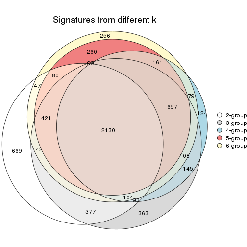
get_signature() returns a data frame invisibly. TO get the list of signatures, the function
call should be assigned to a variable explicitly. In following code, if plot argument is set
to FALSE, no heatmap is plotted while only the differential analysis is performed.
# code only for demonstration
tb = get_signature(res, k = ..., plot = FALSE)
An example of the output of tb is:
#> which_row fdr mean_1 mean_2 scaled_mean_1 scaled_mean_2 km
#> 1 38 0.042760348 8.373488 9.131774 -0.5533452 0.5164555 1
#> 2 40 0.018707592 7.106213 8.469186 -0.6173731 0.5762149 1
#> 3 55 0.019134737 10.221463 11.207825 -0.6159697 0.5749050 1
#> 4 59 0.006059896 5.921854 7.869574 -0.6899429 0.6439467 1
#> 5 60 0.018055526 8.928898 10.211722 -0.6204761 0.5791110 1
#> 6 98 0.009384629 15.714769 14.887706 0.6635654 -0.6193277 2
...
The columns in tb are:
which_row: row indices corresponding to the input matrix.fdr: FDR for the differential test. mean_x: The mean value in group x.scaled_mean_x: The mean value in group x after rows are scaled.km: Row groups if k-means clustering is applied to rows.UMAP plot which shows how samples are separated.
dimension_reduction(res, k = 2, method = "UMAP")
dimension_reduction(res, k = 3, method = "UMAP")
dimension_reduction(res, k = 4, method = "UMAP")
dimension_reduction(res, k = 5, method = "UMAP")
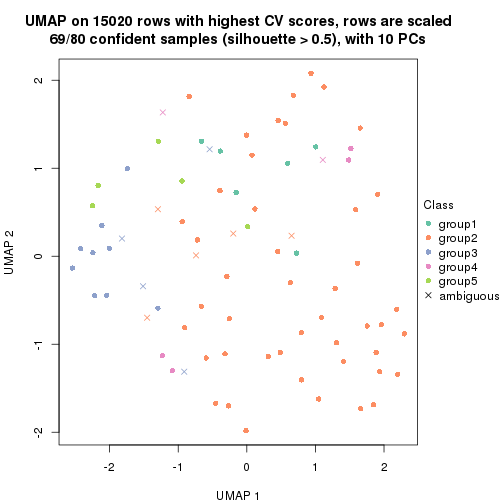
dimension_reduction(res, k = 6, method = "UMAP")
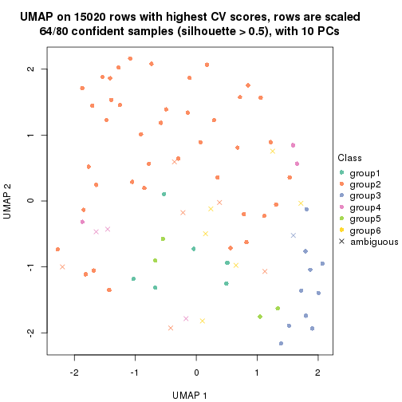
Following heatmap shows how subgroups are split when increasing k:
collect_classes(res)
If matrix rows can be associated to genes, consider to use functional_enrichment(res,
...) to perform function enrichment for the signature genes. See this vignette for more detailed explanations.
The object with results only for a single top-value method and a single partition method can be extracted as:
res = res_list["CV", "mclust"]
# you can also extract it by
# res = res_list["CV:mclust"]
A summary of res and all the functions that can be applied to it:
res
#> A 'ConsensusPartition' object with k = 2, 3, 4, 5, 6.
#> On a matrix with 15020 rows and 80 columns.
#> Top rows (1000, 2000, 3000, 4000, 5000) are extracted by 'CV' method.
#> Subgroups are detected by 'mclust' method.
#> Performed in total 1250 partitions by row resampling.
#> Best k for subgroups seems to be 4.
#>
#> Following methods can be applied to this 'ConsensusPartition' object:
#> [1] "cola_report" "collect_classes" "collect_plots"
#> [4] "collect_stats" "colnames" "compare_signatures"
#> [7] "consensus_heatmap" "dimension_reduction" "functional_enrichment"
#> [10] "get_anno_col" "get_anno" "get_classes"
#> [13] "get_consensus" "get_matrix" "get_membership"
#> [16] "get_param" "get_signatures" "get_stats"
#> [19] "is_best_k" "is_stable_k" "membership_heatmap"
#> [22] "ncol" "nrow" "plot_ecdf"
#> [25] "rownames" "select_partition_number" "show"
#> [28] "suggest_best_k" "test_to_known_factors"
collect_plots() function collects all the plots made from res for all k (number of partitions)
into one single page to provide an easy and fast comparison between different k.
collect_plots(res)
The plots are:
k and the heatmap of
predicted classes for each k.k.k.k.All the plots in panels can be made by individual functions and they are plotted later in this section.
select_partition_number() produces several plots showing different
statistics for choosing “optimized” k. There are following statistics:
k;k, the area increased is defined as \(A_k - A_{k-1}\).The detailed explanations of these statistics can be found in the cola vignette.
Generally speaking, lower PAC score, higher mean silhouette score or higher
concordance corresponds to better partition. Rand index and Jaccard index
measure how similar the current partition is compared to partition with k-1.
If they are too similar, we won't accept k is better than k-1.
select_partition_number(res)
The numeric values for all these statistics can be obtained by get_stats().
get_stats(res)
#> k 1-PAC mean_silhouette concordance area_increased Rand Jaccard
#> 2 2 0.138 0.759 0.805 0.3092 0.676 0.676
#> 3 3 0.158 0.453 0.727 0.9183 0.470 0.331
#> 4 4 0.408 0.657 0.746 0.2011 0.701 0.365
#> 5 5 0.465 0.572 0.685 0.0711 0.934 0.765
#> 6 6 0.541 0.534 0.706 0.0555 0.943 0.761
suggest_best_k() suggests the best \(k\) based on these statistics. The rules are as follows:
suggest_best_k(res)
#> [1] 4
Following shows the table of the partitions (You need to click the show/hide
code output link to see it). The membership matrix (columns with name p*)
is inferred by
clue::cl_consensus()
function with the SE method. Basically the value in the membership matrix
represents the probability to belong to a certain group. The finall class
label for an item is determined with the group with highest probability it
belongs to.
In get_classes() function, the entropy is calculated from the membership
matrix and the silhouette score is calculated from the consensus matrix.
cbind(get_classes(res, k = 2), get_membership(res, k = 2))
#> class entropy silhouette p1 p2
#> SRR1851004 2 0.975 0.904487 0.408 0.592
#> SRR1851003 2 0.975 0.903975 0.408 0.592
#> SRR1851002 2 0.992 0.881184 0.448 0.552
#> SRR1851000 1 0.430 0.807390 0.912 0.088
#> SRR1851001 2 0.987 0.920224 0.432 0.568
#> SRR1850998 2 0.999 0.901775 0.480 0.520
#> SRR1850999 1 0.584 0.767456 0.860 0.140
#> SRR1850997 2 0.999 0.901775 0.480 0.520
#> SRR1850996 1 0.494 0.799978 0.892 0.108
#> SRR1851016 1 0.260 0.819660 0.956 0.044
#> SRR1851010 1 0.456 0.797768 0.904 0.096
#> SRR1851014 1 0.563 0.780534 0.868 0.132
#> SRR1851015 2 0.995 0.890853 0.460 0.540
#> SRR1851013 1 0.541 0.796417 0.876 0.124
#> SRR1851012 1 0.595 0.794822 0.856 0.144
#> SRR1851011 1 0.518 0.794118 0.884 0.116
#> SRR1851009 2 0.985 0.920196 0.428 0.572
#> SRR1851008 1 0.615 0.756075 0.848 0.152
#> SRR1851007 1 0.494 0.784259 0.892 0.108
#> SRR1851006 1 0.456 0.772611 0.904 0.096
#> SRR1851005 1 0.469 0.809413 0.900 0.100
#> SRR1850995 1 0.469 0.808726 0.900 0.100
#> SRR1850994 1 0.388 0.813107 0.924 0.076
#> SRR1850993 1 0.358 0.815084 0.932 0.068
#> SRR1850992 1 0.904 0.000935 0.680 0.320
#> SRR1850991 1 0.278 0.816589 0.952 0.048
#> SRR1850990 1 0.402 0.804273 0.920 0.080
#> SRR1850989 1 0.388 0.805498 0.924 0.076
#> SRR1850987 1 0.343 0.809898 0.936 0.064
#> SRR1850986 1 0.402 0.805171 0.920 0.080
#> SRR1850985 1 0.402 0.810181 0.920 0.080
#> SRR1850983 2 0.999 0.896413 0.484 0.516
#> SRR1850984 2 0.980 0.912665 0.416 0.584
#> SRR1850981 1 0.358 0.808493 0.932 0.068
#> SRR1850980 1 0.311 0.821403 0.944 0.056
#> SRR1850979 1 0.430 0.813611 0.912 0.088
#> SRR1850978 1 0.204 0.816959 0.968 0.032
#> SRR1850977 1 0.358 0.819154 0.932 0.068
#> SRR1850976 1 0.518 0.778925 0.884 0.116
#> SRR1850975 1 0.574 0.774548 0.864 0.136
#> SRR1850974 1 0.595 0.691646 0.856 0.144
#> SRR1850973 2 1.000 0.886162 0.492 0.508
#> SRR1850972 1 0.402 0.814412 0.920 0.080
#> SRR1850970 1 0.402 0.790933 0.920 0.080
#> SRR1850971 1 0.518 0.781056 0.884 0.116
#> SRR1850968 1 0.671 0.767822 0.824 0.176
#> SRR1850969 2 0.978 0.909052 0.412 0.588
#> SRR1850967 1 0.615 0.771211 0.848 0.152
#> SRR1850966 1 0.506 0.775088 0.888 0.112
#> SRR1850965 2 0.983 0.911869 0.424 0.576
#> SRR1850964 1 0.295 0.816002 0.948 0.052
#> SRR1850963 1 0.494 0.750797 0.892 0.108
#> SRR1850962 1 0.689 0.711195 0.816 0.184
#> SRR1850961 1 0.671 0.717642 0.824 0.176
#> SRR1850959 1 0.343 0.792726 0.936 0.064
#> SRR1850960 1 0.987 -0.710098 0.568 0.432
#> SRR1850958 1 0.680 0.609820 0.820 0.180
#> SRR1850988 1 0.224 0.804170 0.964 0.036
#> SRR1850957 2 0.991 0.922179 0.444 0.556
#> SRR1850956 1 0.327 0.816876 0.940 0.060
#> SRR1850955 1 0.295 0.813008 0.948 0.052
#> SRR1850953 1 0.311 0.814733 0.944 0.056
#> SRR1850954 1 0.343 0.812776 0.936 0.064
#> SRR1850952 1 0.373 0.813315 0.928 0.072
#> SRR1850982 1 0.985 -0.578986 0.572 0.428
#> SRR1850951 1 0.563 0.775509 0.868 0.132
#> SRR1850950 1 0.697 0.677895 0.812 0.188
#> SRR1850949 1 0.745 0.618731 0.788 0.212
#> SRR1850948 1 0.671 0.717642 0.824 0.176
#> SRR1850947 1 0.653 0.725122 0.832 0.168
#> SRR1850946 1 0.644 0.772091 0.836 0.164
#> SRR1850945 1 0.615 0.754047 0.848 0.152
#> SRR1850944 1 0.311 0.785878 0.944 0.056
#> SRR1850943 2 1.000 0.885652 0.488 0.512
#> SRR1850942 1 0.671 0.717642 0.824 0.176
#> SRR1850940 1 0.574 0.796593 0.864 0.136
#> SRR1850941 1 0.595 0.755860 0.856 0.144
#> SRR1850938 1 0.402 0.778825 0.920 0.080
#> SRR1850939 1 0.625 0.786267 0.844 0.156
#> SRR1850937 2 0.998 0.911038 0.472 0.528
cbind(get_classes(res, k = 3), get_membership(res, k = 3))
#> class entropy silhouette p1 p2 p3
#> SRR1851004 2 0.1031 0.69792 0.024 0.976 0.000
#> SRR1851003 2 0.1163 0.69508 0.028 0.972 0.000
#> SRR1851002 2 0.6008 0.37970 0.004 0.664 0.332
#> SRR1851000 3 0.9908 -0.09706 0.332 0.276 0.392
#> SRR1851001 2 0.4409 0.63323 0.004 0.824 0.172
#> SRR1850998 2 0.2187 0.71111 0.028 0.948 0.024
#> SRR1850999 2 0.4742 0.69310 0.048 0.848 0.104
#> SRR1850997 2 0.1905 0.71009 0.028 0.956 0.016
#> SRR1850996 3 0.3973 0.56749 0.032 0.088 0.880
#> SRR1851016 1 0.7372 0.57698 0.704 0.128 0.168
#> SRR1851010 2 0.8350 0.24424 0.088 0.532 0.380
#> SRR1851014 3 0.9217 0.20579 0.164 0.344 0.492
#> SRR1851015 2 0.2443 0.71285 0.032 0.940 0.028
#> SRR1851013 3 0.8889 0.06972 0.120 0.428 0.452
#> SRR1851012 2 0.8720 0.13322 0.108 0.480 0.412
#> SRR1851011 2 0.8701 0.16749 0.108 0.492 0.400
#> SRR1851009 2 0.1585 0.70387 0.028 0.964 0.008
#> SRR1851008 3 0.8261 0.10775 0.396 0.080 0.524
#> SRR1851007 1 0.8337 -0.00308 0.476 0.080 0.444
#> SRR1851006 2 0.7600 0.40476 0.060 0.612 0.328
#> SRR1851005 3 0.8460 -0.00894 0.088 0.440 0.472
#> SRR1850995 3 0.6079 0.52122 0.128 0.088 0.784
#> SRR1850994 3 0.8175 0.18524 0.336 0.088 0.576
#> SRR1850993 3 0.8686 -0.09790 0.432 0.104 0.464
#> SRR1850992 2 0.7571 0.23788 0.356 0.592 0.052
#> SRR1850991 1 0.7513 0.54588 0.604 0.344 0.052
#> SRR1850990 1 0.4469 0.64259 0.864 0.076 0.060
#> SRR1850989 1 0.4458 0.64323 0.864 0.080 0.056
#> SRR1850987 2 0.8528 0.37133 0.156 0.604 0.240
#> SRR1850986 1 0.6093 0.66477 0.776 0.156 0.068
#> SRR1850985 1 0.7431 0.65584 0.688 0.212 0.100
#> SRR1850983 2 0.2926 0.71355 0.036 0.924 0.040
#> SRR1850984 2 0.1774 0.71267 0.024 0.960 0.016
#> SRR1850981 1 0.7364 0.59413 0.640 0.304 0.056
#> SRR1850980 2 0.9968 -0.29916 0.300 0.368 0.332
#> SRR1850979 2 0.9616 -0.12785 0.204 0.420 0.376
#> SRR1850978 1 0.9738 0.40053 0.448 0.288 0.264
#> SRR1850977 3 0.9918 -0.21599 0.340 0.276 0.384
#> SRR1850976 1 0.7022 0.45612 0.700 0.068 0.232
#> SRR1850975 1 0.5334 0.59767 0.820 0.060 0.120
#> SRR1850974 2 0.4563 0.70239 0.036 0.852 0.112
#> SRR1850973 2 0.3359 0.71053 0.016 0.900 0.084
#> SRR1850972 1 0.7949 0.49578 0.640 0.108 0.252
#> SRR1850970 2 0.7392 0.12483 0.032 0.500 0.468
#> SRR1850971 3 0.8000 0.09296 0.408 0.064 0.528
#> SRR1850968 3 0.9657 0.17445 0.300 0.240 0.460
#> SRR1850969 2 0.0592 0.70189 0.012 0.988 0.000
#> SRR1850967 3 0.9606 0.12346 0.352 0.208 0.440
#> SRR1850966 2 0.6875 0.55306 0.056 0.700 0.244
#> SRR1850965 2 0.4195 0.64767 0.012 0.852 0.136
#> SRR1850964 1 0.7874 0.58036 0.604 0.320 0.076
#> SRR1850963 2 0.2804 0.70935 0.016 0.924 0.060
#> SRR1850962 3 0.0592 0.56443 0.000 0.012 0.988
#> SRR1850961 3 0.0592 0.56443 0.000 0.012 0.988
#> SRR1850959 2 0.4087 0.69882 0.052 0.880 0.068
#> SRR1850960 2 0.3155 0.70579 0.040 0.916 0.044
#> SRR1850958 2 0.3369 0.70248 0.052 0.908 0.040
#> SRR1850988 2 0.6191 0.60203 0.140 0.776 0.084
#> SRR1850957 2 0.0829 0.70917 0.012 0.984 0.004
#> SRR1850956 3 0.8494 0.36538 0.156 0.236 0.608
#> SRR1850955 3 0.5263 0.54584 0.060 0.116 0.824
#> SRR1850953 3 0.8371 0.34377 0.212 0.164 0.624
#> SRR1850954 3 0.7272 0.42152 0.204 0.096 0.700
#> SRR1850952 3 0.7974 0.24743 0.312 0.084 0.604
#> SRR1850982 2 0.6537 0.56468 0.196 0.740 0.064
#> SRR1850951 3 0.2492 0.57245 0.016 0.048 0.936
#> SRR1850950 2 0.6869 0.53244 0.264 0.688 0.048
#> SRR1850949 2 0.6423 0.58256 0.228 0.728 0.044
#> SRR1850948 3 0.0592 0.56443 0.000 0.012 0.988
#> SRR1850947 3 0.0747 0.56682 0.000 0.016 0.984
#> SRR1850946 3 0.6539 0.41183 0.028 0.288 0.684
#> SRR1850945 2 0.7169 0.27076 0.028 0.568 0.404
#> SRR1850944 2 0.6264 0.55816 0.028 0.716 0.256
#> SRR1850943 2 0.2793 0.71313 0.044 0.928 0.028
#> SRR1850942 3 0.0747 0.56682 0.000 0.016 0.984
#> SRR1850940 3 0.5842 0.50345 0.036 0.196 0.768
#> SRR1850941 3 0.1163 0.57063 0.000 0.028 0.972
#> SRR1850938 2 0.7050 0.41262 0.028 0.600 0.372
#> SRR1850939 3 0.4591 0.54705 0.032 0.120 0.848
#> SRR1850937 2 0.3031 0.71618 0.012 0.912 0.076
cbind(get_classes(res, k = 4), get_membership(res, k = 4))
#> class entropy silhouette p1 p2 p3 p4
#> SRR1851004 2 0.1042 0.8258 0.000 0.972 0.008 0.020
#> SRR1851003 2 0.0524 0.8254 0.000 0.988 0.004 0.008
#> SRR1851002 2 0.4584 0.7775 0.096 0.824 0.056 0.024
#> SRR1851000 4 0.6021 0.6114 0.080 0.052 0.124 0.744
#> SRR1851001 2 0.3907 0.8001 0.052 0.864 0.056 0.028
#> SRR1850998 2 0.1993 0.8274 0.024 0.944 0.016 0.016
#> SRR1850999 4 0.5877 0.5780 0.020 0.332 0.020 0.628
#> SRR1850997 2 0.1871 0.8282 0.024 0.948 0.012 0.016
#> SRR1850996 3 0.4003 0.7947 0.064 0.012 0.852 0.072
#> SRR1851016 1 0.7721 0.5906 0.580 0.080 0.080 0.260
#> SRR1851010 4 0.4785 0.6962 0.008 0.164 0.044 0.784
#> SRR1851014 4 0.4145 0.6774 0.016 0.048 0.092 0.844
#> SRR1851015 2 0.3374 0.7961 0.028 0.880 0.012 0.080
#> SRR1851013 4 0.5174 0.6841 0.016 0.104 0.096 0.784
#> SRR1851012 4 0.3805 0.6881 0.004 0.072 0.068 0.856
#> SRR1851011 4 0.3857 0.7035 0.004 0.104 0.044 0.848
#> SRR1851009 2 0.1114 0.8263 0.004 0.972 0.008 0.016
#> SRR1851008 4 0.4052 0.6549 0.028 0.012 0.124 0.836
#> SRR1851007 4 0.5310 0.6330 0.060 0.020 0.152 0.768
#> SRR1851006 4 0.4929 0.7005 0.008 0.224 0.024 0.744
#> SRR1851005 4 0.4596 0.6978 0.012 0.104 0.068 0.816
#> SRR1850995 1 0.7501 0.3602 0.452 0.016 0.416 0.116
#> SRR1850994 1 0.5612 0.6376 0.656 0.008 0.308 0.028
#> SRR1850993 1 0.5876 0.6777 0.692 0.020 0.244 0.044
#> SRR1850992 2 0.5460 0.6415 0.276 0.684 0.004 0.036
#> SRR1850991 1 0.3948 0.6411 0.828 0.136 0.000 0.036
#> SRR1850990 1 0.3432 0.6543 0.860 0.008 0.012 0.120
#> SRR1850989 1 0.3489 0.6532 0.856 0.012 0.008 0.124
#> SRR1850987 4 0.7793 0.6121 0.088 0.220 0.096 0.596
#> SRR1850986 1 0.3614 0.6628 0.872 0.048 0.012 0.068
#> SRR1850985 1 0.4861 0.6807 0.812 0.040 0.048 0.100
#> SRR1850983 2 0.2392 0.8255 0.024 0.928 0.012 0.036
#> SRR1850984 2 0.1388 0.8264 0.000 0.960 0.012 0.028
#> SRR1850981 1 0.3947 0.6537 0.848 0.072 0.004 0.076
#> SRR1850980 1 0.8761 0.5051 0.468 0.080 0.168 0.284
#> SRR1850979 4 0.7517 0.5274 0.140 0.088 0.132 0.640
#> SRR1850978 1 0.6978 0.6939 0.652 0.048 0.212 0.088
#> SRR1850977 1 0.7475 0.6630 0.568 0.048 0.300 0.084
#> SRR1850976 4 0.5906 0.3838 0.396 0.016 0.016 0.572
#> SRR1850975 4 0.5696 0.4262 0.364 0.012 0.016 0.608
#> SRR1850974 2 0.6961 -0.1541 0.024 0.472 0.056 0.448
#> SRR1850973 2 0.4345 0.7860 0.028 0.840 0.052 0.080
#> SRR1850972 1 0.7777 0.4698 0.484 0.012 0.180 0.324
#> SRR1850970 4 0.6034 0.6734 0.012 0.236 0.068 0.684
#> SRR1850971 4 0.5416 0.6305 0.056 0.020 0.168 0.756
#> SRR1850968 4 0.4071 0.6858 0.016 0.036 0.104 0.844
#> SRR1850969 2 0.1297 0.8246 0.020 0.964 0.016 0.000
#> SRR1850967 4 0.4859 0.6828 0.020 0.052 0.128 0.800
#> SRR1850966 2 0.5391 0.7219 0.204 0.740 0.028 0.028
#> SRR1850965 2 0.3127 0.8042 0.060 0.896 0.028 0.016
#> SRR1850964 1 0.4256 0.6595 0.840 0.092 0.020 0.048
#> SRR1850963 2 0.2437 0.8263 0.024 0.928 0.024 0.024
#> SRR1850962 3 0.1970 0.8991 0.008 0.000 0.932 0.060
#> SRR1850961 3 0.2048 0.8983 0.008 0.000 0.928 0.064
#> SRR1850959 4 0.5997 0.5299 0.028 0.368 0.012 0.592
#> SRR1850960 2 0.2855 0.8129 0.040 0.904 0.004 0.052
#> SRR1850958 2 0.6011 0.6007 0.184 0.712 0.016 0.088
#> SRR1850988 2 0.8311 0.0717 0.300 0.472 0.036 0.192
#> SRR1850957 2 0.1739 0.8255 0.008 0.952 0.016 0.024
#> SRR1850956 1 0.8398 0.5412 0.520 0.176 0.240 0.064
#> SRR1850955 1 0.7168 0.5167 0.520 0.032 0.384 0.064
#> SRR1850953 1 0.6453 0.6210 0.608 0.044 0.324 0.024
#> SRR1850954 1 0.6548 0.5626 0.572 0.032 0.364 0.032
#> SRR1850952 1 0.5695 0.6112 0.624 0.008 0.344 0.024
#> SRR1850982 2 0.5457 0.6591 0.268 0.692 0.008 0.032
#> SRR1850951 3 0.2558 0.8609 0.036 0.008 0.920 0.036
#> SRR1850950 4 0.6943 0.4109 0.108 0.348 0.004 0.540
#> SRR1850949 4 0.7006 0.3002 0.092 0.400 0.008 0.500
#> SRR1850948 3 0.1970 0.8991 0.008 0.000 0.932 0.060
#> SRR1850947 3 0.2156 0.8994 0.008 0.004 0.928 0.060
#> SRR1850946 4 0.8370 0.3389 0.044 0.284 0.188 0.484
#> SRR1850945 2 0.7357 0.6285 0.092 0.648 0.092 0.168
#> SRR1850944 4 0.6731 0.5050 0.012 0.352 0.072 0.564
#> SRR1850943 2 0.2864 0.8132 0.024 0.908 0.016 0.052
#> SRR1850942 3 0.2234 0.8960 0.008 0.004 0.924 0.064
#> SRR1850940 3 0.5767 0.6641 0.004 0.064 0.688 0.244
#> SRR1850941 3 0.2515 0.8877 0.012 0.004 0.912 0.072
#> SRR1850938 4 0.7053 0.1800 0.012 0.428 0.084 0.476
#> SRR1850939 3 0.4669 0.7550 0.000 0.036 0.764 0.200
#> SRR1850937 2 0.4403 0.7844 0.036 0.840 0.056 0.068
cbind(get_classes(res, k = 5), get_membership(res, k = 5))
#> class entropy silhouette p1 p2 p3 p4 p5
#> SRR1851004 2 0.124 0.757 0.000 0.960 0.004 0.028 0.008
#> SRR1851003 2 0.120 0.756 0.000 0.960 0.000 0.012 0.028
#> SRR1851002 2 0.511 0.606 0.000 0.664 0.064 0.004 0.268
#> SRR1851000 4 0.522 0.543 0.076 0.088 0.000 0.748 0.088
#> SRR1851001 2 0.485 0.645 0.000 0.704 0.052 0.008 0.236
#> SRR1850998 2 0.247 0.752 0.032 0.912 0.012 0.004 0.040
#> SRR1850999 4 0.500 0.547 0.012 0.304 0.000 0.652 0.032
#> SRR1850997 2 0.258 0.752 0.032 0.908 0.016 0.004 0.040
#> SRR1850996 3 0.702 0.116 0.056 0.000 0.468 0.112 0.364
#> SRR1851016 1 0.563 0.460 0.576 0.016 0.000 0.356 0.052
#> SRR1851010 4 0.673 0.611 0.000 0.208 0.180 0.572 0.040
#> SRR1851014 4 0.315 0.606 0.012 0.076 0.012 0.876 0.024
#> SRR1851015 2 0.322 0.690 0.000 0.824 0.000 0.160 0.016
#> SRR1851013 4 0.485 0.619 0.012 0.172 0.004 0.744 0.068
#> SRR1851012 4 0.556 0.610 0.000 0.084 0.196 0.688 0.032
#> SRR1851011 4 0.631 0.629 0.000 0.176 0.172 0.620 0.032
#> SRR1851009 2 0.158 0.755 0.000 0.944 0.000 0.028 0.028
#> SRR1851008 4 0.425 0.518 0.068 0.000 0.032 0.808 0.092
#> SRR1851007 4 0.531 0.464 0.112 0.004 0.028 0.732 0.124
#> SRR1851006 4 0.534 0.627 0.004 0.248 0.032 0.680 0.036
#> SRR1851005 4 0.452 0.640 0.000 0.172 0.036 0.764 0.028
#> SRR1850995 5 0.663 0.714 0.076 0.016 0.084 0.184 0.640
#> SRR1850994 5 0.412 0.764 0.160 0.004 0.032 0.012 0.792
#> SRR1850993 1 0.588 0.163 0.532 0.012 0.044 0.012 0.400
#> SRR1850992 2 0.555 0.456 0.360 0.580 0.000 0.036 0.024
#> SRR1850991 1 0.334 0.640 0.864 0.064 0.000 0.048 0.024
#> SRR1850990 1 0.329 0.646 0.844 0.032 0.000 0.120 0.004
#> SRR1850989 1 0.345 0.637 0.820 0.032 0.000 0.148 0.000
#> SRR1850987 4 0.667 0.550 0.052 0.316 0.008 0.552 0.072
#> SRR1850986 1 0.236 0.654 0.916 0.028 0.000 0.032 0.024
#> SRR1850985 1 0.438 0.660 0.800 0.028 0.004 0.116 0.052
#> SRR1850983 2 0.344 0.746 0.032 0.872 0.016 0.040 0.040
#> SRR1850984 2 0.141 0.749 0.000 0.940 0.000 0.060 0.000
#> SRR1850981 1 0.433 0.596 0.804 0.052 0.000 0.044 0.100
#> SRR1850980 4 0.862 -0.123 0.280 0.180 0.004 0.308 0.228
#> SRR1850979 4 0.625 0.582 0.052 0.208 0.004 0.644 0.092
#> SRR1850978 1 0.590 0.379 0.600 0.024 0.020 0.032 0.324
#> SRR1850977 1 0.668 0.213 0.516 0.024 0.064 0.028 0.368
#> SRR1850976 4 0.620 0.226 0.384 0.020 0.012 0.528 0.056
#> SRR1850975 4 0.639 0.226 0.384 0.036 0.008 0.516 0.056
#> SRR1850974 4 0.825 0.337 0.028 0.340 0.236 0.344 0.052
#> SRR1850973 2 0.478 0.715 0.012 0.780 0.100 0.020 0.088
#> SRR1850972 1 0.716 0.329 0.416 0.000 0.024 0.344 0.216
#> SRR1850970 4 0.715 0.536 0.000 0.192 0.248 0.512 0.048
#> SRR1850971 4 0.615 0.407 0.120 0.004 0.036 0.652 0.188
#> SRR1850968 4 0.526 0.563 0.060 0.020 0.124 0.756 0.040
#> SRR1850969 2 0.283 0.734 0.000 0.852 0.004 0.004 0.140
#> SRR1850967 4 0.518 0.564 0.080 0.032 0.080 0.772 0.036
#> SRR1850966 2 0.664 0.470 0.088 0.568 0.012 0.036 0.296
#> SRR1850965 2 0.411 0.652 0.000 0.736 0.008 0.012 0.244
#> SRR1850964 1 0.340 0.649 0.864 0.048 0.000 0.044 0.044
#> SRR1850963 2 0.366 0.737 0.032 0.860 0.040 0.052 0.016
#> SRR1850962 3 0.345 0.748 0.008 0.000 0.808 0.008 0.176
#> SRR1850961 3 0.345 0.748 0.008 0.000 0.808 0.008 0.176
#> SRR1850959 4 0.541 0.500 0.032 0.364 0.000 0.584 0.020
#> SRR1850960 2 0.315 0.730 0.020 0.864 0.000 0.096 0.020
#> SRR1850958 2 0.500 0.537 0.012 0.716 0.004 0.212 0.056
#> SRR1850988 2 0.693 0.371 0.092 0.588 0.004 0.216 0.100
#> SRR1850957 2 0.172 0.762 0.000 0.936 0.000 0.044 0.020
#> SRR1850956 5 0.621 0.742 0.088 0.048 0.028 0.148 0.688
#> SRR1850955 5 0.558 0.782 0.092 0.028 0.036 0.104 0.740
#> SRR1850953 5 0.470 0.792 0.132 0.036 0.044 0.008 0.780
#> SRR1850954 5 0.482 0.783 0.140 0.036 0.040 0.012 0.772
#> SRR1850952 5 0.431 0.762 0.160 0.004 0.048 0.008 0.780
#> SRR1850982 2 0.627 0.559 0.280 0.592 0.004 0.024 0.100
#> SRR1850951 3 0.487 0.619 0.040 0.000 0.680 0.008 0.272
#> SRR1850950 4 0.809 0.500 0.148 0.268 0.080 0.472 0.032
#> SRR1850949 4 0.799 0.434 0.132 0.328 0.080 0.436 0.024
#> SRR1850948 3 0.352 0.746 0.008 0.000 0.800 0.008 0.184
#> SRR1850947 3 0.361 0.748 0.004 0.000 0.796 0.016 0.184
#> SRR1850946 3 0.747 -0.218 0.004 0.136 0.448 0.344 0.068
#> SRR1850945 2 0.787 0.403 0.024 0.464 0.208 0.048 0.256
#> SRR1850944 4 0.735 0.431 0.016 0.380 0.124 0.440 0.040
#> SRR1850943 2 0.339 0.722 0.008 0.856 0.016 0.100 0.020
#> SRR1850942 3 0.377 0.748 0.012 0.000 0.796 0.016 0.176
#> SRR1850940 3 0.408 0.566 0.004 0.024 0.816 0.116 0.040
#> SRR1850941 3 0.400 0.743 0.016 0.000 0.784 0.020 0.180
#> SRR1850938 4 0.777 0.381 0.004 0.308 0.268 0.372 0.048
#> SRR1850939 3 0.368 0.591 0.004 0.020 0.844 0.092 0.040
#> SRR1850937 2 0.581 0.662 0.008 0.668 0.128 0.012 0.184
cbind(get_classes(res, k = 6), get_membership(res, k = 6))
#> class entropy silhouette p1 p2 p3 p4 p5 p6
#> SRR1851004 2 0.2020 0.6998 0.000 0.896 0.000 0.096 0.008 0.000
#> SRR1851003 2 0.1429 0.7036 0.000 0.940 0.000 0.052 0.004 0.004
#> SRR1851002 2 0.4399 0.2734 0.000 0.516 0.000 0.000 0.460 0.024
#> SRR1851000 4 0.4941 0.3582 0.012 0.032 0.000 0.712 0.060 0.184
#> SRR1851001 2 0.4078 0.5184 0.000 0.656 0.000 0.000 0.320 0.024
#> SRR1850998 2 0.3416 0.6629 0.008 0.836 0.000 0.032 0.020 0.104
#> SRR1850999 4 0.3557 0.5748 0.000 0.148 0.000 0.800 0.008 0.044
#> SRR1850997 2 0.3178 0.6580 0.008 0.848 0.000 0.016 0.024 0.104
#> SRR1850996 3 0.6212 -0.1195 0.016 0.000 0.444 0.164 0.372 0.004
#> SRR1851016 1 0.6685 -0.0617 0.400 0.016 0.000 0.252 0.012 0.320
#> SRR1851010 4 0.4578 0.5975 0.000 0.044 0.016 0.728 0.196 0.016
#> SRR1851014 4 0.2402 0.5198 0.000 0.012 0.000 0.868 0.000 0.120
#> SRR1851015 2 0.3894 0.5801 0.008 0.664 0.000 0.324 0.000 0.004
#> SRR1851013 4 0.2182 0.5972 0.004 0.020 0.000 0.916 0.028 0.032
#> SRR1851012 4 0.4014 0.5787 0.000 0.004 0.016 0.756 0.196 0.028
#> SRR1851011 4 0.4202 0.6006 0.000 0.028 0.020 0.764 0.172 0.016
#> SRR1851009 2 0.2646 0.6884 0.004 0.852 0.000 0.136 0.004 0.004
#> SRR1851008 6 0.5452 0.6567 0.000 0.000 0.100 0.372 0.008 0.520
#> SRR1851007 6 0.6519 0.6806 0.028 0.004 0.132 0.296 0.020 0.520
#> SRR1851006 4 0.2613 0.6357 0.000 0.060 0.012 0.892 0.016 0.020
#> SRR1851005 4 0.1337 0.6200 0.000 0.012 0.016 0.956 0.008 0.008
#> SRR1850995 5 0.4977 0.6372 0.020 0.000 0.076 0.204 0.692 0.008
#> SRR1850994 5 0.4312 0.6890 0.056 0.000 0.176 0.016 0.748 0.004
#> SRR1850993 1 0.6459 0.1251 0.468 0.008 0.164 0.020 0.336 0.004
#> SRR1850992 2 0.5253 0.3542 0.408 0.504 0.000 0.084 0.004 0.000
#> SRR1850991 1 0.1945 0.6065 0.920 0.056 0.000 0.016 0.004 0.004
#> SRR1850990 1 0.3248 0.4881 0.768 0.004 0.000 0.004 0.000 0.224
#> SRR1850989 1 0.3301 0.4908 0.772 0.004 0.000 0.008 0.000 0.216
#> SRR1850987 4 0.4974 0.5809 0.012 0.144 0.040 0.744 0.032 0.028
#> SRR1850986 1 0.0520 0.6057 0.984 0.008 0.000 0.000 0.008 0.000
#> SRR1850985 1 0.5815 0.5014 0.660 0.004 0.028 0.048 0.068 0.192
#> SRR1850983 2 0.4831 0.6415 0.008 0.720 0.000 0.144 0.016 0.112
#> SRR1850984 2 0.3804 0.5048 0.000 0.656 0.000 0.336 0.000 0.008
#> SRR1850981 1 0.6287 0.4667 0.624 0.028 0.000 0.100 0.080 0.168
#> SRR1850980 4 0.6422 0.2893 0.172 0.032 0.008 0.588 0.180 0.020
#> SRR1850979 4 0.3326 0.5779 0.012 0.040 0.000 0.856 0.056 0.036
#> SRR1850978 1 0.6204 0.3827 0.576 0.028 0.180 0.008 0.204 0.004
#> SRR1850977 1 0.7000 0.2963 0.484 0.000 0.232 0.048 0.212 0.024
#> SRR1850976 6 0.5015 0.4895 0.152 0.008 0.008 0.128 0.004 0.700
#> SRR1850975 6 0.4646 0.5257 0.124 0.012 0.000 0.132 0.004 0.728
#> SRR1850974 4 0.7156 0.4951 0.004 0.100 0.044 0.536 0.220 0.096
#> SRR1850973 2 0.3725 0.6394 0.004 0.788 0.000 0.004 0.156 0.048
#> SRR1850972 6 0.7753 0.3488 0.204 0.000 0.188 0.112 0.048 0.448
#> SRR1850970 4 0.6495 0.5358 0.000 0.056 0.132 0.616 0.140 0.056
#> SRR1850971 6 0.6586 0.6515 0.028 0.000 0.188 0.232 0.024 0.528
#> SRR1850968 6 0.6582 0.4914 0.004 0.004 0.048 0.396 0.124 0.424
#> SRR1850969 2 0.1370 0.6877 0.000 0.948 0.000 0.004 0.036 0.012
#> SRR1850967 6 0.6852 0.5758 0.012 0.016 0.056 0.376 0.092 0.448
#> SRR1850966 2 0.5052 0.2601 0.044 0.532 0.000 0.016 0.408 0.000
#> SRR1850965 2 0.3645 0.5661 0.000 0.740 0.000 0.000 0.236 0.024
#> SRR1850964 1 0.2010 0.6066 0.920 0.036 0.000 0.036 0.004 0.004
#> SRR1850963 2 0.4363 0.6673 0.024 0.756 0.004 0.156 0.060 0.000
#> SRR1850962 3 0.0291 0.7520 0.000 0.000 0.992 0.004 0.004 0.000
#> SRR1850961 3 0.0405 0.7508 0.000 0.000 0.988 0.008 0.004 0.000
#> SRR1850959 4 0.3410 0.6097 0.008 0.168 0.004 0.804 0.004 0.012
#> SRR1850960 2 0.3833 0.6408 0.028 0.736 0.000 0.232 0.000 0.004
#> SRR1850958 2 0.4441 0.3561 0.012 0.560 0.000 0.416 0.012 0.000
#> SRR1850988 2 0.5456 0.2916 0.036 0.496 0.000 0.420 0.048 0.000
#> SRR1850957 2 0.2070 0.7072 0.000 0.896 0.000 0.092 0.012 0.000
#> SRR1850956 5 0.5283 0.6411 0.028 0.068 0.024 0.192 0.688 0.000
#> SRR1850955 5 0.5008 0.7101 0.032 0.020 0.104 0.112 0.732 0.000
#> SRR1850953 5 0.4378 0.7055 0.044 0.016 0.176 0.004 0.752 0.008
#> SRR1850954 5 0.4536 0.6834 0.028 0.016 0.092 0.004 0.776 0.084
#> SRR1850952 5 0.4022 0.6823 0.044 0.000 0.200 0.004 0.748 0.004
#> SRR1850982 2 0.6632 0.5351 0.128 0.596 0.000 0.044 0.068 0.164
#> SRR1850951 3 0.2093 0.6764 0.004 0.000 0.900 0.004 0.088 0.004
#> SRR1850950 4 0.6118 0.3370 0.016 0.148 0.000 0.508 0.008 0.320
#> SRR1850949 4 0.6216 0.3248 0.016 0.180 0.000 0.480 0.004 0.320
#> SRR1850948 3 0.0000 0.7535 0.000 0.000 1.000 0.000 0.000 0.000
#> SRR1850947 3 0.0146 0.7543 0.000 0.000 0.996 0.000 0.004 0.000
#> SRR1850946 3 0.8025 0.2331 0.000 0.068 0.392 0.204 0.244 0.092
#> SRR1850945 5 0.6369 0.0568 0.000 0.272 0.032 0.048 0.564 0.084
#> SRR1850944 4 0.5767 0.5967 0.004 0.152 0.020 0.636 0.176 0.012
#> SRR1850943 2 0.4777 0.5168 0.008 0.632 0.000 0.316 0.032 0.012
#> SRR1850942 3 0.0291 0.7544 0.000 0.000 0.992 0.000 0.004 0.004
#> SRR1850940 3 0.6208 0.4752 0.000 0.004 0.576 0.156 0.212 0.052
#> SRR1850941 3 0.0551 0.7520 0.004 0.000 0.984 0.008 0.000 0.004
#> SRR1850938 4 0.7640 0.4539 0.004 0.140 0.076 0.484 0.224 0.072
#> SRR1850939 3 0.5053 0.5637 0.000 0.000 0.676 0.088 0.208 0.028
#> SRR1850937 2 0.3905 0.5915 0.000 0.716 0.004 0.004 0.260 0.016
Heatmaps for the consensus matrix. It visualizes the probability of two samples to be in a same group.
consensus_heatmap(res, k = 2)
consensus_heatmap(res, k = 3)
consensus_heatmap(res, k = 4)
consensus_heatmap(res, k = 5)
consensus_heatmap(res, k = 6)
Heatmaps for the membership of samples in all partitions to see how consistent they are:
membership_heatmap(res, k = 2)
membership_heatmap(res, k = 3)
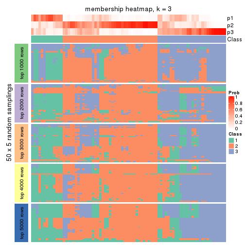
membership_heatmap(res, k = 4)
membership_heatmap(res, k = 5)
membership_heatmap(res, k = 6)
As soon as we have had the classes for columns, we can look for signatures which are significantly different between classes which can be candidate marks for certain classes. Following are the heatmaps for signatures.
Signature heatmaps where rows are scaled:
get_signatures(res, k = 2)
get_signatures(res, k = 3)
get_signatures(res, k = 4)
get_signatures(res, k = 5)
get_signatures(res, k = 6)
Signature heatmaps where rows are not scaled:
get_signatures(res, k = 2, scale_rows = FALSE)
get_signatures(res, k = 3, scale_rows = FALSE)
get_signatures(res, k = 4, scale_rows = FALSE)
get_signatures(res, k = 5, scale_rows = FALSE)
get_signatures(res, k = 6, scale_rows = FALSE)
Compare the overlap of signatures from different k:
compare_signatures(res)
get_signature() returns a data frame invisibly. TO get the list of signatures, the function
call should be assigned to a variable explicitly. In following code, if plot argument is set
to FALSE, no heatmap is plotted while only the differential analysis is performed.
# code only for demonstration
tb = get_signature(res, k = ..., plot = FALSE)
An example of the output of tb is:
#> which_row fdr mean_1 mean_2 scaled_mean_1 scaled_mean_2 km
#> 1 38 0.042760348 8.373488 9.131774 -0.5533452 0.5164555 1
#> 2 40 0.018707592 7.106213 8.469186 -0.6173731 0.5762149 1
#> 3 55 0.019134737 10.221463 11.207825 -0.6159697 0.5749050 1
#> 4 59 0.006059896 5.921854 7.869574 -0.6899429 0.6439467 1
#> 5 60 0.018055526 8.928898 10.211722 -0.6204761 0.5791110 1
#> 6 98 0.009384629 15.714769 14.887706 0.6635654 -0.6193277 2
...
The columns in tb are:
which_row: row indices corresponding to the input matrix.fdr: FDR for the differential test. mean_x: The mean value in group x.scaled_mean_x: The mean value in group x after rows are scaled.km: Row groups if k-means clustering is applied to rows.UMAP plot which shows how samples are separated.
dimension_reduction(res, k = 2, method = "UMAP")
dimension_reduction(res, k = 3, method = "UMAP")
dimension_reduction(res, k = 4, method = "UMAP")
dimension_reduction(res, k = 5, method = "UMAP")

dimension_reduction(res, k = 6, method = "UMAP")
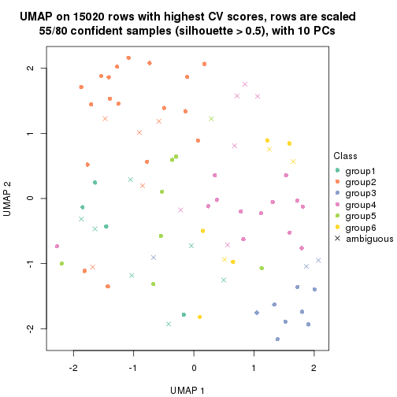
Following heatmap shows how subgroups are split when increasing k:
collect_classes(res)
If matrix rows can be associated to genes, consider to use functional_enrichment(res,
...) to perform function enrichment for the signature genes. See this vignette for more detailed explanations.
The object with results only for a single top-value method and a single partition method can be extracted as:
res = res_list["CV", "NMF"]
# you can also extract it by
# res = res_list["CV:NMF"]
A summary of res and all the functions that can be applied to it:
res
#> A 'ConsensusPartition' object with k = 2, 3, 4, 5, 6.
#> On a matrix with 15020 rows and 80 columns.
#> Top rows (1000, 2000, 3000, 4000, 5000) are extracted by 'CV' method.
#> Subgroups are detected by 'NMF' method.
#> Performed in total 1250 partitions by row resampling.
#> Best k for subgroups seems to be 2.
#>
#> Following methods can be applied to this 'ConsensusPartition' object:
#> [1] "cola_report" "collect_classes" "collect_plots"
#> [4] "collect_stats" "colnames" "compare_signatures"
#> [7] "consensus_heatmap" "dimension_reduction" "functional_enrichment"
#> [10] "get_anno_col" "get_anno" "get_classes"
#> [13] "get_consensus" "get_matrix" "get_membership"
#> [16] "get_param" "get_signatures" "get_stats"
#> [19] "is_best_k" "is_stable_k" "membership_heatmap"
#> [22] "ncol" "nrow" "plot_ecdf"
#> [25] "rownames" "select_partition_number" "show"
#> [28] "suggest_best_k" "test_to_known_factors"
collect_plots() function collects all the plots made from res for all k (number of partitions)
into one single page to provide an easy and fast comparison between different k.
collect_plots(res)
The plots are:
k and the heatmap of
predicted classes for each k.k.k.k.All the plots in panels can be made by individual functions and they are plotted later in this section.
select_partition_number() produces several plots showing different
statistics for choosing “optimized” k. There are following statistics:
k;k, the area increased is defined as \(A_k - A_{k-1}\).The detailed explanations of these statistics can be found in the cola vignette.
Generally speaking, lower PAC score, higher mean silhouette score or higher
concordance corresponds to better partition. Rand index and Jaccard index
measure how similar the current partition is compared to partition with k-1.
If they are too similar, we won't accept k is better than k-1.
select_partition_number(res)
The numeric values for all these statistics can be obtained by get_stats().
get_stats(res)
#> k 1-PAC mean_silhouette concordance area_increased Rand Jaccard
#> 2 2 0.818 0.923 0.965 0.5044 0.494 0.494
#> 3 3 0.442 0.628 0.801 0.2811 0.775 0.576
#> 4 4 0.395 0.416 0.688 0.1191 0.911 0.759
#> 5 5 0.415 0.427 0.625 0.0571 0.883 0.648
#> 6 6 0.493 0.394 0.644 0.0413 0.895 0.631
suggest_best_k() suggests the best \(k\) based on these statistics. The rules are as follows:
suggest_best_k(res)
#> [1] 2
Following shows the table of the partitions (You need to click the show/hide
code output link to see it). The membership matrix (columns with name p*)
is inferred by
clue::cl_consensus()
function with the SE method. Basically the value in the membership matrix
represents the probability to belong to a certain group. The finall class
label for an item is determined with the group with highest probability it
belongs to.
In get_classes() function, the entropy is calculated from the membership
matrix and the silhouette score is calculated from the consensus matrix.
cbind(get_classes(res, k = 2), get_membership(res, k = 2))
#> class entropy silhouette p1 p2
#> SRR1851004 2 0.0000 0.960 0.000 1.000
#> SRR1851003 2 0.0000 0.960 0.000 1.000
#> SRR1851002 2 0.0000 0.960 0.000 1.000
#> SRR1851000 1 0.0376 0.963 0.996 0.004
#> SRR1851001 2 0.0000 0.960 0.000 1.000
#> SRR1850998 2 0.0000 0.960 0.000 1.000
#> SRR1850999 2 0.0000 0.960 0.000 1.000
#> SRR1850997 2 0.0000 0.960 0.000 1.000
#> SRR1850996 1 0.0000 0.965 1.000 0.000
#> SRR1851016 1 0.0376 0.963 0.996 0.004
#> SRR1851010 2 0.0376 0.958 0.004 0.996
#> SRR1851014 2 0.6712 0.798 0.176 0.824
#> SRR1851015 2 0.0000 0.960 0.000 1.000
#> SRR1851013 1 0.9866 0.250 0.568 0.432
#> SRR1851012 2 0.2778 0.932 0.048 0.952
#> SRR1851011 2 0.0376 0.958 0.004 0.996
#> SRR1851009 2 0.0000 0.960 0.000 1.000
#> SRR1851008 1 0.0000 0.965 1.000 0.000
#> SRR1851007 1 0.0000 0.965 1.000 0.000
#> SRR1851006 2 0.0000 0.960 0.000 1.000
#> SRR1851005 2 0.5178 0.866 0.116 0.884
#> SRR1850995 1 0.0000 0.965 1.000 0.000
#> SRR1850994 1 0.0000 0.965 1.000 0.000
#> SRR1850993 1 0.0000 0.965 1.000 0.000
#> SRR1850992 2 0.0000 0.960 0.000 1.000
#> SRR1850991 1 0.5519 0.854 0.872 0.128
#> SRR1850990 1 0.0000 0.965 1.000 0.000
#> SRR1850989 1 0.0000 0.965 1.000 0.000
#> SRR1850987 2 0.9970 0.132 0.468 0.532
#> SRR1850986 1 0.0000 0.965 1.000 0.000
#> SRR1850985 1 0.0000 0.965 1.000 0.000
#> SRR1850983 2 0.0000 0.960 0.000 1.000
#> SRR1850984 2 0.0000 0.960 0.000 1.000
#> SRR1850981 1 0.2778 0.934 0.952 0.048
#> SRR1850980 1 0.0376 0.963 0.996 0.004
#> SRR1850979 1 0.4161 0.905 0.916 0.084
#> SRR1850978 1 0.0000 0.965 1.000 0.000
#> SRR1850977 1 0.0000 0.965 1.000 0.000
#> SRR1850976 1 0.0000 0.965 1.000 0.000
#> SRR1850975 1 0.0000 0.965 1.000 0.000
#> SRR1850974 2 0.0000 0.960 0.000 1.000
#> SRR1850973 2 0.0000 0.960 0.000 1.000
#> SRR1850972 1 0.0000 0.965 1.000 0.000
#> SRR1850970 2 0.0000 0.960 0.000 1.000
#> SRR1850971 1 0.0000 0.965 1.000 0.000
#> SRR1850968 1 0.5842 0.844 0.860 0.140
#> SRR1850969 2 0.0000 0.960 0.000 1.000
#> SRR1850967 1 0.6887 0.782 0.816 0.184
#> SRR1850966 2 0.3879 0.908 0.076 0.924
#> SRR1850965 2 0.0000 0.960 0.000 1.000
#> SRR1850964 1 0.0000 0.965 1.000 0.000
#> SRR1850963 2 0.4939 0.880 0.108 0.892
#> SRR1850962 1 0.0000 0.965 1.000 0.000
#> SRR1850961 1 0.0000 0.965 1.000 0.000
#> SRR1850959 2 0.0000 0.960 0.000 1.000
#> SRR1850960 2 0.0000 0.960 0.000 1.000
#> SRR1850958 2 0.3431 0.917 0.064 0.936
#> SRR1850988 2 0.6801 0.794 0.180 0.820
#> SRR1850957 2 0.0000 0.960 0.000 1.000
#> SRR1850956 1 0.2948 0.932 0.948 0.052
#> SRR1850955 1 0.0000 0.965 1.000 0.000
#> SRR1850953 1 0.3431 0.921 0.936 0.064
#> SRR1850954 1 0.1633 0.951 0.976 0.024
#> SRR1850952 1 0.0000 0.965 1.000 0.000
#> SRR1850982 2 0.7376 0.754 0.208 0.792
#> SRR1850951 1 0.0000 0.965 1.000 0.000
#> SRR1850950 2 0.1414 0.950 0.020 0.980
#> SRR1850949 2 0.0376 0.958 0.004 0.996
#> SRR1850948 1 0.0000 0.965 1.000 0.000
#> SRR1850947 1 0.0000 0.965 1.000 0.000
#> SRR1850946 2 0.0000 0.960 0.000 1.000
#> SRR1850945 2 0.0000 0.960 0.000 1.000
#> SRR1850944 2 0.1414 0.951 0.020 0.980
#> SRR1850943 2 0.0000 0.960 0.000 1.000
#> SRR1850942 1 0.0000 0.965 1.000 0.000
#> SRR1850940 2 0.2603 0.936 0.044 0.956
#> SRR1850941 1 0.0000 0.965 1.000 0.000
#> SRR1850938 2 0.0672 0.957 0.008 0.992
#> SRR1850939 1 0.5178 0.869 0.884 0.116
#> SRR1850937 2 0.0376 0.958 0.004 0.996
cbind(get_classes(res, k = 3), get_membership(res, k = 3))
#> class entropy silhouette p1 p2 p3
#> SRR1851004 2 0.0592 0.8830 0.012 0.988 0.000
#> SRR1851003 2 0.0237 0.8832 0.004 0.996 0.000
#> SRR1851002 2 0.1919 0.8861 0.024 0.956 0.020
#> SRR1851000 1 0.6308 0.3396 0.508 0.000 0.492
#> SRR1851001 2 0.1453 0.8858 0.024 0.968 0.008
#> SRR1850998 2 0.0237 0.8833 0.004 0.996 0.000
#> SRR1850999 2 0.2063 0.8804 0.044 0.948 0.008
#> SRR1850997 2 0.1031 0.8813 0.024 0.976 0.000
#> SRR1850996 3 0.2356 0.6234 0.072 0.000 0.928
#> SRR1851016 1 0.5623 0.6832 0.716 0.004 0.280
#> SRR1851010 2 0.5696 0.8185 0.136 0.800 0.064
#> SRR1851014 2 0.7091 0.5236 0.056 0.676 0.268
#> SRR1851015 2 0.0892 0.8829 0.020 0.980 0.000
#> SRR1851013 3 0.8097 0.2859 0.072 0.388 0.540
#> SRR1851012 2 0.7360 0.2888 0.032 0.528 0.440
#> SRR1851011 2 0.4121 0.8616 0.040 0.876 0.084
#> SRR1851009 2 0.0892 0.8829 0.020 0.980 0.000
#> SRR1851008 3 0.3412 0.5910 0.124 0.000 0.876
#> SRR1851007 3 0.6235 -0.0611 0.436 0.000 0.564
#> SRR1851006 2 0.3377 0.8613 0.012 0.896 0.092
#> SRR1851005 3 0.6566 0.2832 0.016 0.348 0.636
#> SRR1850995 3 0.2749 0.6334 0.064 0.012 0.924
#> SRR1850994 3 0.6252 -0.2146 0.444 0.000 0.556
#> SRR1850993 3 0.6260 -0.2178 0.448 0.000 0.552
#> SRR1850992 1 0.6924 0.2454 0.580 0.400 0.020
#> SRR1850991 1 0.5506 0.7198 0.764 0.016 0.220
#> SRR1850990 1 0.3941 0.7146 0.844 0.000 0.156
#> SRR1850989 1 0.4702 0.7236 0.788 0.000 0.212
#> SRR1850987 1 0.7988 0.6130 0.656 0.144 0.200
#> SRR1850986 1 0.4121 0.7149 0.832 0.000 0.168
#> SRR1850985 1 0.4796 0.7202 0.780 0.000 0.220
#> SRR1850983 2 0.3030 0.8628 0.092 0.904 0.004
#> SRR1850984 2 0.0661 0.8839 0.008 0.988 0.004
#> SRR1850981 1 0.3181 0.6452 0.912 0.024 0.064
#> SRR1850980 1 0.6633 0.4658 0.548 0.008 0.444
#> SRR1850979 3 0.7389 -0.3026 0.464 0.032 0.504
#> SRR1850978 1 0.5859 0.6347 0.656 0.000 0.344
#> SRR1850977 1 0.6192 0.5198 0.580 0.000 0.420
#> SRR1850976 1 0.4796 0.5826 0.780 0.000 0.220
#> SRR1850975 1 0.2590 0.6443 0.924 0.004 0.072
#> SRR1850974 2 0.3272 0.8674 0.016 0.904 0.080
#> SRR1850973 2 0.1989 0.8781 0.004 0.948 0.048
#> SRR1850972 1 0.5178 0.7098 0.744 0.000 0.256
#> SRR1850970 2 0.4887 0.7540 0.000 0.772 0.228
#> SRR1850971 1 0.5098 0.7139 0.752 0.000 0.248
#> SRR1850968 3 0.5180 0.5387 0.032 0.156 0.812
#> SRR1850969 2 0.0592 0.8834 0.000 0.988 0.012
#> SRR1850967 3 0.8061 0.4350 0.192 0.156 0.652
#> SRR1850966 2 0.5237 0.8051 0.120 0.824 0.056
#> SRR1850965 2 0.1163 0.8823 0.000 0.972 0.028
#> SRR1850964 1 0.4974 0.7200 0.764 0.000 0.236
#> SRR1850963 2 0.5012 0.7909 0.204 0.788 0.008
#> SRR1850962 3 0.2165 0.6277 0.064 0.000 0.936
#> SRR1850961 3 0.1289 0.6354 0.032 0.000 0.968
#> SRR1850959 2 0.3875 0.8510 0.068 0.888 0.044
#> SRR1850960 2 0.4874 0.7999 0.144 0.828 0.028
#> SRR1850958 2 0.3272 0.8597 0.004 0.892 0.104
#> SRR1850988 1 0.8303 0.5784 0.632 0.172 0.196
#> SRR1850957 2 0.1031 0.8819 0.024 0.976 0.000
#> SRR1850956 3 0.7495 0.3748 0.248 0.084 0.668
#> SRR1850955 3 0.4555 0.4909 0.200 0.000 0.800
#> SRR1850953 3 0.7114 0.2010 0.388 0.028 0.584
#> SRR1850954 1 0.4912 0.6215 0.796 0.008 0.196
#> SRR1850952 1 0.6286 0.3368 0.536 0.000 0.464
#> SRR1850982 1 0.5070 0.4022 0.772 0.224 0.004
#> SRR1850951 3 0.4504 0.5314 0.196 0.000 0.804
#> SRR1850950 2 0.6335 0.7328 0.240 0.724 0.036
#> SRR1850949 2 0.6054 0.7906 0.180 0.768 0.052
#> SRR1850948 3 0.0983 0.6331 0.016 0.004 0.980
#> SRR1850947 3 0.1129 0.6343 0.020 0.004 0.976
#> SRR1850946 2 0.5578 0.7251 0.012 0.748 0.240
#> SRR1850945 2 0.2625 0.8689 0.000 0.916 0.084
#> SRR1850944 2 0.1964 0.8820 0.000 0.944 0.056
#> SRR1850943 2 0.1964 0.8747 0.056 0.944 0.000
#> SRR1850942 3 0.1860 0.6317 0.052 0.000 0.948
#> SRR1850940 3 0.7505 0.1025 0.044 0.384 0.572
#> SRR1850941 3 0.1163 0.6354 0.028 0.000 0.972
#> SRR1850938 2 0.7262 0.5479 0.044 0.624 0.332
#> SRR1850939 3 0.6046 0.5245 0.080 0.136 0.784
#> SRR1850937 2 0.3207 0.8714 0.084 0.904 0.012
cbind(get_classes(res, k = 4), get_membership(res, k = 4))
#> class entropy silhouette p1 p2 p3 p4
#> SRR1851004 2 0.205 0.6764 0.004 0.924 0.000 0.072
#> SRR1851003 2 0.201 0.6738 0.000 0.920 0.000 0.080
#> SRR1851002 2 0.421 0.6307 0.008 0.804 0.016 0.172
#> SRR1851000 3 0.751 -0.0835 0.420 0.008 0.432 0.140
#> SRR1851001 2 0.338 0.6512 0.004 0.852 0.008 0.136
#> SRR1850998 2 0.228 0.6708 0.000 0.904 0.000 0.096
#> SRR1850999 2 0.619 0.4419 0.032 0.624 0.024 0.320
#> SRR1850997 2 0.289 0.6720 0.004 0.872 0.000 0.124
#> SRR1850996 3 0.212 0.5943 0.040 0.000 0.932 0.028
#> SRR1851016 1 0.624 0.5513 0.692 0.012 0.184 0.112
#> SRR1851010 2 0.608 0.4042 0.064 0.672 0.012 0.252
#> SRR1851014 4 0.939 0.2932 0.164 0.188 0.212 0.436
#> SRR1851015 2 0.489 0.5908 0.028 0.744 0.004 0.224
#> SRR1851013 3 0.945 -0.0931 0.152 0.188 0.416 0.244
#> SRR1851012 4 0.781 0.2382 0.008 0.392 0.184 0.416
#> SRR1851011 2 0.649 0.1817 0.032 0.568 0.028 0.372
#> SRR1851009 2 0.310 0.6611 0.004 0.856 0.000 0.140
#> SRR1851008 3 0.868 0.0112 0.188 0.056 0.432 0.324
#> SRR1851007 1 0.839 0.0260 0.332 0.016 0.320 0.332
#> SRR1851006 2 0.672 0.0181 0.012 0.496 0.060 0.432
#> SRR1851005 3 0.861 -0.3572 0.040 0.228 0.420 0.312
#> SRR1850995 3 0.317 0.5876 0.056 0.008 0.892 0.044
#> SRR1850994 3 0.543 0.3736 0.272 0.004 0.688 0.036
#> SRR1850993 3 0.494 0.2934 0.340 0.000 0.652 0.008
#> SRR1850992 1 0.671 0.3286 0.616 0.268 0.008 0.108
#> SRR1850991 1 0.494 0.6172 0.784 0.008 0.144 0.064
#> SRR1850990 1 0.332 0.6295 0.876 0.000 0.060 0.064
#> SRR1850989 1 0.372 0.6324 0.852 0.000 0.096 0.052
#> SRR1850987 1 0.775 0.5128 0.616 0.112 0.176 0.096
#> SRR1850986 1 0.289 0.6271 0.896 0.000 0.068 0.036
#> SRR1850985 1 0.338 0.6280 0.860 0.000 0.116 0.024
#> SRR1850983 2 0.520 0.4508 0.012 0.612 0.000 0.376
#> SRR1850984 2 0.379 0.6260 0.000 0.796 0.004 0.200
#> SRR1850981 1 0.358 0.5662 0.844 0.008 0.008 0.140
#> SRR1850980 3 0.655 -0.0655 0.440 0.004 0.492 0.064
#> SRR1850979 3 0.771 -0.0721 0.424 0.020 0.428 0.128
#> SRR1850978 1 0.517 0.3749 0.620 0.000 0.368 0.012
#> SRR1850977 1 0.560 0.1362 0.516 0.000 0.464 0.020
#> SRR1850976 1 0.635 0.3110 0.620 0.008 0.068 0.304
#> SRR1850975 1 0.556 0.3269 0.640 0.012 0.016 0.332
#> SRR1850974 2 0.467 0.5605 0.000 0.764 0.036 0.200
#> SRR1850973 2 0.292 0.6479 0.000 0.884 0.016 0.100
#> SRR1850972 1 0.450 0.5899 0.776 0.000 0.192 0.032
#> SRR1850970 2 0.621 0.4310 0.008 0.692 0.168 0.132
#> SRR1850971 1 0.639 0.5063 0.644 0.000 0.224 0.132
#> SRR1850968 3 0.824 -0.1895 0.056 0.124 0.472 0.348
#> SRR1850969 2 0.149 0.6794 0.000 0.952 0.004 0.044
#> SRR1850967 4 0.920 0.2870 0.144 0.132 0.312 0.412
#> SRR1850966 2 0.619 0.5603 0.088 0.728 0.044 0.140
#> SRR1850965 2 0.293 0.6716 0.004 0.896 0.024 0.076
#> SRR1850964 1 0.459 0.6075 0.780 0.000 0.176 0.044
#> SRR1850963 2 0.634 0.5246 0.140 0.688 0.012 0.160
#> SRR1850962 3 0.264 0.5774 0.032 0.000 0.908 0.060
#> SRR1850961 3 0.303 0.5626 0.028 0.004 0.892 0.076
#> SRR1850959 2 0.760 0.3475 0.108 0.580 0.048 0.264
#> SRR1850960 2 0.750 0.3546 0.196 0.568 0.016 0.220
#> SRR1850958 2 0.557 0.6008 0.012 0.748 0.092 0.148
#> SRR1850988 1 0.885 0.4137 0.512 0.184 0.144 0.160
#> SRR1850957 2 0.363 0.6694 0.020 0.848 0.004 0.128
#> SRR1850956 3 0.631 0.5041 0.116 0.112 0.724 0.048
#> SRR1850955 3 0.489 0.5548 0.096 0.048 0.812 0.044
#> SRR1850953 3 0.876 0.3289 0.156 0.164 0.524 0.156
#> SRR1850954 1 0.921 0.0624 0.392 0.096 0.312 0.200
#> SRR1850952 3 0.672 0.3001 0.320 0.008 0.584 0.088
#> SRR1850982 1 0.651 0.3311 0.640 0.176 0.000 0.184
#> SRR1850951 3 0.417 0.5634 0.116 0.000 0.824 0.060
#> SRR1850950 4 0.758 0.0866 0.168 0.400 0.004 0.428
#> SRR1850949 2 0.680 0.0373 0.064 0.540 0.016 0.380
#> SRR1850948 3 0.126 0.5875 0.008 0.000 0.964 0.028
#> SRR1850947 3 0.111 0.5855 0.000 0.004 0.968 0.028
#> SRR1850946 2 0.613 0.4696 0.004 0.692 0.152 0.152
#> SRR1850945 2 0.425 0.6341 0.004 0.820 0.044 0.132
#> SRR1850944 2 0.471 0.6287 0.016 0.812 0.104 0.068
#> SRR1850943 2 0.390 0.6717 0.052 0.848 0.004 0.096
#> SRR1850942 3 0.232 0.5900 0.040 0.000 0.924 0.036
#> SRR1850940 3 0.799 -0.1169 0.020 0.332 0.468 0.180
#> SRR1850941 3 0.201 0.5814 0.012 0.008 0.940 0.040
#> SRR1850938 2 0.738 0.2670 0.016 0.584 0.216 0.184
#> SRR1850939 3 0.683 0.2759 0.024 0.152 0.660 0.164
#> SRR1850937 2 0.459 0.6313 0.020 0.804 0.028 0.148
cbind(get_classes(res, k = 5), get_membership(res, k = 5))
#> class entropy silhouette p1 p2 p3 p4 p5
#> SRR1851004 2 0.204 0.66781 0.000 0.920 0.000 0.056 0.024
#> SRR1851003 2 0.230 0.66687 0.000 0.904 0.000 0.072 0.024
#> SRR1851002 2 0.529 0.60857 0.012 0.756 0.092 0.052 0.088
#> SRR1851000 4 0.727 0.10962 0.356 0.016 0.196 0.420 0.012
#> SRR1851001 2 0.437 0.63512 0.004 0.812 0.068 0.048 0.068
#> SRR1850998 2 0.208 0.66641 0.000 0.916 0.000 0.064 0.020
#> SRR1850999 2 0.738 -0.04805 0.080 0.420 0.016 0.412 0.072
#> SRR1850997 2 0.249 0.65039 0.000 0.896 0.000 0.036 0.068
#> SRR1850996 3 0.434 0.58303 0.060 0.000 0.780 0.148 0.012
#> SRR1851016 1 0.597 0.30631 0.608 0.012 0.084 0.288 0.008
#> SRR1851010 2 0.678 0.37665 0.012 0.532 0.008 0.264 0.184
#> SRR1851014 4 0.750 0.43837 0.192 0.100 0.116 0.568 0.024
#> SRR1851015 2 0.598 0.35543 0.072 0.592 0.000 0.308 0.028
#> SRR1851013 4 0.803 0.38932 0.228 0.096 0.184 0.476 0.016
#> SRR1851012 4 0.667 0.33773 0.016 0.228 0.068 0.616 0.072
#> SRR1851011 4 0.635 0.00946 0.020 0.380 0.008 0.516 0.076
#> SRR1851009 2 0.344 0.65578 0.000 0.836 0.000 0.104 0.060
#> SRR1851008 4 0.708 0.46316 0.188 0.040 0.184 0.572 0.016
#> SRR1851007 4 0.699 0.38162 0.252 0.032 0.084 0.584 0.048
#> SRR1851006 4 0.665 0.11133 0.000 0.328 0.044 0.528 0.100
#> SRR1851005 4 0.659 0.45651 0.028 0.116 0.272 0.576 0.008
#> SRR1850995 3 0.496 0.53340 0.056 0.008 0.732 0.192 0.012
#> SRR1850994 3 0.514 0.53296 0.224 0.008 0.708 0.024 0.036
#> SRR1850993 3 0.547 0.20142 0.396 0.000 0.548 0.048 0.008
#> SRR1850992 1 0.633 0.09678 0.540 0.348 0.000 0.040 0.072
#> SRR1850991 1 0.499 0.49816 0.788 0.068 0.056 0.032 0.056
#> SRR1850990 1 0.381 0.33101 0.792 0.000 0.000 0.040 0.168
#> SRR1850989 1 0.284 0.51834 0.876 0.000 0.008 0.096 0.020
#> SRR1850987 1 0.791 0.28455 0.504 0.208 0.088 0.180 0.020
#> SRR1850986 1 0.259 0.44891 0.888 0.000 0.012 0.008 0.092
#> SRR1850985 1 0.276 0.52850 0.892 0.000 0.028 0.064 0.016
#> SRR1850983 5 0.681 -0.15759 0.004 0.388 0.004 0.196 0.408
#> SRR1850984 2 0.482 0.60334 0.000 0.716 0.000 0.192 0.092
#> SRR1850981 1 0.444 0.22634 0.728 0.012 0.016 0.004 0.240
#> SRR1850980 1 0.687 0.27042 0.468 0.004 0.336 0.180 0.012
#> SRR1850979 4 0.767 0.13729 0.344 0.024 0.220 0.392 0.020
#> SRR1850978 1 0.523 0.36261 0.636 0.000 0.308 0.044 0.012
#> SRR1850977 1 0.613 0.16032 0.496 0.000 0.400 0.092 0.012
#> SRR1850976 5 0.642 0.26485 0.432 0.004 0.004 0.128 0.432
#> SRR1850975 5 0.646 0.29727 0.412 0.008 0.000 0.140 0.440
#> SRR1850974 2 0.620 0.53491 0.000 0.636 0.036 0.184 0.144
#> SRR1850973 2 0.412 0.64375 0.000 0.812 0.020 0.092 0.076
#> SRR1850972 1 0.484 0.50335 0.724 0.000 0.124 0.152 0.000
#> SRR1850970 2 0.698 0.48784 0.000 0.564 0.108 0.236 0.092
#> SRR1850971 1 0.683 0.18921 0.512 0.004 0.124 0.328 0.032
#> SRR1850968 4 0.786 0.35360 0.024 0.108 0.248 0.508 0.112
#> SRR1850969 2 0.266 0.67171 0.000 0.888 0.000 0.060 0.052
#> SRR1850967 4 0.781 0.30286 0.040 0.128 0.104 0.556 0.172
#> SRR1850966 2 0.707 0.51870 0.068 0.640 0.136 0.084 0.072
#> SRR1850965 2 0.415 0.66535 0.004 0.824 0.040 0.072 0.060
#> SRR1850964 1 0.515 0.51668 0.744 0.000 0.084 0.128 0.044
#> SRR1850963 2 0.563 0.55351 0.064 0.720 0.008 0.064 0.144
#> SRR1850962 3 0.474 0.55896 0.052 0.000 0.744 0.184 0.020
#> SRR1850961 3 0.478 0.52098 0.036 0.000 0.720 0.224 0.020
#> SRR1850959 2 0.699 0.40526 0.100 0.580 0.012 0.240 0.068
#> SRR1850960 2 0.667 0.44375 0.176 0.624 0.004 0.116 0.080
#> SRR1850958 2 0.665 0.45979 0.036 0.612 0.084 0.240 0.028
#> SRR1850988 1 0.830 0.31826 0.488 0.244 0.104 0.100 0.064
#> SRR1850957 2 0.388 0.64012 0.036 0.840 0.004 0.052 0.068
#> SRR1850956 3 0.601 0.59414 0.108 0.124 0.704 0.032 0.032
#> SRR1850955 3 0.490 0.65664 0.092 0.056 0.788 0.028 0.036
#> SRR1850953 3 0.736 0.51320 0.112 0.124 0.616 0.060 0.088
#> SRR1850954 3 0.890 0.20153 0.268 0.108 0.408 0.080 0.136
#> SRR1850952 3 0.546 0.50679 0.240 0.008 0.680 0.024 0.048
#> SRR1850982 1 0.707 -0.20412 0.468 0.216 0.012 0.008 0.296
#> SRR1850951 3 0.389 0.63915 0.136 0.004 0.816 0.016 0.028
#> SRR1850950 5 0.797 0.18004 0.096 0.252 0.004 0.208 0.440
#> SRR1850949 2 0.765 0.10146 0.024 0.404 0.020 0.216 0.336
#> SRR1850948 3 0.269 0.65296 0.016 0.000 0.884 0.092 0.008
#> SRR1850947 3 0.253 0.65550 0.012 0.000 0.896 0.080 0.012
#> SRR1850946 2 0.684 0.52008 0.000 0.604 0.164 0.120 0.112
#> SRR1850945 2 0.537 0.60560 0.000 0.732 0.124 0.060 0.084
#> SRR1850944 2 0.599 0.56291 0.024 0.676 0.204 0.032 0.064
#> SRR1850943 2 0.514 0.63734 0.076 0.768 0.012 0.088 0.056
#> SRR1850942 3 0.181 0.67176 0.016 0.008 0.944 0.020 0.012
#> SRR1850940 3 0.777 0.21807 0.004 0.232 0.488 0.168 0.108
#> SRR1850941 3 0.194 0.66957 0.004 0.008 0.936 0.028 0.024
#> SRR1850938 2 0.763 0.40061 0.000 0.496 0.232 0.152 0.120
#> SRR1850939 3 0.604 0.51773 0.012 0.080 0.700 0.124 0.084
#> SRR1850937 2 0.430 0.64701 0.000 0.808 0.068 0.040 0.084
cbind(get_classes(res, k = 6), get_membership(res, k = 6))
#> class entropy silhouette p1 p2 p3 p4 p5 p6
#> SRR1851004 2 0.248 0.63575 0.000 0.896 0.000 0.028 0.028 0.048
#> SRR1851003 2 0.285 0.62988 0.000 0.876 0.000 0.048 0.036 0.040
#> SRR1851002 2 0.461 0.59671 0.032 0.776 0.068 0.096 0.024 0.004
#> SRR1851000 6 0.236 0.51178 0.020 0.012 0.056 0.008 0.000 0.904
#> SRR1851001 2 0.403 0.60141 0.020 0.800 0.044 0.116 0.020 0.000
#> SRR1850998 2 0.256 0.62734 0.000 0.892 0.000 0.028 0.032 0.048
#> SRR1850999 6 0.614 0.16486 0.012 0.304 0.004 0.060 0.060 0.560
#> SRR1850997 2 0.240 0.62960 0.004 0.904 0.000 0.020 0.040 0.032
#> SRR1850996 3 0.443 0.55866 0.000 0.000 0.748 0.048 0.044 0.160
#> SRR1851016 6 0.391 0.38782 0.172 0.032 0.008 0.012 0.000 0.776
#> SRR1851010 4 0.618 0.09189 0.024 0.384 0.008 0.488 0.012 0.084
#> SRR1851014 6 0.514 0.43386 0.004 0.068 0.052 0.084 0.044 0.748
#> SRR1851015 2 0.609 0.14669 0.012 0.484 0.004 0.056 0.044 0.400
#> SRR1851013 6 0.452 0.48723 0.004 0.052 0.084 0.060 0.016 0.784
#> SRR1851012 4 0.697 0.33470 0.000 0.148 0.024 0.456 0.052 0.320
#> SRR1851011 4 0.685 0.31189 0.000 0.232 0.000 0.380 0.052 0.336
#> SRR1851009 2 0.510 0.57459 0.008 0.712 0.000 0.116 0.128 0.036
#> SRR1851008 6 0.476 0.36205 0.008 0.008 0.052 0.196 0.016 0.720
#> SRR1851007 6 0.485 0.38759 0.032 0.012 0.024 0.192 0.016 0.724
#> SRR1851006 6 0.782 -0.30513 0.000 0.236 0.060 0.316 0.056 0.332
#> SRR1851005 6 0.759 -0.01991 0.000 0.068 0.176 0.256 0.056 0.444
#> SRR1850995 3 0.586 0.46023 0.000 0.024 0.644 0.080 0.052 0.200
#> SRR1850994 3 0.503 0.59055 0.136 0.008 0.736 0.032 0.016 0.072
#> SRR1850993 3 0.595 0.38156 0.148 0.000 0.572 0.008 0.020 0.252
#> SRR1850992 1 0.673 0.17691 0.448 0.352 0.000 0.024 0.032 0.144
#> SRR1850991 1 0.633 0.45029 0.604 0.080 0.036 0.028 0.016 0.236
#> SRR1850990 1 0.310 0.55692 0.844 0.000 0.004 0.068 0.000 0.084
#> SRR1850989 1 0.419 0.40919 0.612 0.004 0.004 0.008 0.000 0.372
#> SRR1850987 6 0.752 0.18087 0.184 0.164 0.084 0.028 0.024 0.516
#> SRR1850986 1 0.307 0.57823 0.824 0.000 0.016 0.008 0.000 0.152
#> SRR1850985 1 0.464 0.44093 0.624 0.000 0.032 0.008 0.004 0.332
#> SRR1850983 5 0.229 0.00000 0.000 0.116 0.000 0.004 0.876 0.004
#> SRR1850984 2 0.636 0.28592 0.004 0.540 0.000 0.108 0.276 0.072
#> SRR1850981 1 0.342 0.56233 0.844 0.004 0.012 0.052 0.008 0.080
#> SRR1850980 6 0.594 0.21264 0.156 0.000 0.252 0.012 0.012 0.568
#> SRR1850979 6 0.515 0.50425 0.032 0.024 0.136 0.032 0.036 0.740
#> SRR1850978 3 0.677 -0.03942 0.304 0.000 0.340 0.012 0.016 0.328
#> SRR1850977 3 0.657 0.07877 0.184 0.000 0.404 0.012 0.020 0.380
#> SRR1850976 1 0.466 0.30814 0.640 0.000 0.016 0.316 0.016 0.012
#> SRR1850975 1 0.455 0.30353 0.640 0.000 0.000 0.316 0.016 0.028
#> SRR1850974 2 0.481 0.29606 0.000 0.596 0.032 0.356 0.012 0.004
#> SRR1850973 2 0.348 0.54832 0.000 0.776 0.008 0.200 0.016 0.000
#> SRR1850972 6 0.615 0.00345 0.312 0.008 0.124 0.012 0.012 0.532
#> SRR1850970 2 0.663 0.18068 0.000 0.524 0.156 0.260 0.036 0.024
#> SRR1850971 6 0.522 0.38135 0.128 0.004 0.088 0.048 0.012 0.720
#> SRR1850968 4 0.686 0.34140 0.004 0.060 0.172 0.516 0.012 0.236
#> SRR1850969 2 0.257 0.63239 0.000 0.892 0.012 0.044 0.048 0.004
#> SRR1850967 4 0.651 0.37253 0.032 0.040 0.084 0.576 0.012 0.256
#> SRR1850966 2 0.582 0.51540 0.112 0.688 0.116 0.044 0.028 0.012
#> SRR1850965 2 0.379 0.61899 0.020 0.828 0.048 0.072 0.032 0.000
#> SRR1850964 1 0.559 0.27268 0.544 0.000 0.080 0.020 0.004 0.352
#> SRR1850963 2 0.533 0.54346 0.076 0.684 0.000 0.188 0.036 0.016
#> SRR1850962 3 0.502 0.53561 0.000 0.004 0.712 0.076 0.048 0.160
#> SRR1850961 3 0.530 0.50526 0.000 0.004 0.684 0.100 0.044 0.168
#> SRR1850959 2 0.679 0.35051 0.048 0.568 0.008 0.080 0.060 0.236
#> SRR1850960 2 0.648 0.41273 0.128 0.600 0.000 0.024 0.080 0.168
#> SRR1850958 2 0.622 0.48175 0.016 0.664 0.056 0.068 0.052 0.144
#> SRR1850988 6 0.846 0.06582 0.196 0.244 0.100 0.028 0.052 0.380
#> SRR1850957 2 0.338 0.62020 0.036 0.856 0.000 0.020 0.040 0.048
#> SRR1850956 3 0.549 0.57702 0.088 0.080 0.732 0.032 0.032 0.036
#> SRR1850955 3 0.453 0.60463 0.064 0.044 0.800 0.032 0.024 0.036
#> SRR1850953 3 0.698 0.42733 0.100 0.108 0.576 0.176 0.024 0.016
#> SRR1850954 3 0.802 0.20903 0.284 0.096 0.388 0.184 0.032 0.016
#> SRR1850952 3 0.643 0.52812 0.136 0.016 0.640 0.096 0.024 0.088
#> SRR1850982 1 0.558 0.36469 0.672 0.160 0.000 0.112 0.016 0.040
#> SRR1850951 3 0.510 0.57783 0.060 0.004 0.740 0.088 0.016 0.092
#> SRR1850950 4 0.612 0.27072 0.236 0.200 0.000 0.540 0.020 0.004
#> SRR1850949 4 0.521 0.21363 0.044 0.352 0.000 0.576 0.024 0.004
#> SRR1850948 3 0.292 0.60879 0.000 0.000 0.864 0.052 0.012 0.072
#> SRR1850947 3 0.281 0.60843 0.000 0.000 0.876 0.044 0.024 0.056
#> SRR1850946 2 0.566 0.41149 0.004 0.616 0.128 0.232 0.012 0.008
#> SRR1850945 2 0.499 0.53671 0.008 0.724 0.092 0.144 0.028 0.004
#> SRR1850944 2 0.740 0.38527 0.020 0.548 0.184 0.116 0.052 0.080
#> SRR1850943 2 0.678 0.47212 0.052 0.604 0.024 0.128 0.032 0.160
#> SRR1850942 3 0.251 0.61616 0.008 0.000 0.896 0.052 0.008 0.036
#> SRR1850940 3 0.733 -0.02387 0.012 0.244 0.396 0.296 0.020 0.032
#> SRR1850941 3 0.245 0.61869 0.004 0.008 0.904 0.044 0.008 0.032
#> SRR1850938 2 0.599 0.26832 0.000 0.532 0.132 0.312 0.012 0.012
#> SRR1850939 3 0.617 0.37095 0.012 0.100 0.584 0.264 0.020 0.020
#> SRR1850937 2 0.494 0.58838 0.012 0.752 0.056 0.124 0.036 0.020
Heatmaps for the consensus matrix. It visualizes the probability of two samples to be in a same group.
consensus_heatmap(res, k = 2)

consensus_heatmap(res, k = 3)
consensus_heatmap(res, k = 4)
consensus_heatmap(res, k = 5)
consensus_heatmap(res, k = 6)
Heatmaps for the membership of samples in all partitions to see how consistent they are:
membership_heatmap(res, k = 2)
membership_heatmap(res, k = 3)
membership_heatmap(res, k = 4)
membership_heatmap(res, k = 5)
membership_heatmap(res, k = 6)
As soon as we have had the classes for columns, we can look for signatures which are significantly different between classes which can be candidate marks for certain classes. Following are the heatmaps for signatures.
Signature heatmaps where rows are scaled:
get_signatures(res, k = 2)
get_signatures(res, k = 3)
get_signatures(res, k = 4)
get_signatures(res, k = 5)
get_signatures(res, k = 6)

Signature heatmaps where rows are not scaled:
get_signatures(res, k = 2, scale_rows = FALSE)
get_signatures(res, k = 3, scale_rows = FALSE)
get_signatures(res, k = 4, scale_rows = FALSE)

get_signatures(res, k = 5, scale_rows = FALSE)
get_signatures(res, k = 6, scale_rows = FALSE)
Compare the overlap of signatures from different k:
compare_signatures(res)
get_signature() returns a data frame invisibly. TO get the list of signatures, the function
call should be assigned to a variable explicitly. In following code, if plot argument is set
to FALSE, no heatmap is plotted while only the differential analysis is performed.
# code only for demonstration
tb = get_signature(res, k = ..., plot = FALSE)
An example of the output of tb is:
#> which_row fdr mean_1 mean_2 scaled_mean_1 scaled_mean_2 km
#> 1 38 0.042760348 8.373488 9.131774 -0.5533452 0.5164555 1
#> 2 40 0.018707592 7.106213 8.469186 -0.6173731 0.5762149 1
#> 3 55 0.019134737 10.221463 11.207825 -0.6159697 0.5749050 1
#> 4 59 0.006059896 5.921854 7.869574 -0.6899429 0.6439467 1
#> 5 60 0.018055526 8.928898 10.211722 -0.6204761 0.5791110 1
#> 6 98 0.009384629 15.714769 14.887706 0.6635654 -0.6193277 2
...
The columns in tb are:
which_row: row indices corresponding to the input matrix.fdr: FDR for the differential test. mean_x: The mean value in group x.scaled_mean_x: The mean value in group x after rows are scaled.km: Row groups if k-means clustering is applied to rows.UMAP plot which shows how samples are separated.
dimension_reduction(res, k = 2, method = "UMAP")
dimension_reduction(res, k = 3, method = "UMAP")
dimension_reduction(res, k = 4, method = "UMAP")
dimension_reduction(res, k = 5, method = "UMAP")
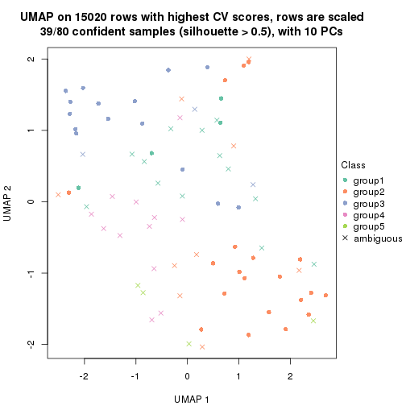
dimension_reduction(res, k = 6, method = "UMAP")
Following heatmap shows how subgroups are split when increasing k:
collect_classes(res)
If matrix rows can be associated to genes, consider to use functional_enrichment(res,
...) to perform function enrichment for the signature genes. See this vignette for more detailed explanations.
The object with results only for a single top-value method and a single partition method can be extracted as:
res = res_list["MAD", "hclust"]
# you can also extract it by
# res = res_list["MAD:hclust"]
A summary of res and all the functions that can be applied to it:
res
#> A 'ConsensusPartition' object with k = 2, 3, 4, 5, 6.
#> On a matrix with 15020 rows and 80 columns.
#> Top rows (1000, 2000, 3000, 4000, 5000) are extracted by 'MAD' method.
#> Subgroups are detected by 'hclust' method.
#> Performed in total 1250 partitions by row resampling.
#> Best k for subgroups seems to be 3.
#>
#> Following methods can be applied to this 'ConsensusPartition' object:
#> [1] "cola_report" "collect_classes" "collect_plots"
#> [4] "collect_stats" "colnames" "compare_signatures"
#> [7] "consensus_heatmap" "dimension_reduction" "functional_enrichment"
#> [10] "get_anno_col" "get_anno" "get_classes"
#> [13] "get_consensus" "get_matrix" "get_membership"
#> [16] "get_param" "get_signatures" "get_stats"
#> [19] "is_best_k" "is_stable_k" "membership_heatmap"
#> [22] "ncol" "nrow" "plot_ecdf"
#> [25] "rownames" "select_partition_number" "show"
#> [28] "suggest_best_k" "test_to_known_factors"
collect_plots() function collects all the plots made from res for all k (number of partitions)
into one single page to provide an easy and fast comparison between different k.
collect_plots(res)
The plots are:
k and the heatmap of
predicted classes for each k.k.k.k.All the plots in panels can be made by individual functions and they are plotted later in this section.
select_partition_number() produces several plots showing different
statistics for choosing “optimized” k. There are following statistics:
k;k, the area increased is defined as \(A_k - A_{k-1}\).The detailed explanations of these statistics can be found in the cola vignette.
Generally speaking, lower PAC score, higher mean silhouette score or higher
concordance corresponds to better partition. Rand index and Jaccard index
measure how similar the current partition is compared to partition with k-1.
If they are too similar, we won't accept k is better than k-1.
select_partition_number(res)
The numeric values for all these statistics can be obtained by get_stats().
get_stats(res)
#> k 1-PAC mean_silhouette concordance area_increased Rand Jaccard
#> 2 2 0.245 0.443 0.638 0.3990 0.556 0.556
#> 3 3 0.348 0.505 0.718 0.5335 0.598 0.373
#> 4 4 0.440 0.578 0.714 0.1387 0.766 0.461
#> 5 5 0.492 0.545 0.695 0.0861 0.915 0.733
#> 6 6 0.580 0.576 0.690 0.0583 0.901 0.640
suggest_best_k() suggests the best \(k\) based on these statistics. The rules are as follows:
suggest_best_k(res)
#> [1] 3
Following shows the table of the partitions (You need to click the show/hide
code output link to see it). The membership matrix (columns with name p*)
is inferred by
clue::cl_consensus()
function with the SE method. Basically the value in the membership matrix
represents the probability to belong to a certain group. The finall class
label for an item is determined with the group with highest probability it
belongs to.
In get_classes() function, the entropy is calculated from the membership
matrix and the silhouette score is calculated from the consensus matrix.
cbind(get_classes(res, k = 2), get_membership(res, k = 2))
#> class entropy silhouette p1 p2
#> SRR1851004 2 0.9552 0.509 0.376 0.624
#> SRR1851003 2 0.9552 0.509 0.376 0.624
#> SRR1851002 2 0.4939 0.564 0.108 0.892
#> SRR1851000 2 0.9661 -0.615 0.392 0.608
#> SRR1851001 2 0.4939 0.564 0.108 0.892
#> SRR1850998 2 0.9954 0.464 0.460 0.540
#> SRR1850999 2 0.9661 -0.615 0.392 0.608
#> SRR1850997 2 0.9954 0.464 0.460 0.540
#> SRR1850996 2 0.9358 -0.474 0.352 0.648
#> SRR1851016 2 0.9933 -0.836 0.452 0.548
#> SRR1851010 1 1.0000 0.874 0.504 0.496
#> SRR1851014 1 1.0000 0.929 0.500 0.500
#> SRR1851015 2 0.9170 -0.267 0.332 0.668
#> SRR1851013 2 1.0000 -0.933 0.500 0.500
#> SRR1851012 1 0.9998 0.948 0.508 0.492
#> SRR1851011 1 0.9998 0.948 0.508 0.492
#> SRR1851009 2 0.9833 0.484 0.424 0.576
#> SRR1851008 1 0.9996 0.951 0.512 0.488
#> SRR1851007 1 0.9996 0.951 0.512 0.488
#> SRR1851006 1 0.9996 0.916 0.512 0.488
#> SRR1851005 1 0.9996 0.916 0.512 0.488
#> SRR1850995 2 0.9358 -0.474 0.352 0.648
#> SRR1850994 1 0.9970 0.957 0.532 0.468
#> SRR1850993 1 0.9970 0.957 0.532 0.468
#> SRR1850992 2 0.0938 0.530 0.012 0.988
#> SRR1850991 2 0.0938 0.530 0.012 0.988
#> SRR1850990 2 0.9944 -0.834 0.456 0.544
#> SRR1850989 2 0.9944 -0.834 0.456 0.544
#> SRR1850987 2 0.1414 0.523 0.020 0.980
#> SRR1850986 2 0.9998 -0.905 0.492 0.508
#> SRR1850985 2 0.9998 -0.905 0.492 0.508
#> SRR1850983 2 0.9954 0.464 0.460 0.540
#> SRR1850984 2 0.9833 0.484 0.424 0.576
#> SRR1850981 2 0.0938 0.523 0.012 0.988
#> SRR1850980 2 0.1633 0.520 0.024 0.976
#> SRR1850979 2 0.1633 0.520 0.024 0.976
#> SRR1850978 1 0.9970 0.957 0.532 0.468
#> SRR1850977 1 0.9970 0.957 0.532 0.468
#> SRR1850976 2 0.9996 -0.916 0.488 0.512
#> SRR1850975 2 0.9996 -0.916 0.488 0.512
#> SRR1850974 2 0.8763 0.549 0.296 0.704
#> SRR1850973 2 0.8763 0.549 0.296 0.704
#> SRR1850972 1 0.9977 0.956 0.528 0.472
#> SRR1850970 2 0.9970 0.404 0.468 0.532
#> SRR1850971 1 0.9977 0.956 0.528 0.472
#> SRR1850968 1 0.9996 0.951 0.512 0.488
#> SRR1850969 2 0.8813 0.549 0.300 0.700
#> SRR1850967 1 0.9996 0.951 0.512 0.488
#> SRR1850966 2 0.8267 0.553 0.260 0.740
#> SRR1850965 2 0.8267 0.553 0.260 0.740
#> SRR1850964 2 0.1414 0.524 0.020 0.980
#> SRR1850963 2 0.1414 0.524 0.020 0.980
#> SRR1850962 1 0.9954 0.957 0.540 0.460
#> SRR1850961 1 0.9954 0.957 0.540 0.460
#> SRR1850959 2 0.1633 0.520 0.024 0.976
#> SRR1850960 2 0.1633 0.520 0.024 0.976
#> SRR1850958 2 0.7950 0.503 0.240 0.760
#> SRR1850988 2 0.1414 0.523 0.020 0.980
#> SRR1850957 2 0.7950 0.503 0.240 0.760
#> SRR1850956 2 0.7745 0.154 0.228 0.772
#> SRR1850955 2 0.7745 0.154 0.228 0.772
#> SRR1850953 2 0.6438 0.276 0.164 0.836
#> SRR1850954 2 0.6438 0.276 0.164 0.836
#> SRR1850952 1 0.9954 0.957 0.540 0.460
#> SRR1850982 2 0.0938 0.523 0.012 0.988
#> SRR1850951 1 0.9954 0.957 0.540 0.460
#> SRR1850950 2 0.8661 0.554 0.288 0.712
#> SRR1850949 2 0.8661 0.554 0.288 0.712
#> SRR1850948 1 0.9954 0.957 0.540 0.460
#> SRR1850947 1 0.9954 0.957 0.540 0.460
#> SRR1850946 2 0.7602 0.554 0.220 0.780
#> SRR1850945 2 0.7602 0.554 0.220 0.780
#> SRR1850944 2 0.7299 0.569 0.204 0.796
#> SRR1850943 2 0.7299 0.569 0.204 0.796
#> SRR1850942 1 0.9954 0.957 0.540 0.460
#> SRR1850940 1 0.9988 0.947 0.520 0.480
#> SRR1850941 1 0.9954 0.957 0.540 0.460
#> SRR1850938 2 0.5294 0.567 0.120 0.880
#> SRR1850939 1 0.9988 0.947 0.520 0.480
#> SRR1850937 2 0.5519 0.570 0.128 0.872
cbind(get_classes(res, k = 3), get_membership(res, k = 3))
#> class entropy silhouette p1 p2 p3
#> SRR1851004 2 0.3356 0.639 0.056 0.908 0.036
#> SRR1851003 2 0.3356 0.639 0.056 0.908 0.036
#> SRR1851002 2 0.7784 0.199 0.388 0.556 0.056
#> SRR1851000 3 0.8076 0.477 0.252 0.116 0.632
#> SRR1851001 2 0.7784 0.199 0.388 0.556 0.056
#> SRR1850998 2 0.1031 0.603 0.024 0.976 0.000
#> SRR1850999 3 0.8076 0.477 0.252 0.116 0.632
#> SRR1850997 2 0.1031 0.603 0.024 0.976 0.000
#> SRR1850996 1 0.9191 -0.015 0.428 0.148 0.424
#> SRR1851016 1 0.3120 0.511 0.908 0.012 0.080
#> SRR1851010 3 0.4097 0.819 0.060 0.060 0.880
#> SRR1851014 3 0.6229 0.613 0.280 0.020 0.700
#> SRR1851015 1 0.7226 0.419 0.688 0.236 0.076
#> SRR1851013 3 0.6229 0.613 0.280 0.020 0.700
#> SRR1851012 3 0.1751 0.848 0.028 0.012 0.960
#> SRR1851011 3 0.1751 0.848 0.028 0.012 0.960
#> SRR1851009 2 0.1832 0.623 0.036 0.956 0.008
#> SRR1851008 3 0.2116 0.848 0.040 0.012 0.948
#> SRR1851007 3 0.2116 0.848 0.040 0.012 0.948
#> SRR1851006 3 0.2806 0.840 0.032 0.040 0.928
#> SRR1851005 3 0.2806 0.840 0.032 0.040 0.928
#> SRR1850995 1 0.9191 -0.015 0.428 0.148 0.424
#> SRR1850994 1 0.4399 0.484 0.812 0.000 0.188
#> SRR1850993 1 0.4399 0.484 0.812 0.000 0.188
#> SRR1850992 1 0.7059 0.207 0.520 0.460 0.020
#> SRR1850991 1 0.7059 0.207 0.520 0.460 0.020
#> SRR1850990 1 0.2165 0.508 0.936 0.000 0.064
#> SRR1850989 1 0.2165 0.508 0.936 0.000 0.064
#> SRR1850987 1 0.7661 0.218 0.504 0.452 0.044
#> SRR1850986 1 0.3116 0.510 0.892 0.000 0.108
#> SRR1850985 1 0.3116 0.510 0.892 0.000 0.108
#> SRR1850983 2 0.1031 0.603 0.024 0.976 0.000
#> SRR1850984 2 0.1832 0.623 0.036 0.956 0.008
#> SRR1850981 1 0.7049 0.215 0.528 0.452 0.020
#> SRR1850980 1 0.7752 0.218 0.496 0.456 0.048
#> SRR1850979 1 0.7752 0.218 0.496 0.456 0.048
#> SRR1850978 1 0.3686 0.506 0.860 0.000 0.140
#> SRR1850977 1 0.3686 0.506 0.860 0.000 0.140
#> SRR1850976 3 0.4295 0.801 0.104 0.032 0.864
#> SRR1850975 3 0.4295 0.801 0.104 0.032 0.864
#> SRR1850974 2 0.5305 0.635 0.020 0.788 0.192
#> SRR1850973 2 0.5305 0.635 0.020 0.788 0.192
#> SRR1850972 1 0.3918 0.506 0.856 0.004 0.140
#> SRR1850970 2 0.7464 0.323 0.040 0.560 0.400
#> SRR1850971 1 0.3918 0.506 0.856 0.004 0.140
#> SRR1850968 3 0.1877 0.849 0.032 0.012 0.956
#> SRR1850969 2 0.5889 0.638 0.096 0.796 0.108
#> SRR1850967 3 0.1877 0.849 0.032 0.012 0.956
#> SRR1850966 2 0.6546 0.610 0.148 0.756 0.096
#> SRR1850965 2 0.6546 0.610 0.148 0.756 0.096
#> SRR1850964 1 0.7169 0.210 0.520 0.456 0.024
#> SRR1850963 1 0.7169 0.210 0.520 0.456 0.024
#> SRR1850962 3 0.0747 0.838 0.016 0.000 0.984
#> SRR1850961 3 0.0747 0.838 0.016 0.000 0.984
#> SRR1850959 1 0.7471 0.229 0.516 0.448 0.036
#> SRR1850960 1 0.7471 0.229 0.516 0.448 0.036
#> SRR1850958 2 0.9481 0.348 0.284 0.492 0.224
#> SRR1850988 1 0.7661 0.218 0.504 0.452 0.044
#> SRR1850957 2 0.9481 0.348 0.284 0.492 0.224
#> SRR1850956 3 0.9953 -0.228 0.320 0.300 0.380
#> SRR1850955 3 0.9953 -0.228 0.320 0.300 0.380
#> SRR1850953 1 0.9579 0.189 0.452 0.340 0.208
#> SRR1850954 1 0.9579 0.189 0.452 0.340 0.208
#> SRR1850952 3 0.2537 0.824 0.080 0.000 0.920
#> SRR1850982 1 0.7049 0.215 0.528 0.452 0.020
#> SRR1850951 3 0.2537 0.824 0.080 0.000 0.920
#> SRR1850950 2 0.5680 0.627 0.024 0.764 0.212
#> SRR1850949 2 0.5680 0.627 0.024 0.764 0.212
#> SRR1850948 3 0.0747 0.838 0.016 0.000 0.984
#> SRR1850947 3 0.0747 0.838 0.016 0.000 0.984
#> SRR1850946 2 0.7348 0.482 0.044 0.608 0.348
#> SRR1850945 2 0.7348 0.482 0.044 0.608 0.348
#> SRR1850944 2 0.6404 0.334 0.344 0.644 0.012
#> SRR1850943 2 0.6404 0.334 0.344 0.644 0.012
#> SRR1850942 3 0.0747 0.838 0.016 0.000 0.984
#> SRR1850940 3 0.1774 0.848 0.024 0.016 0.960
#> SRR1850941 3 0.0747 0.838 0.016 0.000 0.984
#> SRR1850938 2 0.7325 0.195 0.388 0.576 0.036
#> SRR1850939 3 0.1774 0.848 0.024 0.016 0.960
#> SRR1850937 2 0.6617 0.217 0.388 0.600 0.012
cbind(get_classes(res, k = 4), get_membership(res, k = 4))
#> class entropy silhouette p1 p2 p3 p4
#> SRR1851004 3 0.5160 0.7155 0.016 0.264 0.708 0.012
#> SRR1851003 3 0.5160 0.7155 0.016 0.264 0.708 0.012
#> SRR1851002 2 0.4215 0.5479 0.024 0.820 0.144 0.012
#> SRR1851000 4 0.7274 0.4278 0.128 0.252 0.024 0.596
#> SRR1851001 2 0.4215 0.5479 0.024 0.820 0.144 0.012
#> SRR1850998 3 0.2319 0.7122 0.036 0.040 0.924 0.000
#> SRR1850999 4 0.7274 0.4278 0.128 0.252 0.024 0.596
#> SRR1850997 3 0.2319 0.7122 0.036 0.040 0.924 0.000
#> SRR1850996 2 0.8439 0.0696 0.312 0.372 0.020 0.296
#> SRR1851016 1 0.5028 0.7964 0.596 0.400 0.004 0.000
#> SRR1851010 4 0.3684 0.7648 0.016 0.080 0.036 0.868
#> SRR1851014 4 0.6167 0.5217 0.256 0.096 0.000 0.648
#> SRR1851015 2 0.6878 -0.4787 0.424 0.472 0.104 0.000
#> SRR1851013 4 0.6167 0.5217 0.256 0.096 0.000 0.648
#> SRR1851012 4 0.1022 0.7988 0.000 0.032 0.000 0.968
#> SRR1851011 4 0.1022 0.7988 0.000 0.032 0.000 0.968
#> SRR1851009 3 0.3710 0.7599 0.000 0.192 0.804 0.004
#> SRR1851008 4 0.1913 0.8009 0.020 0.040 0.000 0.940
#> SRR1851007 4 0.1913 0.8009 0.020 0.040 0.000 0.940
#> SRR1851006 4 0.2673 0.7853 0.016 0.048 0.020 0.916
#> SRR1851005 4 0.2673 0.7853 0.016 0.048 0.020 0.916
#> SRR1850995 2 0.8439 0.0696 0.312 0.372 0.020 0.296
#> SRR1850994 1 0.5839 0.8513 0.648 0.292 0.000 0.060
#> SRR1850993 1 0.5839 0.8513 0.648 0.292 0.000 0.060
#> SRR1850992 2 0.1488 0.5877 0.032 0.956 0.012 0.000
#> SRR1850991 2 0.1488 0.5877 0.032 0.956 0.012 0.000
#> SRR1850990 1 0.5364 0.8323 0.592 0.392 0.016 0.000
#> SRR1850989 1 0.5364 0.8323 0.592 0.392 0.016 0.000
#> SRR1850987 2 0.2553 0.5749 0.060 0.916 0.016 0.008
#> SRR1850986 1 0.5090 0.8817 0.660 0.324 0.016 0.000
#> SRR1850985 1 0.5090 0.8817 0.660 0.324 0.016 0.000
#> SRR1850983 3 0.2411 0.7098 0.040 0.040 0.920 0.000
#> SRR1850984 3 0.3710 0.7599 0.000 0.192 0.804 0.004
#> SRR1850981 2 0.0336 0.5898 0.008 0.992 0.000 0.000
#> SRR1850980 2 0.2380 0.5702 0.064 0.920 0.008 0.008
#> SRR1850979 2 0.2380 0.5702 0.064 0.920 0.008 0.008
#> SRR1850978 1 0.5272 0.8926 0.680 0.288 0.000 0.032
#> SRR1850977 1 0.5272 0.8926 0.680 0.288 0.000 0.032
#> SRR1850976 4 0.5337 0.7446 0.120 0.092 0.016 0.772
#> SRR1850975 4 0.5337 0.7446 0.120 0.092 0.016 0.772
#> SRR1850974 2 0.8302 0.0722 0.052 0.456 0.356 0.136
#> SRR1850973 2 0.8302 0.0722 0.052 0.456 0.356 0.136
#> SRR1850972 1 0.5359 0.8905 0.676 0.288 0.000 0.036
#> SRR1850970 4 0.8964 -0.3387 0.052 0.280 0.332 0.336
#> SRR1850971 1 0.5359 0.8905 0.676 0.288 0.000 0.036
#> SRR1850968 4 0.1724 0.8007 0.020 0.032 0.000 0.948
#> SRR1850969 2 0.7470 0.0735 0.064 0.500 0.388 0.048
#> SRR1850967 4 0.1724 0.8007 0.020 0.032 0.000 0.948
#> SRR1850966 3 0.6882 0.5186 0.056 0.388 0.532 0.024
#> SRR1850965 3 0.6882 0.5186 0.056 0.388 0.532 0.024
#> SRR1850964 2 0.0672 0.5917 0.008 0.984 0.008 0.000
#> SRR1850963 2 0.0672 0.5917 0.008 0.984 0.008 0.000
#> SRR1850962 4 0.4204 0.7559 0.192 0.000 0.020 0.788
#> SRR1850961 4 0.4204 0.7559 0.192 0.000 0.020 0.788
#> SRR1850959 2 0.1767 0.5819 0.044 0.944 0.012 0.000
#> SRR1850960 2 0.1767 0.5819 0.044 0.944 0.012 0.000
#> SRR1850958 2 0.8177 0.4108 0.120 0.584 0.156 0.140
#> SRR1850988 2 0.2553 0.5749 0.060 0.916 0.016 0.008
#> SRR1850957 2 0.8177 0.4108 0.120 0.584 0.156 0.140
#> SRR1850956 2 0.7804 0.3777 0.152 0.544 0.032 0.272
#> SRR1850955 2 0.7804 0.3777 0.152 0.544 0.032 0.272
#> SRR1850953 2 0.6355 0.3454 0.224 0.664 0.008 0.104
#> SRR1850954 2 0.6355 0.3454 0.224 0.664 0.008 0.104
#> SRR1850952 4 0.4431 0.7233 0.252 0.004 0.004 0.740
#> SRR1850982 2 0.0336 0.5898 0.008 0.992 0.000 0.000
#> SRR1850951 4 0.4431 0.7233 0.252 0.004 0.004 0.740
#> SRR1850950 2 0.8414 0.0997 0.048 0.456 0.332 0.164
#> SRR1850949 2 0.8414 0.0997 0.048 0.456 0.332 0.164
#> SRR1850948 4 0.4204 0.7559 0.192 0.000 0.020 0.788
#> SRR1850947 4 0.4204 0.7559 0.192 0.000 0.020 0.788
#> SRR1850946 2 0.8868 0.2227 0.072 0.444 0.200 0.284
#> SRR1850945 2 0.8868 0.2227 0.072 0.444 0.200 0.284
#> SRR1850944 2 0.5627 0.4467 0.068 0.692 0.240 0.000
#> SRR1850943 2 0.5627 0.4467 0.068 0.692 0.240 0.000
#> SRR1850942 4 0.4204 0.7559 0.192 0.000 0.020 0.788
#> SRR1850940 4 0.2809 0.7989 0.064 0.028 0.004 0.904
#> SRR1850941 4 0.4204 0.7559 0.192 0.000 0.020 0.788
#> SRR1850938 2 0.4187 0.5386 0.008 0.816 0.152 0.024
#> SRR1850939 4 0.2809 0.7989 0.064 0.028 0.004 0.904
#> SRR1850937 2 0.3900 0.5268 0.020 0.816 0.164 0.000
cbind(get_classes(res, k = 5), get_membership(res, k = 5))
#> class entropy silhouette p1 p2 p3 p4 p5
#> SRR1851004 5 0.4567 0.687 0.000 0.232 0.044 0.004 0.720
#> SRR1851003 5 0.4567 0.687 0.000 0.232 0.044 0.004 0.720
#> SRR1851002 2 0.4335 0.550 0.000 0.772 0.072 0.004 0.152
#> SRR1851000 4 0.6917 0.437 0.108 0.160 0.100 0.620 0.012
#> SRR1851001 2 0.4335 0.550 0.000 0.772 0.072 0.004 0.152
#> SRR1850998 5 0.2067 0.687 0.028 0.012 0.032 0.000 0.928
#> SRR1850999 4 0.6917 0.437 0.108 0.160 0.100 0.620 0.012
#> SRR1850997 5 0.2067 0.687 0.028 0.012 0.032 0.000 0.928
#> SRR1850996 1 0.9125 0.127 0.268 0.252 0.196 0.256 0.028
#> SRR1851016 1 0.5243 0.642 0.684 0.208 0.104 0.004 0.000
#> SRR1851010 4 0.3123 0.613 0.008 0.048 0.036 0.884 0.024
#> SRR1851014 4 0.5240 0.453 0.256 0.032 0.036 0.676 0.000
#> SRR1851015 1 0.7037 0.337 0.504 0.332 0.060 0.004 0.100
#> SRR1851013 4 0.5240 0.453 0.256 0.032 0.036 0.676 0.000
#> SRR1851012 4 0.0162 0.623 0.000 0.004 0.000 0.996 0.000
#> SRR1851011 4 0.0162 0.623 0.000 0.004 0.000 0.996 0.000
#> SRR1851009 5 0.2970 0.738 0.004 0.168 0.000 0.000 0.828
#> SRR1851008 4 0.1200 0.620 0.008 0.012 0.016 0.964 0.000
#> SRR1851007 4 0.1200 0.620 0.008 0.012 0.016 0.964 0.000
#> SRR1851006 4 0.2042 0.623 0.008 0.016 0.036 0.932 0.008
#> SRR1851005 4 0.2042 0.623 0.008 0.016 0.036 0.932 0.008
#> SRR1850995 1 0.9125 0.127 0.268 0.252 0.196 0.256 0.028
#> SRR1850994 1 0.5119 0.714 0.736 0.116 0.124 0.024 0.000
#> SRR1850993 1 0.5119 0.714 0.736 0.116 0.124 0.024 0.000
#> SRR1850992 2 0.1787 0.622 0.016 0.936 0.044 0.000 0.004
#> SRR1850991 2 0.1787 0.622 0.016 0.936 0.044 0.000 0.004
#> SRR1850990 1 0.5246 0.708 0.692 0.180 0.124 0.000 0.004
#> SRR1850989 1 0.5246 0.708 0.692 0.180 0.124 0.000 0.004
#> SRR1850987 2 0.2945 0.618 0.052 0.888 0.044 0.008 0.008
#> SRR1850986 1 0.4126 0.734 0.796 0.096 0.104 0.000 0.004
#> SRR1850985 1 0.4126 0.734 0.796 0.096 0.104 0.000 0.004
#> SRR1850983 5 0.1996 0.673 0.032 0.004 0.036 0.000 0.928
#> SRR1850984 5 0.2970 0.738 0.004 0.168 0.000 0.000 0.828
#> SRR1850981 2 0.0290 0.622 0.000 0.992 0.008 0.000 0.000
#> SRR1850980 2 0.2709 0.620 0.052 0.900 0.032 0.008 0.008
#> SRR1850979 2 0.2709 0.620 0.052 0.900 0.032 0.008 0.008
#> SRR1850978 1 0.3126 0.743 0.868 0.076 0.048 0.008 0.000
#> SRR1850977 1 0.3126 0.743 0.868 0.076 0.048 0.008 0.000
#> SRR1850976 4 0.5571 0.384 0.036 0.052 0.176 0.716 0.020
#> SRR1850975 4 0.5571 0.384 0.036 0.052 0.176 0.716 0.020
#> SRR1850974 2 0.8284 0.139 0.012 0.376 0.164 0.116 0.332
#> SRR1850973 2 0.8284 0.139 0.012 0.376 0.164 0.116 0.332
#> SRR1850972 1 0.3503 0.740 0.848 0.080 0.060 0.012 0.000
#> SRR1850970 4 0.8510 -0.295 0.008 0.224 0.132 0.320 0.316
#> SRR1850971 1 0.3503 0.740 0.848 0.080 0.060 0.012 0.000
#> SRR1850968 4 0.0960 0.619 0.008 0.004 0.016 0.972 0.000
#> SRR1850969 2 0.7219 0.154 0.020 0.452 0.132 0.024 0.372
#> SRR1850967 4 0.0960 0.619 0.008 0.004 0.016 0.972 0.000
#> SRR1850966 5 0.6305 0.500 0.004 0.336 0.108 0.012 0.540
#> SRR1850965 5 0.6305 0.500 0.004 0.336 0.108 0.012 0.540
#> SRR1850964 2 0.0740 0.624 0.008 0.980 0.004 0.000 0.008
#> SRR1850963 2 0.0740 0.624 0.008 0.980 0.004 0.000 0.008
#> SRR1850962 3 0.4397 0.930 0.004 0.000 0.564 0.432 0.000
#> SRR1850961 3 0.4397 0.930 0.004 0.000 0.564 0.432 0.000
#> SRR1850959 2 0.1901 0.624 0.040 0.932 0.024 0.000 0.004
#> SRR1850960 2 0.1901 0.624 0.040 0.932 0.024 0.000 0.004
#> SRR1850958 2 0.8762 0.319 0.080 0.468 0.172 0.132 0.148
#> SRR1850988 2 0.2945 0.618 0.052 0.888 0.044 0.008 0.008
#> SRR1850957 2 0.8762 0.319 0.080 0.468 0.172 0.132 0.148
#> SRR1850956 2 0.8162 0.322 0.064 0.476 0.172 0.244 0.044
#> SRR1850955 2 0.8162 0.322 0.064 0.476 0.172 0.244 0.044
#> SRR1850953 2 0.7001 0.386 0.164 0.616 0.104 0.100 0.016
#> SRR1850954 2 0.7001 0.386 0.164 0.616 0.104 0.100 0.016
#> SRR1850952 3 0.5773 0.784 0.088 0.000 0.476 0.436 0.000
#> SRR1850982 2 0.0290 0.622 0.000 0.992 0.008 0.000 0.000
#> SRR1850951 3 0.5773 0.784 0.088 0.000 0.476 0.436 0.000
#> SRR1850950 2 0.8400 0.165 0.012 0.380 0.160 0.140 0.308
#> SRR1850949 2 0.8400 0.165 0.012 0.380 0.160 0.140 0.308
#> SRR1850948 3 0.4397 0.930 0.004 0.000 0.564 0.432 0.000
#> SRR1850947 3 0.4397 0.930 0.004 0.000 0.564 0.432 0.000
#> SRR1850946 2 0.8623 0.211 0.008 0.336 0.196 0.284 0.176
#> SRR1850945 2 0.8623 0.211 0.008 0.336 0.196 0.284 0.176
#> SRR1850944 2 0.6582 0.424 0.068 0.616 0.096 0.004 0.216
#> SRR1850943 2 0.6582 0.424 0.068 0.616 0.096 0.004 0.216
#> SRR1850942 3 0.4403 0.928 0.004 0.000 0.560 0.436 0.000
#> SRR1850940 4 0.3715 0.214 0.000 0.004 0.260 0.736 0.000
#> SRR1850941 3 0.4403 0.928 0.004 0.000 0.560 0.436 0.000
#> SRR1850938 2 0.3984 0.556 0.004 0.808 0.020 0.024 0.144
#> SRR1850939 4 0.3715 0.214 0.000 0.004 0.260 0.736 0.000
#> SRR1850937 2 0.3768 0.547 0.016 0.808 0.020 0.000 0.156
cbind(get_classes(res, k = 6), get_membership(res, k = 6))
#> class entropy silhouette p1 p2 p3 p4 p5 p6
#> SRR1851004 2 0.4863 0.536 0.000 0.660 0.000 0.000 0.140 NA
#> SRR1851003 2 0.4863 0.536 0.000 0.660 0.000 0.000 0.140 NA
#> SRR1851002 5 0.3775 0.565 0.000 0.228 0.000 0.016 0.744 NA
#> SRR1851000 4 0.5696 0.534 0.064 0.020 0.012 0.700 0.116 NA
#> SRR1851001 5 0.3775 0.565 0.000 0.228 0.000 0.016 0.744 NA
#> SRR1850998 2 0.4089 0.393 0.000 0.524 0.000 0.000 0.008 NA
#> SRR1850999 4 0.5696 0.534 0.064 0.020 0.012 0.700 0.116 NA
#> SRR1850997 2 0.4089 0.393 0.000 0.524 0.000 0.000 0.008 NA
#> SRR1850996 1 0.9572 0.118 0.260 0.100 0.128 0.216 0.208 NA
#> SRR1851016 1 0.6447 0.529 0.492 0.004 0.004 0.048 0.116 NA
#> SRR1851010 4 0.4570 0.731 0.000 0.068 0.136 0.756 0.028 NA
#> SRR1851014 4 0.4795 0.565 0.232 0.000 0.028 0.696 0.020 NA
#> SRR1851015 1 0.7751 0.294 0.412 0.076 0.004 0.040 0.260 NA
#> SRR1851013 4 0.4795 0.565 0.232 0.000 0.028 0.696 0.020 NA
#> SRR1851012 4 0.2838 0.756 0.000 0.004 0.188 0.808 0.000 NA
#> SRR1851011 4 0.2838 0.756 0.000 0.004 0.188 0.808 0.000 NA
#> SRR1851009 2 0.4854 0.529 0.000 0.620 0.000 0.000 0.088 NA
#> SRR1851008 4 0.3168 0.755 0.016 0.000 0.192 0.792 0.000 NA
#> SRR1851007 4 0.3168 0.755 0.016 0.000 0.192 0.792 0.000 NA
#> SRR1851006 4 0.3792 0.745 0.000 0.052 0.160 0.780 0.000 NA
#> SRR1851005 4 0.3792 0.745 0.000 0.052 0.160 0.780 0.000 NA
#> SRR1850995 1 0.9572 0.118 0.260 0.100 0.128 0.216 0.208 NA
#> SRR1850994 1 0.4713 0.624 0.764 0.000 0.100 0.020 0.060 NA
#> SRR1850993 1 0.4713 0.624 0.764 0.000 0.100 0.020 0.060 NA
#> SRR1850992 5 0.1722 0.735 0.004 0.008 0.000 0.016 0.936 NA
#> SRR1850991 5 0.1722 0.735 0.004 0.008 0.000 0.016 0.936 NA
#> SRR1850990 1 0.6086 0.624 0.552 0.000 0.012 0.028 0.116 NA
#> SRR1850989 1 0.6086 0.624 0.552 0.000 0.012 0.028 0.116 NA
#> SRR1850987 5 0.2925 0.727 0.032 0.012 0.000 0.040 0.880 NA
#> SRR1850986 1 0.4540 0.645 0.668 0.000 0.012 0.016 0.016 NA
#> SRR1850985 1 0.4540 0.645 0.668 0.000 0.012 0.016 0.016 NA
#> SRR1850983 2 0.3864 0.380 0.000 0.520 0.000 0.000 0.000 NA
#> SRR1850984 2 0.4854 0.529 0.000 0.620 0.000 0.000 0.088 NA
#> SRR1850981 5 0.0405 0.734 0.000 0.000 0.000 0.004 0.988 NA
#> SRR1850980 5 0.2677 0.730 0.032 0.008 0.000 0.040 0.892 NA
#> SRR1850979 5 0.2677 0.730 0.032 0.008 0.000 0.040 0.892 NA
#> SRR1850978 1 0.1232 0.666 0.956 0.000 0.024 0.016 0.004 NA
#> SRR1850977 1 0.1232 0.666 0.956 0.000 0.024 0.016 0.004 NA
#> SRR1850976 4 0.6859 0.513 0.008 0.060 0.300 0.520 0.044 NA
#> SRR1850975 4 0.6859 0.513 0.008 0.060 0.300 0.520 0.044 NA
#> SRR1850974 2 0.4769 0.507 0.000 0.676 0.000 0.160 0.164 NA
#> SRR1850973 2 0.4769 0.507 0.000 0.676 0.000 0.160 0.164 NA
#> SRR1850972 1 0.2521 0.663 0.900 0.000 0.028 0.044 0.012 NA
#> SRR1850970 2 0.6082 0.386 0.000 0.568 0.068 0.260 0.104 NA
#> SRR1850971 1 0.2521 0.663 0.900 0.000 0.028 0.044 0.012 NA
#> SRR1850968 4 0.2980 0.755 0.008 0.000 0.192 0.800 0.000 NA
#> SRR1850969 2 0.4835 0.298 0.000 0.612 0.000 0.032 0.332 NA
#> SRR1850967 4 0.2980 0.755 0.008 0.000 0.192 0.800 0.000 NA
#> SRR1850966 2 0.5541 0.474 0.000 0.608 0.000 0.020 0.236 NA
#> SRR1850965 2 0.5541 0.474 0.000 0.608 0.000 0.020 0.236 NA
#> SRR1850964 5 0.0653 0.736 0.004 0.012 0.000 0.000 0.980 NA
#> SRR1850963 5 0.0653 0.736 0.004 0.012 0.000 0.000 0.980 NA
#> SRR1850962 3 0.0547 0.943 0.000 0.000 0.980 0.020 0.000 NA
#> SRR1850961 3 0.0547 0.943 0.000 0.000 0.980 0.020 0.000 NA
#> SRR1850959 5 0.2160 0.737 0.024 0.012 0.000 0.024 0.920 NA
#> SRR1850960 5 0.2160 0.737 0.024 0.012 0.000 0.024 0.920 NA
#> SRR1850958 2 0.8064 0.214 0.028 0.356 0.016 0.164 0.320 NA
#> SRR1850988 5 0.2925 0.727 0.032 0.012 0.000 0.040 0.880 NA
#> SRR1850957 2 0.8064 0.214 0.028 0.356 0.016 0.164 0.320 NA
#> SRR1850956 5 0.8581 0.178 0.060 0.120 0.112 0.204 0.436 NA
#> SRR1850955 5 0.8581 0.178 0.060 0.120 0.112 0.204 0.436 NA
#> SRR1850953 5 0.7598 0.402 0.136 0.064 0.084 0.080 0.568 NA
#> SRR1850954 5 0.7598 0.402 0.136 0.064 0.084 0.080 0.568 NA
#> SRR1850952 3 0.3475 0.821 0.068 0.000 0.836 0.056 0.000 NA
#> SRR1850982 5 0.0405 0.734 0.000 0.000 0.000 0.004 0.988 NA
#> SRR1850951 3 0.3475 0.821 0.068 0.000 0.836 0.056 0.000 NA
#> SRR1850950 2 0.5252 0.500 0.000 0.640 0.004 0.184 0.168 NA
#> SRR1850949 2 0.5252 0.500 0.000 0.640 0.004 0.184 0.168 NA
#> SRR1850948 3 0.0547 0.943 0.000 0.000 0.980 0.020 0.000 NA
#> SRR1850947 3 0.0547 0.943 0.000 0.000 0.980 0.020 0.000 NA
#> SRR1850946 2 0.6268 0.380 0.000 0.480 0.000 0.340 0.140 NA
#> SRR1850945 2 0.6268 0.380 0.000 0.480 0.000 0.340 0.140 NA
#> SRR1850944 5 0.6543 0.099 0.000 0.348 0.004 0.048 0.456 NA
#> SRR1850943 5 0.6543 0.099 0.000 0.348 0.004 0.048 0.456 NA
#> SRR1850942 3 0.0632 0.941 0.000 0.000 0.976 0.024 0.000 NA
#> SRR1850940 4 0.5068 0.297 0.000 0.028 0.452 0.492 0.000 NA
#> SRR1850941 3 0.0632 0.941 0.000 0.000 0.976 0.024 0.000 NA
#> SRR1850938 5 0.3773 0.635 0.000 0.140 0.004 0.028 0.800 NA
#> SRR1850939 4 0.5068 0.297 0.000 0.028 0.452 0.492 0.000 NA
#> SRR1850937 5 0.3557 0.631 0.000 0.148 0.000 0.008 0.800 NA
Heatmaps for the consensus matrix. It visualizes the probability of two samples to be in a same group.
consensus_heatmap(res, k = 2)

consensus_heatmap(res, k = 3)

consensus_heatmap(res, k = 4)
consensus_heatmap(res, k = 5)
consensus_heatmap(res, k = 6)
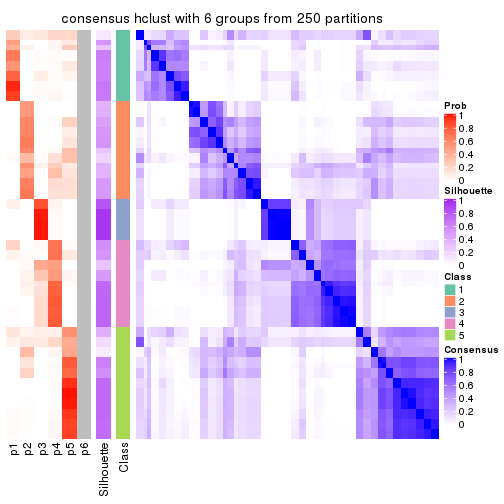
Heatmaps for the membership of samples in all partitions to see how consistent they are:
membership_heatmap(res, k = 2)
membership_heatmap(res, k = 3)
membership_heatmap(res, k = 4)
membership_heatmap(res, k = 5)

membership_heatmap(res, k = 6)
As soon as we have had the classes for columns, we can look for signatures which are significantly different between classes which can be candidate marks for certain classes. Following are the heatmaps for signatures.
Signature heatmaps where rows are scaled:
get_signatures(res, k = 2)
get_signatures(res, k = 3)
get_signatures(res, k = 4)
get_signatures(res, k = 5)
get_signatures(res, k = 6)
Signature heatmaps where rows are not scaled:
get_signatures(res, k = 2, scale_rows = FALSE)
get_signatures(res, k = 3, scale_rows = FALSE)
get_signatures(res, k = 4, scale_rows = FALSE)
get_signatures(res, k = 5, scale_rows = FALSE)
get_signatures(res, k = 6, scale_rows = FALSE)
Compare the overlap of signatures from different k:
compare_signatures(res)

get_signature() returns a data frame invisibly. TO get the list of signatures, the function
call should be assigned to a variable explicitly. In following code, if plot argument is set
to FALSE, no heatmap is plotted while only the differential analysis is performed.
# code only for demonstration
tb = get_signature(res, k = ..., plot = FALSE)
An example of the output of tb is:
#> which_row fdr mean_1 mean_2 scaled_mean_1 scaled_mean_2 km
#> 1 38 0.042760348 8.373488 9.131774 -0.5533452 0.5164555 1
#> 2 40 0.018707592 7.106213 8.469186 -0.6173731 0.5762149 1
#> 3 55 0.019134737 10.221463 11.207825 -0.6159697 0.5749050 1
#> 4 59 0.006059896 5.921854 7.869574 -0.6899429 0.6439467 1
#> 5 60 0.018055526 8.928898 10.211722 -0.6204761 0.5791110 1
#> 6 98 0.009384629 15.714769 14.887706 0.6635654 -0.6193277 2
...
The columns in tb are:
which_row: row indices corresponding to the input matrix.fdr: FDR for the differential test. mean_x: The mean value in group x.scaled_mean_x: The mean value in group x after rows are scaled.km: Row groups if k-means clustering is applied to rows.UMAP plot which shows how samples are separated.
dimension_reduction(res, k = 2, method = "UMAP")
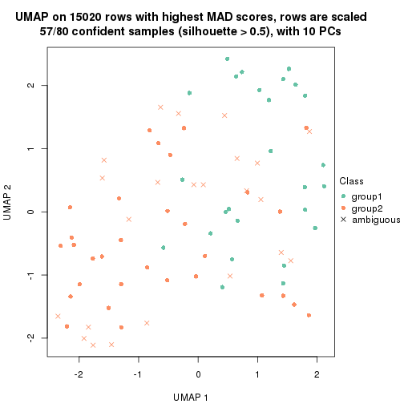
dimension_reduction(res, k = 3, method = "UMAP")
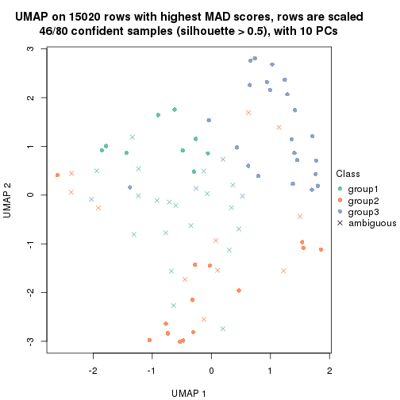
dimension_reduction(res, k = 4, method = "UMAP")
dimension_reduction(res, k = 5, method = "UMAP")
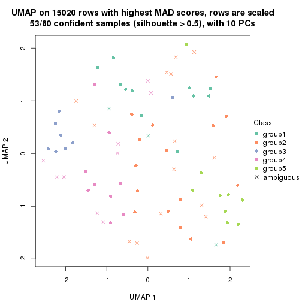
dimension_reduction(res, k = 6, method = "UMAP")
Following heatmap shows how subgroups are split when increasing k:
collect_classes(res)
If matrix rows can be associated to genes, consider to use functional_enrichment(res,
...) to perform function enrichment for the signature genes. See this vignette for more detailed explanations.
The object with results only for a single top-value method and a single partition method can be extracted as:
res = res_list["MAD", "kmeans"]
# you can also extract it by
# res = res_list["MAD:kmeans"]
A summary of res and all the functions that can be applied to it:
res
#> A 'ConsensusPartition' object with k = 2, 3, 4, 5, 6.
#> On a matrix with 15020 rows and 80 columns.
#> Top rows (1000, 2000, 3000, 4000, 5000) are extracted by 'MAD' method.
#> Subgroups are detected by 'kmeans' method.
#> Performed in total 1250 partitions by row resampling.
#> Best k for subgroups seems to be 2.
#>
#> Following methods can be applied to this 'ConsensusPartition' object:
#> [1] "cola_report" "collect_classes" "collect_plots"
#> [4] "collect_stats" "colnames" "compare_signatures"
#> [7] "consensus_heatmap" "dimension_reduction" "functional_enrichment"
#> [10] "get_anno_col" "get_anno" "get_classes"
#> [13] "get_consensus" "get_matrix" "get_membership"
#> [16] "get_param" "get_signatures" "get_stats"
#> [19] "is_best_k" "is_stable_k" "membership_heatmap"
#> [22] "ncol" "nrow" "plot_ecdf"
#> [25] "rownames" "select_partition_number" "show"
#> [28] "suggest_best_k" "test_to_known_factors"
collect_plots() function collects all the plots made from res for all k (number of partitions)
into one single page to provide an easy and fast comparison between different k.
collect_plots(res)
The plots are:
k and the heatmap of
predicted classes for each k.k.k.k.All the plots in panels can be made by individual functions and they are plotted later in this section.
select_partition_number() produces several plots showing different
statistics for choosing “optimized” k. There are following statistics:
k;k, the area increased is defined as \(A_k - A_{k-1}\).The detailed explanations of these statistics can be found in the cola vignette.
Generally speaking, lower PAC score, higher mean silhouette score or higher
concordance corresponds to better partition. Rand index and Jaccard index
measure how similar the current partition is compared to partition with k-1.
If they are too similar, we won't accept k is better than k-1.
select_partition_number(res)
The numeric values for all these statistics can be obtained by get_stats().
get_stats(res)
#> k 1-PAC mean_silhouette concordance area_increased Rand Jaccard
#> 2 2 0.646 0.819 0.918 0.4972 0.495 0.495
#> 3 3 0.679 0.819 0.903 0.3387 0.659 0.415
#> 4 4 0.593 0.531 0.745 0.1090 0.946 0.843
#> 5 5 0.599 0.601 0.752 0.0678 0.827 0.489
#> 6 6 0.643 0.616 0.733 0.0402 0.961 0.826
suggest_best_k() suggests the best \(k\) based on these statistics. The rules are as follows:
suggest_best_k(res)
#> [1] 2
Following shows the table of the partitions (You need to click the show/hide
code output link to see it). The membership matrix (columns with name p*)
is inferred by
clue::cl_consensus()
function with the SE method. Basically the value in the membership matrix
represents the probability to belong to a certain group. The finall class
label for an item is determined with the group with highest probability it
belongs to.
In get_classes() function, the entropy is calculated from the membership
matrix and the silhouette score is calculated from the consensus matrix.
cbind(get_classes(res, k = 2), get_membership(res, k = 2))
#> class entropy silhouette p1 p2
#> SRR1851004 2 0.0000 0.880 0.000 1.000
#> SRR1851003 2 0.0000 0.880 0.000 1.000
#> SRR1851002 2 0.0376 0.879 0.004 0.996
#> SRR1851000 1 0.0938 0.939 0.988 0.012
#> SRR1851001 2 0.0000 0.880 0.000 1.000
#> SRR1850998 2 0.0000 0.880 0.000 1.000
#> SRR1850999 2 0.0672 0.879 0.008 0.992
#> SRR1850997 2 0.0000 0.880 0.000 1.000
#> SRR1850996 1 0.1184 0.942 0.984 0.016
#> SRR1851016 2 0.9983 0.273 0.476 0.524
#> SRR1851010 2 0.6801 0.769 0.180 0.820
#> SRR1851014 1 0.0938 0.939 0.988 0.012
#> SRR1851015 2 0.0672 0.878 0.008 0.992
#> SRR1851013 1 0.0938 0.939 0.988 0.012
#> SRR1851012 1 0.1843 0.938 0.972 0.028
#> SRR1851011 1 0.3431 0.903 0.936 0.064
#> SRR1851009 2 0.0000 0.880 0.000 1.000
#> SRR1851008 1 0.1414 0.943 0.980 0.020
#> SRR1851007 1 0.1843 0.940 0.972 0.028
#> SRR1851006 2 0.5519 0.797 0.128 0.872
#> SRR1851005 1 0.1414 0.943 0.980 0.020
#> SRR1850995 1 0.1843 0.939 0.972 0.028
#> SRR1850994 2 0.9977 0.279 0.472 0.528
#> SRR1850993 1 0.0938 0.936 0.988 0.012
#> SRR1850992 2 0.0938 0.877 0.012 0.988
#> SRR1850991 2 0.4161 0.845 0.084 0.916
#> SRR1850990 1 0.0938 0.936 0.988 0.012
#> SRR1850989 2 0.9977 0.285 0.472 0.528
#> SRR1850987 1 1.0000 -0.206 0.500 0.500
#> SRR1850986 1 0.2043 0.921 0.968 0.032
#> SRR1850985 1 0.0000 0.938 1.000 0.000
#> SRR1850983 2 0.0000 0.880 0.000 1.000
#> SRR1850984 2 0.0000 0.880 0.000 1.000
#> SRR1850981 2 0.9552 0.511 0.376 0.624
#> SRR1850980 1 0.0938 0.936 0.988 0.012
#> SRR1850979 1 0.9635 0.194 0.612 0.388
#> SRR1850978 1 0.0938 0.936 0.988 0.012
#> SRR1850977 1 0.0000 0.938 1.000 0.000
#> SRR1850976 1 0.1414 0.943 0.980 0.020
#> SRR1850975 1 0.1414 0.943 0.980 0.020
#> SRR1850974 2 0.0376 0.879 0.004 0.996
#> SRR1850973 2 0.0000 0.880 0.000 1.000
#> SRR1850972 1 0.0000 0.938 1.000 0.000
#> SRR1850970 1 0.7376 0.709 0.792 0.208
#> SRR1850971 1 0.0000 0.938 1.000 0.000
#> SRR1850968 1 0.1414 0.943 0.980 0.020
#> SRR1850969 2 0.0000 0.880 0.000 1.000
#> SRR1850967 1 0.1414 0.943 0.980 0.020
#> SRR1850966 2 0.0376 0.879 0.004 0.996
#> SRR1850965 2 0.0000 0.880 0.000 1.000
#> SRR1850964 2 0.9963 0.308 0.464 0.536
#> SRR1850963 2 0.0376 0.879 0.004 0.996
#> SRR1850962 1 0.1414 0.943 0.980 0.020
#> SRR1850961 1 0.1414 0.943 0.980 0.020
#> SRR1850959 2 0.5737 0.810 0.136 0.864
#> SRR1850960 2 0.0672 0.878 0.008 0.992
#> SRR1850958 2 0.5842 0.803 0.140 0.860
#> SRR1850988 2 0.6247 0.798 0.156 0.844
#> SRR1850957 2 0.0000 0.880 0.000 1.000
#> SRR1850956 2 0.9087 0.585 0.324 0.676
#> SRR1850955 1 0.1633 0.941 0.976 0.024
#> SRR1850953 2 0.8909 0.616 0.308 0.692
#> SRR1850954 2 0.9933 0.327 0.452 0.548
#> SRR1850952 1 0.0000 0.938 1.000 0.000
#> SRR1850982 2 0.0938 0.877 0.012 0.988
#> SRR1850951 1 0.0000 0.938 1.000 0.000
#> SRR1850950 2 0.0376 0.879 0.004 0.996
#> SRR1850949 2 0.0376 0.879 0.004 0.996
#> SRR1850948 1 0.1414 0.943 0.980 0.020
#> SRR1850947 1 0.1414 0.943 0.980 0.020
#> SRR1850946 1 0.9087 0.488 0.676 0.324
#> SRR1850945 2 0.0000 0.880 0.000 1.000
#> SRR1850944 2 0.6438 0.783 0.164 0.836
#> SRR1850943 2 0.0672 0.878 0.008 0.992
#> SRR1850942 1 0.1414 0.943 0.980 0.020
#> SRR1850940 1 0.1414 0.943 0.980 0.020
#> SRR1850941 1 0.1414 0.943 0.980 0.020
#> SRR1850938 2 0.6438 0.784 0.164 0.836
#> SRR1850939 1 0.1414 0.943 0.980 0.020
#> SRR1850937 2 0.0672 0.878 0.008 0.992
cbind(get_classes(res, k = 3), get_membership(res, k = 3))
#> class entropy silhouette p1 p2 p3
#> SRR1851004 2 0.0000 0.9420 0.000 1.000 0.000
#> SRR1851003 2 0.0000 0.9420 0.000 1.000 0.000
#> SRR1851002 2 0.0237 0.9406 0.000 0.996 0.004
#> SRR1851000 1 0.3295 0.8513 0.896 0.008 0.096
#> SRR1851001 2 0.0237 0.9406 0.000 0.996 0.004
#> SRR1850998 2 0.0000 0.9420 0.000 1.000 0.000
#> SRR1850999 2 0.3850 0.8637 0.028 0.884 0.088
#> SRR1850997 2 0.0000 0.9420 0.000 1.000 0.000
#> SRR1850996 3 0.5098 0.7115 0.248 0.000 0.752
#> SRR1851016 1 0.3445 0.8707 0.896 0.088 0.016
#> SRR1851010 3 0.6625 0.1769 0.008 0.440 0.552
#> SRR1851014 1 0.3425 0.8424 0.884 0.004 0.112
#> SRR1851015 2 0.0424 0.9393 0.008 0.992 0.000
#> SRR1851013 1 0.3349 0.8446 0.888 0.004 0.108
#> SRR1851012 3 0.1170 0.8761 0.016 0.008 0.976
#> SRR1851011 3 0.1337 0.8751 0.016 0.012 0.972
#> SRR1851009 2 0.0000 0.9420 0.000 1.000 0.000
#> SRR1851008 3 0.1529 0.8762 0.040 0.000 0.960
#> SRR1851007 1 0.6192 0.3939 0.580 0.000 0.420
#> SRR1851006 3 0.2173 0.8625 0.008 0.048 0.944
#> SRR1851005 3 0.0747 0.8769 0.016 0.000 0.984
#> SRR1850995 1 0.4978 0.6872 0.780 0.004 0.216
#> SRR1850994 1 0.2939 0.8723 0.916 0.072 0.012
#> SRR1850993 1 0.0747 0.8622 0.984 0.000 0.016
#> SRR1850992 2 0.0424 0.9393 0.008 0.992 0.000
#> SRR1850991 1 0.3454 0.8654 0.888 0.104 0.008
#> SRR1850990 1 0.1170 0.8713 0.976 0.008 0.016
#> SRR1850989 1 0.3445 0.8707 0.896 0.088 0.016
#> SRR1850987 1 0.4121 0.8655 0.876 0.084 0.040
#> SRR1850986 1 0.0661 0.8651 0.988 0.004 0.008
#> SRR1850985 1 0.0892 0.8609 0.980 0.000 0.020
#> SRR1850983 2 0.0000 0.9420 0.000 1.000 0.000
#> SRR1850984 2 0.0237 0.9409 0.000 0.996 0.004
#> SRR1850981 1 0.3445 0.8707 0.896 0.088 0.016
#> SRR1850980 1 0.0983 0.8701 0.980 0.004 0.016
#> SRR1850979 1 0.3370 0.8725 0.904 0.072 0.024
#> SRR1850978 1 0.0661 0.8651 0.988 0.004 0.008
#> SRR1850977 1 0.0892 0.8609 0.980 0.000 0.020
#> SRR1850976 3 0.1289 0.8771 0.032 0.000 0.968
#> SRR1850975 3 0.1163 0.8767 0.028 0.000 0.972
#> SRR1850974 2 0.2945 0.8643 0.004 0.908 0.088
#> SRR1850973 2 0.0237 0.9406 0.000 0.996 0.004
#> SRR1850972 1 0.0237 0.8672 0.996 0.000 0.004
#> SRR1850970 3 0.2063 0.8641 0.008 0.044 0.948
#> SRR1850971 1 0.1163 0.8672 0.972 0.000 0.028
#> SRR1850968 3 0.1289 0.8771 0.032 0.000 0.968
#> SRR1850969 2 0.0000 0.9420 0.000 1.000 0.000
#> SRR1850967 3 0.1289 0.8771 0.032 0.000 0.968
#> SRR1850966 2 0.0000 0.9420 0.000 1.000 0.000
#> SRR1850965 2 0.0000 0.9420 0.000 1.000 0.000
#> SRR1850964 1 0.3445 0.8707 0.896 0.088 0.016
#> SRR1850963 2 0.1015 0.9334 0.012 0.980 0.008
#> SRR1850962 3 0.3116 0.8521 0.108 0.000 0.892
#> SRR1850961 3 0.3116 0.8521 0.108 0.000 0.892
#> SRR1850959 1 0.7948 0.2985 0.520 0.420 0.060
#> SRR1850960 2 0.5928 0.4890 0.296 0.696 0.008
#> SRR1850958 2 0.6735 0.0609 0.424 0.564 0.012
#> SRR1850988 1 0.4683 0.8407 0.836 0.140 0.024
#> SRR1850957 2 0.0000 0.9420 0.000 1.000 0.000
#> SRR1850956 1 0.7339 0.7132 0.688 0.224 0.088
#> SRR1850955 1 0.3120 0.8476 0.908 0.012 0.080
#> SRR1850953 1 0.4662 0.8511 0.844 0.124 0.032
#> SRR1850954 1 0.4563 0.8558 0.852 0.112 0.036
#> SRR1850952 1 0.1163 0.8589 0.972 0.000 0.028
#> SRR1850982 2 0.0424 0.9393 0.008 0.992 0.000
#> SRR1850951 3 0.5216 0.7146 0.260 0.000 0.740
#> SRR1850950 2 0.3715 0.8341 0.004 0.868 0.128
#> SRR1850949 2 0.3715 0.8341 0.004 0.868 0.128
#> SRR1850948 3 0.3192 0.8501 0.112 0.000 0.888
#> SRR1850947 3 0.3192 0.8501 0.112 0.000 0.888
#> SRR1850946 3 0.4465 0.7462 0.004 0.176 0.820
#> SRR1850945 2 0.0592 0.9356 0.000 0.988 0.012
#> SRR1850944 1 0.8577 0.1460 0.468 0.436 0.096
#> SRR1850943 2 0.1182 0.9320 0.012 0.976 0.012
#> SRR1850942 3 0.3116 0.8514 0.108 0.000 0.892
#> SRR1850940 3 0.0237 0.8768 0.004 0.000 0.996
#> SRR1850941 3 0.3116 0.8514 0.108 0.000 0.892
#> SRR1850938 3 0.6813 0.0763 0.012 0.468 0.520
#> SRR1850939 3 0.0237 0.8768 0.004 0.000 0.996
#> SRR1850937 2 0.0424 0.9393 0.008 0.992 0.000
cbind(get_classes(res, k = 4), get_membership(res, k = 4))
#> class entropy silhouette p1 p2 p3 p4
#> SRR1851004 2 0.1004 0.8537 0.000 0.972 0.024 0.004
#> SRR1851003 2 0.0657 0.8537 0.000 0.984 0.012 0.004
#> SRR1851002 2 0.2040 0.8516 0.012 0.936 0.048 0.004
#> SRR1851000 1 0.6053 0.6085 0.712 0.012 0.120 0.156
#> SRR1851001 2 0.1576 0.8514 0.000 0.948 0.048 0.004
#> SRR1850998 2 0.0817 0.8521 0.000 0.976 0.024 0.000
#> SRR1850999 4 0.9273 -0.0860 0.332 0.208 0.096 0.364
#> SRR1850997 2 0.0817 0.8521 0.000 0.976 0.024 0.000
#> SRR1850996 3 0.6334 0.3483 0.080 0.000 0.592 0.328
#> SRR1851016 1 0.4019 0.6587 0.792 0.000 0.196 0.012
#> SRR1851010 4 0.5590 0.4036 0.012 0.208 0.056 0.724
#> SRR1851014 1 0.6654 0.4600 0.588 0.000 0.116 0.296
#> SRR1851015 2 0.2317 0.8428 0.036 0.928 0.032 0.004
#> SRR1851013 1 0.6167 0.5629 0.664 0.000 0.116 0.220
#> SRR1851012 4 0.0336 0.5723 0.008 0.000 0.000 0.992
#> SRR1851011 4 0.0524 0.5726 0.008 0.000 0.004 0.988
#> SRR1851009 2 0.0817 0.8521 0.000 0.976 0.024 0.000
#> SRR1851008 4 0.1510 0.5579 0.016 0.000 0.028 0.956
#> SRR1851007 4 0.6466 0.1561 0.288 0.000 0.104 0.608
#> SRR1851006 4 0.2174 0.5508 0.000 0.052 0.020 0.928
#> SRR1851005 4 0.0376 0.5715 0.004 0.000 0.004 0.992
#> SRR1850995 1 0.6874 0.3101 0.560 0.012 0.344 0.084
#> SRR1850994 1 0.3933 0.6219 0.792 0.008 0.200 0.000
#> SRR1850993 1 0.4837 0.5838 0.648 0.000 0.348 0.004
#> SRR1850992 2 0.4415 0.7584 0.140 0.804 0.056 0.000
#> SRR1850991 1 0.2002 0.6720 0.936 0.020 0.044 0.000
#> SRR1850990 1 0.3494 0.6690 0.824 0.000 0.172 0.004
#> SRR1850989 1 0.3494 0.6690 0.824 0.000 0.172 0.004
#> SRR1850987 1 0.5045 0.6186 0.800 0.028 0.076 0.096
#> SRR1850986 1 0.4720 0.5986 0.672 0.000 0.324 0.004
#> SRR1850985 1 0.4741 0.5933 0.668 0.000 0.328 0.004
#> SRR1850983 2 0.0817 0.8521 0.000 0.976 0.024 0.000
#> SRR1850984 2 0.1042 0.8543 0.000 0.972 0.020 0.008
#> SRR1850981 1 0.2654 0.6804 0.888 0.004 0.108 0.000
#> SRR1850980 1 0.1510 0.6818 0.956 0.000 0.028 0.016
#> SRR1850979 1 0.2123 0.6794 0.936 0.004 0.028 0.032
#> SRR1850978 1 0.4584 0.6090 0.696 0.000 0.300 0.004
#> SRR1850977 1 0.4655 0.6004 0.684 0.000 0.312 0.004
#> SRR1850976 4 0.1398 0.5645 0.004 0.000 0.040 0.956
#> SRR1850975 4 0.2021 0.5558 0.012 0.000 0.056 0.932
#> SRR1850974 2 0.5136 0.6469 0.000 0.728 0.048 0.224
#> SRR1850973 2 0.1109 0.8516 0.000 0.968 0.028 0.004
#> SRR1850972 1 0.4452 0.6391 0.732 0.000 0.260 0.008
#> SRR1850970 4 0.1059 0.5692 0.000 0.016 0.012 0.972
#> SRR1850971 1 0.4661 0.6407 0.728 0.000 0.256 0.016
#> SRR1850968 4 0.0657 0.5706 0.012 0.000 0.004 0.984
#> SRR1850969 2 0.1109 0.8531 0.000 0.968 0.028 0.004
#> SRR1850967 4 0.0657 0.5706 0.012 0.000 0.004 0.984
#> SRR1850966 2 0.1732 0.8523 0.008 0.948 0.040 0.004
#> SRR1850965 2 0.1398 0.8513 0.000 0.956 0.040 0.004
#> SRR1850964 1 0.1585 0.6803 0.952 0.004 0.040 0.004
#> SRR1850963 2 0.3334 0.8322 0.060 0.884 0.048 0.008
#> SRR1850962 4 0.5161 -0.0639 0.004 0.000 0.476 0.520
#> SRR1850961 4 0.5161 -0.0639 0.004 0.000 0.476 0.520
#> SRR1850959 1 0.8360 0.2645 0.476 0.096 0.088 0.340
#> SRR1850960 2 0.7056 0.2411 0.392 0.508 0.088 0.012
#> SRR1850958 2 0.8003 -0.0245 0.416 0.436 0.088 0.060
#> SRR1850988 1 0.5403 0.6124 0.788 0.064 0.076 0.072
#> SRR1850957 2 0.5288 0.6624 0.196 0.740 0.060 0.004
#> SRR1850956 1 0.7207 0.4834 0.640 0.104 0.204 0.052
#> SRR1850955 1 0.6003 0.5485 0.696 0.012 0.216 0.076
#> SRR1850953 1 0.6203 0.5389 0.672 0.060 0.248 0.020
#> SRR1850954 1 0.6116 0.5368 0.672 0.052 0.256 0.020
#> SRR1850952 3 0.4977 -0.1094 0.460 0.000 0.540 0.000
#> SRR1850982 2 0.3071 0.8368 0.044 0.888 0.068 0.000
#> SRR1850951 3 0.6421 0.3003 0.076 0.000 0.556 0.368
#> SRR1850950 2 0.6249 0.4320 0.000 0.580 0.068 0.352
#> SRR1850949 2 0.6249 0.4320 0.000 0.580 0.068 0.352
#> SRR1850948 4 0.5161 -0.0661 0.004 0.000 0.476 0.520
#> SRR1850947 4 0.5161 -0.0661 0.004 0.000 0.476 0.520
#> SRR1850946 4 0.4746 0.4439 0.000 0.168 0.056 0.776
#> SRR1850945 2 0.2101 0.8472 0.000 0.928 0.060 0.012
#> SRR1850944 1 0.8774 0.3063 0.496 0.136 0.116 0.252
#> SRR1850943 2 0.4840 0.7719 0.116 0.800 0.072 0.012
#> SRR1850942 4 0.5161 -0.0661 0.004 0.000 0.476 0.520
#> SRR1850940 4 0.5050 0.0702 0.004 0.000 0.408 0.588
#> SRR1850941 4 0.5161 -0.0661 0.004 0.000 0.476 0.520
#> SRR1850938 4 0.6923 0.3077 0.032 0.276 0.076 0.616
#> SRR1850939 4 0.5050 0.0702 0.004 0.000 0.408 0.588
#> SRR1850937 2 0.2313 0.8450 0.032 0.924 0.044 0.000
cbind(get_classes(res, k = 5), get_membership(res, k = 5))
#> class entropy silhouette p1 p2 p3 p4 p5
#> SRR1851004 2 0.3052 0.8140 0.000 0.868 0.032 0.008 0.092
#> SRR1851003 2 0.1686 0.8380 0.000 0.944 0.020 0.008 0.028
#> SRR1851002 2 0.3664 0.8159 0.004 0.840 0.036 0.016 0.104
#> SRR1851000 5 0.7053 0.0863 0.372 0.000 0.036 0.152 0.440
#> SRR1851001 2 0.2715 0.8304 0.004 0.900 0.028 0.016 0.052
#> SRR1850998 2 0.1281 0.8406 0.000 0.956 0.012 0.000 0.032
#> SRR1850999 5 0.6372 0.4138 0.016 0.096 0.020 0.264 0.604
#> SRR1850997 2 0.1281 0.8406 0.000 0.956 0.012 0.000 0.032
#> SRR1850996 3 0.5534 0.7183 0.060 0.000 0.720 0.104 0.116
#> SRR1851016 1 0.3943 0.6304 0.800 0.000 0.028 0.016 0.156
#> SRR1851010 4 0.4123 0.6952 0.000 0.072 0.028 0.816 0.084
#> SRR1851014 4 0.7399 -0.2047 0.368 0.000 0.040 0.384 0.208
#> SRR1851015 2 0.2886 0.8146 0.000 0.864 0.016 0.004 0.116
#> SRR1851013 1 0.7505 0.0521 0.396 0.000 0.040 0.304 0.260
#> SRR1851012 4 0.0992 0.7397 0.000 0.000 0.024 0.968 0.008
#> SRR1851011 4 0.0807 0.7447 0.000 0.000 0.012 0.976 0.012
#> SRR1851009 2 0.1364 0.8403 0.000 0.952 0.012 0.000 0.036
#> SRR1851008 4 0.3423 0.6968 0.080 0.000 0.044 0.856 0.020
#> SRR1851007 4 0.5180 0.6218 0.136 0.000 0.044 0.740 0.080
#> SRR1851006 4 0.1393 0.7454 0.000 0.024 0.008 0.956 0.012
#> SRR1851005 4 0.1124 0.7376 0.000 0.000 0.036 0.960 0.004
#> SRR1850995 5 0.7155 0.4182 0.164 0.008 0.276 0.036 0.516
#> SRR1850994 1 0.5876 -0.2521 0.472 0.004 0.084 0.000 0.440
#> SRR1850993 1 0.1485 0.6895 0.948 0.000 0.032 0.000 0.020
#> SRR1850992 2 0.4626 0.5051 0.000 0.616 0.020 0.000 0.364
#> SRR1850991 5 0.4819 0.3547 0.404 0.008 0.012 0.000 0.576
#> SRR1850990 1 0.3169 0.6539 0.840 0.000 0.016 0.004 0.140
#> SRR1850989 1 0.3256 0.6471 0.832 0.000 0.016 0.004 0.148
#> SRR1850987 5 0.5176 0.4927 0.256 0.008 0.016 0.036 0.684
#> SRR1850986 1 0.1399 0.6941 0.952 0.000 0.020 0.000 0.028
#> SRR1850985 1 0.1278 0.6944 0.960 0.000 0.016 0.004 0.020
#> SRR1850983 2 0.1549 0.8405 0.000 0.944 0.016 0.000 0.040
#> SRR1850984 2 0.1924 0.8386 0.000 0.924 0.004 0.008 0.064
#> SRR1850981 1 0.5243 -0.1032 0.540 0.000 0.048 0.000 0.412
#> SRR1850980 5 0.5329 0.1355 0.472 0.000 0.028 0.012 0.488
#> SRR1850979 5 0.5637 0.1996 0.444 0.000 0.028 0.028 0.500
#> SRR1850978 1 0.1661 0.7027 0.940 0.000 0.024 0.000 0.036
#> SRR1850977 1 0.1750 0.7019 0.936 0.000 0.028 0.000 0.036
#> SRR1850976 4 0.2661 0.7219 0.008 0.000 0.044 0.896 0.052
#> SRR1850975 4 0.2730 0.7249 0.008 0.000 0.044 0.892 0.056
#> SRR1850974 2 0.5110 0.4939 0.000 0.668 0.012 0.272 0.048
#> SRR1850973 2 0.1442 0.8367 0.000 0.952 0.004 0.012 0.032
#> SRR1850972 1 0.3371 0.6754 0.848 0.000 0.040 0.008 0.104
#> SRR1850970 4 0.1518 0.7430 0.000 0.016 0.020 0.952 0.012
#> SRR1850971 1 0.3685 0.6654 0.832 0.000 0.040 0.016 0.112
#> SRR1850968 4 0.1569 0.7334 0.004 0.000 0.044 0.944 0.008
#> SRR1850969 2 0.0798 0.8424 0.000 0.976 0.008 0.000 0.016
#> SRR1850967 4 0.1605 0.7358 0.004 0.000 0.040 0.944 0.012
#> SRR1850966 2 0.2562 0.8288 0.000 0.900 0.032 0.008 0.060
#> SRR1850965 2 0.2228 0.8335 0.000 0.920 0.028 0.012 0.040
#> SRR1850964 5 0.5119 0.2345 0.464 0.000 0.028 0.004 0.504
#> SRR1850963 2 0.4712 0.6878 0.004 0.708 0.016 0.020 0.252
#> SRR1850962 3 0.4065 0.8564 0.008 0.000 0.752 0.224 0.016
#> SRR1850961 3 0.4065 0.8564 0.008 0.000 0.752 0.224 0.016
#> SRR1850959 5 0.5740 0.4719 0.044 0.044 0.008 0.236 0.668
#> SRR1850960 5 0.4953 0.3718 0.016 0.308 0.008 0.012 0.656
#> SRR1850958 5 0.7481 0.2942 0.104 0.316 0.072 0.016 0.492
#> SRR1850988 5 0.5378 0.5052 0.240 0.024 0.016 0.032 0.688
#> SRR1850957 2 0.5459 0.0920 0.000 0.472 0.060 0.000 0.468
#> SRR1850956 5 0.6305 0.5145 0.156 0.020 0.176 0.012 0.636
#> SRR1850955 5 0.6179 0.5106 0.160 0.008 0.180 0.016 0.636
#> SRR1850953 5 0.6788 0.4547 0.256 0.044 0.116 0.008 0.576
#> SRR1850954 5 0.6664 0.4513 0.256 0.028 0.132 0.008 0.576
#> SRR1850952 3 0.5915 0.3385 0.264 0.000 0.584 0.000 0.152
#> SRR1850982 2 0.4634 0.7324 0.008 0.744 0.048 0.004 0.196
#> SRR1850951 3 0.5536 0.7740 0.148 0.000 0.692 0.140 0.020
#> SRR1850950 4 0.6099 0.3281 0.000 0.360 0.012 0.532 0.096
#> SRR1850949 4 0.6099 0.3281 0.000 0.360 0.012 0.532 0.096
#> SRR1850948 3 0.3845 0.8593 0.012 0.000 0.760 0.224 0.004
#> SRR1850947 3 0.3845 0.8593 0.012 0.000 0.760 0.224 0.004
#> SRR1850946 4 0.5824 0.5829 0.000 0.164 0.040 0.680 0.116
#> SRR1850945 2 0.3669 0.8066 0.000 0.844 0.036 0.036 0.084
#> SRR1850944 5 0.5918 0.5258 0.076 0.052 0.040 0.108 0.724
#> SRR1850943 2 0.5390 0.5964 0.012 0.628 0.036 0.008 0.316
#> SRR1850942 3 0.4188 0.8567 0.008 0.000 0.744 0.228 0.020
#> SRR1850940 3 0.4883 0.7906 0.000 0.000 0.652 0.300 0.048
#> SRR1850941 3 0.4188 0.8567 0.008 0.000 0.744 0.228 0.020
#> SRR1850938 4 0.6180 0.5763 0.004 0.152 0.028 0.644 0.172
#> SRR1850939 3 0.4883 0.7906 0.000 0.000 0.652 0.300 0.048
#> SRR1850937 2 0.3367 0.8070 0.004 0.844 0.028 0.004 0.120
cbind(get_classes(res, k = 6), get_membership(res, k = 6))
#> class entropy silhouette p1 p2 p3 p4 p5 p6
#> SRR1851004 2 0.3828 0.7334 0.004 0.764 0.000 0.008 0.028 NA
#> SRR1851003 2 0.1788 0.7953 0.000 0.916 0.000 0.004 0.004 NA
#> SRR1851002 2 0.3606 0.7709 0.000 0.808 0.004 0.008 0.048 NA
#> SRR1851000 5 0.6945 0.2840 0.188 0.000 0.004 0.152 0.512 NA
#> SRR1851001 2 0.2905 0.7853 0.000 0.836 0.000 0.012 0.008 NA
#> SRR1850998 2 0.1629 0.7985 0.004 0.940 0.004 0.000 0.024 NA
#> SRR1850999 5 0.5521 0.4627 0.008 0.020 0.000 0.228 0.632 NA
#> SRR1850997 2 0.1629 0.7985 0.004 0.940 0.004 0.000 0.024 NA
#> SRR1850996 3 0.5802 0.6006 0.048 0.000 0.648 0.032 0.064 NA
#> SRR1851016 1 0.4272 0.7364 0.764 0.000 0.012 0.004 0.100 NA
#> SRR1851010 4 0.3896 0.6830 0.000 0.036 0.008 0.812 0.048 NA
#> SRR1851014 4 0.7605 -0.0133 0.244 0.000 0.008 0.364 0.256 NA
#> SRR1851015 2 0.3138 0.7583 0.000 0.832 0.000 0.000 0.108 NA
#> SRR1851013 4 0.7632 -0.0504 0.244 0.000 0.008 0.348 0.272 NA
#> SRR1851012 4 0.1633 0.6989 0.000 0.000 0.044 0.932 0.000 NA
#> SRR1851011 4 0.1633 0.6989 0.000 0.000 0.044 0.932 0.000 NA
#> SRR1851009 2 0.1780 0.7983 0.004 0.932 0.004 0.000 0.024 NA
#> SRR1851008 4 0.4174 0.6601 0.072 0.000 0.044 0.800 0.012 NA
#> SRR1851007 4 0.5299 0.6107 0.096 0.000 0.020 0.720 0.076 NA
#> SRR1851006 4 0.1933 0.7079 0.000 0.032 0.012 0.924 0.000 NA
#> SRR1851005 4 0.1367 0.6996 0.000 0.000 0.044 0.944 0.000 NA
#> SRR1850995 5 0.7244 0.3606 0.056 0.008 0.252 0.012 0.444 NA
#> SRR1850994 5 0.6849 0.2998 0.328 0.000 0.060 0.000 0.404 NA
#> SRR1850993 1 0.2188 0.7831 0.912 0.000 0.032 0.000 0.020 NA
#> SRR1850992 2 0.4951 0.1491 0.008 0.480 0.004 0.000 0.472 NA
#> SRR1850991 5 0.3316 0.5550 0.164 0.004 0.000 0.000 0.804 NA
#> SRR1850990 1 0.3733 0.6971 0.760 0.000 0.004 0.004 0.208 NA
#> SRR1850989 1 0.3837 0.6902 0.752 0.000 0.004 0.004 0.212 NA
#> SRR1850987 5 0.3220 0.5857 0.068 0.004 0.000 0.032 0.856 NA
#> SRR1850986 1 0.2102 0.7933 0.920 0.000 0.024 0.004 0.032 NA
#> SRR1850985 1 0.1837 0.7988 0.932 0.000 0.032 0.004 0.012 NA
#> SRR1850983 2 0.1921 0.7981 0.004 0.928 0.012 0.000 0.024 NA
#> SRR1850984 2 0.3678 0.7869 0.004 0.820 0.004 0.020 0.040 NA
#> SRR1850981 5 0.5656 0.3645 0.312 0.000 0.012 0.008 0.564 NA
#> SRR1850980 5 0.5161 0.3999 0.264 0.000 0.000 0.024 0.636 NA
#> SRR1850979 5 0.5151 0.4224 0.248 0.000 0.000 0.028 0.648 NA
#> SRR1850978 1 0.3421 0.7982 0.844 0.000 0.024 0.008 0.048 NA
#> SRR1850977 1 0.3441 0.7964 0.844 0.000 0.032 0.008 0.040 NA
#> SRR1850976 4 0.4628 0.6510 0.024 0.000 0.052 0.760 0.032 NA
#> SRR1850975 4 0.4628 0.6510 0.024 0.000 0.052 0.760 0.032 NA
#> SRR1850974 2 0.5600 0.4261 0.000 0.576 0.000 0.244 0.008 NA
#> SRR1850973 2 0.1958 0.7957 0.000 0.896 0.000 0.004 0.000 NA
#> SRR1850972 1 0.4795 0.7211 0.724 0.000 0.008 0.016 0.140 NA
#> SRR1850970 4 0.3155 0.6954 0.000 0.032 0.040 0.864 0.008 NA
#> SRR1850971 1 0.4795 0.7211 0.724 0.000 0.008 0.016 0.140 NA
#> SRR1850968 4 0.2583 0.6955 0.008 0.000 0.056 0.884 0.000 NA
#> SRR1850969 2 0.0603 0.8024 0.000 0.980 0.000 0.000 0.004 NA
#> SRR1850967 4 0.2520 0.6974 0.008 0.000 0.052 0.888 0.000 NA
#> SRR1850966 2 0.3268 0.7803 0.004 0.840 0.004 0.004 0.044 NA
#> SRR1850965 2 0.2990 0.7836 0.000 0.852 0.004 0.004 0.036 NA
#> SRR1850964 5 0.4517 0.4403 0.292 0.000 0.000 0.000 0.648 NA
#> SRR1850963 2 0.4855 0.5819 0.000 0.640 0.000 0.004 0.272 NA
#> SRR1850962 3 0.3318 0.8265 0.008 0.000 0.836 0.100 0.004 NA
#> SRR1850961 3 0.3318 0.8265 0.008 0.000 0.836 0.100 0.004 NA
#> SRR1850959 5 0.3135 0.5942 0.008 0.032 0.004 0.084 0.860 NA
#> SRR1850960 5 0.3051 0.5839 0.008 0.120 0.004 0.012 0.848 NA
#> SRR1850958 5 0.7358 0.3629 0.072 0.216 0.004 0.024 0.468 NA
#> SRR1850988 5 0.3178 0.5871 0.068 0.008 0.000 0.024 0.860 NA
#> SRR1850957 5 0.6594 0.1688 0.008 0.320 0.004 0.016 0.440 NA
#> SRR1850956 5 0.6330 0.5430 0.040 0.024 0.128 0.004 0.600 NA
#> SRR1850955 5 0.6238 0.5426 0.044 0.016 0.128 0.004 0.604 NA
#> SRR1850953 5 0.7113 0.4611 0.128 0.020 0.088 0.000 0.460 NA
#> SRR1850954 5 0.7113 0.4611 0.128 0.020 0.088 0.000 0.460 NA
#> SRR1850952 3 0.6142 0.4798 0.168 0.000 0.588 0.000 0.068 NA
#> SRR1850982 2 0.5285 0.6199 0.004 0.648 0.004 0.008 0.220 NA
#> SRR1850951 3 0.3912 0.7612 0.120 0.000 0.800 0.048 0.004 NA
#> SRR1850950 4 0.6223 0.3048 0.000 0.296 0.000 0.468 0.016 NA
#> SRR1850949 4 0.6223 0.3048 0.000 0.296 0.000 0.468 0.016 NA
#> SRR1850948 3 0.2257 0.8421 0.008 0.000 0.876 0.116 0.000 NA
#> SRR1850947 3 0.2257 0.8421 0.008 0.000 0.876 0.116 0.000 NA
#> SRR1850946 4 0.6056 0.5233 0.000 0.112 0.028 0.572 0.016 NA
#> SRR1850945 2 0.4654 0.6787 0.000 0.676 0.000 0.060 0.012 NA
#> SRR1850944 5 0.4648 0.5695 0.004 0.004 0.008 0.080 0.720 NA
#> SRR1850943 2 0.6283 0.3572 0.004 0.488 0.000 0.020 0.300 NA
#> SRR1850942 3 0.2760 0.8412 0.004 0.000 0.856 0.116 0.000 NA
#> SRR1850940 3 0.4438 0.7563 0.004 0.000 0.708 0.208 0.000 NA
#> SRR1850941 3 0.2760 0.8412 0.004 0.000 0.856 0.116 0.000 NA
#> SRR1850938 4 0.6166 0.5703 0.000 0.104 0.012 0.608 0.072 NA
#> SRR1850939 3 0.4438 0.7563 0.004 0.000 0.708 0.208 0.000 NA
#> SRR1850937 2 0.3575 0.7402 0.000 0.796 0.000 0.000 0.128 NA
Heatmaps for the consensus matrix. It visualizes the probability of two samples to be in a same group.
consensus_heatmap(res, k = 2)
consensus_heatmap(res, k = 3)
consensus_heatmap(res, k = 4)
consensus_heatmap(res, k = 5)
consensus_heatmap(res, k = 6)
Heatmaps for the membership of samples in all partitions to see how consistent they are:
membership_heatmap(res, k = 2)
membership_heatmap(res, k = 3)
membership_heatmap(res, k = 4)
membership_heatmap(res, k = 5)
membership_heatmap(res, k = 6)
As soon as we have had the classes for columns, we can look for signatures which are significantly different between classes which can be candidate marks for certain classes. Following are the heatmaps for signatures.
Signature heatmaps where rows are scaled:
get_signatures(res, k = 2)
get_signatures(res, k = 3)
get_signatures(res, k = 4)
get_signatures(res, k = 5)
get_signatures(res, k = 6)
Signature heatmaps where rows are not scaled:
get_signatures(res, k = 2, scale_rows = FALSE)
get_signatures(res, k = 3, scale_rows = FALSE)
get_signatures(res, k = 4, scale_rows = FALSE)
get_signatures(res, k = 5, scale_rows = FALSE)
get_signatures(res, k = 6, scale_rows = FALSE)
Compare the overlap of signatures from different k:
compare_signatures(res)
get_signature() returns a data frame invisibly. TO get the list of signatures, the function
call should be assigned to a variable explicitly. In following code, if plot argument is set
to FALSE, no heatmap is plotted while only the differential analysis is performed.
# code only for demonstration
tb = get_signature(res, k = ..., plot = FALSE)
An example of the output of tb is:
#> which_row fdr mean_1 mean_2 scaled_mean_1 scaled_mean_2 km
#> 1 38 0.042760348 8.373488 9.131774 -0.5533452 0.5164555 1
#> 2 40 0.018707592 7.106213 8.469186 -0.6173731 0.5762149 1
#> 3 55 0.019134737 10.221463 11.207825 -0.6159697 0.5749050 1
#> 4 59 0.006059896 5.921854 7.869574 -0.6899429 0.6439467 1
#> 5 60 0.018055526 8.928898 10.211722 -0.6204761 0.5791110 1
#> 6 98 0.009384629 15.714769 14.887706 0.6635654 -0.6193277 2
...
The columns in tb are:
which_row: row indices corresponding to the input matrix.fdr: FDR for the differential test. mean_x: The mean value in group x.scaled_mean_x: The mean value in group x after rows are scaled.km: Row groups if k-means clustering is applied to rows.UMAP plot which shows how samples are separated.
dimension_reduction(res, k = 2, method = "UMAP")
dimension_reduction(res, k = 3, method = "UMAP")
dimension_reduction(res, k = 4, method = "UMAP")
dimension_reduction(res, k = 5, method = "UMAP")
dimension_reduction(res, k = 6, method = "UMAP")
Following heatmap shows how subgroups are split when increasing k:
collect_classes(res)
If matrix rows can be associated to genes, consider to use functional_enrichment(res,
...) to perform function enrichment for the signature genes. See this vignette for more detailed explanations.
The object with results only for a single top-value method and a single partition method can be extracted as:
res = res_list["MAD", "skmeans"]
# you can also extract it by
# res = res_list["MAD:skmeans"]
A summary of res and all the functions that can be applied to it:
res
#> A 'ConsensusPartition' object with k = 2, 3, 4, 5, 6.
#> On a matrix with 15020 rows and 80 columns.
#> Top rows (1000, 2000, 3000, 4000, 5000) are extracted by 'MAD' method.
#> Subgroups are detected by 'skmeans' method.
#> Performed in total 1250 partitions by row resampling.
#> Best k for subgroups seems to be 3.
#>
#> Following methods can be applied to this 'ConsensusPartition' object:
#> [1] "cola_report" "collect_classes" "collect_plots"
#> [4] "collect_stats" "colnames" "compare_signatures"
#> [7] "consensus_heatmap" "dimension_reduction" "functional_enrichment"
#> [10] "get_anno_col" "get_anno" "get_classes"
#> [13] "get_consensus" "get_matrix" "get_membership"
#> [16] "get_param" "get_signatures" "get_stats"
#> [19] "is_best_k" "is_stable_k" "membership_heatmap"
#> [22] "ncol" "nrow" "plot_ecdf"
#> [25] "rownames" "select_partition_number" "show"
#> [28] "suggest_best_k" "test_to_known_factors"
collect_plots() function collects all the plots made from res for all k (number of partitions)
into one single page to provide an easy and fast comparison between different k.
collect_plots(res)

The plots are:
k and the heatmap of
predicted classes for each k.k.k.k.All the plots in panels can be made by individual functions and they are plotted later in this section.
select_partition_number() produces several plots showing different
statistics for choosing “optimized” k. There are following statistics:
k;k, the area increased is defined as \(A_k - A_{k-1}\).The detailed explanations of these statistics can be found in the cola vignette.
Generally speaking, lower PAC score, higher mean silhouette score or higher
concordance corresponds to better partition. Rand index and Jaccard index
measure how similar the current partition is compared to partition with k-1.
If they are too similar, we won't accept k is better than k-1.
select_partition_number(res)
The numeric values for all these statistics can be obtained by get_stats().
get_stats(res)
#> k 1-PAC mean_silhouette concordance area_increased Rand Jaccard
#> 2 2 0.714 0.863 0.941 0.5063 0.494 0.494
#> 3 3 0.820 0.882 0.944 0.3278 0.702 0.467
#> 4 4 0.627 0.648 0.804 0.1128 0.919 0.759
#> 5 5 0.595 0.496 0.704 0.0630 0.898 0.653
#> 6 6 0.615 0.486 0.686 0.0397 0.957 0.815
suggest_best_k() suggests the best \(k\) based on these statistics. The rules are as follows:
suggest_best_k(res)
#> [1] 3
Following shows the table of the partitions (You need to click the show/hide
code output link to see it). The membership matrix (columns with name p*)
is inferred by
clue::cl_consensus()
function with the SE method. Basically the value in the membership matrix
represents the probability to belong to a certain group. The finall class
label for an item is determined with the group with highest probability it
belongs to.
In get_classes() function, the entropy is calculated from the membership
matrix and the silhouette score is calculated from the consensus matrix.
cbind(get_classes(res, k = 2), get_membership(res, k = 2))
#> class entropy silhouette p1 p2
#> SRR1851004 2 0.0000 0.923 0.000 1.000
#> SRR1851003 2 0.0000 0.923 0.000 1.000
#> SRR1851002 2 0.0000 0.923 0.000 1.000
#> SRR1851000 1 0.0000 0.944 1.000 0.000
#> SRR1851001 2 0.0000 0.923 0.000 1.000
#> SRR1850998 2 0.0000 0.923 0.000 1.000
#> SRR1850999 2 0.0000 0.923 0.000 1.000
#> SRR1850997 2 0.0000 0.923 0.000 1.000
#> SRR1850996 1 0.0000 0.944 1.000 0.000
#> SRR1851016 2 0.8861 0.611 0.304 0.696
#> SRR1851010 2 0.9815 0.232 0.420 0.580
#> SRR1851014 1 0.0000 0.944 1.000 0.000
#> SRR1851015 2 0.0000 0.923 0.000 1.000
#> SRR1851013 1 0.0000 0.944 1.000 0.000
#> SRR1851012 1 0.3114 0.903 0.944 0.056
#> SRR1851011 1 0.4562 0.865 0.904 0.096
#> SRR1851009 2 0.0000 0.923 0.000 1.000
#> SRR1851008 1 0.0000 0.944 1.000 0.000
#> SRR1851007 1 0.0000 0.944 1.000 0.000
#> SRR1851006 1 0.9833 0.297 0.576 0.424
#> SRR1851005 1 0.2603 0.913 0.956 0.044
#> SRR1850995 1 0.0938 0.936 0.988 0.012
#> SRR1850994 2 0.9248 0.543 0.340 0.660
#> SRR1850993 1 0.0000 0.944 1.000 0.000
#> SRR1850992 2 0.0000 0.923 0.000 1.000
#> SRR1850991 2 0.2948 0.890 0.052 0.948
#> SRR1850990 1 0.0000 0.944 1.000 0.000
#> SRR1850989 2 0.8763 0.624 0.296 0.704
#> SRR1850987 1 0.9833 0.243 0.576 0.424
#> SRR1850986 1 0.5946 0.798 0.856 0.144
#> SRR1850985 1 0.0000 0.944 1.000 0.000
#> SRR1850983 2 0.0000 0.923 0.000 1.000
#> SRR1850984 2 0.0000 0.923 0.000 1.000
#> SRR1850981 2 0.6247 0.805 0.156 0.844
#> SRR1850980 1 0.0000 0.944 1.000 0.000
#> SRR1850979 1 0.6712 0.754 0.824 0.176
#> SRR1850978 1 0.0000 0.944 1.000 0.000
#> SRR1850977 1 0.0000 0.944 1.000 0.000
#> SRR1850976 1 0.0000 0.944 1.000 0.000
#> SRR1850975 1 0.0000 0.944 1.000 0.000
#> SRR1850974 2 0.0000 0.923 0.000 1.000
#> SRR1850973 2 0.0000 0.923 0.000 1.000
#> SRR1850972 1 0.0000 0.944 1.000 0.000
#> SRR1850970 1 0.7745 0.702 0.772 0.228
#> SRR1850971 1 0.0000 0.944 1.000 0.000
#> SRR1850968 1 0.0000 0.944 1.000 0.000
#> SRR1850969 2 0.0000 0.923 0.000 1.000
#> SRR1850967 1 0.0000 0.944 1.000 0.000
#> SRR1850966 2 0.0000 0.923 0.000 1.000
#> SRR1850965 2 0.0000 0.923 0.000 1.000
#> SRR1850964 2 0.8608 0.643 0.284 0.716
#> SRR1850963 2 0.0000 0.923 0.000 1.000
#> SRR1850962 1 0.0000 0.944 1.000 0.000
#> SRR1850961 1 0.0000 0.944 1.000 0.000
#> SRR1850959 2 0.1843 0.905 0.028 0.972
#> SRR1850960 2 0.0000 0.923 0.000 1.000
#> SRR1850958 2 0.0376 0.921 0.004 0.996
#> SRR1850988 2 0.0000 0.923 0.000 1.000
#> SRR1850957 2 0.0000 0.923 0.000 1.000
#> SRR1850956 2 0.5178 0.842 0.116 0.884
#> SRR1850955 1 0.0000 0.944 1.000 0.000
#> SRR1850953 2 0.6438 0.796 0.164 0.836
#> SRR1850954 2 0.8608 0.646 0.284 0.716
#> SRR1850952 1 0.0000 0.944 1.000 0.000
#> SRR1850982 2 0.0000 0.923 0.000 1.000
#> SRR1850951 1 0.0000 0.944 1.000 0.000
#> SRR1850950 2 0.0000 0.923 0.000 1.000
#> SRR1850949 2 0.0000 0.923 0.000 1.000
#> SRR1850948 1 0.0000 0.944 1.000 0.000
#> SRR1850947 1 0.0000 0.944 1.000 0.000
#> SRR1850946 1 0.8763 0.589 0.704 0.296
#> SRR1850945 2 0.0000 0.923 0.000 1.000
#> SRR1850944 2 0.1843 0.905 0.028 0.972
#> SRR1850943 2 0.0000 0.923 0.000 1.000
#> SRR1850942 1 0.0000 0.944 1.000 0.000
#> SRR1850940 1 0.2043 0.922 0.968 0.032
#> SRR1850941 1 0.0000 0.944 1.000 0.000
#> SRR1850938 2 0.9286 0.448 0.344 0.656
#> SRR1850939 1 0.0000 0.944 1.000 0.000
#> SRR1850937 2 0.0000 0.923 0.000 1.000
cbind(get_classes(res, k = 3), get_membership(res, k = 3))
#> class entropy silhouette p1 p2 p3
#> SRR1851004 2 0.0000 0.967 0.000 1.000 0.000
#> SRR1851003 2 0.0000 0.967 0.000 1.000 0.000
#> SRR1851002 2 0.0000 0.967 0.000 1.000 0.000
#> SRR1851000 1 0.2066 0.894 0.940 0.000 0.060
#> SRR1851001 2 0.0000 0.967 0.000 1.000 0.000
#> SRR1850998 2 0.0000 0.967 0.000 1.000 0.000
#> SRR1850999 2 0.2066 0.915 0.000 0.940 0.060
#> SRR1850997 2 0.0000 0.967 0.000 1.000 0.000
#> SRR1850996 3 0.2625 0.865 0.084 0.000 0.916
#> SRR1851016 1 0.0000 0.925 1.000 0.000 0.000
#> SRR1851010 3 0.5497 0.607 0.000 0.292 0.708
#> SRR1851014 1 0.3482 0.830 0.872 0.000 0.128
#> SRR1851015 2 0.0000 0.967 0.000 1.000 0.000
#> SRR1851013 1 0.2448 0.881 0.924 0.000 0.076
#> SRR1851012 3 0.0237 0.923 0.000 0.004 0.996
#> SRR1851011 3 0.0424 0.921 0.000 0.008 0.992
#> SRR1851009 2 0.0000 0.967 0.000 1.000 0.000
#> SRR1851008 3 0.0424 0.922 0.008 0.000 0.992
#> SRR1851007 3 0.5497 0.575 0.292 0.000 0.708
#> SRR1851006 3 0.1031 0.913 0.000 0.024 0.976
#> SRR1851005 3 0.0000 0.924 0.000 0.000 1.000
#> SRR1850995 3 0.5450 0.686 0.228 0.012 0.760
#> SRR1850994 1 0.0237 0.924 0.996 0.000 0.004
#> SRR1850993 1 0.0237 0.924 0.996 0.000 0.004
#> SRR1850992 2 0.0000 0.967 0.000 1.000 0.000
#> SRR1850991 1 0.0000 0.925 1.000 0.000 0.000
#> SRR1850990 1 0.0000 0.925 1.000 0.000 0.000
#> SRR1850989 1 0.0000 0.925 1.000 0.000 0.000
#> SRR1850987 1 0.1015 0.920 0.980 0.012 0.008
#> SRR1850986 1 0.0000 0.925 1.000 0.000 0.000
#> SRR1850985 1 0.0592 0.922 0.988 0.000 0.012
#> SRR1850983 2 0.0000 0.967 0.000 1.000 0.000
#> SRR1850984 2 0.0000 0.967 0.000 1.000 0.000
#> SRR1850981 1 0.0000 0.925 1.000 0.000 0.000
#> SRR1850980 1 0.0000 0.925 1.000 0.000 0.000
#> SRR1850979 1 0.0000 0.925 1.000 0.000 0.000
#> SRR1850978 1 0.0000 0.925 1.000 0.000 0.000
#> SRR1850977 1 0.0237 0.924 0.996 0.000 0.004
#> SRR1850976 3 0.0237 0.923 0.004 0.000 0.996
#> SRR1850975 3 0.0237 0.923 0.004 0.000 0.996
#> SRR1850974 2 0.0237 0.964 0.000 0.996 0.004
#> SRR1850973 2 0.0000 0.967 0.000 1.000 0.000
#> SRR1850972 1 0.0000 0.925 1.000 0.000 0.000
#> SRR1850970 3 0.0237 0.923 0.000 0.004 0.996
#> SRR1850971 1 0.1163 0.914 0.972 0.000 0.028
#> SRR1850968 3 0.0237 0.923 0.004 0.000 0.996
#> SRR1850969 2 0.0000 0.967 0.000 1.000 0.000
#> SRR1850967 3 0.0237 0.923 0.004 0.000 0.996
#> SRR1850966 2 0.0000 0.967 0.000 1.000 0.000
#> SRR1850965 2 0.0000 0.967 0.000 1.000 0.000
#> SRR1850964 1 0.0000 0.925 1.000 0.000 0.000
#> SRR1850963 2 0.0000 0.967 0.000 1.000 0.000
#> SRR1850962 3 0.0000 0.924 0.000 0.000 1.000
#> SRR1850961 3 0.0000 0.924 0.000 0.000 1.000
#> SRR1850959 2 0.6714 0.712 0.112 0.748 0.140
#> SRR1850960 2 0.0747 0.955 0.016 0.984 0.000
#> SRR1850958 2 0.3532 0.859 0.108 0.884 0.008
#> SRR1850988 1 0.1860 0.895 0.948 0.052 0.000
#> SRR1850957 2 0.0000 0.967 0.000 1.000 0.000
#> SRR1850956 1 0.9601 0.271 0.456 0.328 0.216
#> SRR1850955 1 0.5678 0.538 0.684 0.000 0.316
#> SRR1850953 1 0.5812 0.645 0.724 0.264 0.012
#> SRR1850954 1 0.6184 0.763 0.780 0.112 0.108
#> SRR1850952 1 0.2625 0.871 0.916 0.000 0.084
#> SRR1850982 2 0.0000 0.967 0.000 1.000 0.000
#> SRR1850951 3 0.4887 0.694 0.228 0.000 0.772
#> SRR1850950 2 0.0592 0.959 0.000 0.988 0.012
#> SRR1850949 2 0.0592 0.959 0.000 0.988 0.012
#> SRR1850948 3 0.0237 0.923 0.004 0.000 0.996
#> SRR1850947 3 0.0237 0.923 0.004 0.000 0.996
#> SRR1850946 3 0.3941 0.802 0.000 0.156 0.844
#> SRR1850945 2 0.0000 0.967 0.000 1.000 0.000
#> SRR1850944 2 0.8561 0.210 0.104 0.528 0.368
#> SRR1850943 2 0.0000 0.967 0.000 1.000 0.000
#> SRR1850942 3 0.0237 0.923 0.004 0.000 0.996
#> SRR1850940 3 0.0000 0.924 0.000 0.000 1.000
#> SRR1850941 3 0.0237 0.923 0.004 0.000 0.996
#> SRR1850938 3 0.5678 0.564 0.000 0.316 0.684
#> SRR1850939 3 0.0000 0.924 0.000 0.000 1.000
#> SRR1850937 2 0.0000 0.967 0.000 1.000 0.000
cbind(get_classes(res, k = 4), get_membership(res, k = 4))
#> class entropy silhouette p1 p2 p3 p4
#> SRR1851004 2 0.1557 0.857589 0.000 0.944 0.056 0.000
#> SRR1851003 2 0.0188 0.863920 0.000 0.996 0.004 0.000
#> SRR1851002 2 0.1867 0.855546 0.000 0.928 0.072 0.000
#> SRR1851000 1 0.4205 0.732468 0.820 0.000 0.124 0.056
#> SRR1851001 2 0.0921 0.863159 0.000 0.972 0.028 0.000
#> SRR1850998 2 0.0188 0.864109 0.000 0.996 0.004 0.000
#> SRR1850999 2 0.8543 0.423050 0.108 0.540 0.168 0.184
#> SRR1850997 2 0.0336 0.864357 0.000 0.992 0.008 0.000
#> SRR1850996 3 0.5941 0.350407 0.072 0.000 0.652 0.276
#> SRR1851016 1 0.1302 0.810980 0.956 0.000 0.044 0.000
#> SRR1851010 4 0.4417 0.496916 0.000 0.160 0.044 0.796
#> SRR1851014 1 0.4524 0.644087 0.768 0.000 0.028 0.204
#> SRR1851015 2 0.0921 0.866019 0.000 0.972 0.028 0.000
#> SRR1851013 1 0.3653 0.731871 0.844 0.000 0.028 0.128
#> SRR1851012 4 0.0469 0.672258 0.000 0.000 0.012 0.988
#> SRR1851011 4 0.0895 0.672259 0.000 0.004 0.020 0.976
#> SRR1851009 2 0.0336 0.864659 0.000 0.992 0.008 0.000
#> SRR1851008 4 0.2443 0.641213 0.060 0.000 0.024 0.916
#> SRR1851007 4 0.5355 0.195741 0.360 0.000 0.020 0.620
#> SRR1851006 4 0.1824 0.627949 0.000 0.060 0.004 0.936
#> SRR1851005 4 0.0817 0.674555 0.000 0.000 0.024 0.976
#> SRR1850995 3 0.5964 0.527141 0.116 0.008 0.712 0.164
#> SRR1850994 1 0.5399 0.346620 0.520 0.012 0.468 0.000
#> SRR1850993 1 0.3610 0.733053 0.800 0.000 0.200 0.000
#> SRR1850992 2 0.4464 0.741027 0.024 0.768 0.208 0.000
#> SRR1850991 1 0.4690 0.694733 0.724 0.016 0.260 0.000
#> SRR1850990 1 0.1389 0.810135 0.952 0.000 0.048 0.000
#> SRR1850989 1 0.1716 0.811034 0.936 0.000 0.064 0.000
#> SRR1850987 1 0.5226 0.647140 0.696 0.008 0.276 0.020
#> SRR1850986 1 0.2868 0.782739 0.864 0.000 0.136 0.000
#> SRR1850985 1 0.3306 0.764908 0.840 0.000 0.156 0.004
#> SRR1850983 2 0.0469 0.864683 0.000 0.988 0.012 0.000
#> SRR1850984 2 0.0895 0.864383 0.000 0.976 0.020 0.004
#> SRR1850981 1 0.4673 0.685073 0.700 0.008 0.292 0.000
#> SRR1850980 1 0.1022 0.804210 0.968 0.000 0.032 0.000
#> SRR1850979 1 0.2124 0.801287 0.924 0.000 0.068 0.008
#> SRR1850978 1 0.2469 0.788246 0.892 0.000 0.108 0.000
#> SRR1850977 1 0.2868 0.773900 0.864 0.000 0.136 0.000
#> SRR1850976 4 0.2198 0.666684 0.008 0.000 0.072 0.920
#> SRR1850975 4 0.1677 0.668179 0.012 0.000 0.040 0.948
#> SRR1850974 2 0.3377 0.767558 0.000 0.848 0.012 0.140
#> SRR1850973 2 0.0469 0.862000 0.000 0.988 0.012 0.000
#> SRR1850972 1 0.1302 0.806574 0.956 0.000 0.044 0.000
#> SRR1850970 4 0.1489 0.674245 0.000 0.004 0.044 0.952
#> SRR1850971 1 0.1706 0.805188 0.948 0.000 0.036 0.016
#> SRR1850968 4 0.0336 0.667475 0.008 0.000 0.000 0.992
#> SRR1850969 2 0.0707 0.864928 0.000 0.980 0.020 0.000
#> SRR1850967 4 0.0336 0.667475 0.008 0.000 0.000 0.992
#> SRR1850966 2 0.2081 0.850906 0.000 0.916 0.084 0.000
#> SRR1850965 2 0.1211 0.862832 0.000 0.960 0.040 0.000
#> SRR1850964 1 0.3972 0.760608 0.788 0.008 0.204 0.000
#> SRR1850963 2 0.2342 0.849170 0.008 0.912 0.080 0.000
#> SRR1850962 4 0.4933 0.405861 0.000 0.000 0.432 0.568
#> SRR1850961 4 0.4933 0.405861 0.000 0.000 0.432 0.568
#> SRR1850959 3 0.9867 -0.000834 0.220 0.288 0.304 0.188
#> SRR1850960 2 0.7147 0.451611 0.128 0.556 0.308 0.008
#> SRR1850958 2 0.6859 0.527166 0.136 0.616 0.240 0.008
#> SRR1850988 1 0.6211 0.532552 0.608 0.052 0.332 0.008
#> SRR1850957 2 0.3610 0.769910 0.000 0.800 0.200 0.000
#> SRR1850956 3 0.2335 0.599017 0.044 0.020 0.928 0.008
#> SRR1850955 3 0.4356 0.610902 0.124 0.000 0.812 0.064
#> SRR1850953 3 0.5480 0.539178 0.140 0.124 0.736 0.000
#> SRR1850954 3 0.4590 0.597362 0.144 0.040 0.804 0.012
#> SRR1850952 3 0.5750 0.574982 0.216 0.000 0.696 0.088
#> SRR1850982 2 0.3105 0.813487 0.004 0.856 0.140 0.000
#> SRR1850951 3 0.6709 -0.011556 0.092 0.000 0.508 0.400
#> SRR1850950 2 0.5075 0.513370 0.000 0.644 0.012 0.344
#> SRR1850949 2 0.5057 0.519365 0.000 0.648 0.012 0.340
#> SRR1850948 4 0.5112 0.392727 0.004 0.000 0.436 0.560
#> SRR1850947 4 0.5112 0.392727 0.004 0.000 0.436 0.560
#> SRR1850946 4 0.5891 0.536250 0.000 0.132 0.168 0.700
#> SRR1850945 2 0.1004 0.862463 0.000 0.972 0.024 0.004
#> SRR1850944 3 0.8879 0.282930 0.100 0.180 0.484 0.236
#> SRR1850943 2 0.3582 0.814771 0.060 0.868 0.068 0.004
#> SRR1850942 4 0.5105 0.399595 0.004 0.000 0.432 0.564
#> SRR1850940 4 0.4522 0.529018 0.000 0.000 0.320 0.680
#> SRR1850941 4 0.5105 0.399595 0.004 0.000 0.432 0.564
#> SRR1850938 4 0.6852 0.255051 0.000 0.320 0.124 0.556
#> SRR1850939 4 0.4605 0.514657 0.000 0.000 0.336 0.664
#> SRR1850937 2 0.2053 0.853853 0.004 0.924 0.072 0.000
cbind(get_classes(res, k = 5), get_membership(res, k = 5))
#> class entropy silhouette p1 p2 p3 p4 p5
#> SRR1851004 2 0.3624 0.7211 0.020 0.844 0.000 0.052 0.084
#> SRR1851003 2 0.1211 0.7622 0.000 0.960 0.000 0.016 0.024
#> SRR1851002 2 0.3386 0.7290 0.000 0.832 0.000 0.040 0.128
#> SRR1851000 1 0.6299 0.3229 0.512 0.000 0.020 0.096 0.372
#> SRR1851001 2 0.2104 0.7603 0.000 0.916 0.000 0.024 0.060
#> SRR1850998 2 0.0955 0.7659 0.000 0.968 0.000 0.004 0.028
#> SRR1850999 5 0.7134 0.3236 0.032 0.292 0.000 0.204 0.472
#> SRR1850997 2 0.0955 0.7658 0.000 0.968 0.000 0.004 0.028
#> SRR1850996 3 0.5016 0.5167 0.032 0.000 0.736 0.172 0.060
#> SRR1851016 1 0.2110 0.7093 0.912 0.000 0.000 0.016 0.072
#> SRR1851010 4 0.7360 0.4534 0.000 0.188 0.176 0.536 0.100
#> SRR1851014 1 0.6421 0.4174 0.548 0.000 0.008 0.248 0.196
#> SRR1851015 2 0.2570 0.7516 0.008 0.880 0.000 0.004 0.108
#> SRR1851013 1 0.6205 0.4466 0.572 0.000 0.004 0.224 0.200
#> SRR1851012 4 0.4547 0.6761 0.000 0.000 0.400 0.588 0.012
#> SRR1851011 4 0.4505 0.6839 0.000 0.000 0.384 0.604 0.012
#> SRR1851009 2 0.1444 0.7651 0.000 0.948 0.000 0.012 0.040
#> SRR1851008 4 0.6546 0.5842 0.092 0.000 0.372 0.500 0.036
#> SRR1851007 4 0.7353 0.3314 0.264 0.000 0.124 0.512 0.100
#> SRR1851006 4 0.5298 0.6540 0.000 0.068 0.252 0.668 0.012
#> SRR1851005 4 0.4597 0.6530 0.000 0.000 0.424 0.564 0.012
#> SRR1850995 3 0.7158 0.3831 0.080 0.012 0.580 0.208 0.120
#> SRR1850994 1 0.7775 0.2356 0.488 0.016 0.076 0.152 0.268
#> SRR1850993 1 0.3749 0.6694 0.844 0.000 0.056 0.044 0.056
#> SRR1850992 2 0.4718 0.4461 0.008 0.636 0.000 0.016 0.340
#> SRR1850991 1 0.5659 0.3076 0.532 0.024 0.000 0.036 0.408
#> SRR1850990 1 0.2236 0.7080 0.908 0.000 0.000 0.024 0.068
#> SRR1850989 1 0.2707 0.6993 0.876 0.000 0.000 0.024 0.100
#> SRR1850987 5 0.4514 0.2475 0.240 0.004 0.008 0.024 0.724
#> SRR1850986 1 0.3013 0.6918 0.880 0.000 0.024 0.028 0.068
#> SRR1850985 1 0.2472 0.7055 0.908 0.000 0.052 0.020 0.020
#> SRR1850983 2 0.1205 0.7655 0.000 0.956 0.000 0.004 0.040
#> SRR1850984 2 0.3269 0.7312 0.000 0.848 0.000 0.056 0.096
#> SRR1850981 1 0.4829 0.5156 0.660 0.000 0.004 0.036 0.300
#> SRR1850980 1 0.4323 0.6629 0.744 0.000 0.012 0.024 0.220
#> SRR1850979 1 0.5044 0.5478 0.608 0.000 0.004 0.036 0.352
#> SRR1850978 1 0.2653 0.7135 0.900 0.000 0.020 0.028 0.052
#> SRR1850977 1 0.3058 0.7082 0.880 0.000 0.040 0.024 0.056
#> SRR1850976 3 0.4905 -0.5639 0.000 0.000 0.500 0.476 0.024
#> SRR1850975 4 0.5647 0.6346 0.016 0.000 0.388 0.548 0.048
#> SRR1850974 2 0.4369 0.6058 0.000 0.740 0.000 0.208 0.052
#> SRR1850973 2 0.1216 0.7649 0.000 0.960 0.000 0.020 0.020
#> SRR1850972 1 0.2886 0.7017 0.864 0.000 0.004 0.016 0.116
#> SRR1850970 3 0.5725 -0.4926 0.000 0.020 0.516 0.420 0.044
#> SRR1850971 1 0.3620 0.6898 0.828 0.000 0.012 0.032 0.128
#> SRR1850968 4 0.4599 0.6817 0.000 0.000 0.384 0.600 0.016
#> SRR1850969 2 0.1502 0.7682 0.000 0.940 0.000 0.004 0.056
#> SRR1850967 4 0.4467 0.6911 0.000 0.000 0.344 0.640 0.016
#> SRR1850966 2 0.4306 0.6938 0.012 0.792 0.000 0.096 0.100
#> SRR1850965 2 0.3116 0.7367 0.000 0.860 0.000 0.076 0.064
#> SRR1850964 1 0.4607 0.6109 0.720 0.004 0.000 0.048 0.228
#> SRR1850963 2 0.3141 0.7336 0.000 0.832 0.000 0.016 0.152
#> SRR1850962 3 0.0794 0.5301 0.000 0.000 0.972 0.028 0.000
#> SRR1850961 3 0.0794 0.5301 0.000 0.000 0.972 0.028 0.000
#> SRR1850959 5 0.7021 0.4847 0.044 0.140 0.024 0.196 0.596
#> SRR1850960 5 0.5635 0.1493 0.032 0.392 0.000 0.028 0.548
#> SRR1850958 2 0.8627 -0.1234 0.152 0.404 0.036 0.124 0.284
#> SRR1850988 5 0.4118 0.3412 0.188 0.032 0.000 0.008 0.772
#> SRR1850957 2 0.5842 0.4365 0.008 0.620 0.004 0.100 0.268
#> SRR1850956 3 0.8085 0.1110 0.056 0.020 0.400 0.220 0.304
#> SRR1850955 3 0.7338 0.3192 0.084 0.000 0.528 0.204 0.184
#> SRR1850953 5 0.9352 0.0118 0.176 0.064 0.224 0.200 0.336
#> SRR1850954 3 0.8820 0.0417 0.164 0.020 0.336 0.200 0.280
#> SRR1850952 3 0.7784 0.2576 0.212 0.000 0.484 0.152 0.152
#> SRR1850982 2 0.4153 0.6820 0.008 0.768 0.000 0.032 0.192
#> SRR1850951 3 0.3182 0.5308 0.092 0.000 0.864 0.028 0.016
#> SRR1850950 2 0.5994 0.2119 0.000 0.472 0.004 0.428 0.096
#> SRR1850949 2 0.5958 0.1951 0.000 0.468 0.004 0.436 0.092
#> SRR1850948 3 0.0162 0.5481 0.000 0.000 0.996 0.004 0.000
#> SRR1850947 3 0.0404 0.5508 0.000 0.000 0.988 0.012 0.000
#> SRR1850946 3 0.7349 -0.1498 0.000 0.144 0.508 0.264 0.084
#> SRR1850945 2 0.3392 0.7322 0.000 0.848 0.004 0.084 0.064
#> SRR1850944 5 0.8635 0.3138 0.056 0.096 0.196 0.204 0.448
#> SRR1850943 2 0.6078 0.4570 0.072 0.616 0.000 0.044 0.268
#> SRR1850942 3 0.0162 0.5493 0.000 0.000 0.996 0.000 0.004
#> SRR1850940 3 0.3370 0.3422 0.000 0.000 0.824 0.148 0.028
#> SRR1850941 3 0.0000 0.5499 0.000 0.000 1.000 0.000 0.000
#> SRR1850938 4 0.8481 0.1563 0.000 0.248 0.256 0.320 0.176
#> SRR1850939 3 0.2873 0.3949 0.000 0.000 0.860 0.120 0.020
#> SRR1850937 2 0.2660 0.7465 0.000 0.864 0.000 0.008 0.128
cbind(get_classes(res, k = 6), get_membership(res, k = 6))
#> class entropy silhouette p1 p2 p3 p4 p5 p6
#> SRR1851004 2 0.4821 0.6504 0.036 0.760 0.000 0.036 0.088 0.080
#> SRR1851003 2 0.1700 0.7292 0.000 0.936 0.000 0.012 0.024 0.028
#> SRR1851002 2 0.4280 0.6581 0.000 0.728 0.000 0.020 0.040 0.212
#> SRR1851000 1 0.6490 0.2257 0.444 0.000 0.008 0.088 0.392 0.068
#> SRR1851001 2 0.3686 0.6993 0.000 0.792 0.000 0.016 0.036 0.156
#> SRR1850998 2 0.0984 0.7328 0.000 0.968 0.000 0.012 0.008 0.012
#> SRR1850999 5 0.6748 0.4391 0.000 0.228 0.000 0.184 0.500 0.088
#> SRR1850997 2 0.0881 0.7318 0.000 0.972 0.000 0.008 0.008 0.012
#> SRR1850996 3 0.3766 0.4194 0.012 0.000 0.764 0.012 0.008 0.204
#> SRR1851016 1 0.2382 0.6844 0.896 0.004 0.000 0.008 0.072 0.020
#> SRR1851010 4 0.7551 0.3710 0.000 0.144 0.096 0.520 0.120 0.120
#> SRR1851014 1 0.7171 0.3816 0.480 0.000 0.020 0.236 0.184 0.080
#> SRR1851015 2 0.2918 0.7114 0.000 0.856 0.000 0.004 0.088 0.052
#> SRR1851013 1 0.6852 0.4311 0.520 0.000 0.012 0.192 0.200 0.076
#> SRR1851012 4 0.4239 0.5633 0.000 0.000 0.264 0.696 0.016 0.024
#> SRR1851011 4 0.4462 0.5659 0.000 0.000 0.248 0.692 0.012 0.048
#> SRR1851009 2 0.1542 0.7320 0.000 0.944 0.000 0.016 0.016 0.024
#> SRR1851008 4 0.6724 0.4697 0.116 0.000 0.256 0.540 0.036 0.052
#> SRR1851007 4 0.6927 0.3050 0.244 0.000 0.060 0.540 0.092 0.064
#> SRR1851006 4 0.4395 0.6007 0.000 0.044 0.136 0.768 0.008 0.044
#> SRR1851005 4 0.4589 0.4349 0.000 0.000 0.384 0.580 0.008 0.028
#> SRR1850995 3 0.6332 -0.0240 0.080 0.004 0.564 0.032 0.036 0.284
#> SRR1850994 1 0.6495 -0.0934 0.448 0.016 0.052 0.004 0.076 0.404
#> SRR1850993 1 0.2673 0.6608 0.876 0.000 0.016 0.008 0.008 0.092
#> SRR1850992 2 0.5877 0.3049 0.012 0.548 0.000 0.008 0.296 0.136
#> SRR1850991 1 0.7039 0.0212 0.424 0.064 0.000 0.012 0.328 0.172
#> SRR1850990 1 0.2278 0.6822 0.904 0.000 0.000 0.012 0.052 0.032
#> SRR1850989 1 0.2948 0.6710 0.860 0.000 0.000 0.012 0.084 0.044
#> SRR1850987 5 0.4506 0.5010 0.100 0.012 0.008 0.016 0.772 0.092
#> SRR1850986 1 0.2376 0.6650 0.884 0.000 0.000 0.012 0.008 0.096
#> SRR1850985 1 0.2757 0.6796 0.888 0.000 0.020 0.020 0.020 0.052
#> SRR1850983 2 0.1458 0.7316 0.000 0.948 0.000 0.016 0.016 0.020
#> SRR1850984 2 0.4625 0.6429 0.000 0.752 0.000 0.072 0.104 0.072
#> SRR1850981 1 0.6110 0.3551 0.552 0.008 0.000 0.020 0.176 0.244
#> SRR1850980 1 0.4305 0.6239 0.708 0.000 0.000 0.000 0.216 0.076
#> SRR1850979 1 0.5523 0.4748 0.556 0.004 0.000 0.020 0.344 0.076
#> SRR1850978 1 0.2265 0.6867 0.896 0.000 0.000 0.004 0.024 0.076
#> SRR1850977 1 0.3532 0.6823 0.840 0.000 0.028 0.012 0.044 0.076
#> SRR1850976 4 0.5313 0.4150 0.004 0.000 0.388 0.540 0.036 0.032
#> SRR1850975 4 0.5673 0.5251 0.016 0.000 0.272 0.612 0.064 0.036
#> SRR1850974 2 0.6001 0.3991 0.000 0.572 0.000 0.264 0.060 0.104
#> SRR1850973 2 0.1901 0.7327 0.000 0.924 0.000 0.008 0.028 0.040
#> SRR1850972 1 0.4153 0.6602 0.784 0.000 0.016 0.016 0.132 0.052
#> SRR1850970 3 0.6126 -0.3117 0.000 0.024 0.452 0.428 0.032 0.064
#> SRR1850971 1 0.4802 0.6390 0.736 0.000 0.008 0.044 0.148 0.064
#> SRR1850968 4 0.4001 0.5879 0.004 0.000 0.244 0.724 0.020 0.008
#> SRR1850969 2 0.1391 0.7364 0.000 0.944 0.000 0.000 0.016 0.040
#> SRR1850967 4 0.3644 0.6048 0.004 0.000 0.180 0.784 0.020 0.012
#> SRR1850966 2 0.4569 0.6609 0.004 0.724 0.000 0.024 0.052 0.196
#> SRR1850965 2 0.3714 0.7059 0.000 0.808 0.000 0.024 0.052 0.116
#> SRR1850964 1 0.5188 0.5428 0.684 0.024 0.000 0.004 0.144 0.144
#> SRR1850963 2 0.4499 0.6539 0.008 0.744 0.000 0.008 0.120 0.120
#> SRR1850962 3 0.0713 0.6691 0.000 0.000 0.972 0.028 0.000 0.000
#> SRR1850961 3 0.0713 0.6691 0.000 0.000 0.972 0.028 0.000 0.000
#> SRR1850959 5 0.6041 0.5384 0.024 0.120 0.004 0.096 0.664 0.092
#> SRR1850960 5 0.5983 0.3937 0.024 0.292 0.000 0.012 0.560 0.112
#> SRR1850958 2 0.8676 -0.1708 0.124 0.324 0.020 0.068 0.276 0.188
#> SRR1850988 5 0.4032 0.5226 0.092 0.032 0.000 0.000 0.792 0.084
#> SRR1850957 2 0.6676 0.3126 0.024 0.520 0.000 0.040 0.264 0.152
#> SRR1850956 6 0.6437 0.5113 0.028 0.004 0.320 0.004 0.160 0.484
#> SRR1850955 3 0.6093 -0.4018 0.044 0.000 0.448 0.004 0.084 0.420
#> SRR1850953 6 0.6383 0.6359 0.116 0.060 0.120 0.000 0.068 0.636
#> SRR1850954 6 0.5913 0.7141 0.100 0.012 0.208 0.004 0.044 0.632
#> SRR1850952 3 0.5980 -0.2682 0.132 0.000 0.504 0.008 0.012 0.344
#> SRR1850982 2 0.4833 0.6107 0.004 0.684 0.000 0.012 0.076 0.224
#> SRR1850951 3 0.2801 0.5878 0.068 0.000 0.860 0.000 0.000 0.072
#> SRR1850950 4 0.6889 0.2074 0.000 0.236 0.004 0.492 0.088 0.180
#> SRR1850949 4 0.6905 0.1973 0.000 0.252 0.004 0.484 0.088 0.172
#> SRR1850948 3 0.0405 0.6688 0.000 0.000 0.988 0.008 0.000 0.004
#> SRR1850947 3 0.0405 0.6688 0.000 0.000 0.988 0.008 0.000 0.004
#> SRR1850946 3 0.7964 -0.0617 0.004 0.100 0.420 0.264 0.064 0.148
#> SRR1850945 2 0.5065 0.6182 0.000 0.708 0.000 0.100 0.056 0.136
#> SRR1850944 5 0.8519 0.1650 0.024 0.060 0.108 0.176 0.360 0.272
#> SRR1850943 2 0.6926 0.2738 0.028 0.512 0.004 0.044 0.256 0.156
#> SRR1850942 3 0.0862 0.6694 0.000 0.000 0.972 0.008 0.004 0.016
#> SRR1850940 3 0.3831 0.5714 0.000 0.000 0.804 0.092 0.024 0.080
#> SRR1850941 3 0.0862 0.6694 0.000 0.000 0.972 0.008 0.004 0.016
#> SRR1850938 4 0.8535 0.2253 0.000 0.148 0.160 0.360 0.124 0.208
#> SRR1850939 3 0.3008 0.6274 0.000 0.000 0.860 0.052 0.016 0.072
#> SRR1850937 2 0.4306 0.6639 0.000 0.752 0.000 0.012 0.112 0.124
Heatmaps for the consensus matrix. It visualizes the probability of two samples to be in a same group.
consensus_heatmap(res, k = 2)
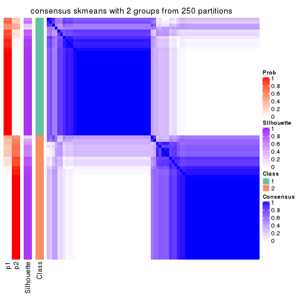
consensus_heatmap(res, k = 3)
consensus_heatmap(res, k = 4)
consensus_heatmap(res, k = 5)
consensus_heatmap(res, k = 6)
Heatmaps for the membership of samples in all partitions to see how consistent they are:
membership_heatmap(res, k = 2)
membership_heatmap(res, k = 3)
membership_heatmap(res, k = 4)
membership_heatmap(res, k = 5)
membership_heatmap(res, k = 6)
As soon as we have had the classes for columns, we can look for signatures which are significantly different between classes which can be candidate marks for certain classes. Following are the heatmaps for signatures.
Signature heatmaps where rows are scaled:
get_signatures(res, k = 2)
get_signatures(res, k = 3)
get_signatures(res, k = 4)
get_signatures(res, k = 5)
get_signatures(res, k = 6)
Signature heatmaps where rows are not scaled:
get_signatures(res, k = 2, scale_rows = FALSE)
get_signatures(res, k = 3, scale_rows = FALSE)
get_signatures(res, k = 4, scale_rows = FALSE)
get_signatures(res, k = 5, scale_rows = FALSE)
get_signatures(res, k = 6, scale_rows = FALSE)
Compare the overlap of signatures from different k:
compare_signatures(res)
get_signature() returns a data frame invisibly. TO get the list of signatures, the function
call should be assigned to a variable explicitly. In following code, if plot argument is set
to FALSE, no heatmap is plotted while only the differential analysis is performed.
# code only for demonstration
tb = get_signature(res, k = ..., plot = FALSE)
An example of the output of tb is:
#> which_row fdr mean_1 mean_2 scaled_mean_1 scaled_mean_2 km
#> 1 38 0.042760348 8.373488 9.131774 -0.5533452 0.5164555 1
#> 2 40 0.018707592 7.106213 8.469186 -0.6173731 0.5762149 1
#> 3 55 0.019134737 10.221463 11.207825 -0.6159697 0.5749050 1
#> 4 59 0.006059896 5.921854 7.869574 -0.6899429 0.6439467 1
#> 5 60 0.018055526 8.928898 10.211722 -0.6204761 0.5791110 1
#> 6 98 0.009384629 15.714769 14.887706 0.6635654 -0.6193277 2
...
The columns in tb are:
which_row: row indices corresponding to the input matrix.fdr: FDR for the differential test. mean_x: The mean value in group x.scaled_mean_x: The mean value in group x after rows are scaled.km: Row groups if k-means clustering is applied to rows.UMAP plot which shows how samples are separated.
dimension_reduction(res, k = 2, method = "UMAP")
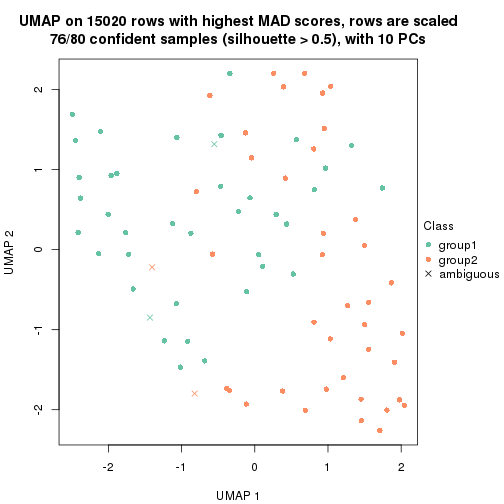
dimension_reduction(res, k = 3, method = "UMAP")
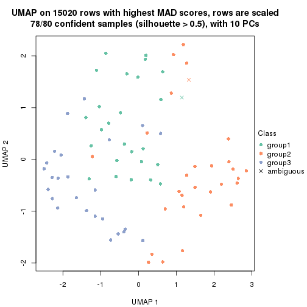
dimension_reduction(res, k = 4, method = "UMAP")
dimension_reduction(res, k = 5, method = "UMAP")
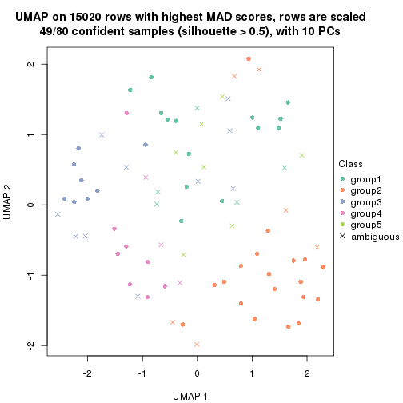
dimension_reduction(res, k = 6, method = "UMAP")
Following heatmap shows how subgroups are split when increasing k:
collect_classes(res)
If matrix rows can be associated to genes, consider to use functional_enrichment(res,
...) to perform function enrichment for the signature genes. See this vignette for more detailed explanations.
The object with results only for a single top-value method and a single partition method can be extracted as:
res = res_list["MAD", "pam"]
# you can also extract it by
# res = res_list["MAD:pam"]
A summary of res and all the functions that can be applied to it:
res
#> A 'ConsensusPartition' object with k = 2, 3, 4, 5, 6.
#> On a matrix with 15020 rows and 80 columns.
#> Top rows (1000, 2000, 3000, 4000, 5000) are extracted by 'MAD' method.
#> Subgroups are detected by 'pam' method.
#> Performed in total 1250 partitions by row resampling.
#> Best k for subgroups seems to be 3.
#>
#> Following methods can be applied to this 'ConsensusPartition' object:
#> [1] "cola_report" "collect_classes" "collect_plots"
#> [4] "collect_stats" "colnames" "compare_signatures"
#> [7] "consensus_heatmap" "dimension_reduction" "functional_enrichment"
#> [10] "get_anno_col" "get_anno" "get_classes"
#> [13] "get_consensus" "get_matrix" "get_membership"
#> [16] "get_param" "get_signatures" "get_stats"
#> [19] "is_best_k" "is_stable_k" "membership_heatmap"
#> [22] "ncol" "nrow" "plot_ecdf"
#> [25] "rownames" "select_partition_number" "show"
#> [28] "suggest_best_k" "test_to_known_factors"
collect_plots() function collects all the plots made from res for all k (number of partitions)
into one single page to provide an easy and fast comparison between different k.
collect_plots(res)

The plots are:
k and the heatmap of
predicted classes for each k.k.k.k.All the plots in panels can be made by individual functions and they are plotted later in this section.
select_partition_number() produces several plots showing different
statistics for choosing “optimized” k. There are following statistics:
k;k, the area increased is defined as \(A_k - A_{k-1}\).The detailed explanations of these statistics can be found in the cola vignette.
Generally speaking, lower PAC score, higher mean silhouette score or higher
concordance corresponds to better partition. Rand index and Jaccard index
measure how similar the current partition is compared to partition with k-1.
If they are too similar, we won't accept k is better than k-1.
select_partition_number(res)
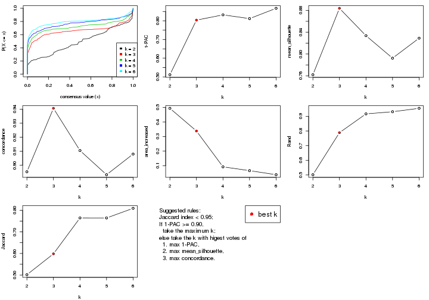
The numeric values for all these statistics can be obtained by get_stats().
get_stats(res)
#> k 1-PAC mean_silhouette concordance area_increased Rand Jaccard
#> 2 2 0.512 0.762 0.895 0.4939 0.502 0.502
#> 3 3 0.804 0.884 0.941 0.3381 0.789 0.598
#> 4 4 0.832 0.834 0.910 0.0922 0.917 0.765
#> 5 5 0.812 0.792 0.893 0.0660 0.931 0.764
#> 6 6 0.867 0.829 0.908 0.0382 0.955 0.809
suggest_best_k() suggests the best \(k\) based on these statistics. The rules are as follows:
suggest_best_k(res)
#> [1] 3
Following shows the table of the partitions (You need to click the show/hide
code output link to see it). The membership matrix (columns with name p*)
is inferred by
clue::cl_consensus()
function with the SE method. Basically the value in the membership matrix
represents the probability to belong to a certain group. The finall class
label for an item is determined with the group with highest probability it
belongs to.
In get_classes() function, the entropy is calculated from the membership
matrix and the silhouette score is calculated from the consensus matrix.
cbind(get_classes(res, k = 2), get_membership(res, k = 2))
#> class entropy silhouette p1 p2
#> SRR1851004 2 0.0000 0.9249 0.000 1.000
#> SRR1851003 2 0.0000 0.9249 0.000 1.000
#> SRR1851002 2 0.0000 0.9249 0.000 1.000
#> SRR1851000 1 0.8144 0.7059 0.748 0.252
#> SRR1851001 2 0.0000 0.9249 0.000 1.000
#> SRR1850998 2 0.0000 0.9249 0.000 1.000
#> SRR1850999 2 0.2423 0.8938 0.040 0.960
#> SRR1850997 2 0.0000 0.9249 0.000 1.000
#> SRR1850996 1 0.0000 0.8354 1.000 0.000
#> SRR1851016 2 0.9988 -0.1776 0.480 0.520
#> SRR1851010 2 0.0000 0.9249 0.000 1.000
#> SRR1851014 1 0.8016 0.7093 0.756 0.244
#> SRR1851015 2 0.0000 0.9249 0.000 1.000
#> SRR1851013 1 0.8081 0.7057 0.752 0.248
#> SRR1851012 1 0.4690 0.7907 0.900 0.100
#> SRR1851011 1 0.5519 0.7819 0.872 0.128
#> SRR1851009 2 0.0000 0.9249 0.000 1.000
#> SRR1851008 1 0.0000 0.8354 1.000 0.000
#> SRR1851007 1 0.9286 0.5889 0.656 0.344
#> SRR1851006 2 0.5294 0.7971 0.120 0.880
#> SRR1851005 1 0.3274 0.8120 0.940 0.060
#> SRR1850995 1 0.0672 0.8348 0.992 0.008
#> SRR1850994 1 0.8661 0.6584 0.712 0.288
#> SRR1850993 1 0.0000 0.8354 1.000 0.000
#> SRR1850992 2 0.0000 0.9249 0.000 1.000
#> SRR1850991 1 0.9993 0.2646 0.516 0.484
#> SRR1850990 1 0.4298 0.8068 0.912 0.088
#> SRR1850989 1 0.9993 0.2569 0.516 0.484
#> SRR1850987 1 0.9754 0.4722 0.592 0.408
#> SRR1850986 1 0.7602 0.7281 0.780 0.220
#> SRR1850985 1 0.0000 0.8354 1.000 0.000
#> SRR1850983 2 0.0000 0.9249 0.000 1.000
#> SRR1850984 2 0.0000 0.9249 0.000 1.000
#> SRR1850981 1 0.9661 0.5025 0.608 0.392
#> SRR1850980 1 0.6973 0.7495 0.812 0.188
#> SRR1850979 1 0.7950 0.7130 0.760 0.240
#> SRR1850978 1 0.9129 0.6031 0.672 0.328
#> SRR1850977 1 0.0000 0.8354 1.000 0.000
#> SRR1850976 1 0.0000 0.8354 1.000 0.000
#> SRR1850975 1 0.1184 0.8330 0.984 0.016
#> SRR1850974 2 0.0000 0.9249 0.000 1.000
#> SRR1850973 2 0.0000 0.9249 0.000 1.000
#> SRR1850972 1 0.1184 0.8327 0.984 0.016
#> SRR1850970 1 0.9983 0.0627 0.524 0.476
#> SRR1850971 1 0.0376 0.8350 0.996 0.004
#> SRR1850968 1 0.0000 0.8354 1.000 0.000
#> SRR1850969 2 0.0000 0.9249 0.000 1.000
#> SRR1850967 1 0.9608 0.4826 0.616 0.384
#> SRR1850966 2 0.0376 0.9223 0.004 0.996
#> SRR1850965 2 0.0000 0.9249 0.000 1.000
#> SRR1850964 2 0.9983 -0.1663 0.476 0.524
#> SRR1850963 2 0.1843 0.9026 0.028 0.972
#> SRR1850962 1 0.0000 0.8354 1.000 0.000
#> SRR1850961 1 0.0000 0.8354 1.000 0.000
#> SRR1850959 1 0.8443 0.6861 0.728 0.272
#> SRR1850960 2 0.1633 0.9076 0.024 0.976
#> SRR1850958 2 0.1633 0.9080 0.024 0.976
#> SRR1850988 2 0.9491 0.2170 0.368 0.632
#> SRR1850957 2 0.0000 0.9249 0.000 1.000
#> SRR1850956 1 0.8081 0.7033 0.752 0.248
#> SRR1850955 1 0.0000 0.8354 1.000 0.000
#> SRR1850953 2 0.7815 0.6267 0.232 0.768
#> SRR1850954 1 0.2236 0.8279 0.964 0.036
#> SRR1850952 1 0.0000 0.8354 1.000 0.000
#> SRR1850982 2 0.0000 0.9249 0.000 1.000
#> SRR1850951 1 0.0000 0.8354 1.000 0.000
#> SRR1850950 2 0.0000 0.9249 0.000 1.000
#> SRR1850949 2 0.0000 0.9249 0.000 1.000
#> SRR1850948 1 0.0000 0.8354 1.000 0.000
#> SRR1850947 1 0.0000 0.8354 1.000 0.000
#> SRR1850946 1 0.9754 0.2692 0.592 0.408
#> SRR1850945 2 0.0000 0.9249 0.000 1.000
#> SRR1850944 2 0.0376 0.9224 0.004 0.996
#> SRR1850943 2 0.0000 0.9249 0.000 1.000
#> SRR1850942 1 0.0000 0.8354 1.000 0.000
#> SRR1850940 1 0.0000 0.8354 1.000 0.000
#> SRR1850941 1 0.0000 0.8354 1.000 0.000
#> SRR1850938 2 0.7299 0.6871 0.204 0.796
#> SRR1850939 1 0.0000 0.8354 1.000 0.000
#> SRR1850937 2 0.0000 0.9249 0.000 1.000
cbind(get_classes(res, k = 3), get_membership(res, k = 3))
#> class entropy silhouette p1 p2 p3
#> SRR1851004 2 0.0000 0.9797 0.000 1.000 0.000
#> SRR1851003 2 0.0000 0.9797 0.000 1.000 0.000
#> SRR1851002 2 0.0000 0.9797 0.000 1.000 0.000
#> SRR1851000 1 0.4469 0.8282 0.852 0.120 0.028
#> SRR1851001 2 0.0000 0.9797 0.000 1.000 0.000
#> SRR1850998 2 0.0000 0.9797 0.000 1.000 0.000
#> SRR1850999 2 0.2173 0.9354 0.008 0.944 0.048
#> SRR1850997 2 0.0000 0.9797 0.000 1.000 0.000
#> SRR1850996 3 0.0000 0.9368 0.000 0.000 1.000
#> SRR1851016 1 0.1529 0.8814 0.960 0.040 0.000
#> SRR1851010 2 0.0000 0.9797 0.000 1.000 0.000
#> SRR1851014 1 0.2165 0.8743 0.936 0.000 0.064
#> SRR1851015 2 0.0000 0.9797 0.000 1.000 0.000
#> SRR1851013 1 0.1529 0.8825 0.960 0.000 0.040
#> SRR1851012 3 0.1163 0.9190 0.000 0.028 0.972
#> SRR1851011 3 0.8511 -0.0707 0.428 0.092 0.480
#> SRR1851009 2 0.0000 0.9797 0.000 1.000 0.000
#> SRR1851008 3 0.1163 0.9260 0.028 0.000 0.972
#> SRR1851007 1 0.5634 0.7995 0.800 0.056 0.144
#> SRR1851006 2 0.3879 0.8231 0.000 0.848 0.152
#> SRR1851005 3 0.0475 0.9351 0.004 0.004 0.992
#> SRR1850995 1 0.5591 0.6507 0.696 0.000 0.304
#> SRR1850994 1 0.0000 0.8857 1.000 0.000 0.000
#> SRR1850993 1 0.0000 0.8857 1.000 0.000 0.000
#> SRR1850992 2 0.0000 0.9797 0.000 1.000 0.000
#> SRR1850991 1 0.3686 0.8160 0.860 0.140 0.000
#> SRR1850990 1 0.0424 0.8867 0.992 0.008 0.000
#> SRR1850989 1 0.1289 0.8830 0.968 0.032 0.000
#> SRR1850987 1 0.2796 0.8561 0.908 0.092 0.000
#> SRR1850986 1 0.0000 0.8857 1.000 0.000 0.000
#> SRR1850985 1 0.2165 0.8674 0.936 0.000 0.064
#> SRR1850983 2 0.0000 0.9797 0.000 1.000 0.000
#> SRR1850984 2 0.0000 0.9797 0.000 1.000 0.000
#> SRR1850981 1 0.1289 0.8836 0.968 0.032 0.000
#> SRR1850980 1 0.0747 0.8864 0.984 0.000 0.016
#> SRR1850979 1 0.1289 0.8839 0.968 0.000 0.032
#> SRR1850978 1 0.0000 0.8857 1.000 0.000 0.000
#> SRR1850977 1 0.0000 0.8857 1.000 0.000 0.000
#> SRR1850976 3 0.2165 0.8982 0.064 0.000 0.936
#> SRR1850975 1 0.5058 0.7130 0.756 0.000 0.244
#> SRR1850974 2 0.0000 0.9797 0.000 1.000 0.000
#> SRR1850973 2 0.0000 0.9797 0.000 1.000 0.000
#> SRR1850972 1 0.0000 0.8857 1.000 0.000 0.000
#> SRR1850970 3 0.0000 0.9368 0.000 0.000 1.000
#> SRR1850971 1 0.1163 0.8849 0.972 0.000 0.028
#> SRR1850968 3 0.1289 0.9230 0.032 0.000 0.968
#> SRR1850969 2 0.0000 0.9797 0.000 1.000 0.000
#> SRR1850967 1 0.9797 0.2143 0.424 0.324 0.252
#> SRR1850966 2 0.0000 0.9797 0.000 1.000 0.000
#> SRR1850965 2 0.0000 0.9797 0.000 1.000 0.000
#> SRR1850964 1 0.0892 0.8866 0.980 0.020 0.000
#> SRR1850963 2 0.1411 0.9502 0.036 0.964 0.000
#> SRR1850962 3 0.0237 0.9360 0.004 0.000 0.996
#> SRR1850961 3 0.0000 0.9368 0.000 0.000 1.000
#> SRR1850959 1 0.4196 0.8420 0.864 0.024 0.112
#> SRR1850960 2 0.0747 0.9686 0.016 0.984 0.000
#> SRR1850958 2 0.1315 0.9615 0.008 0.972 0.020
#> SRR1850988 1 0.4796 0.7398 0.780 0.220 0.000
#> SRR1850957 2 0.0000 0.9797 0.000 1.000 0.000
#> SRR1850956 1 0.3619 0.8252 0.864 0.000 0.136
#> SRR1850955 1 0.3412 0.8232 0.876 0.000 0.124
#> SRR1850953 2 0.4289 0.8602 0.040 0.868 0.092
#> SRR1850954 3 0.4002 0.8049 0.160 0.000 0.840
#> SRR1850952 1 0.6026 0.3865 0.624 0.000 0.376
#> SRR1850982 2 0.0000 0.9797 0.000 1.000 0.000
#> SRR1850951 3 0.3752 0.8214 0.144 0.000 0.856
#> SRR1850950 2 0.0000 0.9797 0.000 1.000 0.000
#> SRR1850949 2 0.0000 0.9797 0.000 1.000 0.000
#> SRR1850948 3 0.1289 0.9226 0.032 0.000 0.968
#> SRR1850947 3 0.1289 0.9226 0.032 0.000 0.968
#> SRR1850946 3 0.0000 0.9368 0.000 0.000 1.000
#> SRR1850945 2 0.0000 0.9797 0.000 1.000 0.000
#> SRR1850944 2 0.0592 0.9714 0.000 0.988 0.012
#> SRR1850943 2 0.0000 0.9797 0.000 1.000 0.000
#> SRR1850942 3 0.0000 0.9368 0.000 0.000 1.000
#> SRR1850940 3 0.0000 0.9368 0.000 0.000 1.000
#> SRR1850941 3 0.0000 0.9368 0.000 0.000 1.000
#> SRR1850938 2 0.4645 0.7859 0.008 0.816 0.176
#> SRR1850939 3 0.0592 0.9334 0.012 0.000 0.988
#> SRR1850937 2 0.0000 0.9797 0.000 1.000 0.000
cbind(get_classes(res, k = 4), get_membership(res, k = 4))
#> class entropy silhouette p1 p2 p3 p4
#> SRR1851004 2 0.0000 0.964 0.000 1.000 0.000 0.000
#> SRR1851003 2 0.0000 0.964 0.000 1.000 0.000 0.000
#> SRR1851002 2 0.0927 0.951 0.000 0.976 0.008 0.016
#> SRR1851000 4 0.6817 0.185 0.408 0.100 0.000 0.492
#> SRR1851001 2 0.0000 0.964 0.000 1.000 0.000 0.000
#> SRR1850998 2 0.0000 0.964 0.000 1.000 0.000 0.000
#> SRR1850999 2 0.1824 0.913 0.004 0.936 0.000 0.060
#> SRR1850997 2 0.0000 0.964 0.000 1.000 0.000 0.000
#> SRR1850996 4 0.4804 0.361 0.000 0.000 0.384 0.616
#> SRR1851016 1 0.0188 0.870 0.996 0.004 0.000 0.000
#> SRR1851010 2 0.0000 0.964 0.000 1.000 0.000 0.000
#> SRR1851014 1 0.2149 0.840 0.912 0.000 0.000 0.088
#> SRR1851015 2 0.0000 0.964 0.000 1.000 0.000 0.000
#> SRR1851013 1 0.1389 0.860 0.952 0.000 0.000 0.048
#> SRR1851012 4 0.1661 0.840 0.004 0.000 0.052 0.944
#> SRR1851011 4 0.1953 0.834 0.044 0.004 0.012 0.940
#> SRR1851009 2 0.0000 0.964 0.000 1.000 0.000 0.000
#> SRR1851008 4 0.1661 0.840 0.004 0.000 0.052 0.944
#> SRR1851007 1 0.4925 0.319 0.572 0.000 0.000 0.428
#> SRR1851006 4 0.2081 0.789 0.000 0.084 0.000 0.916
#> SRR1851005 4 0.2149 0.829 0.000 0.000 0.088 0.912
#> SRR1850995 4 0.2589 0.828 0.044 0.000 0.044 0.912
#> SRR1850994 1 0.3216 0.847 0.880 0.000 0.076 0.044
#> SRR1850993 1 0.1824 0.862 0.936 0.000 0.060 0.004
#> SRR1850992 2 0.0000 0.964 0.000 1.000 0.000 0.000
#> SRR1850991 1 0.4688 0.763 0.800 0.136 0.008 0.056
#> SRR1850990 1 0.0469 0.868 0.988 0.000 0.000 0.012
#> SRR1850989 1 0.1247 0.870 0.968 0.004 0.016 0.012
#> SRR1850987 1 0.2216 0.829 0.908 0.092 0.000 0.000
#> SRR1850986 1 0.2840 0.856 0.900 0.000 0.056 0.044
#> SRR1850985 1 0.3497 0.836 0.860 0.000 0.104 0.036
#> SRR1850983 2 0.0000 0.964 0.000 1.000 0.000 0.000
#> SRR1850984 2 0.0000 0.964 0.000 1.000 0.000 0.000
#> SRR1850981 1 0.2585 0.862 0.916 0.032 0.048 0.004
#> SRR1850980 1 0.0000 0.869 1.000 0.000 0.000 0.000
#> SRR1850979 1 0.0188 0.870 0.996 0.000 0.000 0.004
#> SRR1850978 1 0.0188 0.870 0.996 0.000 0.004 0.000
#> SRR1850977 1 0.0188 0.870 0.996 0.000 0.004 0.000
#> SRR1850976 4 0.4872 0.631 0.028 0.000 0.244 0.728
#> SRR1850975 4 0.2976 0.764 0.120 0.000 0.008 0.872
#> SRR1850974 2 0.0000 0.964 0.000 1.000 0.000 0.000
#> SRR1850973 2 0.0000 0.964 0.000 1.000 0.000 0.000
#> SRR1850972 1 0.0188 0.870 0.996 0.000 0.004 0.000
#> SRR1850970 4 0.2281 0.824 0.000 0.000 0.096 0.904
#> SRR1850971 1 0.0707 0.868 0.980 0.000 0.000 0.020
#> SRR1850968 4 0.1807 0.840 0.008 0.000 0.052 0.940
#> SRR1850969 2 0.0000 0.964 0.000 1.000 0.000 0.000
#> SRR1850967 4 0.1917 0.834 0.036 0.012 0.008 0.944
#> SRR1850966 2 0.2002 0.922 0.000 0.936 0.020 0.044
#> SRR1850965 2 0.0188 0.962 0.000 0.996 0.000 0.004
#> SRR1850964 1 0.2505 0.863 0.920 0.036 0.040 0.004
#> SRR1850963 2 0.1211 0.935 0.040 0.960 0.000 0.000
#> SRR1850962 3 0.1940 0.909 0.000 0.000 0.924 0.076
#> SRR1850961 3 0.2408 0.893 0.000 0.000 0.896 0.104
#> SRR1850959 1 0.4907 0.305 0.580 0.000 0.000 0.420
#> SRR1850960 2 0.0817 0.950 0.024 0.976 0.000 0.000
#> SRR1850958 2 0.1305 0.939 0.004 0.960 0.000 0.036
#> SRR1850988 1 0.4018 0.689 0.772 0.224 0.000 0.004
#> SRR1850957 2 0.0000 0.964 0.000 1.000 0.000 0.000
#> SRR1850956 1 0.4957 0.750 0.748 0.000 0.204 0.048
#> SRR1850955 1 0.4507 0.761 0.788 0.000 0.168 0.044
#> SRR1850953 2 0.4980 0.711 0.004 0.756 0.196 0.044
#> SRR1850954 3 0.4633 0.645 0.172 0.000 0.780 0.048
#> SRR1850952 1 0.6082 0.198 0.480 0.000 0.476 0.044
#> SRR1850982 2 0.0000 0.964 0.000 1.000 0.000 0.000
#> SRR1850951 3 0.0336 0.879 0.008 0.000 0.992 0.000
#> SRR1850950 2 0.0000 0.964 0.000 1.000 0.000 0.000
#> SRR1850949 2 0.0000 0.964 0.000 1.000 0.000 0.000
#> SRR1850948 3 0.0817 0.897 0.000 0.000 0.976 0.024
#> SRR1850947 3 0.0707 0.895 0.000 0.000 0.980 0.020
#> SRR1850946 3 0.3837 0.740 0.000 0.000 0.776 0.224
#> SRR1850945 2 0.2002 0.922 0.000 0.936 0.020 0.044
#> SRR1850944 2 0.0657 0.956 0.004 0.984 0.012 0.000
#> SRR1850943 2 0.0000 0.964 0.000 1.000 0.000 0.000
#> SRR1850942 3 0.1940 0.908 0.000 0.000 0.924 0.076
#> SRR1850940 3 0.2345 0.897 0.000 0.000 0.900 0.100
#> SRR1850941 3 0.2011 0.907 0.000 0.000 0.920 0.080
#> SRR1850938 2 0.6912 0.106 0.008 0.504 0.084 0.404
#> SRR1850939 3 0.1474 0.907 0.000 0.000 0.948 0.052
#> SRR1850937 2 0.0000 0.964 0.000 1.000 0.000 0.000
cbind(get_classes(res, k = 5), get_membership(res, k = 5))
#> class entropy silhouette p1 p2 p3 p4 p5
#> SRR1851004 2 0.0000 0.954 0.000 1.000 0.000 0.000 0.000
#> SRR1851003 2 0.0000 0.954 0.000 1.000 0.000 0.000 0.000
#> SRR1851002 2 0.2230 0.830 0.000 0.884 0.000 0.000 0.116
#> SRR1851000 4 0.6474 0.208 0.380 0.084 0.000 0.500 0.036
#> SRR1851001 2 0.0162 0.953 0.000 0.996 0.000 0.000 0.004
#> SRR1850998 2 0.0000 0.954 0.000 1.000 0.000 0.000 0.000
#> SRR1850999 2 0.1809 0.886 0.012 0.928 0.000 0.060 0.000
#> SRR1850997 2 0.0000 0.954 0.000 1.000 0.000 0.000 0.000
#> SRR1850996 4 0.3857 0.533 0.000 0.000 0.312 0.688 0.000
#> SRR1851016 1 0.0898 0.830 0.972 0.008 0.000 0.000 0.020
#> SRR1851010 2 0.0000 0.954 0.000 1.000 0.000 0.000 0.000
#> SRR1851014 1 0.1792 0.807 0.916 0.000 0.000 0.084 0.000
#> SRR1851015 2 0.0000 0.954 0.000 1.000 0.000 0.000 0.000
#> SRR1851013 1 0.1121 0.825 0.956 0.000 0.000 0.044 0.000
#> SRR1851012 4 0.0162 0.860 0.004 0.000 0.000 0.996 0.000
#> SRR1851011 4 0.0324 0.860 0.004 0.004 0.000 0.992 0.000
#> SRR1851009 2 0.0000 0.954 0.000 1.000 0.000 0.000 0.000
#> SRR1851008 4 0.0162 0.860 0.004 0.000 0.000 0.996 0.000
#> SRR1851007 1 0.4278 0.244 0.548 0.000 0.000 0.452 0.000
#> SRR1851006 4 0.0963 0.841 0.000 0.036 0.000 0.964 0.000
#> SRR1851005 4 0.0963 0.855 0.000 0.000 0.036 0.964 0.000
#> SRR1850995 4 0.1518 0.849 0.004 0.000 0.048 0.944 0.004
#> SRR1850994 5 0.2773 0.696 0.164 0.000 0.000 0.000 0.836
#> SRR1850993 1 0.2806 0.782 0.844 0.000 0.000 0.004 0.152
#> SRR1850992 2 0.0000 0.954 0.000 1.000 0.000 0.000 0.000
#> SRR1850991 5 0.4709 0.537 0.224 0.056 0.000 0.004 0.716
#> SRR1850990 1 0.3010 0.749 0.824 0.000 0.000 0.004 0.172
#> SRR1850989 1 0.3550 0.718 0.760 0.000 0.000 0.004 0.236
#> SRR1850987 1 0.1851 0.781 0.912 0.088 0.000 0.000 0.000
#> SRR1850986 1 0.4437 0.427 0.532 0.000 0.000 0.004 0.464
#> SRR1850985 1 0.4748 0.683 0.680 0.000 0.020 0.016 0.284
#> SRR1850983 2 0.0000 0.954 0.000 1.000 0.000 0.000 0.000
#> SRR1850984 2 0.0000 0.954 0.000 1.000 0.000 0.000 0.000
#> SRR1850981 1 0.2358 0.796 0.888 0.008 0.000 0.000 0.104
#> SRR1850980 1 0.0000 0.831 1.000 0.000 0.000 0.000 0.000
#> SRR1850979 1 0.0162 0.831 0.996 0.000 0.000 0.004 0.000
#> SRR1850978 1 0.0162 0.831 0.996 0.000 0.000 0.000 0.004
#> SRR1850977 1 0.0000 0.831 1.000 0.000 0.000 0.000 0.000
#> SRR1850976 4 0.5730 0.655 0.040 0.000 0.136 0.692 0.132
#> SRR1850975 4 0.5205 0.621 0.104 0.000 0.000 0.672 0.224
#> SRR1850974 2 0.0000 0.954 0.000 1.000 0.000 0.000 0.000
#> SRR1850973 2 0.0162 0.953 0.000 0.996 0.000 0.000 0.004
#> SRR1850972 1 0.0404 0.831 0.988 0.000 0.000 0.000 0.012
#> SRR1850970 4 0.1282 0.852 0.000 0.000 0.044 0.952 0.004
#> SRR1850971 1 0.0404 0.832 0.988 0.000 0.000 0.012 0.000
#> SRR1850968 4 0.0290 0.860 0.008 0.000 0.000 0.992 0.000
#> SRR1850969 2 0.0162 0.953 0.000 0.996 0.000 0.000 0.004
#> SRR1850967 4 0.0162 0.860 0.004 0.000 0.000 0.996 0.000
#> SRR1850966 5 0.4171 0.429 0.000 0.396 0.000 0.000 0.604
#> SRR1850965 2 0.0404 0.948 0.000 0.988 0.000 0.000 0.012
#> SRR1850964 1 0.2208 0.813 0.908 0.020 0.000 0.000 0.072
#> SRR1850963 2 0.1205 0.917 0.040 0.956 0.000 0.004 0.000
#> SRR1850962 3 0.0162 0.926 0.000 0.000 0.996 0.004 0.000
#> SRR1850961 3 0.1121 0.904 0.000 0.000 0.956 0.044 0.000
#> SRR1850959 1 0.4331 0.365 0.596 0.000 0.000 0.400 0.004
#> SRR1850960 2 0.0955 0.930 0.028 0.968 0.000 0.000 0.004
#> SRR1850958 2 0.2928 0.823 0.004 0.872 0.000 0.032 0.092
#> SRR1850988 1 0.3461 0.597 0.772 0.224 0.000 0.000 0.004
#> SRR1850957 2 0.0162 0.953 0.000 0.996 0.000 0.000 0.004
#> SRR1850956 5 0.5087 0.669 0.152 0.000 0.148 0.000 0.700
#> SRR1850955 5 0.5569 0.643 0.228 0.000 0.136 0.000 0.636
#> SRR1850953 5 0.3039 0.685 0.000 0.152 0.012 0.000 0.836
#> SRR1850954 5 0.3339 0.663 0.040 0.000 0.124 0.000 0.836
#> SRR1850952 5 0.3309 0.715 0.128 0.000 0.036 0.000 0.836
#> SRR1850982 2 0.0000 0.954 0.000 1.000 0.000 0.000 0.000
#> SRR1850951 3 0.2329 0.813 0.000 0.000 0.876 0.000 0.124
#> SRR1850950 2 0.0000 0.954 0.000 1.000 0.000 0.000 0.000
#> SRR1850949 2 0.0000 0.954 0.000 1.000 0.000 0.000 0.000
#> SRR1850948 3 0.0000 0.928 0.000 0.000 1.000 0.000 0.000
#> SRR1850947 3 0.0000 0.928 0.000 0.000 1.000 0.000 0.000
#> SRR1850946 3 0.3837 0.499 0.000 0.000 0.692 0.308 0.000
#> SRR1850945 5 0.3966 0.549 0.000 0.336 0.000 0.000 0.664
#> SRR1850944 2 0.0566 0.944 0.004 0.984 0.012 0.000 0.000
#> SRR1850943 2 0.0000 0.954 0.000 1.000 0.000 0.000 0.000
#> SRR1850942 3 0.0000 0.928 0.000 0.000 1.000 0.000 0.000
#> SRR1850940 3 0.1270 0.899 0.000 0.000 0.948 0.052 0.000
#> SRR1850941 3 0.0000 0.928 0.000 0.000 1.000 0.000 0.000
#> SRR1850938 2 0.7767 -0.342 0.008 0.344 0.036 0.308 0.304
#> SRR1850939 3 0.0000 0.928 0.000 0.000 1.000 0.000 0.000
#> SRR1850937 2 0.0000 0.954 0.000 1.000 0.000 0.000 0.000
cbind(get_classes(res, k = 6), get_membership(res, k = 6))
#> class entropy silhouette p1 p2 p3 p4 p5 p6
#> SRR1851004 2 0.0547 0.955 0.020 0.980 0.000 0.000 0.000 0.000
#> SRR1851003 2 0.0146 0.961 0.004 0.996 0.000 0.000 0.000 0.000
#> SRR1851002 2 0.2912 0.827 0.040 0.844 0.000 0.000 0.116 0.000
#> SRR1851000 4 0.6730 0.201 0.128 0.092 0.000 0.456 0.000 0.324
#> SRR1851001 2 0.1082 0.945 0.040 0.956 0.000 0.000 0.004 0.000
#> SRR1850998 2 0.0000 0.962 0.000 1.000 0.000 0.000 0.000 0.000
#> SRR1850999 2 0.1707 0.911 0.012 0.928 0.000 0.056 0.000 0.004
#> SRR1850997 2 0.0000 0.962 0.000 1.000 0.000 0.000 0.000 0.000
#> SRR1850996 4 0.3428 0.548 0.000 0.000 0.304 0.696 0.000 0.000
#> SRR1851016 6 0.1387 0.837 0.068 0.000 0.000 0.000 0.000 0.932
#> SRR1851010 2 0.0000 0.962 0.000 1.000 0.000 0.000 0.000 0.000
#> SRR1851014 6 0.1807 0.848 0.020 0.000 0.000 0.060 0.000 0.920
#> SRR1851015 2 0.0000 0.962 0.000 1.000 0.000 0.000 0.000 0.000
#> SRR1851013 6 0.1257 0.859 0.020 0.000 0.000 0.028 0.000 0.952
#> SRR1851012 4 0.0000 0.874 0.000 0.000 0.000 1.000 0.000 0.000
#> SRR1851011 4 0.0146 0.874 0.000 0.004 0.000 0.996 0.000 0.000
#> SRR1851009 2 0.0000 0.962 0.000 1.000 0.000 0.000 0.000 0.000
#> SRR1851008 4 0.0363 0.873 0.012 0.000 0.000 0.988 0.000 0.000
#> SRR1851007 6 0.4289 0.305 0.020 0.000 0.000 0.424 0.000 0.556
#> SRR1851006 4 0.1049 0.860 0.008 0.032 0.000 0.960 0.000 0.000
#> SRR1851005 4 0.1007 0.867 0.000 0.000 0.044 0.956 0.000 0.000
#> SRR1850995 4 0.1707 0.858 0.012 0.000 0.056 0.928 0.000 0.004
#> SRR1850994 5 0.0146 0.751 0.004 0.000 0.000 0.000 0.996 0.000
#> SRR1850993 6 0.3424 0.765 0.092 0.000 0.000 0.000 0.096 0.812
#> SRR1850992 2 0.0000 0.962 0.000 1.000 0.000 0.000 0.000 0.000
#> SRR1850991 1 0.4282 0.803 0.776 0.044 0.000 0.000 0.096 0.084
#> SRR1850990 1 0.2278 0.854 0.868 0.000 0.000 0.000 0.004 0.128
#> SRR1850989 1 0.2658 0.861 0.864 0.000 0.000 0.000 0.036 0.100
#> SRR1850987 6 0.2019 0.810 0.012 0.088 0.000 0.000 0.000 0.900
#> SRR1850986 1 0.2786 0.850 0.860 0.000 0.000 0.000 0.084 0.056
#> SRR1850985 1 0.2866 0.851 0.860 0.000 0.000 0.004 0.084 0.052
#> SRR1850983 2 0.0000 0.962 0.000 1.000 0.000 0.000 0.000 0.000
#> SRR1850984 2 0.0000 0.962 0.000 1.000 0.000 0.000 0.000 0.000
#> SRR1850981 6 0.2595 0.826 0.020 0.016 0.000 0.000 0.084 0.880
#> SRR1850980 6 0.0632 0.858 0.024 0.000 0.000 0.000 0.000 0.976
#> SRR1850979 6 0.0858 0.860 0.028 0.000 0.000 0.004 0.000 0.968
#> SRR1850978 6 0.0603 0.859 0.016 0.000 0.000 0.000 0.004 0.980
#> SRR1850977 6 0.0458 0.860 0.016 0.000 0.000 0.000 0.000 0.984
#> SRR1850976 1 0.3197 0.774 0.804 0.000 0.008 0.176 0.000 0.012
#> SRR1850975 1 0.2847 0.825 0.852 0.000 0.000 0.120 0.012 0.016
#> SRR1850974 2 0.0000 0.962 0.000 1.000 0.000 0.000 0.000 0.000
#> SRR1850973 2 0.1010 0.946 0.036 0.960 0.000 0.000 0.004 0.000
#> SRR1850972 6 0.0508 0.860 0.012 0.000 0.000 0.000 0.004 0.984
#> SRR1850970 4 0.1492 0.863 0.036 0.000 0.024 0.940 0.000 0.000
#> SRR1850971 6 0.1334 0.857 0.032 0.000 0.000 0.020 0.000 0.948
#> SRR1850968 4 0.1265 0.860 0.044 0.000 0.000 0.948 0.000 0.008
#> SRR1850969 2 0.0865 0.947 0.036 0.964 0.000 0.000 0.000 0.000
#> SRR1850967 4 0.0790 0.867 0.032 0.000 0.000 0.968 0.000 0.000
#> SRR1850966 5 0.4191 0.576 0.056 0.240 0.000 0.000 0.704 0.000
#> SRR1850965 2 0.1563 0.932 0.056 0.932 0.000 0.000 0.012 0.000
#> SRR1850964 6 0.1820 0.856 0.012 0.016 0.000 0.000 0.044 0.928
#> SRR1850963 2 0.1608 0.932 0.016 0.940 0.000 0.004 0.004 0.036
#> SRR1850962 3 0.0458 0.927 0.016 0.000 0.984 0.000 0.000 0.000
#> SRR1850961 3 0.1245 0.911 0.016 0.000 0.952 0.032 0.000 0.000
#> SRR1850959 6 0.4894 0.369 0.068 0.000 0.000 0.376 0.000 0.556
#> SRR1850960 2 0.1802 0.921 0.072 0.916 0.000 0.000 0.000 0.012
#> SRR1850958 2 0.4054 0.570 0.284 0.688 0.000 0.024 0.000 0.004
#> SRR1850988 6 0.3570 0.632 0.016 0.228 0.000 0.000 0.004 0.752
#> SRR1850957 2 0.1075 0.945 0.048 0.952 0.000 0.000 0.000 0.000
#> SRR1850956 5 0.2664 0.695 0.016 0.000 0.136 0.000 0.848 0.000
#> SRR1850955 5 0.4339 0.623 0.004 0.000 0.120 0.000 0.736 0.140
#> SRR1850953 5 0.0000 0.752 0.000 0.000 0.000 0.000 1.000 0.000
#> SRR1850954 5 0.0000 0.752 0.000 0.000 0.000 0.000 1.000 0.000
#> SRR1850952 5 0.0146 0.751 0.004 0.000 0.000 0.000 0.996 0.000
#> SRR1850982 2 0.0291 0.960 0.004 0.992 0.000 0.000 0.004 0.000
#> SRR1850951 3 0.1958 0.845 0.004 0.000 0.896 0.000 0.100 0.000
#> SRR1850950 2 0.0146 0.960 0.000 0.996 0.000 0.000 0.004 0.000
#> SRR1850949 2 0.0000 0.962 0.000 1.000 0.000 0.000 0.000 0.000
#> SRR1850948 3 0.0000 0.931 0.000 0.000 1.000 0.000 0.000 0.000
#> SRR1850947 3 0.0000 0.931 0.000 0.000 1.000 0.000 0.000 0.000
#> SRR1850946 3 0.3707 0.496 0.008 0.000 0.680 0.312 0.000 0.000
#> SRR1850945 5 0.3417 0.665 0.044 0.160 0.000 0.000 0.796 0.000
#> SRR1850944 2 0.0508 0.956 0.000 0.984 0.012 0.000 0.000 0.004
#> SRR1850943 2 0.0000 0.962 0.000 1.000 0.000 0.000 0.000 0.000
#> SRR1850942 3 0.0000 0.931 0.000 0.000 1.000 0.000 0.000 0.000
#> SRR1850940 3 0.1141 0.903 0.000 0.000 0.948 0.052 0.000 0.000
#> SRR1850941 3 0.0000 0.931 0.000 0.000 1.000 0.000 0.000 0.000
#> SRR1850938 5 0.7069 0.190 0.016 0.320 0.032 0.288 0.344 0.000
#> SRR1850939 3 0.0000 0.931 0.000 0.000 1.000 0.000 0.000 0.000
#> SRR1850937 2 0.0000 0.962 0.000 1.000 0.000 0.000 0.000 0.000
Heatmaps for the consensus matrix. It visualizes the probability of two samples to be in a same group.
consensus_heatmap(res, k = 2)
consensus_heatmap(res, k = 3)
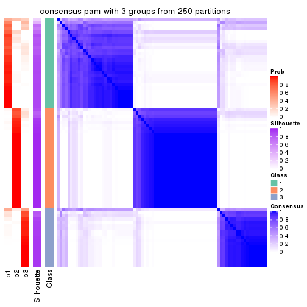
consensus_heatmap(res, k = 4)
consensus_heatmap(res, k = 5)
consensus_heatmap(res, k = 6)
Heatmaps for the membership of samples in all partitions to see how consistent they are:
membership_heatmap(res, k = 2)
membership_heatmap(res, k = 3)

membership_heatmap(res, k = 4)
membership_heatmap(res, k = 5)
membership_heatmap(res, k = 6)
As soon as we have had the classes for columns, we can look for signatures which are significantly different between classes which can be candidate marks for certain classes. Following are the heatmaps for signatures.
Signature heatmaps where rows are scaled:
get_signatures(res, k = 2)

get_signatures(res, k = 3)
get_signatures(res, k = 4)
get_signatures(res, k = 5)
get_signatures(res, k = 6)
Signature heatmaps where rows are not scaled:
get_signatures(res, k = 2, scale_rows = FALSE)
get_signatures(res, k = 3, scale_rows = FALSE)
get_signatures(res, k = 4, scale_rows = FALSE)
get_signatures(res, k = 5, scale_rows = FALSE)
get_signatures(res, k = 6, scale_rows = FALSE)
Compare the overlap of signatures from different k:
compare_signatures(res)
get_signature() returns a data frame invisibly. TO get the list of signatures, the function
call should be assigned to a variable explicitly. In following code, if plot argument is set
to FALSE, no heatmap is plotted while only the differential analysis is performed.
# code only for demonstration
tb = get_signature(res, k = ..., plot = FALSE)
An example of the output of tb is:
#> which_row fdr mean_1 mean_2 scaled_mean_1 scaled_mean_2 km
#> 1 38 0.042760348 8.373488 9.131774 -0.5533452 0.5164555 1
#> 2 40 0.018707592 7.106213 8.469186 -0.6173731 0.5762149 1
#> 3 55 0.019134737 10.221463 11.207825 -0.6159697 0.5749050 1
#> 4 59 0.006059896 5.921854 7.869574 -0.6899429 0.6439467 1
#> 5 60 0.018055526 8.928898 10.211722 -0.6204761 0.5791110 1
#> 6 98 0.009384629 15.714769 14.887706 0.6635654 -0.6193277 2
...
The columns in tb are:
which_row: row indices corresponding to the input matrix.fdr: FDR for the differential test. mean_x: The mean value in group x.scaled_mean_x: The mean value in group x after rows are scaled.km: Row groups if k-means clustering is applied to rows.UMAP plot which shows how samples are separated.
dimension_reduction(res, k = 2, method = "UMAP")
dimension_reduction(res, k = 3, method = "UMAP")
dimension_reduction(res, k = 4, method = "UMAP")
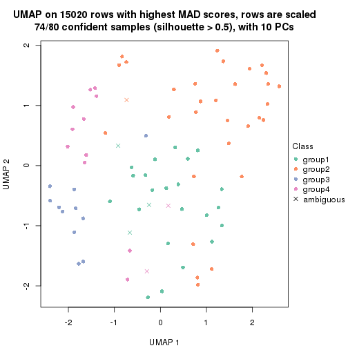
dimension_reduction(res, k = 5, method = "UMAP")
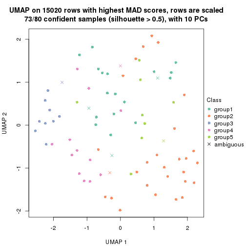
dimension_reduction(res, k = 6, method = "UMAP")
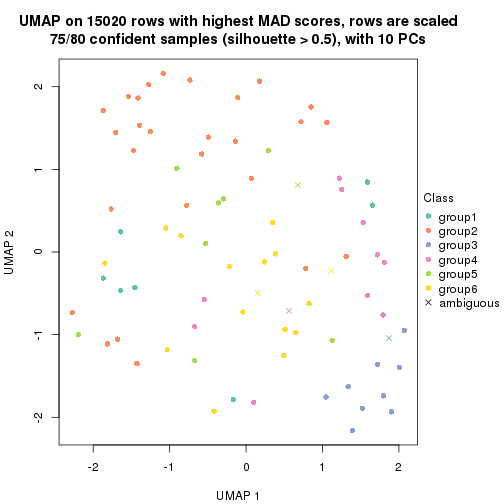
Following heatmap shows how subgroups are split when increasing k:
collect_classes(res)
If matrix rows can be associated to genes, consider to use functional_enrichment(res,
...) to perform function enrichment for the signature genes. See this vignette for more detailed explanations.
The object with results only for a single top-value method and a single partition method can be extracted as:
res = res_list["MAD", "mclust"]
# you can also extract it by
# res = res_list["MAD:mclust"]
A summary of res and all the functions that can be applied to it:
res
#> A 'ConsensusPartition' object with k = 2, 3, 4, 5, 6.
#> On a matrix with 15020 rows and 80 columns.
#> Top rows (1000, 2000, 3000, 4000, 5000) are extracted by 'MAD' method.
#> Subgroups are detected by 'mclust' method.
#> Performed in total 1250 partitions by row resampling.
#> Best k for subgroups seems to be 5.
#>
#> Following methods can be applied to this 'ConsensusPartition' object:
#> [1] "cola_report" "collect_classes" "collect_plots"
#> [4] "collect_stats" "colnames" "compare_signatures"
#> [7] "consensus_heatmap" "dimension_reduction" "functional_enrichment"
#> [10] "get_anno_col" "get_anno" "get_classes"
#> [13] "get_consensus" "get_matrix" "get_membership"
#> [16] "get_param" "get_signatures" "get_stats"
#> [19] "is_best_k" "is_stable_k" "membership_heatmap"
#> [22] "ncol" "nrow" "plot_ecdf"
#> [25] "rownames" "select_partition_number" "show"
#> [28] "suggest_best_k" "test_to_known_factors"
collect_plots() function collects all the plots made from res for all k (number of partitions)
into one single page to provide an easy and fast comparison between different k.
collect_plots(res)
The plots are:
k and the heatmap of
predicted classes for each k.k.k.k.All the plots in panels can be made by individual functions and they are plotted later in this section.
select_partition_number() produces several plots showing different
statistics for choosing “optimized” k. There are following statistics:
k;k, the area increased is defined as \(A_k - A_{k-1}\).The detailed explanations of these statistics can be found in the cola vignette.
Generally speaking, lower PAC score, higher mean silhouette score or higher
concordance corresponds to better partition. Rand index and Jaccard index
measure how similar the current partition is compared to partition with k-1.
If they are too similar, we won't accept k is better than k-1.
select_partition_number(res)
The numeric values for all these statistics can be obtained by get_stats().
get_stats(res)
#> k 1-PAC mean_silhouette concordance area_increased Rand Jaccard
#> 2 2 0.163 0.296 0.630 0.3677 0.575 0.575
#> 3 3 0.268 0.601 0.727 0.3830 0.541 0.402
#> 4 4 0.443 0.687 0.786 0.3305 0.761 0.543
#> 5 5 0.627 0.669 0.809 0.1371 0.828 0.499
#> 6 6 0.603 0.573 0.768 0.0504 0.929 0.692
suggest_best_k() suggests the best \(k\) based on these statistics. The rules are as follows:
suggest_best_k(res)
#> [1] 5
Following shows the table of the partitions (You need to click the show/hide
code output link to see it). The membership matrix (columns with name p*)
is inferred by
clue::cl_consensus()
function with the SE method. Basically the value in the membership matrix
represents the probability to belong to a certain group. The finall class
label for an item is determined with the group with highest probability it
belongs to.
In get_classes() function, the entropy is calculated from the membership
matrix and the silhouette score is calculated from the consensus matrix.
cbind(get_classes(res, k = 2), get_membership(res, k = 2))
#> class entropy silhouette p1 p2
#> SRR1851004 2 0.482 0.2725 0.104 0.896
#> SRR1851003 2 0.917 0.0530 0.332 0.668
#> SRR1851002 2 0.456 0.2746 0.096 0.904
#> SRR1851000 2 0.980 0.2858 0.416 0.584
#> SRR1851001 2 0.917 0.0530 0.332 0.668
#> SRR1850998 2 0.917 0.0530 0.332 0.668
#> SRR1850999 1 0.980 0.5296 0.584 0.416
#> SRR1850997 2 0.917 0.0530 0.332 0.668
#> SRR1850996 2 0.999 0.1813 0.484 0.516
#> SRR1851016 2 0.949 0.3107 0.368 0.632
#> SRR1851010 1 0.997 0.3708 0.532 0.468
#> SRR1851014 2 0.980 0.2858 0.416 0.584
#> SRR1851015 2 0.494 0.2410 0.108 0.892
#> SRR1851013 2 0.980 0.2858 0.416 0.584
#> SRR1851012 1 0.839 0.6133 0.732 0.268
#> SRR1851011 1 0.904 0.6077 0.680 0.320
#> SRR1851009 2 0.917 0.0530 0.332 0.668
#> SRR1851008 2 0.981 0.2824 0.420 0.580
#> SRR1851007 2 0.980 0.2858 0.416 0.584
#> SRR1851006 1 0.981 0.4824 0.580 0.420
#> SRR1851005 1 0.861 0.6106 0.716 0.284
#> SRR1850995 2 0.997 0.2170 0.468 0.532
#> SRR1850994 2 0.978 0.2777 0.412 0.588
#> SRR1850993 2 0.958 0.3036 0.380 0.620
#> SRR1850992 2 0.295 0.2773 0.052 0.948
#> SRR1850991 2 0.876 0.2971 0.296 0.704
#> SRR1850990 2 0.958 0.3036 0.380 0.620
#> SRR1850989 2 0.943 0.3130 0.360 0.640
#> SRR1850987 2 0.983 0.2719 0.424 0.576
#> SRR1850986 2 0.958 0.3036 0.380 0.620
#> SRR1850985 2 0.961 0.2988 0.384 0.616
#> SRR1850983 2 0.917 0.0530 0.332 0.668
#> SRR1850984 2 0.917 0.0530 0.332 0.668
#> SRR1850981 2 0.946 0.3087 0.364 0.636
#> SRR1850980 2 0.955 0.3045 0.376 0.624
#> SRR1850979 2 0.980 0.2860 0.416 0.584
#> SRR1850978 2 0.958 0.3036 0.380 0.620
#> SRR1850977 2 0.961 0.2988 0.384 0.616
#> SRR1850976 1 0.871 0.6035 0.708 0.292
#> SRR1850975 1 0.876 0.5991 0.704 0.296
#> SRR1850974 2 0.996 -0.2257 0.464 0.536
#> SRR1850973 2 0.917 0.0530 0.332 0.668
#> SRR1850972 2 0.958 0.3036 0.380 0.620
#> SRR1850970 1 0.943 0.5700 0.640 0.360
#> SRR1850971 2 0.952 0.3047 0.372 0.628
#> SRR1850968 1 0.876 0.5769 0.704 0.296
#> SRR1850969 2 0.904 0.0629 0.320 0.680
#> SRR1850967 1 0.876 0.5769 0.704 0.296
#> SRR1850966 2 0.541 0.2727 0.124 0.876
#> SRR1850965 2 0.917 0.0530 0.332 0.668
#> SRR1850964 2 0.943 0.3134 0.360 0.640
#> SRR1850963 2 0.913 0.0525 0.328 0.672
#> SRR1850962 1 0.311 0.5144 0.944 0.056
#> SRR1850961 1 0.311 0.5144 0.944 0.056
#> SRR1850959 1 0.990 0.4728 0.560 0.440
#> SRR1850960 2 0.443 0.2782 0.092 0.908
#> SRR1850958 2 0.821 0.2225 0.256 0.744
#> SRR1850988 2 0.925 0.2557 0.340 0.660
#> SRR1850957 2 0.689 0.1952 0.184 0.816
#> SRR1850956 2 0.993 0.2282 0.452 0.548
#> SRR1850955 2 0.997 0.2170 0.468 0.532
#> SRR1850953 2 0.992 0.2265 0.448 0.552
#> SRR1850954 2 0.998 0.2281 0.476 0.524
#> SRR1850952 2 0.995 0.2333 0.460 0.540
#> SRR1850982 2 0.494 0.2766 0.108 0.892
#> SRR1850951 1 0.844 0.6083 0.728 0.272
#> SRR1850950 2 0.996 -0.2254 0.464 0.536
#> SRR1850949 2 0.992 -0.1854 0.448 0.552
#> SRR1850948 1 0.311 0.5144 0.944 0.056
#> SRR1850947 1 0.311 0.5144 0.944 0.056
#> SRR1850946 1 0.958 0.5043 0.620 0.380
#> SRR1850945 2 0.943 0.0081 0.360 0.640
#> SRR1850944 1 0.998 0.2127 0.524 0.476
#> SRR1850943 2 0.311 0.2840 0.056 0.944
#> SRR1850942 1 0.311 0.5144 0.944 0.056
#> SRR1850940 1 0.871 0.6035 0.708 0.292
#> SRR1850941 1 0.373 0.5259 0.928 0.072
#> SRR1850938 1 0.988 0.4487 0.564 0.436
#> SRR1850939 1 0.494 0.5466 0.892 0.108
#> SRR1850937 2 0.795 0.1374 0.240 0.760
cbind(get_classes(res, k = 3), get_membership(res, k = 3))
#> class entropy silhouette p1 p2 p3
#> SRR1851004 2 0.5988 0.18795 0.368 0.632 0.000
#> SRR1851003 2 0.1031 0.74861 0.024 0.976 0.000
#> SRR1851002 2 0.5968 0.20215 0.364 0.636 0.000
#> SRR1851000 1 0.3482 0.67799 0.872 0.128 0.000
#> SRR1851001 2 0.2066 0.74078 0.060 0.940 0.000
#> SRR1850998 2 0.1453 0.74351 0.024 0.968 0.008
#> SRR1850999 1 0.6410 0.48572 0.576 0.420 0.004
#> SRR1850997 2 0.1031 0.74861 0.024 0.976 0.000
#> SRR1850996 1 0.8828 0.62428 0.580 0.192 0.228
#> SRR1851016 1 0.0237 0.65529 0.996 0.004 0.000
#> SRR1851010 1 0.8310 0.48512 0.544 0.368 0.088
#> SRR1851014 1 0.4475 0.68158 0.840 0.144 0.016
#> SRR1851015 2 0.2959 0.69158 0.100 0.900 0.000
#> SRR1851013 1 0.3686 0.67833 0.860 0.140 0.000
#> SRR1851012 1 0.8516 0.58844 0.560 0.112 0.328
#> SRR1851011 1 0.8776 0.59380 0.560 0.144 0.296
#> SRR1851009 2 0.1031 0.74861 0.024 0.976 0.000
#> SRR1851008 1 0.6702 0.59863 0.648 0.024 0.328
#> SRR1851007 1 0.5677 0.68658 0.804 0.072 0.124
#> SRR1851006 1 0.8487 0.47417 0.536 0.364 0.100
#> SRR1851005 1 0.8516 0.58844 0.560 0.112 0.328
#> SRR1850995 1 0.6482 0.62888 0.680 0.296 0.024
#> SRR1850994 1 0.3377 0.68178 0.896 0.092 0.012
#> SRR1850993 1 0.0848 0.64625 0.984 0.008 0.008
#> SRR1850992 2 0.3551 0.65220 0.132 0.868 0.000
#> SRR1850991 1 0.0892 0.66302 0.980 0.020 0.000
#> SRR1850990 1 0.0000 0.65277 1.000 0.000 0.000
#> SRR1850989 1 0.0000 0.65277 1.000 0.000 0.000
#> SRR1850987 1 0.4346 0.67723 0.816 0.184 0.000
#> SRR1850986 1 0.0848 0.64625 0.984 0.008 0.008
#> SRR1850985 1 0.1315 0.65225 0.972 0.020 0.008
#> SRR1850983 2 0.1031 0.74861 0.024 0.976 0.000
#> SRR1850984 2 0.3851 0.67341 0.136 0.860 0.004
#> SRR1850981 1 0.1643 0.66982 0.956 0.044 0.000
#> SRR1850980 1 0.2261 0.67639 0.932 0.068 0.000
#> SRR1850979 1 0.3619 0.67852 0.864 0.136 0.000
#> SRR1850978 1 0.0661 0.64654 0.988 0.008 0.004
#> SRR1850977 1 0.0661 0.64654 0.988 0.008 0.004
#> SRR1850976 1 0.8436 0.59607 0.568 0.108 0.324
#> SRR1850975 1 0.8765 0.62894 0.588 0.212 0.200
#> SRR1850974 1 0.8595 0.37902 0.496 0.404 0.100
#> SRR1850973 2 0.1031 0.74861 0.024 0.976 0.000
#> SRR1850972 1 0.0237 0.65461 0.996 0.004 0.000
#> SRR1850970 1 0.8958 0.58946 0.552 0.168 0.280
#> SRR1850971 1 0.3340 0.67651 0.880 0.120 0.000
#> SRR1850968 1 0.8395 0.59344 0.568 0.104 0.328
#> SRR1850969 2 0.1031 0.74861 0.024 0.976 0.000
#> SRR1850967 1 0.8395 0.59344 0.568 0.104 0.328
#> SRR1850966 2 0.6521 -0.33313 0.496 0.500 0.004
#> SRR1850965 2 0.1765 0.75009 0.040 0.956 0.004
#> SRR1850964 1 0.1643 0.67042 0.956 0.044 0.000
#> SRR1850963 2 0.6286 -0.22186 0.464 0.536 0.000
#> SRR1850962 3 0.0000 0.96073 0.000 0.000 1.000
#> SRR1850961 3 0.0000 0.96073 0.000 0.000 1.000
#> SRR1850959 1 0.6204 0.48092 0.576 0.424 0.000
#> SRR1850960 1 0.6267 0.41448 0.548 0.452 0.000
#> SRR1850958 1 0.6225 0.46776 0.568 0.432 0.000
#> SRR1850988 1 0.5363 0.63731 0.724 0.276 0.000
#> SRR1850957 2 0.6111 0.07799 0.396 0.604 0.000
#> SRR1850956 1 0.6661 0.52320 0.588 0.400 0.012
#> SRR1850955 1 0.5406 0.66887 0.764 0.224 0.012
#> SRR1850953 1 0.6617 0.53921 0.600 0.388 0.012
#> SRR1850954 1 0.6448 0.58106 0.636 0.352 0.012
#> SRR1850952 1 0.4128 0.68753 0.856 0.132 0.012
#> SRR1850982 2 0.4702 0.65777 0.212 0.788 0.000
#> SRR1850951 1 0.8737 0.62438 0.588 0.180 0.232
#> SRR1850950 1 0.8501 0.46603 0.532 0.368 0.100
#> SRR1850949 1 0.8501 0.46603 0.532 0.368 0.100
#> SRR1850948 3 0.0000 0.96073 0.000 0.000 1.000
#> SRR1850947 3 0.0000 0.96073 0.000 0.000 1.000
#> SRR1850946 1 0.9223 0.56308 0.528 0.200 0.272
#> SRR1850945 2 0.8549 0.00931 0.384 0.516 0.100
#> SRR1850944 1 0.6140 0.51673 0.596 0.404 0.000
#> SRR1850943 1 0.6192 0.41807 0.580 0.420 0.000
#> SRR1850942 3 0.0000 0.96073 0.000 0.000 1.000
#> SRR1850940 1 0.8452 0.58827 0.556 0.104 0.340
#> SRR1850941 3 0.1877 0.92779 0.032 0.012 0.956
#> SRR1850938 1 0.6647 0.42708 0.540 0.452 0.008
#> SRR1850939 3 0.4379 0.81428 0.072 0.060 0.868
#> SRR1850937 2 0.1753 0.73397 0.048 0.952 0.000
cbind(get_classes(res, k = 4), get_membership(res, k = 4))
#> class entropy silhouette p1 p2 p3 p4
#> SRR1851004 2 0.4964 0.7483 0.168 0.764 0.000 0.068
#> SRR1851003 2 0.3583 0.8040 0.004 0.816 0.000 0.180
#> SRR1851002 2 0.2055 0.7568 0.048 0.936 0.008 0.008
#> SRR1851000 1 0.4625 0.7170 0.804 0.044 0.012 0.140
#> SRR1851001 2 0.3680 0.8048 0.008 0.828 0.004 0.160
#> SRR1850998 2 0.3626 0.8036 0.004 0.812 0.000 0.184
#> SRR1850999 4 0.7468 0.3852 0.204 0.304 0.000 0.492
#> SRR1850997 2 0.4121 0.8012 0.020 0.796 0.000 0.184
#> SRR1850996 1 0.7269 0.6610 0.576 0.228 0.188 0.008
#> SRR1851016 1 0.1624 0.7603 0.952 0.000 0.028 0.020
#> SRR1851010 4 0.5113 0.6990 0.088 0.152 0.000 0.760
#> SRR1851014 1 0.6477 0.4327 0.580 0.056 0.012 0.352
#> SRR1851015 2 0.4636 0.7813 0.140 0.792 0.000 0.068
#> SRR1851013 1 0.5072 0.6971 0.772 0.052 0.012 0.164
#> SRR1851012 4 0.2480 0.7226 0.088 0.008 0.000 0.904
#> SRR1851011 4 0.2542 0.7246 0.084 0.012 0.000 0.904
#> SRR1851009 2 0.3626 0.8036 0.004 0.812 0.000 0.184
#> SRR1851008 1 0.5465 0.3611 0.588 0.020 0.000 0.392
#> SRR1851007 1 0.5751 0.5518 0.664 0.048 0.004 0.284
#> SRR1851006 4 0.4646 0.7149 0.084 0.120 0.000 0.796
#> SRR1851005 4 0.2542 0.7246 0.084 0.012 0.000 0.904
#> SRR1850995 1 0.5909 0.7153 0.668 0.264 0.064 0.004
#> SRR1850994 1 0.4418 0.7435 0.796 0.172 0.024 0.008
#> SRR1850993 1 0.1639 0.7580 0.952 0.004 0.036 0.008
#> SRR1850992 2 0.2845 0.7547 0.076 0.896 0.028 0.000
#> SRR1850991 1 0.3051 0.7688 0.884 0.088 0.028 0.000
#> SRR1850990 1 0.2057 0.7650 0.940 0.020 0.032 0.008
#> SRR1850989 1 0.1209 0.7611 0.964 0.004 0.032 0.000
#> SRR1850987 1 0.6392 0.7039 0.664 0.192 0.004 0.140
#> SRR1850986 1 0.1639 0.7580 0.952 0.004 0.036 0.008
#> SRR1850985 1 0.1471 0.7694 0.960 0.024 0.012 0.004
#> SRR1850983 2 0.3626 0.8036 0.004 0.812 0.000 0.184
#> SRR1850984 2 0.4244 0.7908 0.036 0.804 0.000 0.160
#> SRR1850981 1 0.4514 0.7513 0.788 0.176 0.032 0.004
#> SRR1850980 1 0.2125 0.7768 0.920 0.076 0.004 0.000
#> SRR1850979 1 0.4082 0.7651 0.812 0.164 0.004 0.020
#> SRR1850978 1 0.1639 0.7580 0.952 0.004 0.036 0.008
#> SRR1850977 1 0.1339 0.7696 0.964 0.024 0.008 0.004
#> SRR1850976 4 0.5963 0.0468 0.440 0.024 0.008 0.528
#> SRR1850975 4 0.6452 -0.1013 0.460 0.068 0.000 0.472
#> SRR1850974 2 0.6376 0.1786 0.064 0.504 0.000 0.432
#> SRR1850973 2 0.3583 0.8040 0.004 0.816 0.000 0.180
#> SRR1850972 1 0.1617 0.7703 0.956 0.024 0.008 0.012
#> SRR1850970 4 0.3521 0.7333 0.084 0.052 0.000 0.864
#> SRR1850971 1 0.3917 0.7383 0.844 0.044 0.004 0.108
#> SRR1850968 4 0.2216 0.7133 0.092 0.000 0.000 0.908
#> SRR1850969 2 0.0524 0.7790 0.004 0.988 0.000 0.008
#> SRR1850967 4 0.2149 0.7130 0.088 0.000 0.000 0.912
#> SRR1850966 2 0.2353 0.7510 0.056 0.924 0.008 0.012
#> SRR1850965 2 0.3775 0.8033 0.008 0.828 0.008 0.156
#> SRR1850964 1 0.1042 0.7708 0.972 0.020 0.008 0.000
#> SRR1850963 2 0.3312 0.8023 0.052 0.876 0.000 0.072
#> SRR1850962 3 0.1557 0.9562 0.000 0.000 0.944 0.056
#> SRR1850961 3 0.1557 0.9562 0.000 0.000 0.944 0.056
#> SRR1850959 1 0.7271 0.3585 0.532 0.192 0.000 0.276
#> SRR1850960 2 0.2831 0.7281 0.120 0.876 0.000 0.004
#> SRR1850958 1 0.5442 0.4952 0.636 0.336 0.000 0.028
#> SRR1850988 1 0.5349 0.6748 0.656 0.320 0.004 0.020
#> SRR1850957 2 0.3761 0.7923 0.068 0.852 0.000 0.080
#> SRR1850956 1 0.6487 0.5706 0.536 0.404 0.012 0.048
#> SRR1850955 1 0.4773 0.7423 0.756 0.216 0.016 0.012
#> SRR1850953 1 0.6291 0.6379 0.600 0.340 0.012 0.048
#> SRR1850954 1 0.6206 0.7026 0.672 0.252 0.028 0.048
#> SRR1850952 1 0.5177 0.7379 0.744 0.200 0.052 0.004
#> SRR1850982 2 0.2066 0.7537 0.028 0.940 0.024 0.008
#> SRR1850951 1 0.5706 0.6578 0.700 0.048 0.240 0.012
#> SRR1850950 4 0.6396 0.2700 0.072 0.380 0.000 0.548
#> SRR1850949 4 0.6443 0.1965 0.072 0.400 0.000 0.528
#> SRR1850948 3 0.1557 0.9562 0.000 0.000 0.944 0.056
#> SRR1850947 3 0.1557 0.9562 0.000 0.000 0.944 0.056
#> SRR1850946 4 0.5314 0.6426 0.084 0.176 0.000 0.740
#> SRR1850945 2 0.5394 0.7125 0.060 0.712 0.000 0.228
#> SRR1850944 1 0.7394 0.4409 0.520 0.240 0.000 0.240
#> SRR1850943 2 0.4761 0.5919 0.332 0.664 0.000 0.004
#> SRR1850942 3 0.1557 0.9562 0.000 0.000 0.944 0.056
#> SRR1850940 4 0.4932 0.6901 0.128 0.012 0.068 0.792
#> SRR1850941 3 0.1743 0.9526 0.004 0.000 0.940 0.056
#> SRR1850938 4 0.6399 0.5343 0.104 0.276 0.000 0.620
#> SRR1850939 3 0.4825 0.6755 0.008 0.004 0.700 0.288
#> SRR1850937 2 0.1938 0.7728 0.052 0.936 0.000 0.012
cbind(get_classes(res, k = 5), get_membership(res, k = 5))
#> class entropy silhouette p1 p2 p3 p4 p5
#> SRR1851004 2 0.1173 0.8511 0.020 0.964 0.000 0.004 0.012
#> SRR1851003 2 0.0162 0.8518 0.000 0.996 0.000 0.004 0.000
#> SRR1851002 2 0.4559 0.1625 0.000 0.512 0.000 0.008 0.480
#> SRR1851000 1 0.4231 0.5631 0.764 0.004 0.012 0.200 0.020
#> SRR1851001 2 0.2077 0.8264 0.000 0.908 0.000 0.008 0.084
#> SRR1850998 2 0.0290 0.8521 0.000 0.992 0.000 0.000 0.008
#> SRR1850999 4 0.3711 0.7956 0.012 0.136 0.000 0.820 0.032
#> SRR1850997 2 0.0290 0.8521 0.000 0.992 0.000 0.000 0.008
#> SRR1850996 5 0.5585 0.5752 0.120 0.012 0.200 0.000 0.668
#> SRR1851016 1 0.3223 0.7335 0.868 0.004 0.008 0.072 0.048
#> SRR1851010 4 0.2488 0.8178 0.000 0.124 0.000 0.872 0.004
#> SRR1851014 4 0.5398 0.4979 0.288 0.012 0.008 0.648 0.044
#> SRR1851015 2 0.1329 0.8499 0.008 0.956 0.004 0.000 0.032
#> SRR1851013 1 0.6226 0.0625 0.480 0.008 0.008 0.420 0.084
#> SRR1851012 4 0.1205 0.8095 0.004 0.040 0.000 0.956 0.000
#> SRR1851011 4 0.1357 0.8121 0.004 0.048 0.000 0.948 0.000
#> SRR1851009 2 0.0162 0.8522 0.000 0.996 0.000 0.000 0.004
#> SRR1851008 4 0.3471 0.7291 0.124 0.012 0.004 0.840 0.020
#> SRR1851007 4 0.4427 0.6388 0.212 0.020 0.004 0.748 0.016
#> SRR1851006 4 0.1908 0.8177 0.000 0.092 0.000 0.908 0.000
#> SRR1851005 4 0.1608 0.8156 0.000 0.072 0.000 0.928 0.000
#> SRR1850995 5 0.2110 0.6735 0.072 0.016 0.000 0.000 0.912
#> SRR1850994 5 0.2732 0.6462 0.160 0.000 0.000 0.000 0.840
#> SRR1850993 1 0.2583 0.7556 0.864 0.000 0.004 0.000 0.132
#> SRR1850992 2 0.2313 0.8407 0.040 0.912 0.004 0.000 0.044
#> SRR1850991 5 0.4410 0.3251 0.440 0.000 0.004 0.000 0.556
#> SRR1850990 1 0.1831 0.7591 0.920 0.000 0.004 0.000 0.076
#> SRR1850989 1 0.1704 0.7579 0.928 0.000 0.004 0.000 0.068
#> SRR1850987 5 0.7434 0.4194 0.288 0.064 0.004 0.156 0.488
#> SRR1850986 1 0.2583 0.7556 0.864 0.000 0.004 0.000 0.132
#> SRR1850985 1 0.2629 0.7554 0.860 0.000 0.004 0.000 0.136
#> SRR1850983 2 0.0290 0.8521 0.000 0.992 0.000 0.000 0.008
#> SRR1850984 2 0.0162 0.8521 0.000 0.996 0.000 0.004 0.000
#> SRR1850981 5 0.4166 0.4489 0.348 0.000 0.004 0.000 0.648
#> SRR1850980 1 0.4589 0.2858 0.660 0.000 0.004 0.020 0.316
#> SRR1850979 5 0.6458 0.3863 0.388 0.064 0.004 0.040 0.504
#> SRR1850978 1 0.2583 0.7556 0.864 0.000 0.004 0.000 0.132
#> SRR1850977 1 0.2583 0.7569 0.864 0.000 0.004 0.000 0.132
#> SRR1850976 4 0.6241 0.6654 0.068 0.064 0.172 0.676 0.020
#> SRR1850975 4 0.4189 0.7961 0.044 0.100 0.000 0.812 0.044
#> SRR1850974 4 0.3796 0.6521 0.000 0.300 0.000 0.700 0.000
#> SRR1850973 2 0.1082 0.8492 0.000 0.964 0.000 0.008 0.028
#> SRR1850972 1 0.2860 0.7422 0.892 0.004 0.012 0.044 0.048
#> SRR1850970 4 0.1671 0.8163 0.000 0.076 0.000 0.924 0.000
#> SRR1850971 1 0.3590 0.7260 0.852 0.008 0.012 0.076 0.052
#> SRR1850968 4 0.1087 0.7927 0.008 0.008 0.000 0.968 0.016
#> SRR1850969 2 0.1628 0.8473 0.000 0.936 0.000 0.008 0.056
#> SRR1850967 4 0.1087 0.7927 0.008 0.008 0.000 0.968 0.016
#> SRR1850966 5 0.4397 0.0251 0.004 0.432 0.000 0.000 0.564
#> SRR1850965 2 0.2068 0.8140 0.000 0.904 0.000 0.004 0.092
#> SRR1850964 1 0.4307 -0.2871 0.504 0.000 0.000 0.000 0.496
#> SRR1850963 2 0.1892 0.8309 0.000 0.916 0.000 0.004 0.080
#> SRR1850962 3 0.0579 0.9243 0.000 0.000 0.984 0.008 0.008
#> SRR1850961 3 0.0579 0.9243 0.000 0.000 0.984 0.008 0.008
#> SRR1850959 5 0.7981 0.1594 0.108 0.184 0.000 0.324 0.384
#> SRR1850960 2 0.4541 0.3329 0.008 0.608 0.004 0.000 0.380
#> SRR1850958 2 0.6767 -0.2074 0.280 0.392 0.000 0.328 0.000
#> SRR1850988 5 0.6610 0.5199 0.280 0.144 0.004 0.020 0.552
#> SRR1850957 2 0.3333 0.6917 0.000 0.788 0.000 0.004 0.208
#> SRR1850956 5 0.2046 0.6469 0.016 0.068 0.000 0.000 0.916
#> SRR1850955 5 0.2574 0.6702 0.112 0.012 0.000 0.000 0.876
#> SRR1850953 5 0.1216 0.6573 0.020 0.020 0.000 0.000 0.960
#> SRR1850954 5 0.1106 0.6564 0.024 0.012 0.000 0.000 0.964
#> SRR1850952 5 0.3039 0.6522 0.152 0.012 0.000 0.000 0.836
#> SRR1850982 2 0.4073 0.6997 0.008 0.748 0.004 0.008 0.232
#> SRR1850951 3 0.4319 0.6749 0.140 0.012 0.784 0.000 0.064
#> SRR1850950 4 0.3534 0.7218 0.000 0.256 0.000 0.744 0.000
#> SRR1850949 4 0.3366 0.7518 0.000 0.232 0.000 0.768 0.000
#> SRR1850948 3 0.0579 0.9243 0.000 0.000 0.984 0.008 0.008
#> SRR1850947 3 0.0579 0.9243 0.000 0.000 0.984 0.008 0.008
#> SRR1850946 4 0.2812 0.8119 0.000 0.096 0.024 0.876 0.004
#> SRR1850945 2 0.4197 0.7450 0.000 0.776 0.000 0.148 0.076
#> SRR1850944 4 0.7582 0.1761 0.068 0.188 0.000 0.440 0.304
#> SRR1850943 2 0.2234 0.8285 0.044 0.916 0.004 0.036 0.000
#> SRR1850942 3 0.0579 0.9243 0.000 0.000 0.984 0.008 0.008
#> SRR1850940 4 0.3509 0.6594 0.004 0.004 0.192 0.796 0.004
#> SRR1850941 3 0.0740 0.9215 0.004 0.000 0.980 0.008 0.008
#> SRR1850938 4 0.3398 0.7652 0.000 0.216 0.000 0.780 0.004
#> SRR1850939 3 0.3662 0.6765 0.000 0.004 0.744 0.252 0.000
#> SRR1850937 2 0.1168 0.8509 0.000 0.960 0.008 0.000 0.032
cbind(get_classes(res, k = 6), get_membership(res, k = 6))
#> class entropy silhouette p1 p2 p3 p4 p5 p6
#> SRR1851004 2 0.2875 0.75621 0.016 0.880 0.000 0.024 0.020 0.060
#> SRR1851003 2 0.0777 0.75793 0.000 0.972 0.000 0.024 0.004 0.000
#> SRR1851002 5 0.3872 0.16179 0.000 0.392 0.000 0.000 0.604 0.004
#> SRR1851000 6 0.2581 0.71988 0.128 0.000 0.000 0.016 0.000 0.856
#> SRR1851001 2 0.2964 0.69492 0.000 0.792 0.000 0.004 0.204 0.000
#> SRR1850998 2 0.1820 0.75059 0.000 0.924 0.000 0.012 0.008 0.056
#> SRR1850999 4 0.5655 0.53445 0.008 0.196 0.000 0.636 0.028 0.132
#> SRR1850997 2 0.1719 0.75103 0.000 0.928 0.000 0.008 0.008 0.056
#> SRR1850996 5 0.4308 0.52735 0.120 0.000 0.152 0.000 0.728 0.000
#> SRR1851016 6 0.3747 0.36428 0.396 0.000 0.000 0.000 0.000 0.604
#> SRR1851010 4 0.1814 0.74125 0.000 0.100 0.000 0.900 0.000 0.000
#> SRR1851014 6 0.4276 0.69537 0.108 0.004 0.000 0.132 0.004 0.752
#> SRR1851015 2 0.3444 0.73644 0.016 0.844 0.000 0.024 0.032 0.084
#> SRR1851013 6 0.3962 0.69683 0.108 0.004 0.000 0.028 0.060 0.800
#> SRR1851012 4 0.1625 0.71773 0.000 0.012 0.000 0.928 0.000 0.060
#> SRR1851011 4 0.1391 0.72440 0.000 0.016 0.000 0.944 0.000 0.040
#> SRR1851009 2 0.1820 0.75028 0.000 0.924 0.000 0.012 0.008 0.056
#> SRR1851008 6 0.5011 0.61586 0.116 0.000 0.000 0.264 0.000 0.620
#> SRR1851007 6 0.4351 0.70082 0.108 0.000 0.000 0.172 0.000 0.720
#> SRR1851006 4 0.0909 0.74407 0.000 0.020 0.012 0.968 0.000 0.000
#> SRR1851005 4 0.0964 0.73775 0.000 0.004 0.012 0.968 0.000 0.016
#> SRR1850995 5 0.2375 0.63308 0.068 0.004 0.004 0.000 0.896 0.028
#> SRR1850994 5 0.3192 0.52557 0.216 0.000 0.004 0.000 0.776 0.004
#> SRR1850993 1 0.0146 0.61505 0.996 0.000 0.000 0.000 0.004 0.000
#> SRR1850992 2 0.3825 0.70177 0.128 0.788 0.000 0.000 0.076 0.008
#> SRR1850991 1 0.5489 0.26523 0.540 0.028 0.000 0.000 0.364 0.068
#> SRR1850990 1 0.1858 0.59893 0.904 0.004 0.000 0.000 0.000 0.092
#> SRR1850989 1 0.3265 0.47941 0.748 0.004 0.000 0.000 0.000 0.248
#> SRR1850987 5 0.8144 0.23349 0.136 0.072 0.000 0.140 0.376 0.276
#> SRR1850986 1 0.0146 0.61505 0.996 0.000 0.000 0.000 0.004 0.000
#> SRR1850985 1 0.3383 0.40279 0.728 0.000 0.000 0.000 0.004 0.268
#> SRR1850983 2 0.1719 0.75073 0.000 0.928 0.000 0.008 0.008 0.056
#> SRR1850984 2 0.2805 0.67404 0.000 0.812 0.000 0.184 0.004 0.000
#> SRR1850981 1 0.4886 0.04944 0.480 0.004 0.000 0.000 0.468 0.048
#> SRR1850980 1 0.6352 0.30160 0.492 0.016 0.000 0.012 0.300 0.180
#> SRR1850979 5 0.7219 0.00507 0.296 0.032 0.000 0.032 0.392 0.248
#> SRR1850978 1 0.0405 0.61726 0.988 0.000 0.000 0.000 0.008 0.004
#> SRR1850977 1 0.0858 0.61206 0.968 0.000 0.000 0.000 0.004 0.028
#> SRR1850976 4 0.6340 -0.01226 0.088 0.020 0.416 0.448 0.016 0.012
#> SRR1850975 4 0.3743 0.71488 0.028 0.072 0.004 0.836 0.036 0.024
#> SRR1850974 4 0.3453 0.71081 0.000 0.144 0.040 0.808 0.008 0.000
#> SRR1850973 2 0.1829 0.75669 0.000 0.920 0.000 0.012 0.064 0.004
#> SRR1850972 1 0.3337 0.37581 0.736 0.000 0.000 0.000 0.004 0.260
#> SRR1850970 4 0.1599 0.74228 0.000 0.024 0.028 0.940 0.000 0.008
#> SRR1850971 6 0.3383 0.61636 0.268 0.000 0.000 0.004 0.000 0.728
#> SRR1850968 4 0.3508 0.48322 0.000 0.004 0.000 0.704 0.000 0.292
#> SRR1850969 2 0.2784 0.74408 0.000 0.848 0.000 0.028 0.124 0.000
#> SRR1850967 4 0.3468 0.49450 0.000 0.004 0.000 0.712 0.000 0.284
#> SRR1850966 5 0.3555 0.39981 0.000 0.280 0.000 0.000 0.712 0.008
#> SRR1850965 2 0.3330 0.60205 0.000 0.716 0.000 0.000 0.284 0.000
#> SRR1850964 1 0.5230 0.33219 0.548 0.000 0.000 0.000 0.344 0.108
#> SRR1850963 2 0.3424 0.72104 0.000 0.816 0.000 0.048 0.128 0.008
#> SRR1850962 3 0.0000 0.92097 0.000 0.000 1.000 0.000 0.000 0.000
#> SRR1850961 3 0.0000 0.92097 0.000 0.000 1.000 0.000 0.000 0.000
#> SRR1850959 5 0.8034 0.33488 0.040 0.236 0.000 0.172 0.384 0.168
#> SRR1850960 2 0.5279 0.23858 0.004 0.568 0.000 0.016 0.352 0.060
#> SRR1850958 2 0.7847 -0.14840 0.100 0.332 0.000 0.204 0.036 0.328
#> SRR1850988 5 0.7807 0.28581 0.152 0.228 0.000 0.024 0.400 0.196
#> SRR1850957 2 0.4177 0.50721 0.000 0.684 0.000 0.032 0.280 0.004
#> SRR1850956 5 0.0725 0.63070 0.000 0.012 0.000 0.000 0.976 0.012
#> SRR1850955 5 0.2407 0.62531 0.096 0.004 0.000 0.012 0.884 0.004
#> SRR1850953 5 0.0665 0.63056 0.000 0.008 0.004 0.000 0.980 0.008
#> SRR1850954 5 0.0798 0.62943 0.004 0.004 0.004 0.000 0.976 0.012
#> SRR1850952 5 0.2482 0.58305 0.148 0.000 0.004 0.000 0.848 0.000
#> SRR1850982 2 0.4921 0.28473 0.052 0.508 0.000 0.000 0.436 0.004
#> SRR1850951 3 0.3834 0.66023 0.144 0.000 0.772 0.000 0.084 0.000
#> SRR1850950 4 0.2623 0.73069 0.000 0.132 0.016 0.852 0.000 0.000
#> SRR1850949 4 0.2623 0.73024 0.000 0.132 0.016 0.852 0.000 0.000
#> SRR1850948 3 0.0000 0.92097 0.000 0.000 1.000 0.000 0.000 0.000
#> SRR1850947 3 0.0000 0.92097 0.000 0.000 1.000 0.000 0.000 0.000
#> SRR1850946 4 0.2445 0.74144 0.000 0.032 0.060 0.896 0.004 0.008
#> SRR1850945 4 0.6620 0.08534 0.000 0.348 0.040 0.408 0.204 0.000
#> SRR1850944 4 0.7592 -0.21476 0.028 0.184 0.000 0.356 0.344 0.088
#> SRR1850943 2 0.4836 0.58330 0.068 0.676 0.000 0.020 0.000 0.236
#> SRR1850942 3 0.0000 0.92097 0.000 0.000 1.000 0.000 0.000 0.000
#> SRR1850940 4 0.3576 0.59918 0.008 0.004 0.236 0.748 0.004 0.000
#> SRR1850941 3 0.0000 0.92097 0.000 0.000 1.000 0.000 0.000 0.000
#> SRR1850938 4 0.2624 0.72457 0.000 0.148 0.000 0.844 0.004 0.004
#> SRR1850939 3 0.3163 0.66288 0.000 0.000 0.764 0.232 0.004 0.000
#> SRR1850937 2 0.3393 0.74618 0.036 0.844 0.000 0.020 0.088 0.012
Heatmaps for the consensus matrix. It visualizes the probability of two samples to be in a same group.
consensus_heatmap(res, k = 2)
consensus_heatmap(res, k = 3)
consensus_heatmap(res, k = 4)
consensus_heatmap(res, k = 5)
consensus_heatmap(res, k = 6)
Heatmaps for the membership of samples in all partitions to see how consistent they are:
membership_heatmap(res, k = 2)
membership_heatmap(res, k = 3)
membership_heatmap(res, k = 4)
membership_heatmap(res, k = 5)
membership_heatmap(res, k = 6)
As soon as we have had the classes for columns, we can look for signatures which are significantly different between classes which can be candidate marks for certain classes. Following are the heatmaps for signatures.
Signature heatmaps where rows are scaled:
get_signatures(res, k = 2)

get_signatures(res, k = 3)
get_signatures(res, k = 4)
get_signatures(res, k = 5)
get_signatures(res, k = 6)
Signature heatmaps where rows are not scaled:
get_signatures(res, k = 2, scale_rows = FALSE)

get_signatures(res, k = 3, scale_rows = FALSE)
get_signatures(res, k = 4, scale_rows = FALSE)
get_signatures(res, k = 5, scale_rows = FALSE)
get_signatures(res, k = 6, scale_rows = FALSE)
Compare the overlap of signatures from different k:
compare_signatures(res)
get_signature() returns a data frame invisibly. TO get the list of signatures, the function
call should be assigned to a variable explicitly. In following code, if plot argument is set
to FALSE, no heatmap is plotted while only the differential analysis is performed.
# code only for demonstration
tb = get_signature(res, k = ..., plot = FALSE)
An example of the output of tb is:
#> which_row fdr mean_1 mean_2 scaled_mean_1 scaled_mean_2 km
#> 1 38 0.042760348 8.373488 9.131774 -0.5533452 0.5164555 1
#> 2 40 0.018707592 7.106213 8.469186 -0.6173731 0.5762149 1
#> 3 55 0.019134737 10.221463 11.207825 -0.6159697 0.5749050 1
#> 4 59 0.006059896 5.921854 7.869574 -0.6899429 0.6439467 1
#> 5 60 0.018055526 8.928898 10.211722 -0.6204761 0.5791110 1
#> 6 98 0.009384629 15.714769 14.887706 0.6635654 -0.6193277 2
...
The columns in tb are:
which_row: row indices corresponding to the input matrix.fdr: FDR for the differential test. mean_x: The mean value in group x.scaled_mean_x: The mean value in group x after rows are scaled.km: Row groups if k-means clustering is applied to rows.UMAP plot which shows how samples are separated.
dimension_reduction(res, k = 2, method = "UMAP")
dimension_reduction(res, k = 3, method = "UMAP")
dimension_reduction(res, k = 4, method = "UMAP")
dimension_reduction(res, k = 5, method = "UMAP")
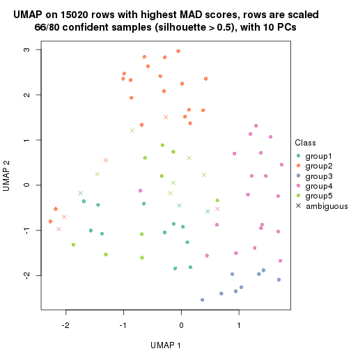
dimension_reduction(res, k = 6, method = "UMAP")
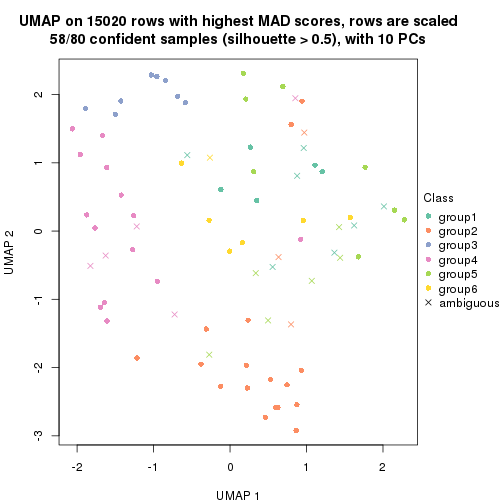
Following heatmap shows how subgroups are split when increasing k:
collect_classes(res)
If matrix rows can be associated to genes, consider to use functional_enrichment(res,
...) to perform function enrichment for the signature genes. See this vignette for more detailed explanations.
The object with results only for a single top-value method and a single partition method can be extracted as:
res = res_list["MAD", "NMF"]
# you can also extract it by
# res = res_list["MAD:NMF"]
A summary of res and all the functions that can be applied to it:
res
#> A 'ConsensusPartition' object with k = 2, 3, 4, 5, 6.
#> On a matrix with 15020 rows and 80 columns.
#> Top rows (1000, 2000, 3000, 4000, 5000) are extracted by 'MAD' method.
#> Subgroups are detected by 'NMF' method.
#> Performed in total 1250 partitions by row resampling.
#> Best k for subgroups seems to be 2.
#>
#> Following methods can be applied to this 'ConsensusPartition' object:
#> [1] "cola_report" "collect_classes" "collect_plots"
#> [4] "collect_stats" "colnames" "compare_signatures"
#> [7] "consensus_heatmap" "dimension_reduction" "functional_enrichment"
#> [10] "get_anno_col" "get_anno" "get_classes"
#> [13] "get_consensus" "get_matrix" "get_membership"
#> [16] "get_param" "get_signatures" "get_stats"
#> [19] "is_best_k" "is_stable_k" "membership_heatmap"
#> [22] "ncol" "nrow" "plot_ecdf"
#> [25] "rownames" "select_partition_number" "show"
#> [28] "suggest_best_k" "test_to_known_factors"
collect_plots() function collects all the plots made from res for all k (number of partitions)
into one single page to provide an easy and fast comparison between different k.
collect_plots(res)
The plots are:
k and the heatmap of
predicted classes for each k.k.k.k.All the plots in panels can be made by individual functions and they are plotted later in this section.
select_partition_number() produces several plots showing different
statistics for choosing “optimized” k. There are following statistics:
k;k, the area increased is defined as \(A_k - A_{k-1}\).The detailed explanations of these statistics can be found in the cola vignette.
Generally speaking, lower PAC score, higher mean silhouette score or higher
concordance corresponds to better partition. Rand index and Jaccard index
measure how similar the current partition is compared to partition with k-1.
If they are too similar, we won't accept k is better than k-1.
select_partition_number(res)
The numeric values for all these statistics can be obtained by get_stats().
get_stats(res)
#> k 1-PAC mean_silhouette concordance area_increased Rand Jaccard
#> 2 2 0.735 0.873 0.949 0.4995 0.499 0.499
#> 3 3 0.546 0.761 0.853 0.3250 0.764 0.564
#> 4 4 0.527 0.525 0.718 0.1204 0.723 0.368
#> 5 5 0.535 0.472 0.675 0.0680 0.826 0.456
#> 6 6 0.556 0.376 0.635 0.0452 0.926 0.694
suggest_best_k() suggests the best \(k\) based on these statistics. The rules are as follows:
suggest_best_k(res)
#> [1] 2
Following shows the table of the partitions (You need to click the show/hide
code output link to see it). The membership matrix (columns with name p*)
is inferred by
clue::cl_consensus()
function with the SE method. Basically the value in the membership matrix
represents the probability to belong to a certain group. The finall class
label for an item is determined with the group with highest probability it
belongs to.
In get_classes() function, the entropy is calculated from the membership
matrix and the silhouette score is calculated from the consensus matrix.
cbind(get_classes(res, k = 2), get_membership(res, k = 2))
#> class entropy silhouette p1 p2
#> SRR1851004 2 0.0000 0.9365 0.000 1.000
#> SRR1851003 2 0.0000 0.9365 0.000 1.000
#> SRR1851002 2 0.0000 0.9365 0.000 1.000
#> SRR1851000 1 0.0938 0.9467 0.988 0.012
#> SRR1851001 2 0.0000 0.9365 0.000 1.000
#> SRR1850998 2 0.0000 0.9365 0.000 1.000
#> SRR1850999 2 0.0000 0.9365 0.000 1.000
#> SRR1850997 2 0.0000 0.9365 0.000 1.000
#> SRR1850996 1 0.0000 0.9533 1.000 0.000
#> SRR1851016 2 0.9983 0.1076 0.476 0.524
#> SRR1851010 2 0.0000 0.9365 0.000 1.000
#> SRR1851014 2 0.9988 0.0900 0.480 0.520
#> SRR1851015 2 0.0000 0.9365 0.000 1.000
#> SRR1851013 1 0.0672 0.9503 0.992 0.008
#> SRR1851012 1 0.9427 0.4372 0.640 0.360
#> SRR1851011 2 0.0000 0.9365 0.000 1.000
#> SRR1851009 2 0.0000 0.9365 0.000 1.000
#> SRR1851008 1 0.0000 0.9533 1.000 0.000
#> SRR1851007 1 0.0938 0.9483 0.988 0.012
#> SRR1851006 2 0.0000 0.9365 0.000 1.000
#> SRR1851005 1 0.4939 0.8686 0.892 0.108
#> SRR1850995 1 0.0376 0.9518 0.996 0.004
#> SRR1850994 1 0.0938 0.9482 0.988 0.012
#> SRR1850993 1 0.0000 0.9533 1.000 0.000
#> SRR1850992 2 0.0000 0.9365 0.000 1.000
#> SRR1850991 2 0.1414 0.9212 0.020 0.980
#> SRR1850990 1 0.0000 0.9533 1.000 0.000
#> SRR1850989 1 0.5737 0.8342 0.864 0.136
#> SRR1850987 2 0.6048 0.8007 0.148 0.852
#> SRR1850986 1 0.0000 0.9533 1.000 0.000
#> SRR1850985 1 0.0000 0.9533 1.000 0.000
#> SRR1850983 2 0.0000 0.9365 0.000 1.000
#> SRR1850984 2 0.0000 0.9365 0.000 1.000
#> SRR1850981 2 0.8016 0.6723 0.244 0.756
#> SRR1850980 1 0.0000 0.9533 1.000 0.000
#> SRR1850979 2 0.9983 0.1056 0.476 0.524
#> SRR1850978 1 0.0000 0.9533 1.000 0.000
#> SRR1850977 1 0.0000 0.9533 1.000 0.000
#> SRR1850976 1 0.0000 0.9533 1.000 0.000
#> SRR1850975 1 0.5059 0.8646 0.888 0.112
#> SRR1850974 2 0.0000 0.9365 0.000 1.000
#> SRR1850973 2 0.0000 0.9365 0.000 1.000
#> SRR1850972 1 0.0000 0.9533 1.000 0.000
#> SRR1850970 2 0.0000 0.9365 0.000 1.000
#> SRR1850971 1 0.0000 0.9533 1.000 0.000
#> SRR1850968 1 0.0000 0.9533 1.000 0.000
#> SRR1850969 2 0.0000 0.9365 0.000 1.000
#> SRR1850967 1 0.4939 0.8675 0.892 0.108
#> SRR1850966 2 0.0000 0.9365 0.000 1.000
#> SRR1850965 2 0.0000 0.9365 0.000 1.000
#> SRR1850964 1 0.1633 0.9401 0.976 0.024
#> SRR1850963 2 0.0000 0.9365 0.000 1.000
#> SRR1850962 1 0.0000 0.9533 1.000 0.000
#> SRR1850961 1 0.0000 0.9533 1.000 0.000
#> SRR1850959 2 0.0000 0.9365 0.000 1.000
#> SRR1850960 2 0.0000 0.9365 0.000 1.000
#> SRR1850958 2 0.8763 0.5690 0.296 0.704
#> SRR1850988 2 0.0000 0.9365 0.000 1.000
#> SRR1850957 2 0.0000 0.9365 0.000 1.000
#> SRR1850956 2 0.7602 0.7134 0.220 0.780
#> SRR1850955 1 0.1184 0.9462 0.984 0.016
#> SRR1850953 2 0.6801 0.7627 0.180 0.820
#> SRR1850954 1 1.0000 -0.0582 0.500 0.500
#> SRR1850952 1 0.0000 0.9533 1.000 0.000
#> SRR1850982 2 0.0000 0.9365 0.000 1.000
#> SRR1850951 1 0.0000 0.9533 1.000 0.000
#> SRR1850950 2 0.0000 0.9365 0.000 1.000
#> SRR1850949 2 0.0000 0.9365 0.000 1.000
#> SRR1850948 1 0.0000 0.9533 1.000 0.000
#> SRR1850947 1 0.0000 0.9533 1.000 0.000
#> SRR1850946 2 0.0000 0.9365 0.000 1.000
#> SRR1850945 2 0.0000 0.9365 0.000 1.000
#> SRR1850944 2 0.0000 0.9365 0.000 1.000
#> SRR1850943 2 0.0000 0.9365 0.000 1.000
#> SRR1850942 1 0.0000 0.9533 1.000 0.000
#> SRR1850940 1 0.4815 0.8727 0.896 0.104
#> SRR1850941 1 0.0000 0.9533 1.000 0.000
#> SRR1850938 2 0.0000 0.9365 0.000 1.000
#> SRR1850939 1 0.0000 0.9533 1.000 0.000
#> SRR1850937 2 0.0000 0.9365 0.000 1.000
cbind(get_classes(res, k = 3), get_membership(res, k = 3))
#> class entropy silhouette p1 p2 p3
#> SRR1851004 2 0.1781 0.842 0.020 0.960 0.020
#> SRR1851003 2 0.0592 0.840 0.000 0.988 0.012
#> SRR1851002 2 0.2796 0.826 0.092 0.908 0.000
#> SRR1851000 1 0.3851 0.837 0.860 0.004 0.136
#> SRR1851001 2 0.1315 0.840 0.008 0.972 0.020
#> SRR1850998 2 0.0592 0.840 0.000 0.988 0.012
#> SRR1850999 2 0.1482 0.841 0.012 0.968 0.020
#> SRR1850997 2 0.2537 0.826 0.080 0.920 0.000
#> SRR1850996 3 0.3551 0.833 0.132 0.000 0.868
#> SRR1851016 1 0.2550 0.802 0.932 0.056 0.012
#> SRR1851010 2 0.2261 0.827 0.000 0.932 0.068
#> SRR1851014 1 0.7453 0.730 0.700 0.148 0.152
#> SRR1851015 2 0.3116 0.812 0.108 0.892 0.000
#> SRR1851013 1 0.4796 0.772 0.780 0.000 0.220
#> SRR1851012 3 0.3941 0.745 0.000 0.156 0.844
#> SRR1851011 2 0.5465 0.643 0.000 0.712 0.288
#> SRR1851009 2 0.0424 0.841 0.008 0.992 0.000
#> SRR1851008 3 0.1529 0.862 0.040 0.000 0.960
#> SRR1851007 3 0.4110 0.792 0.152 0.004 0.844
#> SRR1851006 2 0.4399 0.756 0.000 0.812 0.188
#> SRR1851005 3 0.3551 0.776 0.000 0.132 0.868
#> SRR1850995 3 0.3918 0.826 0.140 0.004 0.856
#> SRR1850994 1 0.2682 0.843 0.920 0.004 0.076
#> SRR1850993 1 0.4178 0.809 0.828 0.000 0.172
#> SRR1850992 2 0.6295 0.232 0.472 0.528 0.000
#> SRR1850991 1 0.3267 0.760 0.884 0.116 0.000
#> SRR1850990 1 0.3038 0.841 0.896 0.000 0.104
#> SRR1850989 1 0.1989 0.804 0.948 0.048 0.004
#> SRR1850987 1 0.3375 0.775 0.892 0.100 0.008
#> SRR1850986 1 0.2878 0.841 0.904 0.000 0.096
#> SRR1850985 1 0.4062 0.815 0.836 0.000 0.164
#> SRR1850983 2 0.1163 0.838 0.028 0.972 0.000
#> SRR1850984 2 0.2448 0.825 0.000 0.924 0.076
#> SRR1850981 1 0.2448 0.787 0.924 0.076 0.000
#> SRR1850980 1 0.3816 0.829 0.852 0.000 0.148
#> SRR1850979 1 0.3356 0.828 0.908 0.036 0.056
#> SRR1850978 1 0.2448 0.842 0.924 0.000 0.076
#> SRR1850977 1 0.4399 0.800 0.812 0.000 0.188
#> SRR1850976 3 0.2066 0.864 0.060 0.000 0.940
#> SRR1850975 3 0.4658 0.828 0.076 0.068 0.856
#> SRR1850974 2 0.3619 0.795 0.000 0.864 0.136
#> SRR1850973 2 0.1964 0.832 0.000 0.944 0.056
#> SRR1850972 1 0.3551 0.834 0.868 0.000 0.132
#> SRR1850970 2 0.5621 0.606 0.000 0.692 0.308
#> SRR1850971 1 0.3686 0.833 0.860 0.000 0.140
#> SRR1850968 3 0.2625 0.810 0.000 0.084 0.916
#> SRR1850969 2 0.1620 0.841 0.024 0.964 0.012
#> SRR1850967 3 0.3267 0.791 0.000 0.116 0.884
#> SRR1850966 2 0.2537 0.828 0.080 0.920 0.000
#> SRR1850965 2 0.1860 0.833 0.000 0.948 0.052
#> SRR1850964 1 0.2774 0.842 0.920 0.008 0.072
#> SRR1850963 2 0.2625 0.829 0.084 0.916 0.000
#> SRR1850962 3 0.2878 0.856 0.096 0.000 0.904
#> SRR1850961 3 0.2356 0.863 0.072 0.000 0.928
#> SRR1850959 2 0.4293 0.778 0.164 0.832 0.004
#> SRR1850960 2 0.5859 0.536 0.344 0.656 0.000
#> SRR1850958 2 0.8138 0.180 0.068 0.480 0.452
#> SRR1850988 1 0.4178 0.711 0.828 0.172 0.000
#> SRR1850957 2 0.2400 0.833 0.064 0.932 0.004
#> SRR1850956 2 0.9153 0.305 0.300 0.524 0.176
#> SRR1850955 1 0.4974 0.744 0.764 0.000 0.236
#> SRR1850953 1 0.7980 0.250 0.572 0.356 0.072
#> SRR1850954 1 0.5094 0.800 0.832 0.056 0.112
#> SRR1850952 1 0.5968 0.499 0.636 0.000 0.364
#> SRR1850982 2 0.4291 0.768 0.180 0.820 0.000
#> SRR1850951 3 0.5591 0.565 0.304 0.000 0.696
#> SRR1850950 2 0.4110 0.785 0.004 0.844 0.152
#> SRR1850949 2 0.3918 0.793 0.004 0.856 0.140
#> SRR1850948 3 0.3412 0.840 0.124 0.000 0.876
#> SRR1850947 3 0.3412 0.842 0.124 0.000 0.876
#> SRR1850946 2 0.5291 0.666 0.000 0.732 0.268
#> SRR1850945 2 0.2711 0.819 0.000 0.912 0.088
#> SRR1850944 2 0.4253 0.800 0.048 0.872 0.080
#> SRR1850943 2 0.6305 0.183 0.484 0.516 0.000
#> SRR1850942 3 0.2959 0.855 0.100 0.000 0.900
#> SRR1850940 3 0.3686 0.767 0.000 0.140 0.860
#> SRR1850941 3 0.2066 0.865 0.060 0.000 0.940
#> SRR1850938 2 0.4110 0.785 0.004 0.844 0.152
#> SRR1850939 3 0.1129 0.857 0.020 0.004 0.976
#> SRR1850937 2 0.3686 0.796 0.140 0.860 0.000
cbind(get_classes(res, k = 4), get_membership(res, k = 4))
#> class entropy silhouette p1 p2 p3 p4
#> SRR1851004 4 0.5144 0.52817 0.052 0.216 0.000 0.732
#> SRR1851003 4 0.4164 0.50615 0.000 0.264 0.000 0.736
#> SRR1851002 2 0.4034 0.54672 0.004 0.796 0.008 0.192
#> SRR1851000 1 0.0895 0.76895 0.976 0.000 0.004 0.020
#> SRR1851001 4 0.5461 0.00476 0.004 0.480 0.008 0.508
#> SRR1850998 4 0.4730 0.34333 0.000 0.364 0.000 0.636
#> SRR1850999 4 0.4070 0.60101 0.044 0.132 0.000 0.824
#> SRR1850997 2 0.4981 0.15303 0.000 0.536 0.000 0.464
#> SRR1850996 3 0.0657 0.83487 0.012 0.004 0.984 0.000
#> SRR1851016 1 0.1398 0.77937 0.956 0.040 0.004 0.000
#> SRR1851010 4 0.3455 0.60386 0.012 0.132 0.004 0.852
#> SRR1851014 1 0.1732 0.75524 0.948 0.008 0.004 0.040
#> SRR1851015 4 0.5755 -0.00179 0.028 0.444 0.000 0.528
#> SRR1851013 1 0.1082 0.76647 0.972 0.004 0.004 0.020
#> SRR1851012 4 0.5603 0.49175 0.136 0.016 0.096 0.752
#> SRR1851011 4 0.3853 0.54851 0.116 0.020 0.016 0.848
#> SRR1851009 4 0.4331 0.47378 0.000 0.288 0.000 0.712
#> SRR1851008 1 0.4504 0.60426 0.772 0.020 0.004 0.204
#> SRR1851007 1 0.4345 0.62581 0.788 0.020 0.004 0.188
#> SRR1851006 4 0.1510 0.62065 0.000 0.028 0.016 0.956
#> SRR1851005 4 0.5583 0.46163 0.048 0.008 0.240 0.704
#> SRR1850995 3 0.0927 0.83380 0.016 0.008 0.976 0.000
#> SRR1850994 3 0.6200 0.41520 0.052 0.444 0.504 0.000
#> SRR1850993 1 0.6683 0.62976 0.620 0.204 0.176 0.000
#> SRR1850992 2 0.3142 0.56091 0.008 0.860 0.000 0.132
#> SRR1850991 2 0.4374 0.18509 0.228 0.760 0.008 0.004
#> SRR1850990 1 0.3647 0.78454 0.832 0.152 0.016 0.000
#> SRR1850989 1 0.3893 0.76988 0.796 0.196 0.008 0.000
#> SRR1850987 2 0.5313 -0.26193 0.456 0.536 0.004 0.004
#> SRR1850986 1 0.6468 0.61525 0.568 0.348 0.084 0.000
#> SRR1850985 1 0.3245 0.78892 0.872 0.100 0.028 0.000
#> SRR1850983 4 0.4817 0.28205 0.000 0.388 0.000 0.612
#> SRR1850984 4 0.2918 0.60741 0.008 0.116 0.000 0.876
#> SRR1850981 2 0.4669 0.20664 0.200 0.764 0.036 0.000
#> SRR1850980 1 0.3694 0.78711 0.844 0.124 0.032 0.000
#> SRR1850979 1 0.5311 0.59712 0.652 0.328 0.012 0.008
#> SRR1850978 1 0.5219 0.73194 0.712 0.244 0.044 0.000
#> SRR1850977 1 0.3962 0.78555 0.832 0.124 0.044 0.000
#> SRR1850976 3 0.6382 0.61180 0.144 0.020 0.696 0.140
#> SRR1850975 4 0.9201 -0.11109 0.192 0.096 0.332 0.380
#> SRR1850974 4 0.2775 0.61917 0.000 0.084 0.020 0.896
#> SRR1850973 4 0.4277 0.48915 0.000 0.280 0.000 0.720
#> SRR1850972 1 0.3764 0.78750 0.844 0.116 0.040 0.000
#> SRR1850970 4 0.2860 0.62054 0.004 0.048 0.044 0.904
#> SRR1850971 1 0.1247 0.77071 0.968 0.016 0.004 0.012
#> SRR1850968 4 0.7118 0.29821 0.292 0.016 0.112 0.580
#> SRR1850969 2 0.4972 0.20209 0.000 0.544 0.000 0.456
#> SRR1850967 4 0.6571 0.34118 0.296 0.020 0.064 0.620
#> SRR1850966 2 0.4511 0.50229 0.000 0.724 0.008 0.268
#> SRR1850965 4 0.4978 0.30762 0.000 0.384 0.004 0.612
#> SRR1850964 1 0.6163 0.54305 0.532 0.416 0.052 0.000
#> SRR1850963 2 0.5060 0.25542 0.004 0.584 0.000 0.412
#> SRR1850962 3 0.0859 0.83405 0.008 0.004 0.980 0.008
#> SRR1850961 3 0.1229 0.83128 0.008 0.004 0.968 0.020
#> SRR1850959 2 0.6602 0.37596 0.092 0.552 0.000 0.356
#> SRR1850960 2 0.4361 0.54530 0.020 0.772 0.000 0.208
#> SRR1850958 4 0.8210 0.29341 0.288 0.076 0.112 0.524
#> SRR1850988 2 0.4624 0.39485 0.164 0.784 0.000 0.052
#> SRR1850957 2 0.4925 0.27832 0.000 0.572 0.000 0.428
#> SRR1850956 3 0.5679 0.59839 0.008 0.304 0.656 0.032
#> SRR1850955 3 0.5106 0.69392 0.040 0.240 0.720 0.000
#> SRR1850953 2 0.5595 -0.18534 0.008 0.576 0.404 0.012
#> SRR1850954 3 0.5558 0.46078 0.020 0.432 0.548 0.000
#> SRR1850952 3 0.4035 0.74551 0.020 0.176 0.804 0.000
#> SRR1850982 2 0.2777 0.55479 0.004 0.888 0.004 0.104
#> SRR1850951 3 0.3323 0.78840 0.064 0.060 0.876 0.000
#> SRR1850950 4 0.1509 0.61706 0.012 0.020 0.008 0.960
#> SRR1850949 4 0.1739 0.60667 0.016 0.024 0.008 0.952
#> SRR1850948 3 0.0657 0.83487 0.012 0.004 0.984 0.000
#> SRR1850947 3 0.0469 0.83494 0.012 0.000 0.988 0.000
#> SRR1850946 4 0.4274 0.59806 0.008 0.064 0.096 0.832
#> SRR1850945 4 0.4795 0.46770 0.000 0.292 0.012 0.696
#> SRR1850944 2 0.7031 0.22895 0.012 0.496 0.084 0.408
#> SRR1850943 1 0.7795 -0.22969 0.404 0.344 0.000 0.252
#> SRR1850942 3 0.0937 0.83459 0.012 0.000 0.976 0.012
#> SRR1850940 3 0.3791 0.69204 0.000 0.004 0.796 0.200
#> SRR1850941 3 0.1305 0.82714 0.004 0.000 0.960 0.036
#> SRR1850938 4 0.5339 0.56645 0.004 0.180 0.072 0.744
#> SRR1850939 3 0.2125 0.80860 0.000 0.004 0.920 0.076
#> SRR1850937 2 0.3837 0.53428 0.000 0.776 0.000 0.224
cbind(get_classes(res, k = 5), get_membership(res, k = 5))
#> class entropy silhouette p1 p2 p3 p4 p5
#> SRR1851004 2 0.6532 0.3557 0.016 0.572 0.004 0.236 0.172
#> SRR1851003 2 0.4787 0.3946 0.000 0.640 0.000 0.324 0.036
#> SRR1851002 2 0.5916 0.1560 0.000 0.528 0.004 0.096 0.372
#> SRR1851000 1 0.3448 0.6798 0.860 0.032 0.000 0.056 0.052
#> SRR1851001 2 0.6323 0.3132 0.000 0.516 0.000 0.292 0.192
#> SRR1850998 2 0.3967 0.4946 0.000 0.724 0.000 0.264 0.012
#> SRR1850999 2 0.6167 0.0928 0.044 0.488 0.004 0.428 0.036
#> SRR1850997 2 0.2450 0.5870 0.000 0.896 0.000 0.076 0.028
#> SRR1850996 3 0.1485 0.8084 0.000 0.000 0.948 0.020 0.032
#> SRR1851016 1 0.3959 0.6609 0.804 0.024 0.000 0.024 0.148
#> SRR1851010 4 0.5192 0.4649 0.000 0.244 0.000 0.664 0.092
#> SRR1851014 1 0.3547 0.6508 0.824 0.016 0.000 0.144 0.016
#> SRR1851015 2 0.4853 0.5561 0.060 0.744 0.000 0.172 0.024
#> SRR1851013 1 0.3222 0.6717 0.860 0.004 0.012 0.104 0.020
#> SRR1851012 4 0.2891 0.6018 0.044 0.032 0.016 0.896 0.012
#> SRR1851011 4 0.3863 0.6030 0.048 0.100 0.000 0.828 0.024
#> SRR1851009 2 0.4047 0.4374 0.000 0.676 0.000 0.320 0.004
#> SRR1851008 1 0.5901 0.5061 0.628 0.008 0.004 0.240 0.120
#> SRR1851007 1 0.4442 0.5354 0.688 0.000 0.000 0.284 0.028
#> SRR1851006 4 0.3485 0.5597 0.004 0.176 0.004 0.808 0.008
#> SRR1851005 4 0.5597 0.5344 0.020 0.052 0.188 0.708 0.032
#> SRR1850995 3 0.2053 0.8049 0.000 0.004 0.924 0.024 0.048
#> SRR1850994 5 0.7461 0.3302 0.072 0.124 0.368 0.004 0.432
#> SRR1850993 1 0.5687 0.4542 0.620 0.004 0.112 0.000 0.264
#> SRR1850992 2 0.3875 0.3588 0.012 0.756 0.000 0.004 0.228
#> SRR1850991 5 0.6726 0.3329 0.212 0.360 0.004 0.000 0.424
#> SRR1850990 1 0.4135 0.5226 0.656 0.000 0.004 0.000 0.340
#> SRR1850989 1 0.3612 0.6492 0.784 0.004 0.004 0.004 0.204
#> SRR1850987 1 0.6965 0.0135 0.448 0.312 0.004 0.008 0.228
#> SRR1850986 5 0.5413 -0.2391 0.460 0.016 0.028 0.000 0.496
#> SRR1850985 1 0.4340 0.6411 0.744 0.008 0.008 0.016 0.224
#> SRR1850983 2 0.3659 0.5348 0.000 0.768 0.000 0.220 0.012
#> SRR1850984 4 0.5368 -0.0788 0.008 0.472 0.000 0.484 0.036
#> SRR1850981 5 0.5809 0.3886 0.188 0.160 0.004 0.004 0.644
#> SRR1850980 1 0.3291 0.6821 0.856 0.016 0.028 0.000 0.100
#> SRR1850979 1 0.5621 0.5748 0.716 0.100 0.004 0.048 0.132
#> SRR1850978 1 0.4216 0.5747 0.720 0.008 0.012 0.000 0.260
#> SRR1850977 1 0.3127 0.6761 0.848 0.000 0.020 0.004 0.128
#> SRR1850976 4 0.7568 0.2018 0.068 0.004 0.160 0.460 0.308
#> SRR1850975 4 0.7158 0.2930 0.068 0.024 0.060 0.508 0.340
#> SRR1850974 4 0.5053 0.3870 0.000 0.304 0.004 0.644 0.048
#> SRR1850973 2 0.5080 0.2997 0.000 0.588 0.000 0.368 0.044
#> SRR1850972 1 0.2522 0.6855 0.880 0.000 0.012 0.000 0.108
#> SRR1850970 4 0.5172 0.5309 0.000 0.188 0.072 0.716 0.024
#> SRR1850971 1 0.1525 0.6948 0.948 0.000 0.004 0.036 0.012
#> SRR1850968 4 0.4564 0.5468 0.152 0.000 0.036 0.772 0.040
#> SRR1850969 2 0.3459 0.5830 0.000 0.832 0.000 0.116 0.052
#> SRR1850967 4 0.3996 0.5604 0.144 0.008 0.012 0.808 0.028
#> SRR1850966 2 0.6244 0.4023 0.000 0.632 0.108 0.048 0.212
#> SRR1850965 2 0.5744 0.5144 0.000 0.672 0.028 0.192 0.108
#> SRR1850964 1 0.6176 0.1406 0.488 0.056 0.012 0.016 0.428
#> SRR1850963 2 0.6514 0.3184 0.000 0.476 0.000 0.304 0.220
#> SRR1850962 3 0.1996 0.8071 0.004 0.000 0.928 0.032 0.036
#> SRR1850961 3 0.2074 0.8030 0.000 0.000 0.920 0.044 0.036
#> SRR1850959 2 0.7690 0.1737 0.100 0.440 0.000 0.312 0.148
#> SRR1850960 2 0.5031 0.3003 0.036 0.692 0.000 0.024 0.248
#> SRR1850958 3 0.9337 -0.0556 0.072 0.248 0.324 0.132 0.224
#> SRR1850988 2 0.6566 -0.0793 0.176 0.556 0.008 0.008 0.252
#> SRR1850957 2 0.3951 0.5460 0.000 0.808 0.020 0.032 0.140
#> SRR1850956 3 0.4187 0.7030 0.000 0.100 0.804 0.016 0.080
#> SRR1850955 3 0.3012 0.7653 0.000 0.052 0.872 0.004 0.072
#> SRR1850953 5 0.7211 0.3953 0.012 0.288 0.296 0.004 0.400
#> SRR1850954 5 0.6804 0.1846 0.020 0.132 0.404 0.004 0.440
#> SRR1850952 3 0.4193 0.5619 0.024 0.000 0.720 0.000 0.256
#> SRR1850982 5 0.5277 0.0718 0.008 0.436 0.000 0.032 0.524
#> SRR1850951 3 0.3601 0.7167 0.052 0.000 0.820 0.000 0.128
#> SRR1850950 4 0.4591 0.5692 0.000 0.132 0.000 0.748 0.120
#> SRR1850949 4 0.4450 0.5734 0.000 0.132 0.000 0.760 0.108
#> SRR1850948 3 0.1116 0.8119 0.004 0.000 0.964 0.004 0.028
#> SRR1850947 3 0.0932 0.8126 0.004 0.000 0.972 0.004 0.020
#> SRR1850946 4 0.8503 0.1923 0.012 0.276 0.156 0.384 0.172
#> SRR1850945 2 0.5466 0.4367 0.000 0.648 0.024 0.276 0.052
#> SRR1850944 2 0.5896 0.5169 0.012 0.712 0.116 0.080 0.080
#> SRR1850943 2 0.7029 0.3023 0.232 0.544 0.000 0.056 0.168
#> SRR1850942 3 0.1314 0.8109 0.004 0.004 0.960 0.008 0.024
#> SRR1850940 3 0.5770 0.5816 0.000 0.040 0.684 0.168 0.108
#> SRR1850941 3 0.0912 0.8131 0.000 0.000 0.972 0.012 0.016
#> SRR1850938 4 0.6899 0.2583 0.000 0.332 0.052 0.504 0.112
#> SRR1850939 3 0.4294 0.7133 0.000 0.012 0.792 0.084 0.112
#> SRR1850937 2 0.3724 0.4656 0.000 0.788 0.000 0.028 0.184
cbind(get_classes(res, k = 6), get_membership(res, k = 6))
#> class entropy silhouette p1 p2 p3 p4 p5 p6
#> SRR1851004 2 0.656 -0.29689 0.016 0.440 0.000 0.156 0.024 0.364
#> SRR1851003 2 0.569 0.17388 0.000 0.552 0.000 0.292 0.012 0.144
#> SRR1851002 2 0.669 0.22631 0.000 0.504 0.004 0.112 0.280 0.100
#> SRR1851000 1 0.485 0.58641 0.748 0.076 0.004 0.048 0.008 0.116
#> SRR1851001 2 0.696 0.20853 0.000 0.480 0.004 0.264 0.132 0.120
#> SRR1850998 2 0.324 0.40419 0.000 0.796 0.000 0.184 0.004 0.016
#> SRR1850999 2 0.719 0.13771 0.064 0.452 0.012 0.292 0.008 0.172
#> SRR1850997 2 0.227 0.39065 0.000 0.908 0.000 0.028 0.024 0.040
#> SRR1850996 3 0.387 0.69300 0.004 0.000 0.792 0.012 0.056 0.136
#> SRR1851016 1 0.461 0.58272 0.700 0.008 0.000 0.004 0.068 0.220
#> SRR1851010 4 0.651 0.38914 0.032 0.216 0.004 0.576 0.032 0.140
#> SRR1851014 1 0.309 0.66848 0.860 0.028 0.004 0.088 0.004 0.016
#> SRR1851015 2 0.472 0.39617 0.052 0.756 0.000 0.128 0.024 0.040
#> SRR1851013 1 0.246 0.68020 0.892 0.008 0.008 0.076 0.000 0.016
#> SRR1851012 4 0.368 0.56953 0.104 0.028 0.004 0.824 0.004 0.036
#> SRR1851011 4 0.481 0.56038 0.072 0.136 0.004 0.736 0.000 0.052
#> SRR1851009 2 0.428 0.36327 0.000 0.680 0.000 0.280 0.008 0.032
#> SRR1851008 1 0.531 0.48940 0.616 0.000 0.000 0.196 0.004 0.184
#> SRR1851007 1 0.406 0.56806 0.732 0.004 0.000 0.216 0.000 0.048
#> SRR1851006 4 0.425 0.55185 0.004 0.148 0.008 0.764 0.004 0.072
#> SRR1851005 4 0.667 0.35032 0.040 0.048 0.164 0.588 0.004 0.156
#> SRR1850995 3 0.397 0.68335 0.004 0.000 0.776 0.012 0.048 0.160
#> SRR1850994 5 0.704 0.18939 0.028 0.168 0.292 0.000 0.464 0.048
#> SRR1850993 1 0.655 0.32475 0.516 0.000 0.144 0.000 0.260 0.080
#> SRR1850992 2 0.485 0.25232 0.004 0.636 0.000 0.000 0.280 0.080
#> SRR1850991 5 0.640 0.21057 0.108 0.316 0.000 0.000 0.500 0.076
#> SRR1850990 5 0.471 -0.12555 0.412 0.000 0.000 0.008 0.548 0.032
#> SRR1850989 1 0.521 0.46271 0.592 0.000 0.000 0.000 0.276 0.132
#> SRR1850987 2 0.817 -0.06350 0.284 0.332 0.004 0.032 0.172 0.176
#> SRR1850986 5 0.465 0.13038 0.312 0.000 0.012 0.000 0.636 0.040
#> SRR1850985 1 0.520 0.50595 0.616 0.000 0.000 0.000 0.192 0.192
#> SRR1850983 2 0.328 0.40311 0.000 0.804 0.000 0.160 0.000 0.036
#> SRR1850984 2 0.603 0.08523 0.008 0.448 0.000 0.356 0.000 0.188
#> SRR1850981 5 0.340 0.42098 0.044 0.100 0.000 0.008 0.836 0.012
#> SRR1850980 1 0.261 0.68465 0.892 0.008 0.000 0.012 0.052 0.036
#> SRR1850979 1 0.637 0.49790 0.648 0.112 0.004 0.096 0.052 0.088
#> SRR1850978 1 0.408 0.53127 0.700 0.000 0.024 0.000 0.268 0.008
#> SRR1850977 1 0.333 0.65174 0.828 0.000 0.036 0.000 0.120 0.016
#> SRR1850976 5 0.694 0.00849 0.044 0.000 0.032 0.384 0.412 0.128
#> SRR1850975 5 0.654 -0.01208 0.036 0.020 0.004 0.408 0.436 0.096
#> SRR1850974 4 0.539 0.35133 0.000 0.280 0.000 0.588 0.008 0.124
#> SRR1850973 2 0.615 0.15732 0.000 0.492 0.000 0.328 0.028 0.152
#> SRR1850972 1 0.339 0.66887 0.836 0.000 0.024 0.000 0.088 0.052
#> SRR1850970 4 0.672 0.43525 0.000 0.152 0.068 0.572 0.032 0.176
#> SRR1850971 1 0.159 0.68856 0.944 0.000 0.004 0.024 0.012 0.016
#> SRR1850968 4 0.407 0.48597 0.200 0.000 0.008 0.748 0.004 0.040
#> SRR1850969 2 0.384 0.40814 0.000 0.808 0.000 0.092 0.064 0.036
#> SRR1850967 4 0.374 0.53037 0.168 0.004 0.004 0.788 0.008 0.028
#> SRR1850966 2 0.777 0.00673 0.000 0.408 0.112 0.044 0.284 0.152
#> SRR1850965 2 0.721 0.15191 0.000 0.516 0.032 0.124 0.120 0.208
#> SRR1850964 5 0.599 0.02420 0.372 0.036 0.008 0.012 0.520 0.052
#> SRR1850963 2 0.642 0.26914 0.000 0.496 0.000 0.280 0.180 0.044
#> SRR1850962 3 0.381 0.69000 0.000 0.000 0.788 0.016 0.048 0.148
#> SRR1850961 3 0.395 0.68578 0.000 0.000 0.780 0.024 0.044 0.152
#> SRR1850959 2 0.841 0.07653 0.076 0.364 0.004 0.232 0.196 0.128
#> SRR1850960 2 0.607 0.19558 0.008 0.532 0.000 0.028 0.316 0.116
#> SRR1850958 6 0.780 0.40036 0.024 0.172 0.244 0.068 0.036 0.456
#> SRR1850988 2 0.663 0.18453 0.088 0.540 0.004 0.000 0.212 0.156
#> SRR1850957 2 0.540 0.14814 0.000 0.652 0.020 0.016 0.084 0.228
#> SRR1850956 3 0.564 0.58124 0.000 0.128 0.680 0.012 0.076 0.104
#> SRR1850955 3 0.355 0.71637 0.008 0.052 0.840 0.000 0.060 0.040
#> SRR1850953 5 0.766 0.08438 0.004 0.176 0.316 0.020 0.380 0.104
#> SRR1850954 3 0.708 0.01527 0.004 0.076 0.404 0.016 0.384 0.116
#> SRR1850952 3 0.476 0.61337 0.020 0.000 0.708 0.000 0.176 0.096
#> SRR1850982 5 0.583 0.05974 0.000 0.340 0.000 0.088 0.532 0.040
#> SRR1850951 3 0.453 0.65484 0.068 0.000 0.760 0.000 0.076 0.096
#> SRR1850950 4 0.520 0.53444 0.000 0.088 0.000 0.688 0.056 0.168
#> SRR1850949 4 0.509 0.52716 0.000 0.108 0.000 0.696 0.040 0.156
#> SRR1850948 3 0.176 0.73800 0.000 0.000 0.928 0.008 0.012 0.052
#> SRR1850947 3 0.082 0.73718 0.000 0.000 0.972 0.012 0.000 0.016
#> SRR1850946 6 0.708 0.31317 0.000 0.220 0.112 0.216 0.000 0.452
#> SRR1850945 2 0.669 0.19195 0.000 0.532 0.072 0.212 0.008 0.176
#> SRR1850944 2 0.799 0.04709 0.016 0.436 0.172 0.076 0.056 0.244
#> SRR1850943 6 0.730 0.21746 0.128 0.352 0.004 0.040 0.056 0.420
#> SRR1850942 3 0.222 0.72220 0.000 0.000 0.896 0.012 0.008 0.084
#> SRR1850940 3 0.599 0.45678 0.008 0.008 0.580 0.104 0.024 0.276
#> SRR1850941 3 0.150 0.73256 0.000 0.000 0.936 0.012 0.000 0.052
#> SRR1850938 4 0.778 0.19524 0.008 0.236 0.140 0.388 0.008 0.220
#> SRR1850939 3 0.533 0.54698 0.016 0.000 0.652 0.064 0.024 0.244
#> SRR1850937 2 0.471 0.33635 0.000 0.716 0.000 0.016 0.136 0.132
Heatmaps for the consensus matrix. It visualizes the probability of two samples to be in a same group.
consensus_heatmap(res, k = 2)
consensus_heatmap(res, k = 3)
consensus_heatmap(res, k = 4)
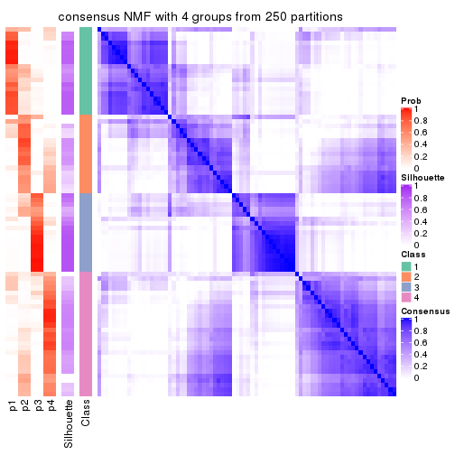
consensus_heatmap(res, k = 5)
consensus_heatmap(res, k = 6)
Heatmaps for the membership of samples in all partitions to see how consistent they are:
membership_heatmap(res, k = 2)
membership_heatmap(res, k = 3)
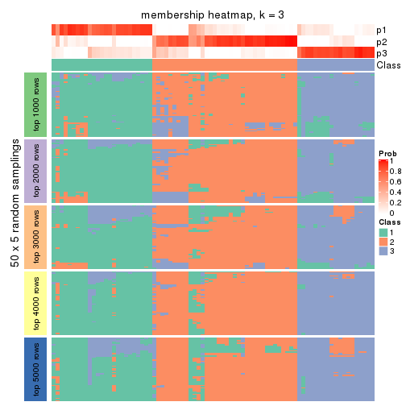
membership_heatmap(res, k = 4)
membership_heatmap(res, k = 5)
membership_heatmap(res, k = 6)
As soon as we have had the classes for columns, we can look for signatures which are significantly different between classes which can be candidate marks for certain classes. Following are the heatmaps for signatures.
Signature heatmaps where rows are scaled:
get_signatures(res, k = 2)
get_signatures(res, k = 3)
get_signatures(res, k = 4)
get_signatures(res, k = 5)
get_signatures(res, k = 6)

Signature heatmaps where rows are not scaled:
get_signatures(res, k = 2, scale_rows = FALSE)
get_signatures(res, k = 3, scale_rows = FALSE)
get_signatures(res, k = 4, scale_rows = FALSE)
get_signatures(res, k = 5, scale_rows = FALSE)
get_signatures(res, k = 6, scale_rows = FALSE)
Compare the overlap of signatures from different k:
compare_signatures(res)
get_signature() returns a data frame invisibly. TO get the list of signatures, the function
call should be assigned to a variable explicitly. In following code, if plot argument is set
to FALSE, no heatmap is plotted while only the differential analysis is performed.
# code only for demonstration
tb = get_signature(res, k = ..., plot = FALSE)
An example of the output of tb is:
#> which_row fdr mean_1 mean_2 scaled_mean_1 scaled_mean_2 km
#> 1 38 0.042760348 8.373488 9.131774 -0.5533452 0.5164555 1
#> 2 40 0.018707592 7.106213 8.469186 -0.6173731 0.5762149 1
#> 3 55 0.019134737 10.221463 11.207825 -0.6159697 0.5749050 1
#> 4 59 0.006059896 5.921854 7.869574 -0.6899429 0.6439467 1
#> 5 60 0.018055526 8.928898 10.211722 -0.6204761 0.5791110 1
#> 6 98 0.009384629 15.714769 14.887706 0.6635654 -0.6193277 2
...
The columns in tb are:
which_row: row indices corresponding to the input matrix.fdr: FDR for the differential test. mean_x: The mean value in group x.scaled_mean_x: The mean value in group x after rows are scaled.km: Row groups if k-means clustering is applied to rows.UMAP plot which shows how samples are separated.
dimension_reduction(res, k = 2, method = "UMAP")
dimension_reduction(res, k = 3, method = "UMAP")
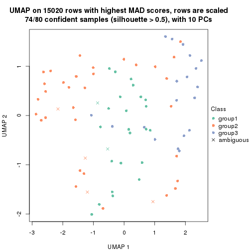
dimension_reduction(res, k = 4, method = "UMAP")
dimension_reduction(res, k = 5, method = "UMAP")
dimension_reduction(res, k = 6, method = "UMAP")
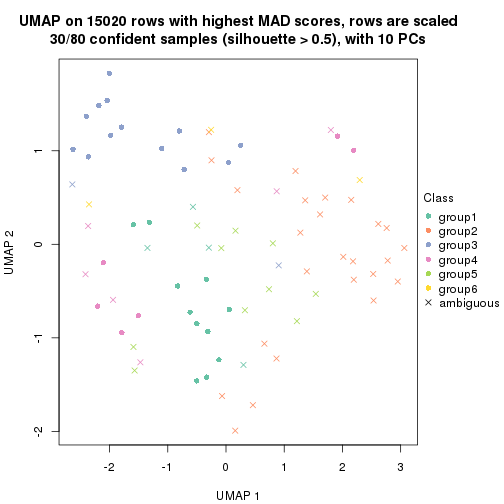
Following heatmap shows how subgroups are split when increasing k:
collect_classes(res)
If matrix rows can be associated to genes, consider to use functional_enrichment(res,
...) to perform function enrichment for the signature genes. See this vignette for more detailed explanations.
The object with results only for a single top-value method and a single partition method can be extracted as:
res = res_list["ATC", "hclust"]
# you can also extract it by
# res = res_list["ATC:hclust"]
A summary of res and all the functions that can be applied to it:
res
#> A 'ConsensusPartition' object with k = 2, 3, 4, 5, 6.
#> On a matrix with 15020 rows and 80 columns.
#> Top rows (1000, 2000, 3000, 4000, 5000) are extracted by 'ATC' method.
#> Subgroups are detected by 'hclust' method.
#> Performed in total 1250 partitions by row resampling.
#> Best k for subgroups seems to be 2.
#>
#> Following methods can be applied to this 'ConsensusPartition' object:
#> [1] "cola_report" "collect_classes" "collect_plots"
#> [4] "collect_stats" "colnames" "compare_signatures"
#> [7] "consensus_heatmap" "dimension_reduction" "functional_enrichment"
#> [10] "get_anno_col" "get_anno" "get_classes"
#> [13] "get_consensus" "get_matrix" "get_membership"
#> [16] "get_param" "get_signatures" "get_stats"
#> [19] "is_best_k" "is_stable_k" "membership_heatmap"
#> [22] "ncol" "nrow" "plot_ecdf"
#> [25] "rownames" "select_partition_number" "show"
#> [28] "suggest_best_k" "test_to_known_factors"
collect_plots() function collects all the plots made from res for all k (number of partitions)
into one single page to provide an easy and fast comparison between different k.
collect_plots(res)
The plots are:
k and the heatmap of
predicted classes for each k.k.k.k.All the plots in panels can be made by individual functions and they are plotted later in this section.
select_partition_number() produces several plots showing different
statistics for choosing “optimized” k. There are following statistics:
k;k, the area increased is defined as \(A_k - A_{k-1}\).The detailed explanations of these statistics can be found in the cola vignette.
Generally speaking, lower PAC score, higher mean silhouette score or higher
concordance corresponds to better partition. Rand index and Jaccard index
measure how similar the current partition is compared to partition with k-1.
If they are too similar, we won't accept k is better than k-1.
select_partition_number(res)
The numeric values for all these statistics can be obtained by get_stats().
get_stats(res)
#> k 1-PAC mean_silhouette concordance area_increased Rand Jaccard
#> 2 2 0.324 0.614 0.811 0.4328 0.497 0.497
#> 3 3 0.289 0.512 0.731 0.3628 0.841 0.686
#> 4 4 0.513 0.674 0.800 0.2000 0.803 0.525
#> 5 5 0.573 0.624 0.773 0.0581 0.959 0.850
#> 6 6 0.600 0.596 0.736 0.0317 0.984 0.929
suggest_best_k() suggests the best \(k\) based on these statistics. The rules are as follows:
suggest_best_k(res)
#> [1] 2
Following shows the table of the partitions (You need to click the show/hide
code output link to see it). The membership matrix (columns with name p*)
is inferred by
clue::cl_consensus()
function with the SE method. Basically the value in the membership matrix
represents the probability to belong to a certain group. The finall class
label for an item is determined with the group with highest probability it
belongs to.
In get_classes() function, the entropy is calculated from the membership
matrix and the silhouette score is calculated from the consensus matrix.
cbind(get_classes(res, k = 2), get_membership(res, k = 2))
#> class entropy silhouette p1 p2
#> SRR1851004 1 0.5842 0.7450 0.860 0.140
#> SRR1851003 2 0.2236 0.7386 0.036 0.964
#> SRR1851002 2 0.2778 0.7427 0.048 0.952
#> SRR1851000 1 0.8813 0.5498 0.700 0.300
#> SRR1851001 2 0.2778 0.7427 0.048 0.952
#> SRR1850998 2 0.0000 0.7180 0.000 1.000
#> SRR1850999 2 0.9635 0.4626 0.388 0.612
#> SRR1850997 2 0.0000 0.7180 0.000 1.000
#> SRR1850996 1 0.8555 0.5890 0.720 0.280
#> SRR1851016 1 0.5842 0.7450 0.860 0.140
#> SRR1851010 2 0.9460 0.5036 0.364 0.636
#> SRR1851014 2 0.9608 0.4715 0.384 0.616
#> SRR1851015 2 0.2236 0.7386 0.036 0.964
#> SRR1851013 2 0.9608 0.4715 0.384 0.616
#> SRR1851012 1 0.9661 0.3227 0.608 0.392
#> SRR1851011 1 0.9686 0.3095 0.604 0.396
#> SRR1851009 2 0.0000 0.7180 0.000 1.000
#> SRR1851008 1 0.0000 0.7816 1.000 0.000
#> SRR1851007 1 0.6531 0.7267 0.832 0.168
#> SRR1851006 2 0.9988 0.1651 0.480 0.520
#> SRR1851005 1 0.9993 -0.0423 0.516 0.484
#> SRR1850995 1 0.8555 0.5890 0.720 0.280
#> SRR1850994 2 0.9358 0.5188 0.352 0.648
#> SRR1850993 1 0.1184 0.7861 0.984 0.016
#> SRR1850992 2 0.0376 0.7205 0.004 0.996
#> SRR1850991 2 0.9170 0.5433 0.332 0.668
#> SRR1850990 1 0.1633 0.7856 0.976 0.024
#> SRR1850989 1 0.1633 0.7856 0.976 0.024
#> SRR1850987 2 0.9998 0.1149 0.492 0.508
#> SRR1850986 1 0.1184 0.7861 0.984 0.016
#> SRR1850985 1 0.0000 0.7816 1.000 0.000
#> SRR1850983 2 0.0000 0.7180 0.000 1.000
#> SRR1850984 2 0.3584 0.7407 0.068 0.932
#> SRR1850981 1 0.9909 0.1298 0.556 0.444
#> SRR1850980 2 0.9552 0.4827 0.376 0.624
#> SRR1850979 2 0.9552 0.4827 0.376 0.624
#> SRR1850978 1 0.1414 0.7865 0.980 0.020
#> SRR1850977 1 0.0000 0.7816 1.000 0.000
#> SRR1850976 1 0.9661 0.3227 0.608 0.392
#> SRR1850975 1 0.9661 0.3227 0.608 0.392
#> SRR1850974 2 0.4298 0.7351 0.088 0.912
#> SRR1850973 2 0.2236 0.7386 0.036 0.964
#> SRR1850972 1 0.1414 0.7865 0.980 0.020
#> SRR1850970 1 0.8499 0.5597 0.724 0.276
#> SRR1850971 1 0.1414 0.7865 0.980 0.020
#> SRR1850968 1 0.9661 0.3227 0.608 0.392
#> SRR1850969 2 0.0000 0.7180 0.000 1.000
#> SRR1850967 1 0.9661 0.3227 0.608 0.392
#> SRR1850966 2 0.2948 0.7432 0.052 0.948
#> SRR1850965 2 0.2948 0.7432 0.052 0.948
#> SRR1850964 1 0.5294 0.7552 0.880 0.120
#> SRR1850963 2 0.2948 0.7430 0.052 0.948
#> SRR1850962 1 0.0000 0.7816 1.000 0.000
#> SRR1850961 1 0.0000 0.7816 1.000 0.000
#> SRR1850959 2 0.9552 0.4827 0.376 0.624
#> SRR1850960 2 0.9552 0.4827 0.376 0.624
#> SRR1850958 1 0.5842 0.7450 0.860 0.140
#> SRR1850988 2 0.9998 0.1149 0.492 0.508
#> SRR1850957 1 0.6531 0.7243 0.832 0.168
#> SRR1850956 1 0.8608 0.5828 0.716 0.284
#> SRR1850955 1 0.8608 0.5828 0.716 0.284
#> SRR1850953 2 0.9996 0.1554 0.488 0.512
#> SRR1850954 2 0.9996 0.1554 0.488 0.512
#> SRR1850952 1 0.0938 0.7855 0.988 0.012
#> SRR1850982 2 0.2778 0.7427 0.048 0.952
#> SRR1850951 1 0.0000 0.7816 1.000 0.000
#> SRR1850950 2 0.4431 0.7336 0.092 0.908
#> SRR1850949 2 0.4431 0.7336 0.092 0.908
#> SRR1850948 1 0.0000 0.7816 1.000 0.000
#> SRR1850947 1 0.0000 0.7816 1.000 0.000
#> SRR1850946 1 0.0672 0.7845 0.992 0.008
#> SRR1850945 2 0.3114 0.7427 0.056 0.944
#> SRR1850944 1 0.5294 0.7552 0.880 0.120
#> SRR1850943 1 0.9286 0.4283 0.656 0.344
#> SRR1850942 1 0.0000 0.7816 1.000 0.000
#> SRR1850940 1 0.0672 0.7845 0.992 0.008
#> SRR1850941 1 0.0000 0.7816 1.000 0.000
#> SRR1850938 2 0.8608 0.5966 0.284 0.716
#> SRR1850939 1 0.0672 0.7845 0.992 0.008
#> SRR1850937 2 0.0000 0.7180 0.000 1.000
cbind(get_classes(res, k = 3), get_membership(res, k = 3))
#> class entropy silhouette p1 p2 p3
#> SRR1851004 1 0.0661 0.6802 0.988 0.008 0.004
#> SRR1851003 2 0.2400 0.6576 0.064 0.932 0.004
#> SRR1851002 2 0.3500 0.6795 0.116 0.880 0.004
#> SRR1851000 1 0.8767 0.2597 0.588 0.208 0.204
#> SRR1851001 2 0.3500 0.6795 0.116 0.880 0.004
#> SRR1850998 2 0.0892 0.6060 0.000 0.980 0.020
#> SRR1850999 2 0.9491 0.4732 0.292 0.488 0.220
#> SRR1850997 2 0.0892 0.6060 0.000 0.980 0.020
#> SRR1850996 1 0.8125 0.3826 0.648 0.172 0.180
#> SRR1851016 1 0.0661 0.6802 0.988 0.008 0.004
#> SRR1851010 2 0.9355 0.4945 0.232 0.516 0.252
#> SRR1851014 2 0.9512 0.4724 0.260 0.492 0.248
#> SRR1851015 2 0.2200 0.6538 0.056 0.940 0.004
#> SRR1851013 2 0.9512 0.4724 0.260 0.492 0.248
#> SRR1851012 3 0.9809 0.1148 0.284 0.284 0.432
#> SRR1851011 3 0.9823 0.0999 0.284 0.288 0.428
#> SRR1851009 2 0.0892 0.6060 0.000 0.980 0.020
#> SRR1851008 1 0.6111 0.4445 0.604 0.000 0.396
#> SRR1851007 1 0.5263 0.6224 0.824 0.060 0.116
#> SRR1851006 2 0.9929 0.2883 0.312 0.392 0.296
#> SRR1851005 2 0.9987 0.1800 0.312 0.356 0.332
#> SRR1850995 1 0.8125 0.3826 0.648 0.172 0.180
#> SRR1850994 2 0.9272 0.5036 0.232 0.528 0.240
#> SRR1850993 1 0.4121 0.6820 0.832 0.000 0.168
#> SRR1850992 2 0.1453 0.6252 0.024 0.968 0.008
#> SRR1850991 2 0.9111 0.5158 0.212 0.548 0.240
#> SRR1850990 1 0.3752 0.6838 0.856 0.000 0.144
#> SRR1850989 1 0.3752 0.6838 0.856 0.000 0.144
#> SRR1850987 2 0.9811 0.2824 0.376 0.384 0.240
#> SRR1850986 1 0.4121 0.6820 0.832 0.000 0.168
#> SRR1850985 1 0.5905 0.4784 0.648 0.000 0.352
#> SRR1850983 2 0.0892 0.6060 0.000 0.980 0.020
#> SRR1850984 2 0.3965 0.6794 0.132 0.860 0.008
#> SRR1850981 1 0.9824 -0.3057 0.416 0.328 0.256
#> SRR1850980 2 0.9487 0.4787 0.260 0.496 0.244
#> SRR1850979 2 0.9487 0.4787 0.260 0.496 0.244
#> SRR1850978 1 0.4178 0.6830 0.828 0.000 0.172
#> SRR1850977 1 0.5733 0.5545 0.676 0.000 0.324
#> SRR1850976 3 0.9809 0.1148 0.284 0.284 0.432
#> SRR1850975 3 0.9809 0.1148 0.284 0.284 0.432
#> SRR1850974 2 0.4575 0.6741 0.160 0.828 0.012
#> SRR1850973 2 0.2200 0.6538 0.056 0.940 0.004
#> SRR1850972 1 0.4178 0.6830 0.828 0.000 0.172
#> SRR1850970 3 0.8286 0.3912 0.140 0.236 0.624
#> SRR1850971 1 0.4178 0.6830 0.828 0.000 0.172
#> SRR1850968 3 0.9809 0.1148 0.284 0.284 0.432
#> SRR1850969 2 0.0892 0.6060 0.000 0.980 0.020
#> SRR1850967 3 0.9809 0.1148 0.284 0.284 0.432
#> SRR1850966 2 0.3682 0.6801 0.116 0.876 0.008
#> SRR1850965 2 0.3682 0.6801 0.116 0.876 0.008
#> SRR1850964 1 0.2096 0.6901 0.944 0.004 0.052
#> SRR1850963 2 0.3116 0.6768 0.108 0.892 0.000
#> SRR1850962 3 0.1964 0.5779 0.056 0.000 0.944
#> SRR1850961 3 0.1964 0.5779 0.056 0.000 0.944
#> SRR1850959 2 0.9487 0.4787 0.260 0.496 0.244
#> SRR1850960 2 0.9487 0.4787 0.260 0.496 0.244
#> SRR1850958 1 0.0661 0.6802 0.988 0.008 0.004
#> SRR1850988 2 0.9811 0.2824 0.376 0.384 0.240
#> SRR1850957 1 0.1711 0.6678 0.960 0.032 0.008
#> SRR1850956 1 0.8172 0.3778 0.644 0.176 0.180
#> SRR1850955 1 0.8172 0.3778 0.644 0.176 0.180
#> SRR1850953 2 0.9873 0.2956 0.348 0.392 0.260
#> SRR1850954 2 0.9873 0.2956 0.348 0.392 0.260
#> SRR1850952 3 0.3686 0.5088 0.140 0.000 0.860
#> SRR1850982 2 0.3267 0.6789 0.116 0.884 0.000
#> SRR1850951 3 0.1964 0.5779 0.056 0.000 0.944
#> SRR1850950 2 0.4723 0.6735 0.160 0.824 0.016
#> SRR1850949 2 0.4723 0.6735 0.160 0.824 0.016
#> SRR1850948 3 0.1031 0.5876 0.024 0.000 0.976
#> SRR1850947 3 0.1031 0.5876 0.024 0.000 0.976
#> SRR1850946 1 0.6126 0.4433 0.600 0.000 0.400
#> SRR1850945 2 0.3715 0.6799 0.128 0.868 0.004
#> SRR1850944 1 0.2096 0.6901 0.944 0.004 0.052
#> SRR1850943 1 0.4834 0.5072 0.792 0.204 0.004
#> SRR1850942 3 0.1031 0.5876 0.024 0.000 0.976
#> SRR1850940 3 0.2261 0.5783 0.068 0.000 0.932
#> SRR1850941 3 0.1031 0.5876 0.024 0.000 0.976
#> SRR1850938 2 0.8522 0.5687 0.204 0.612 0.184
#> SRR1850939 3 0.2261 0.5783 0.068 0.000 0.932
#> SRR1850937 2 0.0892 0.6060 0.000 0.980 0.020
cbind(get_classes(res, k = 4), get_membership(res, k = 4))
#> class entropy silhouette p1 p2 p3 p4
#> SRR1851004 1 0.0000 0.6850 1.000 0.000 0.000 0.000
#> SRR1851003 2 0.3172 0.8001 0.000 0.840 0.000 0.160
#> SRR1851002 2 0.4331 0.7467 0.000 0.712 0.000 0.288
#> SRR1851000 1 0.6503 0.2203 0.480 0.000 0.072 0.448
#> SRR1851001 2 0.4331 0.7467 0.000 0.712 0.000 0.288
#> SRR1850998 2 0.0000 0.7905 0.000 1.000 0.000 0.000
#> SRR1850999 4 0.4610 0.7332 0.052 0.136 0.008 0.804
#> SRR1850997 2 0.0000 0.7905 0.000 1.000 0.000 0.000
#> SRR1850996 1 0.6252 0.3227 0.512 0.000 0.056 0.432
#> SRR1851016 1 0.0000 0.6850 1.000 0.000 0.000 0.000
#> SRR1851010 4 0.2868 0.7462 0.000 0.136 0.000 0.864
#> SRR1851014 4 0.3231 0.7602 0.012 0.116 0.004 0.868
#> SRR1851015 2 0.2345 0.8091 0.000 0.900 0.000 0.100
#> SRR1851013 4 0.3231 0.7602 0.012 0.116 0.004 0.868
#> SRR1851012 4 0.2704 0.7141 0.000 0.000 0.124 0.876
#> SRR1851011 4 0.2647 0.7165 0.000 0.000 0.120 0.880
#> SRR1851009 2 0.0000 0.7905 0.000 1.000 0.000 0.000
#> SRR1851008 1 0.4967 0.3671 0.548 0.000 0.452 0.000
#> SRR1851007 1 0.5756 0.6388 0.692 0.000 0.084 0.224
#> SRR1851006 4 0.0469 0.7580 0.000 0.012 0.000 0.988
#> SRR1851005 4 0.0817 0.7512 0.000 0.000 0.024 0.976
#> SRR1850995 1 0.6252 0.3227 0.512 0.000 0.056 0.432
#> SRR1850994 4 0.3774 0.7262 0.008 0.168 0.004 0.820
#> SRR1850993 1 0.3448 0.7031 0.828 0.000 0.168 0.004
#> SRR1850992 2 0.2081 0.7923 0.000 0.916 0.000 0.084
#> SRR1850991 4 0.3356 0.7183 0.000 0.176 0.000 0.824
#> SRR1850990 1 0.3157 0.7071 0.852 0.000 0.144 0.004
#> SRR1850989 1 0.3157 0.7071 0.852 0.000 0.144 0.004
#> SRR1850987 4 0.3803 0.7354 0.132 0.032 0.000 0.836
#> SRR1850986 1 0.3448 0.7031 0.828 0.000 0.168 0.004
#> SRR1850985 1 0.4877 0.4396 0.592 0.000 0.408 0.000
#> SRR1850983 2 0.0000 0.7905 0.000 1.000 0.000 0.000
#> SRR1850984 2 0.4382 0.7334 0.000 0.704 0.000 0.296
#> SRR1850981 4 0.4754 0.5779 0.228 0.008 0.016 0.748
#> SRR1850980 4 0.2918 0.7588 0.008 0.116 0.000 0.876
#> SRR1850979 4 0.2918 0.7588 0.008 0.116 0.000 0.876
#> SRR1850978 1 0.4139 0.7033 0.800 0.000 0.176 0.024
#> SRR1850977 1 0.4950 0.5193 0.620 0.000 0.376 0.004
#> SRR1850976 4 0.2704 0.7141 0.000 0.000 0.124 0.876
#> SRR1850975 4 0.2704 0.7141 0.000 0.000 0.124 0.876
#> SRR1850974 4 0.4981 -0.0497 0.000 0.464 0.000 0.536
#> SRR1850973 2 0.2345 0.8091 0.000 0.900 0.000 0.100
#> SRR1850972 1 0.3808 0.7032 0.812 0.000 0.176 0.012
#> SRR1850970 4 0.5602 0.2072 0.024 0.000 0.408 0.568
#> SRR1850971 1 0.3808 0.7032 0.812 0.000 0.176 0.012
#> SRR1850968 4 0.2704 0.7141 0.000 0.000 0.124 0.876
#> SRR1850969 2 0.0000 0.7905 0.000 1.000 0.000 0.000
#> SRR1850967 4 0.2704 0.7141 0.000 0.000 0.124 0.876
#> SRR1850966 2 0.4500 0.7133 0.000 0.684 0.000 0.316
#> SRR1850965 2 0.4500 0.7133 0.000 0.684 0.000 0.316
#> SRR1850964 1 0.3934 0.7093 0.836 0.000 0.048 0.116
#> SRR1850963 2 0.4331 0.7459 0.000 0.712 0.000 0.288
#> SRR1850962 3 0.0000 0.9319 0.000 0.000 1.000 0.000
#> SRR1850961 3 0.0000 0.9319 0.000 0.000 1.000 0.000
#> SRR1850959 4 0.2918 0.7588 0.008 0.116 0.000 0.876
#> SRR1850960 4 0.2918 0.7588 0.008 0.116 0.000 0.876
#> SRR1850958 1 0.0000 0.6850 1.000 0.000 0.000 0.000
#> SRR1850988 4 0.3803 0.7354 0.132 0.032 0.000 0.836
#> SRR1850957 1 0.2179 0.6849 0.924 0.012 0.000 0.064
#> SRR1850956 1 0.6425 0.3075 0.504 0.004 0.056 0.436
#> SRR1850955 1 0.6425 0.3075 0.504 0.004 0.056 0.436
#> SRR1850953 4 0.5248 0.6865 0.156 0.060 0.016 0.768
#> SRR1850954 4 0.5248 0.6865 0.156 0.060 0.016 0.768
#> SRR1850952 3 0.3047 0.8221 0.116 0.000 0.872 0.012
#> SRR1850982 2 0.4304 0.7499 0.000 0.716 0.000 0.284
#> SRR1850951 3 0.0188 0.9336 0.000 0.000 0.996 0.004
#> SRR1850950 4 0.4977 -0.0318 0.000 0.460 0.000 0.540
#> SRR1850949 4 0.4977 -0.0318 0.000 0.460 0.000 0.540
#> SRR1850948 3 0.1940 0.9396 0.000 0.000 0.924 0.076
#> SRR1850947 3 0.1940 0.9396 0.000 0.000 0.924 0.076
#> SRR1850946 1 0.5602 0.3879 0.568 0.000 0.408 0.024
#> SRR1850945 2 0.4564 0.6913 0.000 0.672 0.000 0.328
#> SRR1850944 1 0.3934 0.7093 0.836 0.000 0.048 0.116
#> SRR1850943 1 0.4758 0.5455 0.780 0.156 0.000 0.064
#> SRR1850942 3 0.1792 0.9426 0.000 0.000 0.932 0.068
#> SRR1850940 3 0.2319 0.9318 0.036 0.000 0.924 0.040
#> SRR1850941 3 0.1792 0.9426 0.000 0.000 0.932 0.068
#> SRR1850938 4 0.4008 0.6093 0.000 0.244 0.000 0.756
#> SRR1850939 3 0.2319 0.9318 0.036 0.000 0.924 0.040
#> SRR1850937 2 0.0000 0.7905 0.000 1.000 0.000 0.000
cbind(get_classes(res, k = 5), get_membership(res, k = 5))
#> class entropy silhouette p1 p2 p3 p4 p5
#> SRR1851004 5 0.3508 0.6493 0.252 0.000 0.000 0.000 0.748
#> SRR1851003 2 0.3210 0.7562 0.000 0.788 0.000 0.212 0.000
#> SRR1851002 2 0.4138 0.6893 0.000 0.616 0.000 0.384 0.000
#> SRR1851000 1 0.5733 0.2788 0.476 0.000 0.000 0.440 0.084
#> SRR1851001 2 0.4138 0.6893 0.000 0.616 0.000 0.384 0.000
#> SRR1850998 2 0.0162 0.6912 0.000 0.996 0.000 0.000 0.004
#> SRR1850999 4 0.2124 0.7349 0.000 0.028 0.000 0.916 0.056
#> SRR1850997 2 0.0162 0.6912 0.000 0.996 0.000 0.000 0.004
#> SRR1850996 1 0.4489 0.4047 0.572 0.000 0.000 0.420 0.008
#> SRR1851016 5 0.3661 0.6295 0.276 0.000 0.000 0.000 0.724
#> SRR1851010 4 0.1603 0.7516 0.004 0.032 0.004 0.948 0.012
#> SRR1851014 4 0.0613 0.7603 0.000 0.008 0.004 0.984 0.004
#> SRR1851015 2 0.2648 0.7575 0.000 0.848 0.000 0.152 0.000
#> SRR1851013 4 0.0613 0.7603 0.000 0.008 0.004 0.984 0.004
#> SRR1851012 4 0.5223 0.6682 0.012 0.000 0.172 0.708 0.108
#> SRR1851011 4 0.5152 0.6728 0.012 0.000 0.164 0.716 0.108
#> SRR1851009 2 0.0162 0.6912 0.000 0.996 0.000 0.000 0.004
#> SRR1851008 5 0.6367 0.4535 0.232 0.000 0.248 0.000 0.520
#> SRR1851007 1 0.7087 0.1101 0.456 0.000 0.024 0.216 0.304
#> SRR1851006 4 0.3289 0.7420 0.004 0.000 0.048 0.852 0.096
#> SRR1851005 4 0.3859 0.7264 0.004 0.000 0.084 0.816 0.096
#> SRR1850995 1 0.4489 0.4047 0.572 0.000 0.000 0.420 0.008
#> SRR1850994 4 0.1571 0.7320 0.004 0.060 0.000 0.936 0.000
#> SRR1850993 1 0.0290 0.5708 0.992 0.000 0.000 0.000 0.008
#> SRR1850992 2 0.3039 0.7312 0.000 0.808 0.000 0.192 0.000
#> SRR1850991 4 0.1544 0.7267 0.000 0.068 0.000 0.932 0.000
#> SRR1850990 1 0.1478 0.5407 0.936 0.000 0.000 0.000 0.064
#> SRR1850989 1 0.1478 0.5407 0.936 0.000 0.000 0.000 0.064
#> SRR1850987 4 0.2942 0.6955 0.128 0.008 0.000 0.856 0.008
#> SRR1850986 1 0.0290 0.5708 0.992 0.000 0.000 0.000 0.008
#> SRR1850985 5 0.6443 0.4910 0.276 0.000 0.224 0.000 0.500
#> SRR1850983 2 0.0162 0.6912 0.000 0.996 0.000 0.000 0.004
#> SRR1850984 2 0.4299 0.6751 0.000 0.608 0.000 0.388 0.004
#> SRR1850981 4 0.3728 0.5262 0.244 0.000 0.000 0.748 0.008
#> SRR1850980 4 0.0290 0.7595 0.000 0.008 0.000 0.992 0.000
#> SRR1850979 4 0.0290 0.7595 0.000 0.008 0.000 0.992 0.000
#> SRR1850978 1 0.1095 0.5778 0.968 0.000 0.008 0.012 0.012
#> SRR1850977 1 0.4123 0.3081 0.788 0.000 0.108 0.000 0.104
#> SRR1850976 4 0.5223 0.6682 0.012 0.000 0.172 0.708 0.108
#> SRR1850975 4 0.5223 0.6682 0.012 0.000 0.172 0.708 0.108
#> SRR1850974 4 0.4354 0.0107 0.000 0.368 0.000 0.624 0.008
#> SRR1850973 2 0.2648 0.7575 0.000 0.848 0.000 0.152 0.000
#> SRR1850972 1 0.0613 0.5741 0.984 0.000 0.008 0.004 0.004
#> SRR1850970 4 0.6738 0.2522 0.060 0.000 0.384 0.480 0.076
#> SRR1850971 1 0.0613 0.5741 0.984 0.000 0.008 0.004 0.004
#> SRR1850968 4 0.5223 0.6682 0.012 0.000 0.172 0.708 0.108
#> SRR1850969 2 0.0162 0.6912 0.000 0.996 0.000 0.000 0.004
#> SRR1850967 4 0.5223 0.6682 0.012 0.000 0.172 0.708 0.108
#> SRR1850966 2 0.4210 0.6548 0.000 0.588 0.000 0.412 0.000
#> SRR1850965 2 0.4210 0.6548 0.000 0.588 0.000 0.412 0.000
#> SRR1850964 1 0.3970 0.5521 0.800 0.000 0.000 0.104 0.096
#> SRR1850963 2 0.4138 0.6876 0.000 0.616 0.000 0.384 0.000
#> SRR1850962 3 0.3865 0.7992 0.092 0.000 0.808 0.000 0.100
#> SRR1850961 3 0.3865 0.7992 0.092 0.000 0.808 0.000 0.100
#> SRR1850959 4 0.0290 0.7595 0.000 0.008 0.000 0.992 0.000
#> SRR1850960 4 0.0290 0.7595 0.000 0.008 0.000 0.992 0.000
#> SRR1850958 5 0.3508 0.6493 0.252 0.000 0.000 0.000 0.748
#> SRR1850988 4 0.2942 0.6955 0.128 0.008 0.000 0.856 0.008
#> SRR1850957 5 0.4741 0.6150 0.204 0.004 0.000 0.068 0.724
#> SRR1850956 1 0.4504 0.3902 0.564 0.000 0.000 0.428 0.008
#> SRR1850955 1 0.4504 0.3902 0.564 0.000 0.000 0.428 0.008
#> SRR1850953 4 0.3132 0.6385 0.172 0.000 0.000 0.820 0.008
#> SRR1850954 4 0.3132 0.6385 0.172 0.000 0.000 0.820 0.008
#> SRR1850952 3 0.3170 0.7584 0.160 0.000 0.828 0.004 0.008
#> SRR1850982 2 0.4126 0.6918 0.000 0.620 0.000 0.380 0.000
#> SRR1850951 3 0.2770 0.8542 0.044 0.000 0.880 0.000 0.076
#> SRR1850950 4 0.4341 0.0283 0.000 0.364 0.000 0.628 0.008
#> SRR1850949 4 0.4341 0.0283 0.000 0.364 0.000 0.628 0.008
#> SRR1850948 3 0.1179 0.8678 0.016 0.000 0.964 0.004 0.016
#> SRR1850947 3 0.1179 0.8678 0.016 0.000 0.964 0.004 0.016
#> SRR1850946 5 0.6562 0.4430 0.244 0.000 0.284 0.000 0.472
#> SRR1850945 2 0.4375 0.6316 0.000 0.576 0.000 0.420 0.004
#> SRR1850944 1 0.3970 0.5521 0.800 0.000 0.000 0.104 0.096
#> SRR1850943 5 0.4879 0.5268 0.032 0.056 0.000 0.164 0.748
#> SRR1850942 3 0.1278 0.8756 0.020 0.000 0.960 0.004 0.016
#> SRR1850940 3 0.2813 0.8675 0.064 0.000 0.884 0.004 0.048
#> SRR1850941 3 0.1278 0.8756 0.020 0.000 0.960 0.004 0.016
#> SRR1850938 4 0.3190 0.6305 0.000 0.140 0.008 0.840 0.012
#> SRR1850939 3 0.2813 0.8675 0.064 0.000 0.884 0.004 0.048
#> SRR1850937 2 0.0162 0.6912 0.000 0.996 0.000 0.000 0.004
cbind(get_classes(res, k = 6), get_membership(res, k = 6))
#> class entropy silhouette p1 p2 p3 p4 p5 p6
#> SRR1851004 5 0.4832 0.7486 0.108 0.000 0.000 0.000 0.648 0.244
#> SRR1851003 2 0.2912 0.7419 0.000 0.784 0.000 0.216 0.000 0.000
#> SRR1851002 2 0.3862 0.6708 0.000 0.608 0.000 0.388 0.000 0.004
#> SRR1851000 1 0.5893 0.3353 0.480 0.000 0.000 0.396 0.084 0.040
#> SRR1851001 2 0.3862 0.6708 0.000 0.608 0.000 0.388 0.000 0.004
#> SRR1850998 2 0.0146 0.6726 0.000 0.996 0.000 0.000 0.000 0.004
#> SRR1850999 4 0.2585 0.6976 0.000 0.012 0.000 0.880 0.084 0.024
#> SRR1850997 2 0.0146 0.6726 0.000 0.996 0.000 0.000 0.000 0.004
#> SRR1850996 1 0.4332 0.4377 0.564 0.000 0.004 0.416 0.016 0.000
#> SRR1851016 5 0.5442 0.6156 0.136 0.000 0.000 0.000 0.528 0.336
#> SRR1851010 4 0.3488 0.6881 0.004 0.028 0.004 0.808 0.152 0.004
#> SRR1851014 4 0.1411 0.7151 0.000 0.000 0.004 0.936 0.060 0.000
#> SRR1851015 2 0.2558 0.7424 0.000 0.840 0.000 0.156 0.004 0.000
#> SRR1851013 4 0.1411 0.7151 0.000 0.000 0.004 0.936 0.060 0.000
#> SRR1851012 4 0.5647 0.6030 0.004 0.000 0.184 0.552 0.260 0.000
#> SRR1851011 4 0.5703 0.6078 0.004 0.000 0.172 0.560 0.260 0.004
#> SRR1851009 2 0.0146 0.6726 0.000 0.996 0.000 0.000 0.000 0.004
#> SRR1851008 6 0.2445 0.8744 0.020 0.000 0.056 0.000 0.028 0.896
#> SRR1851007 1 0.6438 0.2515 0.444 0.000 0.000 0.212 0.028 0.316
#> SRR1851006 4 0.4245 0.6790 0.004 0.000 0.044 0.696 0.256 0.000
#> SRR1851005 4 0.4728 0.6629 0.004 0.000 0.080 0.660 0.256 0.000
#> SRR1850995 1 0.4332 0.4377 0.564 0.000 0.004 0.416 0.016 0.000
#> SRR1850994 4 0.1578 0.6809 0.004 0.048 0.000 0.936 0.012 0.000
#> SRR1850993 1 0.0405 0.6330 0.988 0.000 0.004 0.000 0.008 0.000
#> SRR1850992 2 0.3078 0.7069 0.000 0.796 0.000 0.192 0.012 0.000
#> SRR1850991 4 0.1563 0.6801 0.000 0.056 0.000 0.932 0.012 0.000
#> SRR1850990 1 0.1838 0.6050 0.916 0.000 0.000 0.000 0.016 0.068
#> SRR1850989 1 0.1838 0.6050 0.916 0.000 0.000 0.000 0.016 0.068
#> SRR1850987 4 0.2784 0.6222 0.124 0.000 0.000 0.848 0.028 0.000
#> SRR1850986 1 0.0405 0.6330 0.988 0.000 0.004 0.000 0.008 0.000
#> SRR1850985 6 0.3041 0.8431 0.044 0.000 0.056 0.000 0.036 0.864
#> SRR1850983 2 0.0146 0.6726 0.000 0.996 0.000 0.000 0.000 0.004
#> SRR1850984 2 0.4171 0.6555 0.000 0.604 0.000 0.380 0.012 0.004
#> SRR1850981 4 0.3858 0.4249 0.236 0.000 0.004 0.732 0.028 0.000
#> SRR1850980 4 0.0000 0.7082 0.000 0.000 0.000 1.000 0.000 0.000
#> SRR1850979 4 0.0000 0.7082 0.000 0.000 0.000 1.000 0.000 0.000
#> SRR1850978 1 0.1337 0.6382 0.956 0.000 0.008 0.008 0.016 0.012
#> SRR1850977 1 0.3637 0.3983 0.780 0.000 0.056 0.000 0.000 0.164
#> SRR1850976 4 0.5647 0.6030 0.004 0.000 0.184 0.552 0.260 0.000
#> SRR1850975 4 0.5647 0.6030 0.004 0.000 0.184 0.552 0.260 0.000
#> SRR1850974 4 0.5297 -0.0554 0.000 0.364 0.000 0.536 0.096 0.004
#> SRR1850973 2 0.2416 0.7428 0.000 0.844 0.000 0.156 0.000 0.000
#> SRR1850972 1 0.0622 0.6353 0.980 0.000 0.008 0.000 0.000 0.012
#> SRR1850970 3 0.7730 -0.1380 0.044 0.000 0.356 0.336 0.184 0.080
#> SRR1850971 1 0.0622 0.6353 0.980 0.000 0.008 0.000 0.000 0.012
#> SRR1850968 4 0.5647 0.6030 0.004 0.000 0.184 0.552 0.260 0.000
#> SRR1850969 2 0.0291 0.6708 0.000 0.992 0.000 0.000 0.004 0.004
#> SRR1850967 4 0.5647 0.6030 0.004 0.000 0.184 0.552 0.260 0.000
#> SRR1850966 2 0.3923 0.6344 0.000 0.580 0.000 0.416 0.000 0.004
#> SRR1850965 2 0.3923 0.6344 0.000 0.580 0.000 0.416 0.000 0.004
#> SRR1850964 1 0.4245 0.6086 0.780 0.000 0.000 0.100 0.052 0.068
#> SRR1850963 2 0.3996 0.6684 0.000 0.604 0.000 0.388 0.004 0.004
#> SRR1850962 3 0.3881 0.4543 0.000 0.000 0.600 0.000 0.004 0.396
#> SRR1850961 3 0.3881 0.4543 0.000 0.000 0.600 0.000 0.004 0.396
#> SRR1850959 4 0.0000 0.7082 0.000 0.000 0.000 1.000 0.000 0.000
#> SRR1850960 4 0.0000 0.7082 0.000 0.000 0.000 1.000 0.000 0.000
#> SRR1850958 5 0.4832 0.7486 0.108 0.000 0.000 0.000 0.648 0.244
#> SRR1850988 4 0.2784 0.6222 0.124 0.000 0.000 0.848 0.028 0.000
#> SRR1850957 5 0.5960 0.6439 0.144 0.000 0.000 0.052 0.596 0.208
#> SRR1850956 1 0.4415 0.4277 0.556 0.000 0.004 0.420 0.020 0.000
#> SRR1850955 1 0.4415 0.4277 0.556 0.000 0.004 0.420 0.020 0.000
#> SRR1850953 4 0.3053 0.5529 0.172 0.000 0.004 0.812 0.012 0.000
#> SRR1850954 4 0.3053 0.5529 0.172 0.000 0.004 0.812 0.012 0.000
#> SRR1850952 3 0.4292 0.5967 0.120 0.000 0.748 0.000 0.008 0.124
#> SRR1850982 2 0.3852 0.6734 0.000 0.612 0.000 0.384 0.000 0.004
#> SRR1850951 3 0.3109 0.6397 0.000 0.000 0.772 0.000 0.004 0.224
#> SRR1850950 4 0.5289 -0.0382 0.000 0.360 0.000 0.540 0.096 0.004
#> SRR1850949 4 0.5289 -0.0382 0.000 0.360 0.000 0.540 0.096 0.004
#> SRR1850948 3 0.0146 0.7080 0.000 0.000 0.996 0.000 0.004 0.000
#> SRR1850947 3 0.0146 0.7080 0.000 0.000 0.996 0.000 0.004 0.000
#> SRR1850946 6 0.3374 0.8232 0.032 0.000 0.096 0.000 0.036 0.836
#> SRR1850945 2 0.4165 0.6089 0.000 0.568 0.000 0.420 0.008 0.004
#> SRR1850944 1 0.4305 0.6067 0.776 0.000 0.000 0.100 0.056 0.068
#> SRR1850943 5 0.5603 0.4989 0.008 0.036 0.000 0.152 0.656 0.148
#> SRR1850942 3 0.0858 0.7120 0.000 0.000 0.968 0.000 0.004 0.028
#> SRR1850940 3 0.3076 0.6887 0.044 0.000 0.840 0.000 0.004 0.112
#> SRR1850941 3 0.0858 0.7120 0.000 0.000 0.968 0.000 0.004 0.028
#> SRR1850938 4 0.4845 0.5629 0.000 0.136 0.008 0.700 0.152 0.004
#> SRR1850939 3 0.3076 0.6887 0.044 0.000 0.840 0.000 0.004 0.112
#> SRR1850937 2 0.0291 0.6708 0.000 0.992 0.000 0.000 0.004 0.004
Heatmaps for the consensus matrix. It visualizes the probability of two samples to be in a same group.
consensus_heatmap(res, k = 2)
consensus_heatmap(res, k = 3)
consensus_heatmap(res, k = 4)
consensus_heatmap(res, k = 5)
consensus_heatmap(res, k = 6)
Heatmaps for the membership of samples in all partitions to see how consistent they are:
membership_heatmap(res, k = 2)

membership_heatmap(res, k = 3)
membership_heatmap(res, k = 4)
membership_heatmap(res, k = 5)
membership_heatmap(res, k = 6)
As soon as we have had the classes for columns, we can look for signatures which are significantly different between classes which can be candidate marks for certain classes. Following are the heatmaps for signatures.
Signature heatmaps where rows are scaled:
get_signatures(res, k = 2)
get_signatures(res, k = 3)
get_signatures(res, k = 4)
get_signatures(res, k = 5)
get_signatures(res, k = 6)
Signature heatmaps where rows are not scaled:
get_signatures(res, k = 2, scale_rows = FALSE)

get_signatures(res, k = 3, scale_rows = FALSE)
get_signatures(res, k = 4, scale_rows = FALSE)
get_signatures(res, k = 5, scale_rows = FALSE)
get_signatures(res, k = 6, scale_rows = FALSE)
Compare the overlap of signatures from different k:
compare_signatures(res)

get_signature() returns a data frame invisibly. TO get the list of signatures, the function
call should be assigned to a variable explicitly. In following code, if plot argument is set
to FALSE, no heatmap is plotted while only the differential analysis is performed.
# code only for demonstration
tb = get_signature(res, k = ..., plot = FALSE)
An example of the output of tb is:
#> which_row fdr mean_1 mean_2 scaled_mean_1 scaled_mean_2 km
#> 1 38 0.042760348 8.373488 9.131774 -0.5533452 0.5164555 1
#> 2 40 0.018707592 7.106213 8.469186 -0.6173731 0.5762149 1
#> 3 55 0.019134737 10.221463 11.207825 -0.6159697 0.5749050 1
#> 4 59 0.006059896 5.921854 7.869574 -0.6899429 0.6439467 1
#> 5 60 0.018055526 8.928898 10.211722 -0.6204761 0.5791110 1
#> 6 98 0.009384629 15.714769 14.887706 0.6635654 -0.6193277 2
...
The columns in tb are:
which_row: row indices corresponding to the input matrix.fdr: FDR for the differential test. mean_x: The mean value in group x.scaled_mean_x: The mean value in group x after rows are scaled.km: Row groups if k-means clustering is applied to rows.UMAP plot which shows how samples are separated.
dimension_reduction(res, k = 2, method = "UMAP")
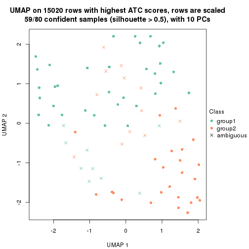
dimension_reduction(res, k = 3, method = "UMAP")
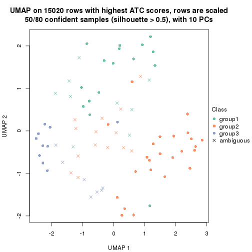
dimension_reduction(res, k = 4, method = "UMAP")
dimension_reduction(res, k = 5, method = "UMAP")
dimension_reduction(res, k = 6, method = "UMAP")
Following heatmap shows how subgroups are split when increasing k:
collect_classes(res)
If matrix rows can be associated to genes, consider to use functional_enrichment(res,
...) to perform function enrichment for the signature genes. See this vignette for more detailed explanations.
The object with results only for a single top-value method and a single partition method can be extracted as:
res = res_list["ATC", "kmeans"]
# you can also extract it by
# res = res_list["ATC:kmeans"]
A summary of res and all the functions that can be applied to it:
res
#> A 'ConsensusPartition' object with k = 2, 3, 4, 5, 6.
#> On a matrix with 15020 rows and 80 columns.
#> Top rows (1000, 2000, 3000, 4000, 5000) are extracted by 'ATC' method.
#> Subgroups are detected by 'kmeans' method.
#> Performed in total 1250 partitions by row resampling.
#> Best k for subgroups seems to be 2.
#>
#> Following methods can be applied to this 'ConsensusPartition' object:
#> [1] "cola_report" "collect_classes" "collect_plots"
#> [4] "collect_stats" "colnames" "compare_signatures"
#> [7] "consensus_heatmap" "dimension_reduction" "functional_enrichment"
#> [10] "get_anno_col" "get_anno" "get_classes"
#> [13] "get_consensus" "get_matrix" "get_membership"
#> [16] "get_param" "get_signatures" "get_stats"
#> [19] "is_best_k" "is_stable_k" "membership_heatmap"
#> [22] "ncol" "nrow" "plot_ecdf"
#> [25] "rownames" "select_partition_number" "show"
#> [28] "suggest_best_k" "test_to_known_factors"
collect_plots() function collects all the plots made from res for all k (number of partitions)
into one single page to provide an easy and fast comparison between different k.
collect_plots(res)
The plots are:
k and the heatmap of
predicted classes for each k.k.k.k.All the plots in panels can be made by individual functions and they are plotted later in this section.
select_partition_number() produces several plots showing different
statistics for choosing “optimized” k. There are following statistics:
k;k, the area increased is defined as \(A_k - A_{k-1}\).The detailed explanations of these statistics can be found in the cola vignette.
Generally speaking, lower PAC score, higher mean silhouette score or higher
concordance corresponds to better partition. Rand index and Jaccard index
measure how similar the current partition is compared to partition with k-1.
If they are too similar, we won't accept k is better than k-1.
select_partition_number(res)
The numeric values for all these statistics can be obtained by get_stats().
get_stats(res)
#> k 1-PAC mean_silhouette concordance area_increased Rand Jaccard
#> 2 2 1.000 0.969 0.988 0.4986 0.505 0.505
#> 3 3 0.546 0.650 0.812 0.3220 0.833 0.669
#> 4 4 0.647 0.736 0.854 0.1198 0.779 0.462
#> 5 5 0.650 0.618 0.787 0.0720 0.856 0.525
#> 6 6 0.685 0.586 0.706 0.0449 0.926 0.668
suggest_best_k() suggests the best \(k\) based on these statistics. The rules are as follows:
suggest_best_k(res)
#> [1] 2
Following shows the table of the partitions (You need to click the show/hide
code output link to see it). The membership matrix (columns with name p*)
is inferred by
clue::cl_consensus()
function with the SE method. Basically the value in the membership matrix
represents the probability to belong to a certain group. The finall class
label for an item is determined with the group with highest probability it
belongs to.
In get_classes() function, the entropy is calculated from the membership
matrix and the silhouette score is calculated from the consensus matrix.
cbind(get_classes(res, k = 2), get_membership(res, k = 2))
#> class entropy silhouette p1 p2
#> SRR1851004 1 0.295 0.932 0.948 0.052
#> SRR1851003 2 0.000 1.000 0.000 1.000
#> SRR1851002 2 0.000 1.000 0.000 1.000
#> SRR1851000 1 0.000 0.978 1.000 0.000
#> SRR1851001 2 0.000 1.000 0.000 1.000
#> SRR1850998 2 0.000 1.000 0.000 1.000
#> SRR1850999 2 0.000 1.000 0.000 1.000
#> SRR1850997 2 0.000 1.000 0.000 1.000
#> SRR1850996 1 0.000 0.978 1.000 0.000
#> SRR1851016 1 0.000 0.978 1.000 0.000
#> SRR1851010 2 0.000 1.000 0.000 1.000
#> SRR1851014 2 0.000 1.000 0.000 1.000
#> SRR1851015 2 0.000 1.000 0.000 1.000
#> SRR1851013 1 0.000 0.978 1.000 0.000
#> SRR1851012 1 0.000 0.978 1.000 0.000
#> SRR1851011 1 0.000 0.978 1.000 0.000
#> SRR1851009 2 0.000 1.000 0.000 1.000
#> SRR1851008 1 0.000 0.978 1.000 0.000
#> SRR1851007 1 0.000 0.978 1.000 0.000
#> SRR1851006 2 0.000 1.000 0.000 1.000
#> SRR1851005 1 0.000 0.978 1.000 0.000
#> SRR1850995 1 0.000 0.978 1.000 0.000
#> SRR1850994 2 0.000 1.000 0.000 1.000
#> SRR1850993 1 0.000 0.978 1.000 0.000
#> SRR1850992 2 0.000 1.000 0.000 1.000
#> SRR1850991 2 0.000 1.000 0.000 1.000
#> SRR1850990 1 0.000 0.978 1.000 0.000
#> SRR1850989 1 0.000 0.978 1.000 0.000
#> SRR1850987 1 0.000 0.978 1.000 0.000
#> SRR1850986 1 0.000 0.978 1.000 0.000
#> SRR1850985 1 0.000 0.978 1.000 0.000
#> SRR1850983 2 0.000 1.000 0.000 1.000
#> SRR1850984 2 0.000 1.000 0.000 1.000
#> SRR1850981 1 0.000 0.978 1.000 0.000
#> SRR1850980 1 0.000 0.978 1.000 0.000
#> SRR1850979 2 0.000 1.000 0.000 1.000
#> SRR1850978 1 0.000 0.978 1.000 0.000
#> SRR1850977 1 0.000 0.978 1.000 0.000
#> SRR1850976 1 0.000 0.978 1.000 0.000
#> SRR1850975 1 0.416 0.898 0.916 0.084
#> SRR1850974 2 0.000 1.000 0.000 1.000
#> SRR1850973 2 0.000 1.000 0.000 1.000
#> SRR1850972 1 0.000 0.978 1.000 0.000
#> SRR1850970 1 0.000 0.978 1.000 0.000
#> SRR1850971 1 0.000 0.978 1.000 0.000
#> SRR1850968 1 0.000 0.978 1.000 0.000
#> SRR1850969 2 0.000 1.000 0.000 1.000
#> SRR1850967 1 0.997 0.138 0.532 0.468
#> SRR1850966 2 0.000 1.000 0.000 1.000
#> SRR1850965 2 0.000 1.000 0.000 1.000
#> SRR1850964 1 0.000 0.978 1.000 0.000
#> SRR1850963 2 0.000 1.000 0.000 1.000
#> SRR1850962 1 0.000 0.978 1.000 0.000
#> SRR1850961 1 0.000 0.978 1.000 0.000
#> SRR1850959 2 0.000 1.000 0.000 1.000
#> SRR1850960 2 0.000 1.000 0.000 1.000
#> SRR1850958 1 0.000 0.978 1.000 0.000
#> SRR1850988 2 0.000 1.000 0.000 1.000
#> SRR1850957 1 0.311 0.928 0.944 0.056
#> SRR1850956 1 0.000 0.978 1.000 0.000
#> SRR1850955 1 0.000 0.978 1.000 0.000
#> SRR1850953 2 0.000 1.000 0.000 1.000
#> SRR1850954 1 0.900 0.554 0.684 0.316
#> SRR1850952 1 0.000 0.978 1.000 0.000
#> SRR1850982 2 0.000 1.000 0.000 1.000
#> SRR1850951 1 0.000 0.978 1.000 0.000
#> SRR1850950 2 0.000 1.000 0.000 1.000
#> SRR1850949 2 0.000 1.000 0.000 1.000
#> SRR1850948 1 0.000 0.978 1.000 0.000
#> SRR1850947 1 0.000 0.978 1.000 0.000
#> SRR1850946 1 0.000 0.978 1.000 0.000
#> SRR1850945 2 0.000 1.000 0.000 1.000
#> SRR1850944 1 0.000 0.978 1.000 0.000
#> SRR1850943 2 0.000 1.000 0.000 1.000
#> SRR1850942 1 0.000 0.978 1.000 0.000
#> SRR1850940 1 0.000 0.978 1.000 0.000
#> SRR1850941 1 0.000 0.978 1.000 0.000
#> SRR1850938 2 0.000 1.000 0.000 1.000
#> SRR1850939 1 0.000 0.978 1.000 0.000
#> SRR1850937 2 0.000 1.000 0.000 1.000
cbind(get_classes(res, k = 3), get_membership(res, k = 3))
#> class entropy silhouette p1 p2 p3
#> SRR1851004 1 0.4750 0.6891 0.784 0.000 0.216
#> SRR1851003 2 0.0000 0.8460 0.000 1.000 0.000
#> SRR1851002 2 0.0237 0.8463 0.000 0.996 0.004
#> SRR1851000 1 0.3192 0.7165 0.888 0.000 0.112
#> SRR1851001 2 0.0237 0.8463 0.000 0.996 0.004
#> SRR1850998 2 0.0000 0.8460 0.000 1.000 0.000
#> SRR1850999 2 0.6361 0.7093 0.040 0.728 0.232
#> SRR1850997 2 0.0000 0.8460 0.000 1.000 0.000
#> SRR1850996 3 0.6308 0.2231 0.492 0.000 0.508
#> SRR1851016 1 0.1529 0.7151 0.960 0.000 0.040
#> SRR1851010 2 0.6448 0.6035 0.012 0.636 0.352
#> SRR1851014 2 0.8010 0.4785 0.068 0.548 0.384
#> SRR1851015 2 0.0000 0.8460 0.000 1.000 0.000
#> SRR1851013 3 0.6543 0.5474 0.176 0.076 0.748
#> SRR1851012 3 0.0747 0.7234 0.016 0.000 0.984
#> SRR1851011 3 0.2356 0.6916 0.072 0.000 0.928
#> SRR1851009 2 0.0000 0.8460 0.000 1.000 0.000
#> SRR1851008 1 0.2711 0.6592 0.912 0.000 0.088
#> SRR1851007 1 0.6062 0.4314 0.616 0.000 0.384
#> SRR1851006 2 0.5835 0.6288 0.000 0.660 0.340
#> SRR1851005 3 0.0747 0.7234 0.016 0.000 0.984
#> SRR1850995 3 0.5291 0.4799 0.268 0.000 0.732
#> SRR1850994 2 0.5558 0.7570 0.048 0.800 0.152
#> SRR1850993 1 0.1529 0.6856 0.960 0.000 0.040
#> SRR1850992 2 0.0000 0.8460 0.000 1.000 0.000
#> SRR1850991 2 0.6001 0.7368 0.052 0.772 0.176
#> SRR1850990 1 0.1529 0.6856 0.960 0.000 0.040
#> SRR1850989 1 0.4121 0.7058 0.832 0.000 0.168
#> SRR1850987 3 0.4887 0.5490 0.228 0.000 0.772
#> SRR1850986 1 0.1529 0.7151 0.960 0.000 0.040
#> SRR1850985 1 0.2625 0.6606 0.916 0.000 0.084
#> SRR1850983 2 0.0000 0.8460 0.000 1.000 0.000
#> SRR1850984 2 0.0237 0.8463 0.000 0.996 0.004
#> SRR1850981 1 0.4842 0.6831 0.776 0.000 0.224
#> SRR1850980 3 0.5493 0.5342 0.232 0.012 0.756
#> SRR1850979 2 0.7499 0.5532 0.048 0.592 0.360
#> SRR1850978 1 0.4702 0.6910 0.788 0.000 0.212
#> SRR1850977 1 0.4235 0.5755 0.824 0.000 0.176
#> SRR1850976 3 0.0747 0.7234 0.016 0.000 0.984
#> SRR1850975 3 0.1411 0.7111 0.036 0.000 0.964
#> SRR1850974 2 0.0000 0.8460 0.000 1.000 0.000
#> SRR1850973 2 0.0000 0.8460 0.000 1.000 0.000
#> SRR1850972 1 0.6225 0.0136 0.568 0.000 0.432
#> SRR1850970 3 0.0747 0.7234 0.016 0.000 0.984
#> SRR1850971 1 0.6309 -0.1929 0.500 0.000 0.500
#> SRR1850968 3 0.0747 0.7234 0.016 0.000 0.984
#> SRR1850969 2 0.0000 0.8460 0.000 1.000 0.000
#> SRR1850967 3 0.2384 0.6964 0.056 0.008 0.936
#> SRR1850966 2 0.0237 0.8463 0.000 0.996 0.004
#> SRR1850965 2 0.0237 0.8463 0.000 0.996 0.004
#> SRR1850964 1 0.4750 0.6891 0.784 0.000 0.216
#> SRR1850963 2 0.0237 0.8463 0.000 0.996 0.004
#> SRR1850962 3 0.6062 0.4121 0.384 0.000 0.616
#> SRR1850961 3 0.5560 0.5555 0.300 0.000 0.700
#> SRR1850959 2 0.7597 0.5136 0.048 0.568 0.384
#> SRR1850960 2 0.5618 0.7547 0.048 0.796 0.156
#> SRR1850958 1 0.1643 0.7124 0.956 0.000 0.044
#> SRR1850988 2 0.8054 0.5170 0.076 0.568 0.356
#> SRR1850957 1 0.4842 0.6831 0.776 0.000 0.224
#> SRR1850956 1 0.4842 0.6831 0.776 0.000 0.224
#> SRR1850955 3 0.3752 0.6453 0.144 0.000 0.856
#> SRR1850953 2 0.7095 0.6427 0.048 0.660 0.292
#> SRR1850954 3 0.7665 0.3571 0.084 0.268 0.648
#> SRR1850952 1 0.6309 -0.2645 0.500 0.000 0.500
#> SRR1850982 2 0.0000 0.8460 0.000 1.000 0.000
#> SRR1850951 3 0.5621 0.5445 0.308 0.000 0.692
#> SRR1850950 2 0.2711 0.8152 0.000 0.912 0.088
#> SRR1850949 2 0.2711 0.8152 0.000 0.912 0.088
#> SRR1850948 3 0.4750 0.6249 0.216 0.000 0.784
#> SRR1850947 3 0.4235 0.6501 0.176 0.000 0.824
#> SRR1850946 1 0.2796 0.6566 0.908 0.000 0.092
#> SRR1850945 2 0.0237 0.8463 0.000 0.996 0.004
#> SRR1850944 1 0.4842 0.6831 0.776 0.000 0.224
#> SRR1850943 2 0.6451 0.1684 0.436 0.560 0.004
#> SRR1850942 3 0.5216 0.5967 0.260 0.000 0.740
#> SRR1850940 3 0.0237 0.7205 0.004 0.000 0.996
#> SRR1850941 3 0.5216 0.5967 0.260 0.000 0.740
#> SRR1850938 2 0.6057 0.6254 0.004 0.656 0.340
#> SRR1850939 3 0.5560 0.5555 0.300 0.000 0.700
#> SRR1850937 2 0.0000 0.8460 0.000 1.000 0.000
cbind(get_classes(res, k = 4), get_membership(res, k = 4))
#> class entropy silhouette p1 p2 p3 p4
#> SRR1851004 1 0.1302 0.773 0.956 0.000 0.000 0.044
#> SRR1851003 2 0.0000 0.875 0.000 1.000 0.000 0.000
#> SRR1851002 2 0.3016 0.861 0.004 0.872 0.004 0.120
#> SRR1851000 1 0.0469 0.772 0.988 0.000 0.000 0.012
#> SRR1851001 2 0.3128 0.858 0.004 0.864 0.004 0.128
#> SRR1850998 2 0.0000 0.875 0.000 1.000 0.000 0.000
#> SRR1850999 4 0.2570 0.794 0.028 0.052 0.004 0.916
#> SRR1850997 2 0.0000 0.875 0.000 1.000 0.000 0.000
#> SRR1850996 3 0.4224 0.770 0.144 0.000 0.812 0.044
#> SRR1851016 1 0.0469 0.767 0.988 0.000 0.012 0.000
#> SRR1851010 4 0.2234 0.791 0.004 0.064 0.008 0.924
#> SRR1851014 4 0.0927 0.804 0.016 0.008 0.000 0.976
#> SRR1851015 2 0.0000 0.875 0.000 1.000 0.000 0.000
#> SRR1851013 4 0.1474 0.796 0.052 0.000 0.000 0.948
#> SRR1851012 4 0.5404 0.582 0.028 0.000 0.328 0.644
#> SRR1851011 4 0.2845 0.798 0.028 0.000 0.076 0.896
#> SRR1851009 2 0.0000 0.875 0.000 1.000 0.000 0.000
#> SRR1851008 1 0.4040 0.603 0.752 0.000 0.248 0.000
#> SRR1851007 4 0.2704 0.745 0.124 0.000 0.000 0.876
#> SRR1851006 4 0.3878 0.714 0.004 0.156 0.016 0.824
#> SRR1851005 4 0.5404 0.582 0.028 0.000 0.328 0.644
#> SRR1850995 4 0.2081 0.781 0.084 0.000 0.000 0.916
#> SRR1850994 2 0.5643 0.425 0.024 0.548 0.000 0.428
#> SRR1850993 1 0.3351 0.703 0.844 0.000 0.148 0.008
#> SRR1850992 2 0.0000 0.875 0.000 1.000 0.000 0.000
#> SRR1850991 2 0.6413 0.383 0.068 0.516 0.000 0.416
#> SRR1850990 1 0.2611 0.735 0.896 0.000 0.096 0.008
#> SRR1850989 1 0.0469 0.772 0.988 0.000 0.000 0.012
#> SRR1850987 4 0.1867 0.786 0.072 0.000 0.000 0.928
#> SRR1850986 1 0.2222 0.773 0.924 0.000 0.016 0.060
#> SRR1850985 1 0.4040 0.603 0.752 0.000 0.248 0.000
#> SRR1850983 2 0.0000 0.875 0.000 1.000 0.000 0.000
#> SRR1850984 2 0.3016 0.861 0.004 0.872 0.004 0.120
#> SRR1850981 1 0.4250 0.675 0.724 0.000 0.000 0.276
#> SRR1850980 4 0.1474 0.796 0.052 0.000 0.000 0.948
#> SRR1850979 4 0.1042 0.803 0.020 0.008 0.000 0.972
#> SRR1850978 1 0.3610 0.731 0.800 0.000 0.000 0.200
#> SRR1850977 3 0.5085 0.344 0.376 0.000 0.616 0.008
#> SRR1850976 4 0.5460 0.563 0.028 0.000 0.340 0.632
#> SRR1850975 4 0.2888 0.774 0.004 0.000 0.124 0.872
#> SRR1850974 2 0.3016 0.861 0.004 0.872 0.004 0.120
#> SRR1850973 2 0.0000 0.875 0.000 1.000 0.000 0.000
#> SRR1850972 1 0.7450 0.379 0.504 0.000 0.280 0.216
#> SRR1850970 4 0.5423 0.575 0.028 0.000 0.332 0.640
#> SRR1850971 1 0.7638 0.312 0.460 0.000 0.232 0.308
#> SRR1850968 4 0.5404 0.582 0.028 0.000 0.328 0.644
#> SRR1850969 2 0.0000 0.875 0.000 1.000 0.000 0.000
#> SRR1850967 4 0.2266 0.795 0.004 0.000 0.084 0.912
#> SRR1850966 2 0.3128 0.858 0.004 0.864 0.004 0.128
#> SRR1850965 2 0.3128 0.858 0.004 0.864 0.004 0.128
#> SRR1850964 1 0.2530 0.766 0.888 0.000 0.000 0.112
#> SRR1850963 2 0.3128 0.858 0.004 0.864 0.004 0.128
#> SRR1850962 3 0.0921 0.905 0.028 0.000 0.972 0.000
#> SRR1850961 3 0.0469 0.909 0.012 0.000 0.988 0.000
#> SRR1850959 4 0.1059 0.804 0.016 0.012 0.000 0.972
#> SRR1850960 2 0.5800 0.431 0.032 0.548 0.000 0.420
#> SRR1850958 1 0.0817 0.761 0.976 0.000 0.024 0.000
#> SRR1850988 4 0.1022 0.799 0.032 0.000 0.000 0.968
#> SRR1850957 1 0.3610 0.731 0.800 0.000 0.000 0.200
#> SRR1850956 1 0.4382 0.648 0.704 0.000 0.000 0.296
#> SRR1850955 4 0.3439 0.763 0.084 0.000 0.048 0.868
#> SRR1850953 4 0.1151 0.801 0.024 0.008 0.000 0.968
#> SRR1850954 4 0.0817 0.801 0.024 0.000 0.000 0.976
#> SRR1850952 3 0.3312 0.835 0.072 0.000 0.876 0.052
#> SRR1850982 2 0.0188 0.874 0.000 0.996 0.004 0.000
#> SRR1850951 3 0.0921 0.905 0.028 0.000 0.972 0.000
#> SRR1850950 4 0.5233 0.226 0.004 0.412 0.004 0.580
#> SRR1850949 4 0.5233 0.226 0.004 0.412 0.004 0.580
#> SRR1850948 3 0.0469 0.897 0.000 0.000 0.988 0.012
#> SRR1850947 3 0.1302 0.868 0.000 0.000 0.956 0.044
#> SRR1850946 1 0.3907 0.621 0.768 0.000 0.232 0.000
#> SRR1850945 2 0.3128 0.858 0.004 0.864 0.004 0.128
#> SRR1850944 1 0.3649 0.729 0.796 0.000 0.000 0.204
#> SRR1850943 1 0.5732 0.523 0.672 0.264 0.000 0.064
#> SRR1850942 3 0.0469 0.909 0.012 0.000 0.988 0.000
#> SRR1850940 4 0.5768 0.325 0.028 0.000 0.456 0.516
#> SRR1850941 3 0.0469 0.909 0.012 0.000 0.988 0.000
#> SRR1850938 4 0.2597 0.781 0.004 0.084 0.008 0.904
#> SRR1850939 3 0.0469 0.909 0.012 0.000 0.988 0.000
#> SRR1850937 2 0.0000 0.875 0.000 1.000 0.000 0.000
cbind(get_classes(res, k = 5), get_membership(res, k = 5))
#> class entropy silhouette p1 p2 p3 p4 p5
#> SRR1851004 1 0.2660 0.6900 0.864 0.000 0.000 0.008 0.128
#> SRR1851003 2 0.0000 0.8731 0.000 1.000 0.000 0.000 0.000
#> SRR1851002 2 0.4488 0.8104 0.004 0.748 0.000 0.060 0.188
#> SRR1851000 1 0.1792 0.7208 0.916 0.000 0.000 0.000 0.084
#> SRR1851001 2 0.4702 0.8044 0.004 0.732 0.000 0.072 0.192
#> SRR1850998 2 0.0000 0.8731 0.000 1.000 0.000 0.000 0.000
#> SRR1850999 5 0.4171 0.1793 0.000 0.000 0.000 0.396 0.604
#> SRR1850997 2 0.0000 0.8731 0.000 1.000 0.000 0.000 0.000
#> SRR1850996 3 0.5863 0.5501 0.080 0.000 0.648 0.036 0.236
#> SRR1851016 1 0.1717 0.7282 0.936 0.000 0.004 0.008 0.052
#> SRR1851010 4 0.3366 0.6647 0.004 0.000 0.000 0.784 0.212
#> SRR1851014 4 0.4015 0.3501 0.000 0.000 0.000 0.652 0.348
#> SRR1851015 2 0.0000 0.8731 0.000 1.000 0.000 0.000 0.000
#> SRR1851013 5 0.4824 0.2880 0.020 0.000 0.000 0.468 0.512
#> SRR1851012 4 0.1970 0.7505 0.004 0.000 0.060 0.924 0.012
#> SRR1851011 4 0.1026 0.7528 0.004 0.000 0.004 0.968 0.024
#> SRR1851009 2 0.0000 0.8731 0.000 1.000 0.000 0.000 0.000
#> SRR1851008 1 0.4193 0.5524 0.720 0.000 0.256 0.000 0.024
#> SRR1851007 5 0.5289 0.3258 0.048 0.000 0.000 0.452 0.500
#> SRR1851006 4 0.3402 0.6773 0.004 0.008 0.000 0.804 0.184
#> SRR1851005 4 0.1970 0.7505 0.004 0.000 0.060 0.924 0.012
#> SRR1850995 5 0.4562 0.5471 0.032 0.000 0.000 0.292 0.676
#> SRR1850994 5 0.3656 0.5166 0.000 0.168 0.000 0.032 0.800
#> SRR1850993 1 0.4548 0.6408 0.748 0.000 0.156 0.000 0.096
#> SRR1850992 2 0.0000 0.8731 0.000 1.000 0.000 0.000 0.000
#> SRR1850991 5 0.3370 0.5314 0.000 0.148 0.000 0.028 0.824
#> SRR1850990 1 0.3180 0.7038 0.856 0.000 0.076 0.000 0.068
#> SRR1850989 1 0.1952 0.7233 0.912 0.000 0.000 0.004 0.084
#> SRR1850987 5 0.4584 0.5371 0.028 0.000 0.000 0.312 0.660
#> SRR1850986 1 0.4675 0.3393 0.600 0.000 0.020 0.000 0.380
#> SRR1850985 1 0.4193 0.5524 0.720 0.000 0.256 0.000 0.024
#> SRR1850983 2 0.0000 0.8731 0.000 1.000 0.000 0.000 0.000
#> SRR1850984 2 0.4407 0.8162 0.004 0.760 0.000 0.064 0.172
#> SRR1850981 5 0.3684 0.3383 0.280 0.000 0.000 0.000 0.720
#> SRR1850980 5 0.4491 0.5234 0.020 0.000 0.000 0.328 0.652
#> SRR1850979 5 0.4060 0.2789 0.000 0.000 0.000 0.360 0.640
#> SRR1850978 5 0.4402 0.2675 0.352 0.000 0.012 0.000 0.636
#> SRR1850977 3 0.5233 0.4318 0.288 0.000 0.636 0.000 0.076
#> SRR1850976 4 0.2270 0.7417 0.004 0.000 0.072 0.908 0.016
#> SRR1850975 4 0.0771 0.7551 0.000 0.000 0.004 0.976 0.020
#> SRR1850974 2 0.5196 0.7538 0.004 0.700 0.000 0.136 0.160
#> SRR1850973 2 0.0000 0.8731 0.000 1.000 0.000 0.000 0.000
#> SRR1850972 5 0.7820 0.1469 0.252 0.000 0.168 0.120 0.460
#> SRR1850970 4 0.2074 0.7486 0.004 0.000 0.060 0.920 0.016
#> SRR1850971 5 0.7918 0.1760 0.236 0.000 0.164 0.144 0.456
#> SRR1850968 4 0.1970 0.7505 0.004 0.000 0.060 0.924 0.012
#> SRR1850969 2 0.0000 0.8731 0.000 1.000 0.000 0.000 0.000
#> SRR1850967 4 0.0324 0.7552 0.000 0.000 0.004 0.992 0.004
#> SRR1850966 2 0.4550 0.8091 0.004 0.744 0.000 0.064 0.188
#> SRR1850965 2 0.4610 0.8083 0.004 0.740 0.000 0.068 0.188
#> SRR1850964 1 0.4450 0.0601 0.508 0.000 0.000 0.004 0.488
#> SRR1850963 2 0.4610 0.8083 0.004 0.740 0.000 0.068 0.188
#> SRR1850962 3 0.0162 0.8441 0.000 0.000 0.996 0.000 0.004
#> SRR1850961 3 0.0324 0.8454 0.000 0.000 0.992 0.004 0.004
#> SRR1850959 4 0.4304 0.1682 0.000 0.000 0.000 0.516 0.484
#> SRR1850960 5 0.3882 0.5060 0.000 0.168 0.000 0.044 0.788
#> SRR1850958 1 0.1788 0.7276 0.932 0.000 0.004 0.008 0.056
#> SRR1850988 5 0.2891 0.5526 0.000 0.000 0.000 0.176 0.824
#> SRR1850957 5 0.4561 -0.1203 0.488 0.000 0.000 0.008 0.504
#> SRR1850956 5 0.3586 0.3784 0.264 0.000 0.000 0.000 0.736
#> SRR1850955 5 0.4617 0.5325 0.024 0.000 0.004 0.304 0.668
#> SRR1850953 5 0.3003 0.5434 0.000 0.000 0.000 0.188 0.812
#> SRR1850954 5 0.2966 0.5468 0.000 0.000 0.000 0.184 0.816
#> SRR1850952 3 0.4433 0.6464 0.060 0.000 0.740 0.000 0.200
#> SRR1850982 2 0.1270 0.8661 0.000 0.948 0.000 0.000 0.052
#> SRR1850951 3 0.0000 0.8445 0.000 0.000 1.000 0.000 0.000
#> SRR1850950 4 0.5496 0.5533 0.004 0.164 0.000 0.668 0.164
#> SRR1850949 4 0.5496 0.5533 0.004 0.164 0.000 0.668 0.164
#> SRR1850948 3 0.1732 0.8066 0.000 0.000 0.920 0.080 0.000
#> SRR1850947 3 0.3491 0.6624 0.000 0.000 0.768 0.228 0.004
#> SRR1850946 1 0.4044 0.5628 0.732 0.000 0.252 0.004 0.012
#> SRR1850945 2 0.4702 0.8044 0.004 0.732 0.000 0.072 0.192
#> SRR1850944 5 0.4451 -0.1227 0.492 0.000 0.000 0.004 0.504
#> SRR1850943 1 0.5715 0.4721 0.620 0.088 0.000 0.012 0.280
#> SRR1850942 3 0.0404 0.8459 0.000 0.000 0.988 0.012 0.000
#> SRR1850940 4 0.3402 0.6453 0.004 0.000 0.184 0.804 0.008
#> SRR1850941 3 0.0510 0.8446 0.000 0.000 0.984 0.016 0.000
#> SRR1850938 4 0.3611 0.6636 0.004 0.008 0.000 0.780 0.208
#> SRR1850939 3 0.0404 0.8459 0.000 0.000 0.988 0.012 0.000
#> SRR1850937 2 0.0000 0.8731 0.000 1.000 0.000 0.000 0.000
cbind(get_classes(res, k = 6), get_membership(res, k = 6))
#> class entropy silhouette p1 p2 p3 p4 p5 p6
#> SRR1851004 6 0.1865 0.4826 0.040 0.000 0.000 0.000 0.040 0.920
#> SRR1851003 2 0.0000 0.7743 0.000 1.000 0.000 0.000 0.000 0.000
#> SRR1851002 2 0.6368 0.6216 0.040 0.508 0.000 0.196 0.256 0.000
#> SRR1851000 6 0.4264 -0.2346 0.488 0.000 0.000 0.000 0.016 0.496
#> SRR1851001 2 0.6309 0.6474 0.040 0.520 0.000 0.252 0.188 0.000
#> SRR1850998 2 0.0000 0.7743 0.000 1.000 0.000 0.000 0.000 0.000
#> SRR1850999 5 0.4139 0.5871 0.036 0.000 0.000 0.260 0.700 0.004
#> SRR1850997 2 0.0000 0.7743 0.000 1.000 0.000 0.000 0.000 0.000
#> SRR1850996 1 0.6416 0.2546 0.452 0.000 0.376 0.016 0.132 0.024
#> SRR1851016 6 0.0405 0.4795 0.008 0.000 0.000 0.000 0.004 0.988
#> SRR1851010 4 0.1858 0.6734 0.004 0.000 0.000 0.904 0.092 0.000
#> SRR1851014 5 0.5096 0.5495 0.132 0.000 0.000 0.252 0.616 0.000
#> SRR1851015 2 0.0000 0.7743 0.000 1.000 0.000 0.000 0.000 0.000
#> SRR1851013 5 0.5223 0.6456 0.208 0.000 0.000 0.180 0.612 0.000
#> SRR1851012 4 0.3892 0.8052 0.236 0.000 0.024 0.732 0.008 0.000
#> SRR1851011 4 0.3622 0.7968 0.236 0.000 0.004 0.744 0.016 0.000
#> SRR1851009 2 0.0000 0.7743 0.000 1.000 0.000 0.000 0.000 0.000
#> SRR1851008 6 0.5955 0.0344 0.300 0.000 0.180 0.000 0.012 0.508
#> SRR1851007 5 0.5855 0.5991 0.284 0.000 0.000 0.172 0.532 0.012
#> SRR1851006 4 0.1501 0.6853 0.000 0.000 0.000 0.924 0.076 0.000
#> SRR1851005 4 0.3892 0.8052 0.236 0.000 0.024 0.732 0.008 0.000
#> SRR1850995 5 0.4886 0.6189 0.244 0.000 0.000 0.100 0.652 0.004
#> SRR1850994 5 0.1390 0.6894 0.016 0.032 0.000 0.004 0.948 0.000
#> SRR1850993 1 0.4831 0.3060 0.548 0.000 0.060 0.000 0.000 0.392
#> SRR1850992 2 0.0291 0.7722 0.004 0.992 0.000 0.000 0.004 0.000
#> SRR1850991 5 0.1409 0.6898 0.012 0.032 0.000 0.000 0.948 0.008
#> SRR1850990 1 0.4636 0.2582 0.532 0.000 0.032 0.000 0.004 0.432
#> SRR1850989 6 0.1958 0.4522 0.100 0.000 0.000 0.000 0.004 0.896
#> SRR1850987 5 0.4841 0.6594 0.236 0.000 0.000 0.100 0.660 0.004
#> SRR1850986 1 0.5354 0.3923 0.580 0.000 0.000 0.000 0.160 0.260
#> SRR1850985 6 0.5955 0.0344 0.300 0.000 0.180 0.000 0.012 0.508
#> SRR1850983 2 0.0000 0.7743 0.000 1.000 0.000 0.000 0.000 0.000
#> SRR1850984 2 0.5806 0.6700 0.048 0.596 0.000 0.248 0.108 0.000
#> SRR1850981 5 0.5586 0.1813 0.292 0.000 0.000 0.000 0.532 0.176
#> SRR1850980 5 0.4641 0.6747 0.200 0.000 0.000 0.116 0.684 0.000
#> SRR1850979 5 0.3493 0.6988 0.064 0.000 0.000 0.136 0.800 0.000
#> SRR1850978 1 0.5549 0.2969 0.532 0.000 0.000 0.000 0.304 0.164
#> SRR1850977 1 0.5836 0.3190 0.504 0.000 0.324 0.000 0.008 0.164
#> SRR1850976 4 0.4026 0.7993 0.252 0.000 0.032 0.712 0.004 0.000
#> SRR1850975 4 0.3740 0.8039 0.252 0.000 0.008 0.728 0.012 0.000
#> SRR1850974 2 0.5724 0.4320 0.044 0.456 0.000 0.440 0.060 0.000
#> SRR1850973 2 0.0713 0.7720 0.028 0.972 0.000 0.000 0.000 0.000
#> SRR1850972 1 0.4618 0.5146 0.764 0.000 0.044 0.012 0.076 0.104
#> SRR1850970 4 0.3991 0.8036 0.240 0.000 0.028 0.724 0.008 0.000
#> SRR1850971 1 0.4640 0.5008 0.768 0.000 0.044 0.020 0.068 0.100
#> SRR1850968 4 0.3917 0.8047 0.240 0.000 0.024 0.728 0.008 0.000
#> SRR1850969 2 0.0000 0.7743 0.000 1.000 0.000 0.000 0.000 0.000
#> SRR1850967 4 0.3431 0.7993 0.228 0.000 0.000 0.756 0.016 0.000
#> SRR1850966 2 0.6203 0.5864 0.040 0.508 0.000 0.140 0.312 0.000
#> SRR1850965 2 0.6275 0.6528 0.040 0.528 0.000 0.244 0.188 0.000
#> SRR1850964 6 0.5590 0.2349 0.220 0.000 0.000 0.000 0.232 0.548
#> SRR1850963 2 0.6275 0.6528 0.040 0.528 0.000 0.244 0.188 0.000
#> SRR1850962 3 0.0870 0.8491 0.012 0.000 0.972 0.004 0.012 0.000
#> SRR1850961 3 0.0767 0.8538 0.004 0.000 0.976 0.008 0.012 0.000
#> SRR1850959 5 0.4386 0.6167 0.092 0.000 0.000 0.200 0.708 0.000
#> SRR1850960 5 0.2144 0.6678 0.012 0.068 0.000 0.004 0.908 0.008
#> SRR1850958 6 0.0260 0.4803 0.008 0.000 0.000 0.000 0.000 0.992
#> SRR1850988 5 0.1401 0.7099 0.020 0.000 0.000 0.028 0.948 0.004
#> SRR1850957 6 0.5552 0.2508 0.196 0.000 0.000 0.000 0.252 0.552
#> SRR1850956 5 0.5116 0.3434 0.256 0.000 0.000 0.000 0.612 0.132
#> SRR1850955 5 0.5003 0.5875 0.320 0.000 0.000 0.092 0.588 0.000
#> SRR1850953 5 0.1391 0.7077 0.016 0.000 0.000 0.040 0.944 0.000
#> SRR1850954 5 0.1391 0.7112 0.016 0.000 0.000 0.040 0.944 0.000
#> SRR1850952 3 0.5610 -0.2458 0.428 0.000 0.464 0.000 0.092 0.016
#> SRR1850982 2 0.3101 0.7485 0.024 0.852 0.000 0.032 0.092 0.000
#> SRR1850951 3 0.0964 0.8478 0.016 0.000 0.968 0.004 0.012 0.000
#> SRR1850950 4 0.3453 0.6096 0.032 0.064 0.000 0.836 0.068 0.000
#> SRR1850949 4 0.3453 0.6096 0.032 0.064 0.000 0.836 0.068 0.000
#> SRR1850948 3 0.2457 0.7825 0.084 0.000 0.880 0.036 0.000 0.000
#> SRR1850947 3 0.3354 0.7095 0.128 0.000 0.812 0.060 0.000 0.000
#> SRR1850946 6 0.5804 0.1030 0.252 0.000 0.184 0.000 0.012 0.552
#> SRR1850945 2 0.6324 0.6438 0.040 0.516 0.000 0.256 0.188 0.000
#> SRR1850944 6 0.5614 0.2329 0.204 0.000 0.000 0.000 0.256 0.540
#> SRR1850943 6 0.4861 0.4176 0.040 0.056 0.000 0.024 0.136 0.744
#> SRR1850942 3 0.0405 0.8562 0.008 0.000 0.988 0.004 0.000 0.000
#> SRR1850940 4 0.5422 0.6731 0.240 0.000 0.164 0.592 0.004 0.000
#> SRR1850941 3 0.0405 0.8562 0.008 0.000 0.988 0.004 0.000 0.000
#> SRR1850938 4 0.2019 0.6713 0.012 0.000 0.000 0.900 0.088 0.000
#> SRR1850939 3 0.0436 0.8555 0.004 0.000 0.988 0.004 0.004 0.000
#> SRR1850937 2 0.0000 0.7743 0.000 1.000 0.000 0.000 0.000 0.000
Heatmaps for the consensus matrix. It visualizes the probability of two samples to be in a same group.
consensus_heatmap(res, k = 2)
consensus_heatmap(res, k = 3)
consensus_heatmap(res, k = 4)
consensus_heatmap(res, k = 5)
consensus_heatmap(res, k = 6)
Heatmaps for the membership of samples in all partitions to see how consistent they are:
membership_heatmap(res, k = 2)
membership_heatmap(res, k = 3)
membership_heatmap(res, k = 4)
membership_heatmap(res, k = 5)
membership_heatmap(res, k = 6)
As soon as we have had the classes for columns, we can look for signatures which are significantly different between classes which can be candidate marks for certain classes. Following are the heatmaps for signatures.
Signature heatmaps where rows are scaled:
get_signatures(res, k = 2)
get_signatures(res, k = 3)
get_signatures(res, k = 4)
get_signatures(res, k = 5)
get_signatures(res, k = 6)
Signature heatmaps where rows are not scaled:
get_signatures(res, k = 2, scale_rows = FALSE)
get_signatures(res, k = 3, scale_rows = FALSE)
get_signatures(res, k = 4, scale_rows = FALSE)
get_signatures(res, k = 5, scale_rows = FALSE)
get_signatures(res, k = 6, scale_rows = FALSE)
Compare the overlap of signatures from different k:
compare_signatures(res)
get_signature() returns a data frame invisibly. TO get the list of signatures, the function
call should be assigned to a variable explicitly. In following code, if plot argument is set
to FALSE, no heatmap is plotted while only the differential analysis is performed.
# code only for demonstration
tb = get_signature(res, k = ..., plot = FALSE)
An example of the output of tb is:
#> which_row fdr mean_1 mean_2 scaled_mean_1 scaled_mean_2 km
#> 1 38 0.042760348 8.373488 9.131774 -0.5533452 0.5164555 1
#> 2 40 0.018707592 7.106213 8.469186 -0.6173731 0.5762149 1
#> 3 55 0.019134737 10.221463 11.207825 -0.6159697 0.5749050 1
#> 4 59 0.006059896 5.921854 7.869574 -0.6899429 0.6439467 1
#> 5 60 0.018055526 8.928898 10.211722 -0.6204761 0.5791110 1
#> 6 98 0.009384629 15.714769 14.887706 0.6635654 -0.6193277 2
...
The columns in tb are:
which_row: row indices corresponding to the input matrix.fdr: FDR for the differential test. mean_x: The mean value in group x.scaled_mean_x: The mean value in group x after rows are scaled.km: Row groups if k-means clustering is applied to rows.UMAP plot which shows how samples are separated.
dimension_reduction(res, k = 2, method = "UMAP")
dimension_reduction(res, k = 3, method = "UMAP")
dimension_reduction(res, k = 4, method = "UMAP")
dimension_reduction(res, k = 5, method = "UMAP")
dimension_reduction(res, k = 6, method = "UMAP")
Following heatmap shows how subgroups are split when increasing k:
collect_classes(res)
If matrix rows can be associated to genes, consider to use functional_enrichment(res,
...) to perform function enrichment for the signature genes. See this vignette for more detailed explanations.
The object with results only for a single top-value method and a single partition method can be extracted as:
res = res_list["ATC", "skmeans"]
# you can also extract it by
# res = res_list["ATC:skmeans"]
A summary of res and all the functions that can be applied to it:
res
#> A 'ConsensusPartition' object with k = 2, 3, 4, 5, 6.
#> On a matrix with 15020 rows and 80 columns.
#> Top rows (1000, 2000, 3000, 4000, 5000) are extracted by 'ATC' method.
#> Subgroups are detected by 'skmeans' method.
#> Performed in total 1250 partitions by row resampling.
#> Best k for subgroups seems to be 2.
#>
#> Following methods can be applied to this 'ConsensusPartition' object:
#> [1] "cola_report" "collect_classes" "collect_plots"
#> [4] "collect_stats" "colnames" "compare_signatures"
#> [7] "consensus_heatmap" "dimension_reduction" "functional_enrichment"
#> [10] "get_anno_col" "get_anno" "get_classes"
#> [13] "get_consensus" "get_matrix" "get_membership"
#> [16] "get_param" "get_signatures" "get_stats"
#> [19] "is_best_k" "is_stable_k" "membership_heatmap"
#> [22] "ncol" "nrow" "plot_ecdf"
#> [25] "rownames" "select_partition_number" "show"
#> [28] "suggest_best_k" "test_to_known_factors"
collect_plots() function collects all the plots made from res for all k (number of partitions)
into one single page to provide an easy and fast comparison between different k.
collect_plots(res)
The plots are:
k and the heatmap of
predicted classes for each k.k.k.k.All the plots in panels can be made by individual functions and they are plotted later in this section.
select_partition_number() produces several plots showing different
statistics for choosing “optimized” k. There are following statistics:
k;k, the area increased is defined as \(A_k - A_{k-1}\).The detailed explanations of these statistics can be found in the cola vignette.
Generally speaking, lower PAC score, higher mean silhouette score or higher
concordance corresponds to better partition. Rand index and Jaccard index
measure how similar the current partition is compared to partition with k-1.
If they are too similar, we won't accept k is better than k-1.
select_partition_number(res)
The numeric values for all these statistics can be obtained by get_stats().
get_stats(res)
#> k 1-PAC mean_silhouette concordance area_increased Rand Jaccard
#> 2 2 0.974 0.959 0.983 0.5046 0.497 0.497
#> 3 3 0.899 0.916 0.961 0.3069 0.801 0.615
#> 4 4 0.675 0.616 0.799 0.1180 0.901 0.718
#> 5 5 0.684 0.606 0.793 0.0624 0.899 0.649
#> 6 6 0.692 0.513 0.718 0.0353 0.904 0.605
suggest_best_k() suggests the best \(k\) based on these statistics. The rules are as follows:
suggest_best_k(res)
#> [1] 2
Following shows the table of the partitions (You need to click the show/hide
code output link to see it). The membership matrix (columns with name p*)
is inferred by
clue::cl_consensus()
function with the SE method. Basically the value in the membership matrix
represents the probability to belong to a certain group. The finall class
label for an item is determined with the group with highest probability it
belongs to.
In get_classes() function, the entropy is calculated from the membership
matrix and the silhouette score is calculated from the consensus matrix.
cbind(get_classes(res, k = 2), get_membership(res, k = 2))
#> class entropy silhouette p1 p2
#> SRR1851004 1 0.808 0.673 0.752 0.248
#> SRR1851003 2 0.000 0.986 0.000 1.000
#> SRR1851002 2 0.000 0.986 0.000 1.000
#> SRR1851000 1 0.000 0.978 1.000 0.000
#> SRR1851001 2 0.000 0.986 0.000 1.000
#> SRR1850998 2 0.000 0.986 0.000 1.000
#> SRR1850999 2 0.000 0.986 0.000 1.000
#> SRR1850997 2 0.000 0.986 0.000 1.000
#> SRR1850996 1 0.000 0.978 1.000 0.000
#> SRR1851016 1 0.000 0.978 1.000 0.000
#> SRR1851010 2 0.000 0.986 0.000 1.000
#> SRR1851014 2 0.000 0.986 0.000 1.000
#> SRR1851015 2 0.000 0.986 0.000 1.000
#> SRR1851013 1 0.939 0.437 0.644 0.356
#> SRR1851012 1 0.000 0.978 1.000 0.000
#> SRR1851011 1 0.000 0.978 1.000 0.000
#> SRR1851009 2 0.000 0.986 0.000 1.000
#> SRR1851008 1 0.000 0.978 1.000 0.000
#> SRR1851007 1 0.000 0.978 1.000 0.000
#> SRR1851006 2 0.000 0.986 0.000 1.000
#> SRR1851005 1 0.000 0.978 1.000 0.000
#> SRR1850995 1 0.000 0.978 1.000 0.000
#> SRR1850994 2 0.000 0.986 0.000 1.000
#> SRR1850993 1 0.000 0.978 1.000 0.000
#> SRR1850992 2 0.000 0.986 0.000 1.000
#> SRR1850991 2 0.000 0.986 0.000 1.000
#> SRR1850990 1 0.000 0.978 1.000 0.000
#> SRR1850989 1 0.000 0.978 1.000 0.000
#> SRR1850987 1 0.000 0.978 1.000 0.000
#> SRR1850986 1 0.000 0.978 1.000 0.000
#> SRR1850985 1 0.000 0.978 1.000 0.000
#> SRR1850983 2 0.000 0.986 0.000 1.000
#> SRR1850984 2 0.000 0.986 0.000 1.000
#> SRR1850981 1 0.000 0.978 1.000 0.000
#> SRR1850980 1 0.000 0.978 1.000 0.000
#> SRR1850979 2 0.000 0.986 0.000 1.000
#> SRR1850978 1 0.000 0.978 1.000 0.000
#> SRR1850977 1 0.000 0.978 1.000 0.000
#> SRR1850976 1 0.000 0.978 1.000 0.000
#> SRR1850975 2 0.876 0.577 0.296 0.704
#> SRR1850974 2 0.000 0.986 0.000 1.000
#> SRR1850973 2 0.000 0.986 0.000 1.000
#> SRR1850972 1 0.000 0.978 1.000 0.000
#> SRR1850970 1 0.000 0.978 1.000 0.000
#> SRR1850971 1 0.000 0.978 1.000 0.000
#> SRR1850968 1 0.000 0.978 1.000 0.000
#> SRR1850969 2 0.000 0.986 0.000 1.000
#> SRR1850967 2 0.689 0.768 0.184 0.816
#> SRR1850966 2 0.000 0.986 0.000 1.000
#> SRR1850965 2 0.000 0.986 0.000 1.000
#> SRR1850964 1 0.000 0.978 1.000 0.000
#> SRR1850963 2 0.000 0.986 0.000 1.000
#> SRR1850962 1 0.000 0.978 1.000 0.000
#> SRR1850961 1 0.000 0.978 1.000 0.000
#> SRR1850959 2 0.000 0.986 0.000 1.000
#> SRR1850960 2 0.000 0.986 0.000 1.000
#> SRR1850958 1 0.000 0.978 1.000 0.000
#> SRR1850988 2 0.000 0.986 0.000 1.000
#> SRR1850957 1 0.861 0.610 0.716 0.284
#> SRR1850956 1 0.000 0.978 1.000 0.000
#> SRR1850955 1 0.000 0.978 1.000 0.000
#> SRR1850953 2 0.000 0.986 0.000 1.000
#> SRR1850954 2 0.000 0.986 0.000 1.000
#> SRR1850952 1 0.000 0.978 1.000 0.000
#> SRR1850982 2 0.000 0.986 0.000 1.000
#> SRR1850951 1 0.000 0.978 1.000 0.000
#> SRR1850950 2 0.000 0.986 0.000 1.000
#> SRR1850949 2 0.000 0.986 0.000 1.000
#> SRR1850948 1 0.000 0.978 1.000 0.000
#> SRR1850947 1 0.000 0.978 1.000 0.000
#> SRR1850946 1 0.000 0.978 1.000 0.000
#> SRR1850945 2 0.000 0.986 0.000 1.000
#> SRR1850944 1 0.000 0.978 1.000 0.000
#> SRR1850943 2 0.000 0.986 0.000 1.000
#> SRR1850942 1 0.000 0.978 1.000 0.000
#> SRR1850940 1 0.000 0.978 1.000 0.000
#> SRR1850941 1 0.000 0.978 1.000 0.000
#> SRR1850938 2 0.000 0.986 0.000 1.000
#> SRR1850939 1 0.000 0.978 1.000 0.000
#> SRR1850937 2 0.000 0.986 0.000 1.000
cbind(get_classes(res, k = 3), get_membership(res, k = 3))
#> class entropy silhouette p1 p2 p3
#> SRR1851004 1 0.0000 0.924 1.000 0.000 0.000
#> SRR1851003 2 0.0000 0.994 0.000 1.000 0.000
#> SRR1851002 2 0.0000 0.994 0.000 1.000 0.000
#> SRR1851000 1 0.0000 0.924 1.000 0.000 0.000
#> SRR1851001 2 0.0000 0.994 0.000 1.000 0.000
#> SRR1850998 2 0.0000 0.994 0.000 1.000 0.000
#> SRR1850999 2 0.0000 0.994 0.000 1.000 0.000
#> SRR1850997 2 0.0000 0.994 0.000 1.000 0.000
#> SRR1850996 3 0.4121 0.775 0.168 0.000 0.832
#> SRR1851016 1 0.0000 0.924 1.000 0.000 0.000
#> SRR1851010 2 0.0237 0.990 0.000 0.996 0.004
#> SRR1851014 2 0.0237 0.990 0.000 0.996 0.004
#> SRR1851015 2 0.0000 0.994 0.000 1.000 0.000
#> SRR1851013 3 0.2878 0.867 0.096 0.000 0.904
#> SRR1851012 3 0.0000 0.932 0.000 0.000 1.000
#> SRR1851011 3 0.0000 0.932 0.000 0.000 1.000
#> SRR1851009 2 0.0000 0.994 0.000 1.000 0.000
#> SRR1851008 1 0.2878 0.851 0.904 0.000 0.096
#> SRR1851007 1 0.1964 0.886 0.944 0.000 0.056
#> SRR1851006 2 0.0000 0.994 0.000 1.000 0.000
#> SRR1851005 3 0.0000 0.932 0.000 0.000 1.000
#> SRR1850995 1 0.5926 0.490 0.644 0.000 0.356
#> SRR1850994 2 0.0000 0.994 0.000 1.000 0.000
#> SRR1850993 1 0.0000 0.924 1.000 0.000 0.000
#> SRR1850992 2 0.0000 0.994 0.000 1.000 0.000
#> SRR1850991 2 0.0000 0.994 0.000 1.000 0.000
#> SRR1850990 1 0.0000 0.924 1.000 0.000 0.000
#> SRR1850989 1 0.0000 0.924 1.000 0.000 0.000
#> SRR1850987 3 0.5497 0.653 0.292 0.000 0.708
#> SRR1850986 1 0.0000 0.924 1.000 0.000 0.000
#> SRR1850985 1 0.0424 0.919 0.992 0.000 0.008
#> SRR1850983 2 0.0000 0.994 0.000 1.000 0.000
#> SRR1850984 2 0.0000 0.994 0.000 1.000 0.000
#> SRR1850981 1 0.0000 0.924 1.000 0.000 0.000
#> SRR1850980 3 0.3482 0.841 0.128 0.000 0.872
#> SRR1850979 2 0.0000 0.994 0.000 1.000 0.000
#> SRR1850978 1 0.0000 0.924 1.000 0.000 0.000
#> SRR1850977 1 0.5016 0.662 0.760 0.000 0.240
#> SRR1850976 3 0.0000 0.932 0.000 0.000 1.000
#> SRR1850975 3 0.0000 0.932 0.000 0.000 1.000
#> SRR1850974 2 0.0000 0.994 0.000 1.000 0.000
#> SRR1850973 2 0.0000 0.994 0.000 1.000 0.000
#> SRR1850972 3 0.5529 0.637 0.296 0.000 0.704
#> SRR1850970 3 0.0000 0.932 0.000 0.000 1.000
#> SRR1850971 3 0.5465 0.649 0.288 0.000 0.712
#> SRR1850968 3 0.0000 0.932 0.000 0.000 1.000
#> SRR1850969 2 0.0000 0.994 0.000 1.000 0.000
#> SRR1850967 3 0.0000 0.932 0.000 0.000 1.000
#> SRR1850966 2 0.0000 0.994 0.000 1.000 0.000
#> SRR1850965 2 0.0000 0.994 0.000 1.000 0.000
#> SRR1850964 1 0.0000 0.924 1.000 0.000 0.000
#> SRR1850963 2 0.0000 0.994 0.000 1.000 0.000
#> SRR1850962 3 0.0000 0.932 0.000 0.000 1.000
#> SRR1850961 3 0.0000 0.932 0.000 0.000 1.000
#> SRR1850959 2 0.0000 0.994 0.000 1.000 0.000
#> SRR1850960 2 0.0000 0.994 0.000 1.000 0.000
#> SRR1850958 1 0.0000 0.924 1.000 0.000 0.000
#> SRR1850988 2 0.0000 0.994 0.000 1.000 0.000
#> SRR1850957 1 0.0000 0.924 1.000 0.000 0.000
#> SRR1850956 1 0.0000 0.924 1.000 0.000 0.000
#> SRR1850955 3 0.0237 0.930 0.004 0.000 0.996
#> SRR1850953 2 0.0000 0.994 0.000 1.000 0.000
#> SRR1850954 2 0.4399 0.762 0.000 0.812 0.188
#> SRR1850952 3 0.5138 0.706 0.252 0.000 0.748
#> SRR1850982 2 0.0000 0.994 0.000 1.000 0.000
#> SRR1850951 3 0.0000 0.932 0.000 0.000 1.000
#> SRR1850950 2 0.0000 0.994 0.000 1.000 0.000
#> SRR1850949 2 0.0000 0.994 0.000 1.000 0.000
#> SRR1850948 3 0.0000 0.932 0.000 0.000 1.000
#> SRR1850947 3 0.0000 0.932 0.000 0.000 1.000
#> SRR1850946 1 0.4887 0.712 0.772 0.000 0.228
#> SRR1850945 2 0.0000 0.994 0.000 1.000 0.000
#> SRR1850944 1 0.0000 0.924 1.000 0.000 0.000
#> SRR1850943 1 0.6045 0.387 0.620 0.380 0.000
#> SRR1850942 3 0.0000 0.932 0.000 0.000 1.000
#> SRR1850940 3 0.0000 0.932 0.000 0.000 1.000
#> SRR1850941 3 0.0000 0.932 0.000 0.000 1.000
#> SRR1850938 2 0.0000 0.994 0.000 1.000 0.000
#> SRR1850939 3 0.0000 0.932 0.000 0.000 1.000
#> SRR1850937 2 0.0000 0.994 0.000 1.000 0.000
cbind(get_classes(res, k = 4), get_membership(res, k = 4))
#> class entropy silhouette p1 p2 p3 p4
#> SRR1851004 1 0.0336 0.8585 0.992 0.000 0.000 0.008
#> SRR1851003 2 0.4643 0.7741 0.000 0.656 0.000 0.344
#> SRR1851002 2 0.4643 0.7741 0.000 0.656 0.000 0.344
#> SRR1851000 1 0.1913 0.8530 0.940 0.000 0.040 0.020
#> SRR1851001 2 0.4643 0.7741 0.000 0.656 0.000 0.344
#> SRR1850998 2 0.4643 0.7741 0.000 0.656 0.000 0.344
#> SRR1850999 2 0.4624 0.7705 0.000 0.660 0.000 0.340
#> SRR1850997 2 0.4643 0.7741 0.000 0.656 0.000 0.344
#> SRR1850996 3 0.3550 0.6910 0.096 0.000 0.860 0.044
#> SRR1851016 1 0.0336 0.8585 0.992 0.000 0.000 0.008
#> SRR1851010 2 0.1722 0.3318 0.000 0.944 0.048 0.008
#> SRR1851014 2 0.5510 -0.3884 0.000 0.504 0.016 0.480
#> SRR1851015 2 0.4643 0.7741 0.000 0.656 0.000 0.344
#> SRR1851013 4 0.6486 0.1865 0.012 0.308 0.068 0.612
#> SRR1851012 3 0.6219 0.5938 0.000 0.264 0.640 0.096
#> SRR1851011 3 0.5939 0.6139 0.000 0.248 0.668 0.084
#> SRR1851009 2 0.4643 0.7741 0.000 0.656 0.000 0.344
#> SRR1851008 1 0.3853 0.7646 0.820 0.000 0.160 0.020
#> SRR1851007 1 0.3621 0.8251 0.860 0.000 0.072 0.068
#> SRR1851006 2 0.1902 0.3107 0.000 0.932 0.004 0.064
#> SRR1851005 3 0.6112 0.6055 0.000 0.248 0.656 0.096
#> SRR1850995 1 0.6214 0.0873 0.480 0.000 0.468 0.052
#> SRR1850994 4 0.3688 0.5013 0.000 0.208 0.000 0.792
#> SRR1850993 1 0.2844 0.8466 0.900 0.000 0.052 0.048
#> SRR1850992 2 0.4643 0.7741 0.000 0.656 0.000 0.344
#> SRR1850991 4 0.3907 0.4688 0.000 0.232 0.000 0.768
#> SRR1850990 1 0.2174 0.8494 0.928 0.000 0.052 0.020
#> SRR1850989 1 0.0000 0.8587 1.000 0.000 0.000 0.000
#> SRR1850987 3 0.7569 0.2323 0.196 0.000 0.436 0.368
#> SRR1850986 1 0.2773 0.8311 0.880 0.000 0.004 0.116
#> SRR1850985 1 0.2843 0.8315 0.892 0.000 0.088 0.020
#> SRR1850983 2 0.4643 0.7741 0.000 0.656 0.000 0.344
#> SRR1850984 2 0.4643 0.7741 0.000 0.656 0.000 0.344
#> SRR1850981 1 0.3626 0.7791 0.812 0.000 0.004 0.184
#> SRR1850980 4 0.5889 -0.0561 0.028 0.012 0.340 0.620
#> SRR1850979 4 0.3975 0.4756 0.000 0.240 0.000 0.760
#> SRR1850978 1 0.2773 0.8317 0.880 0.000 0.004 0.116
#> SRR1850977 3 0.6299 0.0730 0.420 0.000 0.520 0.060
#> SRR1850976 3 0.2563 0.7330 0.000 0.020 0.908 0.072
#> SRR1850975 3 0.6851 0.5070 0.000 0.344 0.540 0.116
#> SRR1850974 2 0.0188 0.4166 0.000 0.996 0.000 0.004
#> SRR1850973 2 0.4643 0.7741 0.000 0.656 0.000 0.344
#> SRR1850972 3 0.6411 0.3455 0.308 0.000 0.600 0.092
#> SRR1850970 3 0.3591 0.6958 0.000 0.168 0.824 0.008
#> SRR1850971 3 0.5883 0.4208 0.288 0.000 0.648 0.064
#> SRR1850968 3 0.6824 0.5147 0.000 0.336 0.548 0.116
#> SRR1850969 2 0.4643 0.7741 0.000 0.656 0.000 0.344
#> SRR1850967 3 0.6851 0.5070 0.000 0.344 0.540 0.116
#> SRR1850966 2 0.4643 0.7741 0.000 0.656 0.000 0.344
#> SRR1850965 2 0.4643 0.7741 0.000 0.656 0.000 0.344
#> SRR1850964 1 0.0336 0.8585 0.992 0.000 0.000 0.008
#> SRR1850963 2 0.4643 0.7741 0.000 0.656 0.000 0.344
#> SRR1850962 3 0.0592 0.7517 0.000 0.000 0.984 0.016
#> SRR1850961 3 0.0336 0.7532 0.000 0.000 0.992 0.008
#> SRR1850959 4 0.5137 0.3667 0.000 0.452 0.004 0.544
#> SRR1850960 4 0.4981 -0.3560 0.000 0.464 0.000 0.536
#> SRR1850958 1 0.0336 0.8585 0.992 0.000 0.000 0.008
#> SRR1850988 4 0.3024 0.5271 0.000 0.148 0.000 0.852
#> SRR1850957 1 0.1118 0.8510 0.964 0.000 0.000 0.036
#> SRR1850956 1 0.4139 0.7863 0.816 0.000 0.040 0.144
#> SRR1850955 3 0.2676 0.7192 0.012 0.000 0.896 0.092
#> SRR1850953 4 0.3837 0.4813 0.000 0.224 0.000 0.776
#> SRR1850954 4 0.6472 0.4865 0.000 0.148 0.212 0.640
#> SRR1850952 3 0.5982 0.5150 0.204 0.000 0.684 0.112
#> SRR1850982 2 0.4643 0.7741 0.000 0.656 0.000 0.344
#> SRR1850951 3 0.0817 0.7497 0.000 0.000 0.976 0.024
#> SRR1850950 2 0.0000 0.4127 0.000 1.000 0.000 0.000
#> SRR1850949 2 0.0000 0.4127 0.000 1.000 0.000 0.000
#> SRR1850948 3 0.0817 0.7506 0.000 0.000 0.976 0.024
#> SRR1850947 3 0.0921 0.7497 0.000 0.000 0.972 0.028
#> SRR1850946 1 0.4744 0.6034 0.704 0.000 0.284 0.012
#> SRR1850945 2 0.4564 0.7584 0.000 0.672 0.000 0.328
#> SRR1850944 1 0.0469 0.8577 0.988 0.000 0.000 0.012
#> SRR1850943 1 0.6042 0.2087 0.580 0.368 0.000 0.052
#> SRR1850942 3 0.0000 0.7536 0.000 0.000 1.000 0.000
#> SRR1850940 3 0.0336 0.7529 0.000 0.000 0.992 0.008
#> SRR1850941 3 0.0000 0.7536 0.000 0.000 1.000 0.000
#> SRR1850938 2 0.0657 0.3917 0.000 0.984 0.004 0.012
#> SRR1850939 3 0.0336 0.7532 0.000 0.000 0.992 0.008
#> SRR1850937 2 0.4643 0.7741 0.000 0.656 0.000 0.344
cbind(get_classes(res, k = 5), get_membership(res, k = 5))
#> class entropy silhouette p1 p2 p3 p4 p5
#> SRR1851004 1 0.1082 0.7476 0.964 0.000 0.000 0.028 0.008
#> SRR1851003 2 0.0000 0.8903 0.000 1.000 0.000 0.000 0.000
#> SRR1851002 2 0.0162 0.8877 0.000 0.996 0.000 0.000 0.004
#> SRR1851000 1 0.3939 0.7368 0.816 0.000 0.124 0.024 0.036
#> SRR1851001 2 0.0000 0.8903 0.000 1.000 0.000 0.000 0.000
#> SRR1850998 2 0.0000 0.8903 0.000 1.000 0.000 0.000 0.000
#> SRR1850999 2 0.1251 0.8571 0.000 0.956 0.000 0.036 0.008
#> SRR1850997 2 0.0000 0.8903 0.000 1.000 0.000 0.000 0.000
#> SRR1850996 3 0.3221 0.6847 0.044 0.000 0.872 0.056 0.028
#> SRR1851016 1 0.0324 0.7537 0.992 0.000 0.000 0.004 0.004
#> SRR1851010 4 0.4620 0.2828 0.000 0.368 0.008 0.616 0.008
#> SRR1851014 5 0.5220 0.3876 0.000 0.044 0.000 0.440 0.516
#> SRR1851015 2 0.0000 0.8903 0.000 1.000 0.000 0.000 0.000
#> SRR1851013 5 0.4522 0.4885 0.004 0.004 0.008 0.332 0.652
#> SRR1851012 4 0.4256 0.2499 0.000 0.000 0.436 0.564 0.000
#> SRR1851011 4 0.4294 0.1801 0.000 0.000 0.468 0.532 0.000
#> SRR1851009 2 0.0000 0.8903 0.000 1.000 0.000 0.000 0.000
#> SRR1851008 1 0.5313 0.6227 0.668 0.000 0.260 0.024 0.048
#> SRR1851007 1 0.6151 0.6749 0.660 0.000 0.140 0.056 0.144
#> SRR1851006 4 0.4047 0.3605 0.000 0.320 0.000 0.676 0.004
#> SRR1851005 4 0.4306 0.1179 0.000 0.000 0.492 0.508 0.000
#> SRR1850995 3 0.6292 0.2360 0.312 0.000 0.572 0.052 0.064
#> SRR1850994 5 0.4392 0.5314 0.000 0.380 0.000 0.008 0.612
#> SRR1850993 1 0.5576 0.6794 0.688 0.000 0.200 0.040 0.072
#> SRR1850992 2 0.0290 0.8842 0.000 0.992 0.000 0.000 0.008
#> SRR1850991 5 0.4713 0.4169 0.000 0.440 0.000 0.016 0.544
#> SRR1850990 1 0.4695 0.7022 0.748 0.000 0.184 0.024 0.044
#> SRR1850989 1 0.0771 0.7541 0.976 0.000 0.000 0.004 0.020
#> SRR1850987 5 0.6284 0.2781 0.100 0.000 0.232 0.048 0.620
#> SRR1850986 1 0.5513 0.6863 0.696 0.000 0.072 0.040 0.192
#> SRR1850985 1 0.5079 0.6659 0.704 0.000 0.224 0.024 0.048
#> SRR1850983 2 0.0000 0.8903 0.000 1.000 0.000 0.000 0.000
#> SRR1850984 2 0.0162 0.8880 0.000 0.996 0.000 0.004 0.000
#> SRR1850981 1 0.5503 0.4464 0.564 0.000 0.016 0.040 0.380
#> SRR1850980 5 0.2644 0.6034 0.012 0.000 0.012 0.088 0.888
#> SRR1850979 5 0.4869 0.6557 0.000 0.192 0.000 0.096 0.712
#> SRR1850978 1 0.5596 0.6985 0.700 0.000 0.088 0.044 0.168
#> SRR1850977 3 0.6437 0.2891 0.272 0.000 0.584 0.044 0.100
#> SRR1850976 3 0.3966 0.3217 0.000 0.000 0.664 0.336 0.000
#> SRR1850975 4 0.2852 0.5502 0.000 0.000 0.172 0.828 0.000
#> SRR1850974 2 0.4390 0.1979 0.000 0.568 0.000 0.428 0.004
#> SRR1850973 2 0.0000 0.8903 0.000 1.000 0.000 0.000 0.000
#> SRR1850972 3 0.6837 0.3278 0.220 0.000 0.572 0.056 0.152
#> SRR1850970 3 0.3661 0.4592 0.000 0.000 0.724 0.276 0.000
#> SRR1850971 3 0.6317 0.4197 0.204 0.000 0.628 0.048 0.120
#> SRR1850968 4 0.2966 0.5468 0.000 0.000 0.184 0.816 0.000
#> SRR1850969 2 0.0000 0.8903 0.000 1.000 0.000 0.000 0.000
#> SRR1850967 4 0.2389 0.5261 0.000 0.004 0.116 0.880 0.000
#> SRR1850966 2 0.0290 0.8843 0.000 0.992 0.000 0.000 0.008
#> SRR1850965 2 0.0000 0.8903 0.000 1.000 0.000 0.000 0.000
#> SRR1850964 1 0.0703 0.7505 0.976 0.000 0.000 0.024 0.000
#> SRR1850963 2 0.0000 0.8903 0.000 1.000 0.000 0.000 0.000
#> SRR1850962 3 0.0451 0.7212 0.000 0.000 0.988 0.008 0.004
#> SRR1850961 3 0.1341 0.7161 0.000 0.000 0.944 0.056 0.000
#> SRR1850959 5 0.6166 0.5309 0.000 0.188 0.000 0.260 0.552
#> SRR1850960 2 0.4252 0.3385 0.000 0.700 0.000 0.020 0.280
#> SRR1850958 1 0.1082 0.7476 0.964 0.000 0.000 0.028 0.008
#> SRR1850988 5 0.1908 0.6588 0.000 0.092 0.000 0.000 0.908
#> SRR1850957 1 0.2959 0.7028 0.864 0.000 0.000 0.036 0.100
#> SRR1850956 1 0.6650 0.4765 0.564 0.000 0.088 0.064 0.284
#> SRR1850955 3 0.2903 0.6940 0.000 0.000 0.872 0.048 0.080
#> SRR1850953 5 0.4354 0.5449 0.000 0.368 0.000 0.008 0.624
#> SRR1850954 5 0.3628 0.6447 0.000 0.104 0.048 0.012 0.836
#> SRR1850952 3 0.5063 0.6110 0.044 0.000 0.740 0.056 0.160
#> SRR1850982 2 0.0000 0.8903 0.000 1.000 0.000 0.000 0.000
#> SRR1850951 3 0.0324 0.7200 0.000 0.000 0.992 0.004 0.004
#> SRR1850950 2 0.4452 -0.0152 0.000 0.500 0.000 0.496 0.004
#> SRR1850949 2 0.4452 -0.0152 0.000 0.500 0.000 0.496 0.004
#> SRR1850948 3 0.2561 0.6547 0.000 0.000 0.856 0.144 0.000
#> SRR1850947 3 0.2605 0.6517 0.000 0.000 0.852 0.148 0.000
#> SRR1850946 1 0.5166 0.2893 0.524 0.000 0.444 0.016 0.016
#> SRR1850945 2 0.1205 0.8558 0.000 0.956 0.000 0.040 0.004
#> SRR1850944 1 0.1568 0.7440 0.944 0.000 0.000 0.036 0.020
#> SRR1850943 1 0.4809 0.3652 0.648 0.320 0.000 0.024 0.008
#> SRR1850942 3 0.1478 0.7130 0.000 0.000 0.936 0.064 0.000
#> SRR1850940 3 0.2605 0.6518 0.000 0.000 0.852 0.148 0.000
#> SRR1850941 3 0.1544 0.7111 0.000 0.000 0.932 0.068 0.000
#> SRR1850938 4 0.4415 0.0659 0.000 0.444 0.000 0.552 0.004
#> SRR1850939 3 0.1043 0.7196 0.000 0.000 0.960 0.040 0.000
#> SRR1850937 2 0.0000 0.8903 0.000 1.000 0.000 0.000 0.000
cbind(get_classes(res, k = 6), get_membership(res, k = 6))
#> class entropy silhouette p1 p2 p3 p4 p5 p6
#> SRR1851004 6 0.0146 0.5651 0.004 0.000 0.000 0.000 0.000 0.996
#> SRR1851003 2 0.0000 0.9177 0.000 1.000 0.000 0.000 0.000 0.000
#> SRR1851002 2 0.1180 0.9001 0.012 0.960 0.000 0.012 0.016 0.000
#> SRR1851000 6 0.4890 0.3018 0.332 0.000 0.056 0.004 0.004 0.604
#> SRR1851001 2 0.0806 0.9089 0.000 0.972 0.000 0.020 0.008 0.000
#> SRR1850998 2 0.0000 0.9177 0.000 1.000 0.000 0.000 0.000 0.000
#> SRR1850999 2 0.3058 0.7802 0.020 0.856 0.000 0.096 0.024 0.004
#> SRR1850997 2 0.0000 0.9177 0.000 1.000 0.000 0.000 0.000 0.000
#> SRR1850996 3 0.4328 0.3526 0.284 0.000 0.672 0.000 0.004 0.040
#> SRR1851016 6 0.1753 0.5518 0.084 0.000 0.000 0.004 0.000 0.912
#> SRR1851010 4 0.4161 0.6144 0.016 0.240 0.020 0.720 0.004 0.000
#> SRR1851014 5 0.5153 0.4186 0.064 0.032 0.000 0.264 0.640 0.000
#> SRR1851015 2 0.0000 0.9177 0.000 1.000 0.000 0.000 0.000 0.000
#> SRR1851013 5 0.4454 0.4896 0.104 0.000 0.008 0.144 0.740 0.004
#> SRR1851012 3 0.4913 0.2339 0.016 0.000 0.512 0.440 0.032 0.000
#> SRR1851011 3 0.4606 0.3066 0.012 0.000 0.548 0.420 0.020 0.000
#> SRR1851009 2 0.0000 0.9177 0.000 1.000 0.000 0.000 0.000 0.000
#> SRR1851008 6 0.5666 0.1394 0.352 0.000 0.144 0.000 0.004 0.500
#> SRR1851007 6 0.6879 0.1389 0.312 0.000 0.036 0.020 0.184 0.448
#> SRR1851006 4 0.3243 0.6021 0.008 0.208 0.004 0.780 0.000 0.000
#> SRR1851005 3 0.4576 0.3115 0.008 0.000 0.556 0.412 0.024 0.000
#> SRR1850995 3 0.7327 -0.2818 0.296 0.000 0.360 0.008 0.076 0.260
#> SRR1850994 5 0.6409 0.4083 0.168 0.356 0.000 0.036 0.440 0.000
#> SRR1850993 1 0.5091 0.0703 0.504 0.000 0.080 0.000 0.000 0.416
#> SRR1850992 2 0.0862 0.9028 0.016 0.972 0.000 0.008 0.004 0.000
#> SRR1850991 2 0.5947 -0.1723 0.084 0.480 0.000 0.028 0.400 0.008
#> SRR1850990 6 0.5218 0.1567 0.384 0.000 0.084 0.000 0.004 0.528
#> SRR1850989 6 0.2320 0.5290 0.132 0.000 0.000 0.004 0.000 0.864
#> SRR1850987 1 0.7033 -0.1767 0.444 0.000 0.152 0.044 0.328 0.032
#> SRR1850986 1 0.4510 0.1880 0.588 0.000 0.008 0.000 0.024 0.380
#> SRR1850985 6 0.5491 0.1418 0.372 0.000 0.116 0.000 0.004 0.508
#> SRR1850983 2 0.0000 0.9177 0.000 1.000 0.000 0.000 0.000 0.000
#> SRR1850984 2 0.0777 0.9004 0.004 0.972 0.000 0.024 0.000 0.000
#> SRR1850981 1 0.6445 0.0764 0.464 0.000 0.000 0.048 0.152 0.336
#> SRR1850980 5 0.3293 0.5227 0.128 0.000 0.008 0.040 0.824 0.000
#> SRR1850979 5 0.3142 0.6012 0.008 0.108 0.000 0.044 0.840 0.000
#> SRR1850978 1 0.5290 0.2288 0.564 0.000 0.036 0.000 0.044 0.356
#> SRR1850977 1 0.5613 0.4536 0.540 0.000 0.336 0.000 0.016 0.108
#> SRR1850976 3 0.4037 0.5568 0.012 0.000 0.720 0.244 0.024 0.000
#> SRR1850975 4 0.4917 0.1725 0.012 0.000 0.308 0.620 0.060 0.000
#> SRR1850974 4 0.3997 0.3204 0.004 0.488 0.000 0.508 0.000 0.000
#> SRR1850973 2 0.0000 0.9177 0.000 1.000 0.000 0.000 0.000 0.000
#> SRR1850972 1 0.5380 0.4655 0.580 0.000 0.324 0.000 0.028 0.068
#> SRR1850970 3 0.2948 0.6248 0.008 0.000 0.804 0.188 0.000 0.000
#> SRR1850971 1 0.5440 0.4433 0.560 0.000 0.344 0.000 0.028 0.068
#> SRR1850968 4 0.4570 0.2208 0.012 0.000 0.280 0.664 0.044 0.000
#> SRR1850969 2 0.0000 0.9177 0.000 1.000 0.000 0.000 0.000 0.000
#> SRR1850967 4 0.3359 0.4175 0.008 0.000 0.128 0.820 0.044 0.000
#> SRR1850966 2 0.1275 0.8929 0.016 0.956 0.000 0.012 0.016 0.000
#> SRR1850965 2 0.0363 0.9136 0.000 0.988 0.000 0.012 0.000 0.000
#> SRR1850964 6 0.0260 0.5662 0.008 0.000 0.000 0.000 0.000 0.992
#> SRR1850963 2 0.0622 0.9104 0.000 0.980 0.000 0.012 0.008 0.000
#> SRR1850962 3 0.2048 0.6123 0.120 0.000 0.880 0.000 0.000 0.000
#> SRR1850961 3 0.1007 0.6669 0.044 0.000 0.956 0.000 0.000 0.000
#> SRR1850959 5 0.5965 0.5289 0.068 0.148 0.000 0.172 0.612 0.000
#> SRR1850960 2 0.5025 0.4536 0.060 0.684 0.000 0.028 0.220 0.008
#> SRR1850958 6 0.0146 0.5666 0.004 0.000 0.000 0.000 0.000 0.996
#> SRR1850988 5 0.5765 0.5183 0.316 0.068 0.000 0.056 0.560 0.000
#> SRR1850957 6 0.2766 0.4663 0.140 0.000 0.000 0.008 0.008 0.844
#> SRR1850956 6 0.6038 -0.0518 0.420 0.000 0.020 0.028 0.068 0.464
#> SRR1850955 3 0.4667 0.4012 0.288 0.000 0.652 0.012 0.048 0.000
#> SRR1850953 5 0.7001 0.4174 0.244 0.340 0.000 0.064 0.352 0.000
#> SRR1850954 5 0.6633 0.4441 0.388 0.060 0.016 0.096 0.440 0.000
#> SRR1850952 3 0.4942 -0.0126 0.452 0.000 0.504 0.008 0.024 0.012
#> SRR1850982 2 0.0436 0.9154 0.004 0.988 0.000 0.004 0.004 0.000
#> SRR1850951 3 0.2482 0.5846 0.148 0.000 0.848 0.000 0.004 0.000
#> SRR1850950 4 0.4015 0.5841 0.012 0.372 0.000 0.616 0.000 0.000
#> SRR1850949 4 0.4004 0.5878 0.012 0.368 0.000 0.620 0.000 0.000
#> SRR1850948 3 0.1946 0.6758 0.004 0.000 0.912 0.072 0.012 0.000
#> SRR1850947 3 0.2056 0.6745 0.004 0.000 0.904 0.080 0.012 0.000
#> SRR1850946 6 0.5828 0.0331 0.172 0.000 0.344 0.000 0.004 0.480
#> SRR1850945 2 0.2146 0.7948 0.000 0.880 0.000 0.116 0.004 0.000
#> SRR1850944 6 0.0790 0.5530 0.032 0.000 0.000 0.000 0.000 0.968
#> SRR1850943 6 0.3271 0.3669 0.008 0.232 0.000 0.000 0.000 0.760
#> SRR1850942 3 0.0547 0.6750 0.020 0.000 0.980 0.000 0.000 0.000
#> SRR1850940 3 0.1757 0.6787 0.008 0.000 0.916 0.076 0.000 0.000
#> SRR1850941 3 0.0458 0.6758 0.016 0.000 0.984 0.000 0.000 0.000
#> SRR1850938 4 0.4078 0.6119 0.008 0.300 0.000 0.676 0.016 0.000
#> SRR1850939 3 0.1327 0.6553 0.064 0.000 0.936 0.000 0.000 0.000
#> SRR1850937 2 0.0000 0.9177 0.000 1.000 0.000 0.000 0.000 0.000
Heatmaps for the consensus matrix. It visualizes the probability of two samples to be in a same group.
consensus_heatmap(res, k = 2)
consensus_heatmap(res, k = 3)
consensus_heatmap(res, k = 4)
consensus_heatmap(res, k = 5)
consensus_heatmap(res, k = 6)
Heatmaps for the membership of samples in all partitions to see how consistent they are:
membership_heatmap(res, k = 2)
membership_heatmap(res, k = 3)
membership_heatmap(res, k = 4)
membership_heatmap(res, k = 5)

membership_heatmap(res, k = 6)
As soon as we have had the classes for columns, we can look for signatures which are significantly different between classes which can be candidate marks for certain classes. Following are the heatmaps for signatures.
Signature heatmaps where rows are scaled:
get_signatures(res, k = 2)
get_signatures(res, k = 3)
get_signatures(res, k = 4)
get_signatures(res, k = 5)
get_signatures(res, k = 6)
Signature heatmaps where rows are not scaled:
get_signatures(res, k = 2, scale_rows = FALSE)
get_signatures(res, k = 3, scale_rows = FALSE)
get_signatures(res, k = 4, scale_rows = FALSE)
get_signatures(res, k = 5, scale_rows = FALSE)
get_signatures(res, k = 6, scale_rows = FALSE)

Compare the overlap of signatures from different k:
compare_signatures(res)
get_signature() returns a data frame invisibly. TO get the list of signatures, the function
call should be assigned to a variable explicitly. In following code, if plot argument is set
to FALSE, no heatmap is plotted while only the differential analysis is performed.
# code only for demonstration
tb = get_signature(res, k = ..., plot = FALSE)
An example of the output of tb is:
#> which_row fdr mean_1 mean_2 scaled_mean_1 scaled_mean_2 km
#> 1 38 0.042760348 8.373488 9.131774 -0.5533452 0.5164555 1
#> 2 40 0.018707592 7.106213 8.469186 -0.6173731 0.5762149 1
#> 3 55 0.019134737 10.221463 11.207825 -0.6159697 0.5749050 1
#> 4 59 0.006059896 5.921854 7.869574 -0.6899429 0.6439467 1
#> 5 60 0.018055526 8.928898 10.211722 -0.6204761 0.5791110 1
#> 6 98 0.009384629 15.714769 14.887706 0.6635654 -0.6193277 2
...
The columns in tb are:
which_row: row indices corresponding to the input matrix.fdr: FDR for the differential test. mean_x: The mean value in group x.scaled_mean_x: The mean value in group x after rows are scaled.km: Row groups if k-means clustering is applied to rows.UMAP plot which shows how samples are separated.
dimension_reduction(res, k = 2, method = "UMAP")
dimension_reduction(res, k = 3, method = "UMAP")
dimension_reduction(res, k = 4, method = "UMAP")
dimension_reduction(res, k = 5, method = "UMAP")
dimension_reduction(res, k = 6, method = "UMAP")
Following heatmap shows how subgroups are split when increasing k:
collect_classes(res)
If matrix rows can be associated to genes, consider to use functional_enrichment(res,
...) to perform function enrichment for the signature genes. See this vignette for more detailed explanations.
The object with results only for a single top-value method and a single partition method can be extracted as:
res = res_list["ATC", "pam"]
# you can also extract it by
# res = res_list["ATC:pam"]
A summary of res and all the functions that can be applied to it:
res
#> A 'ConsensusPartition' object with k = 2, 3, 4, 5, 6.
#> On a matrix with 15020 rows and 80 columns.
#> Top rows (1000, 2000, 3000, 4000, 5000) are extracted by 'ATC' method.
#> Subgroups are detected by 'pam' method.
#> Performed in total 1250 partitions by row resampling.
#> Best k for subgroups seems to be 3.
#>
#> Following methods can be applied to this 'ConsensusPartition' object:
#> [1] "cola_report" "collect_classes" "collect_plots"
#> [4] "collect_stats" "colnames" "compare_signatures"
#> [7] "consensus_heatmap" "dimension_reduction" "functional_enrichment"
#> [10] "get_anno_col" "get_anno" "get_classes"
#> [13] "get_consensus" "get_matrix" "get_membership"
#> [16] "get_param" "get_signatures" "get_stats"
#> [19] "is_best_k" "is_stable_k" "membership_heatmap"
#> [22] "ncol" "nrow" "plot_ecdf"
#> [25] "rownames" "select_partition_number" "show"
#> [28] "suggest_best_k" "test_to_known_factors"
collect_plots() function collects all the plots made from res for all k (number of partitions)
into one single page to provide an easy and fast comparison between different k.
collect_plots(res)
The plots are:
k and the heatmap of
predicted classes for each k.k.k.k.All the plots in panels can be made by individual functions and they are plotted later in this section.
select_partition_number() produces several plots showing different
statistics for choosing “optimized” k. There are following statistics:
k;k, the area increased is defined as \(A_k - A_{k-1}\).The detailed explanations of these statistics can be found in the cola vignette.
Generally speaking, lower PAC score, higher mean silhouette score or higher
concordance corresponds to better partition. Rand index and Jaccard index
measure how similar the current partition is compared to partition with k-1.
If they are too similar, we won't accept k is better than k-1.
select_partition_number(res)
The numeric values for all these statistics can be obtained by get_stats().
get_stats(res)
#> k 1-PAC mean_silhouette concordance area_increased Rand Jaccard
#> 2 2 0.566 0.878 0.926 0.4356 0.556 0.556
#> 3 3 0.747 0.846 0.934 0.4594 0.744 0.567
#> 4 4 0.667 0.742 0.864 0.1577 0.851 0.618
#> 5 5 0.678 0.621 0.816 0.0853 0.896 0.637
#> 6 6 0.789 0.698 0.845 0.0487 0.903 0.584
suggest_best_k() suggests the best \(k\) based on these statistics. The rules are as follows:
suggest_best_k(res)
#> [1] 3
Following shows the table of the partitions (You need to click the show/hide
code output link to see it). The membership matrix (columns with name p*)
is inferred by
clue::cl_consensus()
function with the SE method. Basically the value in the membership matrix
represents the probability to belong to a certain group. The finall class
label for an item is determined with the group with highest probability it
belongs to.
In get_classes() function, the entropy is calculated from the membership
matrix and the silhouette score is calculated from the consensus matrix.
cbind(get_classes(res, k = 2), get_membership(res, k = 2))
#> class entropy silhouette p1 p2
#> SRR1851004 1 0.9248 0.600 0.660 0.340
#> SRR1851003 2 0.0000 0.942 0.000 1.000
#> SRR1851002 2 0.0000 0.942 0.000 1.000
#> SRR1851000 1 0.5294 0.916 0.880 0.120
#> SRR1851001 2 0.0000 0.942 0.000 1.000
#> SRR1850998 2 0.0000 0.942 0.000 1.000
#> SRR1850999 2 0.8955 0.473 0.312 0.688
#> SRR1850997 2 0.0000 0.942 0.000 1.000
#> SRR1850996 1 0.0000 0.903 1.000 0.000
#> SRR1851016 1 0.5294 0.916 0.880 0.120
#> SRR1851010 2 0.9850 0.111 0.428 0.572
#> SRR1851014 1 0.6148 0.896 0.848 0.152
#> SRR1851015 2 0.0000 0.942 0.000 1.000
#> SRR1851013 1 0.5629 0.910 0.868 0.132
#> SRR1851012 1 0.0000 0.903 1.000 0.000
#> SRR1851011 1 0.3114 0.913 0.944 0.056
#> SRR1851009 2 0.0000 0.942 0.000 1.000
#> SRR1851008 1 0.0000 0.903 1.000 0.000
#> SRR1851007 1 0.5294 0.916 0.880 0.120
#> SRR1851006 2 0.4431 0.847 0.092 0.908
#> SRR1851005 1 0.0000 0.903 1.000 0.000
#> SRR1850995 1 0.5294 0.916 0.880 0.120
#> SRR1850994 2 0.9775 0.171 0.412 0.588
#> SRR1850993 1 0.4562 0.917 0.904 0.096
#> SRR1850992 2 0.0000 0.942 0.000 1.000
#> SRR1850991 1 0.7219 0.845 0.800 0.200
#> SRR1850990 1 0.0938 0.905 0.988 0.012
#> SRR1850989 1 0.5294 0.916 0.880 0.120
#> SRR1850987 1 0.5294 0.916 0.880 0.120
#> SRR1850986 1 0.5294 0.916 0.880 0.120
#> SRR1850985 1 0.0000 0.903 1.000 0.000
#> SRR1850983 2 0.0000 0.942 0.000 1.000
#> SRR1850984 2 0.0000 0.942 0.000 1.000
#> SRR1850981 1 0.5294 0.916 0.880 0.120
#> SRR1850980 1 0.5408 0.914 0.876 0.124
#> SRR1850979 1 0.6148 0.896 0.848 0.152
#> SRR1850978 1 0.5294 0.916 0.880 0.120
#> SRR1850977 1 0.0000 0.903 1.000 0.000
#> SRR1850976 1 0.0000 0.903 1.000 0.000
#> SRR1850975 1 0.5408 0.914 0.876 0.124
#> SRR1850974 2 0.0000 0.942 0.000 1.000
#> SRR1850973 2 0.0000 0.942 0.000 1.000
#> SRR1850972 1 0.2603 0.911 0.956 0.044
#> SRR1850970 1 0.0000 0.903 1.000 0.000
#> SRR1850971 1 0.0000 0.903 1.000 0.000
#> SRR1850968 1 0.0000 0.903 1.000 0.000
#> SRR1850969 2 0.0000 0.942 0.000 1.000
#> SRR1850967 1 0.5629 0.910 0.868 0.132
#> SRR1850966 2 0.0000 0.942 0.000 1.000
#> SRR1850965 2 0.0000 0.942 0.000 1.000
#> SRR1850964 1 0.5294 0.916 0.880 0.120
#> SRR1850963 2 0.0000 0.942 0.000 1.000
#> SRR1850962 1 0.0000 0.903 1.000 0.000
#> SRR1850961 1 0.0000 0.903 1.000 0.000
#> SRR1850959 1 0.6148 0.896 0.848 0.152
#> SRR1850960 1 0.9988 0.224 0.520 0.480
#> SRR1850958 1 0.4431 0.917 0.908 0.092
#> SRR1850988 1 0.6148 0.896 0.848 0.152
#> SRR1850957 1 0.5294 0.916 0.880 0.120
#> SRR1850956 1 0.5294 0.916 0.880 0.120
#> SRR1850955 1 0.5294 0.916 0.880 0.120
#> SRR1850953 1 0.6148 0.896 0.848 0.152
#> SRR1850954 1 0.6048 0.899 0.852 0.148
#> SRR1850952 1 0.4562 0.917 0.904 0.096
#> SRR1850982 2 0.0000 0.942 0.000 1.000
#> SRR1850951 1 0.0000 0.903 1.000 0.000
#> SRR1850950 2 0.0000 0.942 0.000 1.000
#> SRR1850949 2 0.0000 0.942 0.000 1.000
#> SRR1850948 1 0.0000 0.903 1.000 0.000
#> SRR1850947 1 0.0000 0.903 1.000 0.000
#> SRR1850946 1 0.0000 0.903 1.000 0.000
#> SRR1850945 2 0.0000 0.942 0.000 1.000
#> SRR1850944 1 0.5294 0.916 0.880 0.120
#> SRR1850943 2 0.0000 0.942 0.000 1.000
#> SRR1850942 1 0.0000 0.903 1.000 0.000
#> SRR1850940 1 0.0000 0.903 1.000 0.000
#> SRR1850941 1 0.0000 0.903 1.000 0.000
#> SRR1850938 1 0.6623 0.877 0.828 0.172
#> SRR1850939 1 0.0000 0.903 1.000 0.000
#> SRR1850937 2 0.0000 0.942 0.000 1.000
cbind(get_classes(res, k = 3), get_membership(res, k = 3))
#> class entropy silhouette p1 p2 p3
#> SRR1851004 1 0.4293 0.7648 0.832 0.164 0.004
#> SRR1851003 2 0.0000 0.9759 0.000 1.000 0.000
#> SRR1851002 2 0.0747 0.9665 0.016 0.984 0.000
#> SRR1851000 1 0.0747 0.8924 0.984 0.000 0.016
#> SRR1851001 2 0.0747 0.9665 0.016 0.984 0.000
#> SRR1850998 2 0.0000 0.9759 0.000 1.000 0.000
#> SRR1850999 1 0.5706 0.5572 0.680 0.320 0.000
#> SRR1850997 2 0.0000 0.9759 0.000 1.000 0.000
#> SRR1850996 3 0.5706 0.5662 0.320 0.000 0.680
#> SRR1851016 1 0.0747 0.8924 0.984 0.000 0.016
#> SRR1851010 1 0.5926 0.4848 0.644 0.356 0.000
#> SRR1851014 1 0.0000 0.8966 1.000 0.000 0.000
#> SRR1851015 2 0.0000 0.9759 0.000 1.000 0.000
#> SRR1851013 1 0.0000 0.8966 1.000 0.000 0.000
#> SRR1851012 3 0.5835 0.5472 0.340 0.000 0.660
#> SRR1851011 1 0.4702 0.6908 0.788 0.000 0.212
#> SRR1851009 2 0.0000 0.9759 0.000 1.000 0.000
#> SRR1851008 3 0.0000 0.8968 0.000 0.000 1.000
#> SRR1851007 1 0.0000 0.8966 1.000 0.000 0.000
#> SRR1851006 2 0.5882 0.4069 0.348 0.652 0.000
#> SRR1851005 3 0.4654 0.7567 0.208 0.000 0.792
#> SRR1850995 1 0.0747 0.8924 0.984 0.000 0.016
#> SRR1850994 1 0.5291 0.6252 0.732 0.268 0.000
#> SRR1850993 1 0.4931 0.6703 0.768 0.000 0.232
#> SRR1850992 2 0.0000 0.9759 0.000 1.000 0.000
#> SRR1850991 1 0.0000 0.8966 1.000 0.000 0.000
#> SRR1850990 1 0.4235 0.7437 0.824 0.000 0.176
#> SRR1850989 1 0.0424 0.8950 0.992 0.000 0.008
#> SRR1850987 1 0.0000 0.8966 1.000 0.000 0.000
#> SRR1850986 1 0.0747 0.8924 0.984 0.000 0.016
#> SRR1850985 3 0.0000 0.8968 0.000 0.000 1.000
#> SRR1850983 2 0.0000 0.9759 0.000 1.000 0.000
#> SRR1850984 2 0.0000 0.9759 0.000 1.000 0.000
#> SRR1850981 1 0.0000 0.8966 1.000 0.000 0.000
#> SRR1850980 1 0.0000 0.8966 1.000 0.000 0.000
#> SRR1850979 1 0.0000 0.8966 1.000 0.000 0.000
#> SRR1850978 1 0.0592 0.8938 0.988 0.000 0.012
#> SRR1850977 3 0.0000 0.8968 0.000 0.000 1.000
#> SRR1850976 3 0.4842 0.7417 0.224 0.000 0.776
#> SRR1850975 1 0.0000 0.8966 1.000 0.000 0.000
#> SRR1850974 2 0.0000 0.9759 0.000 1.000 0.000
#> SRR1850973 2 0.0000 0.9759 0.000 1.000 0.000
#> SRR1850972 1 0.0747 0.8924 0.984 0.000 0.016
#> SRR1850970 1 0.6295 0.0557 0.528 0.000 0.472
#> SRR1850971 1 0.0747 0.8924 0.984 0.000 0.016
#> SRR1850968 1 0.6295 -0.0320 0.528 0.000 0.472
#> SRR1850969 2 0.0000 0.9759 0.000 1.000 0.000
#> SRR1850967 1 0.0747 0.8924 0.984 0.000 0.016
#> SRR1850966 2 0.0747 0.9665 0.016 0.984 0.000
#> SRR1850965 2 0.0747 0.9665 0.016 0.984 0.000
#> SRR1850964 1 0.0237 0.8959 0.996 0.000 0.004
#> SRR1850963 2 0.0000 0.9759 0.000 1.000 0.000
#> SRR1850962 3 0.0000 0.8968 0.000 0.000 1.000
#> SRR1850961 3 0.0000 0.8968 0.000 0.000 1.000
#> SRR1850959 1 0.0000 0.8966 1.000 0.000 0.000
#> SRR1850960 1 0.3816 0.7808 0.852 0.148 0.000
#> SRR1850958 1 0.0747 0.8924 0.984 0.000 0.016
#> SRR1850988 1 0.0000 0.8966 1.000 0.000 0.000
#> SRR1850957 1 0.0000 0.8966 1.000 0.000 0.000
#> SRR1850956 1 0.0000 0.8966 1.000 0.000 0.000
#> SRR1850955 1 0.0000 0.8966 1.000 0.000 0.000
#> SRR1850953 1 0.0000 0.8966 1.000 0.000 0.000
#> SRR1850954 1 0.0000 0.8966 1.000 0.000 0.000
#> SRR1850952 1 0.4796 0.6873 0.780 0.000 0.220
#> SRR1850982 2 0.0000 0.9759 0.000 1.000 0.000
#> SRR1850951 3 0.0000 0.8968 0.000 0.000 1.000
#> SRR1850950 2 0.0000 0.9759 0.000 1.000 0.000
#> SRR1850949 2 0.0000 0.9759 0.000 1.000 0.000
#> SRR1850948 3 0.0000 0.8968 0.000 0.000 1.000
#> SRR1850947 3 0.0000 0.8968 0.000 0.000 1.000
#> SRR1850946 3 0.3551 0.8250 0.132 0.000 0.868
#> SRR1850945 2 0.0747 0.9665 0.016 0.984 0.000
#> SRR1850944 1 0.0237 0.8959 0.996 0.000 0.004
#> SRR1850943 2 0.0000 0.9759 0.000 1.000 0.000
#> SRR1850942 3 0.0000 0.8968 0.000 0.000 1.000
#> SRR1850940 3 0.4555 0.7653 0.200 0.000 0.800
#> SRR1850941 3 0.0000 0.8968 0.000 0.000 1.000
#> SRR1850938 1 0.4842 0.6984 0.776 0.224 0.000
#> SRR1850939 3 0.0000 0.8968 0.000 0.000 1.000
#> SRR1850937 2 0.0000 0.9759 0.000 1.000 0.000
cbind(get_classes(res, k = 4), get_membership(res, k = 4))
#> class entropy silhouette p1 p2 p3 p4
#> SRR1851004 1 0.2921 0.8037 0.860 0.000 0.000 0.140
#> SRR1851003 2 0.1302 0.9117 0.044 0.956 0.000 0.000
#> SRR1851002 2 0.3852 0.7684 0.008 0.800 0.000 0.192
#> SRR1851000 1 0.2611 0.8282 0.896 0.000 0.008 0.096
#> SRR1851001 2 0.3681 0.7843 0.008 0.816 0.000 0.176
#> SRR1850998 2 0.1302 0.9117 0.044 0.956 0.000 0.000
#> SRR1850999 4 0.4855 0.3003 0.000 0.400 0.000 0.600
#> SRR1850997 2 0.1302 0.9117 0.044 0.956 0.000 0.000
#> SRR1850996 3 0.5152 0.5268 0.020 0.000 0.664 0.316
#> SRR1851016 1 0.2345 0.8297 0.900 0.000 0.000 0.100
#> SRR1851010 4 0.6493 0.1363 0.008 0.440 0.052 0.500
#> SRR1851014 4 0.0469 0.8125 0.000 0.000 0.012 0.988
#> SRR1851015 2 0.1302 0.9117 0.044 0.956 0.000 0.000
#> SRR1851013 4 0.0000 0.8132 0.000 0.000 0.000 1.000
#> SRR1851012 3 0.4401 0.6460 0.004 0.000 0.724 0.272
#> SRR1851011 4 0.4608 0.5137 0.004 0.000 0.304 0.692
#> SRR1851009 2 0.1302 0.9117 0.044 0.956 0.000 0.000
#> SRR1851008 1 0.4948 0.1121 0.560 0.000 0.440 0.000
#> SRR1851007 4 0.4907 0.6758 0.176 0.000 0.060 0.764
#> SRR1851006 2 0.6045 0.5370 0.008 0.664 0.064 0.264
#> SRR1851005 3 0.2654 0.7961 0.004 0.000 0.888 0.108
#> SRR1850995 4 0.1890 0.7989 0.008 0.000 0.056 0.936
#> SRR1850994 4 0.4214 0.6676 0.016 0.204 0.000 0.780
#> SRR1850993 1 0.1978 0.7680 0.928 0.000 0.068 0.004
#> SRR1850992 2 0.1302 0.9117 0.044 0.956 0.000 0.000
#> SRR1850991 4 0.5432 0.4189 0.316 0.032 0.000 0.652
#> SRR1850990 1 0.2002 0.7903 0.936 0.000 0.044 0.020
#> SRR1850989 1 0.2408 0.8289 0.896 0.000 0.000 0.104
#> SRR1850987 4 0.0000 0.8132 0.000 0.000 0.000 1.000
#> SRR1850986 1 0.2345 0.8297 0.900 0.000 0.000 0.100
#> SRR1850985 1 0.2408 0.7415 0.896 0.000 0.104 0.000
#> SRR1850983 2 0.1302 0.9117 0.044 0.956 0.000 0.000
#> SRR1850984 2 0.1302 0.9117 0.044 0.956 0.000 0.000
#> SRR1850981 4 0.1940 0.7840 0.076 0.000 0.000 0.924
#> SRR1850980 4 0.0469 0.8123 0.000 0.000 0.012 0.988
#> SRR1850979 4 0.1082 0.8080 0.004 0.020 0.004 0.972
#> SRR1850978 4 0.4522 0.4776 0.320 0.000 0.000 0.680
#> SRR1850977 3 0.2081 0.8181 0.084 0.000 0.916 0.000
#> SRR1850976 3 0.2714 0.7970 0.004 0.000 0.884 0.112
#> SRR1850975 4 0.1716 0.7961 0.000 0.000 0.064 0.936
#> SRR1850974 2 0.0000 0.9061 0.000 1.000 0.000 0.000
#> SRR1850973 2 0.1302 0.9117 0.044 0.956 0.000 0.000
#> SRR1850972 4 0.4137 0.6514 0.208 0.000 0.012 0.780
#> SRR1850970 3 0.4655 0.5481 0.004 0.000 0.684 0.312
#> SRR1850971 4 0.4095 0.6677 0.192 0.000 0.016 0.792
#> SRR1850968 3 0.5088 0.3237 0.004 0.000 0.572 0.424
#> SRR1850969 2 0.1302 0.9117 0.044 0.956 0.000 0.000
#> SRR1850967 4 0.1902 0.7951 0.004 0.000 0.064 0.932
#> SRR1850966 2 0.3852 0.7684 0.008 0.800 0.000 0.192
#> SRR1850965 2 0.2799 0.8425 0.008 0.884 0.000 0.108
#> SRR1850964 1 0.2760 0.8140 0.872 0.000 0.000 0.128
#> SRR1850963 2 0.0336 0.9045 0.008 0.992 0.000 0.000
#> SRR1850962 3 0.1716 0.8251 0.064 0.000 0.936 0.000
#> SRR1850961 3 0.1474 0.8293 0.052 0.000 0.948 0.000
#> SRR1850959 4 0.0000 0.8132 0.000 0.000 0.000 1.000
#> SRR1850960 4 0.4019 0.6740 0.012 0.196 0.000 0.792
#> SRR1850958 1 0.2466 0.8290 0.900 0.000 0.004 0.096
#> SRR1850988 4 0.0188 0.8124 0.004 0.000 0.000 0.996
#> SRR1850957 1 0.4999 0.0572 0.508 0.000 0.000 0.492
#> SRR1850956 4 0.0336 0.8112 0.008 0.000 0.000 0.992
#> SRR1850955 4 0.0000 0.8132 0.000 0.000 0.000 1.000
#> SRR1850953 4 0.1635 0.7933 0.008 0.044 0.000 0.948
#> SRR1850954 4 0.0000 0.8132 0.000 0.000 0.000 1.000
#> SRR1850952 4 0.5998 0.4736 0.088 0.000 0.248 0.664
#> SRR1850982 2 0.0336 0.9045 0.008 0.992 0.000 0.000
#> SRR1850951 3 0.1716 0.8251 0.064 0.000 0.936 0.000
#> SRR1850950 2 0.0336 0.9045 0.008 0.992 0.000 0.000
#> SRR1850949 2 0.0336 0.9045 0.008 0.992 0.000 0.000
#> SRR1850948 3 0.1389 0.8297 0.048 0.000 0.952 0.000
#> SRR1850947 3 0.0469 0.8234 0.000 0.000 0.988 0.012
#> SRR1850946 3 0.2578 0.8118 0.036 0.000 0.912 0.052
#> SRR1850945 2 0.3852 0.7684 0.008 0.800 0.000 0.192
#> SRR1850944 4 0.2469 0.7629 0.108 0.000 0.000 0.892
#> SRR1850943 1 0.4855 0.3756 0.644 0.352 0.000 0.004
#> SRR1850942 3 0.1474 0.8293 0.052 0.000 0.948 0.000
#> SRR1850940 3 0.2401 0.8036 0.004 0.000 0.904 0.092
#> SRR1850941 3 0.1389 0.8297 0.048 0.000 0.952 0.000
#> SRR1850938 4 0.5247 0.5343 0.008 0.296 0.016 0.680
#> SRR1850939 3 0.1716 0.8251 0.064 0.000 0.936 0.000
#> SRR1850937 2 0.1302 0.9117 0.044 0.956 0.000 0.000
cbind(get_classes(res, k = 5), get_membership(res, k = 5))
#> class entropy silhouette p1 p2 p3 p4 p5
#> SRR1851004 1 0.0963 0.8231 0.964 0.000 0.000 0.000 0.036
#> SRR1851003 2 0.0000 0.8370 0.000 1.000 0.000 0.000 0.000
#> SRR1851002 2 0.5114 0.1668 0.000 0.492 0.000 0.036 0.472
#> SRR1851000 1 0.0000 0.8455 1.000 0.000 0.000 0.000 0.000
#> SRR1851001 2 0.4934 0.3965 0.000 0.600 0.000 0.036 0.364
#> SRR1850998 2 0.0000 0.8370 0.000 1.000 0.000 0.000 0.000
#> SRR1850999 5 0.6120 0.3282 0.000 0.176 0.000 0.268 0.556
#> SRR1850997 2 0.0000 0.8370 0.000 1.000 0.000 0.000 0.000
#> SRR1850996 4 0.6690 0.4270 0.012 0.000 0.276 0.508 0.204
#> SRR1851016 1 0.0000 0.8455 1.000 0.000 0.000 0.000 0.000
#> SRR1851010 4 0.3921 0.5139 0.000 0.072 0.000 0.800 0.128
#> SRR1851014 5 0.4101 0.4010 0.000 0.000 0.000 0.372 0.628
#> SRR1851015 2 0.0000 0.8370 0.000 1.000 0.000 0.000 0.000
#> SRR1851013 5 0.2648 0.6537 0.000 0.000 0.000 0.152 0.848
#> SRR1851012 4 0.1568 0.6637 0.000 0.000 0.020 0.944 0.036
#> SRR1851011 4 0.2516 0.5944 0.000 0.000 0.000 0.860 0.140
#> SRR1851009 2 0.0000 0.8370 0.000 1.000 0.000 0.000 0.000
#> SRR1851008 1 0.4219 0.3554 0.584 0.000 0.416 0.000 0.000
#> SRR1851007 4 0.5353 -0.1325 0.052 0.000 0.000 0.476 0.472
#> SRR1851006 4 0.1851 0.6198 0.000 0.088 0.000 0.912 0.000
#> SRR1851005 4 0.2707 0.6589 0.000 0.000 0.100 0.876 0.024
#> SRR1850995 5 0.4294 -0.0300 0.000 0.000 0.000 0.468 0.532
#> SRR1850994 5 0.3412 0.6031 0.000 0.152 0.000 0.028 0.820
#> SRR1850993 1 0.2377 0.7692 0.872 0.000 0.128 0.000 0.000
#> SRR1850992 2 0.0000 0.8370 0.000 1.000 0.000 0.000 0.000
#> SRR1850991 5 0.3750 0.5661 0.232 0.000 0.000 0.012 0.756
#> SRR1850990 1 0.0000 0.8455 1.000 0.000 0.000 0.000 0.000
#> SRR1850989 1 0.0000 0.8455 1.000 0.000 0.000 0.000 0.000
#> SRR1850987 5 0.1908 0.6772 0.000 0.000 0.000 0.092 0.908
#> SRR1850986 1 0.0000 0.8455 1.000 0.000 0.000 0.000 0.000
#> SRR1850985 1 0.3561 0.6323 0.740 0.000 0.260 0.000 0.000
#> SRR1850983 2 0.0000 0.8370 0.000 1.000 0.000 0.000 0.000
#> SRR1850984 2 0.0000 0.8370 0.000 1.000 0.000 0.000 0.000
#> SRR1850981 5 0.3456 0.6373 0.184 0.000 0.000 0.016 0.800
#> SRR1850980 5 0.3636 0.5386 0.000 0.000 0.000 0.272 0.728
#> SRR1850979 5 0.3074 0.6361 0.000 0.000 0.000 0.196 0.804
#> SRR1850978 5 0.5591 0.2639 0.432 0.000 0.000 0.072 0.496
#> SRR1850977 3 0.0963 0.9201 0.036 0.000 0.964 0.000 0.000
#> SRR1850976 4 0.4974 0.3753 0.000 0.000 0.408 0.560 0.032
#> SRR1850975 4 0.1908 0.6442 0.000 0.000 0.000 0.908 0.092
#> SRR1850974 2 0.3730 0.6113 0.000 0.712 0.000 0.288 0.000
#> SRR1850973 2 0.0000 0.8370 0.000 1.000 0.000 0.000 0.000
#> SRR1850972 5 0.7557 0.4236 0.204 0.000 0.140 0.140 0.516
#> SRR1850970 4 0.5558 0.4309 0.000 0.000 0.360 0.560 0.080
#> SRR1850971 5 0.6584 0.3984 0.280 0.000 0.008 0.200 0.512
#> SRR1850968 4 0.1469 0.6622 0.000 0.000 0.016 0.948 0.036
#> SRR1850969 2 0.0000 0.8370 0.000 1.000 0.000 0.000 0.000
#> SRR1850967 4 0.0963 0.6537 0.000 0.000 0.000 0.964 0.036
#> SRR1850966 2 0.5177 0.1625 0.000 0.488 0.000 0.040 0.472
#> SRR1850965 2 0.4850 0.5883 0.000 0.696 0.000 0.072 0.232
#> SRR1850964 1 0.0703 0.8315 0.976 0.000 0.000 0.000 0.024
#> SRR1850963 2 0.1121 0.8212 0.000 0.956 0.000 0.044 0.000
#> SRR1850962 3 0.0000 0.9544 0.000 0.000 1.000 0.000 0.000
#> SRR1850961 3 0.0000 0.9544 0.000 0.000 1.000 0.000 0.000
#> SRR1850959 5 0.3774 0.4895 0.000 0.000 0.000 0.296 0.704
#> SRR1850960 5 0.2624 0.6384 0.000 0.116 0.000 0.012 0.872
#> SRR1850958 1 0.0000 0.8455 1.000 0.000 0.000 0.000 0.000
#> SRR1850988 5 0.0510 0.6868 0.000 0.000 0.000 0.016 0.984
#> SRR1850957 1 0.4525 0.2924 0.624 0.000 0.000 0.016 0.360
#> SRR1850956 5 0.0000 0.6861 0.000 0.000 0.000 0.000 1.000
#> SRR1850955 5 0.0510 0.6868 0.000 0.000 0.000 0.016 0.984
#> SRR1850953 5 0.0963 0.6801 0.000 0.000 0.000 0.036 0.964
#> SRR1850954 5 0.0000 0.6861 0.000 0.000 0.000 0.000 1.000
#> SRR1850952 5 0.5268 0.4266 0.036 0.000 0.328 0.016 0.620
#> SRR1850982 2 0.0963 0.8239 0.000 0.964 0.000 0.036 0.000
#> SRR1850951 3 0.0000 0.9544 0.000 0.000 1.000 0.000 0.000
#> SRR1850950 2 0.4030 0.5308 0.000 0.648 0.000 0.352 0.000
#> SRR1850949 2 0.4030 0.5308 0.000 0.648 0.000 0.352 0.000
#> SRR1850948 3 0.0000 0.9544 0.000 0.000 1.000 0.000 0.000
#> SRR1850947 3 0.3274 0.5912 0.000 0.000 0.780 0.220 0.000
#> SRR1850946 4 0.5049 0.1650 0.032 0.000 0.480 0.488 0.000
#> SRR1850945 5 0.6433 0.1847 0.000 0.184 0.000 0.352 0.464
#> SRR1850944 5 0.3456 0.6420 0.184 0.000 0.000 0.016 0.800
#> SRR1850943 1 0.4425 0.3649 0.600 0.392 0.000 0.000 0.008
#> SRR1850942 3 0.0000 0.9544 0.000 0.000 1.000 0.000 0.000
#> SRR1850940 4 0.4909 0.3696 0.000 0.000 0.412 0.560 0.028
#> SRR1850941 3 0.0162 0.9512 0.000 0.000 0.996 0.004 0.000
#> SRR1850938 4 0.4278 -0.0589 0.000 0.000 0.000 0.548 0.452
#> SRR1850939 3 0.0000 0.9544 0.000 0.000 1.000 0.000 0.000
#> SRR1850937 2 0.0000 0.8370 0.000 1.000 0.000 0.000 0.000
cbind(get_classes(res, k = 6), get_membership(res, k = 6))
#> class entropy silhouette p1 p2 p3 p4 p5 p6
#> SRR1851004 1 0.0146 0.8733 0.996 0.000 0.000 0.000 0.000 0.004
#> SRR1851003 2 0.0000 0.8973 0.000 1.000 0.000 0.000 0.000 0.000
#> SRR1851002 5 0.0000 0.7233 0.000 0.000 0.000 0.000 1.000 0.000
#> SRR1851000 1 0.0000 0.8756 1.000 0.000 0.000 0.000 0.000 0.000
#> SRR1851001 5 0.3592 0.3528 0.000 0.344 0.000 0.000 0.656 0.000
#> SRR1850998 2 0.0000 0.8973 0.000 1.000 0.000 0.000 0.000 0.000
#> SRR1850999 6 0.7144 0.2812 0.000 0.144 0.000 0.252 0.160 0.444
#> SRR1850997 2 0.0000 0.8973 0.000 1.000 0.000 0.000 0.000 0.000
#> SRR1850996 4 0.5219 0.5752 0.000 0.000 0.212 0.612 0.000 0.176
#> SRR1851016 1 0.0000 0.8756 1.000 0.000 0.000 0.000 0.000 0.000
#> SRR1851010 4 0.2697 0.5696 0.000 0.000 0.000 0.812 0.188 0.000
#> SRR1851014 5 0.5395 0.2868 0.000 0.000 0.000 0.124 0.520 0.356
#> SRR1851015 2 0.0000 0.8973 0.000 1.000 0.000 0.000 0.000 0.000
#> SRR1851013 6 0.1219 0.6982 0.000 0.000 0.000 0.004 0.048 0.948
#> SRR1851012 4 0.0000 0.7644 0.000 0.000 0.000 1.000 0.000 0.000
#> SRR1851011 4 0.2664 0.6384 0.000 0.000 0.000 0.816 0.000 0.184
#> SRR1851009 2 0.0000 0.8973 0.000 1.000 0.000 0.000 0.000 0.000
#> SRR1851008 1 0.4620 0.4464 0.584 0.000 0.368 0.000 0.000 0.048
#> SRR1851007 6 0.4134 0.3374 0.028 0.000 0.000 0.316 0.000 0.656
#> SRR1851006 4 0.0000 0.7644 0.000 0.000 0.000 1.000 0.000 0.000
#> SRR1851005 4 0.0000 0.7644 0.000 0.000 0.000 1.000 0.000 0.000
#> SRR1850995 4 0.5989 0.1425 0.000 0.000 0.000 0.432 0.320 0.248
#> SRR1850994 5 0.1007 0.7290 0.000 0.000 0.000 0.000 0.956 0.044
#> SRR1850993 1 0.3316 0.7779 0.812 0.000 0.136 0.000 0.000 0.052
#> SRR1850992 2 0.0000 0.8973 0.000 1.000 0.000 0.000 0.000 0.000
#> SRR1850991 5 0.1829 0.7200 0.024 0.000 0.000 0.000 0.920 0.056
#> SRR1850990 1 0.0000 0.8756 1.000 0.000 0.000 0.000 0.000 0.000
#> SRR1850989 1 0.0000 0.8756 1.000 0.000 0.000 0.000 0.000 0.000
#> SRR1850987 6 0.1141 0.6971 0.000 0.000 0.000 0.000 0.052 0.948
#> SRR1850986 1 0.0865 0.8627 0.964 0.000 0.000 0.000 0.000 0.036
#> SRR1850985 1 0.3612 0.7484 0.780 0.000 0.168 0.000 0.000 0.052
#> SRR1850983 2 0.0000 0.8973 0.000 1.000 0.000 0.000 0.000 0.000
#> SRR1850984 2 0.0000 0.8973 0.000 1.000 0.000 0.000 0.000 0.000
#> SRR1850981 6 0.2950 0.6833 0.148 0.000 0.000 0.000 0.024 0.828
#> SRR1850980 6 0.1575 0.6998 0.000 0.000 0.000 0.032 0.032 0.936
#> SRR1850979 6 0.5671 0.0780 0.000 0.000 0.000 0.180 0.312 0.508
#> SRR1850978 5 0.5944 0.0692 0.216 0.000 0.000 0.000 0.400 0.384
#> SRR1850977 3 0.1285 0.9227 0.004 0.000 0.944 0.000 0.000 0.052
#> SRR1850976 4 0.3575 0.6195 0.000 0.000 0.284 0.708 0.000 0.008
#> SRR1850975 4 0.0000 0.7644 0.000 0.000 0.000 1.000 0.000 0.000
#> SRR1850974 2 0.4527 0.6614 0.000 0.680 0.000 0.236 0.084 0.000
#> SRR1850973 2 0.0000 0.8973 0.000 1.000 0.000 0.000 0.000 0.000
#> SRR1850972 6 0.0858 0.6946 0.028 0.000 0.004 0.000 0.000 0.968
#> SRR1850970 4 0.3778 0.6274 0.000 0.000 0.272 0.708 0.000 0.020
#> SRR1850971 6 0.1444 0.6927 0.072 0.000 0.000 0.000 0.000 0.928
#> SRR1850968 4 0.0146 0.7632 0.000 0.000 0.000 0.996 0.000 0.004
#> SRR1850969 2 0.0000 0.8973 0.000 1.000 0.000 0.000 0.000 0.000
#> SRR1850967 4 0.0260 0.7615 0.000 0.000 0.000 0.992 0.000 0.008
#> SRR1850966 5 0.0000 0.7233 0.000 0.000 0.000 0.000 1.000 0.000
#> SRR1850965 2 0.3853 0.5567 0.000 0.680 0.000 0.016 0.304 0.000
#> SRR1850964 1 0.0146 0.8733 0.996 0.000 0.000 0.000 0.000 0.004
#> SRR1850963 2 0.1663 0.8517 0.000 0.912 0.000 0.000 0.088 0.000
#> SRR1850962 3 0.0000 0.9665 0.000 0.000 1.000 0.000 0.000 0.000
#> SRR1850961 3 0.0000 0.9665 0.000 0.000 1.000 0.000 0.000 0.000
#> SRR1850959 6 0.4697 0.5808 0.000 0.000 0.000 0.172 0.144 0.684
#> SRR1850960 5 0.1610 0.7129 0.000 0.000 0.000 0.000 0.916 0.084
#> SRR1850958 1 0.0000 0.8756 1.000 0.000 0.000 0.000 0.000 0.000
#> SRR1850988 6 0.3547 0.4948 0.000 0.000 0.000 0.000 0.332 0.668
#> SRR1850957 6 0.4218 0.4700 0.360 0.000 0.000 0.000 0.024 0.616
#> SRR1850956 5 0.2883 0.5699 0.000 0.000 0.000 0.000 0.788 0.212
#> SRR1850955 6 0.3804 0.3390 0.000 0.000 0.000 0.000 0.424 0.576
#> SRR1850953 5 0.0790 0.7294 0.000 0.000 0.000 0.000 0.968 0.032
#> SRR1850954 5 0.1765 0.7040 0.000 0.000 0.000 0.000 0.904 0.096
#> SRR1850952 6 0.5029 0.5307 0.004 0.000 0.168 0.000 0.172 0.656
#> SRR1850982 2 0.1714 0.8491 0.000 0.908 0.000 0.000 0.092 0.000
#> SRR1850951 3 0.0000 0.9665 0.000 0.000 1.000 0.000 0.000 0.000
#> SRR1850950 2 0.4897 0.5887 0.000 0.616 0.000 0.292 0.092 0.000
#> SRR1850949 2 0.4897 0.5887 0.000 0.616 0.000 0.292 0.092 0.000
#> SRR1850948 3 0.0000 0.9665 0.000 0.000 1.000 0.000 0.000 0.000
#> SRR1850947 3 0.2454 0.7441 0.000 0.000 0.840 0.160 0.000 0.000
#> SRR1850946 4 0.3830 0.4858 0.004 0.000 0.376 0.620 0.000 0.000
#> SRR1850945 5 0.3371 0.5188 0.000 0.000 0.000 0.292 0.708 0.000
#> SRR1850944 6 0.2799 0.7006 0.076 0.000 0.000 0.000 0.064 0.860
#> SRR1850943 1 0.3975 0.3766 0.600 0.392 0.000 0.000 0.008 0.000
#> SRR1850942 3 0.0000 0.9665 0.000 0.000 1.000 0.000 0.000 0.000
#> SRR1850940 4 0.3409 0.6042 0.000 0.000 0.300 0.700 0.000 0.000
#> SRR1850941 3 0.0000 0.9665 0.000 0.000 1.000 0.000 0.000 0.000
#> SRR1850938 5 0.3620 0.4555 0.000 0.000 0.000 0.352 0.648 0.000
#> SRR1850939 3 0.0000 0.9665 0.000 0.000 1.000 0.000 0.000 0.000
#> SRR1850937 2 0.0000 0.8973 0.000 1.000 0.000 0.000 0.000 0.000
Heatmaps for the consensus matrix. It visualizes the probability of two samples to be in a same group.
consensus_heatmap(res, k = 2)
consensus_heatmap(res, k = 3)
consensus_heatmap(res, k = 4)
consensus_heatmap(res, k = 5)
consensus_heatmap(res, k = 6)
Heatmaps for the membership of samples in all partitions to see how consistent they are:
membership_heatmap(res, k = 2)
membership_heatmap(res, k = 3)
membership_heatmap(res, k = 4)
membership_heatmap(res, k = 5)
membership_heatmap(res, k = 6)
As soon as we have had the classes for columns, we can look for signatures which are significantly different between classes which can be candidate marks for certain classes. Following are the heatmaps for signatures.
Signature heatmaps where rows are scaled:
get_signatures(res, k = 2)
get_signatures(res, k = 3)
get_signatures(res, k = 4)
get_signatures(res, k = 5)
get_signatures(res, k = 6)
Signature heatmaps where rows are not scaled:
get_signatures(res, k = 2, scale_rows = FALSE)
get_signatures(res, k = 3, scale_rows = FALSE)
get_signatures(res, k = 4, scale_rows = FALSE)
get_signatures(res, k = 5, scale_rows = FALSE)
get_signatures(res, k = 6, scale_rows = FALSE)
Compare the overlap of signatures from different k:
compare_signatures(res)
get_signature() returns a data frame invisibly. TO get the list of signatures, the function
call should be assigned to a variable explicitly. In following code, if plot argument is set
to FALSE, no heatmap is plotted while only the differential analysis is performed.
# code only for demonstration
tb = get_signature(res, k = ..., plot = FALSE)
An example of the output of tb is:
#> which_row fdr mean_1 mean_2 scaled_mean_1 scaled_mean_2 km
#> 1 38 0.042760348 8.373488 9.131774 -0.5533452 0.5164555 1
#> 2 40 0.018707592 7.106213 8.469186 -0.6173731 0.5762149 1
#> 3 55 0.019134737 10.221463 11.207825 -0.6159697 0.5749050 1
#> 4 59 0.006059896 5.921854 7.869574 -0.6899429 0.6439467 1
#> 5 60 0.018055526 8.928898 10.211722 -0.6204761 0.5791110 1
#> 6 98 0.009384629 15.714769 14.887706 0.6635654 -0.6193277 2
...
The columns in tb are:
which_row: row indices corresponding to the input matrix.fdr: FDR for the differential test. mean_x: The mean value in group x.scaled_mean_x: The mean value in group x after rows are scaled.km: Row groups if k-means clustering is applied to rows.UMAP plot which shows how samples are separated.
dimension_reduction(res, k = 2, method = "UMAP")
dimension_reduction(res, k = 3, method = "UMAP")
dimension_reduction(res, k = 4, method = "UMAP")
dimension_reduction(res, k = 5, method = "UMAP")
dimension_reduction(res, k = 6, method = "UMAP")
Following heatmap shows how subgroups are split when increasing k:
collect_classes(res)
If matrix rows can be associated to genes, consider to use functional_enrichment(res,
...) to perform function enrichment for the signature genes. See this vignette for more detailed explanations.
The object with results only for a single top-value method and a single partition method can be extracted as:
res = res_list["ATC", "mclust"]
# you can also extract it by
# res = res_list["ATC:mclust"]
A summary of res and all the functions that can be applied to it:
res
#> A 'ConsensusPartition' object with k = 2, 3, 4, 5, 6.
#> On a matrix with 15020 rows and 80 columns.
#> Top rows (1000, 2000, 3000, 4000, 5000) are extracted by 'ATC' method.
#> Subgroups are detected by 'mclust' method.
#> Performed in total 1250 partitions by row resampling.
#> Best k for subgroups seems to be 4.
#>
#> Following methods can be applied to this 'ConsensusPartition' object:
#> [1] "cola_report" "collect_classes" "collect_plots"
#> [4] "collect_stats" "colnames" "compare_signatures"
#> [7] "consensus_heatmap" "dimension_reduction" "functional_enrichment"
#> [10] "get_anno_col" "get_anno" "get_classes"
#> [13] "get_consensus" "get_matrix" "get_membership"
#> [16] "get_param" "get_signatures" "get_stats"
#> [19] "is_best_k" "is_stable_k" "membership_heatmap"
#> [22] "ncol" "nrow" "plot_ecdf"
#> [25] "rownames" "select_partition_number" "show"
#> [28] "suggest_best_k" "test_to_known_factors"
collect_plots() function collects all the plots made from res for all k (number of partitions)
into one single page to provide an easy and fast comparison between different k.
collect_plots(res)
The plots are:
k and the heatmap of
predicted classes for each k.k.k.k.All the plots in panels can be made by individual functions and they are plotted later in this section.
select_partition_number() produces several plots showing different
statistics for choosing “optimized” k. There are following statistics:
k;k, the area increased is defined as \(A_k - A_{k-1}\).The detailed explanations of these statistics can be found in the cola vignette.
Generally speaking, lower PAC score, higher mean silhouette score or higher
concordance corresponds to better partition. Rand index and Jaccard index
measure how similar the current partition is compared to partition with k-1.
If they are too similar, we won't accept k is better than k-1.
select_partition_number(res)
The numeric values for all these statistics can be obtained by get_stats().
get_stats(res)
#> k 1-PAC mean_silhouette concordance area_increased Rand Jaccard
#> 2 2 0.323 0.734 0.798 0.3189 0.565 0.565
#> 3 3 0.435 0.726 0.847 0.8366 0.630 0.437
#> 4 4 0.864 0.854 0.936 0.2295 0.759 0.461
#> 5 5 0.891 0.908 0.936 0.0648 0.922 0.731
#> 6 6 0.826 0.814 0.898 0.0704 0.885 0.556
suggest_best_k() suggests the best \(k\) based on these statistics. The rules are as follows:
suggest_best_k(res)
#> [1] 4
Following shows the table of the partitions (You need to click the show/hide
code output link to see it). The membership matrix (columns with name p*)
is inferred by
clue::cl_consensus()
function with the SE method. Basically the value in the membership matrix
represents the probability to belong to a certain group. The finall class
label for an item is determined with the group with highest probability it
belongs to.
In get_classes() function, the entropy is calculated from the membership
matrix and the silhouette score is calculated from the consensus matrix.
cbind(get_classes(res, k = 2), get_membership(res, k = 2))
#> class entropy silhouette p1 p2
#> SRR1851004 1 0.0376 0.774789 0.996 0.004
#> SRR1851003 2 0.8955 0.857507 0.312 0.688
#> SRR1851002 2 0.9248 0.862302 0.340 0.660
#> SRR1851000 1 0.4161 0.797916 0.916 0.084
#> SRR1851001 2 0.9209 0.862032 0.336 0.664
#> SRR1850998 2 0.8955 0.857507 0.312 0.688
#> SRR1850999 2 0.9209 0.862032 0.336 0.664
#> SRR1850997 2 0.8955 0.857507 0.312 0.688
#> SRR1850996 1 0.9963 -0.513052 0.536 0.464
#> SRR1851016 1 0.0376 0.774789 0.996 0.004
#> SRR1851010 2 0.8207 0.823022 0.256 0.744
#> SRR1851014 2 0.9209 0.862032 0.336 0.664
#> SRR1851015 2 0.8955 0.857507 0.312 0.688
#> SRR1851013 2 0.9491 0.841487 0.368 0.632
#> SRR1851012 2 0.2043 0.486926 0.032 0.968
#> SRR1851011 2 0.8861 0.852117 0.304 0.696
#> SRR1851009 2 0.8955 0.857507 0.312 0.688
#> SRR1851008 1 0.2603 0.752021 0.956 0.044
#> SRR1851007 1 0.9850 -0.332615 0.572 0.428
#> SRR1851006 2 0.8081 0.808743 0.248 0.752
#> SRR1851005 2 0.2043 0.486926 0.032 0.968
#> SRR1850995 2 0.9754 0.792491 0.408 0.592
#> SRR1850994 1 0.9635 -0.000362 0.612 0.388
#> SRR1850993 1 0.5178 0.785294 0.884 0.116
#> SRR1850992 2 0.9209 0.862472 0.336 0.664
#> SRR1850991 2 0.9580 0.832705 0.380 0.620
#> SRR1850990 1 0.4022 0.798759 0.920 0.080
#> SRR1850989 1 0.0938 0.778837 0.988 0.012
#> SRR1850987 2 0.9608 0.826289 0.384 0.616
#> SRR1850986 1 0.5946 0.757809 0.856 0.144
#> SRR1850985 1 0.0376 0.774789 0.996 0.004
#> SRR1850983 2 0.8955 0.857507 0.312 0.688
#> SRR1850984 2 0.9209 0.862032 0.336 0.664
#> SRR1850981 1 0.5946 0.757809 0.856 0.144
#> SRR1850980 2 0.9580 0.832705 0.380 0.620
#> SRR1850979 2 0.9248 0.862302 0.340 0.660
#> SRR1850978 1 0.5294 0.780255 0.880 0.120
#> SRR1850977 1 0.4431 0.794691 0.908 0.092
#> SRR1850976 2 0.8499 0.836080 0.276 0.724
#> SRR1850975 2 0.8861 0.851775 0.304 0.696
#> SRR1850974 2 0.8327 0.833940 0.264 0.736
#> SRR1850973 2 0.8955 0.857507 0.312 0.688
#> SRR1850972 1 0.6531 0.728015 0.832 0.168
#> SRR1850970 2 0.7950 0.795760 0.240 0.760
#> SRR1850971 1 0.9996 -0.540212 0.512 0.488
#> SRR1850968 2 0.2236 0.492362 0.036 0.964
#> SRR1850969 2 0.9000 0.859294 0.316 0.684
#> SRR1850967 2 0.6973 0.728831 0.188 0.812
#> SRR1850966 2 0.9209 0.862032 0.336 0.664
#> SRR1850965 2 0.9209 0.862032 0.336 0.664
#> SRR1850964 1 0.4022 0.798759 0.920 0.080
#> SRR1850963 2 0.9170 0.862682 0.332 0.668
#> SRR1850962 2 0.9970 0.618067 0.468 0.532
#> SRR1850961 2 0.9491 0.712386 0.368 0.632
#> SRR1850959 2 0.9248 0.862302 0.340 0.660
#> SRR1850960 2 0.9580 0.832705 0.380 0.620
#> SRR1850958 1 0.0376 0.774789 0.996 0.004
#> SRR1850988 2 0.9552 0.837077 0.376 0.624
#> SRR1850957 1 0.4022 0.798759 0.920 0.080
#> SRR1850956 1 0.6531 0.727727 0.832 0.168
#> SRR1850955 2 0.9635 0.826273 0.388 0.612
#> SRR1850953 2 0.9248 0.862302 0.340 0.660
#> SRR1850954 2 0.9323 0.859222 0.348 0.652
#> SRR1850952 1 0.6247 0.744640 0.844 0.156
#> SRR1850982 2 0.9248 0.862302 0.340 0.660
#> SRR1850951 2 0.9850 0.716282 0.428 0.572
#> SRR1850950 2 0.8813 0.854473 0.300 0.700
#> SRR1850949 2 0.8813 0.854473 0.300 0.700
#> SRR1850948 2 0.9795 0.738441 0.416 0.584
#> SRR1850947 2 0.9795 0.738441 0.416 0.584
#> SRR1850946 1 0.2603 0.752021 0.956 0.044
#> SRR1850945 2 0.8016 0.813706 0.244 0.756
#> SRR1850944 1 0.4431 0.794691 0.908 0.092
#> SRR1850943 1 0.0376 0.774789 0.996 0.004
#> SRR1850942 2 0.9608 0.724562 0.384 0.616
#> SRR1850940 2 0.2778 0.510414 0.048 0.952
#> SRR1850941 2 0.9358 0.706538 0.352 0.648
#> SRR1850938 2 0.8016 0.814816 0.244 0.756
#> SRR1850939 2 0.9881 0.699477 0.436 0.564
#> SRR1850937 2 0.9044 0.860722 0.320 0.680
cbind(get_classes(res, k = 3), get_membership(res, k = 3))
#> class entropy silhouette p1 p2 p3
#> SRR1851004 1 0.1031 0.6818 0.976 0.024 0.000
#> SRR1851003 2 0.1919 0.8647 0.024 0.956 0.020
#> SRR1851002 2 0.0237 0.8721 0.000 0.996 0.004
#> SRR1851000 1 0.5968 0.6420 0.636 0.364 0.000
#> SRR1851001 2 0.1031 0.8716 0.000 0.976 0.024
#> SRR1850998 2 0.1919 0.8647 0.024 0.956 0.020
#> SRR1850999 2 0.0892 0.8715 0.000 0.980 0.020
#> SRR1850997 2 0.3987 0.8288 0.108 0.872 0.020
#> SRR1850996 2 0.3918 0.7393 0.140 0.856 0.004
#> SRR1851016 1 0.1031 0.6818 0.976 0.024 0.000
#> SRR1851010 3 0.5560 0.6069 0.000 0.300 0.700
#> SRR1851014 2 0.1411 0.8628 0.000 0.964 0.036
#> SRR1851015 2 0.3415 0.8479 0.080 0.900 0.020
#> SRR1851013 2 0.0000 0.8718 0.000 1.000 0.000
#> SRR1851012 3 0.2356 0.7821 0.000 0.072 0.928
#> SRR1851011 3 0.8996 0.4667 0.140 0.356 0.504
#> SRR1851009 2 0.1919 0.8647 0.024 0.956 0.020
#> SRR1851008 1 0.7223 0.0212 0.548 0.028 0.424
#> SRR1851007 2 0.4399 0.6812 0.188 0.812 0.000
#> SRR1851006 3 0.2959 0.7950 0.000 0.100 0.900
#> SRR1851005 3 0.2356 0.7821 0.000 0.072 0.928
#> SRR1850995 2 0.0000 0.8718 0.000 1.000 0.000
#> SRR1850994 2 0.5016 0.6471 0.240 0.760 0.000
#> SRR1850993 1 0.5363 0.6917 0.724 0.276 0.000
#> SRR1850992 2 0.3846 0.8301 0.108 0.876 0.016
#> SRR1850991 2 0.2711 0.8346 0.088 0.912 0.000
#> SRR1850990 1 0.5948 0.6470 0.640 0.360 0.000
#> SRR1850989 1 0.1643 0.6906 0.956 0.044 0.000
#> SRR1850987 2 0.0000 0.8718 0.000 1.000 0.000
#> SRR1850986 2 0.6235 0.1253 0.436 0.564 0.000
#> SRR1850985 1 0.3116 0.6730 0.892 0.108 0.000
#> SRR1850983 2 0.1919 0.8647 0.024 0.956 0.020
#> SRR1850984 2 0.2165 0.8507 0.000 0.936 0.064
#> SRR1850981 2 0.5810 0.4528 0.336 0.664 0.000
#> SRR1850980 2 0.0000 0.8718 0.000 1.000 0.000
#> SRR1850979 2 0.0000 0.8718 0.000 1.000 0.000
#> SRR1850978 1 0.6079 0.5059 0.612 0.388 0.000
#> SRR1850977 1 0.6045 0.6161 0.620 0.380 0.000
#> SRR1850976 3 0.5571 0.7548 0.140 0.056 0.804
#> SRR1850975 3 0.5371 0.7690 0.140 0.048 0.812
#> SRR1850974 3 0.2959 0.7950 0.000 0.100 0.900
#> SRR1850973 2 0.1919 0.8647 0.024 0.956 0.020
#> SRR1850972 2 0.3752 0.7376 0.144 0.856 0.000
#> SRR1850970 3 0.6714 0.7654 0.140 0.112 0.748
#> SRR1850971 2 0.5327 0.5134 0.272 0.728 0.000
#> SRR1850968 3 0.2356 0.7821 0.000 0.072 0.928
#> SRR1850969 2 0.1919 0.8647 0.024 0.956 0.020
#> SRR1850967 3 0.3832 0.7991 0.020 0.100 0.880
#> SRR1850966 2 0.1129 0.8726 0.004 0.976 0.020
#> SRR1850965 2 0.2998 0.8436 0.016 0.916 0.068
#> SRR1850964 1 0.5254 0.6970 0.736 0.264 0.000
#> SRR1850963 2 0.2187 0.8636 0.024 0.948 0.028
#> SRR1850962 3 0.5371 0.7542 0.140 0.048 0.812
#> SRR1850961 3 0.4586 0.7706 0.096 0.048 0.856
#> SRR1850959 2 0.2537 0.8206 0.000 0.920 0.080
#> SRR1850960 2 0.2625 0.8363 0.084 0.916 0.000
#> SRR1850958 1 0.1031 0.6818 0.976 0.024 0.000
#> SRR1850988 2 0.1753 0.8601 0.048 0.952 0.000
#> SRR1850957 1 0.5327 0.6940 0.728 0.272 0.000
#> SRR1850956 2 0.4346 0.7434 0.184 0.816 0.000
#> SRR1850955 2 0.1031 0.8626 0.024 0.976 0.000
#> SRR1850953 2 0.0000 0.8718 0.000 1.000 0.000
#> SRR1850954 2 0.0000 0.8718 0.000 1.000 0.000
#> SRR1850952 2 0.3816 0.7329 0.148 0.852 0.000
#> SRR1850982 2 0.1315 0.8706 0.008 0.972 0.020
#> SRR1850951 2 0.8853 0.0613 0.140 0.540 0.320
#> SRR1850950 3 0.5450 0.7311 0.012 0.228 0.760
#> SRR1850949 3 0.6158 0.7599 0.052 0.188 0.760
#> SRR1850948 3 0.5371 0.7542 0.140 0.048 0.812
#> SRR1850947 3 0.5371 0.7542 0.140 0.048 0.812
#> SRR1850946 1 0.7480 -0.0762 0.508 0.036 0.456
#> SRR1850945 3 0.5733 0.5741 0.000 0.324 0.676
#> SRR1850944 1 0.5948 0.6451 0.640 0.360 0.000
#> SRR1850943 1 0.1031 0.6818 0.976 0.024 0.000
#> SRR1850942 3 0.5371 0.7542 0.140 0.048 0.812
#> SRR1850940 3 0.3038 0.7934 0.000 0.104 0.896
#> SRR1850941 3 0.2492 0.7715 0.016 0.048 0.936
#> SRR1850938 3 0.5859 0.5423 0.000 0.344 0.656
#> SRR1850939 3 0.5760 0.7618 0.140 0.064 0.796
#> SRR1850937 2 0.3987 0.8288 0.108 0.872 0.020
cbind(get_classes(res, k = 4), get_membership(res, k = 4))
#> class entropy silhouette p1 p2 p3 p4
#> SRR1851004 3 0.0000 0.9850 0.000 0.000 1.000 0.000
#> SRR1851003 2 0.0469 0.8537 0.012 0.988 0.000 0.000
#> SRR1851002 2 0.3726 0.6920 0.212 0.788 0.000 0.000
#> SRR1851000 1 0.0336 0.9777 0.992 0.000 0.008 0.000
#> SRR1851001 2 0.0469 0.8537 0.012 0.988 0.000 0.000
#> SRR1850998 2 0.0469 0.8537 0.012 0.988 0.000 0.000
#> SRR1850999 2 0.0469 0.8537 0.012 0.988 0.000 0.000
#> SRR1850997 2 0.0469 0.8537 0.012 0.988 0.000 0.000
#> SRR1850996 1 0.1302 0.9436 0.956 0.000 0.000 0.044
#> SRR1851016 3 0.0000 0.9850 0.000 0.000 1.000 0.000
#> SRR1851010 4 0.2530 0.8314 0.000 0.112 0.000 0.888
#> SRR1851014 2 0.4420 0.5779 0.012 0.748 0.000 0.240
#> SRR1851015 2 0.0469 0.8537 0.012 0.988 0.000 0.000
#> SRR1851013 1 0.1022 0.9581 0.968 0.032 0.000 0.000
#> SRR1851012 4 0.0000 0.8990 0.000 0.000 0.000 1.000
#> SRR1851011 4 0.0000 0.8990 0.000 0.000 0.000 1.000
#> SRR1851009 2 0.0469 0.8537 0.012 0.988 0.000 0.000
#> SRR1851008 3 0.0000 0.9850 0.000 0.000 1.000 0.000
#> SRR1851007 1 0.2973 0.8154 0.856 0.144 0.000 0.000
#> SRR1851006 4 0.1792 0.8622 0.000 0.068 0.000 0.932
#> SRR1851005 4 0.0000 0.8990 0.000 0.000 0.000 1.000
#> SRR1850995 1 0.0592 0.9739 0.984 0.016 0.000 0.000
#> SRR1850994 1 0.0000 0.9820 1.000 0.000 0.000 0.000
#> SRR1850993 1 0.0469 0.9749 0.988 0.000 0.012 0.000
#> SRR1850992 2 0.4843 0.4105 0.396 0.604 0.000 0.000
#> SRR1850991 1 0.0000 0.9820 1.000 0.000 0.000 0.000
#> SRR1850990 1 0.0469 0.9749 0.988 0.000 0.012 0.000
#> SRR1850989 3 0.2081 0.8912 0.084 0.000 0.916 0.000
#> SRR1850987 1 0.0188 0.9805 0.996 0.004 0.000 0.000
#> SRR1850986 1 0.0469 0.9749 0.988 0.000 0.012 0.000
#> SRR1850985 3 0.0000 0.9850 0.000 0.000 1.000 0.000
#> SRR1850983 2 0.0469 0.8537 0.012 0.988 0.000 0.000
#> SRR1850984 2 0.0469 0.8537 0.012 0.988 0.000 0.000
#> SRR1850981 1 0.0000 0.9820 1.000 0.000 0.000 0.000
#> SRR1850980 1 0.0000 0.9820 1.000 0.000 0.000 0.000
#> SRR1850979 2 0.4967 0.2757 0.452 0.548 0.000 0.000
#> SRR1850978 1 0.0000 0.9820 1.000 0.000 0.000 0.000
#> SRR1850977 1 0.0000 0.9820 1.000 0.000 0.000 0.000
#> SRR1850976 4 0.0469 0.8990 0.000 0.012 0.000 0.988
#> SRR1850975 4 0.0000 0.8990 0.000 0.000 0.000 1.000
#> SRR1850974 4 0.4454 0.5980 0.000 0.308 0.000 0.692
#> SRR1850973 2 0.0469 0.8537 0.012 0.988 0.000 0.000
#> SRR1850972 1 0.0000 0.9820 1.000 0.000 0.000 0.000
#> SRR1850970 4 0.0000 0.8990 0.000 0.000 0.000 1.000
#> SRR1850971 1 0.0000 0.9820 1.000 0.000 0.000 0.000
#> SRR1850968 4 0.0000 0.8990 0.000 0.000 0.000 1.000
#> SRR1850969 2 0.0469 0.8537 0.012 0.988 0.000 0.000
#> SRR1850967 4 0.0000 0.8990 0.000 0.000 0.000 1.000
#> SRR1850966 2 0.4877 0.3930 0.408 0.592 0.000 0.000
#> SRR1850965 2 0.0469 0.8537 0.012 0.988 0.000 0.000
#> SRR1850964 1 0.1389 0.9481 0.952 0.000 0.048 0.000
#> SRR1850963 2 0.0469 0.8537 0.012 0.988 0.000 0.000
#> SRR1850962 4 0.0469 0.8990 0.000 0.012 0.000 0.988
#> SRR1850961 4 0.0469 0.8990 0.000 0.012 0.000 0.988
#> SRR1850959 4 0.7441 0.1220 0.180 0.352 0.000 0.468
#> SRR1850960 1 0.0707 0.9695 0.980 0.020 0.000 0.000
#> SRR1850958 3 0.0000 0.9850 0.000 0.000 1.000 0.000
#> SRR1850988 1 0.0000 0.9820 1.000 0.000 0.000 0.000
#> SRR1850957 1 0.1118 0.9588 0.964 0.000 0.036 0.000
#> SRR1850956 1 0.0000 0.9820 1.000 0.000 0.000 0.000
#> SRR1850955 1 0.0657 0.9742 0.984 0.004 0.000 0.012
#> SRR1850953 1 0.0188 0.9805 0.996 0.004 0.000 0.000
#> SRR1850954 1 0.0188 0.9805 0.996 0.004 0.000 0.000
#> SRR1850952 1 0.0000 0.9820 1.000 0.000 0.000 0.000
#> SRR1850982 2 0.2760 0.7693 0.128 0.872 0.000 0.000
#> SRR1850951 4 0.0469 0.8990 0.000 0.012 0.000 0.988
#> SRR1850950 4 0.5288 0.1876 0.008 0.472 0.000 0.520
#> SRR1850949 2 0.5345 0.0758 0.012 0.560 0.000 0.428
#> SRR1850948 4 0.0469 0.8990 0.000 0.012 0.000 0.988
#> SRR1850947 4 0.0469 0.8990 0.000 0.012 0.000 0.988
#> SRR1850946 3 0.0000 0.9850 0.000 0.000 1.000 0.000
#> SRR1850945 4 0.4500 0.5850 0.000 0.316 0.000 0.684
#> SRR1850944 1 0.0000 0.9820 1.000 0.000 0.000 0.000
#> SRR1850943 3 0.0000 0.9850 0.000 0.000 1.000 0.000
#> SRR1850942 4 0.0469 0.8990 0.000 0.012 0.000 0.988
#> SRR1850940 4 0.0000 0.8990 0.000 0.000 0.000 1.000
#> SRR1850941 4 0.0469 0.8990 0.000 0.012 0.000 0.988
#> SRR1850938 4 0.3356 0.7736 0.000 0.176 0.000 0.824
#> SRR1850939 4 0.0469 0.8990 0.000 0.012 0.000 0.988
#> SRR1850937 2 0.1389 0.8313 0.048 0.952 0.000 0.000
cbind(get_classes(res, k = 5), get_membership(res, k = 5))
#> class entropy silhouette p1 p2 p3 p4 p5
#> SRR1851004 5 0.0162 0.972 0.004 0.000 0.000 0.000 0.996
#> SRR1851003 2 0.0000 0.899 0.000 1.000 0.000 0.000 0.000
#> SRR1851002 2 0.2712 0.857 0.032 0.880 0.000 0.088 0.000
#> SRR1851000 1 0.0727 0.944 0.980 0.000 0.004 0.004 0.012
#> SRR1851001 2 0.1732 0.862 0.000 0.920 0.000 0.080 0.000
#> SRR1850998 2 0.0000 0.899 0.000 1.000 0.000 0.000 0.000
#> SRR1850999 2 0.3857 0.488 0.000 0.688 0.000 0.312 0.000
#> SRR1850997 2 0.0000 0.899 0.000 1.000 0.000 0.000 0.000
#> SRR1850996 1 0.0963 0.941 0.964 0.000 0.036 0.000 0.000
#> SRR1851016 5 0.0162 0.972 0.004 0.000 0.000 0.000 0.996
#> SRR1851010 4 0.2900 0.879 0.000 0.108 0.028 0.864 0.000
#> SRR1851014 4 0.3269 0.798 0.056 0.096 0.000 0.848 0.000
#> SRR1851015 2 0.0703 0.897 0.000 0.976 0.000 0.024 0.000
#> SRR1851013 1 0.1908 0.941 0.908 0.000 0.000 0.092 0.000
#> SRR1851012 4 0.2439 0.883 0.000 0.000 0.120 0.876 0.004
#> SRR1851011 4 0.2471 0.879 0.000 0.000 0.136 0.864 0.000
#> SRR1851009 2 0.0000 0.899 0.000 1.000 0.000 0.000 0.000
#> SRR1851008 5 0.0162 0.972 0.004 0.000 0.000 0.000 0.996
#> SRR1851007 1 0.1270 0.949 0.948 0.000 0.000 0.052 0.000
#> SRR1851006 4 0.1830 0.890 0.000 0.068 0.008 0.924 0.000
#> SRR1851005 4 0.2536 0.881 0.000 0.000 0.128 0.868 0.004
#> SRR1850995 1 0.1768 0.946 0.924 0.004 0.000 0.072 0.000
#> SRR1850994 1 0.1792 0.944 0.916 0.000 0.000 0.084 0.000
#> SRR1850993 1 0.0324 0.948 0.992 0.000 0.004 0.004 0.000
#> SRR1850992 2 0.2708 0.849 0.044 0.884 0.000 0.072 0.000
#> SRR1850991 1 0.1671 0.945 0.924 0.000 0.000 0.076 0.000
#> SRR1850990 1 0.0324 0.948 0.992 0.000 0.004 0.004 0.000
#> SRR1850989 5 0.2964 0.797 0.152 0.000 0.004 0.004 0.840
#> SRR1850987 1 0.1851 0.943 0.912 0.000 0.000 0.088 0.000
#> SRR1850986 1 0.0324 0.948 0.992 0.000 0.004 0.004 0.000
#> SRR1850985 5 0.0162 0.972 0.004 0.000 0.000 0.000 0.996
#> SRR1850983 2 0.0000 0.899 0.000 1.000 0.000 0.000 0.000
#> SRR1850984 2 0.1608 0.870 0.000 0.928 0.000 0.072 0.000
#> SRR1850981 1 0.0324 0.948 0.992 0.000 0.004 0.004 0.000
#> SRR1850980 1 0.1851 0.943 0.912 0.000 0.000 0.088 0.000
#> SRR1850979 1 0.3281 0.887 0.848 0.060 0.000 0.092 0.000
#> SRR1850978 1 0.0324 0.948 0.992 0.000 0.004 0.004 0.000
#> SRR1850977 1 0.0324 0.948 0.992 0.000 0.004 0.004 0.000
#> SRR1850976 3 0.0703 0.969 0.000 0.000 0.976 0.024 0.000
#> SRR1850975 4 0.2471 0.879 0.000 0.000 0.136 0.864 0.000
#> SRR1850974 4 0.1732 0.887 0.000 0.080 0.000 0.920 0.000
#> SRR1850973 2 0.0000 0.899 0.000 1.000 0.000 0.000 0.000
#> SRR1850972 1 0.0000 0.950 1.000 0.000 0.000 0.000 0.000
#> SRR1850970 4 0.2471 0.879 0.000 0.000 0.136 0.864 0.000
#> SRR1850971 1 0.0404 0.951 0.988 0.000 0.000 0.012 0.000
#> SRR1850968 4 0.1831 0.889 0.000 0.000 0.076 0.920 0.004
#> SRR1850969 2 0.1704 0.879 0.004 0.928 0.000 0.068 0.000
#> SRR1850967 4 0.1768 0.891 0.000 0.004 0.072 0.924 0.000
#> SRR1850966 2 0.5507 0.442 0.316 0.596 0.000 0.088 0.000
#> SRR1850965 2 0.1410 0.879 0.000 0.940 0.000 0.060 0.000
#> SRR1850964 1 0.1202 0.931 0.960 0.000 0.004 0.004 0.032
#> SRR1850963 2 0.0510 0.897 0.000 0.984 0.000 0.016 0.000
#> SRR1850962 3 0.0162 0.996 0.000 0.000 0.996 0.004 0.000
#> SRR1850961 3 0.0162 0.996 0.000 0.000 0.996 0.004 0.000
#> SRR1850959 4 0.3970 0.604 0.224 0.024 0.000 0.752 0.000
#> SRR1850960 1 0.1908 0.941 0.908 0.000 0.000 0.092 0.000
#> SRR1850958 5 0.0162 0.972 0.004 0.000 0.000 0.000 0.996
#> SRR1850988 1 0.1851 0.943 0.912 0.000 0.000 0.088 0.000
#> SRR1850957 1 0.1026 0.937 0.968 0.000 0.004 0.004 0.024
#> SRR1850956 1 0.0290 0.951 0.992 0.000 0.000 0.008 0.000
#> SRR1850955 1 0.1851 0.943 0.912 0.000 0.000 0.088 0.000
#> SRR1850953 1 0.1908 0.941 0.908 0.000 0.000 0.092 0.000
#> SRR1850954 1 0.1851 0.943 0.912 0.000 0.000 0.088 0.000
#> SRR1850952 1 0.0000 0.950 1.000 0.000 0.000 0.000 0.000
#> SRR1850982 2 0.1956 0.875 0.008 0.916 0.000 0.076 0.000
#> SRR1850951 3 0.0162 0.996 0.000 0.000 0.996 0.004 0.000
#> SRR1850950 4 0.1732 0.887 0.000 0.080 0.000 0.920 0.000
#> SRR1850949 4 0.1732 0.887 0.000 0.080 0.000 0.920 0.000
#> SRR1850948 3 0.0162 0.996 0.000 0.000 0.996 0.004 0.000
#> SRR1850947 3 0.0162 0.996 0.000 0.000 0.996 0.004 0.000
#> SRR1850946 5 0.0162 0.972 0.004 0.000 0.000 0.000 0.996
#> SRR1850945 4 0.2690 0.850 0.000 0.156 0.000 0.844 0.000
#> SRR1850944 1 0.0727 0.944 0.980 0.000 0.004 0.004 0.012
#> SRR1850943 5 0.0162 0.972 0.004 0.000 0.000 0.000 0.996
#> SRR1850942 3 0.0162 0.996 0.000 0.000 0.996 0.004 0.000
#> SRR1850940 4 0.2852 0.853 0.000 0.000 0.172 0.828 0.000
#> SRR1850941 3 0.0162 0.996 0.000 0.000 0.996 0.004 0.000
#> SRR1850938 4 0.1908 0.886 0.000 0.092 0.000 0.908 0.000
#> SRR1850939 3 0.0162 0.996 0.000 0.000 0.996 0.004 0.000
#> SRR1850937 2 0.1894 0.875 0.008 0.920 0.000 0.072 0.000
cbind(get_classes(res, k = 6), get_membership(res, k = 6))
#> class entropy silhouette p1 p2 p3 p4 p5 p6
#> SRR1851004 6 0.0146 0.9975 0.004 0.000 0.000 0.000 0.000 0.996
#> SRR1851003 2 0.0000 0.8977 0.000 1.000 0.000 0.000 0.000 0.000
#> SRR1851002 5 0.1714 0.7676 0.000 0.092 0.000 0.000 0.908 0.000
#> SRR1851000 1 0.2214 0.8117 0.888 0.000 0.000 0.000 0.096 0.016
#> SRR1851001 2 0.4169 0.7163 0.000 0.744 0.000 0.172 0.080 0.004
#> SRR1850998 2 0.0000 0.8977 0.000 1.000 0.000 0.000 0.000 0.000
#> SRR1850999 2 0.6166 0.1888 0.000 0.416 0.000 0.284 0.296 0.004
#> SRR1850997 2 0.0000 0.8977 0.000 1.000 0.000 0.000 0.000 0.000
#> SRR1850996 1 0.4906 0.6133 0.596 0.000 0.044 0.016 0.344 0.000
#> SRR1851016 6 0.0146 0.9975 0.004 0.000 0.000 0.000 0.000 0.996
#> SRR1851010 4 0.2221 0.9279 0.000 0.044 0.040 0.908 0.004 0.004
#> SRR1851014 5 0.4814 0.4530 0.000 0.080 0.000 0.304 0.616 0.000
#> SRR1851015 2 0.0146 0.8969 0.000 0.996 0.000 0.000 0.004 0.000
#> SRR1851013 5 0.0000 0.8339 0.000 0.000 0.000 0.000 1.000 0.000
#> SRR1851012 4 0.1866 0.9317 0.008 0.000 0.084 0.908 0.000 0.000
#> SRR1851011 4 0.1610 0.9330 0.000 0.000 0.084 0.916 0.000 0.000
#> SRR1851009 2 0.0000 0.8977 0.000 1.000 0.000 0.000 0.000 0.000
#> SRR1851008 6 0.0291 0.9958 0.004 0.000 0.000 0.004 0.000 0.992
#> SRR1851007 5 0.4093 -0.3162 0.476 0.000 0.000 0.008 0.516 0.000
#> SRR1851006 4 0.0837 0.9337 0.020 0.004 0.000 0.972 0.000 0.004
#> SRR1851005 4 0.1866 0.9317 0.008 0.000 0.084 0.908 0.000 0.000
#> SRR1850995 5 0.2568 0.7649 0.060 0.036 0.000 0.016 0.888 0.000
#> SRR1850994 5 0.0291 0.8309 0.004 0.000 0.000 0.004 0.992 0.000
#> SRR1850993 1 0.0922 0.7551 0.968 0.000 0.000 0.004 0.024 0.004
#> SRR1850992 2 0.2416 0.7785 0.000 0.844 0.000 0.000 0.156 0.000
#> SRR1850991 5 0.0146 0.8328 0.004 0.000 0.000 0.000 0.996 0.000
#> SRR1850990 1 0.2053 0.8142 0.888 0.000 0.000 0.000 0.108 0.004
#> SRR1850989 1 0.3915 0.1788 0.584 0.000 0.000 0.000 0.004 0.412
#> SRR1850987 5 0.0000 0.8339 0.000 0.000 0.000 0.000 1.000 0.000
#> SRR1850986 1 0.2006 0.7751 0.892 0.000 0.000 0.004 0.104 0.000
#> SRR1850985 6 0.0291 0.9942 0.004 0.000 0.000 0.000 0.004 0.992
#> SRR1850983 2 0.0000 0.8977 0.000 1.000 0.000 0.000 0.000 0.000
#> SRR1850984 2 0.1674 0.8605 0.000 0.924 0.000 0.068 0.004 0.004
#> SRR1850981 1 0.3314 0.7606 0.740 0.000 0.000 0.004 0.256 0.000
#> SRR1850980 5 0.0000 0.8339 0.000 0.000 0.000 0.000 1.000 0.000
#> SRR1850979 5 0.0458 0.8269 0.000 0.000 0.000 0.016 0.984 0.000
#> SRR1850978 1 0.2402 0.8109 0.856 0.000 0.000 0.004 0.140 0.000
#> SRR1850977 1 0.1957 0.8140 0.888 0.000 0.000 0.000 0.112 0.000
#> SRR1850976 3 0.0146 0.9959 0.000 0.000 0.996 0.004 0.000 0.000
#> SRR1850975 4 0.1610 0.9330 0.000 0.000 0.084 0.916 0.000 0.000
#> SRR1850974 4 0.0837 0.9337 0.020 0.004 0.000 0.972 0.000 0.004
#> SRR1850973 2 0.0000 0.8977 0.000 1.000 0.000 0.000 0.000 0.000
#> SRR1850972 1 0.3563 0.6978 0.664 0.000 0.000 0.000 0.336 0.000
#> SRR1850970 4 0.1610 0.9330 0.000 0.000 0.084 0.916 0.000 0.000
#> SRR1850971 1 0.3857 0.4843 0.532 0.000 0.000 0.000 0.468 0.000
#> SRR1850968 4 0.0858 0.9329 0.028 0.000 0.004 0.968 0.000 0.000
#> SRR1850969 2 0.0146 0.8969 0.000 0.996 0.000 0.000 0.004 0.000
#> SRR1850967 4 0.0692 0.9342 0.020 0.000 0.004 0.976 0.000 0.000
#> SRR1850966 5 0.1863 0.7638 0.000 0.104 0.000 0.000 0.896 0.000
#> SRR1850965 2 0.2810 0.7823 0.000 0.832 0.000 0.156 0.008 0.004
#> SRR1850964 1 0.2121 0.8132 0.892 0.000 0.000 0.000 0.096 0.012
#> SRR1850963 2 0.1588 0.8596 0.000 0.924 0.000 0.000 0.072 0.004
#> SRR1850962 3 0.0000 0.9995 0.000 0.000 1.000 0.000 0.000 0.000
#> SRR1850961 3 0.0000 0.9995 0.000 0.000 1.000 0.000 0.000 0.000
#> SRR1850959 5 0.3797 0.2736 0.000 0.000 0.000 0.420 0.580 0.000
#> SRR1850960 5 0.0146 0.8328 0.000 0.004 0.000 0.000 0.996 0.000
#> SRR1850958 6 0.0146 0.9975 0.004 0.000 0.000 0.000 0.000 0.996
#> SRR1850988 5 0.0146 0.8328 0.004 0.000 0.000 0.000 0.996 0.000
#> SRR1850957 1 0.2405 0.8131 0.880 0.004 0.000 0.000 0.100 0.016
#> SRR1850956 1 0.3864 0.4552 0.520 0.000 0.000 0.000 0.480 0.000
#> SRR1850955 5 0.0000 0.8339 0.000 0.000 0.000 0.000 1.000 0.000
#> SRR1850953 5 0.0000 0.8339 0.000 0.000 0.000 0.000 1.000 0.000
#> SRR1850954 5 0.0000 0.8339 0.000 0.000 0.000 0.000 1.000 0.000
#> SRR1850952 1 0.3841 0.6466 0.616 0.000 0.000 0.004 0.380 0.000
#> SRR1850982 5 0.3851 0.0448 0.000 0.460 0.000 0.000 0.540 0.000
#> SRR1850951 3 0.0000 0.9995 0.000 0.000 1.000 0.000 0.000 0.000
#> SRR1850950 4 0.0837 0.9337 0.020 0.004 0.000 0.972 0.000 0.004
#> SRR1850949 4 0.0837 0.9337 0.020 0.004 0.000 0.972 0.000 0.004
#> SRR1850948 3 0.0000 0.9995 0.000 0.000 1.000 0.000 0.000 0.000
#> SRR1850947 3 0.0000 0.9995 0.000 0.000 1.000 0.000 0.000 0.000
#> SRR1850946 6 0.0291 0.9958 0.004 0.000 0.000 0.004 0.000 0.992
#> SRR1850945 4 0.1897 0.9035 0.000 0.084 0.000 0.908 0.004 0.004
#> SRR1850944 1 0.2538 0.8136 0.860 0.000 0.000 0.000 0.124 0.016
#> SRR1850943 6 0.0146 0.9975 0.004 0.000 0.000 0.000 0.000 0.996
#> SRR1850942 3 0.0000 0.9995 0.000 0.000 1.000 0.000 0.000 0.000
#> SRR1850940 4 0.2234 0.9026 0.004 0.000 0.124 0.872 0.000 0.000
#> SRR1850941 3 0.0000 0.9995 0.000 0.000 1.000 0.000 0.000 0.000
#> SRR1850938 4 0.1700 0.9086 0.000 0.080 0.000 0.916 0.000 0.004
#> SRR1850939 3 0.0000 0.9995 0.000 0.000 1.000 0.000 0.000 0.000
#> SRR1850937 2 0.0458 0.8909 0.000 0.984 0.000 0.000 0.016 0.000
Heatmaps for the consensus matrix. It visualizes the probability of two samples to be in a same group.
consensus_heatmap(res, k = 2)
consensus_heatmap(res, k = 3)
consensus_heatmap(res, k = 4)
consensus_heatmap(res, k = 5)
consensus_heatmap(res, k = 6)
Heatmaps for the membership of samples in all partitions to see how consistent they are:
membership_heatmap(res, k = 2)

membership_heatmap(res, k = 3)
membership_heatmap(res, k = 4)
membership_heatmap(res, k = 5)
membership_heatmap(res, k = 6)
As soon as we have had the classes for columns, we can look for signatures which are significantly different between classes which can be candidate marks for certain classes. Following are the heatmaps for signatures.
Signature heatmaps where rows are scaled:
get_signatures(res, k = 2)
get_signatures(res, k = 3)
get_signatures(res, k = 4)
get_signatures(res, k = 5)
get_signatures(res, k = 6)
Signature heatmaps where rows are not scaled:
get_signatures(res, k = 2, scale_rows = FALSE)
get_signatures(res, k = 3, scale_rows = FALSE)
get_signatures(res, k = 4, scale_rows = FALSE)
get_signatures(res, k = 5, scale_rows = FALSE)
get_signatures(res, k = 6, scale_rows = FALSE)
Compare the overlap of signatures from different k:
compare_signatures(res)
get_signature() returns a data frame invisibly. TO get the list of signatures, the function
call should be assigned to a variable explicitly. In following code, if plot argument is set
to FALSE, no heatmap is plotted while only the differential analysis is performed.
# code only for demonstration
tb = get_signature(res, k = ..., plot = FALSE)
An example of the output of tb is:
#> which_row fdr mean_1 mean_2 scaled_mean_1 scaled_mean_2 km
#> 1 38 0.042760348 8.373488 9.131774 -0.5533452 0.5164555 1
#> 2 40 0.018707592 7.106213 8.469186 -0.6173731 0.5762149 1
#> 3 55 0.019134737 10.221463 11.207825 -0.6159697 0.5749050 1
#> 4 59 0.006059896 5.921854 7.869574 -0.6899429 0.6439467 1
#> 5 60 0.018055526 8.928898 10.211722 -0.6204761 0.5791110 1
#> 6 98 0.009384629 15.714769 14.887706 0.6635654 -0.6193277 2
...
The columns in tb are:
which_row: row indices corresponding to the input matrix.fdr: FDR for the differential test. mean_x: The mean value in group x.scaled_mean_x: The mean value in group x after rows are scaled.km: Row groups if k-means clustering is applied to rows.UMAP plot which shows how samples are separated.
dimension_reduction(res, k = 2, method = "UMAP")
dimension_reduction(res, k = 3, method = "UMAP")
dimension_reduction(res, k = 4, method = "UMAP")
dimension_reduction(res, k = 5, method = "UMAP")
dimension_reduction(res, k = 6, method = "UMAP")
Following heatmap shows how subgroups are split when increasing k:
collect_classes(res)
If matrix rows can be associated to genes, consider to use functional_enrichment(res,
...) to perform function enrichment for the signature genes. See this vignette for more detailed explanations.
The object with results only for a single top-value method and a single partition method can be extracted as:
res = res_list["ATC", "NMF"]
# you can also extract it by
# res = res_list["ATC:NMF"]
A summary of res and all the functions that can be applied to it:
res
#> A 'ConsensusPartition' object with k = 2, 3, 4, 5, 6.
#> On a matrix with 15020 rows and 80 columns.
#> Top rows (1000, 2000, 3000, 4000, 5000) are extracted by 'ATC' method.
#> Subgroups are detected by 'NMF' method.
#> Performed in total 1250 partitions by row resampling.
#> Best k for subgroups seems to be 2.
#>
#> Following methods can be applied to this 'ConsensusPartition' object:
#> [1] "cola_report" "collect_classes" "collect_plots"
#> [4] "collect_stats" "colnames" "compare_signatures"
#> [7] "consensus_heatmap" "dimension_reduction" "functional_enrichment"
#> [10] "get_anno_col" "get_anno" "get_classes"
#> [13] "get_consensus" "get_matrix" "get_membership"
#> [16] "get_param" "get_signatures" "get_stats"
#> [19] "is_best_k" "is_stable_k" "membership_heatmap"
#> [22] "ncol" "nrow" "plot_ecdf"
#> [25] "rownames" "select_partition_number" "show"
#> [28] "suggest_best_k" "test_to_known_factors"
collect_plots() function collects all the plots made from res for all k (number of partitions)
into one single page to provide an easy and fast comparison between different k.
collect_plots(res)
The plots are:
k and the heatmap of
predicted classes for each k.k.k.k.All the plots in panels can be made by individual functions and they are plotted later in this section.
select_partition_number() produces several plots showing different
statistics for choosing “optimized” k. There are following statistics:
k;k, the area increased is defined as \(A_k - A_{k-1}\).The detailed explanations of these statistics can be found in the cola vignette.
Generally speaking, lower PAC score, higher mean silhouette score or higher
concordance corresponds to better partition. Rand index and Jaccard index
measure how similar the current partition is compared to partition with k-1.
If they are too similar, we won't accept k is better than k-1.
select_partition_number(res)
The numeric values for all these statistics can be obtained by get_stats().
get_stats(res)
#> k 1-PAC mean_silhouette concordance area_increased Rand Jaccard
#> 2 2 0.776 0.882 0.950 0.4268 0.585 0.585
#> 3 3 0.641 0.796 0.893 0.4105 0.717 0.554
#> 4 4 0.599 0.695 0.826 0.2114 0.801 0.544
#> 5 5 0.613 0.566 0.743 0.0818 0.819 0.450
#> 6 6 0.572 0.385 0.623 0.0420 0.882 0.533
suggest_best_k() suggests the best \(k\) based on these statistics. The rules are as follows:
suggest_best_k(res)
#> [1] 2
Following shows the table of the partitions (You need to click the show/hide
code output link to see it). The membership matrix (columns with name p*)
is inferred by
clue::cl_consensus()
function with the SE method. Basically the value in the membership matrix
represents the probability to belong to a certain group. The finall class
label for an item is determined with the group with highest probability it
belongs to.
In get_classes() function, the entropy is calculated from the membership
matrix and the silhouette score is calculated from the consensus matrix.
cbind(get_classes(res, k = 2), get_membership(res, k = 2))
#> class entropy silhouette p1 p2
#> SRR1851004 2 0.9248 0.499 0.340 0.660
#> SRR1851003 2 0.0000 0.946 0.000 1.000
#> SRR1851002 2 0.0000 0.946 0.000 1.000
#> SRR1851000 2 0.9635 0.384 0.388 0.612
#> SRR1851001 2 0.0000 0.946 0.000 1.000
#> SRR1850998 2 0.0000 0.946 0.000 1.000
#> SRR1850999 2 0.0000 0.946 0.000 1.000
#> SRR1850997 2 0.0000 0.946 0.000 1.000
#> SRR1850996 1 0.0000 0.942 1.000 0.000
#> SRR1851016 1 0.3114 0.906 0.944 0.056
#> SRR1851010 2 0.0376 0.946 0.004 0.996
#> SRR1851014 2 0.0376 0.946 0.004 0.996
#> SRR1851015 2 0.0000 0.946 0.000 1.000
#> SRR1851013 2 0.0376 0.946 0.004 0.996
#> SRR1851012 2 0.0376 0.946 0.004 0.996
#> SRR1851011 2 0.0376 0.946 0.004 0.996
#> SRR1851009 2 0.0000 0.946 0.000 1.000
#> SRR1851008 1 0.0376 0.942 0.996 0.004
#> SRR1851007 2 0.1184 0.936 0.016 0.984
#> SRR1851006 2 0.0376 0.946 0.004 0.996
#> SRR1851005 2 0.0376 0.946 0.004 0.996
#> SRR1850995 2 0.4939 0.856 0.108 0.892
#> SRR1850994 2 0.0376 0.946 0.004 0.996
#> SRR1850993 1 0.0376 0.942 0.996 0.004
#> SRR1850992 2 0.0000 0.946 0.000 1.000
#> SRR1850991 2 0.0000 0.946 0.000 1.000
#> SRR1850990 1 0.0376 0.942 0.996 0.004
#> SRR1850989 1 0.7453 0.723 0.788 0.212
#> SRR1850987 2 0.0000 0.946 0.000 1.000
#> SRR1850986 1 0.0376 0.942 0.996 0.004
#> SRR1850985 1 0.0376 0.942 0.996 0.004
#> SRR1850983 2 0.0000 0.946 0.000 1.000
#> SRR1850984 2 0.0000 0.946 0.000 1.000
#> SRR1850981 2 0.9922 0.207 0.448 0.552
#> SRR1850980 2 0.8608 0.618 0.284 0.716
#> SRR1850979 2 0.0376 0.946 0.004 0.996
#> SRR1850978 1 0.6438 0.792 0.836 0.164
#> SRR1850977 1 0.0376 0.942 0.996 0.004
#> SRR1850976 2 0.5294 0.846 0.120 0.880
#> SRR1850975 2 0.0376 0.946 0.004 0.996
#> SRR1850974 2 0.0376 0.946 0.004 0.996
#> SRR1850973 2 0.0000 0.946 0.000 1.000
#> SRR1850972 1 0.0000 0.942 1.000 0.000
#> SRR1850970 2 0.0376 0.946 0.004 0.996
#> SRR1850971 1 0.0672 0.941 0.992 0.008
#> SRR1850968 2 0.0938 0.941 0.012 0.988
#> SRR1850969 2 0.0000 0.946 0.000 1.000
#> SRR1850967 2 0.0376 0.946 0.004 0.996
#> SRR1850966 2 0.0000 0.946 0.000 1.000
#> SRR1850965 2 0.0000 0.946 0.000 1.000
#> SRR1850964 1 0.9933 0.129 0.548 0.452
#> SRR1850963 2 0.0000 0.946 0.000 1.000
#> SRR1850962 1 0.0000 0.942 1.000 0.000
#> SRR1850961 1 0.0000 0.942 1.000 0.000
#> SRR1850959 2 0.0376 0.946 0.004 0.996
#> SRR1850960 2 0.0000 0.946 0.000 1.000
#> SRR1850958 1 0.1843 0.928 0.972 0.028
#> SRR1850988 2 0.0000 0.946 0.000 1.000
#> SRR1850957 2 0.4161 0.879 0.084 0.916
#> SRR1850956 2 0.9944 0.180 0.456 0.544
#> SRR1850955 2 0.4562 0.873 0.096 0.904
#> SRR1850953 2 0.0000 0.946 0.000 1.000
#> SRR1850954 2 0.0376 0.946 0.004 0.996
#> SRR1850952 1 0.0000 0.942 1.000 0.000
#> SRR1850982 2 0.0000 0.946 0.000 1.000
#> SRR1850951 1 0.0000 0.942 1.000 0.000
#> SRR1850950 2 0.0000 0.946 0.000 1.000
#> SRR1850949 2 0.0000 0.946 0.000 1.000
#> SRR1850948 1 0.0672 0.939 0.992 0.008
#> SRR1850947 1 0.7602 0.708 0.780 0.220
#> SRR1850946 2 0.5737 0.825 0.136 0.864
#> SRR1850945 2 0.0376 0.946 0.004 0.996
#> SRR1850944 2 0.7674 0.710 0.224 0.776
#> SRR1850943 2 0.0000 0.946 0.000 1.000
#> SRR1850942 1 0.0000 0.942 1.000 0.000
#> SRR1850940 2 0.0376 0.946 0.004 0.996
#> SRR1850941 1 0.0376 0.941 0.996 0.004
#> SRR1850938 2 0.0376 0.946 0.004 0.996
#> SRR1850939 1 0.0000 0.942 1.000 0.000
#> SRR1850937 2 0.0000 0.946 0.000 1.000
cbind(get_classes(res, k = 3), get_membership(res, k = 3))
#> class entropy silhouette p1 p2 p3
#> SRR1851004 1 0.1411 0.862 0.964 0.036 0.000
#> SRR1851003 2 0.1529 0.894 0.040 0.960 0.000
#> SRR1851002 2 0.2537 0.881 0.080 0.920 0.000
#> SRR1851000 1 0.1289 0.864 0.968 0.032 0.000
#> SRR1851001 2 0.0892 0.895 0.020 0.980 0.000
#> SRR1850998 2 0.1289 0.895 0.032 0.968 0.000
#> SRR1850999 2 0.2165 0.888 0.064 0.936 0.000
#> SRR1850997 2 0.3752 0.844 0.144 0.856 0.000
#> SRR1850996 3 0.2066 0.749 0.060 0.000 0.940
#> SRR1851016 1 0.1031 0.864 0.976 0.024 0.000
#> SRR1851010 2 0.1163 0.883 0.000 0.972 0.028
#> SRR1851014 2 0.1163 0.883 0.000 0.972 0.028
#> SRR1851015 2 0.2878 0.875 0.096 0.904 0.000
#> SRR1851013 2 0.2636 0.880 0.020 0.932 0.048
#> SRR1851012 2 0.3551 0.790 0.000 0.868 0.132
#> SRR1851011 2 0.1163 0.883 0.000 0.972 0.028
#> SRR1851009 2 0.1643 0.893 0.044 0.956 0.000
#> SRR1851008 1 0.4062 0.765 0.836 0.000 0.164
#> SRR1851007 2 0.6308 0.185 0.492 0.508 0.000
#> SRR1851006 2 0.1163 0.883 0.000 0.972 0.028
#> SRR1851005 2 0.2261 0.856 0.000 0.932 0.068
#> SRR1850995 2 0.5835 0.592 0.340 0.660 0.000
#> SRR1850994 2 0.3941 0.830 0.156 0.844 0.000
#> SRR1850993 1 0.4555 0.735 0.800 0.000 0.200
#> SRR1850992 2 0.4702 0.780 0.212 0.788 0.000
#> SRR1850991 1 0.6154 0.164 0.592 0.408 0.000
#> SRR1850990 1 0.1529 0.841 0.960 0.000 0.040
#> SRR1850989 1 0.1163 0.864 0.972 0.028 0.000
#> SRR1850987 2 0.4235 0.813 0.176 0.824 0.000
#> SRR1850986 1 0.2796 0.815 0.908 0.000 0.092
#> SRR1850985 1 0.4291 0.752 0.820 0.000 0.180
#> SRR1850983 2 0.1529 0.894 0.040 0.960 0.000
#> SRR1850984 2 0.1529 0.894 0.040 0.960 0.000
#> SRR1850981 1 0.1163 0.864 0.972 0.028 0.000
#> SRR1850980 3 0.7309 0.356 0.032 0.416 0.552
#> SRR1850979 2 0.1163 0.883 0.000 0.972 0.028
#> SRR1850978 1 0.1337 0.857 0.972 0.012 0.016
#> SRR1850977 1 0.5058 0.692 0.756 0.000 0.244
#> SRR1850976 3 0.4842 0.740 0.000 0.224 0.776
#> SRR1850975 2 0.4452 0.705 0.000 0.808 0.192
#> SRR1850974 2 0.0892 0.887 0.000 0.980 0.020
#> SRR1850973 2 0.3267 0.864 0.116 0.884 0.000
#> SRR1850972 1 0.5859 0.551 0.656 0.000 0.344
#> SRR1850970 2 0.1163 0.883 0.000 0.972 0.028
#> SRR1850971 1 0.5621 0.617 0.692 0.000 0.308
#> SRR1850968 3 0.5016 0.728 0.000 0.240 0.760
#> SRR1850969 2 0.1860 0.891 0.052 0.948 0.000
#> SRR1850967 2 0.1753 0.871 0.000 0.952 0.048
#> SRR1850966 2 0.3551 0.853 0.132 0.868 0.000
#> SRR1850965 2 0.0747 0.895 0.016 0.984 0.000
#> SRR1850964 1 0.1163 0.864 0.972 0.028 0.000
#> SRR1850963 2 0.0237 0.893 0.004 0.996 0.000
#> SRR1850962 3 0.1411 0.765 0.036 0.000 0.964
#> SRR1850961 3 0.0424 0.779 0.008 0.000 0.992
#> SRR1850959 2 0.0892 0.887 0.000 0.980 0.020
#> SRR1850960 2 0.4796 0.771 0.220 0.780 0.000
#> SRR1850958 1 0.0747 0.863 0.984 0.016 0.000
#> SRR1850988 2 0.4346 0.808 0.184 0.816 0.000
#> SRR1850957 1 0.1753 0.855 0.952 0.048 0.000
#> SRR1850956 1 0.1765 0.862 0.956 0.040 0.004
#> SRR1850955 3 0.8775 0.285 0.116 0.384 0.500
#> SRR1850953 2 0.3482 0.855 0.128 0.872 0.000
#> SRR1850954 2 0.1267 0.888 0.004 0.972 0.024
#> SRR1850952 3 0.4842 0.554 0.224 0.000 0.776
#> SRR1850982 2 0.1031 0.896 0.024 0.976 0.000
#> SRR1850951 3 0.1163 0.769 0.028 0.000 0.972
#> SRR1850950 2 0.0424 0.894 0.008 0.992 0.000
#> SRR1850949 2 0.0892 0.895 0.020 0.980 0.000
#> SRR1850948 3 0.1860 0.789 0.000 0.052 0.948
#> SRR1850947 3 0.4504 0.756 0.000 0.196 0.804
#> SRR1850946 1 0.1643 0.858 0.956 0.044 0.000
#> SRR1850945 2 0.1031 0.885 0.000 0.976 0.024
#> SRR1850944 1 0.1643 0.858 0.956 0.044 0.000
#> SRR1850943 1 0.2448 0.826 0.924 0.076 0.000
#> SRR1850942 3 0.0892 0.788 0.000 0.020 0.980
#> SRR1850940 2 0.4121 0.742 0.000 0.832 0.168
#> SRR1850941 3 0.3816 0.774 0.000 0.148 0.852
#> SRR1850938 2 0.1289 0.881 0.000 0.968 0.032
#> SRR1850939 3 0.0592 0.787 0.000 0.012 0.988
#> SRR1850937 2 0.3267 0.863 0.116 0.884 0.000
cbind(get_classes(res, k = 4), get_membership(res, k = 4))
#> class entropy silhouette p1 p2 p3 p4
#> SRR1851004 1 0.1545 0.821 0.952 0.008 0.000 0.040
#> SRR1851003 4 0.4644 0.724 0.024 0.228 0.000 0.748
#> SRR1851002 2 0.0707 0.883 0.000 0.980 0.000 0.020
#> SRR1851000 1 0.1557 0.828 0.944 0.056 0.000 0.000
#> SRR1851001 4 0.4431 0.665 0.000 0.304 0.000 0.696
#> SRR1850998 4 0.4697 0.672 0.008 0.296 0.000 0.696
#> SRR1850999 4 0.4697 0.674 0.008 0.296 0.000 0.696
#> SRR1850997 4 0.5281 0.322 0.008 0.464 0.000 0.528
#> SRR1850996 3 0.3356 0.713 0.176 0.000 0.824 0.000
#> SRR1851016 1 0.0967 0.831 0.976 0.016 0.004 0.004
#> SRR1851010 4 0.4718 0.685 0.000 0.280 0.012 0.708
#> SRR1851014 4 0.3966 0.767 0.000 0.088 0.072 0.840
#> SRR1851015 4 0.4741 0.718 0.028 0.228 0.000 0.744
#> SRR1851013 4 0.7436 0.361 0.000 0.172 0.384 0.444
#> SRR1851012 4 0.3908 0.707 0.000 0.004 0.212 0.784
#> SRR1851011 4 0.3051 0.762 0.000 0.028 0.088 0.884
#> SRR1851009 4 0.4197 0.746 0.036 0.156 0.000 0.808
#> SRR1851008 1 0.0859 0.827 0.980 0.004 0.008 0.008
#> SRR1851007 1 0.4741 0.673 0.744 0.028 0.000 0.228
#> SRR1851006 4 0.0895 0.754 0.000 0.004 0.020 0.976
#> SRR1851005 4 0.4053 0.694 0.000 0.004 0.228 0.768
#> SRR1850995 4 0.8154 0.386 0.284 0.052 0.144 0.520
#> SRR1850994 2 0.0376 0.888 0.004 0.992 0.000 0.004
#> SRR1850993 1 0.2466 0.797 0.900 0.004 0.096 0.000
#> SRR1850992 2 0.0779 0.887 0.004 0.980 0.000 0.016
#> SRR1850991 2 0.0524 0.887 0.008 0.988 0.000 0.004
#> SRR1850990 1 0.1807 0.818 0.940 0.008 0.052 0.000
#> SRR1850989 1 0.1211 0.830 0.960 0.040 0.000 0.000
#> SRR1850987 2 0.0376 0.888 0.004 0.992 0.000 0.004
#> SRR1850986 1 0.6887 0.268 0.456 0.440 0.104 0.000
#> SRR1850985 1 0.1474 0.818 0.948 0.000 0.052 0.000
#> SRR1850983 4 0.4507 0.725 0.020 0.224 0.000 0.756
#> SRR1850984 4 0.1661 0.734 0.052 0.004 0.000 0.944
#> SRR1850981 2 0.1398 0.852 0.040 0.956 0.004 0.000
#> SRR1850980 3 0.5453 0.471 0.000 0.320 0.648 0.032
#> SRR1850979 4 0.5493 0.383 0.000 0.456 0.016 0.528
#> SRR1850978 1 0.5497 0.328 0.524 0.460 0.016 0.000
#> SRR1850977 1 0.3975 0.636 0.760 0.000 0.240 0.000
#> SRR1850976 3 0.2466 0.789 0.000 0.004 0.900 0.096
#> SRR1850975 4 0.4761 0.589 0.000 0.004 0.332 0.664
#> SRR1850974 4 0.0779 0.747 0.016 0.004 0.000 0.980
#> SRR1850973 4 0.3320 0.742 0.056 0.068 0.000 0.876
#> SRR1850972 3 0.4608 0.517 0.304 0.004 0.692 0.000
#> SRR1850970 4 0.2623 0.764 0.000 0.028 0.064 0.908
#> SRR1850971 3 0.4936 0.446 0.340 0.008 0.652 0.000
#> SRR1850968 4 0.4295 0.679 0.008 0.000 0.240 0.752
#> SRR1850969 2 0.4406 0.400 0.000 0.700 0.000 0.300
#> SRR1850967 4 0.2271 0.753 0.008 0.000 0.076 0.916
#> SRR1850966 4 0.5296 0.290 0.008 0.492 0.000 0.500
#> SRR1850965 4 0.2987 0.762 0.016 0.104 0.000 0.880
#> SRR1850964 1 0.2081 0.822 0.916 0.084 0.000 0.000
#> SRR1850963 4 0.4277 0.689 0.000 0.280 0.000 0.720
#> SRR1850962 3 0.0921 0.806 0.028 0.000 0.972 0.000
#> SRR1850961 3 0.0524 0.814 0.004 0.000 0.988 0.008
#> SRR1850959 2 0.4996 -0.268 0.000 0.516 0.000 0.484
#> SRR1850960 2 0.0524 0.889 0.004 0.988 0.000 0.008
#> SRR1850958 1 0.1004 0.825 0.972 0.004 0.000 0.024
#> SRR1850988 2 0.0376 0.888 0.004 0.992 0.000 0.004
#> SRR1850957 1 0.3356 0.766 0.824 0.176 0.000 0.000
#> SRR1850956 2 0.1209 0.863 0.032 0.964 0.004 0.000
#> SRR1850955 3 0.5399 0.151 0.000 0.468 0.520 0.012
#> SRR1850953 2 0.0188 0.888 0.000 0.996 0.000 0.004
#> SRR1850954 2 0.0592 0.884 0.000 0.984 0.000 0.016
#> SRR1850952 3 0.3450 0.720 0.156 0.008 0.836 0.000
#> SRR1850982 2 0.2868 0.757 0.000 0.864 0.000 0.136
#> SRR1850951 3 0.0336 0.812 0.008 0.000 0.992 0.000
#> SRR1850950 4 0.1302 0.737 0.044 0.000 0.000 0.956
#> SRR1850949 4 0.1722 0.734 0.048 0.008 0.000 0.944
#> SRR1850948 3 0.1902 0.810 0.000 0.004 0.932 0.064
#> SRR1850947 3 0.2125 0.805 0.000 0.004 0.920 0.076
#> SRR1850946 1 0.4343 0.664 0.732 0.004 0.000 0.264
#> SRR1850945 4 0.4155 0.717 0.000 0.240 0.004 0.756
#> SRR1850944 1 0.2125 0.821 0.920 0.076 0.000 0.004
#> SRR1850943 1 0.3751 0.727 0.800 0.004 0.000 0.196
#> SRR1850942 3 0.1305 0.815 0.000 0.004 0.960 0.036
#> SRR1850940 4 0.5388 0.345 0.000 0.012 0.456 0.532
#> SRR1850941 3 0.2053 0.807 0.000 0.004 0.924 0.072
#> SRR1850938 4 0.2623 0.765 0.000 0.028 0.064 0.908
#> SRR1850939 3 0.0707 0.816 0.000 0.000 0.980 0.020
#> SRR1850937 2 0.2266 0.828 0.004 0.912 0.000 0.084
cbind(get_classes(res, k = 5), get_membership(res, k = 5))
#> class entropy silhouette p1 p2 p3 p4 p5
#> SRR1851004 1 0.4276 0.64174 0.616 0.380 0.000 0.000 0.004
#> SRR1851003 4 0.4210 0.48069 0.000 0.224 0.000 0.740 0.036
#> SRR1851002 5 0.1469 0.77861 0.000 0.036 0.000 0.016 0.948
#> SRR1851000 1 0.2806 0.83355 0.888 0.052 0.000 0.008 0.052
#> SRR1851001 4 0.6962 -0.11091 0.000 0.336 0.016 0.440 0.208
#> SRR1850998 4 0.5874 -0.02842 0.000 0.364 0.000 0.528 0.108
#> SRR1850999 4 0.5943 0.42840 0.012 0.192 0.000 0.632 0.164
#> SRR1850997 5 0.6564 -0.03758 0.000 0.344 0.000 0.212 0.444
#> SRR1850996 3 0.3735 0.72663 0.048 0.132 0.816 0.000 0.004
#> SRR1851016 1 0.2648 0.83807 0.848 0.152 0.000 0.000 0.000
#> SRR1851010 4 0.1990 0.63119 0.000 0.028 0.004 0.928 0.040
#> SRR1851014 4 0.4509 0.55562 0.080 0.088 0.012 0.800 0.020
#> SRR1851015 4 0.6714 0.18408 0.024 0.300 0.000 0.520 0.156
#> SRR1851013 4 0.5948 0.47265 0.156 0.080 0.020 0.700 0.044
#> SRR1851012 4 0.1485 0.62662 0.000 0.032 0.020 0.948 0.000
#> SRR1851011 4 0.0613 0.63028 0.000 0.008 0.004 0.984 0.004
#> SRR1851009 2 0.5576 0.28864 0.004 0.512 0.000 0.424 0.060
#> SRR1851008 1 0.2389 0.85323 0.880 0.116 0.004 0.000 0.000
#> SRR1851007 1 0.3514 0.78446 0.848 0.048 0.000 0.088 0.016
#> SRR1851006 4 0.3109 0.53508 0.000 0.200 0.000 0.800 0.000
#> SRR1851005 4 0.1484 0.62078 0.000 0.008 0.048 0.944 0.000
#> SRR1850995 2 0.6574 -0.00708 0.040 0.520 0.364 0.068 0.008
#> SRR1850994 5 0.0579 0.78388 0.000 0.008 0.000 0.008 0.984
#> SRR1850993 1 0.2569 0.84918 0.892 0.068 0.040 0.000 0.000
#> SRR1850992 5 0.0912 0.78392 0.000 0.016 0.000 0.012 0.972
#> SRR1850991 5 0.6018 0.26919 0.332 0.028 0.000 0.068 0.572
#> SRR1850990 1 0.1864 0.85685 0.924 0.068 0.004 0.000 0.004
#> SRR1850989 1 0.2352 0.85518 0.896 0.092 0.000 0.004 0.008
#> SRR1850987 5 0.1074 0.78305 0.000 0.016 0.004 0.012 0.968
#> SRR1850986 5 0.6869 0.42881 0.244 0.056 0.140 0.000 0.560
#> SRR1850985 1 0.2536 0.84646 0.868 0.128 0.004 0.000 0.000
#> SRR1850983 2 0.5856 0.22742 0.000 0.464 0.000 0.440 0.096
#> SRR1850984 2 0.4088 0.43831 0.000 0.632 0.000 0.368 0.000
#> SRR1850981 5 0.0693 0.78200 0.012 0.008 0.000 0.000 0.980
#> SRR1850980 4 0.7966 0.28886 0.168 0.060 0.108 0.552 0.112
#> SRR1850979 4 0.5017 0.54140 0.052 0.076 0.008 0.772 0.092
#> SRR1850978 1 0.3303 0.78030 0.840 0.012 0.008 0.004 0.136
#> SRR1850977 1 0.2197 0.82757 0.916 0.012 0.064 0.004 0.004
#> SRR1850976 3 0.2648 0.79694 0.000 0.000 0.848 0.152 0.000
#> SRR1850975 4 0.1484 0.62092 0.000 0.008 0.048 0.944 0.000
#> SRR1850974 2 0.4302 0.23551 0.000 0.520 0.000 0.480 0.000
#> SRR1850973 2 0.4703 0.44206 0.000 0.632 0.000 0.340 0.028
#> SRR1850972 1 0.5089 0.69749 0.744 0.052 0.164 0.008 0.032
#> SRR1850970 4 0.4352 0.47297 0.000 0.244 0.036 0.720 0.000
#> SRR1850971 1 0.4035 0.79113 0.840 0.064 0.044 0.024 0.028
#> SRR1850968 4 0.5767 0.32953 0.004 0.256 0.124 0.616 0.000
#> SRR1850969 5 0.4010 0.67265 0.000 0.072 0.000 0.136 0.792
#> SRR1850967 4 0.3039 0.55545 0.000 0.192 0.000 0.808 0.000
#> SRR1850966 5 0.6015 0.41671 0.000 0.156 0.008 0.228 0.608
#> SRR1850965 4 0.4645 -0.03967 0.000 0.424 0.008 0.564 0.004
#> SRR1850964 1 0.3918 0.82488 0.804 0.096 0.000 0.000 0.100
#> SRR1850963 4 0.3211 0.62122 0.008 0.064 0.000 0.864 0.064
#> SRR1850962 3 0.1444 0.82011 0.040 0.012 0.948 0.000 0.000
#> SRR1850961 3 0.0960 0.82883 0.016 0.004 0.972 0.008 0.000
#> SRR1850959 4 0.4636 0.53181 0.016 0.060 0.000 0.756 0.168
#> SRR1850960 5 0.1901 0.77399 0.004 0.024 0.000 0.040 0.932
#> SRR1850958 1 0.3796 0.73920 0.700 0.300 0.000 0.000 0.000
#> SRR1850988 5 0.1012 0.78144 0.000 0.020 0.000 0.012 0.968
#> SRR1850957 5 0.6024 0.30483 0.064 0.456 0.020 0.000 0.460
#> SRR1850956 5 0.5211 0.65703 0.012 0.140 0.120 0.004 0.724
#> SRR1850955 5 0.5997 0.01182 0.000 0.024 0.452 0.056 0.468
#> SRR1850953 5 0.0510 0.78449 0.000 0.000 0.000 0.016 0.984
#> SRR1850954 5 0.1340 0.78157 0.004 0.004 0.016 0.016 0.960
#> SRR1850952 3 0.2270 0.80795 0.052 0.020 0.916 0.000 0.012
#> SRR1850982 5 0.2124 0.75889 0.000 0.004 0.000 0.096 0.900
#> SRR1850951 3 0.2047 0.82838 0.040 0.012 0.928 0.020 0.000
#> SRR1850950 2 0.4150 0.42380 0.000 0.612 0.000 0.388 0.000
#> SRR1850949 2 0.4210 0.38563 0.000 0.588 0.000 0.412 0.000
#> SRR1850948 3 0.3577 0.79442 0.000 0.032 0.808 0.160 0.000
#> SRR1850947 3 0.4637 0.65993 0.000 0.036 0.672 0.292 0.000
#> SRR1850946 2 0.3081 0.36651 0.156 0.832 0.000 0.012 0.000
#> SRR1850945 4 0.3648 0.59342 0.000 0.128 0.024 0.828 0.020
#> SRR1850944 2 0.7006 -0.05055 0.064 0.552 0.116 0.004 0.264
#> SRR1850943 2 0.4286 0.17486 0.260 0.716 0.000 0.004 0.020
#> SRR1850942 3 0.3214 0.81119 0.000 0.036 0.844 0.120 0.000
#> SRR1850940 3 0.5434 0.25156 0.000 0.048 0.496 0.452 0.004
#> SRR1850941 3 0.2361 0.82885 0.000 0.012 0.892 0.096 0.000
#> SRR1850938 4 0.3530 0.52189 0.000 0.204 0.012 0.784 0.000
#> SRR1850939 3 0.1725 0.82261 0.000 0.044 0.936 0.020 0.000
#> SRR1850937 5 0.2012 0.77141 0.000 0.020 0.000 0.060 0.920
cbind(get_classes(res, k = 6), get_membership(res, k = 6))
#> class entropy silhouette p1 p2 p3 p4 p5 p6
#> SRR1851004 1 0.4521 0.1362 0.532 0.008 0.000 0.004 0.012 0.444
#> SRR1851003 2 0.5392 0.5092 0.000 0.624 0.000 0.264 0.068 0.044
#> SRR1851002 5 0.1793 0.6536 0.000 0.032 0.000 0.004 0.928 0.036
#> SRR1851000 1 0.5303 0.5270 0.664 0.004 0.000 0.092 0.032 0.208
#> SRR1851001 2 0.7184 0.3000 0.000 0.444 0.000 0.216 0.204 0.136
#> SRR1850998 2 0.3912 0.6290 0.000 0.796 0.000 0.108 0.072 0.024
#> SRR1850999 2 0.7441 0.1589 0.004 0.416 0.000 0.156 0.196 0.228
#> SRR1850997 2 0.5260 0.1911 0.000 0.520 0.000 0.012 0.400 0.068
#> SRR1850996 3 0.2617 0.5731 0.032 0.000 0.880 0.004 0.004 0.080
#> SRR1851016 1 0.2994 0.5187 0.788 0.000 0.000 0.004 0.000 0.208
#> SRR1851010 4 0.5280 0.1898 0.000 0.292 0.000 0.612 0.064 0.032
#> SRR1851014 4 0.7933 0.2456 0.188 0.200 0.004 0.356 0.012 0.240
#> SRR1851015 2 0.4380 0.5983 0.000 0.772 0.000 0.060 0.084 0.084
#> SRR1851013 4 0.7783 -0.0406 0.320 0.096 0.004 0.328 0.020 0.232
#> SRR1851012 4 0.4754 -0.0888 0.004 0.432 0.012 0.532 0.000 0.020
#> SRR1851011 4 0.4061 0.1811 0.000 0.316 0.000 0.664 0.008 0.012
#> SRR1851009 2 0.1864 0.6349 0.000 0.924 0.000 0.004 0.040 0.032
#> SRR1851008 1 0.3056 0.5773 0.820 0.008 0.000 0.012 0.000 0.160
#> SRR1851007 1 0.5850 0.4825 0.600 0.048 0.000 0.124 0.000 0.228
#> SRR1851006 2 0.3547 0.4723 0.000 0.668 0.000 0.332 0.000 0.000
#> SRR1851005 4 0.3804 0.1272 0.000 0.336 0.008 0.656 0.000 0.000
#> SRR1850995 3 0.8081 -0.2428 0.108 0.236 0.368 0.028 0.012 0.248
#> SRR1850994 5 0.1414 0.6636 0.004 0.000 0.012 0.020 0.952 0.012
#> SRR1850993 1 0.3560 0.5631 0.828 0.000 0.064 0.008 0.012 0.088
#> SRR1850992 5 0.2277 0.6631 0.000 0.028 0.000 0.032 0.908 0.032
#> SRR1850991 5 0.7619 0.2373 0.212 0.020 0.000 0.164 0.436 0.168
#> SRR1850990 1 0.2555 0.5816 0.876 0.000 0.020 0.008 0.000 0.096
#> SRR1850989 1 0.2320 0.5652 0.864 0.000 0.004 0.000 0.000 0.132
#> SRR1850987 5 0.4195 0.6017 0.016 0.000 0.008 0.132 0.776 0.068
#> SRR1850986 5 0.7030 0.1053 0.272 0.000 0.188 0.016 0.464 0.060
#> SRR1850985 1 0.2989 0.5302 0.812 0.000 0.004 0.008 0.000 0.176
#> SRR1850983 2 0.2865 0.6356 0.000 0.868 0.000 0.020 0.080 0.032
#> SRR1850984 2 0.2149 0.6297 0.000 0.900 0.000 0.016 0.004 0.080
#> SRR1850981 5 0.2201 0.6426 0.036 0.000 0.008 0.016 0.916 0.024
#> SRR1850980 4 0.8200 -0.0909 0.288 0.020 0.020 0.340 0.128 0.204
#> SRR1850979 4 0.7978 0.2406 0.112 0.216 0.004 0.428 0.052 0.188
#> SRR1850978 1 0.6532 0.4384 0.592 0.004 0.048 0.028 0.176 0.152
#> SRR1850977 1 0.4090 0.5696 0.792 0.000 0.076 0.020 0.008 0.104
#> SRR1850976 3 0.5973 0.3029 0.000 0.136 0.584 0.232 0.000 0.048
#> SRR1850975 2 0.5467 0.2287 0.000 0.468 0.024 0.452 0.004 0.052
#> SRR1850974 2 0.1864 0.6361 0.000 0.924 0.000 0.040 0.004 0.032
#> SRR1850973 2 0.3194 0.6011 0.000 0.828 0.000 0.008 0.032 0.132
#> SRR1850972 1 0.7198 0.4322 0.524 0.000 0.152 0.136 0.028 0.160
#> SRR1850970 4 0.4936 0.1307 0.000 0.364 0.012 0.576 0.000 0.048
#> SRR1850971 1 0.6499 0.4155 0.524 0.004 0.036 0.212 0.004 0.220
#> SRR1850968 2 0.5021 0.5086 0.012 0.728 0.056 0.136 0.000 0.068
#> SRR1850969 5 0.4282 0.5044 0.000 0.200 0.000 0.028 0.736 0.036
#> SRR1850967 2 0.3980 0.5244 0.000 0.732 0.000 0.216 0.000 0.052
#> SRR1850966 5 0.8005 -0.1081 0.028 0.280 0.000 0.220 0.328 0.144
#> SRR1850965 2 0.5386 0.4145 0.000 0.548 0.000 0.360 0.020 0.072
#> SRR1850964 1 0.6356 0.3100 0.572 0.004 0.028 0.016 0.184 0.196
#> SRR1850963 2 0.5960 0.3714 0.000 0.544 0.000 0.312 0.052 0.092
#> SRR1850962 3 0.0935 0.6282 0.000 0.000 0.964 0.004 0.000 0.032
#> SRR1850961 3 0.1010 0.6444 0.000 0.000 0.960 0.036 0.000 0.004
#> SRR1850959 4 0.6826 0.2692 0.020 0.168 0.000 0.560 0.112 0.140
#> SRR1850960 5 0.5570 0.5152 0.000 0.052 0.000 0.120 0.648 0.180
#> SRR1850958 1 0.4214 0.1502 0.528 0.004 0.008 0.000 0.000 0.460
#> SRR1850988 5 0.2511 0.6466 0.000 0.000 0.000 0.064 0.880 0.056
#> SRR1850957 6 0.6253 0.2848 0.064 0.052 0.012 0.004 0.372 0.496
#> SRR1850956 5 0.5494 0.3362 0.008 0.004 0.176 0.004 0.632 0.176
#> SRR1850955 5 0.6677 0.0120 0.008 0.000 0.276 0.260 0.432 0.024
#> SRR1850953 5 0.1804 0.6653 0.000 0.016 0.008 0.020 0.936 0.020
#> SRR1850954 5 0.3041 0.6452 0.000 0.004 0.040 0.072 0.864 0.020
#> SRR1850952 3 0.1794 0.6270 0.008 0.000 0.936 0.012 0.024 0.020
#> SRR1850982 5 0.3319 0.6376 0.000 0.052 0.000 0.096 0.836 0.016
#> SRR1850951 3 0.3686 0.6104 0.012 0.000 0.772 0.196 0.004 0.016
#> SRR1850950 2 0.2726 0.5909 0.000 0.856 0.000 0.032 0.000 0.112
#> SRR1850949 2 0.2491 0.6020 0.000 0.868 0.000 0.020 0.000 0.112
#> SRR1850948 4 0.3854 -0.4158 0.000 0.000 0.464 0.536 0.000 0.000
#> SRR1850947 4 0.3983 -0.2294 0.000 0.004 0.348 0.640 0.000 0.008
#> SRR1850946 6 0.5855 0.4211 0.212 0.248 0.000 0.008 0.000 0.532
#> SRR1850945 4 0.5714 -0.2063 0.000 0.436 0.000 0.460 0.040 0.064
#> SRR1850944 6 0.7769 0.3593 0.012 0.132 0.204 0.008 0.240 0.404
#> SRR1850943 6 0.6811 0.4128 0.252 0.264 0.000 0.004 0.044 0.436
#> SRR1850942 3 0.3996 0.3853 0.000 0.000 0.512 0.484 0.000 0.004
#> SRR1850940 4 0.5860 -0.0785 0.000 0.096 0.240 0.600 0.000 0.064
#> SRR1850941 3 0.4076 0.4231 0.000 0.000 0.540 0.452 0.000 0.008
#> SRR1850938 2 0.3721 0.5505 0.000 0.728 0.000 0.252 0.004 0.016
#> SRR1850939 3 0.5760 0.5302 0.004 0.004 0.564 0.268 0.004 0.156
#> SRR1850937 5 0.3628 0.6377 0.000 0.080 0.000 0.036 0.824 0.060
Heatmaps for the consensus matrix. It visualizes the probability of two samples to be in a same group.
consensus_heatmap(res, k = 2)
consensus_heatmap(res, k = 3)
consensus_heatmap(res, k = 4)
consensus_heatmap(res, k = 5)
consensus_heatmap(res, k = 6)
Heatmaps for the membership of samples in all partitions to see how consistent they are:
membership_heatmap(res, k = 2)
membership_heatmap(res, k = 3)
membership_heatmap(res, k = 4)
membership_heatmap(res, k = 5)
membership_heatmap(res, k = 6)
As soon as we have had the classes for columns, we can look for signatures which are significantly different between classes which can be candidate marks for certain classes. Following are the heatmaps for signatures.
Signature heatmaps where rows are scaled:
get_signatures(res, k = 2)
get_signatures(res, k = 3)
get_signatures(res, k = 4)
get_signatures(res, k = 5)
get_signatures(res, k = 6)
Signature heatmaps where rows are not scaled:
get_signatures(res, k = 2, scale_rows = FALSE)
get_signatures(res, k = 3, scale_rows = FALSE)
get_signatures(res, k = 4, scale_rows = FALSE)
get_signatures(res, k = 5, scale_rows = FALSE)
get_signatures(res, k = 6, scale_rows = FALSE)
Compare the overlap of signatures from different k:
compare_signatures(res)
get_signature() returns a data frame invisibly. TO get the list of signatures, the function
call should be assigned to a variable explicitly. In following code, if plot argument is set
to FALSE, no heatmap is plotted while only the differential analysis is performed.
# code only for demonstration
tb = get_signature(res, k = ..., plot = FALSE)
An example of the output of tb is:
#> which_row fdr mean_1 mean_2 scaled_mean_1 scaled_mean_2 km
#> 1 38 0.042760348 8.373488 9.131774 -0.5533452 0.5164555 1
#> 2 40 0.018707592 7.106213 8.469186 -0.6173731 0.5762149 1
#> 3 55 0.019134737 10.221463 11.207825 -0.6159697 0.5749050 1
#> 4 59 0.006059896 5.921854 7.869574 -0.6899429 0.6439467 1
#> 5 60 0.018055526 8.928898 10.211722 -0.6204761 0.5791110 1
#> 6 98 0.009384629 15.714769 14.887706 0.6635654 -0.6193277 2
...
The columns in tb are:
which_row: row indices corresponding to the input matrix.fdr: FDR for the differential test. mean_x: The mean value in group x.scaled_mean_x: The mean value in group x after rows are scaled.km: Row groups if k-means clustering is applied to rows.UMAP plot which shows how samples are separated.
dimension_reduction(res, k = 2, method = "UMAP")
dimension_reduction(res, k = 3, method = "UMAP")
dimension_reduction(res, k = 4, method = "UMAP")
dimension_reduction(res, k = 5, method = "UMAP")
dimension_reduction(res, k = 6, method = "UMAP")
Following heatmap shows how subgroups are split when increasing k:
collect_classes(res)
If matrix rows can be associated to genes, consider to use functional_enrichment(res,
...) to perform function enrichment for the signature genes. See this vignette for more detailed explanations.
sessionInfo()
#> R version 3.6.0 (2019-04-26)
#> Platform: x86_64-pc-linux-gnu (64-bit)
#> Running under: CentOS Linux 7 (Core)
#>
#> Matrix products: default
#> BLAS: /usr/lib64/libblas.so.3.4.2
#> LAPACK: /usr/lib64/liblapack.so.3.4.2
#>
#> locale:
#> [1] LC_CTYPE=en_GB.UTF-8 LC_NUMERIC=C LC_TIME=en_GB.UTF-8
#> [4] LC_COLLATE=en_GB.UTF-8 LC_MONETARY=en_GB.UTF-8 LC_MESSAGES=en_GB.UTF-8
#> [7] LC_PAPER=en_GB.UTF-8 LC_NAME=C LC_ADDRESS=C
#> [10] LC_TELEPHONE=C LC_MEASUREMENT=en_GB.UTF-8 LC_IDENTIFICATION=C
#>
#> attached base packages:
#> [1] grid stats graphics grDevices utils datasets methods base
#>
#> other attached packages:
#> [1] genefilter_1.66.0 ComplexHeatmap_2.3.1 markdown_1.1 knitr_1.26
#> [5] GetoptLong_0.1.7 cola_1.3.2
#>
#> loaded via a namespace (and not attached):
#> [1] circlize_0.4.8 shape_1.4.4 xfun_0.11 slam_0.1-46
#> [5] lattice_0.20-38 splines_3.6.0 colorspace_1.4-1 vctrs_0.2.0
#> [9] stats4_3.6.0 blob_1.2.0 XML_3.98-1.20 survival_2.44-1.1
#> [13] rlang_0.4.2 pillar_1.4.2 DBI_1.0.0 BiocGenerics_0.30.0
#> [17] bit64_0.9-7 RColorBrewer_1.1-2 matrixStats_0.55.0 stringr_1.4.0
#> [21] GlobalOptions_0.1.1 evaluate_0.14 memoise_1.1.0 Biobase_2.44.0
#> [25] IRanges_2.18.3 parallel_3.6.0 AnnotationDbi_1.46.1 highr_0.8
#> [29] Rcpp_1.0.3 xtable_1.8-4 backports_1.1.5 S4Vectors_0.22.1
#> [33] annotate_1.62.0 skmeans_0.2-11 bit_1.1-14 microbenchmark_1.4-7
#> [37] brew_1.0-6 impute_1.58.0 rjson_0.2.20 png_0.1-7
#> [41] digest_0.6.23 stringi_1.4.3 polyclip_1.10-0 clue_0.3-57
#> [45] tools_3.6.0 bitops_1.0-6 magrittr_1.5 eulerr_6.0.0
#> [49] RCurl_1.95-4.12 RSQLite_2.1.4 tibble_2.1.3 cluster_2.1.0
#> [53] crayon_1.3.4 pkgconfig_2.0.3 zeallot_0.1.0 Matrix_1.2-17
#> [57] xml2_1.2.2 httr_1.4.1 R6_2.4.1 mclust_5.4.5
#> [61] compiler_3.6.0